English Vocab
Game of Vocabulary
ॐ नमः शिवाय
Note: The Oxford English Dictionary estimates that there are around 170,000 words in current use. (1k words ≈ 0.6%)
❤️Quick Links:
What type of script is English? (Source: Latin @ Wikipedia: Click here)
The Latin or Roman script is a writing system used to write many modern-day languages including English. It is the most used writing system in the world today. It is the official script for nearly all the languages of Western Europe and of some Eastern European languages.
Note: I found that I can make this doc work with 10k word meanings and still performantly. (src - chatgpt check tech journal page)
List of languages by number of native speakers | Wikipedia: Click here
Recommended Dictionaries
- ChatGPT Vocabulary Preset::
- Cambridge Dictionary: dictionary.cambridge.org
- Urban Dictionary: Click here (Tip: You can access this directly from google omnibox using ud keyword.
- Chatgpt, Copilot, BingChat (🔥💯)
✨ Remembering/Practicing Below Vocab?
- I can get 2 sentences for each of the below words from chatgpt and thus I would be able to have these words remembered much better.
- One way to remember is to teach people all these words, and I can do this on open talk probably by explaining these words meanings to people.. may be along with etymology to make it more interesting or make it fun by using it in some creative ways and also write sentence usage alongside of these words. YIKES
- I can take a test of my own by recording my voice and then checking it against the real meanings after. This would be really helpful.
Books Used to Build This Dictionary:
- 48 Laws of Power (to be finished)
- Dopamine Nation
- Being In Love
- Breath: The New Science of a Lost Art
- The Power of Now
- Atomic Habits
- Deep work (to be finished)
👏 Number of words added on dates
- 16 Aug - (up to word number 704) = 69 words
- 17 Aug - (up to pg150) - 772-704 = 68 words
- 18 August (pg152 to …) = 812 - 772 = 40 words
- 19 - 23 August = 772 - 820 = 48 words
- 24 August = 875 - 820 = 55 words
- 25 August = 881 - 875 = 6 words
- 26 August = 914 - 876 = 38 words
- 27 August = 952 - 914 = 38 words
- 28 August = 974 - 952 = 22 words
- 29 August = 977 - 974 = 4 words
- 30 August = 986 - 977 = 9 words
- 31 August = 1040 - 986 = 54 words
- 1 September = 1073 - 1040 = 33 words
- 2 September = 1082 - 1073 = 11 words
- 12 Sep = 1148 - 1102 = 46 words
- 31 October = 30 words
English has words which have silent letters this makes english language a bad *? (ChatGPT)It looks like you’re trying to say that silent letters make English a bad… something? Were you going for bad language, bad system, or something else? Silent letters do make English tricky! Words like knight, psychology, and receipt can be confusing. But they also add historical depth to the language. Would you prefer English without silent letters? What is this feature that allows us to have words with silent letters in english? (ChatGPT)The feature that allows words with silent letters in English is mainly historical spelling retention and linguistic evolution. Here’s why silent letters exist: - Historical Influence – English borrowed many words from Latin, Greek, French, and other languages. Over time, pronunciation changed, but spelling often stayed the same.
- Example: Knight (from Old English cniht), where "k" was once pronounced.
- Standardization of Spelling – In the past, people spelled words as they sounded, but when printing became widespread, spellings were fixed—even when pronunciations changed.
- Example: Doubt (from Latin dubitare), where "b" was pronounced in the original Latin.
- Etymology Preservation – Silent letters sometimes help show a word's origin, making connections between words clearer.
- Example: Sign (silent "g") is related to signal (where "g" is pronounced).
- French Influence – After the Norman Conquest (1066), English absorbed many French words that had silent letters.
- Example: Honest (silent "h"), from French honnête.
- Phonetic Shifts – English pronunciation has changed over centuries, dropping certain sounds while keeping the spelling.
- Example: Wednesday was once pronounced more fully as "Wodnesday."
Would you prefer English to update its spellings to match pronunciation? Some languages, like Spanish, are more phonetic, making them easier to read and write. Sahil: English is less phonetic.
|
What is phonetic?ChatGPT said:Phonetic refers to speech sounds and how they are produced, transmitted, and perceived. It comes from the Greek word phōnētikos, meaning "vocal" or "relating to sound." There are three main branches of phonetics: - Articulatory Phonetics – How speech sounds are produced (e.g., tongue, lips, vocal cords).
- Acoustic Phonetics – The physical properties of sound waves (e.g., frequency, amplitude).
- Auditory Phonetics – How the brain perceives speech sounds.
Phonetics is different from phonology, which studies the rules and patterns of sounds in a language.
Phonology in English vs. Hindi. be concise. (ChatGPT)Phonology: English vs. Hindi1. Sound Inventory- English: ~44 phonemes (varies by dialect).
- Hindi: ~52 phonemes, including aspirated and retroflex sounds.
2. Vowels- English: 12+ vowels (monophthongs & diphthongs).
- Hindi: 10 vowels, with distinct short & long forms.
3. Consonants- English: Lacks aspirated and retroflex sounds.
- Hindi: Has aspirated (भ, ध) & retroflex (ट, ठ) consonants.
4. Syllable Structure- English: Allows complex clusters (e.g., strength).
- Hindi: Prefers simple syllables, avoids complex clusters.
5. Stress & Tone- English: Stress-timed, with strong/weak syllables.
- Hindi: Syllable-timed, more evenly distributed stress.
|
❤️Types of Shops and Services
- General: Crockery Store, Stationery Shop, Grocery, Shop, Ration Shop.
- Medical: DrugStore, Druggist (the Person), Pharmacy, Dispensary.
English Vocab - ^⌥e q (paste from markdown)
- Transgress: उल्लंघन करना
- Etymology: Latin Origin: The word comes from the Latin term "transgredi," which is composed of:
- "trans-" means "across" or "beyond."
- "gredi" means "to go" or "to step."
- In modern English transgression means going beyond a boundary or limit, especially in terms of moral or legal boundaries.
- Hurled: फैंकना
- Etymology: influenced by or borrowed from the Old Norse "hurla," meaning to whirl or to hurl.
- Disdained:
- तिरस्कृत किया हुआ; regarded with contempt or scorn
- "He disdained the offer because he thought it was beneath him." (उसने उस प्रस्ताव का तिरस्कार किया क्योंकि उसे लगा कि वह उसके स्तर से नीचे है।)
- अनदेखा या अहंकार के साथ अस्वीकार करना; deliberately ignored or rejected with arrogance
- "She disdained their help and chose to work alone." (उसने उनकी मदद की उपेक्षा की और अकेले काम करना चुना।)
- Accure: उपाजित होना
- Etymology can be traced through several languages. Summary of Etymology:
- Latin: "Accrescere" (to grow, to increase)
- "Ad-" (to, toward) + "crescere" (to grow)
- Old French: "Acreue" (growth, increase)
- Middle English: "Accruen" (to accumulate, to increase)
- Squander: गंवाना
- Etymology: The origin of this word is uncertain, it's possibly “imitative and related to dialectal expressions” implying scattering or reckless spending.
- Sentence: He squandered all his savings on gambling.
- Perversity: प्रतिकूल
- Subvert: पलट देना
- Oracular: wisdom, knowledge, prophecy
- Sly: honest
- Cornerstone: आधारशिला
- Thwart: वीफल, बिगड़ना, आड़ा
- Sentinel: पहरेदार = प्रहरी, संतरी
- Renowned: प्रसिद्ध
- Lamenting: विलाप, बिलख - बिलखकर रोना
- Strumming: play guitar or similar instrument
- Lute: guitar like instrument
- Phalanx: झुंड
- Retreat:
- पीछे हटना; the act of moving back or withdrawing, especially from danger or defeat
- "The army had to retreat after heavy losses." (भारी नुकसान के बाद सेना को पीछे हटना पड़ा।)
- आश्रय स्थल; a quiet or safe place for rest and reflection
- "They went to a mountain retreat for the weekend." (वे सप्ताहांत के लिए पहाड़ी आश्रय स्थल पर गए।)
- ध्यान साधना शिविर; an organized event for relaxation or spiritual focus
- "She joined a meditation retreat to find inner peace." (आंतरिक शांति पाने के लिए उसने ध्यान साधना शिविर में भाग लिया।)
- Beheaded: मौत की सजा देना
- Disperse: फैलाने, बिखरना, इधर - उधर फैंकना
- Stunned: दंग रह जाना
- Spectator: दर्शक
- Solvency: कर दान क्षमता, capacity to pay
- Insidious: कपटी, छली
- Slandered: बदनाम, कलंक लगाना
- Refute: खंडन करना, झूठा ठहराना, तर्क से असर ठहराना
- Infuriate: क्रोध से भरना
- Outright: प्रत्यक्ष= स्पष्ट दिखाई पड़ने वाला
- Barbs: अकड़
- Mockery: मजाक उड़ाना
- Humorous: रस लेने वाला, हास्यपूर्ण
- अनफैथमेबल= irrational = तर्कहीन
- Judge: निर्णय करना, आंकना, form an opinion or conclusion about
- Scurry: जल्दी जल्दी दौड़ना / चलना , तेज तेज दौड़ना / चलना
- Gracious: विनीत (विनय से भरा हुआ), कृपालु, कृपापूर्ण, नर्म और शिष्ट (जो अच्छी तरह धर्म का आचरण करता हो)
- विनय: विनय का मतलब होता है विनम्रता और संभावनाओं का सम्मान। यह एक गुण है जो व्यक्ति को समय, स्थिति, और व्यक्तित्व के अनुसार स्थानीय या समाजिक परिस्थितियों में समायोजित करता है।
विनय = संस्कारी, courtesy, decent
- "विनीत" शब्द का अर्थ होता है विनम्र और विनीति से भरा हुआ। यह शब्द विनम्रता, संवेदनशीलता, और संकोच को दर्शाता है। इसका उपयोग विशेष रूप से किसी के व्यक्तित्व या व्यवहार का वर्णन करने के लिए किया जाता है।
- Vengefulness: प्रतिशोधपूर्ण, refers to a strong desire for revenge or retaliation against someone who has wrong to you.
- Rogue: दुष्ट, कपटी मनुष्य
- Satire: Satire is a literary or artistic genre that uses humor, irony, ridicule, or exaggeration to critique and mock individuals, institutions, or society as a whole. Its purpose is often to highlight flaws, vices, or absurdities in order to provoke change, raise awareness, or simply entertain. Satire can take various forms, such as written works, cartoons, films, or performances, and it often relies on wit and clever wordplay to convey its message.
- Courtier: राजदरबारी, A courtier is someone who is typically a member of a royal or noble court. They often hold a position of influence or favor with the monarch or ruler and may serve various roles such as advisors, diplomats, or companions. Courtiers are usually well-educated, cultured, and skilled in etiquette and social graces, as they navigate the intricacies of court life.
- "Bolster" can be used as both a noun and a verb.
- As a noun, a bolster refers to a long, narrow cushion or pillow that is usually placed under other pillows for support, or it can refer to anything that provides support or reinforcement.
- As a verb, "to bolster" means to support, strengthen, or reinforce something, either physically or metaphorically. It can also mean to improve or boost something.
- Conspicuous: सुस्पष्ट, easily noticeable or standing out in a way that attracts attention.
- Stroll: "सैर करना"। यह किसी आरामदायक स्थान या जगह पर धीरे-धीरे चलने की क्रिया को दर्शाता है, बिना किसी विशेष उद्देश्य के।
- Acquit: बरी करना
- Overlook: can refer to:
- To Fail to Notice: To miss seeing or noticing something, often by accident or due to inattention.
- Example: He overlooked an important detail in the report.
- Hindi: उसने रिपोर्ट में एक महत्वपूर्ण विवरण को अनदेखा कर दिया।
- To Forgive or Ignore: To intentionally choose to ignore a mistake or fault, often out of kindness or leniency.
- Example: The teacher decided to overlook the student's late submission this time.
- Hindi: शिक्षक ने इस बार छात्र की देर से की गई प्रस्तुति को माफ करने का निर्णय लिया।
- To Have a View From Above: To have a view of something from a higher place.
- Example: The balcony overlooks the beautiful garden.
- Hindi: बालकनी से सुंदर बगीचे का दृश्य दिखता है।
- Generous: उदार, प्रचुर, दानी, Generous" refers to a quality of being kind, giving, and willing to help others.
- Earshot: "Earshot" means the distance within which sound can be heard or the range of hearing. It's typically used to describe the distance over which someone can hear something or be heard.
Usage in sentence:
- I couldn't help but overhear their conversation; they were within earshot of where I was sitting.
- They were out of earshot of the band’s noise, and of the booing of the crowd.
- Dwindle: gradually decrease in size, amount, or strength. It implies a steady reduction or diminishing over time.
- Carcass: "Carcass" refers to the dead body of an animal, typically one that has been slaughtered or died naturally. It's commonly used to describe the remains of larger animals, such as mammals or birds.
- Purported: It is used to describe something that is claimed or supposed to be true, but there is doubt or skepticism about its accuracy or authenticity.
- Hoax: छल (50)
- Silver lining: उम्मीद की किरण, The "silver lining" refers to a hopeful or positive aspect of a situation that is otherwise considered negative or difficult. It's a metaphor for finding something good or beneficial in a challenging or unfortunate circumstance.
- Conjunction: संजोयन, मेल, जोड
- GRAMMAR: A word used to connect clauses or sentences or to coordinate words in the same clause (e.g. and, but, if ).
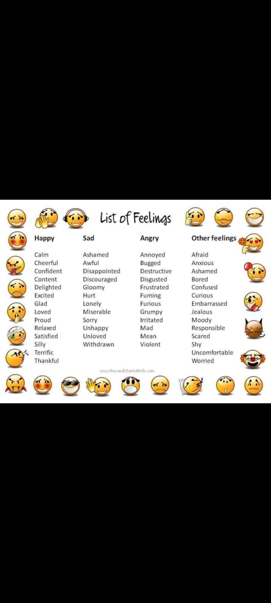
- Defecate: discharge feces from the body.
- Bodycon: A bodycon dress is tight and hugs the body, usually made of body-hugging, stretchy fabric that fits over a female's silhouette191 seamlessly.
- Veers: घुमाना, मोड़ना, झटके से मुड़ना, घूम जाना
- Vantage: सहूलियत, सुविधा
- Yearn: "Yearn" means to have an intense longing or desire for something, often accompanied by a sense of sadness or dissatisfaction due to its absence.
- Jousting: घुड़सवार भाला-युद्ध, Jousting is a medieval sport or martial contest in which two mounted knights armed with lances or other weapons charge at each other with the goal of unseating their opponent from their horse. It was a popular form of competition and entertainment during the Middle Ages.
- Caparison, caparisoned: A caparison is a decorative cloth covering used to adorn horses, particularly those ridden by knights in ceremonial events or jousting tournaments. It is often elaborately embroidered or adorned with heraldic symbols, reflecting the status and identity of the rider.
- Armory: शस्त्रागार; a place where weapons and military equipment are stored or a collection of weapons.
- heraldic: कुलचिह्नीय, the study and creation of armory or coat of arms.
- heraldry: कुलचिह्न विद्या; the study of armory, including the design, display, and regulation of coats of arms and heraldic symbols.
- herald: अग्रदूत; a messenger or forerunner, often one who announces or proclaims significant news or events.
- forerunner: It refers to:
- A Predecessor or Ancestor: Something or someone that came before another and may have influenced or led to its development.
- Example: The steam engine was a forerunner of modern-day trains.
- Hindi: भाप इंजन आधुनिक ट्रेनों का पूर्ववर्ती था।
- A Sign or Indication of Something to Come: An event, condition, or person that indicates the approach of something or someone else, often in a more advanced or developed form.
- Example: Dark clouds are often a forerunner of a storm.
- Hindi: काले बादल अक्सर तूफान का संकेत होते हैं।
- A Pioneer or Trailblazer: Someone who leads the way for others in a particular field or activity.
- Example: She was a forerunner in the field of environmental science.
- Hindi: वह पर्यावरण विज्ञान के क्षेत्र में अग्रदूत थीं।
- Heralded:
- सूचित किया गया; announced or signaled the approach of something
- "The arrival of spring was heralded by blooming flowers." (वसंत का आगमन खिलते फूलों द्वारा सूचित किया गया।)
- स्वागत किया गया; praised or welcomed publicly as important or good
- "The scientist was heralded as a pioneer in cancer research." (वैज्ञानिक को कैंसर अनुसंधान में अग्रणी के रूप में स्वागत किया गया।)
- Attire: "Attire" refers to the clothing or garments worn by a person, often used in a formal or specific context. It encompasses all items of clothing, including suits, dresses, accessories, and other articles worn to cover or adorn the body.
- Ingenious: सरल, शुद्ध, चतुर, विदग्ध, it describes someone who is exceptionally clever, inventive, or resourceful in solving problems or creating new things. It can also refer to something that is characterized by originality, creativity, and cleverness in design or execution.
- विदग्ध: तपा हुआ, जला हुआ।
- Lodestone:
- "Lodestone" is a naturally occurring mineral, often a form of magnetite, that possesses magnetic properties. It has the ability to attract iron and other ferrous materials. In ancient times, lodestones were used as compasses because they naturally align with the Earth's magnetic field, allowing travelers to determine direction.
- a person or thing that is the focus of attention or attraction.
- Flash in the pan: A "flash in the pan" refers to something that initially shows great promise or success but ultimately fails to deliver any significant or lasting impact. It comes from the idea of a gun misfiring, where there's a brief flash of light in the pan but no bullet is fired, hence the effort or success is short-lived or illusory.
- How pan is referred above? > In the phrase "flash in the pan," the term "pan" refers to the pan of a firearm. In old firearms, the pan was a small container where gunpowder was placed. When the trigger was pulled, the gunpowder in the pan would ignite, creating a flash of light. If the gunpowder in the pan ignited but failed to ignite the main charge in the barrel, it would result in a failure to fire the gun, hence the metaphorical use of "flash in the pan" to describe something that starts with promise but fails to deliver meaningful results.
- Humbug: पाखंड, छल, कपट, "Humbug" is a term used to describe deceptive or dishonest behavior, especially in the context of insincere or false statements or actions intended to mislead or deceive others. It can also refer to something that is nonsensical or lacking in truth or substance.
- Impeccable: त्रुटिहीन, निर्दोष, निष्कलंक, "Impeccable" means without fault or error, flawless, or perfect in every aspect. It describes something that is of the highest quality or standard and is free from any mistakes, defects, or flaws.
- Virtue: गुण, सदाचार, भलाई, "Virtue" refers to a moral quality or characteristic considered to be good or desirable. It encompasses traits such as honesty, integrity, courage, kindness, and righteousness.
- Beguiled:
- मोहित किया गया; charmed or enchanted, often in a deceptive way
- "She was beguiled by his smooth manners and charm." (वह उसकी शालीनता और आकर्षण से मोहित हो गई थी।)
- धोखे में लाया गया; misled or deceived by trickery or flattery
- "The tourists were beguiled into buying fake antiques." (पर्यटकों को नकली प्राचीन वस्तुएँ खरीदने के लिए धोखे में लाया गया।)
- Eccentricities: सनकीपन
- Insolent: ढीठ, असभ्य, showing a rude and arrogant lack of respect.
- Sentence: "She hated the insolent tone of his voice”
- Enthrall: गुलाम बनाना, दास बनाना
- Pope: The word "pope" comes from the Latin word "papa," which means "father." In the context of Christianity, particularly the Roman Catholic Church, the pope is the bishop of Rome and the leader of the worldwide Catholic Church. He is regarded as the successor of Saint Peter and holds supreme spiritual authority over Catholics. The title "pope" is a term of respect and affection used to address the leader of the Catholic Church.
- Wear thin: "To wear thin" means for something to gradually lose its effectiveness, strength, or impact over time.
- It's often used metaphorically to describe a situation, relationship, or argument that becomes less convincing, enjoyable, or tolerable as time passes. Just like a fabric that becomes thinner and weaker with repeated use, something that "wears thin" starts to feel less substantial or believable.
- Sparingly: "Sparingly" means using or doing something in a limited or restrained manner.
- It suggests using only a small or moderate amount of something, rather than using it abundantly or excessively. For example, if you use salt sparingly, you use only a small amount to season your food.
- Vigilance: "Vigilance" refers to the state or quality of being watchful, alert, and attentive to detect potential danger, threats, or problems.
- Fleeting: क्षणिक (क्षणभंगुर); lasting for a very short time. For example, a fleeting glance is a quick or brief look, and a fleeting thought is a passing or momentary idea that doesn't linger for long.
- Scandalous: लज्जाजनक, अपवादजनक, "Scandalous" describes something that is shocking, disgraceful, or morally offensive, often involving behavior that goes against accepted standards of decency or propriety. It can refer to actions, events, or situations that provoke public outrage or condemnation due to their unethical, dishonest, or inappropriate nature.
- propriety: शिष्टाचार; the state or quality of conforming to conventionally accepted standards of behavior or morals.
- Ostentatious: दिखावटी, दिखावे का
- Enigma:
- रहस्य; something that is mysterious or difficult to understand
- "The disappearance of the plane remains an enigma." (विमान का गायब होना अब भी एक रहस्य बना हुआ है।)
- पहेली; a puzzling or inexplicable situation or person
- "He was an enigma to his colleagues—brilliant but reclusive." (वह अपने सहकर्मियों के लिए एक पहेली था—प्रतिभाशाली लेकिन अंतर्मुखी।)
- sadist: A sadist is someone who derives pleasure or gratification from inflicting pain, suffering, or humiliation on others. This term is often used in psychology and discussions about human behavior. It's considered a concerning trait when it leads to harmful behavior towards others.
- no later than and not earlier than:
- SENTENCE 1 - "The ads should be published no later than 7 AM EST on Monday"
- In the above sentence, "no later than" means that the action should be done by the specified time, and it's okay to do it earlier.
- SENTENCE 2 - "But not earlier than Monday at 12 AM EST"
- In above sentence, the action should begin on Monday at the earliest and should not start before midnight (12 AM) Eastern Standard Time (EST).
- Unsolicited: It is information, advice, input, or suggestions that you didn't ask for. It can be unwanted and can make you feel irritated, shamed, or judged.
- Examples of unsolicited advice
- A mother telling her daughter that she should break up with her boyfriend because cheating is a deal-breaker
- Phone calls trying to sell you something
- Why people give unsolicited advice
- Some people give unsolicited advice because they think they can help.
- Others give unsolicited advice because they are insecure and build their self esteem on the idea of how much they can help other people.
- How to handle unsolicited advice
- Sometimes the advice is helpful.
- Other times, it's not so helpful and unwelcome.
- You may not know how to respond.
- Maturity: Maturity typically refers to the state or quality of being fully developed, grown, or adult-like in behavior, attitude, or character. It involves a combination of emotional, intellectual, and social qualities that enable a person to handle various situations with wisdom, responsibility, and self-control. Maturity often includes traits such as rationality, empathy, resilience, and the ability to make sound decisions based on experience and understanding. It's not just about age but rather about how someone responds to and navigates life's challenges and responsibilities.
- staggering: चौंका देने वाला
- Hodgepodge: गोलमाल
- decor: the furnishing and decoration of a room.
- Tapestry: जटिल बुना हुआ कपड़ा; a piece of thick textile fabric with pictures or designs formed by weaving colored threads or by embroidering on canvas, used as a wall hanging or furniture covering.
- Pagoda: a Hindu or Buddhist temple, typically in the form of a many-tiered tower.
- Rorschach: a psychological test in which a person is shown spots of ink and asked what they look like, as a way of learning about the person's personality or feelings.
- Assortment: a miscellaneous collection of things or people.
- Knickknacks: छोटी-छोटी वस्तुएं; small, inexpensive items or trinkets used for decoration or as collectibles.
- trinkets: छोटी वस्तुएं; small, showy objects or ornaments of little value, often kept as souvenirs or for decoration.
- souvenirs: स्मृतिचिह्न; items kept as a reminder of a place, event, or experience, often purchased or collected during travels.
- Overlaid is the past tense and past participle of the verb "overlay”; Overlay can refer to:
- To Cover or Lay Over Something: To place one layer or object on top of another, often to add additional information, detail, or effect while keeping both visible.
- Example: The software allows you to overlay text on images.
- Hindi: सॉफ़्टवेयर आपको छवियों पर पाठ overlay करने की अनुमति देता है।
- An Additional Layer or Cover: A layer or covering that is placed over something else.
- Example: The map had an overlay of weather patterns.
- Hindi: नक्शे पर मौसम पैटर्न की एक परत थी।
- To Superimpose: To place one element over another in a way that allows both to be seen or considered.
- Example: The artist overlaid the new design onto the old artwork.
- Hindi: कलाकार ने नए डिज़ाइन को पुराने चित्रकला पर overlay किया।
- Jarring: झकझोर देने वाला; something that is shocking or disturbing, often due to being out of place or unexpected.
- OR - चौंकाने वाला; causing a shock or disturbance, often in a way that is abrupt or unsettling.
- "Juxtaposed" means to place two things close together or side by side, often for the purpose of comparison or contrast. It's about positioning elements in such a way that their differences or similarities are highlighted. For example, in a painting, contrasting colors might be juxtaposed to create visual interest, or in literature, contrasting characters might be juxtaposed to emphasize their differences in personality or beliefs.
- Communion:
- आध्यात्मिक एकता; गहरी भावनात्मक या आध्यात्मिक साझेदारी
- "She felt a strong communion with nature." (उसे प्रकृति के साथ गहरी आध्यात्मिक एकता का अनुभव हुआ।)
- पवित्र भोज; a Christian ceremony in which bread and wine are consumed symbolizing the body and blood of Christ
- "They took part in the Sunday communion." (उन्होंने रविवार के पवित्र भोज में भाग लिया।)
- "Admonitions" (चैतावनी) refer to warnings or pieces of advice given with the intention of correcting behavior or avoiding potential problems. They can be gentle reminders or more stern reprimands312, depending on the seriousness of the situation.
- Unrivaled: better than {everyone or everything of the same type}. (बेजोड़).
- Proclivity: झुकाव; a natural or habitual inclination or tendency towards something.
- Outset: the start or beginning
- Gauging meaning involves assessing or determining the significance or understanding of something.
- depending on the context:
- माप - Measurement or a tool for measurement.
- अनुमान - Estimate or approximation.
- विश्लेषण - Analysis or evaluation.
- "Scrutinizing" means closely examining or inspecting something in detail, often with a critical eye. It involves carefully analyzing the components, details, or aspects of a subject to understand it thoroughly or to assess its quality, accuracy, or validity. (100)
- Brace:
- सहारा देना; a device used to support, stabilize, or strengthen a part of the body, such as an orthopedic brace for injured limbs.
- He wore a brace on his knee to help with recovery. (उसने अपने घुटने पर एक सहारा डाला ताकि वह ठीक हो सके।)
- सुदृढ़ करना; to prepare or strengthen oneself for something challenging or difficult.
- She braced herself for the difficult conversation with her boss. (उसने अपने बॉस के साथ कठिन बातचीत के लिए खुद को तैयार किया।)
- धातु की पट्टी; a supporting structure or piece used in construction or mechanical contexts to provide stability.
- The engineers installed braces to reinforce the building's framework. (इंजीनियरों ने इमारत के ढांचे को मजबूत करने के लिए धातु की पट्टियाँ लगाईं।)
- "I braced myself" typically means that someone mentally or physically prepared themselves for something challenging, difficult, or unexpected. It implies getting ready for an impact or an adverse situation by steeling oneself emotionally, mentally, or physically.
- "Exhilarating" describes something that is extremely exciting, thrilling, or invigorating. It's a feeling of intense joy, enthusiasm, or stimulation that comes from engaging in an activity or experiencing something that is highly enjoyable or adrenaline-inducing.
- "Sodomized" refers to forced anal intercourse, often used in a violent or non-consensual context. It's a term derived from the biblical story of Sodom and Gomorrah, where the residents were said to engage in sinful behavior, including sexual acts. In contemporary usage, it's typically used to describe a criminal act of sexual assault or rape involving anal penetration without consent.
- "Pundits" are experts or commentators who are knowledgeable and often offer opinions or insights on specific subjects, particularly in politics, sports, or media. They are usually well-versed in their field and provide analysis, commentary, or predictions based on their expertise.
- "Prurient" describes something characterized by or arousing an excessive interest in sexual matters or desires. It often implies a lascivious or unhealthy fascination with sexual topics, typically beyond what is considered appropriate or socially acceptable.
- "Refrained" means to abstain or hold back from doing something, especially something one desires or is tempted to do. It implies exercising restraint or self-control in order to avoid a particular action or behavior.
- "Imply" means to suggest or indicate something indirectly or without explicitly stating it. It involves conveying a message or meaning through implications, hints, or context rather than directly expressing it.
- "Implications" refer to the indirect consequences, effects, or results that arise from a particular action, decision, or statement. They are the logical extensions or inferred meanings that can be drawn from something, often beyond its explicit content. Implications can be both intended and unintended, and they can have significant impact on a situation or outcome.
- Compassion:
- सहानुभूति; sympathetic pity and concern for the sufferings or misfortunes of others
- She showed great compassion towards the victims of the disaster. (उसने आपदा के पीड़ितों के प्रति महान सहानुभूति प्रदर्शित की।)
- दयालुता; a deep awareness of the suffering of another coupled with the wish to relieve it
- His compassion for animals led him to become a veterinarian. (जानवरों के प्रति उसकी दयालुता ने उसे एक पशु चिकित्सक बनने की प्रेरणा दी।)
- करुणा; the feeling of wanting to help those who are hurting
- Compassion is essential for building strong communities. (करुणा मजबूत समुदाय बनाने के लिए आवश्यक है।)
- Compassion is the ability to understand and empathize with the suffering or difficulties of others, coupled with the desire to alleviate that suffering or help ease those difficulties. It involves kindness, empathy, and a genuine concern for others' well-being. (सहानुभूति, दया, तरस)
- (Cambridge Dictionary) compassion: a strong feeling of sympathy and sadness for the suffering or bad luck of others and a wish to help them:
- Sentence Example:I was hoping she might show a little compassion.
- "Vague" refers to something that is unclear, imprecise, or lacking in detail. It's often used to describe statements, descriptions, or explanations that are not specific or definite, making it difficult to understand or interpret them accurately.
- Disquieting:
- चिंता उत्पन्न करने वाला; causing anxiety or unease
- "The news report contained some disquieting details." (समाचार रिपोर्ट में कुछ चिंता उत्पन्न करने वाले विवरण थे।)
- अशांत करने वाला; disturbing or unsettling to the mind
- "There was a disquieting silence in the courtroom." (अदालत में एक अशांत करने वाली चुप्पी थी।)
- Nexus:
- कड़ी; a connection or link between two or more things
- "There is a strong nexus between poverty and crime." (गरीबी और अपराध के बीच एक मजबूत कड़ी है।)
- संबंध; a central or focal point of association
- "The city is a nexus of global finance and culture." (यह शहर वैश्विक वित्त और संस्कृति का संबंध बिंदु है।)
- गठजोड़; a network or alliance, often secret or influential
- "The investigation uncovered a political-business nexus." (जांच में एक राजनीतिक-व्यापारिक गठजोड़ का खुलासा हुआ।)
- "Aptly" means appropriately or fittingly.
- Despair:
- निराशा; a state of complete loss of hope
- She felt a deep sense of despair after hearing the bad news. (खराब समाचार सुनने के बाद उसने निराशा का गहरा अनुभव किया।)
- वेदना; to lose all hope or confidence
- The long wait for answers led him to despair of ever getting help. (उत्तर के लिए लंबे इंतजार ने उसे कभी मदद मिलने की निराशा में डाल दिया।)
- दुखी होना; to be in a state of distress
- Despair can sometimes lead to positive change if it motivates action. (निराशा कभी-कभी सकारात्मक बदलाव की ओर ले जा सकती है यदि यह कार्रवाई को प्रेरित करे।)
- "Dire" (भयंकर, अत्यंत): It describes a situation or circumstance that is extremely serious, urgent, or fraught with severe consequences. It implies that the situation is grave, critical, or dangerous.
- Demise: अंत, विगटन (अलग करना, तोड़ना)
- "Demise" generally refers to the death of a person, especially in a formal or respectful context. It can also refer to the end or termination of something, such as the closure of a business or the downfall of a regime.
- Unremarkable: असाधारण
- "Unremarkably" means in a manner that is not worthy of particular attention or comment; it's something that is ordinary or typical.
- "Prognostication": "पूर्वानुमान" (pūrvānumān) or "भविष्यवाणी" (bhaviṣyavāṇī) in Hindi.
- "Intractable" refers to something that is difficult to manage, control, or solve. It can describe a problem or a person who is stubborn or hard to deal with. (अटल, अधिक चढ़ाव वाला)
- "Sophomore" is a term used in the United States education system to refer to a student in their second year of high school or college.
- "Sophomore" translates to "दूसरा वर्षीय" (Doosra Varsiya) in Hindi. It refers to a student in the second year of high school, college, or university.
- The terms "psychologist" and "psychiatrist" both relate to mental health professionals, but they have different roles and qualifications:
- A psychologist is a mental health professional who studies human behavior and mental processes. They typically hold a doctoral degree (Ph.D. or Psy.D.) in psychology and may specialize in areas such as clinical psychology, counseling psychology, or research. Psychologists often provide therapy, conduct psychological assessments, and offer counseling services.
- A psychiatrist is a medical doctor (M.D. or D.O.) who specializes in the diagnosis, treatment, and prevention of mental illnesses. Psychiatrists are trained in both medicine and psychology and can prescribe medication to treat mental health disorders. They may also provide therapy or counseling, but their primary focus is on the medical aspects of mental health care.
In summary, while both psychologists and psychiatrists work in the field of mental health, psychologists primarily focus on therapy and counseling using psychological techniques, while psychiatrists have a medical background and can prescribe medication in addition to providing therapy.
Psychoanalysts: Specialists in psychoanalysis; may come from various professional backgrounds; focus on long-term, in-depth therapy exploring unconscious processes.
In Hindi:
- "Psychologist" = "मनोवैज्ञानिक" (Manovigyanik).
- "Psychiatrist" = "मनोचिकित्सक" (Manochikitsak).
- "Reuptake" refers to the process by which neurotransmitters, which are chemical messengers in the brain, are reabsorbed by the neuron that released them after they have transmitted a signal to another neuron. This process helps regulate the level of neurotransmitters in the synaptic cleft, the small gap between neurons, and is crucial for maintaining normal communication between neurons in the brain.
- An "inhibitor" is a substance or agent that interferes with or suppresses a biological or chemical process. In various contexts, inhibitors can block or reduce the activity of enzymes, neurotransmitters, receptors, or other molecules involved in biochemical pathways or physiological functions. They are often used in medicine to treat diseases or disorders by targeting specific biological processes.
- "Altruism" refers to the selfless concern for the well-being of others, often expressed through acts of kindness, generosity, or sacrifice. Altruistic actions are motivated by a desire to help others without expecting anything in return, and they can range from small gestures of kindness to significant acts of philanthropy or volunteerism.
- "Altruism" translates to "स्वार्थहीनता" (Svarthahinata) in Hindi.
- Exhorted (exhorting):
- प्रेरित किया; strongly encouraged or urged someone to take action
- "The coach exhorted the players to give their best in the match."
(कोच ने खिलाड़ियों को मैच में अपना सर्वश्रेष्ठ देने के लिए प्रेरित किया।)
- सलाह दी; advised or recommended with urgency
- "She exhorted her friends to pursue their dreams despite the challenges."
(उसने अपने दोस्तों को चुनौतियों के बावजूद अपने सपनों का पीछा करने की सलाह दी।)
- उत्साहित किया; urged someone emotionally to do something
- "The speaker exhorted the audience to help those in need."
(वक्ता ने श्रोताओं को जरूरतमंदों की मदद करने के लिए उत्साहित किया।)
- "Theology" refers to the study of religious beliefs, doctrines, and practices, particularly within a specific religious tradition or context. It involves the systematic and critical examination of concepts such as the nature of the divine, the origins of religious beliefs, the interpretation of sacred texts, and the role of religion in society and individual lives.
- "Exoticism" refers to the quality of being exotic, which means being strikingly different or unusual, often in a way that is culturally or geographically distant from one's own experience.
- In Hindi, "exoticism" translates to "विदेशीपन" (Videshipan) or "अज्ञातता" (Ajnātatā).
- "Pantheism" is the belief that the universe, nature, or reality as a whole is divine, and that divinity permeates everything. In pantheism, there is no distinction between a creator god and the universe itself; rather, the universe is considered to be the embodiment of the divine.
- In Hindi, "pantheism" translates to "सर्वभूतवाद" (Sarvabhūtavād).
- Startled:
- चौंका हुआ; suddenly surprised or alarmed by something unexpected
- "She was startled by the loud bang outside." (वह बाहर की तेज़ आवाज़ से चौंक गई।)
- भयभीत; momentarily frightened due to a sudden shock
- "The dog was startled when the door slammed shut." (दरवाज़ा तेज़ी से बंद होने पर कुत्ता भयभीत हो गया।)
- हड़बड़ाया हुआ; disturbed or shaken out of calmness
- "He looked startled when I called his name loudly." (जब मैंने उसका नाम ज़ोर से पुकारा तो वह हड़बड़ाया हुआ दिखा।)
- "Quintessentially" means representing the most perfect or typical example of something; it embodies the essential or most characteristic qualities of a particular thing or concept.
- "Miniature" refers to something that is much smaller in scale or size compared to its usual or typical size. It can also refer to a small-scale representation or model of something larger. For example, a miniature painting is a small, detailed painting, often depicting scenes or portraits.
- "Innate" means existing in one from birth; inherent or natural rather than acquired or learned.
- In Hindi, "innate" translates to "अंगीकृत" (Angikrit) or "सहज" (Sahaj).
- "Notion" refers to a belief, idea, or concept, often one that is vague or not fully formed.
- In Hindi, "notion" translates to "धारणा" (Dharana) or "विचार" (Vichar).
- "Morphed" means to undergo a transformation or change, often in terms of appearance or form.
- In Hindi, "morphed" translates to "रूपांतरित" (Roopantarit) or "रूपांतरित होना" (Roopantarit hona).
- "Bystanders" are people who witness an event or situation but do not actively participate or intervene.
- "Upstanders" are individuals who actively speak out or take action to support others or address injustice or wrongdoing.
- In Hindi:
- "Bystanders" translates to "दर्शक" (Darshak) or "अद्यक्ष" (Adhyaksh).
- "Upstanders" translates to "साहसी" (Sāhāsī) or "उत्तरदाता" (Uttaradātā).
- "Lest" is a conjunction that means "for fear that" or "in order to prevent any possibility that." It is used to introduce a clause expressing something that should be avoided or prevented. For example, "She studied diligently lest she fail the exam." In this sentence, "lest" indicates that she studied diligently to prevent the possibility of failing the exam.
- Sentence Example: Every child is taught to be on the look out for bullied lest they become bystanders instead of up upstanders.
- Translation in hindi: "हर बच्चे को यह सिखाया जाता है कि उन्हें बुली की ओर सतर्क रहना चाहिए, ताकि वे दर्शक बनने के बजाय उत्तरदाता बनें।”
- "Adversity" means difficulties or hardships, especially in one's life or circumstances.
- In Hindi, "adversity" translates to "विपत्ति" (Vipatti) or "दुर्भाग्य" (Durbhagya).
- "Hedonism" is a philosophical doctrine that states that pleasure or happiness is the highest good and the primary aim of human life. It suggests that the pursuit of pleasure and the avoidance of pain are the central driving forces behind human behavior.
- In Hindi, "hedonism" translates to "भोगवाद" (Bhogvad) or "सुखवाद" (Sukhvad).
- "Subdue" means to bring under control or to overcome, typically through force or persuasion. In Hindi, "subdue" translates to "नियंत्रित करना" (Niyamtrit karna) or "वश में करना" (Vash mein karna).
- Sentences:
- The calming music helped to subdue the rowdy crowd, easing the tension in the room.
- Despite his best efforts to subdue his anger, the frustration was evident in his voice.
- The explorers had to subdue their excitement as they approached the ancient ruins, wary of potential dangers.
- "Sedative" is a substance or medication that has a calming or tranquilizing effect, typically used to induce sleep or reduce anxiety.
- In Hindi, "sedative" translates to "शांति देनेवाला" (Shanti dene vala) or "निद्रा लानेवाला" (Nidra lane vala).
- Proposition:
- प्रस्ताव; a statement or plan put forward for consideration or acceptance
- "He made a business proposition to his partner." (उसने अपने साझेदार को एक व्यापारिक प्रस्ताव दिया।)
- कथन; a statement that expresses a judgment or opinion
- "The philosopher discussed the truth of the moral proposition." (दार्शनिक ने नैतिक कथन की सत्यता पर चर्चा की।)
- सिद्धांत; an idea or theory to be proved or explained
- "The scientist presented a new proposition about energy transfer." (वैज्ञानिक ने ऊर्जा के स्थानांतरण पर एक नया सिद्धांत प्रस्तुत किया।)
- Resented (Resentment//Resentful):
- नाराज हुआ; felt bitterness or indignation
- "He resented being ignored by his colleagues."
(वह अपने सहयोगियों द्वारा नजरअंदाज किए जाने से नाराज हुआ।)
- विरोध किया; opposed or took offense to something
- "She resented the unfair treatment at work."
(उसने कार्यस्थल पर मिले अनुचित व्यवहार का विरोध किया।)
- "Indignation," which refers to anger or annoyance provoked by what is perceived as unfair treatment or injustice.
- devour (devoured):
- निगल लिया; to eat something quickly and eagerly, often in large quantities.
- He devoured the sandwich in just a few bites. (उसने सैंडविच को कुछ ही कौर में निगल लिया।)
- ग्रस लिया; to consume or destroy something with intensity or enthusiasm.
- She devoured the novel in one sitting because it was so captivating. (उसने उपन्यास को एक ही बार में पढ़ लिया क्योंकि वह इतना दिलचस्प था।)
- "Purports" in English means the meaning or substance of something, especially when not immediately apparent. In Hindi, it translates to "अर्थ" (Arth).
- "Coveted" in English means eagerly desired or sought after. In Hindi, it translates to "इच्छित" (Ichchhit).
- "Swain" is an old-fashioned term that refers to a young lover or suitor, especially a country youth.
- "Treads" in English can refer to the action of stepping or walking on something, or it can refer to the grooved surface of a tire that makes contact with the road. In Hindi, it translates to "पग़ रखना" (Pag rakhna) or "चाल" (Chaal) when referring to stepping or walking, and "गाड़ी की फ़ुटपैथ" (Gaadi ki footpath) when referring to the grooved surface of a tire.
- "Clouted" can mean either being struck with the hand or a heavy blow or object. It can also mean being influenced or affected by something.
- "Shoon" is an archaic form of the word "shoes" in English. In Hindi, it translates to "जूते" (Jootay). (150)
- "Archaic" refers to something that is old-fashioned, outdated, or no longer in common use. It can also refer to a style or form of language that was used in ancient times.
- "Obscurity" in English refers to the state of being unknown, inconspicuous, or not well-known. In Hindi, it translates to "अज्ञातता" (Ajnata).
- "Eminence" in English refers to high status or importance, often in a specific field or domain.
- In Hindi, "Eminence" can be translated as "प्रतिष्ठा" (pratishtha) or "श्रेष्ठता" (shreshthata).
- Eminence: In English, "eminence" means a position of high rank or prominence. In Hindi, it can be translated as "प्रतिष्ठा" (pratishtha) or "उत्कृष्टता" (utkrishtata).
- "Posterity" refers to all future generations, the descendants of a person, or those who will come after. In Hindi, it can be translated as "आने वाले पीढ़ियों" (Aane waale peedhiyon) or "आगामी पीढ़ियों" (Aagami peedhiyon).
- Vanity:
- घमंड; अपने बारे में अत्यधिक गर्व या अहंकार
- ("Her vanity made her blind to her own flaws." (उसका घमंड उसे अपनी कमियों को देखने से अंधा बना देता था।)
- व्यर्थता; किसी चीज़ का निरर्थक या बेकार होना
- "The vanity of his efforts became clear when the project failed." (जब परियोजना विफल हो गई, तो उसके प्रयासों की व्यर्थता स्पष्ट हो गई।)
- ड्रेसिंग टेबल; एक छोटी मेज जिसमें आईना लगा होता है और जिसका उपयोग श्रृंगार के लिए किया जाता है.
- "She sat at her vanity, applying makeup before the party." (वह पार्टी से पहले श्रृंगार करने के लिए अपनी ड्रेसिंग टेबल पर बैठी थी।)
- "Purgatory" refers to a place or state of temporary suffering or punishment in some Christian beliefs, where souls are purified before entering heaven.
- In Hindi, "purgatory" can be translated as "शोधस्थान" (Shodhsthān) or "शुद्धि स्थान" (Shuddhi Sthān), which convey the idea of a place of purification or cleansing.
- Cogent: The word "cogent" means clear, logical, and convincing. In Hindi, you can translate it as "समझदार" (samajhdar), which also implies intelligent or sensible.
- Facile: The word "facile" means something that is easily achieved or effortless. In Hindi, you can translate it as "सरल" (saral), which also denotes simplicity or ease.
- Indebted:
- ऋणी; owing money or something of value to someone
- "He was deeply indebted to the bank after taking a large loan." (बड़े ऋण लेने के बाद वह बैंक का बहुत ऋणी हो गया था।)
- आभारी; feeling grateful because of help or kindness received
- "I am forever indebted to you for saving my life." (मैं तुम्हारा जीवन बचाने के लिए सदा आभारी रहूंगा।)
- बाध्य; obligated due to a favor or moral duty
- "She felt indebted to her mentor for his constant support." (वह अपने मार्गदर्शक की निरंतर सहायता के लिए स्वयं को बाध्य महसूस करती थी।)
- Indebtedness:
- ऋणग्रस्तता; the state of owing money
- "His indebtedness grew due to mounting credit card bills." (बढ़ते क्रेडिट कार्ड बिलों के कारण उसकी ऋणग्रस्तता बढ़ गई।)
- आभार; the condition of being grateful for help or kindness
- "She expressed her deep indebtedness to her teachers." (उसने अपने शिक्षकों के प्रति गहरा आभार व्यक्त किया।)
- दायित्व; a moral or social obligation resulting from a favor received
- "There was a sense of indebtedness in his voice as he spoke." (जब उसने बात की तो उसकी आवाज़ में दायित्व की भावना थी।)
- Fortitude: The word "fortitude" refers to courage and resilience in facing adversity. In Hindi, it can be translated as "धैर्य" (dhairy), which also implies strength of mind and endurance.
- Maxims: The word "maxims" refers to concise expressions of general truths or principles. In Hindi, it can be translated as "सूक्ष्मविचार" (sūkṣmavicār) or "नीति" (nīti).
- Astray: गुमराह
- He was led astray by boozy colleagues
- शराबी सहकर्मियों ने उसे गुमराह किया था
- cunnilingus: stimulation of the female genitals using the tongue or lips.
- Odyssey: The word "Odyssey" refers to a long and adventurous journey, often filled with notable experiences and challenges. It originates from Homer's epic poem "The Odyssey," which describes the adventures of the Greek hero Odysseus as he returns home from the Trojan War.
- In Hindi, "Odyssey" can be translated as "दुर्घ यात्रा" (durgha yatra) or "दीर्घ यात्रा" (dirgha yatra), which both imply a long and eventful journey. Another possible translation is "रोमांचक यात्रा" (romanchak yatra), which emphasizes the adventurous aspect of the journey.
- mung: manipulate (data).
- breath (noun) the air taken into or expelled from the lungs.
- breathe (verb): take air into the lungs and then expel it, especially as a regular physiological process.
- A desiccant is a hygroscopic substance that is used to induce or sustain a state of dryness (desiccation) in its vicinity; it is the opposite of a humectant. Commonly encountered pre-packaged desiccants are solids that absorb water.
- Chatgpt: A desiccant is a substance that absorbs moisture from its environment, thereby keeping its surroundings dry. Desiccants are often used in packaging, storage, and shipping to protect products from moisture damage. Common desiccants include silica gel, calcium chloride, and activated charcoal. They are particularly useful for preserving the integrity of food, pharmaceuticals, and electronic equipment by preventing mold, corrosion, and other moisture-related issues.
- humectant: A humectant is a substance used to retain moisture. Humectants attract water from the surrounding environment and help to keep products, such as cosmetics, food, and pharmaceuticals, hydrated. In skincare and personal care products, humectants help to keep the skin moist by drawing water from the air into the skin. Common examples of humectants include glycerin, hyaluronic acid, and propylene glycol. They are essential for maintaining the texture, stability, and effectiveness of various products by preventing them from drying out.
- "Incite" means to provoke or stir up actixon, often with a negative connotation. It typically refers to actions or words that encourage or urge others to engage in something, especially something violent or unlawful.
- milieu: "Milieu" is a French word that means "environment" or "surroundings." In English, it is used to describe the social, cultural, or physical setting in which something occurs or develops. The term often refers to the context or conditions that influence individuals or events. For example, one might talk about the artistic milieu of Paris in the 1920s to refer to the vibrant and influential community of artists and intellectuals during that time.
- condemn: (Condemned:)
- निंदा किया गया; strongly criticized or expressed disapproval
- "The leader condemned the violence in his speech." (नेता ने अपने भाषण में हिंसा की निंदा की।)
- दोषी ठहराया गया; declared guilty and sentenced, especially to punishment
- "The criminal was condemned to life imprisonment." (अपराधी को उम्रकैद की सजा सुनाई गई।)
- अवांछनीय ठहराया गया; declared unfit for use or occupation
- "The building was condemned after the earthquake." (भूकंप के बाद इमारत को अवांछनीय घोषित कर दिया गया।)
- arduous: The word "arduous" means involving or requiring strenuous effort; difficult and tiring.
- In Hindi, "arduous" can be translated as "कठिन" (kathin) or "कठिन परिश्रम का" (kathin parishram ka).
- henpecked: The term "henpecked" is used to describe a man who is constantly being nagged, harassed, or dominated by his wife or partner. It often carries a connotation of the man being submissive to the extent that his decisions and actions are heavily influenced or controlled by his wife.
- In Hindi, "henpecked" can be translated as "जोरू का गुलाम" (pronounced as "joru ka gulaam"). This phrase directly translates to "a slave of the wife," reflecting the idea of a man who is dominated by his wife.
- The word "repressed" means to suppress or restrain something, often emotions or desires, to keep it under control or to prevent it from being expressed openly.
- In Hindi, "repressed" can be translated as "दबा हुआ" (daba hua) or "दबाया हुआ" (dabaya hua).
- Sentence examples:
- English: He has repressed his anger for a long time.
- Hindi: उसने अपने गुस्से को लंबे समय से दबा रखा है।
- Difference between suppress and repress - Both terms involve the idea of stopping or holding back
- "suppress" is more about external actions and force
- "repress" is about internal restraint and control.
- Antagonistic: It means showing or feeling active opposition or hostility toward someone or something.
- In Hindi, "antagonistic" can be translated to "विरोधी" (Virodhi)
- प्रतिपक्ष, (opponents)
- Etymology:
- The word "antagonist" originates from the Greek word "antagonistes," which is derived from "antagonizesthai," meaning "to struggle against, to contend with," or "to act in opposition." In ancient Greek drama, the "antagonistes" was the principal character who opposed or contended with the protagonist, often creating conflict and tension within the narrative. Over time, the term has broadened in usage to refer to any character, force, or substance that opposes or competes with another in a story, conflict, or process. In medicine and pharmacology, an antagonist is a substance that interferes with or inhibits the physiological action of another substance or system.
- Protagonist: Protagonist: प्रमुख; main character
- Etymology: The term "protagonist" also has its roots in ancient Greek. It comes from the Greek word "protagonistes," which is a combination of "protos," meaning "first," and "agonistes," meaning "actor" or "combatant." In ancient Greek drama, the "protagonistes" was the principal actor, typically playing the leading role and often representing the character around whom the plot revolves. Over time, "protagonist" has come to refer to the main character or central figure in a story, novel, play, or other narrative work. They are usually the character whose actions and decisions drive the plot forward and with whom the audience tends to identify or sympathize.
- allopathy: the treatment of disease by conventional means, i.e. with drugs having effects opposite to the symptoms.
- continuum: The term "continuum" refers to a continuous sequence or range, where elements transition smoothly and without distinct separations from one to another.
- In Hindi, "continuum" can be translated as "निरंतरता" (nirantarta).
- Pacifier: The term "pacifier" refers to a small rubber or plastic object that a baby sucks on to feel comforted and calm. It is also known as a "dummy" in British English.
- In Hindi, a pacifier is commonly called "चूसनी" (pronounced "choosni").
- "Preface" means a preliminary statement or introduction to a book, typically stating its subject, purpose, and scope. In Hindi, it is translated as "प्रस्तावना" (Prastavna).
- conglomerate: It is a large corporation that consists of diverse divisions, often unrelated to each other, operating in various industries under one corporate group. These divisions may be involved in distinct business activities such as manufacturing, services, technology, etc. E.g., Alphabet Inc, Tata Group
- In Hindi, "conglomerate" can be translated to "बहुराष्ट्रीय कंपनी" (bahuraṣhṭrīya kampanī) or "विविध व्यवसाय समूह" (vividh vyavsay samūh).
- बहुराष्ट्रीय कंपनी (bahuraṣhṭrīya kampanī): This translates to "multinational company."
- विविध व्यवसाय समूह (vividh vyavsay samūh): This translates to "diverse business group."
- Compliance:
- अनुपालन; the act of conforming to rules or standards
- "The company was fined for lack of compliance with safety regulations." (सुरक्षा नियमों के अनुपालन की कमी के लिए कंपनी पर जुर्माना लगाया गया।)
- समर्पण; a tendency to yield willingly to others
- "Her quiet compliance surprised everyone in the meeting." (बैठक में उसका शांत समर्पण सभी को हैरान कर गया।)
- "Berserk" is an adjective that means to be in a state of frenzied or uncontrollable rage or wild behavior. It often describes someone who is acting in a violent and destructive manner without restraint.
- In Hindi, "berserk" can be translated to:
- पागल (pagal) - which means "crazy" or "mad"
- उन्मत्त (unmatt) - which means "frantic" or "frenzied"
- उग्र (ugra) - which means "fierce" or "furious"
- "Subside" is a verb that means to become less intense, violent, or severe; to diminish or decrease. It can also mean to sink to a lower or normal level.
- In Hindi, "subside" can be translated to:
- शांत होना (shant hona) - which means "to become calm" or "to quiet down"
- कम होना (kam hona) - which means "to decrease" or "to reduce"
- बैठ जाना (baith jana) - which means "to settle down" or "to sink"
- "Recapitulate" is a verb that means to summarize or restate the main points of something.
- In Hindi, "recapitulate" can be translated to:
- संक्षेप में दोहराना (sankshep mein dohrana) - which means "to repeat in brief"
- संक्षेप में प्रस्तुत करना (sankshep mein prastut karna) - which means "to present in brief"
- पुनःसारांश प्रस्तुत करना (punah saaransh prastut karna) - which means "to present a summary again"
- Foliage: It refers to the leaves of a plant. It encompasses all the greenery you see on trees, shrubs, and other plants. In Hindi, you can translate “foliage” as "पर्ण समूह"1. So, when you admire the lush green leaves on a tree, you’re appreciating its beautiful foliage! 🌿🍃
- The word “partakes” has several meanings in English, and it can be translated to Hindi in different ways:
- भाग लेना (bhāg lenā): This translation captures the sense of participating or sharing in something. For example, “We shared the cake” can be expressed as “हमने केक का भाग लिया”.
- ग्रहण करना (grahaṇ karnā): This conveys the idea of receiving or accepting something. For instance, “She didn’t partake of the food all night” can be translated as “उसने रात भर खाना नहीं ग्रहण किया”.
- सम्मिलित होना (sammilit honā): This implies being involved or integrated. For example, “I am joining Tai Chi classes this week” can be expressed as “मैं इस सप्ताह टाई ची क्लासेस में सम्मिलित हो रहा हूँ” in Hindi1.
- हिस्सा लेना (hissā lenā): This means taking a share or participating. For instance, “He wants no formal part in this case” can be translated as “उसे इस मामले में कोई औपचारिक भाग नहीं लेना है”.
- transcendental: It describes something that lies beyond practical experience and cannot be understood by ordinary reasoning.
- Boning: It can have different meanings depending on the context:
- Culinary: In cooking, boning refers to the process of removing bones from meat, poultry, or fish. This is often done to make the food easier to eat or prepare in certain recipes.
- Fashion/Costume Design: In fashion, particularly in the construction of corsets or structured garments, boning refers to the use of rigid strips (traditionally made of whalebone but now more commonly made of plastic or metal) inserted into the fabric to provide shape and support.
- Slang (Sexual Context): In informal slang, "boning" can be a crude term for sexual intercourse.
- What does the crude term mean here?
The term "crude" in this context means that the language is blunt, coarse, or lacking in refinement. It's often considered vulgar or offensive. So, when "boning" is referred to as a crude term for sexual intercourse, it implies that this usage is informal and can be seen as inappropriate or disrespectful in polite or formal settings.
- Woodworking: In woodworking, boning involves using a straight edge or line to check the flatness or straightness of a surface.
- The meaning of term boning should be inferred based on the specific context in which it is used.
- Silhouette: Google image search, It refers to the image of a person, animal, object, or scene represented as a solid shape of a single color, usually black, with its edges matching the outline of the subject. The interior of a silhouette is featureless, and it is typically presented on a lighter background, making the outline clearly visible. The term originates from the mid-18th century and is derived from the name of Étienne de Silhouette, a French finance minister known for his austerity measures and also for his hobby of cutting paper portraits. Silhouettes are commonly used in various art forms and visual media, including:
- Portrait Art: Creating detailed profiles of individuals, especially popular before the advent of photography.
- Graphic Design: Simplified shapes for logos, icons, and other visual elements.
- Film and Photography: To create dramatic effects by emphasizing the shape and outline rather than details.
- Fashion Design: To illustrate the outline and general shape of garments.
- Source: Merriam Webster Dictionary - a woman's tight stiff undergarment worn to support or give shape to waist and hips. corset.
Silhouettes are valued for their simplicity, striking visual impact, and the way they can convey a lot of information about the shape and form of the subject with minimal detail.
- hourglass silhouette
- Hook-and-Eye Closure:

- The term "bust" has several meanings depending on the context:
- Sculpture: A sculpture of a person's head, shoulders, and chest.
- Financial failure: When used in a financial context, "bust" refers to a business or individual that has gone bankrupt or experienced a severe financial loss.
- Police action: In law enforcement, a "bust" refers to an arrest or a raid, often related to illegal activities.
- Break or damage: Informally, "bust" can mean to break or damage something, e.g., "I busted my phone."
- Failure: In general use, it can also mean a failure or flop, e.g., "The event was a bust."
- Body part: Informally, "bust" can refer to a woman's breasts.
- a woman's chest as measured around her breasts. i.e., "a 36-inch bust"
Each meaning is derived from different contexts and usage, so the specific definition will depend on how the term is being used.
- Noose: It refers to a loop with a slipknot that tightens when pulled, commonly used to trap animals or as a method of execution by hanging.
- In Hindi, "noose" is translated as "फंदा" (pronounced as "fandaa").
- silos: It has contextual meanings:
- Agricultural Context: A structure for storing bulk materials, such as grain.
- In Hindi: अनाज या बल्क सामग्री को संग्रहित करने के लिए संरचना
- Organizational Context: The separation of different departments or teams within an organization that do not effectively communicate or collaborate with each other.
- In Hindi: संगठन के विभिन्न विभागों या टीमों के बीच प्रभावी संचार या सहयोग का अभाव i.e., विभागीय पृथक्करण (Vibhagiya Prithakkaran)
- Military Context: An underground chamber used to house and launch missiles.
- In Hindi: मिसाइलों को रखने और लॉन्च करने के लिए भूमिगत कक्ष
- "Wallowing" means indulging in an unrestrained way in something that creates a pleasurable sensation, often used metaphorically to describe immersing oneself in negative emotions like sadness or self-pity.
- In Hindi, "wallowing" can be translated as "डूबना" (doobna) when used in a context of being immersed in something. For example:
- "He is wallowing in self-pity" can be translated to "वह आत्म-दया में डूबा हुआ है" (vah aatma-daya mein dooba hua hai).
- - moved to 142. (Resentment)
- couch surf: "Couch surfing" refers to the practice of staying overnight on someone's couch or in their home instead of staying in a hotel or other paid accommodation. This is often done as a way to save money while traveling. The term has also evolved into a broader cultural phenomenon, facilitated by online platforms such as Couchsurfing.com, where hosts offer free accommodation to travelers. It's not just about finding a free place to stay, but also about cultural exchange and meeting new people.
- Neuroscience is the scientific study of the nervous system, including the brain, spinal cord, and neural networks. It encompasses various disciplines such as biology, psychology, chemistry, and medicine to understand the structure, function, development, genetics, biochemistry, physiology, pharmacology, and pathology of the nervous system. (200)
- In Hindi, neuroscience is translated as "तंत्रिका विज्ञान" (pronounced as tantrikā vijñān).
- 🙂Nervous system: तंत्रिका तंत्र; the complex network of nerves and cells that transmits signals between the brain, spinal cord, and other parts of the body, coordinating sensory information and responses
- Computational Biology: Computational biology is a field of science that uses data-analytical and theoretical methods, mathematical modeling, and computational simulation techniques to study biological, behavioral, and social systems.
- Translation in Hindi: गणनात्मक जीवविज्ञान (Gananatmak Jeev Vigyaan)
- Neuron: A specialized cell transmitting nerve impulses; a nerve cell.
- In Hindi: तंत्रिका कोशिका (Tantrika Koshika)
- Also, "Neurons are the fundamental units of the brain and nervous system."
In Hindi: "तंत्रिका कोशिकाएं मस्तिष्क और तंत्रिका तंत्र की मौलिक इकाइयां होती हैं।"

- Synapse: Meaning: The junction between two nerve cells, where nerve impulses pass by diffusion of a neurotransmitter.
- Translation in Hindi: सिनेप्स (Synapse) or संधि बिंदु (Sandhi Bindu)
- E.g, "The synapse is where the transmission of nerve impulses occurs between neurons."
"सिनेप्स वह स्थान है जहां न्यूरॉनों के बीच तंत्रिका संवेगों का संचार होता है।"
- Neurotransmitter: A chemical substance that transmits nerve impulses across a synapse from one nerve cell to another.
- Translation in Hindi: तंत्रिकासंचारक (Tantrikasanchaarak)
- E.g, "Dopamine is a type of neurotransmitter that plays several important roles in the brain and body."
In Hindi: "डोपामिन एक प्रकार का तंत्रिकासंचारक है जो मस्तिष्क और शरीर में कई महत्वपूर्ण भूमिकाएं निभाता है।"
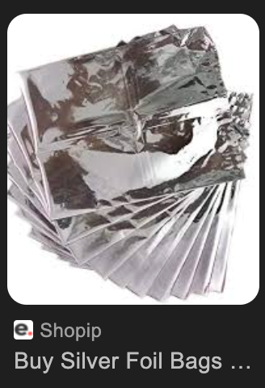
- Presynaptic neuron and Postsynaptic neuron:
-

- Presynaptic Neuron: The neuron that sends the signal across the synapse to another neuron.
- Translation in Hindi: प्रीसिनेप्टिक न्यूरॉन (Presynaptic Neuron) or पूर्वसंधि न्यूरॉन (Purvasandhi Neuron)
For example: "The presynaptic neuron releases neurotransmitters into the synapse."
"प्रीसिनेप्टिक न्यूरॉन सिनेप्स में तंत्रिकासंचारक को छोड़ता है।"
- Postsynaptic Neuron: The neuron that receives the signal from the presynaptic neuron across the synapse.
- Translation in Hindi: पोस्टसिनेप्टिक न्यूरॉन (Postsynaptic Neuron) or पश्चसंधि न्यूरॉन (Pashchasandhi Neuron
For example: "The postsynaptic neuron receives the neurotransmitters and converts them into an electrical signal."
"पोस्टसिनेप्टिक न्यूरॉन तंत्रिकासंचारकों को प्राप्त करता है और उन्हें एक विद्युत संकेत में परिवर्तित करता है।"
- Fulcrum: The point or support on which a lever pivots or rotates.
- Translation in Hindi: आधार बिंदु (Aadhar Bindhu)
For example: "The seesaw pivots on its fulcrum."
"झूला अपने आधार बिंदु पर घूमता है।" (Jhula apne aadhar bindhu par ghoomta hai.)
- Gremlins are mythical creatures or mischievous imps often blamed for causing problems and malfunctions in machinery, especially in aviation. The term can also be used more broadly to refer to any unseen cause of trouble or mischief.
- Translation in Hindi: शैतानी प्राणी (Shaitani Praani) or परेशान करने वाले जीव

- Homeostasis refers to the ability of an organism or a system to maintain internal stability and balance despite external changes. It involves processes that regulate various physiological variables such as temperature, pH, and nutrient levels within a narrow range to ensure optimal functioning.
- Translation in Hindi: स्थिरता (Sthirta) or स्वस्थिति (Swasthiti)
- USP: A unique selling point (USP), also called a unique selling proposition, is the essence of what makes your product or service better than competitors. In online marketing, communicating your USP clearly and quickly is one of the keys to getting potential customers to convert on your site.
- spittoon (थूकदान): a metal or earthenware pot typically having a funnel-shaped top, used for spitting into.
- hedonic: सुखवादी; relating to or considered in terms of pleasant sensations.
- the pursuit of happiness (context: BOOK: Dopamine nation)
- mitts: दस्ताने; gloves or protective coverings for the hands.
- anhedonia: inability to enjoy pleasure of any kind.
- Dysphoria: असंतोष; dissatisfaction
- Relapse:
- पुनरावृत्ति/फिर से गिरना; a return to a previous state
- After years of sobriety, he faced a relapse into his old habits. (सालों के मद्यत्याग के बाद, वह अपनी पुरानी आदतों में पुनरावृत्ति का सामना कर रहा था।)
- स्वास्थ्य में गिरावट; deterioration in health
- The patient showed signs of a relapse after stopping medication. (मरीज़ ने दवा बंद करने के बाद स्वास्थ्य में गिरावट के लक्षण दिखाए।)
- दुबारा होना; recurrence
- The relapse of the disease surprised the doctors. (बीमारी की पुनरावृत्ति ने डॉक्टरों को हैरान कर दिया।)
- Etymology: The word "relapse" comes from the Latin word "relapsus," which is the past participle of "relabi," meaning "to slip back" or "to fall back." This Latin root conveys the idea of sliding or falling back into a previous state, which aligns with the modern usage of "relapse" to describe a return to an undesirable condition after a period of improvement or recovery.
- Abstinence:
- त्याग (refraining)
- संयम; the practice of refraining from indulging in certain activities, particularly from alcohol, drugs, or sexual activity.
- Related words:
- Refrain: परहेज़; to hold back from doing something, especially out of caution or restraint.
- Celibacy: ब्रह्मचर्य; the state of abstaining from marriage and sexual relations, often for religious or personal reasons
- Protracted: दीर्घकालिक; prolonged
- Anticipation:
- प्रत्याशा; the act of expecting or looking forward to something
- "She waited in anticipation for the results."
(वह परिणामों की प्रत्याशा में इंतजार कर रही थी।)
- पूर्वानुमान; the ability to predict or foresee something before it happens
- "His anticipation of market trends helped him make a profit."
(बाजार प्रवृत्तियों का उनका पूर्वानुमान उन्हें लाभ दिलाने में मददगार साबित हुआ।)
- उत्सुकता; a feeling of excitement about a future event
- "The kids were filled with anticipation before the festival."
(बच्चे त्योहार से पहले उत्सुकता से भरे हुए थे।)
- Impoverished: दरिद्र; poor
- Prostrate" is an adjective and verb in English
- Adjective: साष्टांग, भूमि पर लेटा हुआ, पृथ्वी पर पड़ा हुआ (Lying stretched out on the ground with one's face downward)
- Verb: साष्टांग प्रणाम करना, भूमि पर लेटना, नतमस्तक होना (To lay oneself flat on the ground face downward, especially in reverence or submission)
- "Contended" and "contented" are two different words with distinct meanings:
- Contended: This is the past tense and past participle form of the verb "to contend." It means to engage in a struggle or competition, to compete, or to assert oneself in opposition to someone or something else. For example, "The teams contended fiercely for the championship."
- Contented: This is an adjective that describes a state of being satisfied, at ease, or happy with one's situation or circumstances. It implies a sense of tranquility or fulfillment. For instance, "After a hearty meal, he felt contented and relaxed."
So, while "contended" involves a struggle or competition, "contented" relates to a feeling of satisfaction or happiness.
- Intrigue: depending on the context
- रहस्य (Rahasya): Mystery or something enigmatic.
- षड्यंत्र (Shadyantra): Conspiracy or secret plotting.
- जिज्ञासा उत्पन्न करना (Jigyasa Utpann Karna): To arouse curiosity or interest.
- acquaintance:
- It generally refers to a person one knows slightly but who is not a close friend.
- It can also refer to the knowledge or experience one has of something.
- In Hindi, "acquaintance" can be translated in a few different ways:
- परिचित (Parichit): Refers to a person known slightly, someone who is not a close friend.
- "वह मेरा एक पुराना परिचित है।" - "He is an old acquaintance of mine."
- परिचय (Parichay): Refers to familiarity or knowledge of something.
- "मुझे उस विषय का थोड़ा परिचय है।" - "I have some acquaintance with that subject."
- The word "emblazoned" means to decorate a surface richly or conspicuously, often with symbols, designs, or lettering. It can also mean to celebrate or extol something prominently.
- Hindi, "emblazoned" can be translated as:
- सजाना (Sajana): To decorate or adorn.
- सुसज्जित (Susajjit): Adorned or embellished, often in a grand or conspicuous manner.
- उकेरा हुआ (Ukera Hua): Engraved or emblazoned with designs or symbols.
- Caricature artist: व्यंगचित्रकार; cartoonist
- The word "crescendo" has both literal and figurative meanings:
- Literal (Musical) Definition:
- Meaning: In music, "crescendo" indicates a gradual increase in loudness or intensity of a musical passage.
- Example: "The symphony reached a powerful crescendo before fading into a delicate melody."
- Figurative Definition:
- Meaning: Figuratively, "crescendo" can refer to a peak or climax, often used to describe a gradual increase in intensity or force of any activity or event, not necessarily musical.
- Example: "The argument between the two politicians reached a crescendo, with both sides shouting over each other."
- In hindi: सश्रुत (Sashrut): धीरे-धीरे बढ़ते ध्वनि या तीव्रता का संकेत देने वाला संगीतीय शब्द।
- (Musical Context) उदाहरण: "संगीत दरबार में उस राग ने एक शक्तिशाली सश्रुत तक पहुंचा, फिर एक नाजुक संगीत में बदल गया।"
- (Figurative Context) उदाहरण: "दो राजनेताओं के बीच की वाद-विवाद एक सश्रुत पर पहुंच गया, जिसमें दोनों पक्षों ने एक दूसरे पर चिल्लाते हुए बोले।"
- The word "furtive" refers to something done in a secretive or stealthy manner, typically because the person wishes to avoid being noticed or caught. It often implies a sense of guilt or suspicion.
- The word "indelible" refers to something that cannot be removed, erased, or forgotten. It is often used to describe memories, marks, or impressions that are permanent and lasting. Example usage:
- "The experience left an indelible mark on her heart."
- "His words made an indelible impression on the audience."
- In hindi: अमिट: जो मिटाया या भूलाया नहीं जा सकता है।
- वह अनुभव उसके दिल पर अमिट निशान छोड़ गया
- Pathological: रोगजन्य; disease-related
- Veritable: वास्तविक; genuine
- Proliferation: प्रसार; rapid increase
- Detour: चक्कर; alternate route
- Tantalizing: ललचाने वाला; tempting
- Ascribe: लिखना; to attribute (The term "ascribe" means to attribute or assign a particular quality, characteristic, or cause to someone or something)
- Sedate: शांत; calm
- Sedative: शांतिदायक; calming
- Exacts: मांग करना; demands
- Arid climate: सूखा जलवायु; dry climate
- Denizen: निवासी; resident
- Reward-weary: पुरस्कृति के प्रति उत्साह हार चुका
- Meaning: a state of being tired or exhausted from receiving rewards or incentives
- Shunned:
- दूर किया; deliberately avoided or kept away from.
- He was shunned by his colleagues after the scandal. (कांड के बाद उसे उसके सहकर्मियों ने दूर कर दिया।)
- तिरस्कृत किया; rejected or ignored socially.
- She felt shunned by society because of her beliefs. (अपने विश्वासों के कारण उसने समाज द्वारा तिरस्कृत महसूस किया।)
- Millennium:
- सहस्त्राब्दी; a period of one thousand years.
- The year 2000 marked the beginning of a new millennium. (साल 2000 ने एक नए सहस्त्राब्दी की शुरुआत को चिह्नित किया।)
- दीर्घकालिक; used to denote a significant and extended period of time in historical or cultural contexts.
- The artifacts date back to the first millennium B.C. (कलाकृतियाँ पहली सहस्त्राब्दी ई.पू. की हैं।)
- Millennia:
- सहस्त्राब्दियाँ; plural of millennium, referring to a period of one thousand years.
- The ancient ruins have stood for millennia. (प्राचीन खंडहर सहस्त्राब्दियों से खड़े हैं।)
- दीर्घकाल; a term used to describe long periods of time, often in historical or geological contexts.
- The climate of the region has changed over several millennia. (क्षेत्र की जलवायु कई सहस्त्राब्दियों में बदल गई है।)
- Reprobates: नीच; morally unprincipled people
- Pariahs: अवमान्य; outcasts
- Purveyors: सप्लायर्स; suppliers
- Turpitude: बुराई; depravity
- Sullen: अप्रसन्न; gloomy891
- Sullen: adjective that describes someone who is silent, morose, or ill-tempered, often indicating a mood of sulking or resentment.
- Wax pen: मोमी पेन; a pen used for writing with wax (250)
- Dizzy: चक्कर; lightheaded
- Teetering: हिचकिचाहट; unsteady
- Assuaging: शांति प्रदान करना; providing relief
- Foraging: चारा ढूंढना; searching for food
- Impassive: भावहीन; expressionless
- Remission: शमन; reduction
- Vivid: जीवंत; bright
- Astounding: चौंकाने वाला; astonishing
- Savored: स्वाद लिया; enjoyed
- Nonetheless: फिर भी; despite that
- Etymology: nevertheless; composed of the words "none," "the," and "less," which together convey the meaning of "despite that."
- Overarching: संपूर्ण; comprehensive;
- Etymology: from "over" meaning above or beyond, and "arch," suggesting a unifying or encompassing structure.
- Propensity: प्रवृत्ति" or "प्रवृत्तियाँ; tendency
- describes a person's or thing's inherent tendency to act or think in a specific manner.
- Example usage: Genetic propensity
- Attenuated: दुर्बल; weakened
- Long Meaning: means to weaken or reduce in force, intensity, or value. In Hindi, "attenuated" can be translated as "कमजोर" (kamjor), "कमजोर होना" (kamjor hona), or "कमजोर करना" (kamjor karna), depending on the context in which it's used.
- Predispose: पूर्वाभिनय; make someone susceptible to something
- Ubiquity: सर्वव्यापकता; state of being everywhere
- Taxonomy: वर्गीकरण; classification
- Mundane" means something that is ordinary, commonplace, or lacking excitement or interest. In Hindi, "mundane" can be translated as:
- साधारण (sadharan)
- दुनियावी (duniyavi)
- लौकिक (laukik)
- "Metaphysical" relates to the branch of philosophy that deals with abstract concepts such as being, knowing, substance, cause, identity, time, and space. It often explores questions beyond the physical world, including the nature of reality, existence, and the relationship between mind and matter.
- In Hindi, "metaphysical" can be translated as "अरूपिक" (arupik) or "अध्यात्मविद्या" (adhyatmavidya), which refers to spiritual or philosophical knowledge that goes beyond the material or physical realm.
- Guys: लोग; people
- Guy: A guy is a dude, a boy, a man, or really anybody
- Long Explanation (chatGPT):
- The term "guys" is often used informally in English to refer to a group of people regardless of gender. While its traditional usage specifically referred to males, it has evolved in many contexts to be more gender-neutral. For example, in casual conversation, someone might say "Hey guys!" to a group that includes both men and women.
- However, it's important to note that the acceptability and perception of this usage can vary based on the context, the group of people being addressed, and individual preferences. Some people might feel excluded or prefer more inclusive language like "everyone" or "folks."
- Being aware of and respectful towards the preferences of the people you're addressing is always a good practice. If you're unsure, you can always ask if they are comfortable with the term or opt for a more clearly inclusive alternative.
- Throes: व्यथा; intense or violent pain or struggle
- Tangible:
- ठोस; concrete
- The evidence provided was tangible and convincing. (प्रदान किए गए सबूत ठोस और विश्वसनीय थे।)
- वास्तविक; real
- She received a tangible reward for her hard work. (उसे अपनी कड़ी मेहनत के लिए एक वास्तविक पुरस्कार मिला।)
- स्पर्शनीय; touchable
- The project needs tangible results to show progress. (परियोजना में प्रगति दिखाने के लिए स्पर्शनीय परिणामों की आवश्यकता है।)
- Etymology: The word "tangible" originates from the Latin word "tangibilis," which is derived from the verb "tangere," meaning "to touch." Therefore, "tangible" literally means "able to be touched" or "perceptible by touch." Over time, its usage has expanded to also denote things that are real, definite, or concrete, beyond just physical touch.
- Repurpose: पुन: उपयोग करना; to use something for a different purpose than originally intended
- Fail-safe: निश्चित सुरक्षा उपाय; a mechanism or plan designed to prevent failure or minimize its consequences
- Soliloquies: मंत्रमुग्ध; speeches delivered by a character in a play while alone on stage
- Puttering: घूमना-फिरना; moving or acting aimlessly or idly
- Rotund: गोल-मटोल; plump
- Penchant: झुकाव; a strong or habitual liking for something
- Contemplate: विचार करना; to think deeply or carefully about something
- Dawned:
- समझ में आना; to begin to be understood or realized
- "It suddenly dawned on me that I had forgotten her birthday." (मुझे अचानक समझ में आया कि मैं उसका जन्मदिन भूल गया था।)
- शुरू होना; to begin or start, especially a new day or idea
- "A new era dawned after the historic agreement." (ऐतिहासिक समझौते के बाद एक नया युग शुरू हुआ।)
- उजाला होना; the first appearance of light in the morning
- "As the day dawned, the sky turned a soft pink." (जैसे ही उजाला हुआ, आकाश हल्का गुलाबी हो गया।)
- Apothecary: औषधालय; a person who prepares and sells medicines; a pharmacist
- Endogenous: आंतरज; originating from within an organism, system, or process
- Flatlining: a medical condition marked by the absence of electrical activity in the brain, typically resulting in a flat line on a monitor. It can also metaphorically refer to a situation where there is no activity or progress.
- In hindi: समतल रेखा पर आ जाना (in medical context)
- Deterrent:
- निवारक; discouraging mechanism
- The alarm system acts as a deterrent against theft. (चोरी के खिलाफ अलार्म सिस्टम एक निवारक के रूप में कार्य करता है।)
- रुकावट डालने वाला; preventive
- High fines serve as a deterrent to speeding. (उच्च जुर्माने गति सीमा का उल्लंघन करने में रुकावट डालते हैं।)
- रोकने वाला; hindrance
- The presence of a security guard can be a strong deterrent. (सुरक्षा गार्ड की मौजूदगी एक मजबूत रोकने वाला हो सकता है।)
- Fallible: त्रुटिपूर्ण; capable of making mistakes
- Reverence: श्रद्धा; deep respect
- Intervention refers to the act of becoming involved in a situation to alter the outcome. This can occur in various contexts, such as:
- Medical: An action taken to improve a health condition, like surgery or medication.
- Social: Steps taken to improve a social issue, such as community programs or policies.
- Personal: Involvement in someone's personal matters to help or change a situation, like in the case of an addiction intervention.
- In Hindi: Intervention का हिंदी में अनुवाद "हस्तक्षेप" है। इसका उपयोग विभिन्न संदर्भों में किया जा सकता है:
- चिकित्सा: जैसे किसी स्वास्थ्य स्थिति को सुधारने के लिए किया गया कार्य, जैसे सर्जरी या दवा।
- सामाजिक: जैसे किसी सामाजिक समस्या को सुधारने के लिए उठाए गए कदम, जैसे सामुदायिक कार्यक्रम या नीतियाँ।
- व्यक्तिगत: जैसे किसी की व्यक्तिगत समस्याओं में सहायता या परिवर्तन के लिए किया गया हस्तक्षेप, जैसे नशे की लत के मामले में हस्तक्षेप।
- Linger means to stay in a place longer than necessary because of a reluctance to leave or to persist in a state or condition. It often implies a slow or prolonged presence
- Perpetuating means causing something to continue indefinitely or making something last for an extended period, often beyond its natural lifespan. It can refer to maintaining traditions, behaviors, conditions, or situations.
- In Hindi: Perpetuating का हिंदी में अनुवाद "स्थायी बनाना" या "चिरस्थायी करना" है। इसका उपयोग किसी चीज़ को अनिश्चितकाल तक बनाए रखने या लंबे समय तक जारी रखने के संदर्भ में किया जाता है। यह परंपराओं, व्यवहारों, परिस्थितियों, या स्थितियों को बनाए रखने के संदर्भ में हो सकता है।
- Vortex refers to a flow of fluid (such as water, air, or gas) that spirals around a central axis, creating a whirlpool or a spinning motion. Vortices can occur naturally in phenomena like tornadoes, whirlpools, and hurricanes, or they can be created artificially.
- In Hindi: Vortex का हिंदी में अनुवाद "भंवर" या "चक्रवात" है। यह एक ऐसी प्रवाह प्रक्रिया को दर्शाता है जिसमें द्रव (जैसे पानी, हवा, या गैस) एक केंद्रीय अक्ष के चारों ओर घूमता है, जिससे एक चकरी या घुमावदार गति उत्पन्न होती है। भंवर प्राकृतिक घटनाओं में जैसे कि बवंडर, समुद्री भंवर, और तूफान में पाए जा सकते हैं, या कृत्रिम रूप से बनाए जा सकते हैं। उदाहरण वाक्य:
- समुद्र में भंवर बन गया था जिसमें नाव फंस गई।
- तूफान के समय एक विशाल चक्रवात का निर्माण हुआ।
- Wry: विकृत; dryly humorous
- Provocative: उत्तेजक; causing a strong reaction
- Meaning of "Antagonism"
- Antagonism refers to active hostility or opposition between conflicting groups, individuals, or forces. It describes a situation where there is ongoing conflict, resistance, or competition.
- Antagonism का हिंदी में अनुवाद "विरोध" या "विरोधाभास" है। यह शत्रुता या विपरीतता की स्थिति को दर्शाता है, जहां दो या दो से अधिक पक्ष एक-दूसरे के खिलाफ होते हैं।
- Example Sentences:
- English: The antagonism between the two political parties has escalated in recent months.
- Hindi: पिछले कुछ महीनों में दो राजनीतिक दलों के बीच विरोध बढ़ गया है।
- Enmity refers to a feeling or condition of hostility, hatred, ill-will, or animosity towards someone or between groups. It describes a state of active opposition or antagonism.
- In Hindi
- Enmity का हिंदी में अनुवाद "द्वेष" या "शत्रुता" है। यह किसी के प्रति शत्रुता, नफरत, या विरोध की भावना या स्थिति को दर्शाता है।
- Example Sentences:
- English: The long-standing enmity between the two families finally came to an end.
- Hindi: दोनों परिवारों के बीच लंबे समय से चली आ रही शत्रुता आखिरकार समाप्त हो गई।
- Vested refers to having a personal stake or interest in a matter, often due to a guarantee of benefit or ownership. It can also mean that a right or privilege is fully established and guaranteed.
- In Hindi: Vested का हिंदी में अनुवाद "निहित" या "अधिकारयुक्त" है। इसका उपयोग किसी मामले में व्यक्तिगत हित या स्वार्थ होने या किसी अधिकार या विशेषाधिकार के पूरी तरह से स्थापित और सुनिश्चित होने के संदर्भ में किया जाता है।
- Example Sentences:
- English: He has a vested interest in the success of the company because he owns shares.
- Hindi: कंपनी की सफलता में उसका निहित स्वार्थ है क्योंकि उसके पास शेयर हैं।
- incommensurably: "Incommensurably" means in a manner that is impossible to measure or compare in a meaningful way. It is often used to describe things that are fundamentally different in nature, such that no common standard of measurement or comparison can be applied. For instance, two things might be incommensurable if they belong to completely different categories or dimensions, making any comparison between them nonsensical or meaningless.
- Example Usage: "The beauty of a sunset and the taste of a delicious meal are incommensurably different experiences, each unique in its own right."
- gobbledegook: In Hindi, the term "gobbledegook," which refers to language that is meaningless or hard to understand, especially due to excessive use of technical jargon, can be translated in a few ways. Some possible translations include:
- गड़बड़ भाषा (Garbar Bhasha)
- बकवास (Bakwas)
- उलझन भरी भाषा (Uljhan Bhari Bhasha)
- घुमावदार भाषा (Ghumavdar Bhasha)
- Fit of joy: खुशी का दौरा; sudden burst of happiness
- Whine: कुड़कुड़ाना; to complain in a high-pitched, irritating manner
- LONG MEANING: The term "whine" has a few different meanings depending on the context:
- As a verb:
- To make a high-pitched, complaining noise, often in a prolonged manner. For example, "The dog whined to be let outside."
- To complain or express dissatisfaction in a way that is seen as annoying or childish. For example, "She whined about having to do her chores."
- As a noun:
- A high-pitched, prolonged, and often annoying noise. For example, "The whine of the engine was irritating."
- A complaint or expression of dissatisfaction, often perceived as annoying or childish. For example, "His constant whines about work are getting on my nerves."
- In both usages, "whine" generally conveys a sense of irritation or annoyance caused by the sound or behavior.
- shriek: चीख; a loud, high-pitched scream (300)
- Long meaning: The term "shriek" has a few related meanings depending on its usage as a noun or verb:
- As a verb:
- To make a high-pitched, piercing cry or sound, often as a result of fear, excitement, pain, or laughter. For example, "She shrieked when she saw the spider."
- As a noun:
- A high-pitched, piercing cry or sound. For example, "The shriek of the alarm startled everyone."
- In both forms, "shriek" conveys an intense and loud noise that is often sudden and associated with strong emotions.
- Morph: रूपांतरित करना; to transform
- Bradycardia: हृदय-धड़कन मन्दता; slow heart rate
- Fetters: बेड़ियाँ; chains or restraints
- Spun: धुंधला; past tense of "spin," meaning to rotate quickly
- Docile: विनीत; easily managed or controlled
- Biddable: आज्ञा-पालनशील; willing to obey or follow instructions
- Demurred: इनकार; objected or hesitated
- Confiding: विश्वासपूर्वक; trusting
- Arborist: वृक्षकल्प; a professional who specializes in the care and maintenance of trees
- Indispensable: अनिवार्य; absolutely necessary
- Stricken: प्रभावित; affected by something unpleasant
- Reprimanded: डांटा गया; scolded or rebuked
- Meticulous: सूक्ष्म; extremely careful and precise
- Euphoric: आनंदित; intensely happy or joyful
- Jangling: झंझलाहट; producing a harsh, discordant sound
- Ensuing: अनुसरणीय; following afterward
- Forbidden: निषिद्ध; not allowed
- Adornment: सजावट; decoration
- Inadvertently: अनजाने में; unintentionally
- Deifying: पूजा करना; treating someone or something as a god
- Interspersed: बिछाए हुए; scattered or distributed at intervals
- Imbue: (inbued) अद्भुति; to inspire
- Embodiment: अवतरण; a tangible or visible form of an idea, quality, or feeling
- Reminiscent: "Reminiscent" in English means something that reminds you of something else, especially something from the past. In Hindi, "reminiscent" can be translated as "स्मरणशील" (smaransheel) or "यादगार" (yaadgaar), both of which convey the idea of evoking memories or reminding someone of something.
- Metacognitive: आत्मचिन्तनात्मक; relating to awareness and understanding of one's own thought processes
- Cognitive:
- संज्ञानात्मक; related to the mental processes of understanding, thinking, learning, and remembering.
- The test measured her cognitive abilities, such as memory and reasoning. (परीक्षा ने उसकी संज्ञानात्मक क्षमताओं, जैसे स्मरण और तर्कशक्ति, को मापा।)
- बौद्धिक; involving conscious intellectual activities, such as perception, judgment, and problem-solving.
- Cognitive development is crucial in the early years of a child's life. (बच्चे के जीवन के प्रारंभिक वर्षों में बौद्धिक विकास महत्वपूर्ण होता है।)
- Sleight: चातुर्य; skillful or cunning trick
- Totemic: प्रतीकात्मक; symbolic
- Amnesia: स्मृतिलोप; loss of memory
- Amnestic: स्मृतिलोपजन्य; relating to or causing amnesia
- Pervade:
- व्याप्त होना; to spread through and be perceived in every part
- "A sense of calm pervaded the room after the meditation session." (ध्यान सत्र के बाद कमरे में शांति व्याप्त हो गई।)
- फैल जाना; to be present and apparent throughout something
- "The aroma of fresh bread pervaded the entire house." (ताज़े ब्रेड की खुशबू पूरे घर में फैल गई।)
- छा जाना; to become dominant or influential everywhere
- "A feeling of dread pervaded the crowd during the announcement." (घोषणा के दौरान भीड़ में भय का माहौल छा गया।)
- Pervasiveness:
- व्यापकता; the quality of being spread throughout every part
- "The pervasiveness of technology in our lives is undeniable." (हमारे जीवन में तकनीक की व्यापकता से इनकार नहीं किया जा सकता।)
- सर्वव्यापकता; the state of being present or felt everywhere
- "She discussed the pervasiveness of corruption in politics." (उसने राजनीति में भ्रष्टाचार की सर्वव्यापकता पर चर्चा की।)
- समग्र प्रभाव; an all-encompassing influence or presence
- "The pervasiveness of fear changed the atmosphere of the town." (भय के समग्र प्रभाव ने शहर के माहौल को बदल दिया।)
- Tranny: The term "tranny" is a slang and often derogatory short form of "transgender" or "transsexual." It is important to note that the term "tranny" is considered offensive and disrespectful by many in the transgender community and should be avoided. It's more appropriate and respectful to use terms like "transgender," "trans person," or "trans individual" when referring to someone who is transgender.
- Noxious: हानिकारक; harmful
- Despise: घृणा करना; to feel contempt or a deep repugnance for
- from google: to feel a strong dislike for someone or something because you think that that person or thing is bad or has no value: The two groups despise each other.
- elude: बच निकलना; to escape or avoid
- Hormesis: beneficial effect from a low dose of a harmful agent (naval used this here)
- सकारात्मक प्रतिक्रिया;
- Mischievous: शरारती; causing or showing a fondness for causing trouble in a playful way
- Anarchy:
- अराजकता; a state of society without government or law
- "After the collapse of the regime, the country fell into anarchy." (शासन के पतन के बाद देश अराजकता में डूब गया।)
- अव्यवस्था; a situation of confusion and disorder
- "The classroom descended into anarchy when the teacher stepped out." (जैसे ही शिक्षक बाहर गए, कक्षा में अव्यवस्था फैल गई।)
- Hormetic: हार्मेटिक; related to or characteristic of hormesis, a beneficial effect from a low dose of a harmful agent
- Hormesis: सकारात्मक प्रतिक्रिया; beneficial effect from a low dose of a harmful agent
- Radical:
- कट्टर; favoring extreme changes in existing views or conditions
- "The leader called for radical political reforms." (नेता ने कट्टर राजनीतिक सुधारों की मांग की।)
- मौलिक; relating to the fundamental nature of something
- "His invention brought a radical change in communication." (उसके आविष्कार ने संचार में मौलिक बदलाव ला दिया।)
- जड़ से संबंधित; arising from or going to the root or origin
- "Radical surgery was needed to remove the tumor." (ट्यूमर हटाने के लिए जड़ से संबंधित सर्जरी की आवश्यकता थी।)
- Courting: रिझाना; seeking the affection or favor of
- Indoctrinate: मतांतरण करना; to teach a person or group to accept a set of beliefs uncritically
- Uncritically: अंधभक्तिपूर्वक; without evaluating or questioning
- Err: गलती करना; to make a mistake
- Indifferent:
- उदासीन; having no particular interest or concern
- "She was indifferent to the party invitations."
(वह पार्टी के निमंत्रणों के प्रति उदासीन थी।)
- सामान्य; not showing any strong feeling or preference
- "His indifferent attitude towards the issue surprised everyone."
(इस मुद्दे के प्रति उसकी सामान्य मानसिकता ने सभी को हैरान कर दिया।)
- निष्क्रिय; neither good nor bad, neutral
- "The weather was indifferent, neither too hot nor too cold."
(मौसम निष्क्रिय था, न तो ज्यादा गर्म और न ही ज्यादा ठंडा।)
- Hotchpotch: खिचड़ी; a confused mixture
- Typically: सामान्यतः; usually
- Prose: गद्य; written or spoken language in its ordinary form
- Utilitarian: उपयोगितावादी; practical and functional rather than decorative
- Incapacitated: अक्षम (क्षमता रहित), असमर्थ, कमजोर; unable to act or respond
- Incapacitated:; unable to perform normal functions or activities due to illness, injury, or other conditions
- "empty of strength," "helpless," or "powerless." (350)
- Repressive: दमनकारी; inhibiting or restraining the freedom of a person or group
- payee: a person to whom money is paid or is to be paid, especially the person to whom a cheque is made payable.
- Telautomatics:
- दूर-संचालित स्वचालन; the science or technology of controlling machines or devices from a distance using telecommunications
- "Nikola Tesla envisioned a future driven by telautomatics." (निकोला टेस्ला ने दूर-संचालित स्वचालन से संचालित भविष्य की कल्पना की थी।)
- रिमोट कंट्रोल तकनीक; systems enabling remote control of machines
- "Military drones operate using advanced telautomatics." (सैन्य ड्रोन उन्नत रिमोट कंट्रोल तकनीक का उपयोग करके संचालित होते हैं।)
- Neologism: नवशब्द; a newly coined word or expression
- Unfazed: निर्विकार; unperturbed
- Unperturbed: अप्रभावित; unaffected
- clamshell mode:
-
- pseudonym: a fictitious name, especially one used by an author.
- Hindi Mean: Pseudonym: छद्म नाम; pen name
- Sentence Example: "I wrote under the pseudonym of Evelyn Hervey"
- Cutthroat describes a situation, competition, or behavior that is intensely competitive, ruthless, and without regard for fairness or ethics. It often implies a fierce or merciless nature.
- In Hindi: Cutthroat का हिंदी में अनुवाद "निर्मम" या "निर्दयी" है। इसका उपयोग ऐसी स्थिति, प्रतियोगिता, या व्यवहार को दर्शाने के लिए किया जाता है जो अत्यंत प्रतिस्पर्धात्मक, निर्दयी, और निष्पक्षता या नैतिकता की परवाह किए बिना हो।
- Example Sentences:
- English: I read your story; it was cutthroat.
- Hindi: मैंने तुम्हारी कहानी पढ़ी; यह बहुत निर्मम थी।
- Crypt: तहखाना; underground vault
- Neurotic: मनोविक्षिप्त; mentally disturbed
- What is a lucrative career?
- A lucrative activity, job, or business deal is very profitable.
- Repent: पश्चाताप; regret
- Assert: दृढ़ता से कहना; state firmly
- Loom:
- दिखने लगना; to appear as a large or unclear shape, often in a threatening way
- "A dark figure loomed in the distance." (दूर एक काली आकृति दिखने लगी।)
- मंडराना; to seem about to happen, especially something bad
- "A crisis loomed over the company after the scandal." (कंपनी पर घोटाले के बाद संकट मंडराने लगा।)
- करघा; a device used for weaving thread into fabric
- "She learned to weave on a traditional loom." (उसने पारंपरिक करघे पर बुनाई करना सीखा।)
- Damning: निंदात्मक; condemning
- Spectre: प्रेत; ghost
- Punitive: दंडात्मक; penal
- Whip-smart: बेहद चतुर; extremely clever
- Benediction: आशीर्वाद; blessing
- Fidgety: अस्थिर; restless
- chicklet: A small or young chick
- Formidable:
- भयानक; inspiring fear or respect through being impressively powerful or intense
- "The boxer was a formidable opponent in the ring." (वह मुक्केबाज़ रिंग में एक भयानक प्रतिद्वंद्वी था।)
- कठिन; very challenging or difficult to deal with
- "They faced a formidable task ahead of the deadline." (उन्हें समय सीमा से पहले एक कठिन कार्य का सामना करना पड़ा।)
- Bellow: गरजना; roar
- Prosaic: साधारण; ordinary
- Nutcase: सनकी; crazy person
- Crackpot: सनकी; eccentric
- “Cunnilingus” comes from the classical Latin cunnus, “vulva” or “female genitals,” and lingere, “to lick.”
- "Personify" means to attribute human characteristics, qualities, or personality traits to something that is not human. This term is often used in literature, art, and everyday speech to describe the act of giving human attributes to animals, objects, or abstract concepts.
- For example:
- In literature, a writer might personify the wind by describing it as "whispering secrets" through the trees.
- In everyday language, someone might say that their car "refused to start" as if the car had a will of its own.
- In art, an artist might depict justice as a blindfolded woman holding scales.
Personification helps to create vivid imagery and can make descriptions more relatable and engaging.
- thesaurus: a book or electronic resource that lists words in groups of synonyms and related concepts.
- From ChatGPT: पर्यायवाची शब्दकोश; synonym dictionary
- Acquainted:
- परिचित; having knowledge or familiarity with something or someone; being familiar or well-known
- "I am acquainted with the city's history." (मैं शहर के इतिहास से परिचित हूँ।)
- "The two friends were acquainted since childhood." (दो दोस्त बचपन से ही परिचित थे।)
- Stir:
- हिलाना; to mix or move something slightly
- "She stirred the soup gently with a spoon." (उसने चम्मच से धीरे-धीरे सूप हिलाया।)
- उत्तेजना फैलाना; to arouse strong emotions or activity
- "The speech stirred the crowd into action." (भाषण ने भीड़ में उत्तेजना फैला दी।)
- हलचल; a small movement or activity
- "There was not a stir in the silent room." (शांत कमरे में कोई हलचल नहीं थी।)
- Impersonal: निराकार; detached
- A contraction is a shortened form of a word or group of words, created by omitting certain letters or sounds and often replacing them with an apostrophe. Contractions are commonly used in informal writing and speech to make communication more concise and to reflect natural spoken language patterns.
- Here are some examples of common contractions:
- - can't (cannot)
- - don't (do not)
- - it's (it is or it has)
- - you're (you are)
- - they're (they are)
Contractions can also occur in other languages and are often formed in similar ways, by omitting parts of words and combining them into a single, shorter form.
- Palpitations: check from ChatGpt - running multiple fdisk commands.
- Vigilant: alertly watchful especially to avoid danger.
- impede: to obstruct, hinder, or slow down the progress or movement of something or someone. It is used to describe actions or conditions that make it difficult to achieve a goal or complete a task.
- "Exhaustive" is an adjective that means thorough and complete, covering all possible aspects or elements. When something is described as exhaustive, it implies that nothing has been left out and every detail has been considered or included. For example, an exhaustive report on a topic would leave no stone unturned, providing all the information necessary to understand the subject fully.
- The word "impede" means to obstruct, hinder, or slow down the progress or movement of something or someone. It is used to describe actions or conditions that make it difficult to achieve a goal or complete a task.
- Example Sentences
- The heavy traffic impeded our progress to the meeting.
- Construction work is impeding access to the main road.
- Her injury impeded her ability to participate in the marathon.
- Synonyms
- Obstruct
- Hinder
- Hamper
- Block
- Thwart
- Usage:
- "Impede" is often used in contexts where there is an obstacle or barrier that prevents smooth or efficient progress.
- stanza: a group of lines forming the basic recurring metrical unit in a poem; a verse.
- a group of four lines in some Greek and Latin metres.
- From ChatGPT: The term "stanza" has a couple of distinct meanings depending on the context in which it is used:
- Poetry: In the context of poetry, a stanza is a grouped set of lines within a poem, often set apart from other groups by a blank line or indentation. Stanzas are to poetry what paragraphs are to prose. They can follow a specific rhyme scheme and meter or be free form. Stanzas can vary in length, with common types including couplets (two lines), tercets (three lines), quatrains (four lines), and so on.
- Music: In music, the term "stanza" is sometimes used interchangeably with "verse" to describe a section of a song with a recurring pattern or set of lyrics that is repeated throughout the song, usually alternating with the chorus.
- superset: A superset in math can be defined as a set of elements containing all of the elements of another set.
- reverence: deep respect for someone or something.
- Pioneer:
- अग्रणी; a person who is among the first to explore or develop something new
- "She was a pioneer in computer science." (वह कंप्यूटर विज्ञान की अग्रणी थीं।)
- पथप्रदर्शक; someone who leads the way for others to follow
- "The company acted as a pioneer in renewable energy solutions." (कंपनी ने नवीकरणीय ऊर्जा समाधानों में पथप्रदर्शक की भूमिका निभाई।)
- sidestep: means to avoid or evade something, often by taking an indirect route or making a detour. In a broader sense, it can also mean to avoid dealing with an issue or to dodge a question or responsibility.
- distress (तनाव): The word "distress" generally refers to a state of extreme anxiety, sorrow, or pain. It can describe both emotional suffering and physical discomfort. In different contexts, it might also refer to a situation of financial difficulty, or a legal term used to indicate a situation requiring urgent assistance. Here are a few examples of how "distress" can be used:
- Emotional or Mental Distress: Experiencing severe anxiety, sorrow, or anguish.
- She was in distress after hearing the bad news.
- Physical Distress: Experiencing physical pain or discomfort.
- The hiker was in distress due to dehydration and exhaustion.
- Financial Distress: A situation where a person or organization cannot meet financial obligations.
- The company is in financial distress and may need to declare bankruptcy.
- Distress Signal: A signal given by someone in danger to request help.
- The stranded boat sent out a distress signal.
The term can be used in various fields, including psychology, law, and finance, each with slightly different nuances.
- Subside: शांत होना; diminish
- Recourse: उपाय; solution
- Permeating: व्याप्त; spreading throughout
- Vices: दुर्व्यसन; immoral behaviors (400)
- Vice: अवगुण; immoral or wicked behavior or a bad habit
- Inquisitive: जिज्ञासु; curious
- - moved to 345 - Indifferent
- Contravene: उल्लंघन करना; violate
- Cambridge dictionary: to do something that a law or rule does not allow, or to break a law or rule
- Sentence Example: The company knew its actions contravened international law.
- Austerity: कठोरता; strictness
- ChatGPT: Austerity generally refers to a state or condition characterized by simplicity, severity, or strictness. The term can be used in various contexts, including personal lifestyle, economic policies, and religious or spiritual practices. Here are some common meanings:
- Personal Lifestyle: In this context, austerity refers to a simple and frugal way of living, often marked by a lack of luxury and comfort. People practicing austerity may choose to live with minimal possessions and avoid indulgences.
- Economic Policies: Austerity measures in economics refer to policies implemented by a government to reduce public expenditure and decrease budget deficits. These measures often include cutting public services, reducing social benefits, and increasing taxes. Austerity policies are typically adopted during times of economic downturn or financial crisis.
- Religious or Spiritual Practices: In a spiritual or religious context, austerity refers to self-discipline and the renunciation of worldly pleasures. It often involves practices such as fasting, celibacy, and other forms of self-denial to cultivate spiritual growth and self-control.
- Dormant: निष्क्रिय; inactive
- fervor: intense and passionate feeling
- conjunction: the action or an instance of two or more events or things occurring at the same point in time or space
- gage: It can mean based on context:
- Gage (noun): A pledge or deposit as a guarantee
The blacksmith accepted a gage from the farmer as security for the payment. - Gage (noun): A measuring instrument
The engineer used a pressure gage to ensure the system was operating within safe limits. - Gage (verb): To measure or estimate
The meteorologist tried to gage the intensity of the incoming storm.
- extroversion: the tendency to be focused predominantly on external things or social interaction rather than on internal thoughts and feelings
- meager: lacking in quantity or quality
- Hostile: Showing or feeling opposition or dislike; unfriendly
- actuate: (actuated:) cause (a machine or device) to operate
- intuit or intuits: understand or work out by instinct
- Subtle: सूक्ष्म; delicate
- Conquest: विजय; victory
- Subsist: जीवित रहना; survive
- Quiescent: शान्त; inactive
- Realm: क्षेत्र; domain
- Clarified: स्पष्ट किया हुआ; made clear
- Muddlement: गड़बड़ी; confusion
- Push back: प्रतिरोध करना; resist
- Curbed: नियंत्रित (रोका हुआ); restrained
- Curbs:
- रोकना; to restrain, control, or limit something.
- The new regulations are designed to curb pollution. (नई विनियमों का उद्देश्य प्रदूषण को नियंत्रित करना है।)
- पुल या रास्ते का किनारा; the edge of a street or sidewalk, usually raised above the pavement.
- She tripped over the curb while walking down the street. (वह सड़क पर चलने के दौरान पुल पर ठोकर खा गई।)
- नियंत्रण; a restriction or limitation on something.
- There are curbs on excessive spending in the new budget. (नई बजट में अत्यधिक खर्च पर नियंत्रण है।)
- Pavement: (#paved)
- सड़क; a hard, smooth surface for vehicles and pedestrians, often made of asphalt or concrete.
- The pavement was wet from the recent rain. (सड़क हाल की बारिश से गीली थी।)
- पैदल चलने का रास्ता; a path or walkway beside a street for pedestrians.
- She walked along the pavement, enjoying the sunny weather. (वह सड़क के किनारे चलते हुए धूप का आनंद ले रही थी।)
- पक्का रास्ता; a material or surface layer used to make a road or walkway.
- The city is repaving the old roads with new pavement. (नगर पुराने सड़कों को नई सड़क सामग्री के साथ फिर से पक्का कर रहा है।)
- Paved:
- पक्का किया हुआ; covered with a hard surface, such as concrete or asphalt
- "The city streets were newly paved after the rainy season." (बारिश के मौसम के बाद शहर की सड़कों को नया पक्का किया गया।)
- सुगम बनाया हुआ; made easy or prepared for a particular purpose
- "His hard work paved the way for a successful career." (उसकी मेहनत ने सफल करियर के लिए मार्ग सुगम बनाया।)
- Imperceptibility: अगोचरता; unnoticeability
- Hereafter: भविष्य में; in the future
- Benevolence:
- परोपकार; the desire to do good to others or act kindly
- "Her benevolence toward the poor was widely admired." (गरीबों के प्रति उसका परोपकार व्यापक रूप से सराहा गया।)
- दयालुता; kindness or goodwill expressed through actions
- "He was known for his benevolence and gentle nature." (वह अपनी दयालुता और सौम्य स्वभाव के लिए जाना जाता था।)
- उदारता; generous giving or charitable behavior
- "The orphanage thrived due to the benevolence of donors." (दानकर्ताओं की उदारता के कारण अनाथालय फला-फूला।)
- Gullet: अन्नप्रणाली; esophagus
- Vicinity: निकटता; proximity
- Restraint: संयम; self-control
- Restraint refers to the act of holding back, controlling, or limiting something. It can refer to physical measures used to prevent movement, or it can describe self-control or moderation in one's actions or emotions.
- In Hindi: Restraint का हिंदी में अनुवाद "संयम" या "नियंत्रण" है। इसका उपयोग किसी चीज़ को रोकने, नियंत्रित करने या सीमित करने की क्रिया के संदर्भ में किया जाता है। यह शारीरिक रूप से रोकने के उपाय या किसी की क्रियाओं या भावनाओं में आत्म-नियंत्रण को भी दर्शा सकता है।
- Example Sentences:
- English: She showed great restraint by not reacting to the insult.
- Hindi: उसने अपमान का जवाब न देकर बहुत संयम दिखाया।
- Spectacular:
- दर्शनीय; something that is visually striking or impressive.
- The fireworks display was truly spectacular. (आतिशबाज़ी का प्रदर्शन वास्तव में दर्शनीय था।)
- शानदार; extremely impressive or outstanding in a way that captures attention.
- The concert was a spectacular success with a huge audience turnout. (संगीत कार्यक्रम शानदार सफलता थी जिसमें भारी संख्या में दर्शक पहुंचे।)
- Slackening: ढीलापन; loosening
- gross:
- gross can have several meanings depending on the context:
- Obvious or Blatant: Clearly wrong or unacceptable (e.g., gross negligence).
- Total Amount: The total amount before deductions (e.g., gross income).
- Disgusting: Something that is unpleasant or revolting (e.g., a gross smell).
- In Hindi:
- Gross का हिंदी में अनुवाद विभिन्न संदर्भों में भिन्न हो सकता है:
- स्पष्ट: जैसे कि स्पष्ट रूप से गलत या अस्वीकार्य (उदा., घोर लापरवाही).
- कुल राशि: कटौतियों से पहले की कुल राशि (उदा., सकल आय).
- घृणित: कुछ जो अप्रिय या घिनौना हो (उदा., घिनौनी गंध).
- Example Sentences:
- English: His behavior was grossly inappropriate. (स्पष्ट)
- Hindi: उसका व्यवहार घोर अनुचित था।
- English: The company reported a gross income of $1 million. (कुल राशि)
- Hindi: कंपनी ने 1 मिलियन डॉलर की सकल आय की रिपोर्ट की।
- English: The food looked gross and unappetizing. (घृणित)
- Hindi: खाना घिनौना और अरुचिकर लग रहा था।
These translations and sentences reflect the different meanings of "gross" in both languages.
- Veils: आवरण; coverings
- Veil: घूंघट; a piece of cloth or material used to cover the face or head, often for cultural, religious, or decorative purposes.
- Minuteness: सूक्ष्मता; precision
- Swiftness: तीव्रता; rapidity
- Impediment:
- बाधा; something that makes progress or movement difficult
- "Lack of funds was a major impediment to the project." (धन की कमी परियोजना के लिए एक प्रमुख बाधा थी।)
- रुकावट; a physical or psychological obstruction, especially in speech
- "He overcame his speech impediment with practice." (उसने अभ्यास से अपनी वाणी की रुकावट पर काबू पाया।)
- Disintegration: विघटन; breakdown
- Primeval: आदिम; ancient
- Perpetual: शाश्वत; everlasting
- In English: lasting forever or for an indefinitely long time. It describes something that is continuous, unending, or without interruption.
- In Hindi
- Perpetual का हिंदी में अनुवाद "सदा" या "अनंत" है। यह किसी ऐसी चीज़ को दर्शाता है जो हमेशा के लिए या अनिश्चित काल तक चलती रहती है, अर्थात निरंतर या अबाधित रूप से।
- Example Sentences:
- English: The perpetual motion of the planets fascinates scientists.
- Hindi: ग्रहों की सदा चलने वाली गति वैज्ञानिकों को मंत्रमुग्ध कर देती है।
- English: They are in a state of perpetual conflict.
- Hindi: वे निरंतर संघर्ष की स्थिति में हैं।
- Sporadic: छिटपुट; irregular
- Breadcrumbing: झूठी उम्मीद देना; leading on with false promises
- Long meaning: Breadcrumbing refers to the act of sending sporadic, non-committal messages or signals to someone, often to keep them interested without any intention of pursuing a meaningful relationship or commitment. This term is commonly used in the context of modern dating and social interactions.
- In Hindi: Breadcrumbing का हिंदी में अनुवाद "टुकड़े-टुकड़े में संकेत देना" या "छोटी-छोटी उम्मीदें देना" हो सकता है। इसका मतलब है कि किसी को बिना किसी वास्तविक संबंध या प्रतिबद्धता के sporadic (विखंडित) संदेश या संकेत भेजना, ताकि उनकी रुचि बनाए रखी जा सके।
- Example Sentences:
- English: He kept breadcrumbing her with occasional texts but never made any plans to meet.
- Hindi: वह उसे कभी-कभार संदेश भेजकर छोटी-छोटी उम्मीदें देता रहा लेकिन मिलने की कोई योजना नहीं बनाई।
- English: Breadcrumbing can be very frustrating and confusing for the person on the receiving end.
- Hindi: टुकड़े-टुकड़े में संकेत देना प्राप्त करने वाले व्यक्ति के लिए बहुत निराशाजनक और भ्रमित करने वाला हो सकता है।
- Breadcrumbs: ब्रेड के टुकड़े; small pieces of bread used for coating or as a topping
- Bewildered means feeling confused, perplexed450, or completely puzzled. It describes a state of being unsure or unable to understand something.
- In Hindi: Bewildered का हिंदी में अनुवाद "हैरान" या "भौचक्का" है। इसका मतलब है किसी स्थिति या चीज़ से भ्रमित या उलझन में होना, जहां समझ पाना मुश्किल हो।
- Example Sentences:
- English: She looked bewildered when she heard the unexpected news.
- Hindi: जब उसने अप्रत्याशित खबर सुनी तो वह हैरान दिखी।
- English: The complex instructions left him bewildered.
- Hindi: जटिल निर्देशों ने उसे भौचक्का कर दिया।
- Prejudiced: (Tags: #prejudice, #bias, #stereotype <from book Influence Pg. 18>)
- पक्षपाती; having an unreasonable opinion or judgment formed without proper knowledge
- "The jury must not be prejudiced against the defendant." (जूरी को अभियुक्त के खिलाफ पक्षपाती नहीं होना चाहिए।)
- पूर्वाग्रह, पूर्वाग्रहीत, पूर्वाग्रहग्रस्त, purvgrahit; influenced by unfair dislike or bias
- "He was prejudiced toward people from different cultures." (वह विभिन्न संस्कृतियों के लोगों के प्रति पूर्वाग्रहग्रस्त था।)
- Predispositions: पूर्वाग्रह; tendencies
- Radiant: दीप्तिमान; shining
- Auxiliary: सहायक; supportive
- Auxiliary refers to something that provides additional help or support, often in a supplementary or backup role. It can be used to describe equipment, personnel, or functions that assist the main system or operation.
- In Hindi: Auxiliary का हिंदी में अनुवाद "सहायक" या "अतिरिक्त" है। इसका उपयोग किसी ऐसी चीज़ या व्यक्ति के लिए किया जाता है जो मुख्य प्रणाली या कार्य में सहायता प्रदान करता है, या पूरक भूमिका निभाता है।
- Example Sentences:
- English: The hospital has an auxiliary power system in case of an outage.
- Hindi: अस्पताल में बिजली कटौती की स्थिति में एक सहायक पावर सिस्टम है।
- English: The company hired auxiliary staff to manage the busy season.
- Hindi: कंपनी ने व्यस्त सीजन को संभालने के लिए सहायक स्टाफ को काम पर रखा।
- Affliction:
- पीड़ा; a state of pain, suffering, or distress
- "He endured his affliction with great courage." (उसने अपनी पीड़ा को बड़े साहस के साथ सहा।)
- कष्टदायक स्थिति; something that causes pain or suffering
- "Poverty is a common affliction in many regions." (गरीबी कई क्षेत्रों में एक सामान्य कष्टदायक स्थिति है।)
- Wikipedia: मुक्त ज्ञानकोश; free encyclopedia
- Civilian: नागरिक; non-military person
- Combatant: The opposite of a civilian is generally referred to as a "combatant" or "military personnel." While a civilian is a person not involved in the military, law enforcement, or other organized armed groups, a combatant is someone who is actively engaged in armed conflict or is a member of an armed force.
- Subsequently: तत्पश्चात; afterward
- Perplexed: उलझन में; confused (450)
- Empowers: सशक्त बनाना; gives power
- Prodding: उकसाना; prompting
- Harped: बार-बार दोहराना; repeatedly emphasized
- dabbler: someone who takes a slight and not very serious interest in a subject, or tries a particular activity for a short period
- Beeline: सीधा मार्ग; direct path
- Bramble: कंटीली झाड़ी; thorny bush
- Musty: सीलन भरा; stale
- Spearmint: पोदीना; a type of mint
- Wafting: बहना; floating through the air
- Debilitating: कमजोर करने वाला; weakening
- Gaunt: पतला और सुस्त; thin and haggard
- Haggard: थका हुआ; worn out
- Terminally ill: अत्यंत बीमार; suffering from a disease that is incurable
- Falter: डगमगाना; hesitate or lose strength
- Bucolic: ग्रामीण; pastoral
- Bucolic describes something related to the pleasant aspects of the countryside or rural life.
- Dappled: चित्तेदार; spotted or mottled
- Dappled refers to something that is marked with spots or patches of different colors or shades, often creating a mottled or speckled appearance. It is commonly used to describe light or surfaces that are variegated or spotted.
- In Hindi
- Dappled का हिंदी में अनुवाद "धब्बेदार" या "छिटकदार" है। यह शब्द उन चीज़ों के लिए उपयोग किया जाता है जिनमें विभिन्न रंगों या शेड्स के धब्बे या पैच होते हैं, जो एक चित्तेदार या स्पॉटेड लुक देते हैं।
- Example Sentences:
- English: The forest floor was dappled with sunlight filtering through the leaves.
- Hindi: जंगल की ज़मीन पर सूरज की किरणें पत्तों के बीच से छिटक कर धब्बेदार हो रही थीं।
- English: She wore a dress with a dappled pattern of blue and white.
- Hindi: उसने नीले और सफेद रंग के धब्बेदार पैटर्न वाली ड्रेस पहनी थी।
- Mounds: ढेर; heaps or piles
- Coast: तट; shoreline
- Coastal route: तटीय मार्ग; path along the shore
- Tree stump: पेड़ की ठूंठ; the remaining part of a tree after it has been cut down
- Dreadlocks: matted hair locks

- Matted: उलझा हुआ; tangled
- Quintessentially: मौलिक रूप से; in the most perfect or typical example
- Strangle: गला घोंटना; choke
- Inflict: थोपना; impose or cause something undesirable
- Self-inflicted: आत्म-निर्मित; something caused by oneself, often referring to harm or injury that a person has caused to themselves.
- Nips: काटना; small bites or pinches
- Chides: डांटना; scolds
- Epiphany: आत्मज्ञान; sudden realization
- Sweeping: व्यापक; extensive
- Gurney: स्ट्रेचर; wheeled stretcher for transporting patients
- Phlebotomists: रक्त लेने वाले; specialists who draw blood for tests or donations
- Catheter: नली; flexible tube used to remove or introduce fluids (medical term)
- Hose: नली; flexible tube for conveying liquids or gases (medical term)
- Tingling: झनझनाहट; a slight stinging or prickling sensation
- Huffs: गुस्से से सांस लेना; exasperated or angry breaths
- Puffs: फूंक; short bursts of air or smoke
- Derided: उपहास किया; mocked or ridiculed
- Anguished: पीड़ित; deeply distressed
- Grinding:
- पीसना; reducing something to small particles or powder by crushing
- "She was grinding spices in the kitchen." (वह रसोई में मसाले पीस रही थी।)
- लगातार और थकाऊ; harsh, repetitive, and exhausting
- "He endured years of grinding poverty." (उसने वर्षों की लगातार और थकाऊ गरीबी झेली।)
- चरमराहट; making a harsh, scraping or grating sound
- "The gears made a loud grinding noise." (गियर से ज़ोरदार चरमराहट की आवाज़ आई।)
- Wincing: दर्द से सिकुड़ना; flinching in pain
- Steer clear: दूर रहना; avoid
- Agony: अत्यधिक पीड़ा; intense pain
- Obscure: अस्पष्ट; unclear
- Obscurity: अज्ञातता; state of being unknown
- Endurance: सहनशीलता; ability to withstand hardships
- Placebo effect: प्लेसबो प्रभाव; improvement due to belief in treatment rather than actual efficacy
- Shady: संदिग्ध; questionable or dubious
- Tranquility: शांति; calmness and peace
- शांतता" या "संतोष" कहा जाता है। यह शब्द मानसिक शांति, स्थिरता, और आंतरिक संतुलन को दर्शाता है।
- Seeping: रिसना; slowly leaking or oozing
- Chain link: जंजीर कड़ी; metal fencing made of interconnected links
- Censure: निंदा; strong disapproval or criticism
- Horrendous: भयानक; extremely terrible
- Crippling: अपंगकारी; severely damaging (500)
- Oximetry: Pulse oximetry is a test used to measure the oxygen level (oxygen saturation) of the blood.
- Capnometer: कैपनामीटर; device measuring CO2 concentration

- Hyperventilate: तीव्र श्वास लेना; breathe rapidly and deeply
- Hypoventilate: अल्प-श्वसन; breathing at an abnormally slow rate, resulting in an increased amount of carbon dioxide in the blood.
- Also, see उच्छवास
- stray: (Strays:)
- आवारा; wandering,
- भटके हुए; animals or people who have wandered away from their proper place
- "The shelter takes in strays found on the streets." (आश्रय घर सड़कों पर पाए गए भटके हुए जानवरों को अपनाता है।)
- इधर-उधर घूमना; to move away from a group or path
- "He strays from the topic during discussions." (वह चर्चा के दौरान विषय से भटक जाता है।)
- इक्का-दुक्का; occasional or scattered items or individuals
- "Only a few strays showed up for the meeting." (बैठक में केवल इक्का-दुक्का लोग ही आए।)
- Starve off: Starve off means to delay, prevent, or keep something undesirable from happening, especially by taking measures to avoid it. It often refers to avoiding hunger or warding off a negative outcome.
- In HindI
- Starve off का हिंदी में अनुवाद "टालना" या "रोकना" हो सकता है। इसका उपयोग किसी अवांछित स्थिति को होने से रोकने या टालने के संदर्भ में किया जाता है, विशेष रूप से भूख या अन्य नकारात्मक परिणामों को रोकने के लिए।
- Example Sentences:
- English: They ate a small snack to starve off hunger until dinner.
- Hindi: उन्होंने रात के खाने तक भूख को टालने के लिए थोड़ा सा नाश्ता किया।
- English: The medication helped to starve off the worst symptoms of the illness.
- Hindi: दवा ने बीमारी के सबसे बुरे लक्षणों को रोकने में मदद की।
- Strain: तनाव; pressure or tension
- Plague: विपत्ति; severe affliction or epidemic
- sty:
- Animal Enclosure: A sty is a pen or enclosure for pigs. It is typically a small, enclosed area where pigs are kept.
- Eye Infection: A sty (or stye) is a small, painful lump that appears on the edge of the eyelid due to an infection of the eyelash follicle or oil gland.
- In Hindi
- Animal Enclosure: Sty का हिंदी में अनुवाद "सूअर का बाड़ा" है। यह सूअरों के लिए एक छोटा, बंद क्षेत्र होता है जहाँ वे रखे जाते हैं।
- Eye Infection: Sty का हिंदी में अनुवाद "पलकों पर फुंसी" है। यह पलकों के किनारे पर एक छोटा, दर्दनाक गुट्ठा होता है जो आंख के बालों के रोम या तेल ग्रंथियों के संक्रमण के कारण होता है।
- Example Sentences:
- Animal Enclosure: The farmer built a new sty for the pigs.
- Hindi: किसान ने सूअरों के लिए एक नया बाड़ा बनाया।
- Eye Infection: She went to the doctor because she had a sty on her eyelid.
- Hindi: उसने डॉक्टर के पास गई क्योंकि उसकी पलकों पर एक फुंसी थी।
- Mounting energy: बढ़ती ऊर्जा; increasing levels of energy
- Mashes: मसलना; crushing or grinding into a soft, pulpy state
- Sentences:
- Food Preparation: She made a delicious mash of potatoes and carrots.
- Hindi: उसने आलू और गाजर का एक स्वादिष्ट मसाला बनाया।
- Mixtures: The farmer used a mash of grains to feed his livestock.
- Hindi: किसान ने अपने मवेशियों को अनाज का मिश्रण खिलाया।
- Quarries: खदानें; places where stone or other materials are extracted
- Nether: निचला; lower or under
- Ossuary: अस्थि घर; container or place for bones
- Kindling: आग जलाने की सामग्री; small sticks or material used to start a fire
- Bones:
- Femur: जांघ की हड्डी; thigh bone
- Humeri: ऊपरी भुजा की हड्डियाँ; upper arm bones
- Sternums: उरोस्थि; breastbones
- Fibula: पिंडली की हड्डी; calf bone
- Dwellers: निवासी; inhabitants
- Menace: खतरा; threat
- Rampant: अनियंत्रित; uncontrolled
- Crooked: टेढ़ा; bent or dishonest
- Remnants: अवशेष; remains
- Cataphiles: individuals who are fascinated by or love urban exploration of abandoned or hidden places
- Chasm: गहरी खाई; deep gap or rift
- Boulders: बड़े पत्थर; large rocks
- Wormed: रेंगना; moved or worked one's way into or through something
- Wiggle: हिलाना; move with small, quick movements
- Yank: खींचना; pull sharply or abruptly
- Lopsided: असंतुलित; uneven or tilted to one side
- Shimmied: झूलना; moved with a wriggling or shimmying motion
- Swigs: घूंट; large gulps or drinks
- Arak: अरक; a strong alcoholic drink from the Middle East, typically made from aniseed
- Aniseed: सौंफ; aromatic seeds used in cooking and as a flavoring
- Anthropologist: मानवविज्ञानी; a person who studies humans and their societies, cultures, and evolution
- Long pigs: मानव मांस; a euphemism for human flesh, historically used in some cultures' cannibalistic contexts
- Pawpaws: पपीता जैसे फल; a tropical fruit with a custard-like texture, also known as Asimina triloba in North America
- Coconut crabs: नारियल केकड़े; large land crabs known for their ability to crack open coconuts and their habitat in tropical islands
- Symbiosis: सहजीविता; interaction between two different organisms living in close physical proximity, often benefiting both
- Doorstop: दरवाजा थामने वाला; an object used to keep a door open or prevent it from closing
- Epochal: युगांतरकारी; significant or defining a particular period or era
- Vehemently: जोरदार तरीके से; passionately or with strong feeling
- Bristle:
- कठोर बाल; a stiff, coarse hair or fiber, often found on brushes or as a characteristic of certain animals.
- The brush was made with stiff bristles for effective cleaning. (ब्रश को प्रभावी सफाई के लिए कठोर बालों के साथ बनाया गया था।)
- उत्तेजना या रेजिस्टेंस; to stand upright or become stiff, often used metaphorically to describe a reaction to irritation or anger.
- His hair bristled with anger when he heard the insult. (जब उसने अपमान सुना, तो उसका गुस्से से बाल खड़ा हो गया।)
- लघु और कठोर बाल; referring to the short, stiff, and often stiffened hairs used in various applications.
- The artist used a brush with fine bristles for detailed painting. (कलाकार ने विस्तृत चित्रण के लिए महीन बालों वाले ब्रश का उपयोग किया।)
- Bristling:
- क्रोधित होना; becoming visibly angry or irritated, often with a tense or defensive stance.
- He was bristling with anger when he heard the accusation. (आरोप सुनकर वह क्रोध से तमतमा गया।)
- खड़े होना; hair or fur standing on end due to fear, anger, or agitation.
- The cat's fur was bristling as it faced the dog. (कुत्ते का सामना करते हुए बिल्ली के बाल खड़े हो गए।)
- सजग होना; showing readiness or alertness, often in response to a threat or challenge.
- The soldiers were bristling with anticipation before the battle. (युद्ध से पहले सैनिक सजग थे।)
- Anecdotal: घटनात्मक; based on personal accounts or stories rather than scientific evidence
- Quaint: आकर्षक; charmingly old-fashioned or unusual
- Grimy: गंदा; covered with or characterized by grime or dirt
- Grime: गंदगी; dirt or soot that accumulates on surfaces
- Soot: कालिख; a black, powdery substance produced by incomplete combustion of fossil fuels or organic matter
- Fetid: बदबूदार; having a strong, unpleasant odor
- Staircase: सीढ़ी; a set of stairs and the surrounding structure
- Scurried: भागना; moved quickly and with short steps
- Warren: खरगोशों का बिल; a network of burrows or a densely packed area, often used for rabbit burrows
- Also: ख़रगोश पालने का बाड़ा
- Burrows: बिल; tunnels or holes dug by animals, usually for shelter
- Folly: मूर्खता; foolishness or a lack of good sense
- Example Sentences:
- English: His decision to invest all his savings in a risky venture was an act of folly.
- Hindi: उसके सभी बचत को एक जोखिमपूर्ण परियोजना में निवेश करने का निर्णय एक मूर्खता का कार्य था।
- English: She looked back on her youthful folly with a sense of regret.
- Hindi: उसने अपनी युवा अवस्था की मूर्खताओं को पछतावे के साथ याद किया। (550)
- Milling: पीसना; grinding or processing materials, or the act of moving around in a confused manner
- Wheezing: घरघराहट; a high-pitched whistling sound made while breathing, often due to an obstruction in the airways
- Drano: ड्रेन क्लीनर; a brand of chemical cleaner used to unclog drains and pipes
- Confounding: भ्रमित करने वाला; causing confusion or puzzlement
- Ushered: आमंत्रित किया; guided or led someone to a place
- Spooked: डराया; frightened suddenly
- Fleshy: मांसल; having a lot of flesh or being thick and soft
- Tassel: लटकन; a decorative hanging ornament made of threads or cords
- 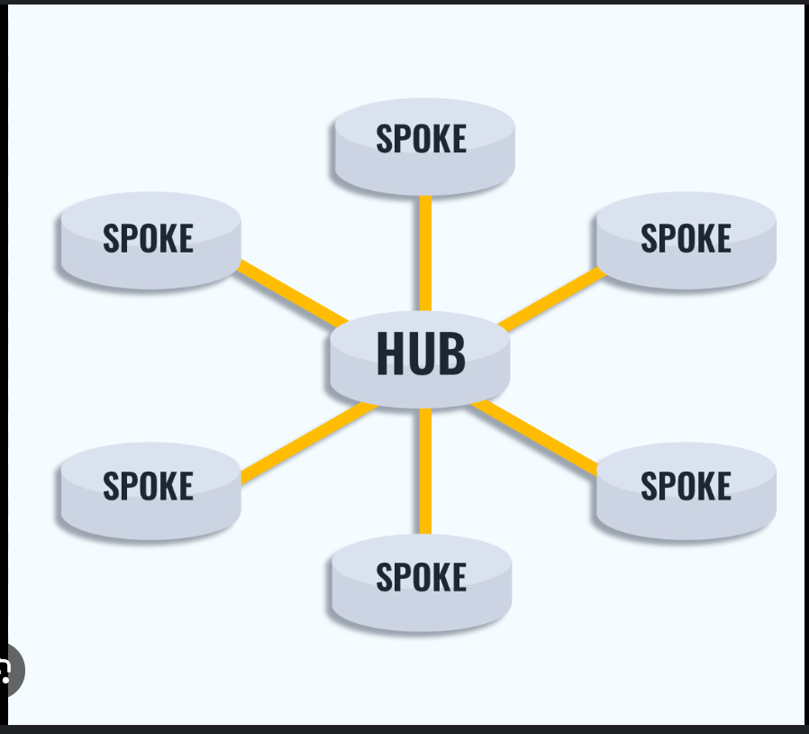
- Uvula: कंठकला; the small, fleshy extension at the back of the soft palate above the throat (medical term)
- Susceptible: संवेदनशील; easily affected or prone to something
- Scalloping can have several meanings depending on the context:
- Cooking: In cooking, scalloping refers to preparing a dish (often potatoes or other vegetables) by baking it with a sauce, usually creamy, and often topped with breadcrumbs or cheese. The result is a layered, tender dish known as "scalloped" potatoes, for example.
- Design or Edges: Scalloping can also refer to creating a decorative edge or pattern that resembles the curved, wavy shape of a scallop shell. This term is often used in sewing, crafting, or design.
- Marine Biology: Refers to the activity of collecting scallops, which are a type of shellfish, often found in coastal waters.
- In Hindi
- Cooking: Scalloping का हिंदी में अनुवाद "स्कैलपिंग" या "पकाने की प्रक्रिया" के रूप में किया जा सकता है, जहां सब्जियों या अन्य सामग्री को परतदार तरीके से पकाया जाता है।
- Design or Edges: Scalloping का हिंदी में अनुवाद "लहरदार किनारा" या "नक्काशीदार किनारा" हो सकता है, जो एक सजावटी किनारा बनाने की प्रक्रिया को दर्शाता है।
- Marine Biology: Scalloping का हिंदी में अनुवाद "शंख-इकट्ठा करना" हो सकता है, जो समुद्री जीवों के शंखों को इकट्ठा करने की प्रक्रिया है।
- Example Sentences:
- Cooking: She made a delicious scalloped potato dish for dinner.
- Hindi: उसने रात के खाने के लिए स्वादिष्ट स्कैलप्ड आलू की डिश बनाई।
- Design or Edges: The dress had a beautiful scalloping pattern along the hem.
- Hindi: उस ड्रेस के किनारे पर एक सुंदर लहरदार पैटर्न था।
- Marine Biology: They went scalloping along the coast during their vacation.
- Hindi: अपनी छुट्टियों के दौरान वे तट पर शंख-इकट्ठा करने गए थे।
- Cramp: ऐंठन; painful muscle contraction
- Indiscriminate: अंधाधुंध; done without careful judgment
- Example Sentences:
- English: The indiscriminate use of pesticides can harm the environment.
- Hindi: कीटनाशकों का अंधाधुंध उपयोग पर्यावरण को नुकसान पहुंचा सकता है।
- English: The soldiers were criticized for their indiscriminate firing in the conflict zone.
- Hindi: सैनिकों की संघर्ष क्षेत्र में अंधाधुंध गोलीबारी के लिए आलोचना की गई।
- Adenoids: गंडमाला; lymphatic tissue located in the upper part of the throat behind the nose (medical)
- Lymph: लसिका; a clear fluid that circulates through the lymphatic system, carrying cells that help fight infection (medical)
- Lymphatic system: लसिका तंत्र; network of vessels and nodes that circulates lymph and helps the body fight infection

- Tonsils: गले के ग्रंथियां; masses of lymphoid tissue on either side of the throat
- 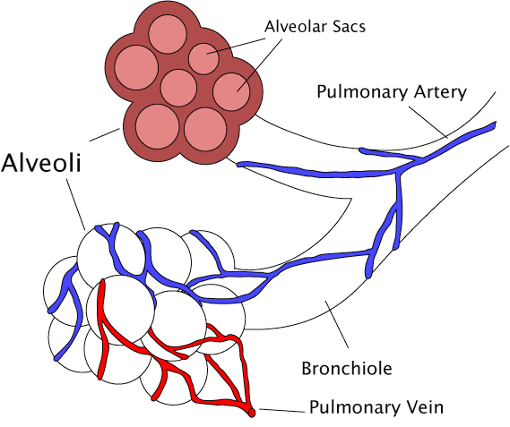
- Gizmos: छोटे यंत्र; small devices or gadgets
- Cleft: दरार; a split or opening, often referring to a natural indentation or split in something
- Long Meaning: Cleft refers to a split, crack, or division in something, often used to describe a natural or structural fissure. It can also refer to a physical condition, such as a cleft lip, where there is a gap or split in the upper lip due to incomplete development.
- In Hindi: Cleft का हिंदी में अनुवाद "फटना" या "दरार" है। इसका उपयोग किसी चीज़ में दरार या विभाजन को वर्णित करने के लिए किया जाता है। यह एक शारीरिक स्थिति को भी दर्शा सकता है, जैसे "क्लेफ्ट लिप" (कटे होंठ), जहां होंठ में एक दरार होती है।
- Example Sentences:
- English: The mountain had a deep cleft running through its side.
- Hindi: पर्वत के किनारे से एक गहरी दरार गुजर रही थी।
- English: The surgeon successfully repaired the child's cleft lip.
- Hindi: सर्जन ने बच्चे के कटे होंठ का सफलतापूर्वक इलाज किया।
- Owe: To "owe" means to be under obligation to pay or repay money, a favor, or a debt to someone. It can also mean to be required to give something because of a moral or social responsibility. For example, if you borrow money from a friend, you owe them that amount until you repay it. Similarly, if you feel a strong sense of gratitude for someone's help, you might say you owe them a favor.
- Does saying “I owe you a favor” mean I wish to give them a favor?
- Yes, exactly. When you say you "owe" someone a favor, it means you feel a sense of obligation to return a kindness or assistance they have given you. It’s a way of acknowledging that you are indebted to them for their help or support and that you intend to reciprocate.
- Due: It can have several meanings depending on the context:
- Expected or Scheduled: Refers to something that is expected to happen or is scheduled to occur at a specific time.
Hindi: "निर्धारित" या "नियत" – यह किसी ऐसी चीज़ को दर्शाता है जो अपेक्षित या निर्धारित समय पर होनी चाहिए।
- English: The report is due on Monday.
- Hindi: रिपोर्ट सोमवार को निर्धारित है।
- Owed: Refers to something that is owed or required to be paid or given.
Hindi: "उधार" या "कर्ज" – यह किसी चीज़ को चुकाने या देने की स्थिति को दर्शाता है।
- English: She paid the rent that was due.
- Hindi: उसने जो किराया देना था, वह चुका दिया।
- Proper or Appropriate: Refers to something that is deserved or appropriate under the circumstances.
Hindi: "उचित" या "योग्य" – यह किसी चीज़ को उसकी सही या उचित स्थिति में दर्शाता है।
- English: He received the recognition that was due to him.
- Hindi: उसे जो मान्यता मिलनी चाहिए थी, वह मिल गई।
- These translations and sentences illustrate the different contexts in which "due" can be used.
- Etymology of Due: The word "due" comes from the Latin word "debitus," which is the past participle of the verb "debere," meaning "to owe." In Old French, it became "deu," and in Middle English, it evolved into "due." The term generally relates to something owed or expected as a right or obligation.
- Pestle: कूटनी; a tool used to crush or grind substances in a mortar
- Mortar: Mortar can have different meanings based on the context:
- Building Material: A mixture used in construction to bond bricks, stones, or other building materials together. It is usually made of cement, lime, sand, and water.
- Example: The workers used mortar to lay the bricks for the wall.
- Weapon: A short, portable cannon used to fire shells at high angles. It is commonly used in military applications for launching explosives over a short distance.
- Example: The soldiers fired the mortar to hit the target behind the hill.
- Cooking Tool: A bowl, typically made of stone, ceramic, or wood, used with a pestle to grind or crush substances like spices, herbs, or grains.
- Example: She used a mortar and pestle to grind the spices for the recipe.
- In Hindi
- Building Material: Mortar का हिंदी में अनुवाद "मसाला" है। यह निर्माण में ईंटों, पत्थरों आदि को जोड़ने के लिए उपयोग किया जाने वाला मिश्रण है।
- Example: मजदूरों ने दीवार बनाने के लिए ईंटों को जोड़ने के लिए मसाले का उपयोग किया।
- Weapon: Mortar का हिंदी में अनुवाद "तोप" या "मोर्टार" है, जो गोलों को ऊंचाई पर दागने के लिए उपयोग किया जाने वाला छोटा तोप है।
- Example: सैनिकों ने पहाड़ी के पीछे के लक्ष्य को निशाना बनाने के लिए मोर्टार का इस्तेमाल किया।
- Cooking Tool: Mortar का हिंदी में अनुवाद "ओखली" है। यह मसालों, जड़ी-बूटियों, या अनाज को पीसने या कूटने के लिए इस्तेमाल होने वाला बर्तन है।
- Example: उसने रेसिपी के लिए मसाले पीसने के लिए ओखली और मूसल का इस्तेमाल किया
- These translations and sentences reflect the different meanings of "mortar" in both languages.
- Retractive: पीछे हटने वाला; capable of being drawn back or withdrawn
- Retracting:
- वापस लेना; pulling something back or withdrawing it.
- The cat was retracting its claws after the playful swipe. (बिल्ली ने खेल-खेल में झपट्टा मारने के बाद अपने पंजे वापस ले लिए।)
- पीछे हटना; withdrawing a statement, accusation, or promise.
- The politician ended up retracting his controversial statement. (राजनेता ने अंत में अपना विवादास्पद बयान वापस ले लिया।)
- Virtue: सद्गुण; a quality considered morally good or desirable
- Masochist: आत्मपीड़क; a person who derives pleasure from their own pain or humiliation
- witch hunt: an attempt to find and punish people whose opinions are unpopular and who are said to be a danger to society:
- Sentence Example: In America, Senator McCarthy led a witch hunt against people suspected of being communists.
- rationalization: It refers to:
- Justifying Behavior: The act of explaining or justifying one's behavior or decisions in a way that makes them seem logical or reasonable, even if the underlying motives or actions were not entirely rational. This often involves creating excuses or reasons to make something more acceptable or understandable.
- Example: He tried to rationalize his decision to skip the meeting by saying he was too busy.
- Streamlining Processes: In a business or organizational context, rationalization can refer to the process of making systems, operations, or procedures more efficient by eliminating redundancies or optimizing resources.
- Example: The company undertook a rationalization process to reduce costs and improve efficiency.
- In Hindi
- Justifying Behavior: Rationalization का हिंदी में अनुवाद "युक्तिकरण" या "औचित्य सिद्धि" है। इसका उपयोग तब होता है जब कोई व्यक्ति अपने व्यवहार या निर्णयों को तर्कसंगत बनाने की कोशिश करता है, भले ही वास्तविक कारण या कार्य पूरी तरह तर्कसंगत न हो।
- Example: उसने बैठक छोड़ने के अपने निर्णय को सही ठहराने के लिए कहा कि वह बहुत व्यस्त था।
- Streamlining Processes: Rationalization का हिंदी में अनुवाद "संगठनात्मक सुधार" या "सुव्यवस्थित करना" हो सकता है। यह प्रक्रिया प्रणालियों, संचालन, या प्रक्रियाओं को अधिक कुशल बनाने के लिए की जाती है।
- Example: कंपनी ने लागत को कम करने और दक्षता में सुधार करने के लिए संगठनात्मक सुधार की प्रक्रिया अपनाई।
These translations and sentences illustrate the different contexts in which "rationalization" can be used.
- Asserts: दावा करना; states or declares firmly
- Clamor: शोर; loud and confused noise, especially from people shouting or protesting
- Maladjusted describes someone who has difficulty adapting or adjusting to social norms, expectations, or environments. This term is often used to refer to individuals who struggle with emotional or behavioral issues that affect their ability to function effectively in their personal or social lives.
- In Hindi:
- Maladjusted का हिंदी में अनुवाद "असंतुलित" या "असामंजस्यपूर्ण" हो सकता है। इसका उपयोग उन व्यक्तियों को दर्शाने के लिए किया जाता है जो सामाजिक मानदंडों, अपेक्षाओं, या वातावरण के साथ समन्वय स्थापित करने में कठिनाई महसूस करते हैं।
- Example Sentences:
- English: The therapist worked with the maladjusted teenager to help him cope with his social anxieties.
- Hindi: थैरेपिस्ट ने असंतुलित किशोर के साथ काम किया ताकि वह अपनी सामाजिक चिंताओं को प्रबंधित कर सके।
- English: Maladjusted behavior can often lead to difficulties in personal and professional relationships.
- Hindi: असामंजस्यपूर्ण व्यवहार अक्सर व्यक्तिगत और पेशेवर संबंधों में कठिनाइयों का कारण बन सकता है।
- Brooded: चिंता में डूबा; deeply pondered or worried over something
- Divisive men: विभाजनकारी पुरुष; men who create division or discord
- Quack: नीम-हकीम; a person who falsely claims to have medical or other expert knowledge
- Snake oil: नकली औषधि; a fraudulent or deceptive product, especially one sold as a cure-all
- Example Sentences:
- The new weight loss supplement turned out to be nothing more than snake oil, preying on people's desperation for quick fixes.
नया वजन घटाने वाला पूरक मात्र झूठा दावा निकला, जो लोगों की जल्दबाजी का फायदा उठाने के लिए था। - Despite his promises, the politician's grand economic plan was dismissed as snake oil by his critics.
उसकी वादों के बावजूद, आलोचकों ने राजनेता की भव्य आर्थिक योजना को झूठा दावा कहकर खारिज कर दिया।
- Where does the term snake oil come from?
- The term "snake oil" originates from the 19th-century United States, where it was used to describe a type of traditional Chinese medicine made from the oil of the Chinese water snake. Chinese laborers who worked on the transcontinental railroad brought this remedy with them, and they used it to treat joint pain and inflammation. The oil was rich in omega-3 acids, which did have some medicinal properties.
However, the term "snake oil" later became associated with fraudulent health products. This shift occurred when unscrupulous salesman in the American West began selling fake "snake oil" that had no medicinal value. These salesmen, often referred to as "snake oil salesmen," would make exaggerated claims about the benefits of their products, which were usually just a mix of various oils and sometimes harmful ingredients.
As a result, "snake oil" became synonymous with any product or practice that is marketed as a cure-all but is actually ineffective or fraudulent. The term is still used today to describe deceptive or dubious products and those who promote them.
- Unscrupulous: बेईमान; having no moral principles or ethics
- Transcontinental: महाद्वीप पार; spanning or crossing an entire continent
- Outlier: असामान्य; something or someone that stands apart from others due to being different or unusual
- Orthodontics is a branch of dentistry that focuses on diagnosing, preventing, and treating dental and facial irregularities. The primary goal is to correct misaligned teeth and jaws to improve function and aesthetics. Treatments often involve the use of braces, retainers, and other devices to gradually shift teeth into their proper positions.
- Bad bite: A "bad bite," also known as a malocclusion, refers to a misalignment of the teeth or jaws that affects how the upper and lower teeth come together when the mouth is closed. This can lead to various issues, such as difficulty chewing, uneven wear on teeth, and strain on the jaw muscles.
- There are several types of malocclusion, including:
- Overbite: When the upper front teeth significantly overlap the lower front teeth.
- Underbite: When the lower front teeth extend beyond the upper front teeth.
- Crossbite: When some of the upper teeth bite on the inside of the lower teeth, rather than the outside.
- Open Bite: When there is a gap between the upper and lower teeth when the mouth is closed.
- Canopy: छत्र; an overhead cover or shelter, often made of fabric or foliage

- Suburb: उपनगर; a residential area situated on the outskirts of a city or town
- Example Sentences:
- English: They decided to move to a suburb to enjoy a quieter and more spacious living environment.
- Hindi: उन्होंने एक उपनगर में जाने का निर्णय लिया ताकि वे एक शांत और अधिक विस्तृत जीवन पर्यावरण का आनंद ले सकें।
- English: The suburb offers good schools and parks for families with children.
- Hindi: उपनगर में बच्चों वाले परिवारों के लिए अच्छे स्कूल और पार्क उपलब्ध हैं।
- Scraping: खुरचना; the action of removing or rubbing a surface with a hard object
- Thicket: झाड़ी; a dense group of bushes or trees
- Whizzed: तेजी से गुजरना; moved quickly with a buzzing or whooshing sound
- Houndstooth: हाउंड्सटूथ; a pattern consisting of broken checks or abstract four-pointed shapes, often used in textiles
- Rep tie: रिप टाई; a type of necktie made from rep (or repp) fabric, known for its diagonal stripes or ribbed texture
- 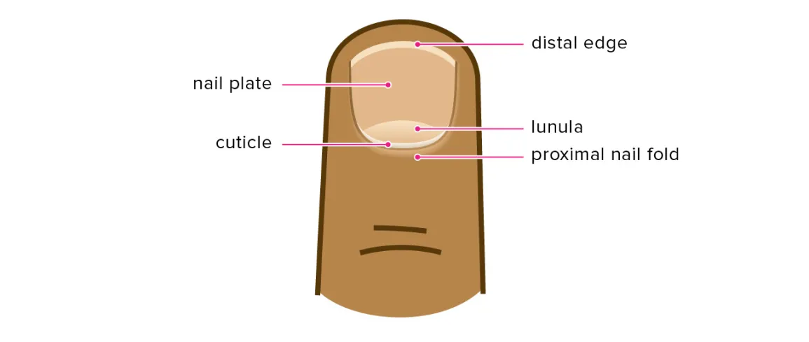
- Veered: मुड़ा; changed direction suddenly or shifted course
- Gravel: कंकड़; small stones or pebbles used in construction or landscaping
- Turret: गुमटी; a small tower or structure, often part of a larger building or fortification, used for defense or as a lookout
- Lookout: निगरानी; a place or person used for observing or watching for potential dangers or events
- Esque: जैसा; in the style of or resembling (600)
- Vinyl: विनाइल; a synthetic plastic material used for various purposes, including flooring, records, and upholstery
- Upholstery is the work of providing furniture, especially seats, with padding, springs, webbing, and fabric or leather covers. The word also refers to the materials used to upholster something.
- Moss: काई; a small, non-vascular plant that often grows in dense green clumps or mats, typically in damp or shady locations
- Moat: खाई; a deep, wide ditch surrounding a castle or fort, usually filled with water, for defense
- Cabinets: अलमारी; storage units with doors and shelves, used for organizing and storing items
- 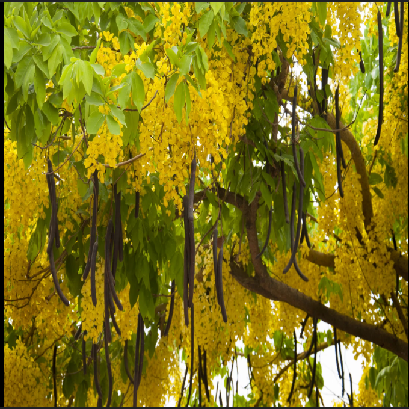
- prod: poke with a finger, foot, or pointed object.
- nudge: prod (someone) gently with one's elbow in order to attract attention.
- Prod: टहोका देना; a poke or push, often to encourage action
- Superstition: अंधविश्वास; a belief or practice resulting from ignorance, fear of the unknown, or trust in magic
- Sibling: भाई-बहन; a brother or sister
- Ultimatum: अंतिम प्रस्ताव; a final demand or statement of terms, the rejection of which may lead to consequences
- Icy man: The term "icy man" could refer to a person who is emotionally cold or distant, exhibiting a demeanor that seems unfeeling or detached. It might also evoke the idea of someone who is cool under pressure, maintaining composure in challenging situations.
- Rant:
- उग्र भाषण; a loud, angry, or impassioned speech
- "He went on a rant about the unfair policies of the company." (वह कंपनी की अनुचित नीतियों पर उग्र भाषण देने लगा।)
- बकवास करना; to speak in a loud and uncontrolled way
- "She began to rant when no one agreed with her opinion." (जब किसी ने उसकी राय से सहमति नहीं जताई तो वह बकवास करने लगी।)
- Monobloc: एकल ब्लॉक; made from a single piece or block of material
- Tanned: धूप से सांवला हुआ; having a darker skin tone due to sun exposure
- Lanky: दुबला-पतला; tall and thin, often with long limbs
- Piercing brown eyes: चुभती हुई भूरी आँखें; intensely sharp or penetrating brown-colored eyes
- Roaring hearth: गरजता हुआ चूल्हा; a fireplace with a loud, intense fire burning in it
- Hearth: चूल्हा; the floor of a fireplace, extending into a room, often used for warmth and cooking

- Brain stem: मस्तिष्कस्तम्भ; the part of the brain connecting the cerebrum with the spinal cord, responsible for regulating vital functions such as heart rate and breathing
- 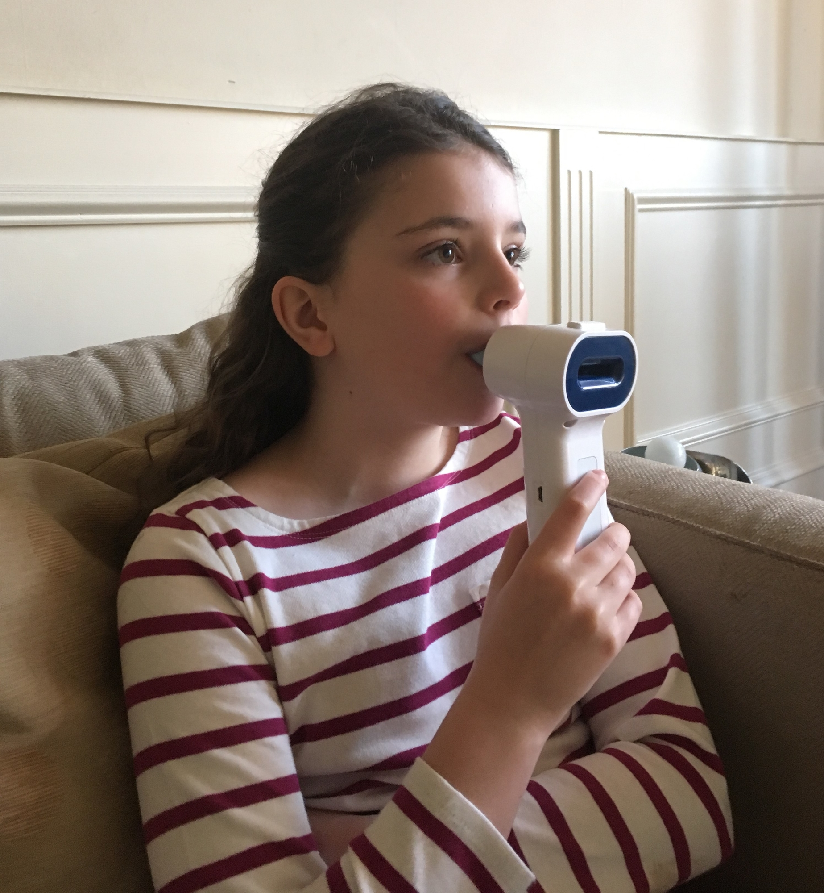
- Hordes: झुंड; large groups or crowds of people, often implying disorder or chaos
- Clumps: गुच्छे; groups or clusters of items or things that are gathered closely together
- Eyelets: small holes reinforced with metal or plastic, often used for laces or fastenings in clothing or shoes
- Gleaming: चमकदार; shining brightly or reflecting light with a smooth and bright surface
- Borough: नगर निगम; a district or administrative division within a city or town
- Bronx: ब्रोंक्स; a borough of New York City, located to the north of Manhattan
- Chuckling: मुँह दबाकर हंसना; laughing quietly or to oneself, often in amusement or mild amusement
- Sole: Sole can have multiple meanings depending on the context:
- Only or Single: Refers to something that is the only one or exclusive.
- Example: He was the sole survivor of the accident.
- Hindi: वह हादसे का एकमात्र जीवित बचा व्यक्ति था।
- Bottom of a Foot or Shoe: Refers to the underside of a foot or the part of a shoe that comes in contact with the ground.
- Example: The sole of his shoe was worn out from walking.
- Hindi: चलने से उसके जूते का तला घिस गया था।
- Type of Fish: Refers to a type of flatfish that is often used in cooking.
- Example: She prepared grilled sole for dinner.
- Hindi: उसने रात के खाने के लिए ग्रिल्ड सोल मछली बनाई।
These translations and sentences cover the various meanings of "sole" in different contexts.
- Maxilla: ऊपरी जबड़ा; the upper jawbone in the human skull, which holds the upper teeth
- Masseter: गाल की पेशी; a facial muscle that plays a major role in the chewing of solid foods by raising the lower jaw (mandible)
- Gnaw: कुतरना; to bite or chew something persistently
- Chomps: चबाना; bites into or chews something with enthusiasm or force
- Chomps down: जोर से काटना; bites down forcefully and repeatedly
- Malocclusion: दांतों का असामान्य संरेखण; a misalignment of the teeth or the way the teeth fit together when the mouth is closed
- Providence: ईश्वर की कृपा; the protective care or guidance of a divine power, or a timely preparation for future needs
- Celebratory: उत्सवपूर्ण; relating to or expressing celebration
- Concerted: संयुक्त; planned or carried out with joint effort
- Acidosis: अम्लता; a condition where there is too much acid in the body fluids
- Alkalosis: क्षारीयता; a condition where there is too much base (alkali) in the body fluids
- Hypocapnia: a condition characterized by low levels of carbon dioxide in the blood
- Sympathetic: सहानुभूति; showing compassion or understanding towards others
- Sympathetic nervous system overload occurs when the body's stress response is activated excessively, leading to symptoms like increased heart rate, high blood pressure, and anxiety. यह तब होता है जब शरीर की तनाव प्रतिक्रिया अत्यधिक सक्रिय हो जाती है, जिससे हृदय की दर में वृद्धि, उच्च रक्तचाप और चिंता जैसे लक्षण होते हैं।
- Similar Phrase: Sympathetic nervous system:
- सहानुभूतिपूर्ण तंत्रिका तंत्र; the part of the autonomic nervous system that prepares the body for 'fight or flight' responses during stressful situations.
- The sympathetic nervous system increases heart rate and dilates pupils in response to danger. (सहानुभूतिपूर्ण तंत्रिका तंत्र खतरे के जवाब में हृदय गति बढ़ाता है और पुतलियों को फैलाता है।)
- तनाव प्रतिक्रिया तंत्र; the system that activates bodily functions to handle stress or emergencies by increasing alertness and energy.
- During a stressful event, the sympathetic nervous system triggers adrenaline release. (तनावपूर्ण घटना के दौरान, सहानुभूतिपूर्ण तंत्रिका तंत्र एड्रेनालाईन का स्राव उत्पन्न करता है।)
- (THIS IS TRIGGERED BY PACED/HEAVY BREATHING e.g., Wim Hof Method)
- Similar Phrase: Sympathetic stress:
- सहानुभूतिपूर्ण तनाव; the physical and psychological stress response triggered by the activation of the sympathetic nervous system, often in reaction to perceived threats or challenges.
- Sympathetic stress can cause an increase in heart rate and blood pressure. (सहानुभूतिपूर्ण तनाव हृदय गति और रक्तचाप में वृद्धि कर सकता है।)
- तंत्रिका तनाव; the stress experienced when the body prepares for 'fight or flight,' resulting in heightened alertness and energy.
- Prolonged sympathetic stress can lead to chronic health issues. (लंबे समय तक तंत्रिका तनाव से दीर्घकालिक स्वास्थ्य समस्याएँ हो सकती हैं।)
- Similar Phrase: Parasympathetic: पैरासिंपैथेटिक; relating to the part of the autonomic nervous system that conserves energy and slows the heart rate.
- Sahil: शांत करती है शरीर को
- para: beside, alongside of, beyond, aside from
- (THIS IS TRIGGERED BY LONG EXHALES - Check “Box Breathing” method in Book Logs - “Breath” )
- Extreme apnea: अत्यधिक श्वास रुकावट; a severe condition where breathing stops for extended periods
- Entail: शामिल करना; involve or require as a necessary part or consequence
- Nausea:
- मतली; the feeling of wanting to vomit
- "She felt a wave of nausea after the boat started rocking." (नाव के हिलने पर उसे एक तेज़ मतली महसूस हुई।)
- घृणा; a strong feeling of disgust
- "The sight of the spoiled food filled him with nausea." (सड़े हुए खाने को देखकर उसे घृणा महसूस हुई।)
- Exhaustion: थकावट; extreme physical or mental fatigue
- Gauntlet: चुनौती; a difficult or challenging test or trial
- Bruised: चोटिल; having discolored skin due to a blow or impact

- Cots: बिस्तर; small, portable beds often used in temporary sleeping arrangements
- Droves: बड़े समूह; large groups or crowds of people or animals (650)
- Anxiety:
- चिंता; a feeling of unease, worry, or nervousness, often about an uncertain outcome or event.
- She experienced anxiety before the important presentation. (महत्वपूर्ण प्रस्तुति से पहले उसे चिंता हुई।)
- उद्वेग; a psychological condition characterized by excessive and persistent worry or fear, which can interfere with daily functioning.
- His anxiety disorder made it difficult for him to leave the house without feeling overwhelmed. (उसका चिंता विकार उसे घर से बाहर निकलने में कठिनाई पैदा करता था क्योंकि वह अत्यधिक तनाव महसूस करता था।)
- Is anxiety and anxiety disorder the same thing?
No, anxiety and anxiety disorder are not the same thing, though they are related.
- Anxiety is a natural emotional response to stress or worry. It’s something everyone experiences at times, such as before a big exam or important event. It’s usually temporary and resolves on its own when the stressor is removed or managed.
- Anxiety disorder, on the other hand, is a mental health condition characterized by persistent, excessive, and uncontrollable anxiety that interferes with daily life. It involves more severe and long-lasting symptoms compared to typical anxiety, and it can significantly impact one's ability to function normally. Types of anxiety disorders include generalized anxiety disorder (GAD), panic disorder, social anxiety disorder, and specific phobias.
If someone experiences anxiety that is intense, persistent, and disrupts their daily activities, it's important for them to seek professional help to manage and treat an anxiety disorder.
- Anxious: चिंतित; feeling worry, unease, or nervousness, often about an imminent event or uncertain outcome
- Paranoia: पागलपन; an irrational and persistent feeling of distrust or suspicion towards others, often involving the belief that one is being persecuted or conspired against
- Sighed: आह भरी; made a long, deep breath as an expression of relief, sadness, or tiredness
- Hobbling: लंगड़ाना; walking with difficulty due to pain or injury
- Amputees: अंगविहीन; individuals who have had one or more limbs surgically removed
- Glum: उदास; feeling or looking dejected or gloomy
- Gloomy891
- Dejected: निराश; feeling sad or dispirited
- Dispirited: हतोत्साहित; lacking enthusiasm or hope
- Lambchop: भेड़ का मांस; a cut of lamb, typically taken from the rib or loin, and often grilled or roasted
- Sideburns: कान के पास के बाल; strips of facial hair that extend from the hairline down the sides of the face, usually to the ear
- 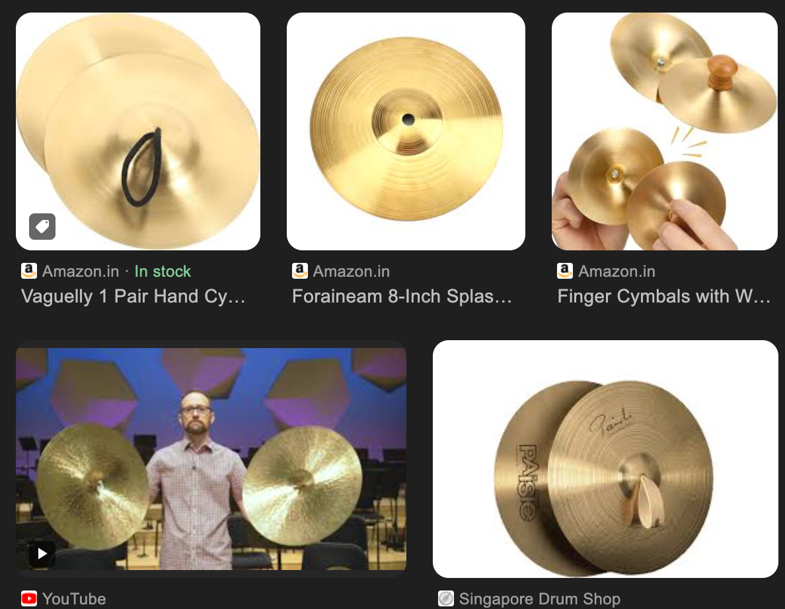
- Hairline: बालों की रेखा; the boundary where the hair on the forehead meets the skin of the face
- Maladies: रोग; illnesses or diseases
- Scores: अंक; multiple points or a large number of things
- Myriad:
- असंख्य; a countless or extremely large number.
- There are a myriad of stars in the night sky. (रात के आकाश में असंख्य तारे हैं।)
- बहुत सारे प्रकार; a great variety or multitude.
- She faced a myriad of challenges in her new job. (उसे अपनी नई नौकरी में बहुत सारे प्रकार की चुनौतियों का सामना करना पड़ा।)
- Ailment:
- रोग; a minor illness or condition that affects the body or mind, often causing discomfort but not usually life-threatening.
- He visited the doctor for a minor ailment that had been bothering him. (वह एक छोटे से रोग के लिए डॉक्टर के पास गया जो उसे परेशान कर रहा था।)
- अस्वस्थता; a general feeling of being unwell or suffering from a health issue, typically used for non-serious conditions.
- She took a day off work to recover from her ailment. (अपनी अस्वस्थता से उबरने के लिए उसने काम से एक दिन की छुट्टी ली।)
- maladies vs. ailments: "maladies" often implies more serious conditions or issues, while "ailments" usually refers to less severe health problems.
- Vicious: क्रूर; deliberately cruel or violent
- Diarrhea: दस्त; frequent, watery bowel movements that can lead to dehydration
- Stooped: झुका हुआ; bent forward or downward from the waist
- Immobilized: स्थिर; unable to move or be moved
- Dizziness: चक्कर आना; a sensation of spinning or losing balance
- Shooting pain: चुभन; a sudden, sharp pain that travels quickly along a part of the body
- Abate: कम होना; to reduce in intensity or amount
- corps: Corps refers to:
- Military Unit: A large military unit or group of soldiers that operate together, often composed of multiple divisions. In some contexts, it can refer to specialized military groups, like the Marine Corps.
- Example: He served in the Army Corps for several years.
- Hindi: उसने कई वर्षों तक सेना के कोर में सेवा की।
- Organized Group: A group of people working together in a specific organization, often for a common purpose. This could be a volunteer corps, a diplomatic corps, etc.
- Example: She joined the Peace Corps to help in community development projects.
- Hindi: उसने सामुदायिक विकास परियोजनाओं में सहायता के लिए शांति कोर में शामिल हो गई।
- Reams: ढेर सारे; large quantities of something, especially paper or written material
- Splayed: फैलाया हुआ; spread out or extended, often in an awkward or wide manner
- Parched: सूखा हुआ; extremely dry, often due to heat or dehydration
- Lawn: लॉन; an area of grass in a yard or garden, typically kept neatly mowed
- mowed: काटा हुआ; cut down grass or vegetation with a machine or tool
- Squinted: आंखें सिकोड़ना; looked with partially closed eyes to see more clearly or reduce light
- Beads: मनके; small, often round objects used in jewelry or for decoration, typically threaded on a string
- Rigs: उपकरण; structures or equipment used for specific purposes, such as machinery for drilling or construction
- Redline: अधिकतम सीमा; the point at which something reaches its maximum limit or is pushed to its extreme, often used in reference to engines or stress levels
- Rodent: कृंतक; a type of small mammal with sharp front teeth, such as rats, mice, and squirrels
- Loose: Loose can refer to:
- Not Fitting Tightly: Describes something that is not tightly secured or fastened, allowing for movement or space.
- Example: The screw was loose, so it needed to be tightened.
- Hindi: स्क्रू ढीला था, इसलिए उसे कसना पड़ा।
- Not Strict or Rigid: Refers to something that is not strict or formal, often in terms of rules or structure.
- Example: The rules were loose and allowed for a lot of flexibility.
- Hindi: नियम ढीले थे और इसमें बहुत सारी लचीलापन की अनुमति थी।
- Free or Unconfined: Describes something or someone that is not confined or restrained.
- Example: The dog was running loose in the park.
- Mellow: शांत; pleasantly soft or ripe, often referring to flavors or moods
- Bowels: आंतें; the internal organs of the digestive system, including the intestines
- Chilling: Chilling can have multiple meanings based on context:
- Relaxing or Enjoying Leisure: Informally used to describe relaxing or taking it easy, often in a casual and laid-back manner.
- Example: We spent the afternoon chilling at the beach.
- Hindi: हमने समुद्र तट पर दोपहर बिताकर आराम किया।
- Causing Cold or Shivering: Refers to something that causes a sensation of cold or makes you shiver.
- Example: The chilling wind made everyone shiver.
- Hindi: ठंडी हवा ने सभी को कांपने पर मजबूर कर दिया।
- Frightening or Unsettling: Describes something that is frightening or causes an eerie feeling.
- Example: The horror movie had a chilling effect on the audience.
- Profusion: प्रचुरता; an abundance or large quantity of something
- Ramping: वृद्धि; increasing in intensity or extent, or constructing a sloped surface for ease of movement
- Bladder: मूत्राशय; a hollow organ in the body that stores urine before it is excreted
- meaner: Meaner is the comparative form of the adjective "mean." It can refer to:
- More Unkind or Malicious: Describes someone who is more unkind, cruel, or unpleasant than another person.
- Example: His comments were mean, but hers were even meaner.
- Hindi: उसकी टिप्पणियाँ क्रूर थीं, लेकिन उसकी टिप्पणियाँ और भी क्रूर थीं।
- More Severe or Harsh: Refers to something that is more severe, harsh, or difficult than something else.
- Example: The new rules are meaner compared to the previous ones.
- Hindi: नए नियम पिछले नियमों की तुलना में अधिक कठोर हैं।
- Leaner is the comparative form of the adjective "lean." It can refer to:
- More Slim or Fit: Describes someone or something that has less body fat or is more toned and physically fit compared to another.
- Example: After months of training, he became leaner and stronger.
- Hindi: महीनों की ट्रेनिंग के बाद, वह पतला और मजबूत हो गया।
- More Efficient or Streamlined: Refers to a system, process, or organization that is more efficient, with fewer resources or less waste compared to another.
- Example: The company has become leaner by reducing unnecessary expenses.
- Hindi: कंपनी ने अनावश्यक खर्चों को कम करके अधिक कुशलता प्राप्त की है।
- Less Fatty or Greasy: Used to describe food, particularly meat, that has less fat compared to another type.
- Example: He prefers leaner cuts of meat for a healthier diet.
- Hindi: वह एक स्वस्थ आहार के लिए कम वसा वाले मांस के टुकड़े पसंद करता है।
- Pavilions can refer to:
- Architectural Structures: Freestanding, often temporary or ornamental structures used for leisure, entertainment, or as part of a larger building or garden. They are usually open on the sides and can serve as a shelter or a place to relax.
- Example: The park features several beautiful pavilions for picnicking.
- Hindi: पार्क में पिकनिक के लिए कई सुंदर मंडप हैं।
- Exhibition Spaces: Temporary or semi-permanent structures used at fairs, expos, or exhibitions to house displays or booths.
- Example: The trade fair included several pavilions showcasing different industries.
- Hindi: व्यापार मेले में विभिन्न उद्योगों को दर्शाने वाले कई मंडप शामिल थे।
- Garden Structures: Decorative structures often found in gardens or parks, designed to provide shade or an attractive focal point.
- Example: The garden’s central pavilion is a popular spot for visitors.
- Hindi: बगीचे का केंद्रीय मंडप आगंतुकों के लिए एक लोकप्रिय स्थान है।
- Dazzling: चकाचौंध करने वाला; extremely bright or impressive, often causing admiration or amazement
- Holistic: समग्र; considering the whole system rather than just individual parts, often used in reference to health or approaches that integrate all aspects of a person's well-being
- Monasteries: मठ; religious communities where monks or nuns live and practice their faith, often in seclusion from the outside world
- Freemasonry: फ़्रीमेसनरी; a fraternal organization that promotes moral and ethical development through symbolic rituals and community service
- Fraternal: भाईचारे से संबंधित; related to or characteristic of brotherhood or friendly association, often used to describe organizations or relationships based on mutual support and fellowship
- Symbolic: प्रतीकात्मक; representing something else, often abstract, through symbols or signs
- Hermit: एकांतवासी; individual who live in solitude, often for religious or personal reasons
- Solitude: एकाकीपन; the state of being alone, often enjoyed for its peace and quiet
- Spectacle: दृश्य; a visually striking or impressive display, often intended to attract attention or admiration
- Carnage: रक्तपात; widespread and violent slaughter or destruction, especially in battle
- Fraying: उधड़ना; the process of fabric or material becoming worn or unraveling at the edges, often used metaphorically to describe something becoming weak or damaged
- Shove: धक्का देना; to push (700)
- Vagus: घुमंतू; referring to the wandering nature of the vagus nerve in the body, which extends from the brainstem to various organs in the chest and abdomen
- Vagus nerve: वैगस तंत्रिका; a long, wandering nerve that extends from the brainstem to the abdomen, playing a crucial role in regulating the heart, digestive system, and other vital functions
- wandering: For meaning of wander see word 504.
- Meandering: घुमावदार; winding or following a curvy, indirect path, often used to describe rivers, roads, or conversations
- Limp: लंगड़ाना; to walk with difficulty due to an injury or weakness, or lacking firmness or strength
- Choppy: उथल-पुथल; characterized by irregular or rough movement, often used to describe water, speech, or progress
- Autonomic and automatic are terms that are often confused due to their similarity in spelling and pronunciation, but they have distinct meanings:
- Autonomic:
- English Meaning: Refers to processes or functions that occur involuntarily and are controlled by the autonomic nervous system. This system regulates bodily functions such as heart rate, digestion, and respiratory rate without conscious effort.
- Hindi Meaning: स्वायत्त (Svāyatta)
- Example: The heart's beating is an autonomic function, meaning it continues without any conscious thought.
- Automatic:
- English Meaning: Refers to actions or processes that operate without human intervention or direct control, often involving machinery or technology that performs tasks independently once set in motion.
- Hindi Meaning: स्वचालित (Svachālit)
- Example: The doors of the shopping mall open automatically when someone approaches them.
- In summary, autonomic typically refers to biological processes controlled by the nervous system, while automatic refers to mechanical or technological processes that function independently.
- Frigid: अत्यंत ठंडा; extremely cold, or lacking warmth and friendliness in demeanor or behavior
- Satchels: झोलों; bags, often with a shoulder strap, used for carrying books or personal items
- Flabby: ढीला; lacking firmness or muscle tone, often used to describe soft, loose flesh or weak, ineffective behavior
- Sheen: चमक; a soft, glowing light or luster on a surface
- Credence: विश्वास; belief in or acceptance of something as true
- bruegel paintings: referring to paintings by the Flemish painter Pieter Bruegel the Elder, known for his detailed landscapes and scenes of peasant life

- Mount: चढ़ना; to climb or ascend, or to fix something in place for display or use
- Trekking vs. Hiking: Trekking and Hiking are both outdoor activities that involve walking in natural environments, but they differ in terms of duration, difficulty, and purpose:
- Hiking:
- Definition: A walk on well-marked trails or paths, typically in natural environments like forests, mountains, or parks.
- Duration: Usually done within a day, ranging from a few hours to a full day.
- Difficulty: Generally easier, with less challenging terrain. Hiking trails are often maintained and marked.
- Purpose: Recreational activity for enjoying nature, exercise, or leisure.
- Trekking:
- Definition: A long, often challenging journey on foot, typically involving multiple days and covering remote, rugged terrain.
- Duration: Can last several days to weeks, involving overnight stays.
- Difficulty: More demanding than hiking, with varied and difficult terrain. Treks often involve steep climbs, rough paths, and less predictable conditions.
- Purpose: Adventure, exploration, and experiencing remote areas, often with a focus on endurance and challenge.
- Hindi Meaning:
- Hiking: प्राकृतिक वातावरण में स्थित अच्छे रास्तों पर पैदल चलना (सामान्यतः कुछ घंटों से लेकर पूरे दिन तक)।
- Trekking: पैदल चलने का एक लंबा और चुनौतीपूर्ण सफर, जो कई दिनों से लेकर हफ्तों तक चलता है और जिसमें दुर्गम इलाकों को पार करना शामिल होता है।
- Houseboat: हाउसबोट; a boat designed or modified to be used as a home, often moored in a particular location
- moored: लंगर डाला हुआ; secured in place with anchors or ropes, typically referring to a boat being tied to a dock or fixed position
- Righteous: धर्मी; morally right or justifiable, characterized by uprightness or virtuous conduct
- Physiology: शरीर क्रिया विज्ञान; the branch of biology that studies the normal functions and mechanisms of living organisms and their parts
- Psychology: मनोविज्ञान; the scientific study of the mind and behavior, including the processes of thoughts, emotions, and actions
- Psychiatry: मनोचिकित्सा; the branch of medicine focused on diagnosing, treating, and preventing mental health disorders and emotional disturbances
- Psychoanalysis: मनोविश्लेषण; a method of psychological therapy and theory developed by Sigmund Freud, focusing on uncovering unconscious thoughts and feelings through techniques like free association and dream analysis
- endotoxin or Bacterial endotoxin: बैक्टीरियल एंडोटॉक्सिन; a toxic substance found within the cell wall of certain bacteria, released when the bacteria die or are broken down, often leading to severe inflammatory reactions in the host
- Oversee: निगरानी करना; to supervise or manage the execution of tasks or processes to ensure they are carried out correctly
- Forgo: त्याग करना; to choose not to do or have something, often voluntarily giving up a benefit or opportunity
- Immune system: प्रतिरक्षा प्रणाली; the body's defense network of cells, tissues, and organs that work together to protect against infections, diseases, and foreign substances
- Autoimmune: ऑटोइम्यून; relating to a condition where the immune system mistakenly attacks the body's own tissues as if they were foreign or harmful
- Bizarre: अजीब; very strange or unusual, often in a way that is hard to understand or explain
- Cliché:
- घिसा-पिटा वाक्य या विचार; an overused phrase or idea that has lost its originality or impact.
- "Time heals all wounds" is such a cliché. (‘‘समय हर घाव को भर देता है’’ एक बहुत ही घिसा-पिटा वाक्य है।)
- सामान्य और दोहराया हुआ कथन; something that is predictable or unoriginal due to excessive repetition.
- The story was full of romantic clichés. (कहानी रोमांटिक घिसे-पिटे कथनों से भरी हुई थी।)
- Hippie: हिप्पी; a member of a social movement from the 1960s and 1970s characterized by a countercultural lifestyle, often advocating for peace, love, and communal living
- Countercultural: प्रतिरोधी संस्कृति से संबंधित; relating to a lifestyle or set of beliefs that opposes or rejects the dominant cultural norms or values
- Communal: सामुदायिक; shared by all members of a community or group, often referring to resources, activities, or living arrangements
- Succumb: हार मानना; to yield to a superior force, pressure, or temptation, or to suffer or die from an illness or injury
- Yield: समर्पण करना; to produce or provide, or to give way under pressure or force
- Charlatan: ढोंगी; a person who falsely claims to have special knowledge or skills, often for personal gain or to deceive others
- Pentecostal: पेंटेकोस्टल; relating to a Christian movement emphasizing the work of the Holy Spirit, including practices like speaking in tongues, prophecy, and healing, often associated with a strong emphasis on personal spiritual experiences
- Speaking in tongues: भाषा का बोली; a practice in which individuals speak in a language unknown to them, often considered a spiritual gift or manifestation in certain religious contexts
- Spiritual: आध्यात्मिक; relating to the spirit or soul, often concerning religious or metaphysical matters, and involving a sense of connection to something greater than oneself
- Metaphysical: तत्वमीमांसा; relating to the branch of philosophy that deals with the fundamental nature of reality, existence, and the relationship between mind and matter
- Muscle spasms: मांसपेशियों में ऐंठन; involuntary contractions or sudden tightening of muscles, often causing pain and discomfort
- Seizure: दौरा; a sudden, uncontrolled electrical disturbance in the brain that can cause changes in behavior, movement, or consciousness
- Rejoice: आनन्दित; to feel or show great joy or delight.
- Passing phases: बीतते हुए दौर; temporary periods or stages that come and go without lasting impact.
- Stew can refer to:
- A Type of Dish: A dish made by simmering meat, vegetables, and sometimes other ingredients in liquid (such as water, broth, or sauce) for an extended period until everything is tender and flavors are well-blended.
- Example: She made a hearty beef stew for dinner.
- Hindi: उसने रात के खाने के लिए एक भरपेट बीफ स्टू बनाया।
- To Cook Slowly in Liquid: The process of cooking food slowly in liquid, allowing it to become tender and absorb flavors.
- Example: The vegetables were left to stew on the stove for several hours.
- Hindi: सब्जियों को कई घंटों तक चूल्हे पर धीरे-धीरे पकने के लिए छोड़ दिया गया था।
- To Worry or Be Upset (Informal): Used informally to describe a state of being worried, upset, or thinking deeply about something, often in a way that causes stress.
- Example: He sat there stewing over the mistake he made at work.
- Hindi: वह अपने काम में की गई गलती के बारे में चिंतित होकर बैठा रहा।
- Narcissist: आत्ममुग्ध व्यक्ति; a person who has an excessive interest in or admiration of themselves.
- Sway can refer to:
- To Move Gently Back and Forth: Describes a gentle, often rhythmic, movement from side to side.
- Example: The trees swayed in the breeze.
- Hindi: पेड़ हवा में हिल रहे थे।
- Example Usage: Nose Unblocking Exercises - How To Get Rid Of A Blocked Nose(source - james nestor videos)
- To Influence or Control: Refers to having an influence over someone's decisions, opinions, or actions.
- Example: The politician’s speech swayed many voters.
- Hindi: राजनेता के भाषण ने कई मतदाताओं को प्रभावित किया।
- To Hold Authority or Power: Indicates dominance or control over a group or area.
- Example: The king swayed over a vast empire.
- Hindi: राजा का एक विशाल साम्राज्य पर शासन था।
- Sheer: पूर्ण; complete, absolute, or utter.
- Rosebush: गुलाब का पौधा; a shrub that produces roses.
- Benediction: आशीर्वाद; a blessing or expression of good wishes.
- Priori: पूर्वज्ञान; knowledge or reasoning that exists or is derived independently of experience.
- Passive: निष्क्रिय; not actively participating or reacting, often referring to a lack of movement, response, or involvement.
- Messiah: मसीहा; a savior or liberator, often a prophesied or expected figure in various religious traditions who is believed to bring salvation or deliverance. (750)
- Egoistic: आत्मकेंद्रित; characterized by self-centeredness or excessive concern with one's own interests or welfare.
- Stirred: उत्तेजित; moved or influenced emotionally, or mixed gently.
- Retrospective: पूर्वदृष्टि; looking back on or reviewing past events or situations, often to analyze or reflect on them.
- Picking: Picking can refer to:
- Selecting or Choosing: The act of choosing or selecting items from a group or collection.
- Example: She is picking apples from the tree.
- Hindi: वह पेड़ से सेब चुन रही है।
- Picking can also refer to Harvesting: Refers to the process of collecting crops, fruits, or flowers from where they are grown.
- Example: The workers are busy picking strawberries.
- Hindi: श्रमिक स्ट्रॉबेरी चुनने में व्यस्त हैं।
- Plucking or Removing: Removing or taking out something, often by pulling or pinching.
- Example: He was picking the strings of the guitar.
- Hindi: वह गिटार की तारों को छेड़ रहा था।
- Minor Injury or Scratch: A small injury, scratch, or mark caused by picking or scraping.
- Example: She had a small picking on her hand from the thorn.
- Hindi: उसकी उंगली पर कांटे से एक छोटा खरोंच था।
- Picking on: तंग करना; to repeatedly criticize, bully, or harass someone in a targeted or unfair manner.
- Nagged/Nagging:
- उकसाना; repeatedly reminding or complaining about something, often in a persistent or annoying manner.
- She was nagging him about fixing the leaky faucet. (वह उसे रिसते नल की मरम्मत करने के लिए बार-बार उकसा रही थी.)
- परेशान करने वाला; causing annoyance or frustration through constant or repeated requests or criticism.
- The constant nagging from his boss made him feel stressed. (उसके बॉस का लगातार उकसाना उसे तनाव महसूस कराता था.)
- चिंता; persistent and often petty worry or concern about minor issues.
- His nagging worries about the upcoming exam kept him awake at night. (आने वाली परीक्षा के बारे में उसकी लगातार चिंताओं ने उसे रात को जगाए रखा।)
- Alchemy: रसायनशास्त्र; an ancient practice combining elements of chemistry, philosophy, and mysticism, often aimed at transforming base metals into gold or discovering a universal elixir.
- Elixir: अमृत; a magical or medicinal potion believed to cure ailments or grant immortality, or a substance with remarkable healing or transformative properties.
- Proportionate body: संतुलित शरीर; a body in which the various parts are sized and shaped in a balanced and harmonious manner.
- Eros: प्रेम का देवता; in Greek mythology, the god of love and attraction, often associated with romantic and sexual desire.
- Prestige: प्रतिष्ठा; widespread respect or admiration for someone or something based on their achievements, quality, or status.
- Admire: सराहना; to regard with respect, approval, or pleasure, often due to someone's qualities or achievements.
- Desire: इच्छा; a strong feeling of wanting or longing for something or someone.
- Adore: पूजा करना; to regard with deep love, respect, or affection.
- Orthodox:
- परंपरागत; adhering to established or traditional beliefs
- "He follows an orthodox style of painting." (वह चित्रकला की परंपरागत शैली का पालन करता है।)
- रूढ़िवादी; strictly conforming to religious or political doctrines
- "Her family holds orthodox religious views." (उसका परिवार रूढ़िवादी धार्मिक दृष्टिकोण रखता है।
- Encroach: अतिक्रमण करना; to gradually and often subtly intrude or trespass upon someone’s rights, territory, or domain.
- Subjectivity: व्यक्तिपरकता; the quality of being based on or influenced by personal feelings, tastes, or opinions, rather than objective facts.
- Bestow: प्रदान करना; to give or confer something, often a gift, honor, or favor, upon someone.
- Confer: चर्चा करना; to grant or bestow something, such as a title or degree, or to discuss and exchange ideas or opinions.
- Beloved: प्रिय; deeply loved or cherished, often used to describe someone who is greatly admired or held in affection.
- Affection: स्नेह; a gentle feeling of fondness or love toward someone or something.
- Intrinsic: अंतर्निहित; belonging naturally or essential to something, inherent or fundamental to its nature.
- Polygamy: बहुविवाह; the practice or custom of having more than one wife or husband simultaneously.
- for e.g., one man having multiple wives in muslims
- Yatin: संयमी व्यक्ति; a person who is self-controlled or ascetic.
- Sought: खोजा गया; something that has been searched for or desired.
- Refuge: आश्रय; a place of safety or shelter.
- Unearthed: उजागर; discovered or brought to light.
- "Voice over" refers to a production technique where a voice that is not part of the narrative or visible in the scene is used in a radio, television production, filmmaking, theater, or other presentations. The voice is often used to provide commentary, narration, or to convey information to the audience. In Hindi, it can be described as "वॉयस ओवर," which means "पार्श्व स्वर" or "आवाज का प्रयोग," where a narrator or speaker's voice is used without them being seen on screen.
- Honed: तराशा; refined or perfected through practice or development.
- string can refer to:
- A Thin Piece of Material: A long, thin piece of material such as thread, cord, or rope.
- Example: She tied the package with a piece of string.
- Hindi: उसने पैकेज को एक धागे के टुकड़े से बांध दिया।
- A Sequence of Characters: In computing, a series of characters (letters, numbers, symbols) treated as a single data type.
- Example: The password should be a string of letters and numbers.
- Hindi: पासवर्ड को अक्षरों और अंकों की एक श्रृंखला होना चाहिए।
- A Series of Items or Events: A series of related items, events, or actions occurring one after another.
- Example: The concert was part of a string of performances throughout the summer.
- Hindi: संगीत कार्यक्रम ग्रीष्मकाल में विभिन्न प्रदर्शन की श्रृंखला का हिस्सा था।
- Musical Instrument Component: A thin wire or cord stretched over a musical instrument that produces sound when vibrated.
- Example: He replaced the broken string on his guitar.
- Hindi: उसने अपनी गिटार की टूटी हुई तार को बदल दिया।
- discounted can refer to:
- Reduced Price: Refers to a lower price offered on an item or service than the original price, often as part of a sale or promotion.
- Example: The store offered discounted prices on all winter clothing.
- Hindi: स्टोर ने सभी सर्दियों के कपड़ों पर छूट दी।
- Considered Less Important: To regard something as less significant or to dismiss it due to its lower importance.
- Example: His opinions were discounted by the committee.
- Hindi: उसकी राय को समिति द्वारा नजरअंदाज कर दिया गया।
- Hypothermia: हाइपोथर्मिया; a medical condition where the body loses heat faster than it can produce it, leading to a dangerously low body temperature.
- Frostbite: ठंड लगना; an injury caused by freezing of the skin and underlying tissues, often resulting in numbness, discoloration, and potential tissue damage.
- Adrenaline: एड्रेनालिन; a hormone released by the adrenal glands that increases heart rate, blood pressure, and energy levels, often in response to stress or danger. (#medical)
- Cortisol: कोर्टिसोल; a hormone produced by the adrenal glands that helps regulate metabolism, reduce inflammation, and respond to stress. (#medical)
- Norepinephrine: नॉरएपिनेफ्रिन; a neurotransmitter and hormone that plays a role in the body's "fight or flight" response, increasing heart rate and blood pressure. (#medical)
- Immune cells: प्रतिरक्षा कोशिकाएँ; cells in the body that are involved in the immune response to detect and fight off pathogens, such as bacteria, viruses, and other harmful agents.
- Squirt: छींट; to eject or force a liquid out in a stream or spray, often with a quick or sudden movement.
- Opioids: ओपिओइड; a class of drugs that include both prescription pain relievers and illegal substances, known for their effects on pain relief and potential for addiction.
- Dopamine: डोपामाइन; a neurotransmitter that plays a key role in reward, pleasure, motivation, and motor control in the brain.
- Serotonin: सेरोटोनिन; a neurotransmitter that contributes to feelings of well-being and happiness, and helps regulate mood, sleep, and appetite.
- (moved to word 92)
- Quietude: शांति; a state of calmness or tranquility, characterized by an absence of noise or disturbance.
- Thump: धड़कन; a heavy, muffled sound made by a large object hitting or falling, or the sensation of a strong, rhythmic beating.
- Baffled:
- हक्का-बक्का; completely confused or puzzled
- "I was baffled by the complexity of the instructions." (निर्देशों की जटिलता से मैं हक्का-बक्का रह गया।)
- चकित; unable to understand or explain something
- "She looked baffled when asked about the missing files." (जब उससे गायब फाइलों के बारे में पूछा गया तो वह चकित दिखी।)
- Rheumatoid: रुमेटाइड; relating to rheumatoid arthritis, a chronic autoimmune disorder that causes inflammation and pain in the joints.
- Arthritis: आर्थराइटिस; a general term for conditions involving inflammation and pain in the joints, which can affect movement and cause discomfort.
- Sclerosis: स्क्लेरोसिस; a condition characterized by the hardening or thickening of tissues, often due to the accumulation of scar tissue or abnormal changes in cells, commonly seen in diseases like multiple sclerosis.
- Scar tissue: दाग का ऊतक; fibrous tissue that forms over a wound or damaged area as part of the healing process, often resulting in a tougher, less flexible area compared to the surrounding skin.
- Hashimoto's disease: हाशिमोटो रोग; an autoimmune disorder where the immune system attacks the thyroid gland, leading to hypothyroidism and symptoms like fatigue, weight gain, and sensitivity to cold. (800)
- Type 1 diabetes: टाइप 1 मधुमेह; a chronic condition where the pancreas produces little or no insulin, often diagnosed in childhood or adolescence, requiring lifelong insulin therapy.
- Immunosuppressants: इम्यूनोसप्रेसेंट्स; medications that suppress or reduce the strength of the body's immune system, often used to prevent the body from rejecting a transplanted organ or to treat autoimmune diseases.
- Enalapril: इनालाप्रिल; a medication used to treat high blood pressure, heart failure, and certain other heart conditions by relaxing blood vessels, allowing blood to flow more easily.
- Ibuprofen: आइबूप्रोफेन; a nonsteroidal anti-inflammatory drug (NSAID) used to reduce fever, pain, and inflammation.
- Hooked: हुक किया हुआ; having an addiction or strong dependence on something.
- Regimen: आहार-विहार; a systematic plan or course of action, especially one designed to improve and maintain health.
- Psoriasis: सोरायसिस; a chronic autoimmune skin condition characterized by red, scaly patches.

- Depression:
- अवसाद; a mental health condition characterized by persistent feelings of sadness, hopelessness, and a lack of interest or pleasure in daily activities.
- She sought help from a therapist to manage her depression. (उसने अपने अवसाद को नियंत्रित करने के लिए एक चिकित्सक से मदद मांगी।)
- उदासी; a state of severe despondency and dejection that can affect one's ability to function normally.
- Depression can lead to difficulties in concentrating and completing everyday tasks. (अवसाद ध्यान केंद्रित करने और रोजमर्रा के कार्यों को पूरा करने में कठिनाई पैदा कर सकता है।)
- Is depression and depression disorder the same thing?
The terms "depression" and "depression disorder" are closely related but not exactly the same.
Depression: This is a general term that refers to a range of feelings and symptoms including sadness, lack of interest in activities, fatigue, and changes in sleep and appetite. It can be a normal reaction to stress or difficult life situations and might be temporary.
Depression Disorder: This refers to a specific medical condition, also known as Major Depressive Disorder (MDD) or Clinical Depression. It is a more severe and persistent form of depression that significantly interferes with daily functioning. It's diagnosed based on criteria outlined in diagnostic manuals like the DSM-5 (Diagnostic and Statistical Manual of Mental Disorders, Fifth Edition).
In essence, while all depression disorders involve depression, not all experiences of depression meet the criteria for a depression disorder.
- Pseudoscience: झूठी विज्ञान; a set of beliefs or practices mistakenly regarded as being based on the scientific method, lacking empirical evidence and rigorous methodology.
- Pit: गड्डा; a deep hole or cavity in the ground, often used to describe a mining area or a depression in a surface.
- Pursed: सिकुड़ा हुआ; contracted or tightened, especially referring to lips or muscles.
- Pursed lips: सिकुड़े हुई होंठ; lips pressed together tightly, often indicating displeasure, concentration, or as a gesture of thinking.
- Delusion:
- भ्रांति; a false belief or judgment despite strong evidence to the contrary
- "He lived under the delusion that he was invincible." (वह इस भ्रांति में जी रहा था कि वह अजेय है।)
- भ्रम; a mistaken or misleading impression
- "Her belief that everyone liked her was a delusion." (यह विश्वास कि हर कोई उसे पसंद करता है, एक भ्रम था।)
- मानसिक भ्रांति; a persistent false belief often linked to mental illness
- "The patient suffered from delusions of persecution." (मरीज़ को सताए जाने की मानसिक भ्रांति थी।)
- Misconception: गलतफहमी; a view or opinion that is incorrect because it is based on faulty thinking or understanding.
- Illusion: भ्रम; a deceptive appearance or impression that is not in line with reality.
- Semantic: अर्थ संबंधी; relating to meaning in language or logic.
- Vyom: व्योम; the sky or space, often referred to as the vast expanse above the Earth in Hindi.
- swanky: भड़कीला; flashy
- corny: घिसा-पिटा; overly sentimental or clichéd
- foreman: सुपरवाइजर; a person in charge of a group of workers
- Yawn: To involuntarily open your mouth wide and take a deep breath, usually when tired or bored; थकान या ऊब के समय अनायास मुंह खोलकर गहरी सांस लेना।
- montage: संकलन; a series of images or clips edited together to convey a concept or narrative
- caw: कांव-कांव; the harsh, grating sound made by crows
- hawk: बाज; a bird of prey known for its keen vision and hunting skills
- eliciting: It can refer to:
- निकालना, प्रेरित करना, उत्पन्न करना; To draw out or bring forth a response, reaction, or information
- The teacher's questions were designed to elicit detailed answers from the students. (अध्यापक के प्रश्न छात्रों से विस्तृत उत्तर प्राप्त करने के लिए डिज़ाइन किए गए थे।)
- विज्ञापन को संभावित खरीदारों में उत्साह उत्पन्न करने के लिए डिजाइन किया गया था। (The advertisement was designed to elicit excitement among potential buyers.)
- The survey aims to elicit opinions from the community on the new policy. (सर्वेक्षण का उद्देश्य नई नीति पर समुदाय से राय प्राप्त करना है।)
- proponents:
- समर्थक; Individuals who advocate for or support a particular idea, cause, or proposal
- समाज के कई सदस्य इस नई शिक्षा नीति के समर्थक हैं। (Many members of the community are proponents of the new education policy.)
- प्रस्तावक; People who propose or argue in favor of something
- उन्होंने जलवायु परिवर्तन के खिलाफ प्रस्ताव प्रस्तुत किए। (They presented proposals against climate change.)
- Acolytes:
- सहायक; Assistants or attendants in a religious service
- The acolytes carried the candles during the church service. (संतरी ने चर्च सेवा के दौरान मोमबत्तियाँ ले जाने में सहायक भूमिका निभाई।)
- अनुयायी; Followers or supporters of a leader or influential person
- The politician's acolytes praised his policies enthusiastically. (राजनेता के अनुयायियों ने उसकी नीतियों की उत्साहपूर्वक सराहना की।)
- Wobbles:
- झूलना; to move unsteadily from side to side.
- The table wobbles because one of its legs is shorter than the others. (टेबल झूल रहा है क्योंकि उसकी एक टांग बाकी से छोटी है।)
- अस्थिरता; an unsteady movement or fluctuation.
- The stock market wobbles due to uncertainty about the economic forecast. (आर्थिक पूर्वानुमान के बारे में अनिश्चितता के कारण शेयर बाजार में अस्थिरता है।)
- Buckled:
- दबना; to bend or warp under pressure or stress.
- The metal frame buckled under the weight of the heavy load. (धातु का ढांचा भारी वजन के तहत दब गया।)
- बकल लगाना; to fasten or secure with a buckle.
- He buckled his seat belt before starting the car. (उसने कार स्टार्ट करने से पहले अपनी सीट बेल्ट बकल कर दी।)
- Rooftops:
- छतें; the upper surfaces of buildings.
- The children played on the rooftops of the city buildings. (बच्चे शहर की इमारतों की छतों पर खेल रहे थे।)
- उच्च स्थान; high or elevated places.
- From the rooftops, you could see the entire city skyline. (छतों से, आप पूरे शहर के स्काईलाइन को देख सकते थे।)
- Patio:
- आँगन; a paved outdoor area adjoining a house, used for dining or recreation.
- They enjoyed their meals on the patio during the warm summer evenings. (वे गर्मी की गर्मी की शामों में आँगन पर अपने भोजन का आनंद लेते थे।)
- मंजिल की छोटी छत; a roofless area adjoining a house.
- The small patio was perfect for relaxing and enjoying the garden view. (छोटी सी छत विश्राम और बगीचे के दृश्य का आनंद लेने के लिए आदर्श थी।)
- Menstrual cycle:
- मासिक धर्म चक्र; the monthly series of changes a woman's body goes through to prepare for a possible pregnancy.
- The average menstrual cycle lasts about 28 days. (औसत मासिक धर्म चक्र लगभग 28 दिनों का होता है।)
- मासिक धर्म प्रक्रिया; the regular natural change that occurs in the reproductive system.
- Tracking the menstrual cycle can help in planning for conception. (मासिक धर्म प्रक्रिया को ट्रैक करना गर्भधारण की योजना बनाने में मदद कर सकता है।)
- Schizophrenic:
- स्किज़ोफ्रेनिक; relating to or suffering from schizophrenia, a mental disorder characterized by distorted thinking and perception.
- He was diagnosed as schizophrenic after showing symptoms of disorganized thinking. (उन्हें असंगठित सोच के लक्षण दिखाने के बाद स्किज़ोफ्रेनिक के रूप में निदान किया गया।)
- मानसिक विकार से ग्रस्त; a person who has schizophrenia.
- The support group provided assistance to individuals who were schizophrenic. (सहायता समूह ने उन व्यक्तियों को सहायता प्रदान की जो स्किज़ोफ्रेनिक थे।)
- cranked:
- हाथ से घुमाना; to turn a handle or lever to operate a machine or device.
- He cranked the handle to start the old engine. (उसने पुराने इंजन को स्टार्ट करने के लिए हैंडल को हाथ से घुमाया।)
- ज़ोर से घुमाना; to increase or intensify, often used metaphorically.
- They cranked up the volume on the stereo. (उन्होंने स्टीरियो की आवाज़ को ज़ोर से बढ़ा दिया।)
- groovy:
- अच्छा; stylish, cool, or excellent, often associated with the 1960s and 1970s culture.
- The band played a groovy tune that everyone loved. (बैंड ने एक अच्छा गाना बजाया जिसे सभी ने पसंद किया।)
- संगीत के साथ जुड़ा हुआ; related to or reminiscent of music, especially jazz or rock.
- The movie had a groovy soundtrack that set the perfect mood. (फिल्म की संगीत-प्रेरित धुनों ने एक आदर्श माहौल तैयार किया।)
- sailed:
- नौका चलाना; to travel by boat or ship, usually with the aid of sails.
- They sailed across the Atlantic Ocean during their vacation. (उन्होंने अपनी छुट्टियों के दौरान अटलांटिक महासागर को पार किया।)
- सफलता से जाना; to move smoothly or effortlessly.
- She sailed through the exam with ease. (उसने परीक्षा को आसानी से पास कर लिया।)
- sobered:
- होश में आना; to become serious or more restrained, especially after a period of excitement or intoxication.
- He sobered quickly when he realized the gravity of the situation. (जब उसने स्थिति की गंभीरता को महसूस किया, तो वह जल्दी होश में आ गया।)
- शांत; to recover from intoxication or a state of excitement.
- After a few hours, she had sobered up and was able to drive home safely. (कुछ घंटों के बाद, वह शांत हो गई और सुरक्षित रूप से घर जा सकी।)
- Sparsely:
- थोड़ा; with a small amount or number of something spread over a large area.
- The region is sparsely populated, with few people living there. (यह क्षेत्र कम जनसंख्या वाला है, यहाँ बहुत कम लोग रहते हैं।)
- कमी; in a way that is not densely packed or filled.
- The room was sparsely decorated, with only a few pieces of furniture. (कमरा कम सुसज्जित था, केवल कुछ फर्नीचर के साथ।)
- tucked:
- छिपाना; to place something neatly or securely in a particular spot.
- She tucked the blanket around the baby to keep him warm. (उसने बच्चे को गर्म रखने के लिए कंबल को उसके चारों ओर छिपा दिया।)
- सहज तरीके से रखना; to fold or insert something in a way that makes it fit snugly.
- He tucked his shirt into his trousers before leaving the house. (उसने घर से बाहर निकलने से पहले अपनी शर्ट को पतलून में सहज तरीके से रखा।)
- yurts:
- तम्बू; portable, circular domed dwellings traditionally used by nomadic people in Central Asia.
- The family stayed in traditional yurts while traveling through Mongolia. (परिवार ने मंगोलिया के माध्यम से यात्रा करते समय पारंपरिक तम्बू में ठहराया।)
- गोल तम्बू; a type of tent with a wooden frame and felt covering.
- Modern yurts can be equipped with modern amenities for comfort. (आधुनिक तम्बू को आराम के लिए आधुनिक सुविधाओं से लैस किया जा सकता है।)
- turquoise:
- नीला हरा; a blue-green color named after the gemstone.
- She wore a beautiful turquoise dress to the party. (उसने पार्टी में एक सुंदर नीला हरा ड्रेस पहना।)
- रत्न; a blue-green mineral used as a gemstone.
- The ring featured a large, oval turquoise in its setting. (अंगूठी में एक बड़ा, अंडाकार नीला हरा रत्न सेट किया गया था।)
- apeshit:
- उत्तेजित होना; to become extremely angry or excited.
- He went apeshit when he found out his plans were ruined. (जब उसने पाया कि उसकी योजनाएँ बर्बाद हो गई हैं, तो वह अत्यंत उत्तेजित हो गया।)
- अतिरिक्त उन्मादी; behaving wildly or irrationally.
- The crowd went apeshit at the concert when their favorite band came on stage. (कनसर्ट में जब उनका पसंदीदा बैंड स्टेज पर आया, तो भीड़ ने उन्मादी व्यवहार किया।)
- braids:
- जूड़े; a hairstyle made by intertwining three or more strands of hair.
- She wore her hair in braids for the festival. (उसने त्योहार के लिए अपने बालों को जूड़े में बांध रखा था।)
- बुने हुए धागे; strands of material, such as fabric or rope, that are twisted together.
- The artisan crafted beautiful braided leather belts. (शिल्पकार ने सुंदर बुने हुए चमड़े की बेल्टें बनाई।)
- growled:
- गुर्राया; to make a low, harsh sound, often as a sign of anger or aggression.
- The dog growled when a stranger approached the house. (कुत्ता गुर्राया जब एक अजनबी घर के पास आया।)
- गुस्से में बोलना; to speak in a low, gruff, and angry tone.
- He growled his disapproval when the decision was announced. (जब निर्णय की घोषणा की गई, तो उसने गुस्से में अपनी असहमति जताई।)
- howled:
- रोया; to make a long, loud, wailing sound, like that of a wolf or a dog.
- The wolf howled at the full moon. (भेड़िया पूर्णिमा पर जोर से रोया।)
- जोर से चिल्लाना; to cry out or shout loudly, often in pain, anger, or laughter.
- The children howled with laughter during the funny movie. (बच्चे मजेदार फिल्म के दौरान जोर से हंसे।)
- wrestled:
- कुश्ती लड़ी; to engage in a physical struggle or fight, often involving grappling or holding.
- The two athletes wrestled fiercely during the match. (दोनों खिलाड़ियों ने मैच के दौरान जोरदार कुश्ती लड़ी।)
- संघर्ष किया; to struggle mentally or emotionally with a difficult problem or decision.
- She wrestled with the decision of whether to stay or leave. (उसने रहने या जाने के निर्णय के साथ मानसिक संघर्ष किया।)
- Snuck up:
- चुपके से आना; to approach someone quietly and secretly, often to surprise them.
- He snuck up behind his friend and startled him. (वह अपने दोस्त के पीछे चुपके से आया और उसे चौंका दिया।)
- धोखे से पास आना; to advance unnoticed, often used figuratively.
- The deadline snuck up on me faster than I expected. (समय सीमा मुझ पर उम्मीद से ज्यादा जल्दी धोखे से पास आ गई।)
- Jabbed:
- चुभाया; to poke or thrust something sharply, often with a pointed object.
- She jabbed the needle into the fabric to start sewing. (उसने सिलाई शुरू करने के लिए सुई को कपड़े में चुभाया।)
- घूंसा मारा; to strike with a quick, short punch.
- The boxer jabbed his opponent in the face during the match. (मुक्केबाज़ ने मैच के दौरान अपने प्रतिद्वंद्वी के चेहरे पर घूंसा मारा।)
- Curled:
- मुड़ना; to form into a curved or spiral shape.
- She curled her hair for the party. (उसने पार्टी के लिए अपने बालों को घुमा लिया।)
- लिपटना; to move or position oneself in a compact or coiled manner.
- The cat curled up on the couch and fell asleep. (बिल्ली सोफे पर लिपट गई और सो गई।)
- dubious:
- संदिग्ध; feeling doubt or uncertainty.
- He was dubious about the accuracy of the report. (वह रिपोर्ट की सटीकता को लेकर संदिग्ध था।)
- संदेहास्पद; not to be relied upon, of questionable value or authenticity.
- The deal seemed dubious, so she decided to investigate further. (सौदा संदिग्ध लग रहा था, इसलिए उसने और जांच करने का निर्णय लिया।) (850)
- tetany:
- तंतुशूल; a medical condition characterized by muscle spasms or cramps, often due to low calcium levels in the blood.
- The patient experienced tetany as a result of calcium deficiency. (रोगी ने कैल्शियम की कमी के कारण तंतुशूल का अनुभव किया।)
- मांसपेशियों में ऐंठन; a state of involuntary muscle contraction, typically caused by imbalances in electrolytes.
- Tetany can cause painful muscle contractions in the hands and feet. (तंतुशूल हाथों और पैरों में दर्दनाक मांसपेशियों की ऐंठन का कारण बन सकता है।)
- cymbal:
- झांझ; a musical instrument consisting of a thin, round metal plate that produces a loud, crashing sound when struck.
- The drummer hit the cymbal to add emphasis to the song's rhythm. (ड्रमर ने गीत की लय को जोर देने के लिए झांझ को मारा।)
- ताली जैसी ध्वनि उत्पन्न करने वाला वाद्य; an instrument used in various musical genres, often in pairs.
- The orchestra featured a powerful cymbal crash at the climax of the performance. (प्रदर्शन के चरम पर ऑर्केस्ट्रा में झांझ की जोरदार ध्वनि थी।)
- 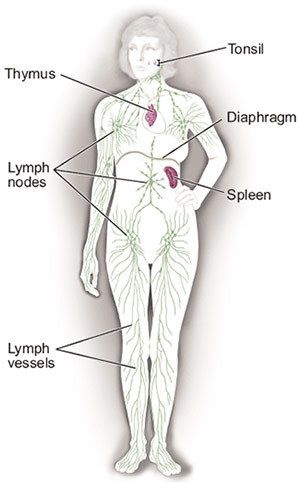
- lutes:
- वीणा; a plucked string instrument with a rounded body and a neck, commonly used in medieval and Renaissance music.
- The musician played a beautiful melody on the lute. (संगीतकार ने वीणा पर एक सुंदर धुन बजाई।)
- mandalas:
- मंडल; geometric designs, often circular, used in various spiritual and artistic traditions as symbols of the universe, unity, or wholeness.
- The artist created intricate mandalas for meditation and reflection. (कलाकार ने ध्यान और आत्म-विश्लेषण के लिए जटिल मंडल बनाए।)
- आध्यात्मिक चित्र; elaborate and symmetrical diagrams used in Hinduism and Buddhism for rituals and meditation.
- In the temple, the monks arranged colorful mandalas on the floor as part of their ritual. (मंदिर में, भिक्षुओं ने अपने अनुष्ठान का हिस्सा बनाते हुए रंगीन मंडल फर्श पर सजाए।)
- 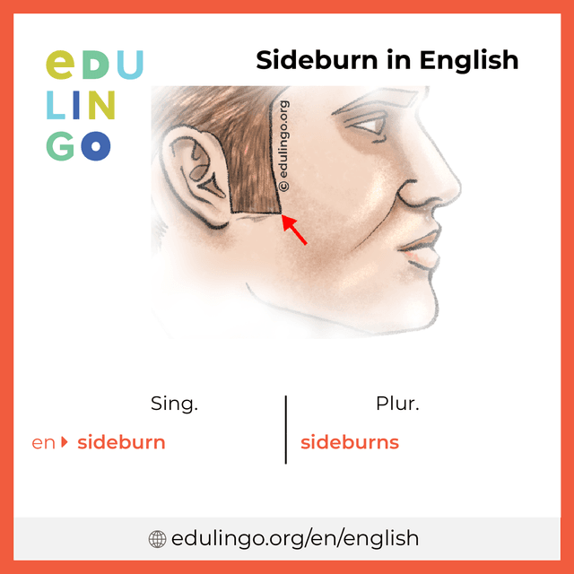
- psychosomatic:
- मानसिक और शारीरिक; relating to physical symptoms that are caused or aggravated by mental or emotional factors.
- Her headaches were identified as psychosomatic, linked to her high stress levels. (उसके सिरदर्द को मानसिक और शारीरिक कारणों से जोड़ा गया, जो उसके उच्च तनाव स्तर से संबंधित था।)
- मानसिक प्रभाव; describing a condition where mental or emotional issues manifest as physical symptoms.
- The doctor explained that psychosomatic disorders can sometimes be as debilitating as physical illnesses. (डॉक्टर ने बताया कि मानसिक और शारीरिक विकार कभी-कभी शारीरिक बीमारियों जितने ही कष्टदायक हो सकते हैं।)
- occipital:
- पिछला सिर; relating to the back part of the head or the occipital lobe of the brain.
- The occipital region of the brain is responsible for visual processing. (मस्तिष्क का पिछला सिर हिस्सा दृश्य प्रसंस्करण के लिए जिम्मेदार है।)
- मस्तिष्क का हिस्सा; pertaining to the area at the base of the skull where the occipital bone is located.
- She felt pain in the occipital area of her head after the accident. (दुर्घटना के बाद उसने अपने सिर के पिछला सिर हिस्से में दर्द महसूस किया।)
- parieto-occipital:
- सिर के पीछे और ऊपर का हिस्सा; involving both the parietal lobe (top of the head) and the occipital lobe (back of the head).
- The parieto-occipital region plays a role in integrating visual and spatial information. (पारियेटल-ऑक्सिपिटल क्षेत्र दृश्य और स्थानिक जानकारी को एकीकृत करने में भूमिका निभाता है।)
- Damage to the parieto-occipital area can affect perception and coordination. (पारियेटल-ऑक्सिपिटल क्षेत्र को नुकसान से धारणा और समन्वय पर असर पड़ सकता है।)
- cortices:
- मस्तिष्क की बाहरी परतें; the outer layers of the brain, particularly the cerebral cortex, involved in various higher brain functions such as sensory perception, cognition, and motor control.
- The cerebral cortices are responsible for processing complex thoughts and actions. (मस्तिष्क की बाहरी परतें जटिल विचारों और क्रियाओं को संसाधित करने के लिए जिम्मेदार हैं।)
- गोलक; the outer layers or coverings of any organ or structure, particularly in the brain and kidneys.
- The cortices of the kidneys play a vital role in filtering blood and producing urine. (गुर्दों की बाहरी परतें रक्त को फ़िल्टर करने और मूत्र बनाने में महत्वपूर्ण भूमिका निभाती हैं।)
- Limbic system:
- लिम्बिक प्रणाली; a complex set of structures in the brain involved in regulating emotions, memory, and behavior.
- The limbic system helps control emotions like fear and pleasure. (लिम्बिक प्रणाली भय और आनंद जैसी भावनाओं को नियंत्रित करने में मदद करती है।)
- मस्तिष्क की भावनात्मक प्रणाली; the part of the brain that supports functions such as emotion, motivation, and long-term memory.
- Damage to the limbic system can affect a person's ability to form new memories. (लिम्बिक प्रणाली को नुकसान व्यक्ति की नई यादें बनाने की क्षमता को प्रभावित कर सकता है।)
- dollop:
- चम्मच भर; a small, shapeless portion of a soft food item, often spooned or dropped onto something.
- She added a dollop of whipped cream to her dessert. (उसने अपनी मिठाई में चम्मच भर क्रीम डाला।)
- थोड़ा सा; a small amount or portion of something.
- He put a dollop of ketchup on his fries. (उसने अपनी फ्राइज़ पर थोड़ा सा केचप डाला।)
- wading:
- पानी में चलते हुए जाना; walking through water or another substance that impedes movement.
- They were wading through the shallow river to reach the other side. (वे दूसरी तरफ पहुंचने के लिए उथली नदी में चलते हुए जा रहे थे।)
- संघर्ष करके आगे बढ़ना; to make one’s way through something that is difficult or requires effort.
- He was wading through piles of paperwork at the office. (वह कार्यालय में कागजी कार्य के ढेर से संघर्ष करके आगे बढ़ रहा था।)
Impede:
- बाधा डालना; To obstruct or slow down the progress of something.
- Heavy traffic impedes the delivery of goods in the city. (भारी ट्रैफिक शहर में सामान की डिलीवरी में बाधा डालता है।)
- रोकना; To hinder or prevent from moving forward.
- A lack of resources can impede the success of a project. (संसाधनों की कमी किसी प्रोजेक्ट की सफलता को रोक सकती है।)
- amygdala (plural: amygdala):
- अमिगडला; two almond-shaped clusters of nuclei located deep within the temporal lobes of the brain, involved in processing emotions such as fear, pleasure, and aggression.
- The amygdalae play a crucial role in the body's fight-or-flight response. (अमिगडला शरीर की संघर्ष या पलायन प्रतिक्रिया में महत्वपूर्ण भूमिका निभाते हैं।)
- भावनात्मक मस्तिष्क केंद्र; brain structures that are key to emotional regulation and memory formation.
- Damage to the amygdalae can affect how emotions are processed and experienced. (अमिगडला को नुकसान से भावनाओं को संसाधित और अनुभव करने की प्रक्रिया प्रभावित हो सकती है।)
- 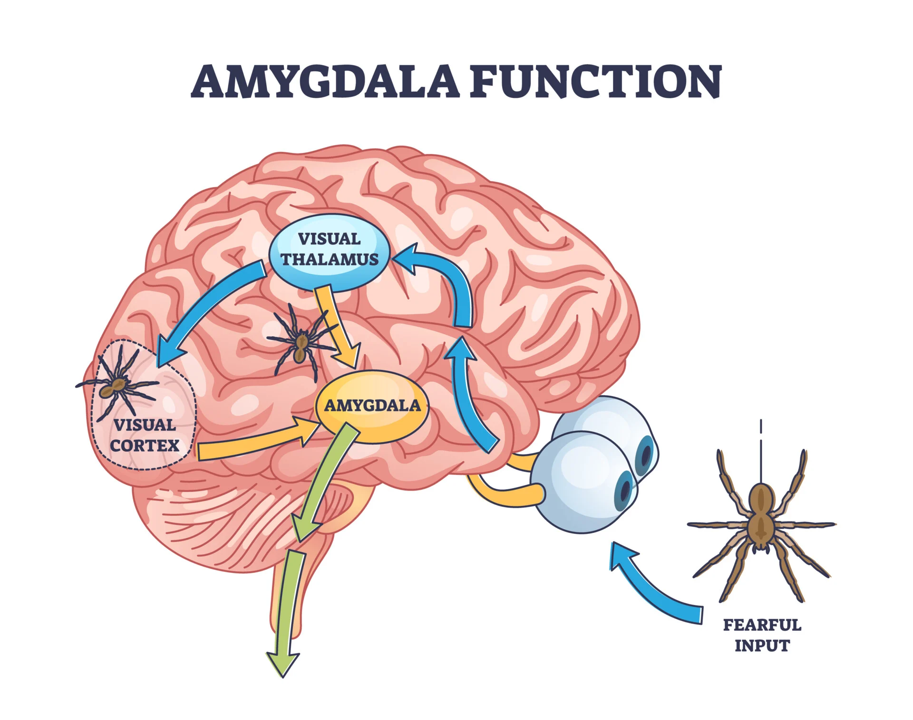 (image source)
- Temporal lobes:
- टेम्पोरल लोब्स; the regions of the brain located on the sides, beneath the lateral fissure, involved in processing auditory information and memory.
- The temporal lobes are essential for understanding spoken language and remembering past events. (टेम्पोरल लोब्स बोली गई भाषा को समझने और पूर्व की घटनाओं को याद रखने के लिए आवश्यक हैं।)
- कान की ओर का मस्तिष्क क्षेत्र; areas of the brain that are responsible for interpreting sounds and managing complex visual processing.
- Damage to the temporal lobes can result in difficulties with hearing and memory. (टेम्पोरल लोब्स को नुकसान सुनने और याददाश्त में कठिनाइयाँ पैदा कर सकता है।)
Lateral:
- Foresee:
- पूर्वानुमान करना; to predict or anticipate something that will happen in the future.
- She could foresee the challenges they would face in the new project. (उसने नए प्रोजेक्ट में वे जो चुनौतियाँ सामना करेंगे, उसका पूर्वानुमान कर लिया था।)
- भविष्यवाणी करना; to have an awareness or sense of future events or outcomes.
- He failed to foresee the impact of his decision on the team. (उसने अपनी निर्णय का टीम पर प्रभाव पूर्वानुमानित नहीं किया।)
- Precarious:
- अस्थिर; not securely held or in position, likely to fall or collapse.
- The ladder was in a precarious position, and he was careful not to move too much. (सीढ़ी अस्थिर स्थिति में थी, और वह बहुत अधिक हिलने से बच रहा था।)
- खतरनाक; dependent on chance or uncertain conditions, involving risk.
- Her financial situation was precarious due to the unstable job market. (अस्थिर नौकरी बाजार के कारण उसकी वित्तीय स्थिति खतरनाक थी।)
- Battered:
- पीटा हुआ; having sustained damage or wear, often from physical force or harsh conditions.
- The old car was battered from years of rough driving. (पुरानी कार वर्षों की कठोर ड्राइविंग के कारण पीटी हुई थी।)
- संसार से कठिनाइयों का सामना किया; experiencing repeated hardship or mistreatment.
- She felt emotionally battered after the intense arguments. (तीव्र तर्कों के बाद वह भावनात्मक रूप से पीटी हुई महसूस कर रही थी।)
- Debris:
- मलबा; scattered fragments or remains of something that has been destroyed or broken.
- The storm left debris scattered across the neighborhood. (तूफान ने पड़ोस में मलबा बिखेर दिया।)
- कचरा; discarded or leftover materials from construction, demolition, or natural disasters.
- Workers began clearing the debris from the construction site. (कर्मचारी निर्माण स्थल से कचरा हटाने लगे।)
- Dusted:
- धूल झाड़ना; to remove dust from a surface by wiping or brushing.
- She dusted the shelves to keep the house clean. (उसने घर को साफ रखने के लिए शेल्व्स से धूल झाड़ दी।)
- धूल से ढका हुआ; covered with a light layer of dust.
- The old books were covered in a thick layer of dust. (पुरानी किताबें एक मोटी धूल की परत से ढकी हुई थी।)
- Anorexia:
- एनोरेक्सिया; a serious mental health condition characterized by an intense fear of gaining weight and a distorted body image, leading to restrictive eating and severe weight loss.
- She was diagnosed with anorexia after significant weight loss and unhealthy eating habits. (महत्वपूर्ण वजन घटाने और अस्वस्थ खाने की आदतों के बाद उसे एनोरेक्सिया का निदान किया गया।)
- भ्रांतिदृष्टि; an eating disorder where individuals perceive themselves as overweight despite being underweight.
- Anorexia often involves compulsive behaviors around food and body image. (एनोरेक्सिया अक्सर खाद्य और शरीर की छवि के चारों ओर मजबूरकारी व्यवहार को शामिल करता है।)
- Agoraphobia:
- अगरीफोबिया; an anxiety disorder characterized by an intense fear of situations where escape might be difficult or help might not be available, leading to avoidance of places like open spaces or crowded areas.
- She struggled with agoraphobia, making it difficult for her to leave her house. (वह अगोराफोबिया से जूझ रही थी, जिससे उसके लिए घर छोड़ना कठिन हो गया था।)
- खुली जगहों का डर; fear of being in situations or places from which escape might be hard, often resulting in staying indoors or avoiding public places.
- Agoraphobia can severely limit a person's ability to engage in everyday activities. (अगोराफोबिया एक व्यक्ति की सामान्य गतिविधियों में शामिल होने की क्षमता को गंभीर रूप से सीमित कर सकता है।)
- Excrement:
- मल; waste matter discharged from the body through the digestive system.
- The garden had to be cleaned of animal excrement. (बग़ीचे को जानवरों के मल से साफ करना पड़ा।)
- पेशाब; solid waste that is expelled from the intestines.
- Proper disposal of excrement is important for hygiene and sanitation. (स्वच्छता और सफाई के लिए मल का सही निपटान महत्वपूर्ण है।)
- Slithering:
- सरकते हुए चलना; moving smoothly and quietly, often like a snake or a similar creature.
- The snake was slithering through the grass. (सांप घास के बीच सरकते हुए चल रहा था।)
- चुपके से चलना; moving in a way that is stealthy or gliding smoothly.
- The cat was slithering along the edge of the fence to avoid being seen. (बिल्ली fence के किनारे चुपके से चल रही थी ताकि उसे देखा न जा सके।)
- chemoreceptors:
- रासायनिक ग्रहक; specialized sensory receptors that respond to chemical stimuli in the environment or within the body, such as detecting changes in blood chemistry or sensing taste and smell.
- Chemoreceptors in the nose allow us to detect different odors. (नाक में रासायनिक ग्रहक हमें विभिन्न गंधों को पहचानने में सक्षम बनाते हैं।)
- रसायनों के प्रति संवेदनशील तंत्र; receptors that sense changes in the chemical composition of blood, like oxygen and carbon dioxide levels.
- The chemoreceptors in the carotid arteries monitor blood oxygen levels and trigger breathing adjustments. (गर्दन की धमनियों में रासायनिक ग्रहक रक्त में ऑक्सीजन स्तर की निगरानी करते हैं और श्वास में समायोजन को प्रेरित करते हैं।)
- plastic:
- प्लास्टिक; a synthetic material made from a wide range of organic polymers that can be molded into shape while soft and then set into a rigid or slightly elastic form.
- She used plastic containers to store leftovers in the fridge. (उसने बचे हुए खाने को फ्रिज में रखने के लिए प्लास्टिक के कंटेनरों का इस्तेमाल किया।)
- लचीला; something that can be easily shaped or molded.
- The artist preferred using a plastic medium for her sculptures because it was easy to manipulate. (कलाकार अपनी मूर्तियों के लिए लचीले माध्यम का उपयोग करना पसंद करती थी क्योंकि इसे आसानी से आकार दिया जा सकता था।)
- बदलने योग्य; describing something that is adaptable or capable of being shaped or influenced.
- The brain is considered plastic, meaning it can reorganize itself by forming new connections. (मस्तिष्क को लचीला माना जाता है, जिसका मतलब है कि यह नए कनेक्शन बनाकर खुद को पुनर्गठित कर सकता है।)
- muster:
- इकट्ठा करना; to gather or assemble, especially for inspection, preparation, or battle.
- The soldiers were mustered in the courtyard for inspection. (सैनिकों को निरीक्षण के लिए प्रांगण में इकट्ठा किया गया।)
- हिम्मत जुटाना; to summon up a particular quality, such as courage, effort, or strength.
- She mustered all her courage to confront the challenge. (उसने चुनौती का सामना करने के लिए अपनी सारी हिम्मत जुटाई।)
- Perspire:
- पसीना आना; to sweat, especially as a result of heat, physical exertion, or stress.
- He began to perspire after running in the hot sun. (गर्म धूप में दौड़ने के बाद उसे पसीना आने लगा।)
- शरीर से पसीना निकालना; the process of releasing sweat from the body's sweat glands.
- She could feel herself perspire during the intense workout. (कड़ी कसरत के दौरान वह अपने शरीर से पसीना निकलता महसूस कर सकती थी।)
- Trance:
- मंत्रमुग्ध अवस्था; a state of being deeply absorbed or focused, often to the point of being unaware of the surroundings.
- He was in a trance while listening to the soothing music. (वह मधुर संगीत सुनते समय मंत्रमुग्ध अवस्था में था।)
- अचेतन अवस्था; a semi-conscious state, often induced by hypnosis, meditation, or intense concentration.
- The hypnotist put her into a deep trance to help her relax. (हिप्नोटिस्ट ने उसे आराम करने के लिए गहरी अचेतन अवस्था में डाल दिया।)
- Adage:
- सूक्ति; a traditional saying or proverb that expresses a general truth or wisdom.
- "Actions speak louder than words" is a common adage. ("कर्म शब्दों से अधिक बोलते हैं" एक सामान्य सूक्ति है।)
- लोकवाक्य; a short, memorable phrase that conveys an important idea or lesson.
- The old adage "practice makes perfect" is often repeated by teachers. (पुरानी सूक्ति "अभ्यास से सिद्धि होती है" अक्सर शिक्षकों द्वारा दोहराई जाती है।)
- Conscious:
- सचेत; being aware of and able to perceive or respond to one's surroundings.
- She was fully conscious during the entire surgery. (वह पूरे ऑपरेशन के दौरान पूरी तरह सचेत थी।)
- जागरूक; having knowledge or awareness of something, especially something important.
- He was conscious of the impact his words could have on others. (वह अपने शब्दों का दूसरों पर पड़ने वाले प्रभाव के प्रति जागरूक था।)
- Rumpled:
- कुचला हुआ; wrinkled or creased, often in reference to clothing or fabric.
- His shirt was rumpled after a long day at work. (काम के लंबे दिन के बाद उसकी शर्ट कुचली हुई थी।)
- अस्त-व्यस्त; messy or disheveled in appearance.
- She had a rumpled look as if she had just woken up. (वह ऐसी दिख रही थी जैसे वह अभी-अभी जागी हो, अस्त-व्यस्त लग रही थी।)
- Paisley:
- पैस्ले; a distinctive, intricate883 pattern featuring curved, teardrop-shaped figures, often used in textiles and fabrics.
- She wore a beautiful scarf with a paisley design. (उसने पैस्ले डिजाइन वाला एक सुंदर दुपट्टा पहना था।)
- लहरदार डिजाइन; a decorative pattern that originated in Persia, popular in fashion and home decor.
- The curtains in the living room had a vibrant paisley pattern. (लिविंग रूम के पर्दों में एक जीवंत पैस्ले पैटर्न था।)
- 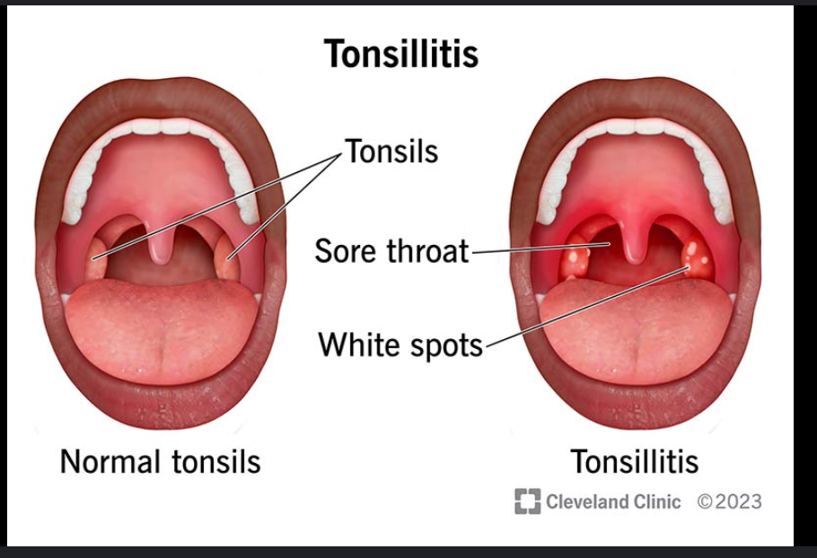
- Doublewide Desk:
- डबलवाइड डेस्क; a desk that is wider than a standard desk, typically providing more surface area for working, often used in home offices or workplaces that require extra space for multiple monitors, paperwork, or equipment.
- She bought a doublewide desk to accommodate her dual monitor setup and extra workspace. (उसने अपने दोहरी मॉनिटर सेटअप और अतिरिक्त कार्यक्षेत्र के लिए एक डबलवाइड डेस्क खरीदी।)
- दोहरी चौड़ाई वाला डेस्क; a larger-than-normal desk designed for enhanced comfort and productivity.
- The doublewide desk was perfect for spreading out all the project materials. (डबलवाइड डेस्क सभी प्रोजेक्ट सामग्री को फैलाने के लिए एकदम सही था।)
- Intricate:
- जटिल; having many complex and detailed elements or parts, often difficult to understand or solve.
- The artist created an intricate design on the pottery. (कलाकार ने मिट्टी के बर्तन पर जटिल डिज़ाइन बनाया।)
- सूक्ष्म; finely detailed and elaborate in structure.
- The intricate pattern of the fabric amazed everyone. (कपड़े का सूक्ष्म पैटर्न सभी को हैरान कर गया।)
- Neuropsychologist:
- न्यूरोpsychologist; a specialist who studies the relationship between brain function and behavior, focusing on how neurological conditions affect cognitive processes and mental functions.
- The neuropsychologist conducted assessments to determine how the brain injury impacted cognitive abilities. (न्यूरोpsychologist ने यह निर्धारित करने के लिए आकलन किए कि मस्तिष्क की चोट ने संज्ञानात्मक क्षमताओं को कैसे प्रभावित किया।)
- मस्तिष्क और व्यवहार के बीच संबंध का विशेषज्ञ; a professional who evaluates and treats cognitive and emotional disorders resulting from brain injuries or diseases.
- Her work as a neuropsychologist involved helping patients recover cognitive functions lost due to trauma. (एक न्यूरोpsychologist के रूप में उनका काम उन मरीजों की मदद करना था जिनकी ट्रॉमा के कारण संज्ञानात्मक क्षमताएँ खो गई थीं।)
- — (duplicate, refer word - 825)
- Thermal:
- ऊष्मीय; relating to heat or temperature, often used to describe materials or processes involving heat.
- He wore a thermal jacket to stay warm in the cold weather. (ठंडे मौसम में गर्म रहने के लिए उसने ऊष्मीय जैकेट पहनी।)
- तापीय; associated with or caused by heat, especially in scientific or industrial contexts.
- The thermal energy from the sun is harnessed to produce electricity. (सूर्य से आने वाली तापीय ऊर्जा का उपयोग बिजली उत्पादन के लिए किया जाता है।)
- Thermal Baths:
- ऊष्मीय स्नान; natural hot springs or pools filled with mineral-rich, heated water, often used for relaxation and therapeutic purposes.
- The ancient Romans were known for their thermal baths, which they believed had healing properties. (प्राचीन रोमन अपने ऊष्मीय स्नानों के लिए प्रसिद्ध थे, जिन्हें वे उपचारात्मक मानते थे।)
- तापीय स्नान स्थल; spa-like locations where people can bathe in naturally heated water, commonly found in volcanic or geothermal regions.
- They visited the thermal baths in Iceland to experience the soothing effects of the hot springs. (उन्होंने आइसलैंड के ऊष्मीय स्नानों का अनुभव करने के लिए वहाँ की यात्रा की।)
- Gout:
- गठिया; a type of arthritis characterized by sudden, severe attacks of pain, redness, and swelling in the joints, often caused by an excess of uric acid in the blood.
- He suffered from gout, which caused intense pain in his big toe. (वह गठिया से पीड़ित था, जिससे उसके बड़े पैर के अंगूठे में तीव्र दर्द हुआ।)
- यूरिक एसिड से जुड़ी बीमारी; a condition resulting from the buildup of uric acid crystals in the joints, leading to inflammation and discomfort.
- The doctor prescribed medication to manage his gout symptoms. (डॉक्टर ने उसकी गठिया के लक्षणों को नियंत्रित करने के लिए दवा दी।)
- Alps:
- आल्प्स, यूरोप की प्रसिद्ध पर्वतमाला;
- a major mountain range in Europe, stretching across several countries including France, Switzerland, Italy, Austria, and Germany, known for its scenic beauty and popular as a destination for skiing, hiking, and mountaineering.
- a well-known mountain range famous for its towering peaks, including Mont Blanc, and its role in both historical and modern cultural contexts
- Sentence Example:
- They planned a vacation in the Alps to enjoy the stunning mountain views and winter sports. (उन्होंने आल्प्स में छुट्टियों की योजना बनाई ताकि वे खूबसूरत पहाड़ी दृश्यों और शीतकालीन खेलों का आनंद ले सकें।)
- The Alps are a popular destination for outdoor enthusiasts and nature lovers. (आल्प्स बाहरी गतिविधियों के शौकीनों और प्रकृति प्रेमियों के लिए एक लोकप्रिय गंतव्य हैं।)
- Morbid:
- रुग्ण; relating to or characterized by an unhealthy interest in disturbing or unpleasant subjects, especially death and disease.
- His fascination with crime stories was considered morbid by some of his friends. (अपराध कहानियों के प्रति उसकी रुचि को उसके कुछ दोस्तों ने रुग्ण माना।)
- अस्वस्थ; indicative of mental or physical illness, often suggesting a gloomy891 or unhealthy state.
- She had a morbid fear of heights that kept her from enjoying mountain trips. (उसके पास ऊँचाई का रुग्ण भय था, जिसने उसे पर्वतीय यात्राओं का आनंद लेने से रोका।)
- Gloomy:
- उदास; feeling or showing sadness or depression, often due to a lack of hope or positivity.
- The cloudy weather made the day feel even more gloomy. (बादल भरे मौसम ने दिन को और भी अधिक उदास बना दिया।)
- अंधकारमय; dark or dim in appearance, lacking light or brightness.
- The room was gloomy with only a small window letting in light. (कमरे में केवल एक छोटी खिड़की से प्रकाश आ रहा था, जिससे वह अंधकारमय लग रहा था।)
- निराशाजनक; suggesting a negative or pessimistic outlook.
- The economic forecast seemed gloomy, with little hope for improvement. (आर्थिक पूर्वानुमान निराशाजनक लग रहा था, जिसमें सुधार की बहुत कम उम्मीद थी।)
- Stateside:
- अमेरिका की ओर; referring to being in or returning to the United States, particularly from overseas.
- After spending a year abroad, she was excited to be back stateside. (विदेश में एक साल बिताने के बाद, वह अमेरिका लौटने के लिए उत्साहित थी।)
- He missed the comforts of being stateside while stationed overseas. (विदेश में तैनात रहते हुए, वह अमेरिका में होने की सुविधाओं को याद करता था।)
- USA: United States of America; संयुक्त राज्य अमेरिका
- Pneumonia:
- फेफड़ों का संक्रमण (निमोनिया); an infection that inflames the air sacs in one or both lungs, which may fill with fluid or pus, causing symptoms like cough, fever, chills, and difficulty breathing. A serious lung condition often caused by bacteria, viruses, or fungi, leading to breathing difficulties and other health complications.
- She was diagnosed with pneumonia and needed rest and antibiotics to recover. (उसे निमोनिया का निदान हुआ और ठीक होने के लिए उसे आराम और एंटीबायोटिक्स की आवश्यकता थी।)
- Pneumonia can be especially dangerous for the elderly and those with weakened immune systems. (निमोनिया बुजुर्गों और कमजोर प्रतिरक्षा प्रणाली वाले लोगों के लिए विशेष रूप से खतरनाक हो सकता है।)
- Etymology of Pneumonia:
The word Pneumonia comes from the Greek word "πνεύμον" (pneumon), meaning "lung." It is derived from "πνεῦμα" (pneuma), which means "breath" or "air." The suffix "-ia" is used in medical terminology to denote a condition or disease.
In Latin, "pneumonia" was used to describe inflammation of the lungs. The term entered the English language in the early 18th century, maintaining its medical usage to describe the inflammation or infection of the lungs that causes symptoms like cough, fever, and difficulty breathing.
- Asphyxia:
- श्वासावरोध; a condition where the body is deprived of oxygen, leading to unconsciousness or death if not treated promptly, often caused by choking, drowning, or suffocation.
- The victim suffered from asphyxia due to smoke inhalation during the fire. (आग के दौरान धुएं के कारण पीड़ित को श्वासावरोध हुआ।)
- साँस घुटना; the inability to breathe properly, resulting in a lack of oxygen in the body.
- Asphyxia can occur in various situations, such as during an asthma attack or in a confined space. (साँस घुटना विभिन्न परिस्थितियों में हो सकता है, जैसे अस्थमा के दौरे के दौरान या एक संकरे स्थान में।)
- Etymology of Asphyxia:
The word Asphyxia originates from the Greek word "ἀσφυξία" (asphyxía), which means "stopping of the pulse." The term is derived from the prefix "ἀ-" (a-), meaning "without," and "σφυγμός" (sphyxmos), meaning "pulse" or "throbbing." Over time, it evolved to describe a condition where there is an insufficient supply of oxygen to the body, leading to unconsciousness or death.
The word entered the English language in the late 17th century, where it initially referred to the stopping of the pulse and later came to describe suffocation or oxygen deprivation.
This etymological background highlights the term's connection to the ancient understanding of life processes, particularly the importance of the pulse as a vital sign.
- Epilepsy:
- मिर्गी; a neurological disorder characterized by recurrent seizures or convulsions, which result from abnormal electrical activity in the brain.
- She takes medication daily to manage her epilepsy and prevent seizures. (वह अपनी मिर्गी को नियंत्रित करने और दौरे रोकने के लिए रोजाना दवा लेती है।)
- दौरे की बीमारी; a condition involving chronic, unpredictable seizures, which may vary in frequency and intensity.
- Epilepsy can be challenging to manage, but with the right treatment, many people lead normal lives. (मिर्गी को प्रबंधित करना चुनौतीपूर्ण हो सकता है, लेकिन सही उपचार के साथ, कई लोग सामान्य जीवन जीते हैं।)
- Is epilepsy and chronic epilepsy the same thing?
Epilepsy and chronic epilepsy are related but not exactly the same.
Epilepsy is a neurological disorder characterized by recurrent, unprovoked seizures. It can be diagnosed when a person has two or more seizures that were not caused by a temporary, reversible medical condition.
Chronic epilepsy refers to a long-term or persistent form of epilepsy where seizures are ongoing and frequent. The term "chronic" emphasizes the long-lasting nature of the condition, indicating that the individual has persistent seizures despite treatment.
So, while all chronic epilepsy is epilepsy, not all cases of epilepsy are necessarily chronic. Some people may have a few isolated seizures or achieve seizure control with treatment, not reaching the point of chronicity.
- schizophrenia: Schizophrenia:
- स्किज़ोफ्रेनिया; a severe mental disorder characterized by distorted thinking, hallucinations, delusions, and impaired functioning, which affects how a person thinks, feels, and behaves.
- He was diagnosed with schizophrenia and received treatment to manage his symptoms. (उसे स्किज़ोफ्रेनिया का निदान हुआ और उसके लक्षणों को प्रबंधित करने के लिए इलाज मिला।)
- मनोविकार (Chronic Schizophrenia); a chronic condition involving a range of symptoms such as disorganized speech, difficulty in daily functioning, and emotional flatness. NOTE: Chronic schizophrenia is a type of schizophrenia that rarely improves, while schizophrenia can also have acute periods with worsening symptoms.
- Managing schizophrenia often requires a combination of medication and therapy. (स्किज़ोफ्रेनिया का प्रबंधन अक्सर दवा और चिकित्सा के संयोजन की आवश्यकता होती है।)
- psychoses:
- मनोविकृति; a mental disorder in which a person loses contact with reality, often experiencing delusions, hallucinations, and impaired thinking.
- People suffering from psychoses may have difficulty distinguishing between what is real and what is not. (मनोविकृति से पीड़ित लोगों को यह पहचानने में कठिनाई हो सकती है कि क्या वास्तविक है और क्या नहीं।)
- मनोविकार; a condition where normal functioning is disrupted due to severe mental disturbances, leading to altered perceptions and behaviors.
- Psychoses can be a symptom of disorders like schizophrenia and bipolar disorder. (मनोविकार स्किज़ोफ्रेनिया और बाइपोलर डिसऑर्डर जैसे विकारों का लक्षण हो सकता है।)
- Are Psychoses and Psychosis same?
Psychoses and psychosis are related terms but differ in number and scope.
- Psychosis: मनोविकृति; severe mental disorder in which a person loses contact with reality.
- The patient was diagnosed with psychosis.
(मरीज को मनोविकृति का निदान किया गया।)
- Psychoses: मनोविकार; plural form of psychosis, referring to multiple instances or types of severe mental disorders.
- The doctor specialized in treating various psychoses.
(डॉक्टर विभिन्न मनोविकारों का इलाज करने में विशेषज्ञ थे।)
- Is condition and disorder the same thing in medical terms? (900)
In medical terms, "condition" and "disorder" are related but not exactly the same.
Condition: This is a broad term that refers to any state of health, whether it's a disease, illness, or a specific state of well-being. It can encompass a wide range of health issues, including both acute and chronic ailments. For example, a "heart condition" might refer to a variety of heart-related issues.
Disorder: This term is often used to describe a more specific type of condition, particularly one involving a disruption in normal function or structure. It usually implies a dysfunction in a particular organ or system. For example, "bipolar disorder" is a mental health condition characterized by significant mood swings.
In summary, while all disorders are conditions, not all conditions are necessarily referred to as disorders.
- Hypersensitized:
- अधिक संवेदनशील; excessively sensitive or reactive to stimuli or emotional triggers, often leading to heightened responses or discomfort.
- After the traumatic event, she felt hypersensitized to loud noises and sudden movements. (आघातकारी घटना के बाद, उसने तेज आवाजों और अचानक आंदोलनों के प्रति अत्यधिक संवेदनशील महसूस किया।)
- अति-संवेदनशीलता; an increased sensitivity to certain stimuli or situations, resulting in an exaggerated response.
- His hypersensitized state made him prone to emotional outbursts. (उसकी अति-संवेदनशील स्थिति ने उसे भावनात्मक उफान की प्रवृत्ति दी।)
- Labyrinth:
- भूलभुलैया; a complex and intricate maze or network of pathways, often designed to be confusing and difficult to navigate.
- The ancient labyrinth was said to be so complicated that no one could find their way out. (प्राचीन भूलभुलैया इतनी जटिल मानी जाती थी कि कोई भी बाहर का रास्ता नहीं खोज सकता था।)
- जटिल प्रणाली; a confusing and intricate structure or system, often used metaphorically to describe complex situations or problems.
- The bureaucratic processes felt like a labyrinth to those unfamiliar with the system. (ब्यूरोक्रेटिक प्रक्रियाएँ उन लोगों के लिए भूलभुलैया जैसी लगती थीं जो सिस्टम से अपरिचित थे।)
- Lair:
- गुफा; a hidden or secluded place where a wild animal, especially a predator, lives or hides.
- The lion retreated to its lair after a long day of hunting. (शिकार के लंबे दिन के बाद शेर अपने गुफा में लौट गया।)
- अड्डा; a secret or private place used by people, often for illicit activities or to escape from others.
- The gang used the abandoned warehouse as their lair. (गैंग ने परित्यक्त गोदाम को अपने अड्डे के रूप में इस्तेमाल किया।)
- Beat-up:
- चोटिल; physically damaged or worn out due to repeated use or abuse.
- He drove an old, beat-up car that had seen better days. (उसके पास एक पुराना, चोटिल कार था जो बेहतर दिनों को देख चुका था।)
- पिटा हुआ; bruised or battered, often used to describe a person who has been physically attacked or is in poor condition.
- After the fight, he looked beat-up with bruises and cuts all over his body. (लड़ाई के बाद, वह पूरी तरह से चोटिल दिख रहा था, उसके शरीर पर खरोंचें और नीले धब्बे थे।)
- Sans:
- बिना; without or lacking something.
- The report was submitted sans the necessary attachments. (रिपोर्ट बिना आवश्यक अटैचमेंट्स के प्रस्तुत की गई।)
- रहित; used in a formal or literary context to indicate the absence of something.
- She attended the meeting sans her usual enthusiasm. (उसने अपनी सामान्य उत्साही भावना के बिना बैठक में भाग लिया।)
- Serif:
- शिरोविवरण; a small decorative line or stroke regularly added to the end of a letter's main strokes in a typeface.
- Serif fonts are often used in printed materials for their classic and formal appearance. (शिरोविवरण वाले फॉन्ट अक्सर उनके क्लासिक और औपचारिक रूप के लिए मुद्रित सामग्री में उपयोग किए जाते हैं।)
- Velcro: वेल्क्रो; a fastening material consisting of two strips of fabric—one with tiny hooks and the other with loops—that stick together when pressed.
- She used Velcro to fasten her shoes quickly. (उसने अपने जूतों को जल्दी से बांधने के लिए वेल्क्रो का इस्तेमाल किया।)
- The Velcro on his backpack made it easy to open and close the pockets. (उसके बैग पर वेल्क्रो ने जेबों को खोलने और बंद करने में आसानी कर दी।)

- Cuticles:
- नखचूड़ी (नाखून के आसपास की त्वचा); the thin layer of skin at the base of a fingernail or toenail, which protects the area between the skin and the nail from infections.
- She applied oil to her cuticles to keep them moisturized. (उसने अपनी नखचूड़ी को नमीयुक्त रखने के लिए उस पर तेल लगाया।)
- Keeping your cuticles healthy is important for overall nail care. (नाखूनों के आसपास की त्वचा को स्वस्थ रखना नाखूनों की देखभाल के लिए महत्वपूर्ण है।)
- Hovel:
- झुग्गी / झोंपड़ी; a small, poorly built, and often dirty or dilapidated dwelling, typically used to describe a place where people live in poverty.
- The family lived in a hovel at the edge of the town. (परिवार शहर के किनारे एक झोंपड़ी में रहता था।)
- गंदा आश्रय; a run-down, miserable shelter or place of residence, often associated with squalor and discomfort.
- He spent his childhood in a hovel, dreaming of a better life. (उसने अपनी बचपन की जिंदगी एक गंदे आश्रय में बिताई, एक बेहतर जीवन के सपने देखते हुए।)

- Amid:
- के बीच; in the middle of or surrounded by something, often used to describe being in the midst of a situation or environment.
- She found herself amid a crowd of protesters. (वह खुद को प्रदर्शनकारियों की भीड़ के बीच में पाई।)
- के दौरान; during or in the process of something happening, especially in a context of activity or emotion.
- Amid the chaos, he managed to stay calm. (अराजकता के दौरान, वह शांत रहने में सफल रहा।)
- Rubble:
- मलबा; broken pieces of stone, brick, or other materials left after the destruction of a building or structure.
- The earthquake reduced the buildings to rubble. (भूकंप ने इमारतों को मलबे में बदल दिया।)
- ध्वंसावशेष; debris or fragments left behind after something is destroyed, often used to describe the remains of structures after disasters.
- Rescue workers searched through the rubble for survivors. (बचावकर्मियों ने मलबे के बीच बचे लोगों को खोजा।)
- Spaciness:
- अवस्था-विमुखता; a state of being distracted, unfocused, or mentally distant, often feeling disconnected from one's surroundings.
- He couldn't concentrate during the meeting due to his spaciness. (अपनी अवस्था-विमुखता के कारण वह बैठक के दौरान ध्यान केंद्रित नहीं कर सका।)
- ध्यानभंग; a feeling of being absent-minded or not fully present, sometimes associated with daydreaming or fatigue.
- Her spaciness made it difficult for her to follow the conversation. (उसके ध्यानभंग के कारण उसे बातचीत का अनुसरण करना मुश्किल हो गया।)
- Hissing:
- फुफकारना; making a sharp, sibilant sound like that of the letter "s," often associated with snakes or steam escaping under pressure.
- The snake was hissing as it slithered through the grass. (साँप घास के बीच से सरकते हुए फुफकार रहा था।)
- सीटी जैसी आवाज; a continuous, low sound that can be produced by air, gas, or liquid moving through a small opening, or by people expressing disapproval.
- The crowd started hissing in disapproval during the speech. (भाषण के दौरान भीड़ ने असहमति में सीटी जैसी आवाज निकालना शुरू कर दिया।)
- Demeanor:
- व्यवहार; a person's outward behavior, manner, or appearance, which can reflect their attitude or emotional state.
- Her calm demeanor helped soothe the anxious crowd. (उसका शांत व्यवहार चिंतित भीड़ को शांत करने में मददगार था.)
- आचरण; the way someone conducts themselves, including their mannerisms, gestures, and overall presence.
- His professional demeanor made a strong impression during the interview. (उनका पेशेवर आचरण साक्षात्कार के दौरान एक मजबूत छाप छोड़ गया।)
- Strangulation:
- गला घोंटना; the act of compressing the neck to block air and blood flow, often leading to unconsciousness or death.
- The victim showed signs of strangulation, indicating foul play. (पीड़ित के गला घोंटने के संकेत मिले, जो किसी आपराधिक गतिविधि की ओर इशारा करते हैं।)
- दम घुटना; a state where breathing is severely restricted, either physically or metaphorically.
- The tight collar made him feel a sense of strangulation. (तंग कॉलर ने उसे दम घुटने जैसा महसूस कराया।)
- Drowning:
- डूबना; the process of dying by being submerged in water or another liquid, leading to suffocation due to lack of air.
- He was rescued just in time to prevent him from drowning. (उसे डूबने से ठीक पहले समय पर बचा लिया गया।)
- जलमग्न होना; being overwhelmed or submerged, often used metaphorically to describe being engulfed by something.
- She felt like she was drowning in her workload. (उसे ऐसा लगा जैसे वह अपने काम के बोझ में डूब रही थी।)
- Panic:
- घबराहट; a sudden and overwhelming feeling of fear or anxiety, often leading to irrational behavior or actions.
- She felt panic rising as the deadline approached. (जैसे-जैसे समय सीमा करीब आई, उसे घबराहट महसूस होने लगी।)
- अचानक का डर; a sudden, intense fear that can cause a person to act hastily or without thinking.
- The crowd panicked when they heard the loud explosion. (तेज धमाका सुनते ही भीड़ में अचानक का डर फैल गया।)
- Foil Bag:
- फॉइल बैग; a bag made from layers of aluminum foil and plastic, often used for packaging food to keep it fresh and protect it from moisture, light, and air.
- She stored the leftover snacks in a foil bag to keep them crispy. (उसने बचे हुए नाश्ते को ताजा रखने के लिए फॉइल बैग में रखा।)
- धातु पत्र वाला थैला; a pouch made with a metallic layer that provides insulation and preservation, commonly used for perishable items.
- The coffee was sealed in a foil bag to retain its aroma. (कॉफी की खुशबू को बनाए रखने के लिए उसे फॉइल बैग में सील किया गया।)

- Oozes:
- रिसता है; to slowly seep or flow out of something, often used to describe liquids, such as blood, pus, or other substances, leaking from a surface.
- The wound oozes blood after the injury. (चोट के बाद घाव से खून रिसता है।)
- प्रकट होता है; to emit or exude a particular quality or emotion in a gradual or subtle manner.
- He oozes confidence whenever he speaks. (वह जब भी बोलता है, आत्मविश्वास प्रकट होता है।)
- Zinging:
- तीव्र झनझनाहट; a sharp, tingling sensation, often used to describe a quick, stinging feeling, sometimes experienced in the body.
- He felt a zinging sensation in his arm after hitting his funny bone. (अपनी कोहनी मारने के बाद उसे अपने हाथ में तीव्र झनझनाहट महसूस हुई।)
- तेज़ आवाज़ के साथ उड़ना; moving quickly with a whizzing or buzzing sound, often used to describe something that moves rapidly through the air.
- The bee went zinging past her head. (मधुमक्खी उसके सिर के पास से तेज आवाज़ के साथ गुज़री।)
- जोश से भरा होना; being full of energy, enthusiasm, or excitement, often describing a lively atmosphere or mood.
- The room was zinging with lively conversation and laughter. (कमरा जोश और हंसी से भरपूर बातचीत से गूंज रहा था।)
- Innards:
- अंतरभाग; the internal organs or parts of a person, animal, or machine, often used informally to refer to the guts or interior components.
- The butcher cleaned out the innards of the fish before cooking it. (कसाई ने मछली के अंतरभाग को पकाने से पहले साफ किया।)
- भीतरी हिस्से; the internal workings or inner parts of a mechanical device or structure.
- He took apart the machine to inspect its innards. (उसने मशीन के भीतरी हिस्सों की जांच करने के लिए उसे खोला।)
- Bronchioles:
- ब्रोंकियोल; the small air passages in the lungs that branch off from the larger bronchi and lead to the alveoli, where gas exchange occurs.
- The bronchioles are crucial for delivering air to the alveoli. (ब्रोंकियोल्स एयल्वियोली तक हवा पहुंचाने के लिए महत्वपूर्ण हैं।)
- श्वासनलिकाएँ; tiny tubes in the respiratory system that help conduct air from the bronchi to the alveoli.
- Inflammation of the bronchioles can lead to breathing difficulties. (ब्रोंकियोल्स की सूजन श्वास संबंधी कठिनाइयाँ पैदा कर सकती है।)
- 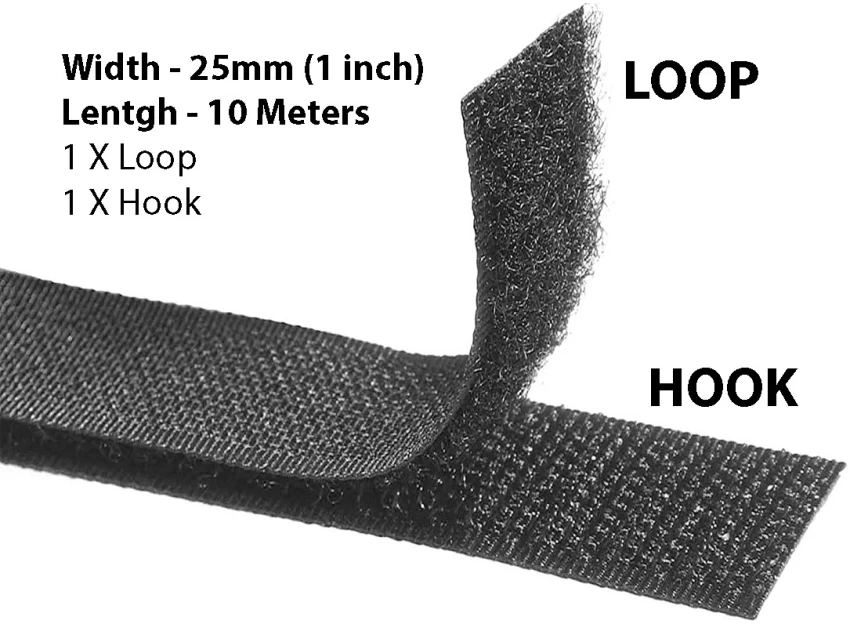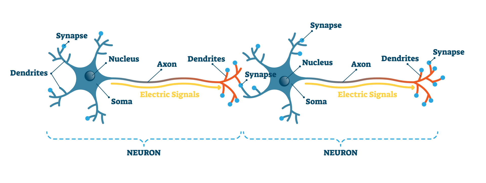

- Alveoli:
- एयल्वियोली; the tiny air sacs in the lungs where oxygen and carbon dioxide are exchanged between the air and the bloodstream.
- Oxygen diffuses through the walls of the alveoli into the blood. (ऑक्सीजन एयल्वियोली की दीवारों के माध्यम से रक्त में प्रवेश करती है।)
- श्वसन पुटक; the small, balloon-like structures at the end of the bronchioles that facilitate gas exchange.
- Damage to the alveoli can impair respiratory function. (एयल्वियोली को नुकसान श्वसन कार्य को प्रभावित कर सकता है।)
- Hypothesized:
- अनुमानित; to propose or suggest an idea or theory based on limited evidence as a starting point for further investigation.
- The scientist hypothesized that the new compound could improve energy efficiency. (वैज्ञानिक ने अनुमानित किया कि नया यौगिक ऊर्जा दक्षता में सुधार कर सकता है।)
- सिद्धांतित; to form a hypothesis or educated guess about something that has not yet been proven or tested.
- Researchers hypothesized that environmental factors contributed to the species' decline. (शोधकर्ताओं ने सिद्धांतित किया कि पर्यावरणीय कारक प्रजातियों की कमी में योगदान देते हैं।)
- Tulsa:
- Tulsa; a city located in the state of Oklahoma, USA, known for its cultural heritage, historic sites, and economic significance.
- Tulsa is famous for its art deco architecture and vibrant music scene. (टुल्सा अपनी आर्ट डेको वास्तुकला और जीवंत संगीत दृश्य के लिए प्रसिद्ध है.)
- Tulsa; a reference to various places or entities named after the city, such as Tulsa University or Tulsa County.
- Tulsa University is known for its strong research programs. (टुल्सा विश्वविद्यालय अपनी मजबूत अनुसंधान कार्यक्रमों के लिए जाना जाता है.)
- Demystify:
- स्पष्टीकरण करना; to make something clearer and easier to understand by removing the mystery or confusion surrounding it.
- The guide was designed to demystify complex scientific concepts for students. (गाइड को छात्रों के लिए जटिल वैज्ञानिक अवधारणाओं को स्पष्ट करने के लिए तैयार किया गया था।)
- रहस्य हटाना; to simplify or explain something that was previously obscure or difficult to grasp.
- The lecture aimed to demystify the process of machine learning. (व्याख्यान का उद्देश्य मशीन लर्निंग की प्रक्रिया को सरल बनाना था।)
- Flex:
- लचीलापन; to bend or stretch something, especially the muscles or a flexible material, often to show strength or flexibility.
- He flexed his muscles to impress his friends. (उसने अपने दोस्तों को प्रभावित करने के लिए अपने मांसपेशियों को लचाया।)
- ताने देना; to show off or boast, often used informally to describe displaying something in a proud or ostentatious manner.
- She flexed her new car on social media. (उसने सोशल मीडिया पर अपनी नई कार का प्रदर्शन किया।)
- संवहन; to adjust or adapt, particularly in a flexible or adjustable manner.
- The company can flex its production capacity to meet changing demands. (कंपनी बदलती मांगों को पूरा करने के लिए अपनी उत्पादन क्षमता को समायोजित कर सकती है।)
- Ripples:
- लहरें; small waves or undulations on the surface of water, typically caused by something disturbing the water.
- The stone created ripples on the calm pond. (पत्थर ने शांत तालाब पर लहरें पैदा कीं।)
- प्रभाव; small, gradual effects or consequences that spread out from an initial event or action.
- The new policy had ripples throughout the organization, affecting many departments. (नई नीति का संगठन में दूरगामी प्रभाव पड़ा, जिससे कई विभाग प्रभावित हुए।)
- Mist:
- कोहरा; a collection of tiny water droplets suspended in the air, often reducing visibility and creating a hazy effect.
- The valley was covered in a thick mist in the early morning. (सुबह के समय घाटी एक घने कोहरे से ढकी हुई थी।)
- स्प्रेकल; a fine spray or light application of liquid, often used for creating a delicate or even layer.
- She used a mist of water to keep the plants hydrated. (उसने पौधों को हाइड्रेटेड रखने के लिए पानी की एक स्प्रेकल का उपयोग किया।)
- Ghastly:
- भयानक; causing great horror or fear, often due to something shocking, gruesome, or terrifying.
- The crime scene was a ghastly sight that left everyone in shock. (अपराध स्थल एक भयानक दृश्य था जिसने सभी को चकित कर दिया।)
- कर्कश; extremely unpleasant or dreadful, often used to describe something that is disturbingly bad.
- She had a ghastly headache after the long day. (लंबे दिन के बाद उसे एक कर्कश सिरदर्द हुआ।)
- Gridlocked:
- सड़क पर फंसे हुए; a situation where traffic is so congested that vehicles are unable to move, creating a standstill.
- The downtown area was gridlocked during the rush hour. (रश घंटे के दौरान डाउनटाउन क्षेत्र ट्रैफिक जाम से फंसा हुआ था।)
- अवरुद्ध; a situation in which progress is halted or obstructed, often used metaphorically to describe situations where no advancement is possible.
- The negotiations were gridlocked, with neither side willing to compromise. (वार्तालाप अवरुद्ध हो गया, किसी भी पक्ष ने समझौता करने को तैयार नहीं था।)
- Rust:
- जंग; a reddish-brown corrosion that forms on iron or steel when it is exposed to moisture and air over time.
- The old bike was covered in rust after being left outside for years. (पुरानी बाइक वर्षों तक बाहर छोड़ दिए जाने के बाद जंग से ढकी हुई थी।)
- क्षति या बुरा होना; a term used metaphorically to describe something that has deteriorated or become less effective due to neglect or lack of use.
- His skills had rusted from not practicing regularly. (नियमित अभ्यास नहीं करने के कारण उसकी क्षमताएँ जंग लग गई थीं।)
- Canyon:
- घाटी; a deep, narrow valley with steep sides, often carved by a river over millions of years.
- The Grand Canyon is one of the most famous canyons in the world. (ग्रैंड कैन्यन दुनिया के सबसे प्रसिद्ध घाटियों में से एक है।)
- दीर्घ और गहरी खाई; a significant natural feature characterized by its depth and width, often found in mountainous or rocky areas.
- The hikers carefully descended into the canyon to explore its depths. (हाइकर्स ने घाटी में गहराई से अन्वेषण के लिए सावधानीपूर्वक प्रवेश किया।)
- Double digits:
- दोहरे अंक; a number consisting of two digits, typically referring to values from 10 to 99.
- Sales increased by double digits this quarter. (इस तिमाही में बिक्री दोहरे अंकों से बढ़ी।)
- दोहरे अंकों में; a range of numbers or figures that exceed single digits, often used to describe significant growth or statistics.
- Her test scores reached double digits, showing marked improvement. (उसके परीक्षण के अंक दोहरे अंकों में पहुंचे, जो उल्लेखनीय सुधार को दर्शाते हैं।)
- Surreal:
- अतियथार्थवादी; something that feels bizarre, dreamlike, or unreal, often creating a sense of disconnection from reality.
- The experience of walking through the deserted city felt surreal. (निर्जन शहर में चलने का अनुभव अतियथार्थवादी लगा।)
- अकल्पनीय; something that is so strange or unusual that it seems impossible or difficult to believe.
- The surreal painting depicted a world where gravity didn't exist. (अकल्पनीय चित्रकला ने एक ऐसी दुनिया को दर्शाया जहाँ गुरुत्वाकर्षण का अस्तित्व नहीं था।)
- Hypersurreal:
- अत्यधिक अतियथार्थवादी; a state or quality that goes beyond typical surrealism, often used to describe something that is intensely or exaggeratedly surreal, to the point of being dreamlike or otherworldly.
- The artist's latest work is hypersurreal, blending reality with vivid, impossible scenes. (कलाकार का नवीनतम काम अत्यधिक अतियथार्थवादी है, जिसमें वास्तविकता को जीवंत, असंभव दृश्यों के साथ मिलाया गया है।)
- अलौकिक और कल्पनातीत; something that feels extraordinarily unreal or fantastical, often creating a disorienting or mind-bending effect.
- The movie had a hypersurreal atmosphere that left the audience in awe. (फिल्म में एक अलौकिक और कल्पनातीत वातावरण था जिसने दर्शकों को स्तब्ध कर दिया।)
- Deprive:
- वंचित करना; to take something away from someone or prevent them from having it, often something essential or desirable.
- The lack of sleep began to deprive him of his energy. (नींद की कमी ने उसे उसकी ऊर्जा से वंचित कर दिया।)
- अधिकार छीनना; to deny someone the possession or use of something they are entitled to.
- The policy could deprive many people of their basic rights. (यह नीति कई लोगों को उनके मौलिक अधिकारों से वंचित कर सकती है।)
- Sub-zero:
- शून्य से नीचे; referring to temperatures that are below zero degrees, typically in the context of freezing or extremely cold conditions.
- The forecast predicted sub-zero temperatures overnight. (पूर्वानुमान ने रात भर शून्य से नीचे तापमान की भविष्यवाणी की थी।)
- अत्यधिक ठंडा; describing something that is extremely cold or conditions that are frigid.
- They ventured out in the sub-zero wind to explore the Arctic. (वे आर्कटिक का अन्वेषण करने के लिए शून्य से नीचे की ठंडी हवा में निकले।)
- Coaxing:
- मनाना; gently persuading or encouraging someone to do something, often using flattery or subtle influence.
- With a bit of coaxing, she finally agreed to join the party. (थोड़ा मनाने पर, वह आखिरकार पार्टी में शामिल होने के लिए तैयार हो गई।)
- धीरे-धीरे समझाना; using soft or persistent efforts to convince or encourage someone to take action.
- The mother was coaxing her child to eat vegetables. (माँ धीरे-धीरे अपने बच्चे को सब्जियाँ खाने के लिए समझा रही थी।)
- Decree:
- आदेश; an official order or decision issued by a legal authority, often used in the context of government or judicial rulings.
- The government issued a decree to enforce the new law. (सरकार ने नए कानून को लागू करने के लिए आदेश जारी किया।)
- फरमान; a formal and authoritative statement or command, often with the force of law behind it.
- The king's decree changed the rules of the land overnight. (राजा के फरमान ने रातों-रात देश के नियमों को बदल दिया।)
- Statespeople:
- राजनीतिक नेता; individuals who hold or have held significant positions of leadership and influence in government or public affairs, often involved in shaping policy and governance.
- The conference was attended by prominent statespeople from around the world. (सम्मेलन में विश्वभर के प्रमुख राजनीतिक नेताओं ने भाग लिया।)
- सार्वजनिक सेवक; public figures who are known for their contributions to statecraft and public service.
- Statespeople often work to balance competing interests for the benefit of the country. (राजनीतिक नेता अक्सर देश के लाभ के लिए विरोधी हितों को संतुलित करने का प्रयास करते हैं।)
- Prana:
- जीवन शक्ति; a concept in Hindu and yogic traditions referring to the vital life force or energy that permeates all living things, often associated with breath and vitality.
- In yoga, prana is believed to flow through the body, sustaining life. (योग में, प्राण को शरीर में प्रवाहित माना जाता है, जो जीवन को बनाए रखता है।)
- Clanking:
- खड़खड़ाना; the loud, metallic noise produced when heavy objects or parts collide or move against each other.
- The old machinery made a clanking sound as it operated. (पुरानी मशीनरी चलने के दौरान खड़खड़ाने की आवाज कर रही थी।)
- धातु की आवाज; a similar noise associated with the movement or handling of metal objects.
- The clanking of chains echoed through the empty warehouse. (सुनसान गोदाम में जंजीरों की खड़खड़ाहट गूंज रही थी।)
- Acupuncture:
- सूई चिकित्सा; a traditional Chinese medical practice involving the insertion of very fine needles into specific points on the body to relieve pain, improve health, and restore balance.
- Acupuncture is often used to treat chronic pain and other conditions. (सूई चिकित्सा को अक्सर दीर्घकालिक दर्द और अन्य बीमारियों के इलाज के लिए उपयोग किया जाता है।)
- पारंपरिक चिकित्सा; a form of alternative medicine that focuses on stimulating certain points on the body to influence physical or mental health.
- Many people find acupuncture to be an effective complementary therapy. (कई लोग पाते हैं कि सूई चिकित्सा एक प्रभावी सहायक चिकित्सा है।)
- Acupressure:
- सुई दबाना; a therapeutic technique involving the application of pressure to specific points on the body, similar to acupuncture but without needles, to relieve pain, reduce stress, and promote healing.
- Acupressure can help alleviate tension and improve circulation. (सुई दबाना तनाव को दूर करने और परिसंचरण में सुधार करने में मदद कर सकता है।)
- अंकित बिंदु पर दबाव; a method of applying physical pressure to acupoints on the body to influence health and wellness, based on traditional Chinese medicine principles.
- Practitioners of acupressure believe that it can help balance the body's energy. (सुई दबाने के चिकित्सक मानते हैं कि यह शरीर की ऊर्जा को संतुलित करने में मदद कर सकता है।)
- Stab:
- छुरा घोंपना; to pierce or wound someone or something with a pointed object, typically a knife or dagger.
- He was attacked and stabbed in the arm. (उसे हमला किया गया और उसकी बाह में छुरा घोंपा गया।)
- धनुष की तीर; a sudden, sharp, or critical action or comment, often metaphorical in nature.
- Her comment was like a stab to his pride. (उसकी टिप्पणी उसके आत्म-सम्मान के लिए एक छुरा घोंपने के समान थी।)
- Drooped:
- झुकना; to bend or sag downward, often due to fatigue, weight, or lack of support.
- The flowers drooped after a long day in the heat. (गर्म मौसम में लंबे दिन के बाद फूल झुक गए।)
- कमजोर होना; to become weaker or less vigorous, often used to describe a decrease in enthusiasm or energy.
- His spirits drooped after hearing the bad news. (बुरी खबर सुनने के बाद उसकी आत्मा कमजोर हो गई।)
- Persuasion:
- प्रेरणा; the act of convincing someone to believe or do something through argument, reasoning, or appeal.
- Her skill in persuasion helped her win the debate. (उसकी प्रेरणा में निपुणता ने उसे बहस जीतने में मदद की।)
- उपदेश; the influence or power to sway someone’s thoughts or actions, often through emotional or logical appeals.
- The advertisement was designed to appeal to the viewer’s sense of persuasion. (विज्ञापन को दर्शक की प्रेरणा की भावना को आकर्षित करने के लिए डिज़ाइन किया गया था।)
- Luminaries:
- प्रकाशमान; people who are highly influential, prominent, or distinguished in a particular field or profession, often seen as leaders or experts.
- The conference was attended by several luminaries in the field of science. (सम्मेलन में विज्ञान के क्षेत्र में कई प्रमुख व्यक्तित्व शामिल हुए।)
- प्रकाश के स्रोत; objects or entities that emit light, often used metaphorically to describe notable individuals who shed light or provide guidance in their field.
- The luminaries of the art world gathered for the exhibition. (कला की दुनिया के प्रमुख व्यक्तित्व प्रदर्शनी के लिए एकत्र हुए।)
- Comatose:(950)
- कोमा में; in a state of deep unconsciousness where a person cannot be awakened and shows no response to stimuli, often due to severe illness or injury.
- After the accident, he remained comatose for several weeks. (दुर्घटना के बाद, वह कई हफ्तों तक कोमा में रहा।)
- निष्क्रिय; extremely inactive or unresponsive, metaphorically used to describe someone who is very passive or unengaged.
- The meeting was so boring that he felt comatose. (बैठक इतनी उबाऊ थी कि उसे निष्क्रिय महसूस हुआ।)
- Is coma and comatose the same thing? No, "coma" and "comatose" are related but not exactly the same thing.
- Coma (कोमा): A state of prolonged unconsciousness where a person is unresponsive to external stimuli and cannot be awakened. It is a serious medical condition that can be caused by various factors such as brain injury, stroke, or illness.
- Comatose (कोमाटोज़): An adjective used to describe someone who is in a coma. For example, if a patient is in a coma, you could say they are comatose.
In summary, "coma" is the condition, while "comatose" describes the state of being in that condition.
- Psychophysiologic:
- मनोशारीरिक; relating to the interaction between psychological and physiological processes, often referring to how mental states can affect physical health and vice versa.
- Psychophysiologic disorders involve both mental and physical components. (मनोशारीरिक विकारों में मानसिक और शारीरिक दोनों घटक शामिल होते हैं।)
- मानसिक और शारीरिक; concerning the study of how psychological factors influence physiological responses, or how physical conditions impact mental health.
- The research focused on the psychophysiologic effects of stress on the body. (अनुसंधान ने शरीर पर तनाव के मनोशारीरिक प्रभावों पर ध्यान केंद्रित किया।)
- Homicide:
- हत्या; the act of killing another person, whether intentionally or unintentionally.
- The police are investigating the case as a homicide. (पुलिस इस मामले की जांच हत्या के रूप में कर रही है।)
- मानव वध; the unlawful killing of a human being, often used in legal contexts to distinguish it from other forms of killing.
- The court charged him with homicide after the incident. (घटना के बाद अदालत ने उस पर मानव वध का आरोप लगाया।)
- Killing vs. Homicide: Killing is a general term for causing death, while homicide is a specific term that usually has legal implications, referring to the killing of one person by another.
- Stepped:
- कदम रखा; to move by lifting your foot and putting it down in a new position, usually to walk.
- He stepped carefully over the puddle. (उसने सावधानी से गड्ढे पर कदम रखा।)
- आगे बढ़ा; to take action or advance in a particular situation or role.
- She stepped into the role of team leader when needed. (जब ज़रूरत पड़ी, तो उसने टीम लीडर की भूमिका में कदम रखा।)
- Dispense:
- वितरित करना; to distribute or provide something, especially in an organized manner.
- The machine can dispense both hot and cold beverages. (मशीन गर्म और ठंडे पेय वितरित कर सकती है।)
- बिना काम चलाना; to manage without something or to do away with a requirement or need.
- They decided to dispense with the formalities and get straight to the point. (उन्होंने औपचारिकताओं के बिना काम चलाने और सीधे मुद्दे पर आने का फैसला किया।)
- दवा देना; to prepare and give out medicine, especially by a pharmacist.
- The pharmacist will dispense your prescription. (फार्मासिस्ट आपकी दवा देगा।)
- Dispel:
- दूर करना; to drive away or eliminate something, such as a feeling, belief, or doubt.
- She tried to dispel the rumors about her resignation. (उसने अपनी इस्तीफे की अफवाहों को दूर करने की कोशिश की।)
- मिटाना; to cause something to disappear, often used in the context of fear, confusion, or misunderstanding.
- The sunshine helped dispel the morning fog. (सूरज की रोशनी ने सुबह की धुंध को मिटाने में मदद की।)
- Mischief:
- शरारत; playful or harmless behavior that is intended to cause trouble or amusement.
- The children were full of mischief, hiding their teacher's chalk. (बच्चे शरारत से भरे हुए थे, उन्होंने अपने शिक्षक का चॉक छिपा दिया।)
- उपद्रव; actions that cause minor harm or damage, often done for fun.
- His mischief led to a broken window during the game. (उसकी उपद्रव से खेल के दौरान खिड़की टूट गई।)
- Dwelling:
- निवास; a place where someone lives, such as a house, apartment, or other residence.
- The small cottage was their cozy dwelling in the countryside. (वह छोटा सा कुटीर उनके ग्रामीण इलाके का आरामदायक निवास था।)
- आवास; the act of living in or occupying a place.
- They have been dwelling in this village for generations. (वे पीढ़ियों से इस गाँव में आवास कर रहे हैं।)
- Dwell:
- निवास करना; to live or stay in a particular place
- "They dwell in a small cottage near the forest." (वे जंगल के पास एक छोटे से कुटीर में निवास करते हैं।)
- ध्यान केंद्रित करना; to think, speak, or write at length about something
- "Don't dwell on your mistakes—learn and move on." (अपनी गलतियों पर ध्यान केंद्रित मत करो—सीखो और आगे बढ़ो।)
- Inexhaustible:
- अक्षय; something that cannot be depleted or used up, often referring to resources or energy.
- Solar energy is considered an inexhaustible resource. (सौर ऊर्जा को अक्षय संसाधन माना जाता है।)
- अथक; someone who has endless energy, enthusiasm, or strength.
- She has an inexhaustible supply of ideas for the project. (उसके पास परियोजना के लिए अथक विचारों की आपूर्ति है।)
- Wicked:
- दुष्ट; morally wrong, evil, or mischievous behavior.
- The villain in the story was truly wicked. (कहानी का खलनायक वास्तव में दुष्ट था।)
- शरारती; playfully mischievous, often used in a lighthearted or humorous way.
- He had a wicked sense of humor that always made everyone laugh. (उसका शरारती हास्यबोध हमेशा सभी को हंसा देता था।)
- बेहतरीन; slang term for something excellent or impressive, often used informally.
- That new movie was wicked awesome! (वह नई फिल्म बेहतरीन थी!)
- Stingy:
- कंजूस; unwilling to spend or give money, often excessively so, characterized by a lack of generosity.
- He is so stingy that he never tips the waiter. (वह इतना कंजूस है कि वह कभी भी वेटर को टिप नहीं देता।)
- टोटा; used informally to describe someone who is very frugal or parsimonious in their spending habits.
- Her stingy behavior often annoys her friends. (उसका कंजूस व्यवहार अक्सर उसके दोस्तों को नाराज़ कर देता है।)
- Inanimate:
- निरजीव; not alive or lacking life, often used to describe objects or things that do not have biological processes.
- The room was filled with inanimate objects like furniture and decorations. (कमरा निरजीव वस्तुओं से भरा हुआ था जैसे कि फर्नीचर और सजावटी सामान।)
- गैर-सक्रिय; lacking energy or activity, often used metaphorically to describe something or someone that is inactive or unresponsive.
- His inanimate expression showed no sign of excitement. (उसकी निरजीव अभिव्यक्ति में उत्तेजना का कोई संकेत नहीं था।)
- Animate:
- सजीव; possessing life or living qualities, often used to describe living beings as opposed to inanimate objects.
- All animate creatures need water to survive. (सभी सजीव प्राणियों को जीवित रहने के लिए पानी की आवश्यकता होती है।)
- प्रेरित करना; to give life or energy to something, or to make something lively or active.
- Her enthusiasm seemed to animate the entire team. (उसके उत्साह ने पूरी टीम को प्रेरित कर दिया।)
- चलना-फिरना; to bring something to life, especially in the context of animation or making something appear to move.
- The artist worked to animate the characters in the movie. (कलाकार ने फिल्म में पात्रों को चलना-फिरना बनाने के लिए काम किया।)
- Fuse:
- मिलाना; to combine or blend two or more things together into a single entity.
- The two companies decided to fuse their resources for better efficiency. (दोनों कंपनियों ने बेहतर कार्यक्षमता के लिए अपने संसाधनों को मिलाने का फैसला किया।)
- फ्यूज; a safety device in an electrical circuit that prevents overloading by melting when the current is too high.
- The fuse blew, and the lights went out during the storm. (तूफान के दौरान फ्यूज उड़ गया और बत्तियां बुझ गईं।)
- घुलाना; to cause materials to melt together by heating, often used in the context of metals or glass.
- They used a torch to fuse the metal pieces together. (उन्होंने धातु के टुकड़ों को घुलाने के लिए मशाल का उपयोग किया।)
- नुकसान करना; metaphorically used to describe the act of ruining or sabotaging something.
- His careless mistake put a fuse to the entire project. (उसकी लापरवाही ने पूरे प्रोजेक्ट को पलीता लगा दिया।)
- पलीता; small ignition device, typically a cord or piece of material, that is lit to start an explosion, like in a bomb or firework.
- उसने पटाखे का पलीता लगा दिया, और देखते ही देखते वह फट गया। (He lit the fuse of the firecracker, and it exploded in no time.)
- Muck:
- कीचड़; wet, sticky dirt or mud, often unpleasant or messy.
- The boots were covered in muck after walking through the field. (मैदान से गुजरने के बाद जूते कीचड़ से ढके हुए थे।)
- गंदगी; something dirty, filthy, or disgusting, often used to describe a mess or unwanted substance.
- He had to clean the muck off the kitchen floor after the spill. (उसे रसोई के फर्श से गंदगी साफ करनी पड़ी बिखरने के बाद।)
- घिनौना काम; used metaphorically to describe an unpleasant or morally questionable task.
- He had to deal with the muck of politics in his new job. (उसे अपनी नई नौकरी में राजनीति की घिनौनी काम से निपटना पड़ा।)
- Mucking:
- कीचड़ में चलना या काम करना; working or moving in muddy or dirty conditions, often associated with manual labor or cleaning.
- They spent the afternoon mucking around in the garden after the rain. (बारिश के बाद उन्होंने दोपहर बगीचे में कीचड़ में काम करते हुए बिताई।)
- गंदगी साफ करना; cleaning out or removing dirt, manure, or waste from a place, often in agricultural contexts like barns or stables.
- He was mucking out the stables early in the morning. (वह सुबह-सुबह अस्तबल की गंदगी साफ कर रहा था।)
- फालतू या शरारत करना; informally, it can also mean to waste time, fool around, or engage in trivial activities.
- The kids were just mucking about instead of doing their homework. (बच्चे होमवर्क करने के बजाय बस शरारत कर रहे थे।)
- Aerobic:
- ऑक्सीजन की आवश्यकता; relating to processes or organisms that require oxygen to function or survive.
- Aerobic bacteria need oxygen to grow and thrive. (एरोबिक बैक्टीरिया को बढ़ने और पनपने के लिए ऑक्सीजन की आवश्यकता होती है।)
- वायुमार्ग पर आधारित; referring to exercises or activities that increase the body's intake of oxygen through sustained, moderate-intensity effort.
- Running and swimming are examples of aerobic exercises. (दौड़ना और तैराकी एरोबिक व्यायाम के उदाहरण हैं।)
- ऑक्सीजन युक्त; used to describe something involving or utilizing oxygen in biological or chemical processes.
- Aerobic respiration is a process where cells use oxygen to produce energy. (एरोबिक श्वसन एक प्रक्रिया है जिसमें कोशिकाएँ ऊर्जा उत्पन्न करने के लिए ऑक्सीजन का उपयोग करती हैं।)
- Anaerobic:
- एरोबिक की कमी; relating to processes or organisms that occur in the absence of oxygen.
- Anaerobic bacteria thrive in environments where oxygen is limited. (एरोबिक बैक्टीरिया ऐसे वातावरण में पनपते हैं जहां ऑक्सीजन की कमी होती है।)
- वायुमार्ग से बाहर; referring to exercises or activities that do not require oxygen intake, typically involving short bursts of intense effort.
- Weightlifting is considered an anaerobic exercise. (वजन उठाना एक एरोबिक व्यायाम माना जाता है।)
- Desaturated:
- रंगहीन; having reduced intensity of color, often appearing more muted or less vivid.
- The artist used desaturated colors to create a somber mood in the painting. (कलाकार ने चित्र में एक उदासीन माहौल बनाने के लिए रंगहीन रंगों का उपयोग किया।)
- ध्रुवहीन; having reduced saturation or concentration, often used in contexts such as chemicals or solutions.
- The saturated solution had a lower concentration of the active ingredient. (ध्रुवहीन घोल में सक्रिय तत्व की कम सांद्रता थी।)
- अधिश्वेत; in photography or design, refers to an image or design where the colors are intentionally muted or softened.
- The photograph was edited to appear desaturated for a vintage effect. (फोटोग्राफ को पुरानी प्रभाव देने के लिए अधिश्वेत दिखाने के लिए संपादित किया गया।)
- Horning:
- सींग निकालना; the act of using or behaving in a manner similar to how animals use their horns, often used metaphorically.
- The bull was horning the fence, trying to break through. (सांड ने बाड़ को सींग से ठोका, तोड़ने की कोशिश कर रहा था।)
- हॉर्न का उपयोग करना; in some contexts, it can refer to making a loud sound with a horn, especially in vehicles.
- The car was horning to signal the driver ahead. (गाड़ी हॉर्न बजा रही थी ताकि आगे के ड्राइवर को संकेत दिया जा सके।)
- हॉर्न की तरह व्यवहार करना; to act in a manner that is forceful or assertive, reminiscent of how horns are used by animals.
- His horning into the conversation was met with disapproval. (उसका बातचीत में घुसना अस्वीकृति के साथ मिला।)
- Closed-door meeting:
- बंद दरवाजे की बैठक; a private meeting where only specific individuals are allowed to attend, often confidential or exclusive in nature.
- The executives held a closed-door meeting to discuss the company's future strategy. (प्रबंधकों ने कंपनी की भविष्य की रणनीति पर चर्चा करने के लिए बंद दरवाजे की बैठक की।)
- गोपनीय बैठक; a meeting conducted in secrecy, usually to prevent information from being disclosed to the public or outsiders.
- The politicians held a closed-door meeting to negotiate the terms of the agreement. (नेताओं ने समझौते की शर्तों पर चर्चा करने के लिए गोपनीय बैठक की।)
- Mistake:
- गलती; an action or judgment that is wrong or incorrect.
- He made a mistake in the calculation and had to redo the entire problem. (उसने गणना में गलती की और पूरी समस्या को फिर से हल करना पड़ा।)
- भूल; something that is done incorrectly due to misunderstanding or error.
- Forgetting the appointment was a mistake on her part. (नियुक्ति को भूलना उसकी ओर से एक भूल थी।)
- त्रुटि; a wrong decision or choice, often leading to unintended consequences.
- Buying the wrong size shoes was a mistake that caused discomfort. (गलत साइज के जूते खरीदना एक त्रुटि थी जिसने असुविधा पैदा की।)
- Discourse:
- विमर्श; formal discussion or debate on a particular topic, often in a structured or academic setting.
- The professor led a detailed discourse on the effects of globalization. (प्रोफेसर ने वैश्वीकरण के प्रभावों पर एक विस्तृत विमर्श का नेतृत्व किया।)
- वार्तालाप; conversation or communication between people, often involving the exchange of ideas or opinions.
- Their discourse on social issues was enlightening. (सामाजिक मुद्दों पर उनकी वार्तालाप शिक्षाप्रद थी।)
- प्रवचन; a lengthy and serious speech or writing on a specific subject.
- He gave a powerful discourse on the importance of mental health. (उसने मानसिक स्वास्थ्य के महत्व पर एक शक्तिशाली प्रवचन दिया।)
- Sorry:
- क्षमाप्रार्थी; feeling or expressing regret or remorse for something wrong or hurtful done.
- He felt sorry for hurting her feelings and apologized immediately. (उसने उसके भावनाओं को आहत करने के लिए खुद को क्षमाप्रार्थी महसूस किया और तुरंत माफी मांगी।)
- दुखी; feeling sadness or sympathy for someone’s misfortune.
- I am sorry to hear about your loss. (तुम्हारे नुकसान के बारे में सुनकर मुझे दुख हुआ।)
- पछतावा; acknowledging one's mistake and wishing to make amends.
- She was truly sorry for her mistake and tried to fix it. (वह अपनी गलती के लिए सच में पछता रही थी और उसे ठीक करने की कोशिश की।)
- Apologize:
- माफी माँगना; to express regret or remorse for something one has done wrong.
- He apologized for arriving late to the meeting. (उसने बैठक में देर से आने के लिए माफी माँगी।)
- क्षमा याचना करना; to seek forgiveness from someone for a mistake or offense.
- She apologized to her friend after their argument. (उसने बहस के बाद अपनी दोस्त से क्षमा याचना की।)
- सॉरी कहना; to say sorry as a way of acknowledging one's fault.
- You should apologize if you hurt someone's feelings. (यदि आपने किसी की भावनाओं को आहत किया है, तो आपको सॉरी कहना चाहिए।)
- Maybe:
- शायद; possibly but not certainly, indicating something that could happen or be true.
- Maybe we can go to the park later. (शायद हम बाद में पार्क जा सकते हैं।)
- संभवतः; used to express uncertainty or doubt about a situation.
- She might come to the party, maybe. (वह पार्टी में आ सकती है, संभवतः।)
- कदाचित; implying a slight chance of something occurring.
- Maybe it will rain tomorrow. (कदाचित कल बारिश हो सकती है।)
- Offload:
- उतारना; to unload goods or materials, typically from a vehicle or vessel.
- The workers offloaded the cargo from the ship. (मजदूरों ने जहाज से सामान उतारा।)
- भार मुक्त करना; to relieve oneself of a burden or responsibility by transferring it to someone else.
- She offloaded some of her work onto her colleague. (उसने अपना कुछ काम अपने सहकर्मी पर भार मुक्त किया।)
- साझा करना; to express or share one's emotions or concerns to feel lighter or relieved.
- He needed to offload his worries to a friend. (उसे अपनी चिंताओं को एक दोस्त के साथ साझा करने की आवश्यकता थी।)
- Thrive:
- फलना-फूलना; to grow or develop vigorously, often in a healthy or successful manner.
- The plants thrive in the warm climate. (गर्म मौसम में पौधे फलते-फूलते हैं।)
- सफल होना; to prosper or succeed, especially in challenging conditions.
- She thrived in her new job despite the challenges. (चुनौतियों के बावजूद वह अपनी नई नौकरी में सफल रही।)
- प्रगति करना; to make steady progress or improvement in one's endeavors.
- The business began to thrive after the changes were implemented. (परिवर्तनों के बाद व्यवसाय ने प्रगति करना शुरू कर दिया।)
- Creaseless shirt:
- सिलवट रहित शर्ट; a shirt that is smooth and free of wrinkles or creases.
- He wore a perfectly creaseless shirt to the meeting. (वह बैठक में एक पूरी तरह से सिलवट रहित शर्ट पहनकर आया।)
- झुर्री रहित कपड़ा; fabric that remains unwrinkled, often indicating neatness and care.
- A creaseless shirt always gives a sharp and polished look. (सिलवट रहित शर्ट हमेशा एक साफ-सुथरी और शानदार छवि देती है।)
- Ceramists:
- मिट्टी के बर्तन बनाने वाले; artists or craftsmen who create objects from clay, often using a pottery wheel or by hand, and then firing them in a kiln.
- The ceramists displayed their beautiful pottery at the art fair. (मिट्टी के बर्तन बनाने वालों ने अपनी सुंदर कुम्हार कला को कला मेले में प्रदर्शित किया।)
- सिरेमिक कला में निपुण व्यक्ति; individuals skilled in the art of making ceramic items, such as pottery, tiles, or sculptures.
- The ceramists' attention to detail was evident in every piece they made. (सिरेमिक कला में निपुण व्यक्तियों की हर कृति में उनकी बारीकी दिखाई देती थी।)
- Toes:
- पैर की उंगलियाँ; the digits at the end of the human foot.
- He accidentally stubbed his toes on the table leg. (उसने गलती से मेज के पाए से अपनी पैर की उंगलियाँ टकरा दीं।)
- मोटे सिरे; the front end of something, often used metaphorically to represent the edge or beginning.
- She dipped her toes into the cold water to test it. (उसने पानी की ठंडक का आकलन करने के लिए अपने पैर की उंगलियाँ डुबोईं।)
- Excruciatingly:
- अत्यधिक कष्टदायक रूप से; in a way that causes intense pain or suffering.
- The pain in his leg was excruciatingly unbearable after the injury. (चोट के बाद उसके पैर का दर्द अत्यधिक कष्टदायक रूप से असहनीय हो गया था।)
- बेहद पीड़ादायक रूप से; to an extreme degree, often used to describe something that is mentally or emotionally painful.
- The wait for the results was excruciatingly long. (परिणामों का इंतजार बेहद पीड़ादायक रूप से लंबा था।)
- कठिनाई से; in a manner that is extremely difficult or hard to endure.
- The movie was excruciatingly boring to sit through. (फिल्म को देखना कठिनाई से बोरिंग था।)
- Waterworks:
- जलसंपत्ति; a system or structure that supplies water, such as a reservoir, dam, or water treatment plant.
- The city's waterworks ensure a steady supply of clean water. (शहर की जलसंपत्ति साफ पानी की नियमित आपूर्ति सुनिश्चित करती है।)
- आँसू या रोना; informally referring to tears or an emotional outburst, often exaggerated or intense crying.
- When she heard the sad news, the waterworks began. (दुखद खबर सुनते ही आँसू बहने लगे।)
- सिंचाई या जल आपूर्ति का तंत्र; a system for distributing water to an area for irrigation or other purposes.
- The village's waterworks were essential for the crops. (गाँव की सिंचाई व्यवस्था फसलों के लिए आवश्यक थी।)
- Honing:
- तेज करना; to sharpen or refine something, typically a blade or tool, to improve its effectiveness.
- He spent hours honing his skills in the workshop. (उसने कार्यशाला में अपने कौशल को तेज करने में घंटों बिताए।)
- सुधारना; to improve or perfect something over time through practice and refinement.
- She is honing her public speaking skills for the upcoming conference. (वह आगामी सम्मेलन के लिए अपनी सार्वजनिक बोलने की क्षमताओं को सुधार रही है।)
- आकर्षण या परिशुद्धता लाना; to bring something closer to its ideal form or state through continuous effort.
- The writer is honing the manuscript before publication. (लेखक प्रकाशन से पहले पांडुलिपि को परिशुद्ध कर रहा है।)
- Notch:
- खाँचा; a small cut or indentation made on the edge or surface of something.
- He made a notch in the wood to mark the measurement. (उसने माप को चिह्नित करने के लिए लकड़ी में एक खाँचा बनाया।)
- उत्कृष्टता का स्तर; a level or degree of quality or achievement.
- The new design takes the product up a notch in terms of functionality. (नई डिज़ाइन उत्पाद की कार्यक्षमता के संदर्भ में इसे एक स्तर ऊपर ले जाती है।)
- उपर-नीचे करना; to create a notch or a series of notches, often used in a figurative sense to indicate improvement or progress.
- They are looking to notch up their sales figures this quarter. (वे इस तिमाही में अपनी बिक्री के आंकड़ों को ऊंचा उठाने की कोशिश कर रहे हैं।)
- Soiling:
- गंदगी लगाना; the act of making something dirty or unclean, typically by spreading or applying dirt or stains.
- The children were scolded for soiling their clothes while playing outside. (बच्चों को बाहर खेलते समय अपने कपड़े गंदा करने के लिए डांटा गया।)
- दाग-धब्बा लगाना; the process of leaving stains or marks on a surface.
- Soiling the carpet with paint is hard to clean. (कार्पेट को पेंट से गंदा करना साफ करने में कठिन होता है।)
- स्वच्छता को प्रभावित करना; affecting cleanliness or hygiene, often in a broader or metaphorical sense.
- The factory’s waste disposal methods were soiling the nearby river. (फैक्ट्री के कचरा निपटान के तरीके पास की नदी को गंदा कर रहे थे।)
- Overboard:
- जहाज़ से बाहर; falling or being thrown out of a ship or boat into the water.
- He accidentally fell overboard while trying to retrieve the fishing line. (वह मछली पकड़ने की डोरी लाने की कोशिश करते समय गलती से जहाज़ से पानी में गिर गया।)
- अत्यधिक; excessively or beyond what is reasonable or necessary.
- The decorations were overboard for the party, making it look too extravagant. (पार्टी के लिए सजावट अत्यधिक थी, जिससे यह बहुत भव्य लग रही थी।)
- सुझाव के रूप में; used figuratively to describe something done to an extreme extent.
- She went overboard with her enthusiasm for the new project. (उसने नए प्रोजेक्ट के लिए अपने उत्साह में अत्यधिक बढ़ोतरी की।)
- Bustling:
- व्यस्त; full of energetic and noisy activity, often referring to places or environments.
- The market was bustling with shoppers and vendors. (बाजार खरीदारों और विक्रेताओं के साथ व्यस्त था।)
- हलचल भरा; characterized by lively and continuous movement or commotion.
- The city streets were bustling with people during the festival. (त्योहार के दौरान शहर की गलियाँ लोगों से हलचल भरी थीं।)
- उत्साही; figuratively used to describe a place or situation that is actively engaging or busy.
- The office was bustling with new projects and deadlines. (ऑफिस नए प्रोजेक्ट्स और डेडलाइन्स के साथ व्यस्त था।)
- Obrigados:
- धन्यवाद (पुरुषों के लिए); Portuguese term used to express gratitude, meaning "thank you." It's the masculine plural form of "obrigado."
- "Obrigado" for your help with the project. (प्रोजेक्ट में आपकी मदद के लिए धन्यवाद।)
- धन्यवाद (महिलाओं के लिए); when addressing a group of people, the term "obrigadas" is used if the speaker is female.
- "Obrigadas" for all your support. (आपके सभी समर्थन के लिए धन्यवाद।)
- Glinting:
- चमकते हुए; reflecting light with a brief, bright flash or sparkle.
- The diamond was glinting in the sunlight. (हीरा धूप में चमक रहा था।)
- चमकदार संकेत; showing a small, sharp, and bright gleam or flash.
- Her eyes were glinting with mischief. (उसकी आँखें शरारत से चमक रही थीं।)
- सूक्ष्म रूप से प्रकट होना; revealing a subtle hint or suggestion, often in a figurative sense.
- There was a glinting of hope in his otherwise worried expression. (उसकी चिंतित मुद्रा में एक उम्मीद की चमक थी।)
- Repurposed:
- पुनः उपयोग किया गया; used for a different purpose than originally intended.
- The old barn was repurposed into a cozy café. (पुराने खलिहान को एक आरामदायक कैफे में बदल दिया गया।)
- नई भूमिका में डाला गया; adapted or modified to serve a new function or role.
- Repurposed materials were used to build the new playground. (नई खेलकूद की जगह बनाने के लिए पुनः उपयोग किए गए सामग्री का उपयोग किया गया।)
- सामग्री का पुन: उपयोग; changing the use of an object or resource from its original design or function.
- The company repurposed their outdated technology for educational use. (कंपनी ने अपनी पुरानी तकनीक को शैक्षिक उपयोग के लिए पुनः उपयोग किया।)
- Threadbare:
- फटे-पुराने; worn out and showing signs of heavy use, especially in fabric or clothing.
- He wore a threadbare sweater that had seen better days. (उसने एक फटे-पुराने स्वेटर को पहना हुआ था जो अब बहुत पुराना हो गया था।)
- पुराना और बासी; used figuratively to describe ideas, arguments, or phrases that are overly familiar and no longer effective.
- The politician’s speech was full of threadbare clichés. (राजनीतिक नेता की स्पीच बासी क्लिचों से भरी हुई थी।)
- कमी; having thin or insufficient substance or support.
- The threadbare evidence did not convince the jury. (कमजोर सबूत ने जूरी को नहीं मनाया।)
- Rattles:
- खड़खड़ाहट; a series of sharp, quick noises made by something shaking or vibrating.
- The loose window rattles in the wind. (ढीली खिड़की हवा में खड़खड़ाती है।)
- धमाका; a loud, rapid sound often associated with machinery or mechanical devices.
- The engine rattles loudly when it's idling. (इंजन खड़े होने पर जोर से खड़खड़ाता है।)
- चिंता या डर; causing a feeling of nervousness or fear, often used figuratively.
- The unexpected announcement rattles the team. (अप्रत्याशित घोषणा ने टीम को चिंतित कर दिया।)
- Rumble:
- गड़गड़ाहट; a continuous deep, resonant sound, often associated with distant thunder or machinery.
- The rumble of thunder could be heard in the distance. (दूर से गड़गड़ाहट की आवाज सुनाई दे रही थी।)
- गड़गड़ाना; to make a low, vibrating noise, often caused by movement or machinery.
- The truck rumbled down the street. (ट्रक सड़क पर गड़गड़ाते हुए चला गया।)
- कोलाहल या झगड़ा; informal term for a fight or argument, especially among groups.
- The two rival gangs were involved in a rumble after the game. (खेल के बाद दो प्रतिकूल गैंगों के बीच झगड़ा हुआ।)
- Feud:
- विवाद; a prolonged and bitter quarrel or conflict, often between families, groups, or individuals.
- The families had been in a feud for generations. (परिवारों के बीच पीढ़ियों से विवाद चल रहा था।)
- झगड़ा; a lasting disagreement or fight, typically characterized by hostility and resentment.
- The two neighbors were engaged in a bitter feud over property lines. (दोनों पड़ोसी संपत्ति की सीमाओं को लेकर कड़वे झगड़े में उलझे हुए थे।)
- कटु संघर्ष; a serious and long-lasting conflict, often leading to violence or deep animosity.
- The feud between the two companies escalated into a legal battle. (दोनों कंपनियों के बीच का कटु संघर्ष कानूनी लड़ाई में बदल गया।)
- Crescent:
- अर्द्धचंद्राकार; a shape resembling a curved, slender sliver of the moon, often seen during the moon's first or last quarter.
- The crescent moon shone brightly in the night sky. (अर्द्धचंद्राकार चाँद रात के आसमान में चमक रहा था।)
- किसी चीज़ का आंशिक चाप; a curved, semi-circular shape, often used to describe objects or symbols with a similar form.
- She wore a necklace with a delicate crescent pendant. (उसने एक सुंदर अर्द्धचंद्राकार लटकन वाला हार पहना हुआ था।)
- चाँद के आकार का; used to describe something that has a curved, moon-like shape.
- The crescent-shaped rolls were baked to perfection. (अर्द्धचंद्राकार रोटियां बेहतरीन तरीके से बेक की गईं।)
- Demilune:
- अर्धचंद्र; a shape or object that is half-moon or crescent-shaped.
- The demilune table fit perfectly against the curved wall. (अर्धचंद्राकार मेज दीवार के घुमावदार हिस्से में पूरी तरह से फिट हो गई।)
- आधा चाँद; used to describe something with a semicircular or crescent-like form.
- The demilune windows added elegance to the room's architecture. (अर्धचंद्राकार खिड़कियों ने कमरे की वास्तुकला में सुंदरता जोड़ी।)
- चाँद के आधे हिस्से के आकार का; often used to describe furniture or architectural features with a curved, half-moon design.
- She placed a demilune mirror above the fireplace. (उसने चिमनी के ऊपर एक अर्धचंद्राकार आईना लगाया।)
- Rug:
- गलीचा; a piece of thick fabric or carpet used to cover part of a floor, often for warmth or decoration.
- She placed a colorful rug in the center of the living room. (उसने लिविंग रूम के केंद्र में एक रंगीन गलीचा रखा।)
- छोटा कालीन; a smaller carpet or mat that can be easily moved and is used to add comfort or style to a space.
- The bathroom had a small rug in front of the sink. (बाथरूम में सिंक के सामने एक छोटा गलीचा था।)
- स्वेटर की बनावट; a term used in a figurative sense to describe something that resembles or functions like a rug, often in a pattern or texture.
- The blanket had a rug-like texture. (कंबल में गलीचे जैसी बनावट थी।)
- Chugging:(1000)
- धीरे-धीरे चलना; making a repeated, low, muffled sound, often associated with the noise of an engine or machinery.
- The old train was chugging along the tracks. (पुरानी ट्रेन पटरी पर धीरे-धीरे चल रही थी।)
- धीरे-धीरे पीना; drinking a liquid in large gulps or sips.
- He was chugging water after his long run. (लंबी दौड़ के बाद वह पानी पी रहा था।)
- निरंतर गति; used figuratively to describe a steady, persistent movement or operation.
- The project was chugging along despite the delays. (प्रोजेक्ट देरी के बावजूद लगातार चल रहा था।)
- Unplaceable:
- स्थापित करने में असमर्थ; unable to be placed or identified with certainty, often due to a lack of specific information or context.
- The strange artifact was unplaceable in the historical timeline. (अजीब वस्तु ऐतिहासिक समयरेखा में स्थापित करने में असमर्थ थी।)
- अनिर्धारित; something that cannot be categorized or assigned a specific location, role, or context.
- The unusual style of the painting made it unplaceable within any particular art movement. (पेंटिंग की अजीब शैली ने इसे किसी विशेष कला आंदोलन के भीतर स्थापित करने में असमर्थ बना दिया।)
- अज्ञात या अस्पष्ट; used to describe something or someone whose origins or exact nature cannot be determined.
- Her accent was unplaceable, making it hard to identify her origin. (उसका लहजा अस्पष्ट था, जिससे उसकी उत्पत्ति की पहचान करना मुश्किल हो गया।)
- Unfathomable:
- अधम्य; too deep or complex to be understood or measured.
- The depths of the ocean are unfathomable. (महासागर की गहराई अज्ञेय है।)
- असामझ; difficult or impossible to comprehend due to its complexity or scale.
- The complexity of the universe is unfathomable. (सार्वभौमिक की जटिलता अज्ञेय है।)
- अज्ञेय; used figuratively to describe something that is beyond human understanding or imagination.
- His motives remained unfathomable to everyone around him. (उसके इरादे उसके चारों ओर के सभी लोगों के लिए अज्ञेय बने रहे।)
- Jittery:
- कंपकंपा; nervous, shaky, or experiencing tremors, often due to anxiety or excitement.
- She felt jittery before giving her presentation. (प्रस्तुति देने से पहले वह कंपकंपा महसूस कर रही थी।)
- अस्थिर; unstable or erratic, especially in movement or behavior.
- The machine was running jittery, causing the production line to malfunction. (मशीन अस्थिर चल रही थी, जिससे उत्पादन लाइन में खराबी आ गई।)
- चिंतित; experiencing a sense of unease or nervousness.
- The jittery customer kept checking the time. (चिंतित ग्राहक बार-बार समय देख रहा था।)
- Embolus:
- थ्रोम्बस; a blood clot, fat globule, air bubble, or other substance that travels through the bloodstream and causes a blockage in a blood vessel.
- An embolus can travel from one part of the body to another and obstruct blood flow. (एक थ्रोम्बस शरीर के एक भाग से दूसरे भाग में यात्रा कर सकता है और रक्त प्रवाह को अवरुद्ध कर सकता है.)
- रक्त प्रवाह में अवरोधक; a mass or particle in the blood that disrupts normal circulation by blocking a vessel.
- The doctor explained how an embolus can lead to a stroke. (डॉक्टर ने समझाया कि एक थ्रोम्बस कैसे स्ट्रोक का कारण बन सकता है.)
- आणविक अवरोध; a foreign substance in the bloodstream that interferes with the normal functioning of blood vessels.
- Air emboli can occur if air enters the bloodstream during surgery. (सर्जरी के दौरान रक्तप्रवाह में हवा के प्रवेश से वायु थ्रोम्बस हो सकते हैं.)
- Embolism:
- थ्रोम्बस; the obstruction of a blood vessel by an embolus, which is a clot or other material that has traveled from another part of the body.
- An embolism in the lung can cause serious respiratory issues. (फेफड़ों में थ्रोम्बस गंभीर श्वसन समस्याएं उत्पन्न कर सकता है.)
- ब्लड वेसल में बाधा; the blockage of a blood vessel due to the presence of a foreign substance, often resulting in reduced blood flow or tissue damage.
- A fat embolism can occur after a severe bone fracture. (एक गंभीर हड्डी की फ्रैक्चर के बाद फैट थ्रोम्बस हो सकता है.)
- स्वास्थ्य समस्या; a medical condition where an embolus causes a sudden interruption in blood flow to an organ or tissue.
- The patient was rushed to surgery to remove the embolism. (मरीज को थ्रोम्बस निकालने के लिए तुरंत सर्जरी के लिए ले जाया गया।)
- Zap out:
- सक्रिय रूप से हटाना; to eliminate or remove something quickly and effectively, often with a sudden or intense action.
- He managed to zap out the error in the code with a single keystroke. (उसने कोड में त्रुटि को एक ही कीस्ट्रोक से हटाने में सफल रहा।)
- उपचार या निगरानी द्वारा खत्म करना; to destroy or neutralize something, particularly with a forceful or decisive method.
- The team used special software to zap out the malware. (टीम ने मैलवेयर को खत्म करने के लिए विशेष सॉफ़्टवेयर का उपयोग किया।)
- विलुप्त करना; to remove or eradicate something quickly, often referring to a sudden change or elimination.
- She zapped out the negative thoughts with positive affirmations. (उसने सकारात्मक पुष्टि के साथ नकारात्मक विचारों को समाप्त कर दिया।)
- Inborn:
- जन्मजात; existing from birth or naturally occurring, often referring to qualities or characteristics inherent from the start.
- He had an inborn talent for music. (उसके पास संगीत के लिए जन्मजात प्रतिभा थी.)
- स्वाभाविक; something that is intrinsic or inherent in a person or thing from birth or origin.
- Her inborn sense of empathy made her a great counselor. (उसका जन्मजात सहानुभूति का अहसास उसे एक शानदार सलाहकार बनाता था.)
- प्राकृतिक; not acquired or learned but present from the very beginning.
- The inborn instincts of animals guide their behavior. (जानवरों के जन्मजात instincts उनके व्यवहार को मार्गदर्शित करते हैं.)
- Dire:
- गंभीर; extremely serious or urgent, often indicating a critical or dangerous situation.
- The rescue team faced dire conditions in the aftermath of the earthquake. (भूकंप के बाद बचाव दल ने गंभीर स्थितियों का सामना किया।)
- भयानक; causing fear or dread due to its severity or potential consequences.
- The doctor warned of the dire consequences if the illness was left untreated. (डॉक्टर ने बीमारी के बिना इलाज के भयानक परिणामों की चेतावनी दी।)
- अत्यंत गंभीर; used to describe something that is very bad or severe, often requiring immediate attention or action.
- The company is in dire financial straits. (कंपनी अत्यंत गंभीर वित्तीय संकट में है।)
- Catecholamine:
- कैटेकोलामाइन; a type of neurotransmitter that includes hormones like adrenaline (epinephrine), noradrenaline (norepinephrine), and dopamine, which are involved in the body's response to stress and regulation of various physiological functions.
- Catecholamines play a crucial role in the body's fight-or-flight response. (कैटेकोलामाइन शरीर की लड़ाई या भागने की प्रतिक्रिया में महत्वपूर्ण भूमिका निभाते हैं।)
- तनाव हार्मोन; substances produced by the adrenal glands that help the body respond to stress and regulate metabolism, heart rate, and blood pressure.
- An imbalance in catecholamines can affect mood and stress levels. (कैटेकोलामाइन का असंतुलन मूड और तनाव स्तर को प्रभावित कर सकता है।)
- न्यूरोट्रांसमीटर; chemicals that transmit signals in the brain and nervous system, influencing mood, alertness, and emotional responses.
- Dopamine is one of the catecholamines that affects motivation and pleasure. (डोपामाइन कैटेकोलामाइन में से एक है जो प्रेरणा और आनंद को प्रभावित करता है।)
- Diphtheria:
- डिफ्थीरिया; a serious bacterial infection caused by Corynebacterium diphtheriae that affects the mucous membranes of the throat and nose, leading to symptoms like sore throat, fever, and a characteristic thick gray or white coating in the throat.
- Diphtheria can cause severe breathing difficulties and needs prompt treatment. (डिफ्थीरिया गंभीर श्वास की कठिनाइयों का कारण बन सकता है और त्वरित उपचार की आवश्यकता होती है.)
- सार्वजनिक स्वास्थ्य समस्या; an infectious disease that can spread from person to person and was once a major health concern before the development of vaccines.
- Vaccination programs have significantly reduced the incidence of diphtheria. (टीकाकरण कार्यक्रमों ने डिफ्थीरिया की घटनाओं को काफी हद तक कम कर दिया है.)
- टॉक्सिन युक्त रोग; characterized by the production of a toxin by the bacteria, which can damage tissues and organs beyond the initial infection site.
- The diphtheria toxin can lead to complications in the heart and nervous system. (डिफ्थीरिया विषाणु हृदय और तंत्रिका तंत्र में जटिलताएँ पैदा कर सकता है.)
- Diphtheroid:
- डिफ्थेरॉयड; relating to or resembling diphtheria, particularly referring to bacteria that are similar to the one causing diphtheria but are usually less virulent.
- Diphtheroid bacteria can be found in the normal flora of the skin and mucous membranes. (डिफ्थेरॉयड बैक्टीरिया त्वचा और श्लेष्मा झिल्ली के सामान्य फ्लोरा में पाए जा सकते हैं।)
- डिफ्थेरिया के समान; used to describe microorganisms or conditions that have characteristics similar to diphtheria but are not necessarily pathogenic.
- The laboratory tests identified the presence of diphtheroid organisms. (प्रयोगशाला परीक्षणों ने डिफ्थेरॉयड जीवाणुओं की उपस्थिति की पहचान की।)
- विषाणु जैसे; describing bacteria or pathogens that have a structure or appearance similar to that of the diphtheria-causing bacteria but are not typically disease-causing.
- The infection was caused by a diphtheroid species, not the diphtheria bacterium. (संक्रमण एक डिफ्थेरॉयड प्रजाति द्वारा हुआ, न कि डिफ्थेरिया बैक्टीरिया द्वारा।)
- Plummeted:
- अचानक गिरना; to fall or drop suddenly and sharply, often referring to a significant and rapid decrease in level, quantity, or value.
- The stock prices plummeted after the company announced its financial losses. (कंपनी ने अपने वित्तीय नुकसानों की घोषणा के बाद स्टॉक की कीमतें अचानक गिर गईं।)
- तेजी से घटना; to experience a dramatic and swift decline or reduction.
- Her energy levels plummeted after the long day. (लंबे दिन के बाद उसकी ऊर्जा स्तर तेजी से घट गई।)
- खुद को छोड़ना; to descend rapidly from a high position or state, often used in a figurative sense to describe a steep decline.
- The plane plummeted from the sky in a terrifying nose dive. (विमान एक डरावनी नोज़ डाइव में आकाश से तेजी से गिर गया।)
- Infested:
- संक्रमित; affected or overwhelmed by a large number of pests or undesirable creatures, often causing damage or harm.
- The house was infested with termites, causing significant structural damage. (घर कीटाणुओं से संक्रमित था, जिससे महत्वपूर्ण संरचनात्मक क्षति हुई।)
- भरे हुए; overrun or filled with something unwanted or harmful, usually referring to a large quantity.
- The garden was infested with weeds that choked out the flowers. (बाग़ घास-फूस से भरा हुआ था जिसने फूलों को घुटन में डाल दिया।)
- प्रभावित; having a large number of unwanted entities that negatively impact an area or situation.
- The ship was infested with rats, which spread disease among the crew. (जहाज़ चूहों से संक्रमित था, जिन्होंने चालक दल के बीच बीमारी फैला दी।)
- Lactate:
- दूध बनाना; to produce milk, typically referring to the biological process where mammary glands secrete milk.
- Mammals lactate to nourish their young. (स्तनधारी अपने बच्चों को पोषित करने के लिए दूध बनाते हैं.)
- लैक्टिक एसिड का निर्माण; to produce lactic acid, especially in muscles during intense exercise when oxygen levels are low.
- When you exercise intensely, your muscles may lactate, leading to a burning sensation. (जब आप तीव्र व्यायाम करते हैं, आपके मांसपेशियों में लैक्टिक एसिड बन सकता है, जिससे जलन का अहसास होता है.)
- लैक्टेट करना; to convert pyruvate into lactate, usually in the absence of oxygen or during anaerobic conditions.
- The body lactates during anaerobic respiration to continue producing energy. (शरीर ऐनरोबिक श्वसन के दौरान लैक्टेट करता है ताकि ऊर्जा का उत्पादन जारी रहे.)
- Testiness:
- चिड़चिड़ापन; the quality of being irritable or easily annoyed, often characterized by a short temper or sensitivity.
- Her testiness was evident when she snapped at the slightest provocation. (उसका चिड़चिड़ापन तब स्पष्ट हुआ जब उसने सबसे छोटी उत्तेजना पर चिढ़कर प्रतिक्रिया दी।)
- नखरे; a state of being easily upset or impatient, often leading to quick and sharp responses.
- The testiness in his voice suggested he was having a rough day. (उसकी आवाज में चिड़चिड़ापन ने संकेत दिया कि वह कठिन दिन बिता रहा था।)
- असंतोष; a sense of dissatisfaction or annoyance that can lead to abrupt or unpleasant interactions.
- Testiness among team members often arises when deadlines are missed. (टीम के सदस्यों के बीच चिड़चिड़ापन अक्सर तब उत्पन्न होता है जब समयसीमा चूकी जाती है।)
- Dunking:
- डुबोना; to immerse something quickly and briefly into a liquid, often used in the context of food or objects.
- He enjoyed dunking his cookies in milk. (उसे अपने बिस्कुट को दूध में डुबोना पसंद था.)
- बास्केटबॉल में; in basketball, the act of forcefully scoring by jumping and thrusting the ball down into the hoop with one or both hands.
- The player made an impressive dunking move during the game. (खिलाड़ी ने खेल के दौरान एक प्रभावशाली डंकिंग मूव किया।)
- पानी में डुबाना; a technique in cooking or other activities where an item is briefly dipped into a liquid.
- Dunking the bread in the soup made it more flavorful. (सूप में ब्रेड को डुबोने से यह और भी स्वादिष्ट हो गया।)
- Shimmering:
- झिलमिलाना; shining with a soft, wavering light that seems to move or flicker.
- The lake was shimmering in the moonlight. (झील चांदनी में झिलमिला रही थी।)
- प्रकाशित होना; reflecting light in a way that creates a sparkling or glistening effect, often with subtle, changing colors.
- The sequins on her dress were shimmering as she walked. (जैसे ही वह चली, उसकी ड्रेस के सिक्विन्स झिलमिला रहे थे।)
- मंद चमक; giving off a faint or subdued glow that appears to fluctuate gently.
- The desert sands were shimmering in the heat of the sun. (रेगिस्तान की रेत सूरज की गर्मी में मंद चमक रही थी।)
- Rousing:
- उत्तेजक; causing excitement, enthusiasm, or strong emotions.
- The team gave a rousing performance that energized the crowd. (टीम ने एक उत्तेजक प्रदर्शन दिया जिसने भीड़ में जोश भर दिया।)
- जगाने वाला; awakening or stirring someone from sleep or inactivity.
- The loud music was rousing everyone from their slumber. (तेज संगीत सभी को उनकी नींद से जगा रहा था।)
- प्रेरणादायक; inspiring or motivating, often in a way that stimulates action or response.
- The speech was rousing and left the audience feeling inspired. (भाषण प्रेरणादायक था और श्रोताओं को प्रेरित कर गया।)
- Teary-eyed:
- आंसुओं से भरी आंखें; having eyes filled with tears, often due to strong emotions such as sadness, joy, or nostalgia.
- She became teary-eyed while watching the emotional movie. (भावुक फिल्म देखते हुए उसकी आंखें आंसुओं से भर गईं।)
- भावुक; on the verge of crying or expressing deep emotions, often with visible tears.
- He gave a teary-eyed farewell speech at his retirement party. (उसने अपनी सेवानिवृत्ति पार्टी में एक भावुक विदाई भाषण दिया।)
- गमगीन; showing sadness or emotional sensitivity, typically with watery eyes.
- The sight of her childhood home made her teary-eyed. (अपने बचपन के घर को देखकर उसकी आंखें गमगीन हो गईं।)
- Emphysemics:
- इंफायसीमिक्स रोगी; individuals suffering from emphysema, a chronic lung condition that causes shortness of breath due to damage to the air sacs in the lungs.
- The clinic specializes in treating emphysemics with advanced respiratory therapies. (क्लिनिक उन्नत श्वसन उपचारों के साथ इंफायसीमिक्स रोगियों का इलाज करने में विशेषज्ञ है।)
- फेफड़े की बीमारी से ग्रस्त लोग; people who experience difficulty breathing and other symptoms associated with emphysema, often linked to smoking or long-term exposure to air pollutants.
- Emphysemics often require oxygen therapy to assist with breathing. (इंफायसीमिक्स रोगियों को अक्सर सांस लेने में सहायता के लिए ऑक्सीजन थेरेपी की आवश्यकता होती है।)
- Seldom:
- शायद ही कभी; not often; rarely.
- He seldom goes to the gym, preferring to exercise at home. (वह शायद ही कभी जिम जाता है, बल्कि घर पर ही व्यायाम करना पसंद करता है।)
- कभी-कभार; occurring infrequently or not regularly.
- She seldom eats out, as she enjoys cooking at home. (वह कभी-कभार ही बाहर खाना खाती है, क्योंकि उसे घर पर खाना बनाना पसंद है।)
- Heartier:
- मज़बूत और उत्साही; more robust, energetic, or enthusiastic.
- After a good night's sleep, he felt much heartier and ready to tackle the day. (अच्छी नींद के बाद, वह अधिक मज़बूत और उत्साही महसूस कर रहा था और दिन की चुनौतियों का सामना करने के लिए तैयार था।)
- स्वस्थ और पौष्टिक; more nourishing, filling, or substantial, often used to describe food.
- She prepared a heartier meal to keep everyone full during the long hike. (उसने लंबी पैदल यात्रा के दौरान सभी को तृप्त रखने के लिए एक अधिक पौष्टिक भोजन तैयार किया।)
- अधिक सौहार्दपूर्ण; more warm and sincere in expression or manner.
- He gave her a heartier welcome than she had expected. (उसने उसे उम्मीद से अधिक सौहार्दपूर्ण स्वागत दिया।)
- Obituaries:
- शोक समाचार; notices of a person's death, often published in newspapers, that typically include a brief biography of the deceased.
- The family published obituaries in several local newspapers to honor his memory. (परिवार ने उसकी याद में सम्मान प्रकट करने के लिए कई स्थानीय समाचार पत्रों में शोक समाचार प्रकाशित किए।)
- मृत्युलेख; written statements or announcements that report someone's passing and commemorate their life.
- Her obituary highlighted her contributions to the community and her love for the arts. (उसके मृत्युलेख में उसके समुदाय में योगदान और कला के प्रति उसके प्रेम को उजागर किया गया।)
- Crushed:
- कुचल दिया; physically flattened or squeezed with force, causing damage or destruction.
- The car was crushed under the weight of the falling tree. (कार गिरते पेड़ के वजन से कुचल दी गई।)
- मनोबल तोड़ दिया; emotionally devastated or overwhelmed, often due to disappointment or grief.
- She was crushed when she didn't get the job she had hoped for. (जब उसे वह नौकरी नहीं मिली जिसकी उसे उम्मीद थी, तो उसका मनोबल टूट गया।)
- दबाव में आया; feeling intense pressure or stress, sometimes leading to a sense of being overwhelmed.
- He felt crushed by the weight of his responsibilities. (वह अपनी ज़िम्मेदारियों के बोझ तले दबाव में आ गया।)
- Gooey:
- चिपचिपा; soft and sticky in texture, often used to describe food or substances that are thick and viscous.
- The chocolate cake had a gooey center that melted in your mouth. (चॉकलेट केक का चिपचिपा केंद्र था जो मुँह में पिघल गया।)
- लसलसा; having a slimy or sticky consistency, often unpleasantly so.
- The glue was still gooey and not fully dry. (गोंद अभी भी लसलसा था और पूरी तरह सूखा नहीं था।)
- भावुक; overly sentimental or emotional, sometimes to the point of being excessive.
- The movie had a gooey love story that made everyone in the theater tear up. (फिल्म में एक भावुक प्रेम कहानी थी जिसने थिएटर में सभी की आँखों में आँसू ला दिए।)
- Havoc:
- हाहाकार; widespread destruction, chaos, or disorder.
- The storm caused havoc throughout the city, leaving homes and streets in ruins. (तूफ़ान ने पूरे शहर में हाहाकार मचा दिया, घरों और सड़कों को बर्बाद कर दिया।)
- अराजकता; a situation of great confusion and lack of order, often resulting in disruption.
- The sudden strike wreaked havoc on the company's operations. (अचानक हुई हड़ताल ने कंपनी के कामकाज में अराजकता पैदा कर दी।)
- Ensues:
- परिणाम होना; to occur as a result of something; to follow as a consequence.
- After the announcement, a heated debate ensues. (घोषणा के बाद, एक गर्मागर्म बहस हुई।)
- संगति में आना; to come about or happen in sequence or as a logical follow-up.
- A series of events ensues after the initial discovery. (प्रारंभिक खोज के बाद एक घटनाओं की श्रृंखला होती है।)
- आगे बढ़ना; to take place or arise following something.
- When the power went out, a state of panic ensued. (जब बिजली चली गई, तो एक अराजकता की स्थिति उत्पन्न हो गई।)
- Unwittingly:
- अनजाने में; without being aware of what one is doing; unintentionally.
- She unwittingly revealed the surprise party plans during a conversation. (उसने बातचीत के दौरान अनजाने में आश्चर्यजनक पार्टी की योजनाओं को उजागर कर दिया।)
- अविज्ञात; acting or speaking without knowledge or intention.
- He unwittingly offended his friend with his careless remarks. (उसने अपनी लापरवाह टिप्पणियों से अनजाने में अपने दोस्त को ठेस पहुँचाई।)
- अवश्यम्भावी; occurring or happening by chance rather than by deliberate action.
- The mistake was made unwittingly by the new employee. (गलती नए कर्मचारी द्वारा अनजाने में की गई थी।)
- Rage:
- क्रोध; intense, uncontrolled anger or fury.
- His rage was evident when he found out about the betrayal. (धोखाधड़ी के बारे में पता चलने पर उसका क्रोध स्पष्ट था।)
- उत्साह; a widespread and intense enthusiasm or excitement, sometimes used to describe a trend or craze.
- The new fashion trend became all the rage in the city. (नई फैशन ट्रेंड शहर में बहुत लोकप्रिय हो गई।)
- उग्रता; violent or intense force, often used in the context of storms or other destructive events.
- The hurricane's rage left behind extensive damage. (हरिकेन की उग्रता ने व्यापक क्षति छोड़ दी।)
- Unkinking:
- सुधारना; the process of straightening or removing bends, twists, or knots, especially in flexible materials like hoses or cables.
- She was unkinking the garden hose to ensure a smooth flow of water. (वह पानी की निर्बाध धारा सुनिश्चित करने के लिए गार्डन होज़ को सुधार रही थी।)
- फिर से सामान्य स्थिति में लाना; addressing or resolving issues that cause obstruction or problems.
- The technician was unkinking the network cables to restore connectivity. (टेक्नीशियन नेटवर्क केबल्स को सुधार रहा था ताकि कनेक्टिविटी बहाल हो सके।)
- समस्या समाधान; resolving complications or difficulties in a situation or process.
- They spent hours unkinking the scheduling issues to improve efficiency. (उन्होंने दक्षता बढ़ाने के लिए शेड्यूलिंग की समस्याओं को सुधारने में घंटों बिताए।)
- Fleece:
- ऊन; the woolly covering of a sheep or similar animal.
- The farmer sheared the sheep to collect the fleece. (किसान ने ऊन इकट्ठा करने के लिए भेड़ को शेयर किया।)
- फ्लीस वस्त्र; a type of soft, warm fabric made from polyester, commonly used for jackets and blankets.
- She wore a cozy fleece jacket to stay warm in the cold weather. (ठंडे मौसम में गर्म रहने के लिए उसने एक आरामदायक फ्लीस जैकेट पहनी।)
- धोखाधड़ी; to deceive or cheat someone, especially by overcharging.
- The salesman fleeced the customers by charging them excessively. (विक्रेता ने ग्राहकों को अत्यधिक शुल्क लेकर धोखा दिया।)
- Masticatory:
- चबाने से संबंधित; relating to the process of chewing or the muscles involved in chewing.
- The masticatory muscles are crucial for breaking down food. (चबाने के मांसपेशियाँ भोजन को तोड़ने के लिए अत्यंत महत्वपूर्ण हैं।)
- चबाने के कार्य से संबंधित; pertaining to the action of grinding or crushing food in the mouth.
- Masticatory efficiency can be affected by dental issues. (चबाने की क्षमता दंत समस्याओं से प्रभावित हो सकती है।)
- Elucidating:
- स्पष्ट करना; making something clear or easier to understand; explaining in detail.
- The professor was elucidating the complex theory with simple examples. (प्रोफेसर जटिल सिद्धांत को सरल उदाहरणों के साथ स्पष्ट कर रहे थे।)
- विवरण देना; providing clarification or insight into a topic or issue.
- Her article was elucidating the recent changes in environmental policies. (उसका लेख हालिया पर्यावरण नीतियों में परिवर्तनों की जानकारी दे रहा था।)
- Renegades:
- विद्रोही; individuals who reject conventional behavior, norms, or rules, often challenging authority or established practices.
- The group of renegades started their own movement, opposing the traditional methods. (विद्रोहियों के समूह ने पारंपरिक तरीकों का विरोध करते हुए अपना खुद का आंदोलन शुरू किया।)
- नियम तोड़ने वाले; people who abandon or rebel against an allegiance, cause, or principle.
- The renegades abandoned their old alliance to form a new one. (विद्रोही अपने पुराने गठबंधन को छोड़कर एक नया गठबंधन बनाने लगे।)
- Sisyphean:
- असाध्य और निरंतर प्रयास; describing a task that is endless and futile, similar to the labor of Sisyphus from Greek mythology, who was condemned to roll a boulder up a hill only for it to roll back down each time.
- The project felt Sisyphean, with constant revisions and no end in sight. (परियोजना का काम असाध्य लग रहा था, लगातार संशोधनों और अंत का कोई संकेत नहीं था।)
- बेकार और निरंतर; characterized by effort that seems never-ending and never achieves a final result.
- Cleaning the house with children around often feels like a Sisyphean task. (बच्चों के साथ घर साफ करना अक्सर एक निरंतर और बेकार काम लगता है।)
- Drudgery:
- कठिन और नीरस काम; tedious, monotonous, and hard work, often involving repetitive tasks.
- The office work felt like drudgery, with hours spent on monotonous data entry. (ऑफिस का काम कठिन और नीरस लग रहा था, जिसमें समय व्यतीत हो रहा था एकरस डेटा एंट्री पर।)
- सतही और थकाऊ; work that is dull and lacks variety, often perceived as burdensome.
- The drudgery of daily chores can be exhausting and demotivating. (रोज़मर्रा के काम की थकावट से भरी नौकरी थकाने वाली और हतोत्साहक हो सकती है।)
- Virtuosic:
- कला या कौशल में उत्कृष्ट; displaying exceptional skill or talent, especially in music or other performing arts.
- Her virtuosic piano performance left the audience in awe. (उसकी कला में उत्कृष्ट पियानो प्रदर्शन ने दर्शकों को प्रभावित कर दिया।)
- कला या तकनीक में उन्नत; characterized by technical skill and precision, often showcasing a high level of expertise.
- The artist's virtuosic technique was evident in the intricate details of the painting. (कलाकार की उत्कृष्ट तकनीक चित्रकला की जटिल विवरणों में स्पष्ट थी।)
- Quagmire:
- कीचड़ भरी जगह; a soft, boggy area of land that gives way underfoot, often causing difficulty in movement.
- The hikers found themselves stuck in a quagmire after the heavy rain. (भारी बारिश के बाद हाइकर्स कीचड़ भरी जगह में फंस गए।)
- संकटपूर्ण स्थिति; a complex or hazardous situation from which it is difficult to escape.
- The company was in a financial quagmire due to poor management decisions. (कंपनी खराब प्रबंधन निर्णयों के कारण वित्तीय संकट में थी।)
- जटिल समस्या; a problematic or challenging circumstance that is hard to resolve.
- Negotiating the terms of the contract turned into a legal quagmire. (अनुबंध की शर्तों पर बातचीत एक कानूनी जटिलता में बदल गई।)
- Sesquipedalian:
- लंबे शब्दों का उपयोग करने वाला; characterized by the use of long words; often describes someone who uses overly complex or verbose language.
- His sesquipedalian speech was filled with elaborate vocabulary that few could understand. (उसकी लंबी शब्दावली से भरी हुई भाषण को समझना मुश्किल था।)
- प्रसादित शब्द; relating to or given to the use of long, often pretentious words.
- The academic paper was criticized for its sesquipedalian style. (अकादमिक पत्र को उसकी लंबी शब्दावली शैली के लिए आलोचना की गई।)
- Verbiage:
- अधिक शब्दावली; excessive or unnecessary use of words; verbosity.
- The report was criticized for its excessive verbiage, making it difficult to understand the main points. (रिपोर्ट को उसकी अधिक शब्दावली के लिए आलोचना की गई, जिससे मुख्य बिंदुओं को समझना मुश्किल हो गया।)
- शब्दों का उपयोग; the way in which words are used or expressed, especially in writing or speech.
- The legal document's verbiage was dense and complex. (कानूनी दस्तावेज की शब्दावली घनी और जटिल थी।) —Todo: Continue revising from here. —
- Wince:
- सहनशीलता में ऐंठन; to make a slight involuntary grimace or shrinking movement due to pain or discomfort.
- He winced when the doctor pressed on his sore spot. (जब डॉक्टर ने उसकी दर्द वाली जगह पर दबाव डाला, तो वह ऐंठ गया।)
- असंमति; to show a reaction of discomfort or hesitation, often in response to an awkward situation.
- She winced at the awkward comment made during the meeting. (बैठक के दौरान किए गए अजीब टिप्पणी पर उसने असंमति दिखाई।)
- Whittled:
- छोटा करना; to carve or shape wood by cutting small slices from it with a knife.
- He whittled a piece of wood into a small figurine. (उसने लकड़ी के एक टुकड़े को एक छोटे मूर्तिकला में काटा।)
- कम करना; to reduce or diminish gradually by cutting away or removing portions.
- They whittled down the list of candidates to just a few. (उन्होंने उम्मीदवारों की सूची को धीरे-धीरे कम करके केवल कुछ तक सीमित कर दिया।)
- Whetted:
- तेज करना; to sharpen or hone a blade or tool by rubbing it against a hard surface.
- He whetted the knife on the sharpening stone before using it. (उसने चाकू का उपयोग करने से पहले उसे शार्पनिंग स्टोन पर तेज किया।)
- उत्साह बढ़ाना; to stimulate or increase interest or desire, often used metaphorically.
- The teaser trailer whetted the audience's appetite for the upcoming movie. (टीज़र ट्रेलर ने आगामी फिल्म के लिए दर्शकों की रुचि बढ़ा दी।)
- Innumerable:
- अनगिनत; too many to be counted; countless.
- The night sky was filled with innumerable stars. (रात का आकाश अनगिनत सितारों से भरा था।)
- बहुत अधिक; used to describe something so numerous that it is difficult to quantify.
- She received innumerable compliments on her performance. (उसे अपनी प्रस्तुति पर अनगिनत प्रशंसा प्राप्त हुई।)
- Legible:
- पढ़ने योग्य; clear enough to be read easily.
- The handwritten note was surprisingly legible. (हस्तलिखित नोट आश्चर्यजनक रूप से पढ़ने योग्य था।)
- स्पष्ट; having writing or print that is easy to distinguish and understand.
- She ensured her handwriting was legible for the report. (उसने रिपोर्ट के लिए अपनी लिखावट को स्पष्ट बनाने का ध्यान रखा।)
- Pummeling:
- मारना; repeatedly hitting or striking something or someone with the fists or another object.
- He was pummeling the punching bag vigorously during his workout. (वह अपनी कसरत के दौरान पंचिंग बैग को जोरदार तरीके से मार रहा था।)
- गहन आलोचना; subjecting someone to intense criticism or verbal attacks.
- The politician faced a pummeling from the media over the scandal. (राजनेता को स्कैंडल के बारे में मीडिया से तीव्र आलोचना का सामना करना पड़ा।)
- Tome:
- विषय की गहराई; a large, scholarly book, often one that is considered important or academic in nature.
- He spent months studying the ancient tome in the library. (उसने लाइब्रेरी में प्राचीन ग्रंथ का अध्ययन करने में महीनों बिताए।)
- वृहत पुस्तक; a book that is long and detailed, often with a serious or formal tone.
- The historian's latest tome provides an in-depth analysis of medieval Europe. (इतिहासकार की नवीनतम पुस्तक मध्यकालीन यूरोप का गहन विश्लेषण प्रदान करती है।)
- Crabby:
- चिढ़चिढ़ा; irritable or easily annoyed, often in a way that is noticeable to others.
- She was feeling crabby after a long day at work. (लंबे काम के दिन के बाद वह चिढ़चिढ़ी महसूस कर रही थी।)
- असंतुष्ट; displaying a mood of dissatisfaction or displeasure.
- His crabby attitude was evident during the team meeting. (उसका चिढ़चिढ़ा रवैया टीम की बैठक के दौरान स्पष्ट था।)
- Scrupulous:
- ईमानदार और सटीक; diligent, thorough, and extremely attentive to details, especially in matters of ethics or accuracy.
- The accountant was known for her scrupulous attention to detail. (लेखाकार को विवरणों पर उसकी ईमानदार और सटीक निगरानी के लिए जाना जाता था।)
- नैतिकता का पालन करने वाला; having high moral standards and being careful to avoid doing anything wrong.
- He was scrupulous about following the ethical guidelines in his research. (वह अपनी अनुसंधान में नैतिक दिशानिर्देशों का पालन करने के प्रति बहुत सतर्क था।)
- Exclamatory:(1050)
- उत्तेजक; expressing strong emotion or excitement, often punctuated with an exclamation mark.
- She made an exclamatory remark when she saw the surprise party. (जब उसने आश्चर्यजनक पार्टी देखी, तो उसने एक उत्तेजक टिप्पणी की।)
- व्यक्तिगत भावनाओं को प्रकट करने वाला; related to or characterized by the use of exclamations.
- The exclamatory sentences in the letter conveyed the writer's enthusiasm. (पत्र में उत्तेजक वाक्यों ने लेखक की उत्तेजना को व्यक्त किया।)
- Adamant:
- अडिग; unyielding or firm in one's position or opinion; not easily persuaded or swayed.
- She was adamant about her decision to move to a new city. (वह नए शहर में जाने के अपने निर्णय के प्रति अडिग थी।)
- ठोस और दृढ़; refusing to be persuaded or to change one's mind; steadfast.
- His adamant refusal to compromise made negotiations difficult. (संपादन पर उसकी ठोस अस्वीकृति ने वार्तालाप को कठिन बना दिया।)
- Scoured:
- धोना; to clean or scrub something thoroughly, often using a rough or abrasive material.
- She scoured the pots and pans to remove the stubborn stains. (उसने जिद्दी दागों को हटाने के लिए बर्तन और पैन को धोया।)
- खोजना; to search through or examine something carefully and thoroughly.
- The detective scoured the area for any clues. (जासूस ने किसी भी सुराग के लिए क्षेत्र की गहन खोज की।)
- Erythropoiesis:
- एरिथ्रोपोएसिस; the process by which red blood cells (erythrocytes) are produced in the bone marrow.
- Erythropoiesis increases during times of low oxygen levels in the body. (एरिथ्रोपोएसिस शरीर में कम ऑक्सीजन स्तर के समय में बढ़ जाता है।)
- लाल रक्त कोशिकाओं का निर्माण; the formation and development of red blood cells, crucial for carrying oxygen throughout the body.
- The hormone erythropoietin plays a key role in regulating erythropoiesis. (हार्मोन एरिथ्रोपोइटिन लाल रक्त कोशिकाओं के निर्माण को नियंत्रित करने में महत्वपूर्ण भूमिका निभाता है।)
- Thrombopoiesis:
- थ्रॉम्बोपोएसिस; the process by which platelets (thrombocytes) are produced in the bone marrow.
- Thrombopoiesis is essential for blood clotting and preventing excessive bleeding. (थ्रॉम्बोपोएसिस रक्त का थक्का बनाने और अत्यधिक रक्तस्राव को रोकने के लिए आवश्यक है।)
- प्लेटलेट्स का निर्माण; the formation and development of platelets, which are critical for wound healing and maintaining normal blood circulation.
- The hormone thrombopoietin regulates thrombopoiesis in the body. (थ्रॉम्बोपोइटिन हार्मोन शरीर में प्लेटलेट्स के निर्माण को नियंत्रित करता है।)
- Fastidiousness:
- सजगता; the quality of being very attentive to detail and concerned with precision and cleanliness.
- Her fastidiousness in organizing her workspace impressed everyone. (अपने कार्यस्थल को व्यवस्थित करने में उसकी सजगता ने सभी को प्रभावित किया।)
- चुनिंदा स्वभाव; the tendency to be very particular, often difficult to please, and demanding high standards.
- His fastidiousness made it hard for him to enjoy meals at restaurants. (उसके चुनिंदा स्वभाव के कारण उसे रेस्तरां में भोजन का आनंद लेना कठिन हो गया।)
- Pace:
- गति; the speed at which something moves or occurs.
- She set a brisk pace during her morning jog. (उसने अपनी सुबह की जॉगिंग के दौरान तेज़ गति निर्धारित की।)
- चाल; a single step or movement, especially in walking or running.
- He took long, deliberate paces across the room. (उसने कमरे के पार लंबे, जानबूझकर कदम उठाए।)
- समय प्रबंधन; the rate of progress in a task or activity.
- The project manager adjusted the pace of work to meet the deadline. (प्रोजेक्ट मैनेजर ने समय सीमा को पूरा करने के लिए काम की गति को समायोजित किया।)
- Coherence:
- सुसंगतता; the quality of being logical and consistent, making ideas or arguments easy to understand.
- The essay lacked coherence and was difficult to follow. (निबंध में सुसंगतता की कमी थी और इसे समझना कठिन था।)
- समन्वय; the state of being unified or connected in a way that enhances understanding and clarity.
- Effective communication requires coherence in both speech and writing. (प्रभावी संचार के लिए भाषण और लेखन दोनों में सुसंगतता की आवश्यकता होती है।)
- Arsenal:
- सामरिक भंडार; a collection of weapons and military equipment stored by a country, organization, or individual.
- The country’s arsenal included a variety of advanced missiles and tanks. (देश का सामरिक भंडार विभिन्न उन्नत मिसाइलों और टैंकों से भरा हुआ था।)
- स्रोत; a supply or collection of something useful or valuable.
- The writer's arsenal of ideas helped him craft a compelling novel. (लेखक के विचारों का स्रोत उसे एक आकर्षक उपन्यास लिखने में मददगार साबित हुआ।)
- Palpable:
- स्पष्ट; able to be touched or felt; tangible. Often used to describe something that is so intense that it can almost be physically sensed.
- The tension in the room was palpable during the debate. (बहस के दौरान कमरे में तनाव स्पष्ट था।)
- महसूस करने योग्य; easily perceptible or noticeable, typically because of its intensity or obviousness.
- There was a palpable sense of relief when the exam was over. (परीक्षा समाप्त होने पर राहत का एक स्पष्ट एहसास था।)
- Palate:
- स्वादेंद्रिय; the roof of the mouth, or the sense of taste.
- The chef experimented with flavors to please the palate. (शेफ ने स्वादेंद्रिय को संतुष्ट करने के लिए विभिन्न स्वादों के साथ प्रयोग किया।)
- स्वाद या स्वाद का चयन; an individual's ability to discern and appreciate different flavors, or their preferences for certain tastes.
- Her refined palate allowed her to detect subtle flavors in the wine. (उसकी परिष्कृत स्वादेंद्रिय ने उसे वाइन में सूक्ष्म स्वाद पहचानने की क्षमता दी।)
- सामान्य स्वाद या रुचि; a person's general preference or taste for certain types of food or experiences.
- The menu was designed to cater to a wide palate of preferences. (मेनू को विभिन्न स्वादों की प्राथमिकताओं को पूरा करने के लिए डिज़ाइन किया गया था।)
- Palatable:
- स्वादिष्ट; pleasant to taste or agreeable to the palate.
- The chef's new dish was both nutritious and palatable. (शेफ की नई डिश स्वादिष्ट और पौष्टिक दोनों थी।)
- सहनीय; acceptable or agreeable to one's sensibilities or preferences, especially when referring to ideas or proposals.
- The manager presented a palatable solution to the team's concerns. (मैनेजर ने टीम की चिंताओं के लिए एक सहनीय समाधान प्रस्तुत किया।)
- Britons:
- ब्रिटिश नागरिक; people from Britain or the inhabitants of Britain, especially in historical contexts.
- The Britons faced numerous challenges during the Roman invasion. (ब्रिटिश नागरिकों को रोमन आक्रमण के दौरान कई चुनौतियों का सामना करना पड़ा।)
- ब्रिटेन के लोग; a term used to refer to the people of Britain collectively.
- Britons have a rich cultural heritage that spans centuries. (ब्रिटेन के लोगों की एक समृद्ध सांस्कृतिक विरासत है जो सदियों तक फैली हुई है।)
- Collarbone:
- क्लैविकल या कॉलरबोन; the bone that connects the shoulder blade to the breastbone, also known as the clavicle.
- She fractured her collarbone during the fall. (गिरने के दौरान उसकी कॉलरबोन टूट गई।)
- गर्दन के नीचे की हड्डी; a long, curved bone situated horizontally across the top of the chest.
- He felt a sharp pain in his collarbone after lifting the heavy box. (भारी बॉक्स उठाने के बाद उसे अपनी गर्दन के नीचे की हड्डी में तेज दर्द महसूस हुआ।)
- Conscience:
- अंतरात्मा; an inner sense that guides a person to differentiate between right and wrong.
- His conscience wouldn't let him lie about the situation. (उसकी अंतरात्मा ने उसे स्थिति के बारे में झूठ बोलने नहीं दिया।)
- नीति-बुद्धि; the moral compass within an individual that influences ethical decisions.
- She followed her conscience and made the right decision. (उसने अपनी नीति-बुद्धि का पालन किया और सही निर्णय लिया।)
- Descend:
- नीचे आना; to move from a higher position to a lower one.
- The hikers began to descend the mountain after reaching the peak. (चढ़ाई करने वालों ने शिखर तक पहुँचने के बाद पहाड़ से नीचे आना शुरू किया।)
- उतरना; to go downwards or lower in position.
- The plane started to descend as it approached the airport. (विमान हवाई अड्डे के पास पहुंचते ही उतरने लगा।)
- वंशज होना; to be derived or originated from a particular ancestry.
- She descends from a family of artists. (वह कलाकारों के परिवार की वंशज है।)
- Exclusion:
- बहिष्कार; the act of deliberately keeping someone or something out.
- The club's exclusion of new members caused controversy. (नए सदस्यों का क्लब से बहिष्कार विवाद का कारण बना।)
- अवरोधन; the process of preventing someone from participating or being involved.
- The exclusion of certain candidates from the competition was seen as unfair. (कुछ उम्मीदवारों का प्रतियोगिता से अवरोधन अनुचित माना गया।)
- Slippery slope:
- खतरनाक ढलान; a situation or course of action that seems harmless at first but can lead to serious and often unintended consequences.
- Allowing one exception could lead us down a slippery slope. (एक अपवाद की अनुमति देना हमें खतरनाक ढलान पर ले जा सकता है।)
- फिसलन भरी स्थिति; a scenario in which a small step in a particular direction can trigger a chain of events leading to undesirable outcomes.
- Ignoring small issues can create a slippery slope of bigger problems. (छोटी समस्याओं की अनदेखी करना बड़ी समस्याओं की फिसलन भरी स्थिति पैदा कर सकता है।)
- Epidemic:
- महामारी; a widespread occurrence of an infectious disease in a community at a particular time.
- The city was hit by an epidemic of flu that affected thousands of people. (शहर को फ्लू की महामारी ने घेर लिया, जिससे हजारों लोग प्रभावित हुए।)
- सामूहिक प्रकोप; a sudden, rapid increase in the occurrence of something harmful or undesirable.
- The epidemic of misinformation on social media is a growing concern. (सोशल मीडिया पर गलत सूचना का सामूहिक प्रकोप एक बढ़ती चिंता है।)
- Holy Grail:
- पवित्र ग्राल; a legendary and often symbolic object of great significance, often associated with a quest or ultimate goal.
- Finding the cure for cancer is considered the holy grail of medical research. (कैंसर का इलाज ढूँढना चिकित्सा अनुसंधान का पवित्र ग्राल माना जाता है।)
- उत्तम लक्ष्य; an elusive or highly sought-after objective or goal.
- Achieving world peace has long been seen as the holy grail of diplomacy. (विश्व शांति प्राप्त करना लंबे समय से कूटनीति का पवित्र ग्राल माना गया है।)
- Injunction:
- निवारण आदेश; a legal order issued by a court to restrain someone from doing a specific act.
- The judge issued an injunction to prevent the company from polluting the river. (न्यायाधीश ने कंपनी को नदी को प्रदूषित करने से रोकने के लिए निवारण आदेश जारी किया।)
- आज्ञा; a directive or command given to enforce a particular action or prohibit certain conduct.
- The injunction was meant to stop the unauthorized use of the copyrighted material. (निवारण आदेश का उद्देश्य कॉपीराइटेड सामग्री के बिना अनुमति के उपयोग को रोकना था।)
- Conferring:
- परामर्श करना; discussing or consulting with others to make a decision or reach an agreement.
- The committee was conferring about the new policy changes. (समिति नई नीतिगत परिवर्तनों पर परामर्श कर रही थी।)
- सम्मान देना; granting or bestowing something, often a title or honor.
- The university is conferring honorary degrees on distinguished alumni. (विश्वविद्यालय विशिष्ट पूर्व छात्रों को मानद डिग्री प्रदान कर रहा है।)
- Physician:
- चिकित्सक; a medical doctor who diagnoses and treats illnesses and injuries.
- The physician examined the patient and prescribed medication. (चिकित्सक ने मरीज की जांच की और दवा निर्धारित की।)
- वैद्य; a person who practices medicine, often focusing on general practice or specific fields.
- She decided to become a physician to help others improve their health. (उसने दूसरों की सेहत सुधारने के लिए चिकित्सक बनने का निर्णय लिया।)
- Physician vs. Doctor?
- The terms "physician" and "doctor" are often used interchangeably, but they have distinct meanings:
- Physician (चिकित्सक): A physician is a specific type of doctor who practices medicine. Physicians are trained to diagnose and treat illnesses, prescribe medication, and provide overall medical care. They typically hold a degree in medicine, such as an MD (Doctor of Medicine) or DO (Doctor of Osteopathic Medicine).
- Contextual Meaning: Refers specifically to medical professionals focused on diagnosing and treating diseases.
- Doctor (डॉक्टर): This is a broader term that refers to anyone who has earned a doctoral degree in any field, not just medicine. For example, someone with a PhD (Doctor of Philosophy) in literature or a DBA (Doctor of Business Administration) would also be called a doctor.
- Contextual Meaning: Can apply to professionals with doctoral degrees in various fields, not limited to medicine.
- In summary, while all physicians are doctors, not all doctors are physicians.
- moved to 142 (resentment)
- Winnow:
- फटकना; to blow air through grain in order to remove the chaff from the grain.
- Farmers winnow the wheat to separate the grain from the chaff. (किसान गेहूं को फटकते हैं ताकि भूसी को अनाज से अलग किया जा सके।)
- छांटना; to separate or sift out the good or valuable parts from the bad or worthless parts.
- The editor had to winnow the best articles from hundreds of submissions. (संपादक को सैकड़ों प्रस्तुतियों में से सबसे अच्छे लेखों को छांटना पड़ा।)
- चुनना; to identify and remove less important or less desirable elements from a group.
- The committee winnowed down the list of candidates to the top five. (समिति ने उम्मीदवारों की सूची को घटाकर शीर्ष पांच तक कर दिया।)
- Chaff:
- भूसी; the husks of grains and seeds that are separated during threshing.
- After threshing the wheat, the chaff was blown away by the wind. (गेहूं की दौनी के बाद, भूसी को हवा उड़ा ले गई।)
- व्यर्थ चीज़; worthless or trivial matter.
- Amidst all the chaff, there were a few good ideas in the discussion. (सारी व्यर्थ बातें के बीच, चर्चा में कुछ अच्छे विचार भी थे।)
- Covering up:
- a metaphor that means छिपाना; concealing or hiding something, especially wrongdoing or mistakes.
- They were accused of covering up the truth about the incident. (उन्हें घटना के बारे में सच्चाई छिपाने का आरोप लगाया गया था।)
- ढकना; placing something over another to protect or conceal it.
- She was covering up her plants to protect them from the cold. (वह अपने पौधों को ठंड से बचाने के लिए ढक रही थी।)
- Spiritual:
- आध्यात्मिक; related to or affecting the human spirit or soul as opposed to material or physical things.
- She found peace through spiritual practices like meditation. (उसे ध्यान जैसी आध्यात्मिक प्रथाओं से शांति मिली।)
- धार्मिक; relating to religion or religious belief.
- He sought spiritual guidance from his mentor. (उसने अपने गुरु से धार्मिक मार्गदर्शन प्राप्त किया।)
- English dogli language hai. Har cheej ke do matlab hain. ~ Sahil
- Generosity:
- उदारता; the quality of being kind and generous, often involving giving time, money, or resources to others.
- Her generosity was evident in the way she donated to various charities. (उसकी उदारता विभिन्न चैरिटी को दान देने के तरीके में स्पष्ट थी।)
- खुशमिजाजी; willingness to share or give more than is expected or required.
- The generosity of the host made everyone feel welcome at the party. (मेजबान की खुशमिजाजी ने पार्टी में सभी को स्वागत महसूस कराया।)
- Chariot:
- रथ; a two-wheeled horse-drawn vehicle used in ancient warfare and racing.
- The warrior rode his chariot into battle. (योद्धा अपने रथ पर चढ़कर युद्ध में गया।)
- रथगाड़ी; a vehicle of ancient times pulled by horses, often used in ceremonies or sports.
- The king arrived in a grand chariot for the parade. (राजा परेड के लिए एक भव्य रथगाड़ी में आया।)
- Charioteer:
- सारथी; a person who drives a chariot, especially in ancient times.
- The charioteer skillfully guided the horses through the battlefield. (सारथी ने कुशलता से घोड़ों को युद्धभूमि के माध्यम से निर्देशित किया।)
- रथ चालक; someone who operates a horse-drawn vehicle in races or war.
- The charioteer was praised for his bravery during the race. (रथ चालक की दौड़ के दौरान उसकी बहादुरी के लिए सराहना की गई।)
- Reins:
- लगाम; a long, narrow strap attached to a horse's bit, used to control and direct the horse.
- He pulled the reins to stop the horse. (उसने घोड़े को रोकने के लिए लगाम खींची।)
- नियंत्रण; figuratively, control or guidance over someone or something.
- She took the reins of the company after her father's retirement. (अपने पिता के सेवानिवृत्त होने के बाद उसने कंपनी का नियंत्रण संभाल लिया।)
- Deceit:
- धोखा; the act of deceiving or misleading someone by concealing or misrepresenting the truth.
- His deceit was uncovered after months of investigation. (महीनों की जांच के बाद उसका धोखा सामने आया।)
- प्रवंचना; a dishonest action or trick used to manipulate or take advantage of someone.
- The deceit in his words was evident when the truth came out. (सच सामने आने पर उसके शब्दों में प्रवंचना स्पष्ट हो गई।)
- Unreflecting:
- अविवेकी; lacking careful thought or consideration, acting without reflecting on the implications.
- He made an unreflecting decision that later caused problems. (उसने अविवेकी निर्णय लिया, जिससे बाद में समस्याएँ उत्पन्न हुईं।)
- अचिंतनशील; not engaging in self-examination or deeper thought, often impulsive or rash.
- Her unreflecting actions hurt many people. (उसकी अचिंतनशील क्रियाओं से कई लोगों को चोट पहुंची।)
- Silversmith:
- रजतकार; a craftsman who makes objects out of silver, such as jewelry or utensils.
- The silversmith crafted a beautiful necklace from pure silver. (रजतकार ने शुद्ध चांदी से एक सुंदर हार तैयार किया।)
- चांदी का कारीगर; someone who specializes in creating items using silver, often with intricate designs.
- The village silversmith is famous for his intricate silverware designs. (गांव का चांदी का कारीगर अपने जटिल चांदी के बर्तनों के डिजाइनों के लिए प्रसिद्ध है।)
- Sifts:
- छानता है; to separate or filter something, often using a sieve or similar tool, to remove lumps or unwanted elements.
- She sifts the flour to make it smooth for baking. (वह आटा छानती है ताकि इसे बेकिंग के लिए चिकना बनाया जा सके।)
- छांटता है; to carefully examine something to isolate important parts or details.
- He sifts through the documents to find the crucial information. (वह महत्वपूर्ण जानकारी खोजने के लिए दस्तावेज़ों को छांटता है।)
- Mule:
- खच्चर; a hybrid animal, typically a cross between a male donkey and a female horse, known for its strength and endurance.
- The mule carried heavy loads up the mountain. (खच्चर ने भारी सामान पहाड़ पर ले गए।)
- अड़ियल व्यक्ति; someone who is stubborn or unwilling to change their opinion or behavior.
- He can be as stubborn as a mule when it comes to his beliefs. (अपने विश्वासों के मामले में वह खच्चर की तरह अड़ियल हो सकता है।)
- तस्करी करने वाला व्यक्ति; a person who illegally transports drugs or other contraband across borders.
- The police caught the drug mule at the airport. (पुलिस ने हवाई अड्डे पर नशे की तस्करी करने वाले व्यक्ति को पकड़ा।)
- Untrodden:
- अनछुआ; a place or path that has not been walked on or explored by people.
- They ventured into the untrodden forest in search of rare plants. (वे दुर्लभ पौधों की खोज में अनछुए जंगल में गए।)
- अनजाना; something that is not yet discovered or explored.
- The expedition aimed to explore untrodden territories in the Arctic. (अभियान का उद्देश्य आर्कटिक में अनजाने क्षेत्रों की खोज करना था।)
- Border town:
- सीमावर्ती शहर; a town located near or on the border between two regions or countries.
- They stayed in a border town for the night before crossing into the neighboring country. (वे पड़ोसी देश में प्रवेश करने से पहले रात बिताने के लिए एक सीमावर्ती शहर में रुके।)
- सिमा नगर; a settlement or town situated close to an international or regional border, often serving as a crossing point or trade hub.
- The border town has a vibrant market with goods from both countries. (सीमावर्ती नगर में दोनों देशों के सामान के साथ एक जीवंत बाजार है।)
- Penance:
- प्रायश्चित; repentance or atonement.
- He performed penance for his past mistakes. (उसने अपनी पिछली गलतियों के लिए प्रायश्चित किया।)
- तपस्या; spiritual discipline or self-punishment.
- The sage practiced penance in the forest for years. (ऋषि ने वर्षों तक जंगल में तपस्या की।)
- Claim vs. Reimbursement:
- Question: Is health policy claimed or reimbursed? (ChatGPT)
- Health policy can be both claimed and reimbursed, but these terms have different meanings:
- Claimed: This usually refers to the act of making a request for benefits under a health insurance policy. For example, if you receive medical treatment, you might file a claim with your insurance company to get coverage for that treatment.
- Reimbursed: This refers to the process of receiving payment or compensation from the insurance company after the claim has been approved. Reimbursement happens when the insurance company pays you or your healthcare provider for covered expenses.
- So, you first file a claim, and if it's approved, you then receive reimbursement for the covered costs.
- Ombudsman:
- नागरिक शिकायत निवारक; a person appointed to investigate and address complaints by the public.
- The ombudsman reviewed the complaint and took appropriate action. (अधिकारियों ने शिकायत की समीक्षा की और उचित कार्रवाई की।)
- समाधानकर्ता; a mediator or arbitrator.
- The ombudsman acted as a mediator between the parties. (ओम्बड्समैन पक्षों के बीच मध्यस्थ के रूप में कार्य किया।)
- Hoarse:
- कर्कश; Rough or harsh-sounding voice.
- His voice became hoarse after shouting all day at the rally. (रैली में पूरे दिन चिल्लाने के बाद उसकी आवाज़ कर्कश हो गई।)
- भारी आवाज़; Deep or raspy voice due to illness or strain.
- She spoke in a hoarse whisper, unable to raise her voice. (वह भारी आवाज़ में फुसफुसाई, आवाज़ उठाने में असमर्थ।)
- Inoculate:
- टीकाकरण करना; vaccinate
- The doctor will inoculate all the children against measles. (डॉक्टर सभी बच्चों को खसरे के खिलाफ टीकाकरण करेंगे।)
- रोगप्रतिरोधकता देना; immunize
- It is essential to inoculate pets to prevent diseases. (रोगों को रोकने के लिए पालतू जानवरों को रोगप्रतिरोधकता देना आवश्यक है।)
- संक्रमित करना (अच्छे उद्देश्य से); introduce a virus or bacteria for immunity
- Scientists inoculate bacteria into animals to study immune responses. (वैज्ञानिक प्रतिरक्षा प्रतिक्रियाओं का अध्ययन करने के लिए जानवरों में बैक्टीरिया को संक्रमित करते हैं।)
- Euthanasia is the practice of intentionally ending a person's life to relieve suffering, usually for a patient who is terminally ill or in great pain. The word comes from the Greek words eu (good) and thanatos (death).
- Probable:
- संभावित; Likely.
- It is likely to rain tomorrow. (कल बारिश होने की संभावना है।)
- संभव; Possible.
- A possible outcome of the situation could be peace. (इस स्थिति का एक संभव परिणाम शांति हो सकता है।)
- विचारणीय; Considerable.
- The considerable chances of success made him confident. (सफलता की विचारणीय संभावनाओं ने उसे आत्मविश्वासी बना दिया।)
- Formal language is more objective and less personal than informal language, which is more casual and spontaneous. Formal language is often used for academic or professional writing, while informal language is used in everyday conversations.
- Persona:
- व्यक्तित्व; personality
- His public persona is quite different from his private life. (उनका सार्वजनिक व्यक्तित्व उनकी निजी जिंदगी से काफी अलग है।)
- छवि; image
- The politician carefully crafted his image to appeal to voters. (राजनीतिज्ञ ने मतदाताओं को लुभाने के लिए अपनी छवि को सावधानीपूर्वक बनाया।)
- आभास; facade
- She maintains a confident facade even when she is nervous. (वह नर्वस होने पर भी एक आत्मविश्वासी आभास बनाए रखती है।)
- Demarcate:
- सीमांकित करना; to set boundaries
- The surveyor was hired to demarcate the property lines. (सोमित की गई सम्पत्ति की सीमाएँ सीमांकित करने के लिए सर्वेयर को नियुक्त किया गया था.)
- विभाजित करना; to separate
- The river demarcates the border between the two countries. (नदी दो देशों के बीच सीमा को विभाजित करती है.)
- स्पष्ट करना; to clarify
- It is important to demarcate responsibilities within the team. (टीम के भीतर जिम्मेदारियों को स्पष्ट करना महत्वपूर्ण है.)
- Respite:(1100)
- विश्राम; a period of rest
- After a long week of work, she enjoyed a brief respite over the weekend. (लंबे कार्य सप्ताह के बाद, उसने सप्ताहांत में थोड़ी विश्राम का आनंद लिया।)
- राहत; relief from something unpleasant
- The rain provided a much-needed respite from the heat. (बारिश ने गर्मी से राहत दी।)
- विराम; a temporary pause
- The project was put on hold for a short respite before its continuation. (परियोजना को इसकी निरंतरता से पहले थोड़े विराम के लिए रोक दिया गया था।)
- Regret:
- पछतावा/अफसोस करना; feel sorrow
- She began to regret her decision to quit the job. (उसने नौकरी छोड़ने के अपने फैसले पर पछतावा शुरू कर दिया।)
- खेद; remorse
- He expressed deep regret for his harsh words. (उसने अपने कठोर शब्दों पर गहरा खेद व्यक्त किया।)
- दुखी होना; feel sadness
- Regret filled his heart as he remembered the missed opportunity. (वह छूटी हुई अवसर को याद कर जब दुखी हो गया।)
- पछतावा होना; have second thoughts
- I started to regret not taking the offer sooner. (मैंने ऑफर को जल्द स्वीकार नहीं करने पर पछतावा करना शुरू कर दिया।)
- Misuse:
- दुरुपयोग/गलत उपयोग; wrong use
- The misuse of company resources can lead to severe penalties. (कंपनी संसाधनों का दुरुपयोग गंभीर दंड का कारण बन सकता है।)
- अनुचित उपयोग; improper use
- Misuse of this medicine can cause serious health issues. (इस दवा का अनुचित उपयोग गंभीर स्वास्थ्य समस्याओं का कारण बन सकता है।)
- ग़लत फ़ायदा उठाना; abuse
- He was fired for the misuse of his position's power. (उसे अपने पद की शक्ति का ग़लत फ़ायदा उठाने के लिए निकाल दिया गया।)
- Overconsumption:
- अधिक उपभोग/अत्यधिक उपभोग; excessive use
- Overconsumption of alcohol can lead to serious health problems. (शराब का अधिक उपभोग गंभीर स्वास्थ्य समस्याओं का कारण बन सकता है।)
- अनावश्यक खर्च; unnecessary consumption
- Overconsumption of resources has led to environmental degradation. (संसाधनों का अनावश्यक खर्च पर्यावरण के क्षरण का कारण बना है।)
- अत्यधिक खपत; overuse
- Overconsumption of sugary foods can lead to obesity. (मीठे खाद्य पदार्थों की अत्यधिक खपत मोटापे का कारण बन सकती है।)
- Adherence:
- पालन/अनुकरण; following
- The company's success is due to strict adherence to quality standards. (कंपनी की सफलता गुणवत्ता मानकों के सख्त पालन के कारण है।)
- निष्ठा; loyalty
- His adherence to the principles of honesty and integrity is commendable. (ईमानदारी और सत्यनिष्ठा के सिद्धांतों के प्रति उनकी निष्ठा सराहनीय है।)
- अनुबन्ध; commitment
- Adherence to the terms of the contract is crucial for both parties. (अनुबंध की शर्तों का पालन दोनों पक्षों के लिए महत्वपूर्ण है।)
- Sustained:
- निरंतर/लगातार; continuous
- Her sustained effort led to the project's success. (उनके निरंतर प्रयास से परियोजना सफल रही।)
- बनाए रखना; maintained
- The plant growth was sustained by regular watering. (पौधे की वृद्धि को नियमित पानी देने से बनाए रखा गया।)
- सहन किया हुआ; endured
- He sustained severe injuries in the accident. (उन्होंने दुर्घटना में गंभीर चोटें सहन कीं।)
- Sobriety:
- संयम/मद्यत्याग; abstinence from alcohol
- After years of addiction, he finally achieved sobriety. (वर्षों की लत के बाद, उन्होंने आखिरकार मद्यत्याग प्राप्त किया।)
- गंभीरता; seriousness
- He spoke with great sobriety during the meeting. (उन्होंने बैठक के दौरान बड़ी गंभीरता से बात की।)
- संतुलन; moderation
- Sobriety in opinions and actions is essential for a balanced life. (मतों और कार्यों में संतुलन एक संतुलित जीवन के लिए आवश्यक है।)
- Congregations:
- मंडलियाँ; gatherings
- The church holds large congregations every Sunday. (गिरजा हर रविवार को बड़ी मंडलियाँ आयोजित करता है।)
- सभा; assemblies
- Political congregations are common during election seasons. (चुनाव मौसम के दौरान राजनीतिक सभाएं आम होती हैं।)
- इकट्ठा हुए लोग; groups of people
- The rabbi addressed the congregations during the festival. (रब्बी ने त्योहार के दौरान इकट्ठा हुए लोगों को संबोधित किया।)
- Schadenfreude:
- परपीड़ा; satisfaction from someone else's misfortune
- She felt a sense of schadenfreude when her rival failed. (जब उसकी प्रतिद्वंदी विफल हुई तो उसे परपीड़ा का अनुभव हुआ।)
- दू:ख के अनुभव से खुशी; pleasure derived from others' trouble
- His schadenfreude was evident when he laughed at their difficulties. (जब उसने उनकी परेशानियों पर हंस कर अपनी खुशी दिखाई तो उसकी दू:ख के अनुभव से खुशी स्पष्ट थी।)
- दूसरों के कष्ट से संतोष; contentment from others' discomfort
- The villain's schadenfreude was clear as he watched the hero struggle. (जब खलनायक ने नायक को संघर्ष करते देखा तो उसकी दूसरों के कष्ट से संतोष स्पष्ट था।)
- Colloquial:
- बोलचाल की भाषा; informal speech
- The book includes several colloquial expressions. (पुस्तक में कई बोलचाल की भाषा के मुहावरे शामिल हैं।)
- साधारण बोली; everyday language
- He used colloquial words in his speech to connect with the audience. (उन्होंने दर्शकों से जुड़ने के लिए अपने भाषण में साधारण बोली के शब्दों का प्रयोग किया।)
- अनौपचारिक; not formal
- Colloquial phrases are often heard in casual conversations. (अनौपचारिक वाक्यांश अक्सर रोजमर्रा की वार्तालापों में सुने जाते हैं।)
- Bennies:
- लाभ/फायदे; benefits
- The new job comes with great bennies like health insurance. (नई नौकरी में स्वास्थ्य बीमा जैसे बड़े फायदे हैं।)
- सुविधाएं; perks
- Employees appreciate the extra bennies provided by the company. (कर्मचारी कंपनी द्वारा प्रदान की गई अतिरिक्त सुविधाओं को सराहते हैं।)
- भत्ते; allowances
- The bennies include travel allowances and meal vouchers. (भत्तों में यात्रा भत्ता और भोजन वाउचर शामिल हैं।)
- Posits:
- प्रस्तावित करता है; suggests
- The professor posits a new theory on climate change. (प्रोफेसर जलवायु परिवर्तन पर एक नई थ्योरी का प्रस्तावित करता है।)
- धारण करता है; assumes
- The study posits that all participants have an average skill level. (अध्ययन धारण करता है कि सभी प्रतिभागियों का औसत कौशल स्तर है।)
- स्थापित करता है; establishes
- The book posits a direct relationship between diet and health. (पुस्तक आहार और स्वास्थ्य के बीच सीधे संबंध को स्थापित करता है।)
- Ferret:
- ढूंढ़ निकालना; search out
- He managed to ferret out the hidden documents. (वह छिपे हुए दस्तावेजों को ढूंढ़ निकालने में सफल रहा।)
- टोह लेना; investigate
- She had to ferret through old records to find the information. (उसे जानकारी प्राप्त करने के लिए पुराने रिकॉर्ड्स की टोह लेनी पड़ी।)
- जानवर (फरेट); an animal used for hunting
- The ferret is often used to hunt rabbits. (फरेट का अक्सर खरगोशों का शिकार करने के लिए उपयोग किया जाता है।)
- Gratuitous:
- अनावश्यक; unnecessary
- The movie had a lot of gratuitous violence. (फिल्म में बहुत सारा अनावश्यक हिंसा था।)
- मुफ्त का; free of charge
- The hotel offered gratuitous snacks in the lobby. (होटल ने लॉबी में मुफ्त के स्नैक्स प्रदान किए।)
- बिन मांगे का; uncalled for
- His remarks were completely gratuitous and hurtful. (उसकी टिप्पणियाँ पूरी तरह से बिन मांगे की और आहत करने वाली थीं।)
- Stricture:
- निषेध; restriction
- The new stricture on social gatherings is to prevent the spread of the virus. (सामाजिक आयोजनों पर नया निषेध वायरस के प्रसार को रोकने के लिए है।)
- आलोचना; criticism
- The author faced severe stricture from critics. (लेखक को आलोचकों से कड़ी आलोचना का सामना करना पड़ा।)
- संकीर्णता; limitation
- The project was delayed due to financial strictures. (वित्तीय संकीर्णता के कारण परियोजना में देरी हुई।)
- Freewheeling:
- बेपरवाह; carefree
- He has a freewheeling attitude towards life. (उसका जीवन के प्रति बेपरवाह रवैया है।)
- अनियंत्रित; uncontrolled
- The freewheeling nature of the market often leads to instability. (बाजार का अनियंत्रित स्वभाव अक्सर अस्थिरता की ओर ले जाता है।)
- स्वतंत्र; uninhibited
- The artist’s freewheeling style reflects his creative freedom. (कलाकार की स्वतंत्र शैली उसकी रचनात्मक स्वतंत्रता को दर्शाती है।)
- Maligned:
- बदनाम; maligned
- She felt wrongfully maligned by the media. (उसे लगा कि मीडिया ने उसे गलत तरीके से बदनाम किया।)
- निंदा की गई; criticized
- The maligned politician struggled to rebuild his reputation. (निंदा किए गए राजनीतिज्ञ ने अपनी प्रतिष्ठा को पुनः स्थापित करने के लिए संघर्ष किया।)
- अपवादार्थी; defamed
- His maligned character in the story makes him a tragic figure. (कहानी में उसकी अपवादार्थी चरित्र उसे एक दुखद पात्र बनाती है।)
- Cultishness:
- पंथ-सदृश व्यवहार; cult-like behavior
- The group's cultishness worried many of the town's residents. (समूह के पंथ-सदृश व्यवहार ने कस्बे के कई निवासियों को चिंतित कर दिया।)
- चरम प्रशंसा; extreme devotion
- His cultishness towards the celebrity was alarming. (उसकी सेलिब्रिटी के प्रति चरम प्रशंसा चिंताजनक थी।)
- अनुग्रहण भाव; followers' blind admiration
- The cultishness of the members made it difficult for them to think critically. (सदस्यों का अनुग्रहण भाव उनके लिए आलोचनात्मक सोच को कठिन बना दिया।)
- Tearfully:
- आँसुओं से भरा हुआ; filled with tears
- She spoke tearfully about her childhood memories. (उसने अपने बचपन की यादों के बारे में आँसुओं से भरा हुआ बोलती।)
- रोते हुए; crying
- He tearfully apologized for his mistakes. (उसने अपनी गलतियों के लिए रोते हुए माफी मांगी।)
- भावुकता से; emotionally
- The audience responded tearfully to the heartfelt performance. (दर्शकों ने दिल से पेश किए गए प्रदर्शन पर भावुकता से प्रतिक्रिया दी।)
- Nefarious:
- कुटिल; wicked or criminal
- The villain's nefarious plans were foiled by the hero. (खलनायक की कुटिल योजनाओं को नायक ने असफल कर दिया।)
- दुष्ट; evil
- He was involved in many nefarious activities. (वह कई दुष्ट गतिविधियों में शामिल था।)
- अधर्मी; immoral
- The organization was known for its nefarious practices. (संगठन अपनी अधर्मी प्रथाओं के लिए जाना जाता था।)
- Foiled:
- विफल किया; thwarted
- The police foiled the robbery attempt. (पुलिस ने डकैती के प्रयास को विफल किया।)
- मात दी; outsmarted
- The spy foiled the enemy's plans with clever tactics. (जासूस ने चालाकी से दुश्मन की योजनाओं को मात दी।)
- असफल किया; prevented from succeeding
- His quick thinking foiled the hacker's attack. (उसकी त्वरित सोच ने हैकर के हमले को असफल किया।)
- Indict:
- अभियोग लगाना; formally accuse
- The grand jury decided to indict the suspect for fraud. (ग्रैंड जूरी ने धोखाधड़ी के लिए संदिग्ध पर अभियोग लगाने का निर्णय लिया।)
- दोषारोपण करना; charge with an offense
- The prosecutor will indict the businessman for tax evasion. (अभियोजक व्यवसायी पर कर चोरी का दोषारोपण करेगा।)
- मुक़दमा चलाना; bring to trial
- They plan to indict him on several counts of bribery. (वे उस पर कई रिश्वत के मामलों पर मुक़दमा चलाने की योजना बना रहे हैं।)
- Trafficking:
- तस्करी; illegal trade
- Authorities are cracking down on drug trafficking. (अधिकारियों ने मादक पदार्थों की तस्करी पर नकेल कस दी है।)
- अवैध कारोबार; unlawful commerce
- Human trafficking is a severe global issue. (मानव तस्करी एक गंभीर वैश्विक समस्या है।)
- गैरकानूनी व्यापार; illicit business
- They were arrested for wildlife trafficking. (उन्हें वन्यजीव तस्करी के लिए गिरफ्तार किया गया।)
- Racketeering:
- धंधा; illegal business activities
- The authorities arrested several people involved in racketeering. (अधिकारियों ने धंधे में शामिल कई लोगों को गिरफ्तार किया।)
- अवैध व्यापार; organized crime
- Racketeering often involves extortion and fraud. (धंधा अक्सर जबरन वसूली और धोखाधड़ी से जुड़ा होता है।)
- संगठित अपराध; illegal schemes
- The investigation revealed a network of individuals engaged in racketeering. (जांच में अवैध योजनाओं में शामिल व्यक्तियों का एक नेटवर्क उजागर हुआ।)
- Falsehoods:
- झूठ/असत्य; lies
- The politician was accused of spreading falsehoods during the campaign. (राजनीतिज्ञ पर अभियान के दौरान झूठ फैलाने का आरोप लगाया गया।)
- मिथ्याएँ; untrue statements
- She was tired of the falsehoods being told about her. (वह अपने बारे में बताई जा रही मिथ्याओं से थक गई थी।)
- गलत तथ्य; incorrect information
- The article was full of falsehoods that misled the readers. (लेख में गलत तथ्यों की भरपूर कमी थी जिसने पाठकों को गुमराह किया।)
- Nibbled:
- कुतरना; to take small bites
- The rabbit nibbled on the carrot for lunch. (खरगोश ने दोपहर के खाने के लिए गाजर को कुतरा।)
- चबाना; to eat away gradually
- She nibbled at her snack while watching the movie. (उसने फिल्म देखते समय अपने नाश्ते को चबाया।)
- धीरे-धीरे कम करना; to diminish or chip away
- They nibbled away at their savings for the vacation. (उन्होंने अपनी छुट्टी के लिए अपनी बचत को धीरे-धीरे कम किया।)
- Vindicate:
- प्रमाणित करना/बचाना; to clear from blame or suspicion
- The evidence served to vindicate her actions during the incident. (साबित करने वाले सबूत ने उस घटना के दौरान उसके कार्यों को प्रमाणित किया।)
- सही ठहराना; to justify or support
- His successful project helped to vindicate his controversial decisions. (उसकी सफल परियोजना ने उसके विवादास्पद निर्णयों को सही ठहराने में मदद की।)
- उभारना; to uphold or defend
- The lawyer worked diligently to vindicate her client's innocence. (वकील ने अपने मुवक्किल की निर्दोषता को उभारने के लिए कठोर परिश्रम किया।)
- Instructive:
- शिक्षाप्रद; informative and educational
- The documentary was highly instructive about climate change. (यह वृत्तचित्र जलवायु परिवर्तन के बारे में बहुत शिक्षाप्रद था।)
- उपयोगी; useful for learning
- The seminar provided instructive insights into effective communication. (सेमिनार ने प्रभावी संचार के लिए उपयोगी जानकारी प्रदान की।)
- मार्गदर्शक; guiding or enlightening
- Her comments were instructive for the new employees. (उसकी टिप्पणियाँ नए कर्मचारियों के लिए मार्गदर्शक थीं।)
- Penance:
- प्रायश्चित; an act of self-punishment for repentance
- He did penance for his mistakes by volunteering at the shelter. (उसने शुद्धिकरण के लिए आश्रय में स्वयंसेवी कार्य करके प्रायश्चित किया।)
- तप; a form of discipline for sin
- Many cultures practice penance as a way to seek forgiveness. (कई संस्कृतियाँ क्षमा प्राप्त करने के लिए प्रायश्चित का अभ्यास करती हैं।)
- पश्चात्ताप; remorse for wrongdoing
- Her act of kindness was seen as a penance for her earlier actions. (उसकी दयालुता को उसके पहले के कार्यों के लिए प्रायश्चित के रूप में देखा गया।)
- Reappraisal:
- पुनर्मूल्यांकन; a reassessment or re-evaluation
- The team conducted a reappraisal of their strategies after the project failed. (टीम ने परियोजना विफल होने के बाद अपनी रणनीतियों का पुनर्मूल्यांकन किया।)
- नया मूल्यांकन; new evaluation
- A reappraisal of the budget was necessary due to unforeseen expenses. (अनपेक्षित खर्चों के कारण बजट का नया मूल्यांकन आवश्यक था।)
- पुनः विचार; reconsideration of a situation
- His reappraisal of the situation led to better decision-making. (परिस्थितियों का पुनः विचार करने से बेहतर निर्णय लेने में मदद मिली।)
- Doggedly:
- दृढ़ता से; with perseverance and determination
- She pursued her goals doggedly despite the challenges. (उसने चुनौतियों के बावजूद दृढ़ता से अपने लक्ष्यों का पीछा किया।)
- अडिग रूप से; stubbornly or tenaciously
- He worked doggedly on the project until it was completed. (उसने परियोजना पर अडिग रूप से काम किया जब तक कि यह पूरी नहीं हो गई।)
- मेहनत से; industriously or relentlessly
- The team doggedly defended their title throughout the season. (टीम ने पूरे सत्र के दौरान मेहनत से अपना खिताब बचाया।)
- Utter:
- पूर्ण; complete or absolute
- The decision was met with utter disbelief from the audience. (निर्णय को दर्शकों की तरफ से पूर्ण अविश्वास के साथ स्वीकार किया गया।)
- कहना; to express verbally
- She didn’t utter a word during the meeting. (उसने बैठक के दौरान एक शब्द भी नहीं कहा।)
- उच्चारण करना; to speak or pronounce
- It was difficult to utter his name correctly. (उसका नाम सही तरीके से उच्चारण करना मुश्किल था।)
- Kindle:
- जलाना; to ignite or light
- He used dry leaves to kindle the campfire. (उसने आग बाबा के लिए सूखी पत्तियों का इस्तेमाल किया।)
- प्रेरित करना; to inspire or arouse
- The book aims to kindle a love for nature in its readers. (यह किताब अपने पाठकों में प्रकृति के प्रति प्रेम को प्रेरित करने का लक्ष्य रखती है।)
- उत्साह जाग्रत करना; to awaken feelings or emotions
- Her speech helped to kindle hope among the community members. (उसकी भाषण ने समुदाय के सदस्यों में आशा जाग्रत करने में मदद की।)
- Self-appraisal
- स्वयं मूल्यांकन; the process of evaluating one’s own performance or worth
- She conducted a self-appraisal before her annual review to identify her strengths and weaknesses. (उसने अपनी वार्षिक समीक्षा से पहले अपने मजबूत और कमजोर पक्षों की पहचान करने के लिए स्वयं मूल्यांकन किया।)
- आत्ममूल्यांकन; personal assessment
- Self-appraisal is essential for personal growth and development. (आत्ममूल्यांकन व्यक्तिगत वृद्धि और विकास के लिए आवश्यक है।)
- आत्मसमिक्षा; self-reflection on one’s qualities
- His self-appraisal revealed areas where he needed improvement. (उसके स्वयं मूल्यांकन ने उन क्षेत्रों को प्रकट किया जहाँ उसे सुधार की आवश्यकता थी।)
- Preclude:
- रोकना; to make impossible or prevent
- Heavy snowfall may preclude us from traveling this weekend. (भारी बर्फबारी इस सप्ताहांत यात्रा को रोक सकती है।)
- पहले से रोकना; to prevent something from happening in advance
- Strict regulations can preclude illegal activities in the area. (कड़क नियम क्षेत्र में अवैध गतिविधियों को पहले से रोक सकते हैं।)
- वर्जित करना; to exclude or eliminate the possibility
- Lack of funds may preclude the development of new projects. (धन की कमी नए परियोजनाओं के विकास को वर्जित कर सकती है।)
- Flock:
- झुंड; a group of birds or animals
- A flock of geese flew overhead as we walked in the park. (जब हम पार्क में चल रहे थे, तो एक हंसों का झुंड हमारे ऊपर उड़ गया।)
- समूह; a gathering of people sharing a common characteristic or interest
- A flock of tourists visited the historical site every summer. (हर गर्मी में एक समूह पर्यटक ऐतिहासिक स्थल पर जाते हैं।)
- इकट्ठा होना; to gather or move in a group
- The students flocked to the auditorium for the special event. (छात्र विशेष कार्यक्रम के लिए ऑडिटोरियम में इकट्ठा हुए।)
- Propel: (propelled:)
- आगे बढ़ाना; to drive or push something forward
- The engine is designed to propel the boat quickly through the water. (इंजन को पानी में तेज़ी से नाव को आगे बढ़ाने के लिए डिज़ाइन किया गया है।)
- प्रवाहित करना; to cause to move in a particular direction
- The wind can help propel the sailboat across the lake. (हवा नौका को झील पार करने में मदद कर सकती है।)
- प्रेरित करना; to motivate or drive someone to act
- Her passion for helping others propelled her to start a nonprofit organization. (दूसरों की मदद करने के प्रति उसकी लगन ने उसे एक गैर-लाभकारी संगठन शुरू करने के लिए प्रेरित किया।)
- Invidious:
- ईर्ष्यापूर्ण; likely to arouse resentment or anger in others
- His invidious remarks about his colleague's success did not go unnoticed. (अपने सहकर्मी की सफलता के बारे में उसकी ईर्ष्यापूर्ण टिप्पणियाँ नजरअंदाज नहीं की गईं।)
- घृणित; causing envy
- The invidious comparison between the two teams led to discord. (दो टीमों के बीच घृणित तुलना ने संघर्ष को जन्म दिया।)
- अनुचित; unfairly discriminating
- It was an invidious situation when only a few were given promotions. (जब केवल कुछ लोगों को पदोन्नति दी गई, तो यह एक अनुचित स्थिति थी।)
- Reprieve:
- राहत; a temporary cancellation or postponement of punishment
- The judge granted a reprieve to the defendant until further evidence could be presented. (न्यायाधीश ने प्रतिवादी को और सबूत प्रस्तुत होने तक राहत दी।)
- राहत देना; to give respite or relief from a difficult situation
- The unexpected rain provided a reprieve from the scorching heat. (अनपेक्षित बारिश ने तीव्र गर्मी से राहत प्रदान की।)
- अस्थायी रोक; a delay in execution or enforcement
- The government issued a reprieve on the new tax for small businesses. (सरकार ने छोटे व्यवसायों के लिए नए कर पर अस्थायी रोक लगाई।)
- Rumination:
- मनन; deep thought or contemplation278
- His rumination on life's meaning led him to change his career path. (जीवन के अर्थ पर उसके मनन ने उसे अपने करियर के रास्ते को बदलने के लिए प्रेरित किया।)
- पुनर्विचार; the act of thinking carefully and for a long time
- The scientist's rumination on the results of the experiment took several weeks. (वैज्ञानिक ने प्रयोग के परिणामों पर पुनर्विचार करने में कई सप्ताह बिताए।)
- चिंतन; the act of repeatedly thinking about something
- After a period of rumination, she finally made a decision. (चिंतन के एक काल के बाद, उसने अंततः एक निर्णय लिया।)
- Cadence:
- लय; a rhythmic flow or pattern
- The speaker's cadence kept the audience engaged throughout the presentation. (वक्ता की लय ने पूरे प्रस्तुति के दौरान दर्शकों को आकर्षित रखा।)
- स्वर परिवर्तन; a modulation or inflection of the voice
- Her cadence changed as she became more excited while telling the story. (जब वह कहानी सुनाते समय अधिक उत्साहित हुई, तो उसकी स्वर परिवर्तन बदल गई।)
- समाप्ति; the concluding part of a phrase or statement
- The cadence of his final words left a lasting impression. (उनके अंतिम शब्दों की समाप्ति ने एक स्थायी छाप छोड़ी।)
- Carapace:
- कवच; a hard protective outer shell
- The turtle withdrew into its carapace when it sensed danger. (जब कछुआ खतरे का अहसास करता है, तो वह अपने कवच में समा जाता है।)
- बाह्य आवरण; the upper section of an exoskeleton
- The carapace of the crab helps shield it from predators. (क्रैब का बाह्य आवरण इसे शिकारियों से सुरक्षित रखने में मदद करता है।)
- सुरक्षा; a protective covering or layer
- The carapace serves as a vital defense mechanism for many marine animals. (कवच कई समुद्री जीवों के लिए एक महत्वपूर्ण रक्षा तंत्र के रूप में कार्य करता है।)
- Striate:
- धारियाँ बनाना; to mark with stripes or lines
- The artist chose to striate the canvas with bold colors to create depth. (कलाकार ने गहराई बनाने के लिए कैनवास को धारियों के साथ जीवंत रंगों से सजाने का निर्णय लिया।)
- रेखांकित करना; to decorate or adorn with lines
- The fabric was striated, giving it a unique texture. (कपड़ा रेखांकित था, जिसने इसे एक अद्वितीय बनावट दी।)
- पट्टियाँ बनाना; to form or arrange in lines
- The landscape was striated with rows of trees along the path. (परिदृश्य में पथ के किनारे पेड़ों की पंक्तियाँ बनाई गई थीं।)
- Ferocious:
- बर्बर; savagely fierce or intense
- The ferocious storm caused widespread damage in the coastal towns. (बर्बर तूफान ने तटवर्ती शहरों में व्यापक नुकसान पहुँचाया।)
- क्रूर; aggressive and violent
- The ferocious predator stalked its prey in the dense forest. (क्रूर शिकारी ने घनी वन में अपने शिकार का पीछा किया।)
- उग्र; extreme in intensity
- She gave a ferocious performance that left the audience in awe. (उसने एक उग्र प्रदर्शन दिया जिसने दर्शकों को स्तब्ध कर दिया।)
- Snare:
- फंदा; a trap for capturing animals
- The hunter set a snare in hopes of catching rabbits. (शिकारी ने खरगोश पकड़ने की उम्मीद में एक फंदा लगाया।)
- फंसाना; to catch or trap someone or something
- The deceitful advertisement was designed to snare unsuspecting customers. (धोखेबाज़ विज्ञापन का उद्देश्य बेखबर ग्राहकों को फँसाना था।)
- बाधित करना; to catch in a difficult situation
- She was caught in a snare of lies that made it hard to escape. (वह झूठों के फंदे में फँस गई थी जिसने निकलना मुश्किल कर दिया।)
- Crosshairs:
- क्रॉसहैयर; the intersecting lines in the viewfinder of a scope or sight
- The marksman aligned his rifle with the crosshairs for an accurate shot. (ध्यान केंद्रित करने वाले ने सटीक शॉट के लिए अपनी राइफल को क्रॉसहैयर के साथ संरेखित किया।)
- लक्ष्यीकरण; a point of focus or aim
- The sniper waited patiently, keeping his target within the crosshairs. (स्नाइपर ने धैर्यपूर्वक इंतजार किया, अपने लक्ष्य को क्रॉसहैयर में रखते हुए।)
- ध्यान केन्द्रित करना; the precise point where two lines intersect
- She felt like she was often in the crosshairs of criticism from her peers. (उसे ऐसा महसूस होता था कि वह अक्सर अपने साथियों की आलोचना के क्रॉसहैयर में होती है।)
- Alley:
- गली; a narrow passageway between buildings
- The restaurant is located on a quaint alley behind the main street. (रेस्टोरेंट मुख्य सड़क के पीछे एक सुंदर गली में स्थित है।)
- पीछे का रास्ता; a route or path often used for shortcuts
- They decided to walk through the alley to avoid the heavy traffic. (उन्होंने भारी ट्रैफिक से बचने के लिए गली से चलने का निर्णय लिया।)
- स्पोर्ट्स का एक विशेष क्षेत्र; a long, narrow area for specific games
- The bowling alley was filled with families enjoying the weekend. (बोलिंग गली परिवारों से भरी थी जो सप्ताहांत का आनंद ले रहे थे।)
- Lampposts:
- लटके हुए बल्ब; tall structures that hold lights to illuminate streets or areas
- The streets were lined with lampposts providing light during the night. (सड़कों के किनारे लटके हुए बल्ब थे जो रात के समय रोशनी प्रदान करते थे।)
- सड़क प्रकाश; poles supporting street lighting
- The new lampposts were installed to improve safety in the neighborhood. (नए लटके हुए बल्बों को पड़ोस में सुरक्षा बढ़ाने के लिए स्थापित किया गया।)
- प्रकाश स्रोत; structures that serve as sources of light in public spaces
- Children played near the lampposts, creating a cheerful atmosphere. (बच्चे लटके हुए बल्बों के पास खेलते थे, जिससे एक खुशहाल वातावरण बनता था।)
- Hypermedicated:
- अत्यधिक चिकित्सा; receiving an excessive amount of medication
- The doctor was concerned that the patient was hypermedicated and needed to reassess their treatment plan. (डॉक्टर को चिंता थी कि रोगी अत्यधिक चिकित्सा में है और उन्हें अपने उपचार योजना का पुनर्मूल्यांकन करने की आवश्यकता है।)
- ओवरडोज़; being prescribed too many medications
- Being hypermedicated can lead to serious side effects and health complications. (अत्यधिक चिकित्सा से गंभीर दुष्प्रभाव और स्वास्थ्य जटिलताएँ हो सकती हैं।)
- दवा की भरमार; taking more medication than necessary
- She realized she was hypermedicated when her symptoms worsened rather than improved. (उसे एहसास हुआ कि वह अत्यधिक चिकित्सा में है जब उसके लक्षण सुधारने के बजाय बिगड़ गए।)
- Wade:
- चलना; to walk through water or another liquid
- He had to wade through the shallow river to reach the other side. (उसे दूसरी तरफ पहुँचने के लिए उथले नदी में चलना पड़ा।)
- गहराई में जाना; to proceed with difficulty or effort
- The children waded in the pond, looking for fish. (बच्चे तालाब में मछलियों की तलाश करते हुए गहराई में गए।)
- संघर्ष करना; to move through something with difficulty
- She waded through the paperwork to find the important document. (उसने महत्वपूर्ण दस्तावेज़ खोजने के लिए पेपरवर्क में संघर्ष किया।)
- Catatonic:(1150)
- कैटाटोनिक; characterized by a lack of movement or response
- The patient was in a catatonic state, unresponsive to verbal stimuli. (रोगी एक कैटाटोनिक अवस्था में था, वर्बल उत्तेजनाओं के प्रति अनुत्तरदायी।)
- अचल; showing a state of stupor or rigidity
- During the episode, he became catatonic and could not react to his surroundings. (एपिसोड के दौरान, वह अचल हो गया और अपने चारों ओर के लिए प्रतिक्रिया नहीं कर सका।)
- मानसिक स्थिति; relating to a mental state where one cannot move or speak
- Catatonic symptoms can occur in various psychiatric disorders. (कैटाटोनिक लक्षण विभिन्न मनोवैज्ञानिक विकारों में हो सकते हैं।)
- Resources:
- संसाधन; materials or assets used for support
- The organization allocated resources to help the local community. (संस्थान ने स्थानीय समुदाय की मदद के लिए संसाधनों का आवंटन किया।)
- आपूर्ति; supplies or provisions
- We need to manage our resources wisely to ensure sustainability. (हमें स्थिरता सुनिश्चित करने के लिए अपने आपूर्ति को समझदारी से प्रबंधित करने की आवश्यकता है।)
- साधन; means of support or aid
- The library provides valuable resources for research and learning. (पुस्तकालय अनुसंधान और अध्ययन के लिए मूल्यवान संसाधन प्रदान करता है।)
- Diabolical:
- दुष्ट; extremely evil or wicked
- The villain's diabolical plan shocked everyone in the room. (खलनायक की दुष्ट योजना ने कमरे में सभी को हैरान कर दिया।)
- शैतानी; relating to or like a devil
- His diabolical laughter echoed through the dark alley. (उसकी शैतानी हंसी अंधेरी गली में गूंज उठी।)
- बहुत बुरा; outrageously bad or unpleasant
- The diabolical conditions of the prison were widely criticized. (जेल की बहुत बुरी स्थिति की व्यापक रूप से आलोचना की गई।)
- Value:
- अहमियत, काम की चीज़, उपयोगी वस्तु, लाभकारी वस्तु, सहायक वस्तु, (by Sahil):
- Understanding the importance of this project, everyone gave it priority. (इस परियोजना की अहमियत को समझते हुए, सभी ने इसे प्राथमिकता दी।)
- Others: आवश्यक/ज़रूरी/महत्वपूर्ण वस्तु/चीज़
- मूल्य; the importance or worth of something
- The value of education cannot be underestimated. (शिक्षा का मूल्य कम करके नहीं आंका जा सकता।)
- मूल्यांकन; a principle or standard of behavior
- Honesty is a core value in our organization. (ईमानदारी हमारी संस्था में एक मूल मूल्य है।)
- लाभ; monetary worth or financial significance
- The value of the property has increased over the years. (सम्पत्ति का मूल्य वर्षों में बढ़ गया है।)
- Others by Sahil:
- कीमत
- उपयोगिता
- योग्य
- इज़्ज़त
- जरूरत
- ❤️from cambridge dictionary: https://dictionary.cambridge.org/dictionary/english/value
- Muffled voice का हिंदी में अर्थ होता है "दबाया हुआ" या "मद्धम"। इसे ऐसी ध्वनि के संदर्भ में प्रयोग किया जाता है जो स्पष्ट या जोरदार न हो, जैसे कि कोई आवाज जो किसी रुकावट या बाधा के कारण धीमी या दब सी गई हो। उदाहरण के लिए, "मफल्ड साउंड" का मतलब होगा "दबी हुई आवाज"।
- Marshal:
- गणना करना; to arrange or organize
- The event coordinator will marshal all the volunteers before the festival begins. (कार्यक्रम समन्वयक त्योहार शुरू होने से पहले सभी स्वयंसेवकों को व्यवस्थित करेगा।)
- सहेजना; to gather or assemble
- The general ordered his troops to marshal for an inspection. (जनरल ने अपने सैनिकों को निरीक्षण के लिए सहेजने का आदेश दिया।)
- निर्देशित करना; to guide or direct in a specific manner
- The teacher tried to marshal the students’ attention during the lecture. (शिक्षक ने व्याख्यान के दौरान छात्रों का ध्यान निर्देशित करने की कोशिश की।)
- Who is marshal in a building
- A "marshal" in a building typically refers to a fire marshal or a safety marshal. These individuals are responsible for ensuring the safety and security of the building's occupants, especially in emergency situations. Their roles can include:
- Fire Marshal: Ensures compliance with fire safety regulations, inspects fire safety equipment, and may conduct fire drills or evacuations. They often work for government agencies or the fire department.
- Safety Marshal: Focuses on general safety, including emergency evacuations, ensuring exits are clear, and helping during drills or emergencies.
- In some cases, particularly during events or in large buildings, "marshal" may refer to individuals who oversee the orderly evacuation of people during an emergency. Their specific duties depend on the context and local regulations.
- Comfort:
- आराम; a state of physical ease and freedom from pain or constraint
- She found comfort in her favorite chair after a long day. (लंबे दिन के बाद उसने अपने पसंदीदा कुर्सी में आराम पाया।)
- सहयोग; consolation or relief
- The words of encouragement provided her with comfort during tough times. (प्रोत्साहक शब्दों ने उसे कठिन समय में सहारा दिया।)
- संतोष; a feeling of contentment or well-being
- The warmth of the blanket brought her a sense of comfort on a cold night. (रात को ठंड में कंबल की गर्मी ने उसे संतोष की अनुभूति दी।)
- Prosperity:
- समृद्धि; the state of being prosperous or successful, especially in financial or economic terms
- A country’s prosperity often depends on its natural resources and industrial development. (एक देश की समृद्धि अक्सर इसके प्राकृतिक संसाधनों और औद्योगिक विकास पर निर्भर करती है।)
- विकास; growth or advancement
- Education plays a crucial role in individual and community prosperity. (शिक्षा व्यक्तिगत और सामुदायिक समृद्धि में एक महत्वपूर्ण भूमिका निभाती है।)
- लाभ; wealth or abundance
- The festival celebrated the prosperity of the harvest season. (त्योहार ने फसल के मौसम की समृद्धि का जश्न मनाया।)
- Catharsis:
- मानसिक राहत; the process of releasing strong or repressed emotions
- Writing in her journal provided her with a sense of catharsis after a long day. (अपने जर्नल में लिखने से उसे एक लंबे दिन के बाद मानसिक राहत मिली।)
- भावनिक शुद्धिकरण; emotional cleansing or purification
- Many people find catharsis through art or music. (कई लोग कला या संगीत के माध्यम से भावनिक शुद्धिकरण खोजते हैं।)
- मनोवैज्ञानिक उपचार; a therapeutic release of emotions
- The therapist encouraged her to engage in activities that would allow for catharsis. (थेरेपिस्ट ने उसे ऐसी गतिविधियों में संलग्न होने के लिए प्रेरित किया जो मानसिक राहत प्रदान करें।)
- Masochist:
- आत्म-पीड़क; a person who derives pleasure from their own pain or humiliation
- He identified as a masochist, finding enjoyment in challenging and difficult situations. (वह आत्म-पीड़क के रूप में पहचाना गया, जो कठिन और चुनौतीपूर्ण परिस्थितियों में आनंद पाता था।)
- दुख सहने वाला; someone who seeks out pain as a form of pleasure
- In some relationships, one partner may be a masochist who enjoys being dominated. (कुछ संबंधों में, एक साथी आत्म-पीड़क हो सकता है जो प्रभुत्व में आनंद लेता है।)
- मानसिकता; a mindset that finds gratification in suffering
- Understanding the complexities of a masochist's psychology can be quite fascinating. (एक आत्म-पीड़क की मनोवैज्ञानिक जटिलताओं को समझना काफी रोचक हो सकता है।)
- Impetus:
- प्रेरणा; a driving force or motivation
- The novel's success provided the impetus for the author to write a sequel. (उपन्यास की सफलता ने लेखक को एक अनुक्रम लिखने की प्रेरणा दी।)
- प्रेरक शक्ति; an influence that stimulates action or development
- The funding boosted the research project by giving it the necessary impetus. (फंडिंग ने शोध परियोजना को आवश्यक प्रेरक शक्ति देकर बढ़ावा दिया।)
- गति; a force that causes something to happen or move
- The recent events acted as an impetus for change in the organization. (हालिया घटनाओं ने संगठन में बदलाव के लिए गति दी।)
- **Family Friends**:
- पारिवारिक मित्र; friends who are closely associated with a family
- Our family friends often join us for holiday celebrations. (हमारे पारिवारिक मित्र अक्सर छुट्टियों के उत्सवों में हमारे साथ शामिल होते हैं.)
- करीबी जानकार; friends who are regarded as part of the family
- The children grew up considering family friends as their extended relatives. (बच्चे बड़े हुए और पारिवारिक मित्रों को अपने विस्तारित रिश्तेदारों के रूप में मानते थे.)
- सामाजिक समर्थन; companionship that offers social support within family dynamics
- Having family friends can provide a great source of emotional support during tough times. (पारिवारिक मित्रों का होना कठिन समय में भावनात्मक समर्थन का एक बड़ा स्रोत हो सकता है.)
- "Speciesist" (or #speciest (very rarely used and considered nonstandard)):
- जातिवादी; showing prejudice or discrimination in favor of one species over others
- "He argued that humans being dominant over animals is a speciest attitude." (उसने तर्क दिया कि जानवरों पर मानव का वर्चस्व जातिवादी रवैया है।)
- प्रजातिवादी; believing that one species has more value or rights than another
- "Speciest practices in farming often ignore animal welfare." (कृषि में प्रजातिवादी प्रथाएं अक्सर पशु कल्याण की अनदेखी करती हैं।)
- Affright:
- भय; a feeling of fear or terror
- The sudden noise filled her with affright. (अचानकचे शोर ने उसे भय से भर दिया।)
- डराना; to frighten or alarm
- The startling image was meant to affright the audience. (चौंकाने वाली छवि का उद्देश्य दर्शकों को डराना था।)
- आतंकित करना; to cause someone to feel extreme fear
- The ghost story was designed to affright even the bravest soul. (भूत की कहानी को सबसे बहादुर आत्मा को भी आतंकित करने के लिए डिज़ाइन किया गया था।)
- Shabby:
- जीर्ण-शीर्ण; Worn out, old or in poor condition.
- The shabby house looked like it hadn't been painted in years. (वह जीर्ण-शीर्ण घर ऐसा लग रहा था जैसे कई सालों से रंग नहीं किया गया हो।)
- मलीन; Unkempt or untidy in appearance.
- His clothes were shabby and wrinkled. (उसके कपड़े मलीन और सिकुड़े हुए थे।)
- निकृष्ट; Low quality or inferior.
- The shabby service left the customers unsatisfied. (उस निकृष्ट सेवा ने ग्राहकों को असंतुष्ट कर दिया।)
- Venerable:
- आदरणीय; respected due to age or wisdom
- The venerable scholar was honored with a lifetime achievement award. (आदरणीय विद्वान को जीवन की उपलब्धियों के लिए सम्मानित किया गया।)
- प्रतिष्ठित; having a dignified status
- His venerable position in the community made his opinions highly valued. (समुदाय में उनकी प्रतिष्ठित स्थिति ने उनके विचारों को अत्यधिक महत्वपूर्ण बना दिया।)
- वरिष्ठ; worthy of reverence or respect
- The venerable traditions of the culture are preserved through generations. (संस्कृति की वरिष्ठ परंपराएँ पीढ़ियों के माध्यम से संरक्षित की जाती हैं।)
- Chainsaw:
- श्रृंखला आरा; a power tool used for cutting wood
- He used a chainsaw to quickly cut down the fallen tree. (उसने गिरे हुए पेड़ को जल्दी काटने के लिए श्रृंखला आरा का उपयोग किया।)
- Similar word:
- Handsaw: हाथ से चलाया जाने वाला आरा; a manual saw used for cutting wood
- He used a handsaw to cut the wooden board into smaller pieces. (उसने लकड़ी के बोर्ड को छोटे टुकड़ों में काटने के लिए हाथ से चलाए जाने वाले आरा का उपयोग किया।)
- Lumber:
- लकड़ी; timber that has been processed into beams and planks
- The carpenter purchased lumber to build the new deck. (कारीगर ने नए डेक बनाने के लिए लकड़ी खरीदी।)
- Shred:
- टुकड़े करना; to cut or tear something into very small pieces
- She decided to shred the documents to protect her privacy. (उसने अपनी गोपनीयता की रक्षा के लिए दस्तावेज़ों को टुकड़े करने का निर्णय लिया।)
- चीरना; to rip or cut into strips
- You can shred the cheese for the pizza to make it melt better. (आप पिज्जा के लिए पनीर को चीर सकते हैं ताकि यह बेहतर पिघले।)
- बर्बाद करना; to destroy something by cutting into pieces
- The old files were shredded to ensure no sensitive information was leaked. (पुराने फाइलों को संवेदनशील जानकारी लीक होने से बचाने के लिए नष्ट कर दिया गया था।)
- Summon:
- बुलाना; to call upon someone to be present
- The manager decided to summon all the employees for an urgent meeting. (प्रबंधक ने सभी कर्मचारियों को एक तत्काल बैठक के लिए बुलाने का निर्णय लिया।)
- आमंत्रित करना; to request someone's presence
- She had to summon the courage to speak in front of the large audience. (उसके लिए बड़े दर्शकों के सामने बोलने के लिए साहस बुलाना पड़ा।)
- आदेश देना; to call forth or bring forth
- The king could summon his advisors at any time for counsel. (राजा किसी भी समय अपने सलाहकारों को सलाह के लिए बुला सकता था।)
- Contraption:
- यंत्र; a machine or device that seems strange or unnecessarily complicated
- He built a peculiar contraption to simplify his daily chores. (उसने अपनी दैनिक कार्यों को सरल बनाने के लिए एक अजीब यंत्र बनाया।)
- यांत्रिक उपकरण; a mechanical device or gadget
- The inventor’s latest contraption sparked curiosity among the audience. (आविष्कारक के नवीनतम यांत्रिक उपकरण ने श्रोताओं में जिज्ञासा पैदा की।)
- असामान्य संरचना; a makeshift or unusual apparatus
- The old barn was filled with various contraptions from his past projects. (पुरानी गोदाम में उसके पिछले प्रोजेक्ट्स से विभिन्न असामान्य संरचनाएँ भरी हुई थीं।)
- Leverage:
- प्रभावी मूल्य; the use of a tool or advantage to maximize outcomes
- The company used its financial leverage to expand into new markets. (कंपनी ने नए बाजारों में फैलने के लिए अपने वित्तीय प्रभावी मूल्य का उपयोग किया।)
- बल; the power to influence a situation or people
- His experience gave him leverage in negotiations. (उसका अनुभव उसे बातचीत में प्रभावी बनाया।)
- रणनीतिक लाभ; the strategic advantage gained in a competitive situation
- By leveraging their unique skills, they secured a beneficial partnership. (अपने अद्वितीय कौशल का प्रभावी उपयोग करके, उन्होंने एक लाभकारी साझेदारी सुनिश्चित की।)
- Shard:
- एक टुकड़ा; a fragment or a small piece, often sharp-edged
- She cut her finger on a shard of glass that was on the floor. (वह फर्श पर पड़े कांच के एक टुकड़े पर अपने उंगली काट लिया।)
- विभाजन; a part of a database that is divided to scale and manage data
- The database is designed with multiple shards to improve performance. (डेटाबेस को प्रदर्शन सुधारने के लिए कई विभाजनों के साथ डिज़ाइन किया गया है।)
- खंड; a piece of a larger object, such as pottery or metal
- Archaeologists found shards of ancient pottery during the excavation. (पुरातत्वज्ञों ने खुदाई के दौरान प्राचीन मिट्टी के बर्तन के टुकड़े पाए।)
- Sharding:
- विभाजन; a database architecture pattern that involves breaking data into smaller, more manageable pieces
- Sharding allows for better performance and scalability in large databases. (डेटाबेस के बड़े आकार में बेहतर प्रदर्शन और स्केलेबिलिटी के लिए विभाजन करना संभव बनाता है।)
- डेटा वितरण; the process of distributing data across multiple servers or instances
- The application uses sharding to ensure that no single server becomes a bottleneck. (ऐप्लिकेशन ऐसा विभाजन करता है ताकि कोई एकल सर्वर बाधा न बने।)
- चुनौतीपूर्ण; a technique to handle large datasets efficiently
- By implementing sharding, we can handle millions of requests simultaneously without slowing down. (विभाजन लागू करके, हम बिना धीमे हुए लाखों अनुरोधों को एक साथ संभाल सकते हैं।)
- Throughput:
- उत्पादन क्षमता; the amount of material or items passing through a system or process
- The factory increased its throughput by implementing new machinery. (कारखाने ने नई मशीनरी को लागू करके अपनी उत्पादन क्षमता बढ़ा दी।)
- प्रदर्शन; the rate at which something is processed or completed
- Network throughput is crucial for ensuring fast internet speeds. (नेटवर्क उत्पादन क्षमता तेज़ इंटरनेट गति सुनिश्चित करने के लिए महत्वपूर्ण है।)
- कार्य निष्पादन; the efficiency of a system in performing tasks
- Improving throughput in logistics can lead to significant cost savings. (लॉजिस्टिक्स में उत्पादकता बढ़ाना महत्वपूर्ण लागत बचत कर सकता है।)
- Majesty:
- भव्यता; the quality of being majestic or grand
- The majesty of the mountain range left everyone in awe. (पहाड़ी श्रृंखला की भव्यता ने सभी को स्तब्ध कर दिया।)
- सम्राट या सम्राज्ञी का संबोधन; a title used to show respect to a king or queen
- Their Majesty will attend the royal gala this evening. (उनकी भव्यता इस शाम शाही गाला में भाग लेंगी।)
- आभा; a sense of dignity or superiority
- The painting captured the majesty of the royal palace perfectly. (चित्र ने शाही महल की आभा को पूरी तरह से दर्शाया।)
- Damned:
- शापित; condemned, often to eternal punishment
- He believed that a life of wrongdoing would lead to a damned existence. (उसे विश्वास था कि wrongdoing से भरी जिंदगी शापित जीवन का नेतृत्व करेगी।)
- अत्यधिक नाशवान; cursed or doomed
- The project was considered damned from the start due to poor planning. (इस परियोजना को खराब योजना के कारण शुरुआत से ही नाशवान माना गया।)
- निराशाजनक; extremely bad or unfortunate
- The weather was damned miserable during their vacation. (उनकी छुट्टी के दौरान मौसम अत्यधिक निराशाजनक था।)
- Malignancy:
- गर्भ; the quality of being harmful or dangerous, often relating to cancer
- The doctor diagnosed her with a malignancy that required immediate treatment. (डॉक्टर ने उसका निदान किया कि उसे गर्भ है जिससे तुरंत उपचार की आवश्यकता है।)
- घातकता; the state of being malignant or invasive
- Early detection of malignancy can significantly improve treatment outcomes. (गर्भ का जल्द पता लगाना उपचार परिणामों में काफी सुधार कर सकता है।)
- नकारात्मकता; a disposition to cause harm
- His malignancy towards his rivals was well-known in the community. (उनकी प्रतिस्पर्धियों के प्रति नकारात्मकता समुदाय में अच्छी तरह से ज्ञात थी।)
- Sarcoma:
- सर्कोमा; a type of cancer that arises from connective tissues
- The patient was diagnosed with sarcoma, requiring specialized treatment options. (रोगी को सर्कोमा का निदान किया गया, जिससे विशेष उपचार विकल्पों की आवश्यकता हुई।)
- ऊतक कैंसर; cancer affecting bones, muscles, fat, and other connective tissues
- There are several subtypes of sarcoma that affect different parts of the body. (सर्कोमा के कई उपप्रकार होते हैं जो शरीर के विभिन्न भागों को प्रभावित करते हैं।)
- घातक ट्यूमर; a malignant tumor originating in supportive or connective tissues
- Treatment for sarcoma often includes surgery, radiation, and chemotherapy. (सर्कोमा का उपचार अक्सर सर्जरी, विकिरण, और कीमोथेरेपी शामिल करता है।)
- Earnestly:
- गंभीरता से; in a serious and sincere manner
- She spoke earnestly about her commitment to the project. (उसने परियोजना के प्रति अपनी प्रतिबद्धता के बारे में गंभीरता से बात की।)
- तत्परता से; with intense sincerity and determination
- He earnestly pleaded for a second chance to prove himself. (उसने खुद को साबित करने के लिए एक और अवसर के लिए तत्परता से प्रार्थना की।)
- निष्ठा से; with deep conviction and focus
- The volunteers worked earnestly to help those in need. (स्वयंसेवकों ने जरूरतमंदों की मदद करने के लिए निष्ठा से काम किया।)
- Antedate:
- पूर्व निर्धारित करना; to date something with an earlier date
- The letter was antedated to make it seem more urgent. (पत्र को अधिक तत्काल दिखाने के लिए पूर्व निर्धारित किया गया था।)
- पहले आना; to precede in time or occurrence
- They chose to antedate the contract to align with previous agreements. (उन्होंने पिछले समझौतों के साथ संरेखित करने के लिए अनुबंध को पहले आना चुना।)
- प्राचीनता संकेत देना; to indicate an earlier period or time
- The findings antedate previous archaeological discoveries in the region. (ये निष्कर्ष क्षेत्र में पहले के पुरातात्त्विक खोजों से पहले आते हैं।)
- Embody (#embodied):
- समाहित करना; to give a tangible or visible form to an idea or quality
- The sculpture seemed to embody the spirit of freedom. (मूर्ति ने स्वतंत्रता की आत्मा को समाहित किया।)
- प्रतिनिधित्व करना; to represent or symbolize something
- She aims to embody the values of integrity and honesty in her work. (वह अपने कार्य में ईमानदारी और सत्यनिष्ठा के मूल्यों का प्रतिनिधित्व करना चाहती है।)
- रूप देना; to manifest or exhibit
- His actions embody the principles he stands for. (उसके कार्य उन सिद्धांतों को रूप देते हैं जिनके लिए वह खड़ा है।)
- Repose:
- विश्राम; a state of rest or tranquility
- After a long day of work, she found repose in a peaceful garden. (एक लंबे काम के दिन के बाद, उसने एक शांत बगीचे में विश्राम पाया।)
- शांति; calmness or peacefulness
- The repose of the mountains made her feel at ease. (पहाड़ियों की शांति ने उसे आरामदायक महसूस कराया।)
- विश्रांति; a period of rest or relaxation
- He took a moment of repose to gather his thoughts before the meeting. (बैठक से पहले अपने विचारों को एकत्र करने के लिए उसने विश्रांति का एक क्षण लिया।)
- Wring:
- निचोड़ना; to twist or squeeze to force liquid out
- She had to wring the water out of the wet cloth before using it. (उसे उपयोग करने से पहले गीले कपड़े से पानी निचोड़ना पड़ा।)
- मोड़ना; to twist or contort
- He wrung his hands anxiously while waiting for the news. (खबर का इंतज़ार करते समय उसने चिंतित होकर अपने हाथ मोड़े।)
- दबाना; to squeeze forcibly
- The farmer wrung the neck of the chicken for the meal. (किसान ने भोजन के लिए मुर्गी का गला दबाया।)
- Loafing:
- आलस्य करना; to spend time in a relaxed manner without any specific purpose
- He spent the afternoon loafing around the house instead of doing his homework. (उसने अपने घर के चारों ओर आलस्य करते हुए दोपहर बिताई बजाय इसके कि वह अपना होमवर्क करे।)
- बेकार समय बिताना; to idle away time
- The kids were loafing at the park, enjoying a carefree day. (बच्चे पार्क में बेकार समय बिता रहे थे, एक बेफिक्र दिन का आनंद ले रहे थे।)
- बिना किसी काम के; being inactive or unproductive
- She dislikes loafing when there are so many tasks to be done. (उसे आलस्य करना पसंद नहीं है जब बहुत सारे कार्य करने के लिए हैं।)
- Discrepancy:
- असंगति; a difference or inconsistency between two or more facts or figures
- The accountant noticed a discrepancy in the financial reports. (लेखाकार ने वित्तीय रिपोर्टों में एक असंगति देखी।)
- भिन्नता; a lack of agreement or harmony
- There was a discrepancy between what she said and what was actually done. (उसने जो कहा और वास्तव में जो किया गया उसके बीच एक भिन्नता थी।)
- विरोधाभास; a contradiction or divergence
- The discrepancy in their testimonies raised suspicion during the investigation. (उनकी गवाहियों में विरोधाभास ने जांच के दौरान संदेह उत्पन्न किया।)
- Impassible:
- बाधित; unable to be passed through or crossed
- After the heavy rain, the road became impassible due to flooding. (भारी बारिश के बाद, बाढ़ के कारण सड़क बाधित हो गई।)
- अव्यवधान; unable to be penetrated or traversed
- The dense forest was impassible for vehicles without proper equipment. (घनी जंगल उन वाहनों के लिए अव्यवधान थी जिनमें उचित उपकरण नहीं थे।)
- अप्रवेशीय; not allowing passage or entry
- The mountain range was impassible during the harsh winter months. (कठोर सर्दी के महीनों में पर्वत श्रृंखला अप्रवेशीय थी।)
- Rifts:
- फटने; a crack, split, or break in something
- The earthquake caused several rifts in the ground. (भूकंप ने जमीन में कई फटने पैदा किए।)
- विभाजन; a serious break in friendly relations
- There were rifts between the two families that took years to mend. (दो परिवारों के बीच विभाजन था जो ठीक करने में वर्षों लग गए।)
- अंतर; a gap or difference in beliefs or opinions
- Rifts in the organization led to disagreements on project direction. (संस्थान में अंतरों ने परियोजना के दिशा पर असहमतियों को जन्म दिया।)
- Nostalgic:
- पुरानी यादों में खोया हुआ; feeling a sentimental longing for the past
- Listening to that song made her feel nostalgic about her childhood. (वह गीत सुनकर उसे अपने बचपन की यादें ताज़ा हो गईं।)
- विझानात्मक; characterized by wistful affection for the past
- The film was nostalgic, capturing the essence of the 1980s perfectly. (फिल्म पुरानी यादों में खोयी हुई थी, जिसने 1980 के दशक की आत्मा को पूरी तरह से दर्शाया।)
- अतीत की याद; evoking memories of a bygone era
- His nostalgic trips to his hometown often left him reflecting on old times. (अपने गृहनगर के प्रति उसकी पुरानी यादों ने उसे अक्सर पुराने समय पर विचार करने पर मजबूर कर दिया।)
- Affectation:
- बनावटीपन; behavior, speech, or writing that is artificial and designed to impress
- Her affectation of sophistication was obvious to everyone in the room. (उसका बनावटीपन सभी को कमरे में स्पष्ट था।)
- ज्टिलता; a deliberate pretense or exaggeration
- The author's affectation in his writing style made the book difficult to read. (लेखक के लेखन शैली में जटिलता ने किताब को पढ़ना कठिन बना दिया।)
- दिखावा; an expression or behavior that is not genuine
- He spoke with an affectation that suggested he was trying too hard to fit in. (उसने एक दिखावे के साथ बात की जो संकेत करता था कि वह खुद को समेटने के लिए बहुत प्रयास कर रहा है।)
- Fierce:
- तीव्र; having or displaying a violent or intense nature
- The fierce storm caused widespread damage across the region. (तीव्र तूफान ने क्षेत्र में व्यापक नुकसान पहुँचाया।)
- आक्रामक; fierce in competition or aggression
- She had a fierce determination to succeed in her career. (उसमें अपने करियर में सफल होने की तीव्र इच्छा थी।)
- शक्तिशाली; intense in strength or fervor
- The fierce debate over the policy lasted for hours. (नीति के बारे में तीव्र बहस कई घंटों तक चली।)
- Chagrin:
- निराशा; a feeling of distress or embarrassment
- To her chagrin, she realized she had forgetten her presentation notes. (उसकी निराशा में, उसने महसूस किया कि वह अपने प्रस्तुतीकरण के नोट्स भूल गई थी।)
- खेद; a feeling of disappointment or annoyance
- His chagrin was evident when he missed the winning goal. (जब उसने जीतने वाला गोल चूक दिया, तो उसकी खेद स्पष्ट था।)
- शर्मिंदगी; a state of discomfort due to failure or humiliation
- She felt a deep chagrin after making a mistake in front of her colleagues. (अपने सहयोगियों के सामने गलती करने के बाद उसे गहरी शर्मिंदगी महसूस हुई।)
- Sneak:
- चुपचाप जाना; to move quietly and furtively
- He tried to sneak out of the house without waking anyone up. (उसने किसी को जगाए बिना घर से चुपचाप बाहर निकलने की कोशिश की।)
- चोरी-छिपे करना; to do something secretly or stealthily
- They plan to sneak into the party without an invitation. (वे बिना आमंत्रण के पार्टी में चोरी-छुपे जाने की योजना बना रहे हैं।)
- गोपनीयता; a person who informs on others or behaves in a deceitful manner
- She didn't want to be known as a sneak among her friends. (वह नहीं चाहती थी कि उसे अपनी मित्रों में चोर के रूप में जाना जाए।)
- Quelling:
- शांत करना; to suppress or put an end to something
- The authorities took measures for quelling the disturbances in the area. (प्राधिकारियों ने क्षेत्र में हलचल को शांत करने के लिए कदम उठाए।)
- दमन करना; to reduce or diminish
- His calm demeanor helped in quelling the fears of the children. (उसकी शांत स्वभाव ने बच्चों के डर को दमन करने में मदद की।)
- नियंत्रण करना; to control or bring under control
- The government’s swift action was effective in quelling the protests. (सरकार की त्वरित कार्रवाई प्रदर्शनों को नियंत्रित करने में प्रभावी थी।)
- Amassing:
- इकट्ठा करना; to gather together or accumulate
- She spent years amassing a collection of rare coins. (उसने दुर्लभ सिक्कों का संग्रह इकट्ठा करने में साल बिताए।)
- संचय करना; to accumulate or build up, typically in large quantities
- The businessman was amassing wealth through his successful ventures. (व्यापारी अपने सफल उपक्रमों के माध्यम से धन इकट्ठा कर रहा था।)
- जमा करना; to collect or gather over time
- They are amassing evidence to support their case in court. (वे अदालत में अपने मामले का समर्थन करने के लिए सबूत इकट्ठा कर रहे हैं।)
- Poise:
- संतुलन; a state of equilibrium or balance
- She maintained her poise even during the stressful situation. (उसने तनावपूर्ण स्थिति के दौरान भी अपना संतुलन बनाए रखा।)
- आत्मविश्वास; confidence and grace in bearing or movement
- His calm poise made him a natural leader in the group. (उसकी शांत आत्मविश्वास ने उसे समूह में एक स्वाभाविक नेता बना दिया।)
- स्थिरता; composure or steadiness in the face of challenges
- The dancer’s poise captivated the audience throughout the performance. (नर्तकी की स्थिरता ने प्रदर्शन के दौरान दर्शकों को मोहित कर दिया।)
- Unimpeachable:
- असंदिग्ध; not able to be doubted or questioned
- The scientist presented unimpeachable evidence to support her theory. (वैज्ञानिक ने अपने सिद्धांत का समर्थन करने के लिए असंदिग्ध सबूत प्रस्तुत किए।)
- अतुलनीय; incapable of being criticized or blamed
- His unimpeachable character made him a trusted leader. (उसका अतुलनीय चरित्र उसे एक विश्वसनीय नेता बनाता है।)
- सुरक्षित; free from fault or error
- The witness provided an unimpeachable account of the events. (गवाह ने घटनाओं का एक सुरक्षित विवरण प्रदान किया।)
- Dominican:
- डोमिनिकन; relating to the Dominican Republic or the Dominican Order of the Catholic Church
- The Dominican Republic is known for its beautiful beaches and vibrant culture. (डोमिनिकन गणराज्य अपनी खूबसूरत समुद्र तटों और जीवंत संस्कृति के लिए जाना जाता है।)
- डोमिनियन पंथ; a member of the Order of Preachers founded by Saint Dominic
- The Dominican friars are dedicated to preaching and teaching the Gospel. (डोमिनियन फ्रीर्स का उद्देश्य सुसमाचार का प्रचार और शिक्षा देना है।)
- संस्कृति; referring to the customs, traditions, and lifestyle of Dominican people
- The colorful festivals in the Dominican culture attract tourists from around the world. (डोमिनिकन संस्कृति के रंग-बिरंगे त्योहार दुनिया भर के पर्यटकों को आकर्षित करते हैं।)
- Friar:
- फ्रीयर; a member of a religious order, typically associated with a life of preaching and community service
- The friar dedicated his life to helping the poor in the community. (फ्रीयर ने समुदाय में गरीबों की मदद करने के लिए अपना जीवन समर्पित किया।)
- भिक्षु; a member of a mendicant order who lives in a community but is distinct from monks
- The Franciscan friar traveled extensively to spread his beliefs. (फ्रांसिस्कन फ्रीयर ने अपने विश्वासों को फैलाने के लिए काफी यात्रा की।)
- धार्मिक शिक्षाविद; a religious figure who often teaches or provides guidance
- The friar organized classes for the children in the village. (फ्रीयर ने गांव के बच्चों के लिए कक्षाओं का आयोजन किया।)
- Stymie:
- बाधा डालना; to prevent or hinder the progress of
- Technical issues can stymie the development of new software. (तकनीकी समस्याएँ नए सॉफ़्टवेयर के विकास में बाधा डाल सकती हैं।)
- रोकना; to obstruct or thwart
- The unexpected storm stymied their plans for an outdoor wedding. (अचानक आए तूफान ने उनके बाहरी शादी के कार्यक्रम को रोक दिया।)
- कठिनाई पैदा करना; to create difficulties that hinder progress
- His lack of experience stymied his chances of promotion. (उसके अनुभव की कमी ने उसकी पदोन्नति की संभावनाओं में कठिनाई पैदा की।)
- Slathering:(1200)
- बड़े चाव से लगाना; to spread something thickly or liberally
- She was slathering peanut butter on her toast for breakfast. (वह नाश्ते के लिए अपनी टोस्ट पर मूंगफली का मक्खन बड़े चाव से लगा रही थी।)
- अधिक मात्रा में लगाना; to apply a large amount of a substance
- He was slathering sunscreen all over to protect his skin from the sun. (वह अपनी त्वचा को धूप से बचाने के लिए पूरे शरीर पर सनस्क्रीन लगा रहा था।)
- बिखेरना; often used in a more informal or exaggerated context
- The chef was slathering sauce over the pasta to enhance its flavor. (शेफ पास्ता पर स्वाद बढ़ाने के लिए सॉस बड़े चाव से बिखेर रहा था।)
- Straw-man:
- भ्रामक तर्क; a form of argument or debate that misrepresents an opponent's position to make it easier to attack
- In the debate, he set up a straw-man argument by oversimplifying her viewpoint. (बहस में, उसने उनके दृष्टिकोण को ओवरसिंप्लिफाई करके एक भ्रामक तर्क प्रस्तुत किया।)
- अन्वेषण; a false or exaggerated version of someone's argument
- The use of a straw-man tactic can undermine a serious discussion. (भ्रामक तर्क की तकनीक का उपयोग एक गंभीर चर्चा को कमजोर कर सकता है।)
- निराधार; an argument based on a distorted or fabricated version of the original claim
- Instead of addressing the real issues, they focused on a straw-man argument. (वास्तविक मुद्दों को संबोधित करने के बजाय, उन्होंने भ्रामक तर्क पर ध्यान केंद्रित किया।)
- Dwarf:
- बौना; a person or being of unusually small size, often used in mythology and fantasy literature
- In the story, the dwarf was known for his exceptional skills in metalwork. (कहानी में, बौना अपने अद्वितीय धातुकर्म कौशल के लिए जाना जाता था।)
- छोटा; something significantly smaller than typical for its kind
- The gardener planted a dwarf variety of apple tree to save space. (बागवानी ने स्थान बचाने के लिए बौने प्रकार के सेब के पेड़ लगाए।)
- बाधित करना; to overshadow or lessen in size or importance
- The new skyscraper will dwarf all the other buildings in the area. (नया गगनचुंबी भवन क्षेत्र में सभी अन्य इमारतों को छोटा कर देगा।)
- Serendipitous:
- सौभाग्यपूर्ण; occurring by chance in a happy or beneficial way
- Their serendipitous meeting at the café led to a lifelong friendship. (कैफे में उनका सौभाग्यपूर्ण मिलन एक जीवनभर की दोस्ती का कारण बना।)
- आकस्मिक; characterized by unexpected good fortune
- He discovered the old photo while cleaning, a serendipitous find that brought back happy memories. (उसने सफाई करते समय पुरानी तस्वीर खोजी, जो एक आकस्मिक खोज थी जिसने खुशहाल यादें ताज़ा कर दीं।)
- असामान्य; relating to something that happens in a fortunate and unexpected manner
- The serendipitous nature of scientific discoveries often leads to breakthrough innovations. (वैज्ञानिक खोजों की असामान्य प्रकृति अक्सर महत्वपूर्ण नवाचारों की ओर ले जाती है।)
- Darts:
- डार्ट्स; a game in which small, pointed missiles are thrown at a circular target
- We enjoyed a fun evening playing darts at the pub. (हमने पब में डार्ट्स खेलते हुए एक मजेदार शाम बिताई।)
- परिश्रुत; the pointed missiles used in the game
- He aimed carefully before throwing the dart at the bullseye. (उसने बुल्सआई पर डार्ट फेंकने से पहले सावधानीपूर्वक लक्ष्य बनाया।)
- तीव्रता से चलना; to move quickly or suddenly in a specified direction
- The cat darted across the room when it heard a noise. (बिल्ली एक आवाज सुनकर कमरे के आर-पार तेज़ी से दौड़ गई।)
- Darting:
- तेजी से भागना; moving quickly and suddenly
- "The cat kept darting around the room." (बिल्ली कमरे में तेजी से इधर-उधर भागती रही।)
- नज़र घुमाना; glancing or moving eyes quickly in a direction
- "She kept darting glances at the clock." (वह बार-बार घड़ी की ओर नजर घुमा रही थी।)
- Stipulate:
- स्पष्ट करना; to specify or demand as a condition for an agreement
- The contract stipulates that all payments must be made in advance. (अनुबंध स्पष्ट करता है कि सभी भुगतान पहले किए जाने चाहिए।)
- शर्त रखना; to require something as part of an agreement
- The school board stipulated that students must maintain a GPA of 3.0 or higher. (स्कूल बोर्ड ने यह शर्त रखी कि छात्रों को 3.0 या उससे अधिक का GPA बनाए रखना होगा।)
- निर्धारित करना; to state something in a formal or legally binding manner
- The conditions of the sale were stipulated in the written agreement. (बिक्री की शर्तें लिखित समझौते में निर्धारित की गई थीं।)
- Hasty:
- जल्दबाज़; done with excessive speed or urgency
- His hasty decision led to several mistakes in the project. (उसके जल्दबाज़ निर्णय ने परियोजना में कई गलतियाँ कीं।)
- जल्द ही; quick or hurried
- She made a hasty exit from the meeting to catch her train. (उसने अपनी ट्रेन पकड़ने के लिए बैठक से जल्द ही निकासी की।)
- सतही; lacking careful consideration or thought
- The hasty analysis resulted in overlooked details. (जल्दबाज़ विश्लेषण के परिणामस्वरूप कुछ महत्वपूर्ण विवरणों की अनदेखी हुई।)
- Bloviate:
- लंबी-लंबी बातें करना; to speak or write at length in a verbose manner
- The politician tended to bloviate during his speeches, often losing the audience's attention. (राजनीतिज्ञ अपनी भाषणों में लंबी-लंबी बातें करने के लिए जाने जाते थे, अक्सर दर्शकों का ध्यान खो देते थे।)
- बेमतलब बोलना; to engage in idle or pointless talk
- Rather than getting to the point, he would bloviate about unrelated topics. (बात को समझाने के बजाय, वह अन関連 विषयों पर बेमतलब बोलता था।)
- दुरूहता; to use pompous and inflated language
- She found his bloviate style of writing difficult to read. (उसे उसकी दुरूहता से भरी लेखन शैली पढ़ना कठिन लगा।)
- Bastion:
- किला; a stronghold or fortified place
- The ancient fortress served as a bastion against invaders. (प्राचीन किला आक्रमणकारियों के खिलाफ एक किले के रूप में कार्य करता था।)
- अभेद्य स्थान; a place or system that protects or upholds a principle or value
- The university has long been a bastion of free speech and academic freedom. (विश्वविद्यालय ने लंबे समय तक मुक्त भाषण और शैक्षणिक स्वतंत्रता का अभेद्य स्थान बनाया है।)
- सुरक्षा; a strong defense or support
- The organization acts as a bastion for human rights advocacy. (यह संगठन मानव حقوق की वकालत के लिए एक सुरक्षा के रूप में कार्य करता है।)
- Coercive:
- बलात्कारी; using force or threats to persuade someone to do something
- The company's coercive tactics to meet sales targets raised ethical concerns. (बिक्री लक्ष्यों को पूरा करने के लिए कंपनी की बलात्कारी तकनीकें नैतिक चिंताओं को जन्म देती थीं।)
- दवाब डालने वाला; involving pressure or intimidation
- He felt overwhelmed by the coercive demands of his boss. (उसे अपने बॉस की दवाब डालने वाली मांगों से अभिभूत महसूस हुआ।)
- मजबूर करने वाला; causing someone to act against their will
- The coercive measures implemented by the authorities were criticized by human rights advocates. (प्राधिकारियों द्वारा लागू की गई मजबूर करने वाली कार्रवाईयों की मानवाधिकार अधिवक्ताओं द्वारा निंदा की गई।)
- Edicts:
- आज्ञाएँ; official orders or proclamations issued by a person in authority
- The king issued several edicts to reform the laws of the kingdom. (राजा ने राज्य के कानूनों में सुधार के लिए कई आज्ञाएँ जारी की।)
- विधियां; formal announcements or decrees
- The government’s edicts regarding public health were widely discussed. (जन स्वास्थ्य के संबंध में सरकार की विधियों पर व्यापक चर्चा की गई।)
- आदेश; commands or regulations that must be followed
- The edicts from the council aimed to enhance community safety. (परिषद की आज्ञाएँ सामुदायिक सुरक्षा बढ़ाने के उद्देश्य से थीं।)
- Fad:
- फैशन; a temporary fashion, trend, or craze
- The latest fad in fashion is oversized clothing. (फैशन में नवीनतम फैशन ओवरसाइज़ कपड़े हैं।)
- अस्थायी रुचि; a short-lived enthusiasm or practice
- Collecting rubber bands became a quirky fad among kids last summer. (रबर बैंड इकट्ठा करना पिछले गर्मियों में बच्चों के बीच एक असामान्य रुचि बन गया।)
- उथला चलन; a brief popular trend that often lacks substance
- Many fads come and go, but true hobbies last a lifetime. (कई फैशन आते हैं और चले जाते हैं, लेकिन असली शौक जीवन भर बने रहते हैं।)
- Arbitrary:
- मनमाना; based on random choice or personal whim, rather than any reason or system
- The teacher’s arbitrary decision to change the date of the exam frustrated the students. (शिक्षक के मनमाने निर्णय ने परीक्षा की तारीख बदलने से छात्रों को निराश कर दिया।)
- अनियमित; not fixed by rules or law
- The rules seemed arbitrary and often changed without notice. (नियम मनमाने लगते थे और अक्सर बिना नोटिस के बदल जाते थे।)
- निराधारित; lacking a definite or standard measure
- The arbitrary deadlines made it difficult for the team to plan effectively. (मनमाने समयसीमाओं ने टीम के लिए प्रभावी योजना बनाना मुश्किल कर दिया।)
- Fungible:
- विनिमेय; interchangeable or able to be replaced by another identical item
- Money is a fungible asset, meaning one dollar can easily replace another. (पैसा एक विनिमेय संपत्ति है, जिसका अर्थ है कि एक डॉलर सरलता से दूसरे को बदल सकता है।)
- अदला-बदली करने योग्य; capable of being exchanged
- The fungible nature of commodities allows them to be traded easily on the market. (वाणिज्यिक सामग्रियों की अदला-बदली करने योग्य प्रकृति उन्हें बाजार पर सरलता से व्यापारित करने देती है।)
- समान मूल्य; having equal value or utility
- Shares in a company are considered fungible since they can be bought and sold without concern for specific identity. (कंपनी के शेयरों को विनिमेय माना जाता है क्योंकि इन्हें विशेष पहचान की चिंता किए बिना खरीदा और बेचा जा सकता है।)
- Searing:
- जलती हुई; extremely hot or burning
- The searing heat of the sun made it difficult to stay outside for long. (सूर्य की जलती हुई गर्मी में लंबे समय तक बाहर रहना मुश्किल हो गया।)
- तीव्र; intense or powerful
- She felt a searing pain in her arm after the injury. (चोट के बाद उसे अपनी बांह में तीव्र दर्द महसूस हुआ।)
- हृदयविदारक; deeply moving or emotional
- His speech had a searing impact on the audience, leaving many in tears. (उसकी भाषण का हृदयविदारक असर दर्शकों पर पड़ा, जिससे कई लोग आंसूओं में डूब गए।)
- Rouge:
- रंग; a red cosmetic used to color the cheeks
- She applied a bright rouge to enhance her cheekbones. (उसने अपने गालों को उभारने के लिए उज्ज्वल रंग लगाया।)
- लालिमारूप; a reddish hue or tone
- The artist chose a deep rouge for the sunset in his painting. (कलाकार ने अपनी पेंटिंग में सूर्यास्त के लिए गहरा लालिमारूप चुना।)
- धोखाधड़ी; a term sometimes used to refer to deceptive practices
- The company was accused of using rouge tactics to mislead consumers. (कंपनी पर उपभोक्ताओं को गुमराह करने के लिए धोखाधड़ी के तरीकों का इस्तेमाल करने का आरोप लगा।)
- Bedevils:
- परेशान करना; to cause continual trouble or distress
- The persistent rain bedevils the farmers during the harvest season. (लगातार बारिश किसानों को फसल कटाई के दौरान परेशान करती है।)
- उत्पीड़ित करना; to torment or harass
- Her doubts about the decision often bedevil her thoughts at night. (उसके निर्णय के बारे में संदेह अक्सर रात में उसके विचारों को उत्पीड़ित करते हैं।)
- मानसिक तनाव देना; to plague or vex
- He is bedeviled by financial problems that never seem to end. (वह ऐसे वित्तीय समस्याओं से परेशान है जो कभी खत्म नहीं होतीं।)
- Berate:
- डांटना; to scold or criticize someone angrily
- The teacher had to berate the students for talking during the lecture. (शिक्षक को व्याख्यान के दौरान बात करने के लिए छात्रों को डांटना पड़ा।)
- तिरस्कृत करना; to reprimand or rebuke harshly
- He was berated by his boss for missing the deadline. (उसे समय सीमा चूकने के लिए अपने मालिक द्वारा तिरस्कृत किया गया।)
- भर्त्सना करना; to express sharp disapproval
- She berated herself for not preparing adequately for the interview. (उसने इंटरव्यू के लिए पर्याप्त तैयारी न करने पर अपने आपको भर्त्सना किया।)
- Tirade:
- लंबा भाषण; a long, angry speech of criticism or accusation
- His tirade against the company's policies left everyone in the room uncomfortable. (कंपनी की नीतियों के खिलाफ उसका लंबा भाषण कमरे में मौजूद सभी को असहज छोड़ गया।)
- तीव्र आलोचना; a vehement verbal attack
- The politician launched into a tirade about the current government. (राजनीतिक नेता ने वर्तमान सरकार के खिलाफ तीव्र आलोचना की।)
- गुस्से भरी बात; an extended expression of anger
- After the incident, she delivered a tirade that expressed her frustrations. (घटना के बाद, उसने अपनी निराशाओं को व्यक्त करने के लिए गुस्से भरा भाषण दिया।)
- Ballistic:
- प्रक्षिप्त; relating to projectiles and their launch
- The engineers studied the ballistic trajectory of the missile. (इंजीनियरों ने मिसाइल की प्रक्षिप्त पथ का अध्ययन किया।)
- गुस्से में; extremely angry or mad
- When he found out about the lie, he went ballistic. (जब उसे झूठ के बारे में पता चला, तो वह गुस्से में भड़क उठा।)
- गतिशीलता; relating to the motion of objects in flight
- The ballistic tests were conducted to ensure the safety of the new design. (नए डिज़ाइन की सुरक्षा सुनिश्चित करने के लिए प्रक्षिप्त परीक्षण किए गए।)
- Rune:
- प्राचीन लिपि; a character from an ancient alphabet used in Germanic languages
- The stones were inscribed with runes of an ancient language. (पत्थरों पर एक प्राचीन भाषा की रूनें लिखी हुई थीं।)
- जादुई संकेत; a symbol believed to have magical significance
- In mythology, runes were thought to hold special powers. (नीयतम में, रूनें विशेष शक्तियों का धारण करने के लिए जानी जाती थीं।)
- रहस्य; an inscription with a mysterious or secret meaning
- Many historians study runes to uncover the secrets of ancient cultures. (कई इतिहासकार प्राचीन संस्कृतियों के रहस्यों को उजागर करने के लिए रूनों का अध्ययन करते हैं।)
- Catchword:
- सूत्र शब्द, सूचक शब्द, प्रमुख शब्द; a word or phrase that is frequently used and easily remembered
- The campaign's catchword was "Change," resonating with voters. (अभियान का प्रमुख शब्द "परिवर्तन" था, जो मतदाताओं के साथ गूंजता था।)
- नारा; a memorable slogan or tagline
- The product's catchword helped it stand out in a crowded market. (उत्पाद का नारा इसे एक प्रतिस्पर्धी बाजार में अलग दिखाने में मदद करता था।)
- आकर्षक शब्द; a word that captures attention or interest
- In her presentation, she used a catchword to engage her audience. (अपनी प्रस्तुति में, उसने अपने दर्शकों को संलग्न करने के लिए एक आकर्षक शब्द का उपयोग किया।)
- Attic:
- अटारी; a space or room at the top of a building, typically just below the roof
- They decided to turn the attic into a cozy reading nook. (उन्होंने अटारी को एक आरामदायक पढ़ाई की जगह में बदलने का निर्णय लिया।)
- ऊपरी मंजिल; the upper storage area of a house often used for storage
- The attic was filled with old furniture and forgotten treasures. (अटारी पुरानी फर्नीचर और भूले हुए खजाने से भरी हुई थी।)
- छत के नीचे स्थान; a place under the roof, often used for various purposes
- The children loved playing hide-and-seek in the attic. (बच्चों को अटारी में छिपने और खेलने में मज़ा आता था।)
- Coaxing:
- मनाना; persuading someone gently or persistently
- She was coaxing her child to eat vegetables by promising a dessert afterward. (वह अपने बच्चे को सब्जियाँ खाने के लिए मनाने की कोशिश कर रही थी, आखिरी में डेसर्ट का वादा करते हुए।)
- लुभाना; trying to influence someone in a sweet or gentle manner
- The puppy was coaxing its owner for a treat with its cute antics. (पिल्ला अपने मालिक को अपनी प्यारी हरकतों से एक ट्रीट के लिए लुभा रहा था।)
- धीरे-धीरे समझाना; encouraging someone to do something through gentle persuasion
- He spent the afternoon coaxing the plant to grow by providing the right conditions. (उसने पौधे को बढ़ने के लिए सही स्थितियाँ प्रदान करके मनाने में पूरा दिन बिताया।)
- Idiomatic (comes from the word idiom, wikipedia):
- वाक्यात्मक; relating to or conforming to the natural way of using language.
- She has an idiomatic understanding of English. (उसे अंग्रेजी का वाक्यात्मक ज्ञान है।)
- मुहावरेदार; consisting of or containing expressions that have a meaning different from the literal interpretation.
- His speech was filled with idiomatic expressions that made it colorful. (उसकी बातचीत मुहावरेदार अभिव्यक्तियों से भरी हुई थी जिसने इसे रंगीन बना दिया।)
- ingot:
- धातु का टुकड़ा; a piece of metal
- A silver ingot was found in the old treasure chest. (पुराने खजाने की पेटी में एक चांदी का धातु का टुकड़ा मिला।)
- बिलेट (धातु); a bar of metal, especially one that has been cast
- The factory produced ingots ready for further processing. (कारखाने ने आगे की प्रसंस्करण के लिए तैयार बिलेट बनाए।)
- shenanigans:
- शरारत; antics or mischievous acts
- The kids got into all sorts of shenanigans during the school trip. (बच्चों ने स्कूल की यात्रा के दौरान हर प्रकार की शरारत की।)
- धूर्तता; trickery or deceit
- His shenanigans in the business world eventually caught up with him. (व्यवसायिक दुनिया में उसकी धूर्तता अंततः उसके साथ आई।)
- cathedral:
- गिरजाघर; a large and important church, often the seat of a bishop
- A beautiful cathedral stood in the center of the city. (एक सुंदर गिरजाघर शहर के केंद्र में खड़ा था।)
- धार्मिक केंद्र; a major place of worship
- The cathedral served as a religious center for the entire community. (गिरजाघर पूरे समुदाय के लिए एक धार्मिक केंद्र के रूप में कार्य करता था।)
- Pedagogy:
- शिक्षाशास्त्र; the art or science of teaching and education
- Effective pedagogy involves understanding the needs of students. (प्रभावी शिक्षाशास्त्र में छात्रों की आवश्यकताओं को समझना शामिल होता है।)
- शिक्षण विधि; methods and practices of teaching
- The professor focused on innovative pedagogy to enhance student engagement. (प्राध्यापक ने छात्र सहभागिता बढ़ाने के लिए नवोन्मेषी शिक्षण विधियों पर ध्यान केंद्रित किया।)
- शिक्षा का सिद्धांत; theories related to education
- Contemporary pedagogy emphasizes critical thinking and collaboration. (आधुनिक शिक्षाशास्त्र आलोचनात्मक सोच और सहयोग पर ज़ोर देता है।)
- Connotation:
- सांकेतिक अर्थ; an idea or feeling that a word invokes in addition to its literal or primary meaning
- The word "home" has a positive connotation of warmth and comfort. (शब्द "घर" का सांकेतिक अर्थ गर्माहट औरcomfort का सकारात्मक सुझाव देता है।)
- निहित अर्थ; an associated or secondary meaning
- In literature, connotation can add depth and richness to the narrative. (साहित्य में, सांकेतिक अर्थ कथा में गहराई और समृद्धि जोड़ सकता है।)
- भावार्थ; the emotional or cultural implications connected to a word
- The connotation of "childish" can be seen as both playful and immature. ("बच्चा" का भावार्थ कभी-कभी खेल-खिलौने और अपरिपक्वता दोनों के रूप में देखा जा सकता है।)
- Connoted:
- निहित किया; implied or suggested an additional meaning beyond the literal one
- "The word 'home' connoted warmth and safety." (शब्द 'घर' ने गर्मजोशी और सुरक्षा का निहित अर्थ दिया।)
- सूचित किया; conveyed an emotional or cultural association
- "His silence connoted disapproval more than words ever could." (उसकी चुप्पी ने असहमति को शब्दों से अधिक सूचित किया।)
- संकेत किया; indicated indirectly through suggestion or context
- "The dark clouds connoted an approaching storm." (काले बादलों ने आने वाले तूफान का संकेत किया।)
- Hub-and-spoke:
- केंद्रीय और परिधीय; a network model consisting of a central hub and connected spokes
- The airline uses a hub-and-spoke system for efficient flight operations. (एयरलाइन प्रचुर उड़ान संचालन के लिए केंद्रीय और परिधीय प्रणाली का उपयोग करती है।)
- केंद्र-बिंदु प्रणाली; a structure where all routes lead to a central point
- In logistics, the hub-and-spoke design reduces transportation costs by centralizing distribution. (लॉजिस्टिक्स में, केंद्रीय और परिधीय डिज़ाइन वितरण को केंद्रीकृत करके परिवहन लागत को कम करता है।)
- नेटवर्किंग मॉडल; a model used in transportation and communication systems
- Many bike-sharing services use a hub-and-spoke model to optimize accessibility. (कई बाइक-शेयरिंग सेवाएँ पहुंच को अनुकूलित करने के लिए केंद्रीय और परिधीय मॉडल का उपयोग करती हैं।)

- serendipity:
- संयोग; a fortunate coincidence
- Great discoveries are often the result of serendipity. (महान खोजें अक्सर संयोग का परिणाम होती हैं।)
- सुखद संयोग; unexpected good fortune
- Finding that old photograph was pure serendipity. (वह पुरानी तस्वीर मिलना पूरी तरह से सुखद संयोग था।)
- आकस्मिकता; the occurrence of events by chance
- The serendipity of their meeting changed their lives forever. (उनकी मुलाकात की आकस्मिकता ने उनके जीवन को हमेशा के लिए बदल दिया।)
- hickeys:
- चिपके हुए निशान; marks left on the skin caused by sucking or biting.
- His neck was visible with several hickeys. (उसकी गर्दन पर कई चिपके हुए निशान स्पष्ट थे।)
- प्रियतम का चिह्न; a mark of affection or passion.
- They shared sweet hickeys during their romantic date. (उन्होंने अपनी रोमांटिक डेट के दौरान प्यार भरे चिपके निशान साझा किए।)
- Transliteration is converting text from one script to another while preserving its pronunciation, not meaning. For example, writing "नमस्ते" as "namaste."
- Advent:
- आगमन; arrival
- The advent of winter brings cooler temperatures. (सर्दियों का आगमन ठंडी temperatures लाता है।)
- प्रकट होना; becoming visible
- The advent of technology has changed our lives. (प्रौद्योगिकी का प्रकट होना हमारी जिंदगी को बदल दिया है।)
- Persuasion:
- प्रेरणा; convincing someone to do or believe something
- The lawyer's persuasion helped to change the jury's decision (वकील की प्रेरणा ने जूरी के फैसले को बदलने में मदद की)
- मनाना; influencing someone's thoughts or actions
- The teacher used persuasion to encourage her students to work harder (शिक्षक ने अपने छात्रों को कड़ी मेहनत करने के लिए मनाने के लिए प्रेरणा का उपयोग किया)
- तर्क; a reason or argument used to convince someone
- The company's persuasion to invest in their product was based on its potential for high returns (कंपनी का अपने उत्पाद में निवेश करने का तर्क उच्च रिटर्न की संभावना पर आधारित था)
- The politician's persuasion to vote for her was based on her experience and policies (राजनेता का उसके लिए वोट देने का तर्क उसके अनुभव और नीतियों पर आधारित था)
- **Litigation**:
- वाद; a lawsuit or legal dispute
- The company is involved in litigation with its former employee over a contract dispute (कंपनी अपने पूर्व कर्मचारी के साथ एक अनुबंध विवाद पर मुकदमेबाजी में शामिल है)
- मुकदमा; the process of taking legal action against someone
- The litigation process can be lengthy and expensive (मुकदमेबाजी की प्रक्रिया लंबी और महंगी हो सकती है)
- विवाद; a dispute or controversy that is resolved through the court system
- The litigation between the two companies has been ongoing for several years (दो कंपनियों के बीच विवाद कई वर्षों से चल रहा है)
- The lawyer specializes in litigation and has won many high-profile cases (वकील मुकदमेबाजी में माहिर है और कई उच्च-प्रोफ़ाइल मामलों में जीत हासिल की है)
- **Dilemma**:
- दुविधा; a situation in which a difficult choice has to be made
- The doctor was faced with a dilemma when he had to choose between two patients who needed a transplant (डॉक्टर को दुविधा का सामना करना पड़ा जब उसे दो मरीजों में से एक को चुनना था जिन्हें प्रत्यारोपण की जरूरत थी)
- संकट; a state of uncertainty or difficulty
- The company is in a dilemma due to the economic downturn (कंपनी आर्थिक मंदी के कारण संकट में है)
- मुश्किल चुनाव; a situation in which a choice must be made between two or more alternatives
- The student was in a dilemma when he had to choose between two colleges that offered him admission (छात्र को दुविधा का सामना करना पड़ा जब उसे दो कॉलेजों में से एक को चुनना था जिन्होंने उसे प्रवेश की पेशकश की थी)
- The government is facing a dilemma in deciding how to handle the crisis (सरकार संकट से निपटने के तरीके पर निर्णय लेने में दुविधा का सामना कर रही है)
- **Syndicate**:
- सिंडिकेट; a group of people or companies that work together to achieve a common goal
- The newspaper syndicate distributes articles and comics to various publications (समाचार पत्र सिंडिकेट विभिन्न प्रकाशनों में लेख और कार्टून वितरित करता है)
- एकत्रित करना; to form a group or partnership to share resources or risks
- The companies decided to syndicate their efforts to develop a new product (कंपनियों ने एक नए उत्पाद को विकसित करने के लिए अपने प्रयासों को एकत्रित करने का फैसला किया)
- वितरित करना; to sell or distribute something, such as a product or service, through a network of agents or partners
- The company will syndicate its software to other companies through a licensing agreement (कंपनी लाइसेंसिंग समझौते के माध्यम से अन्य कंपनियों को अपने सॉफ्टवेयर का वितरण करेगी)
- The television network will syndicate its shows to local stations (टेलीविजन नेटवर्क स्थानीय स्टेशनों को अपने शो का वितरण करेगा)
- Ratify:
- अनुमोदित करना; to officially approve or confirm something, such as a treaty or agreement
- The government will ratify the trade agreement with the other country (सरकार दूसरे देश के साथ व्यापार समझौते को अनुमोदित करेगी)
- पुष्टि करना; to verify or validate something, such as a document or decision
- The committee will ratify the minutes of the meeting to ensure their accuracy (समिति बैठक के मिनटों को उनकी सटीकता सुनिश्चित करने के लिए पुष्टि करेगी)
- समर्थन देना; to give formal support or endorsement to something, such as a policy or proposal
- The organization will ratify the new policy to ensure its implementation (संगठन नई नीति को लागू करने के लिए समर्थन देगा)
- The union will ratify the contract to ensure its members' rights are protected (यूनियन अपने सदस्यों के अधिकारों की रक्षा सुनिश्चित करने के लिए समझौते को अनुमोदित करेगा)
- Proclamation:
- घोषणा; a formal public announcement or declaration, often made by a person in authority
- The government made a proclamation to declare the country's independence (सरकार ने देश की स्वतंत्रता की घोषणा करने के लिए एक घोषणा की)
- आदेश; an official statement or decree, often having the force of law
- The king's proclamation was read aloud to the people, declaring a new tax on all citizens (राजा की घोषणा लोगों के सामने पढ़कर सुनाई गई, जिसमें सभी नागरिकों पर एक नया कर लगाया गया)
- घोषणापत्र; a document or statement that sets out a policy or intention, often in a formal or official context
- The company issued a proclamation outlining its commitment to environmental sustainability (कंपनी ने एक घोषणापत्र जारी किया जिसमें पर्यावरण स्थिरता के प्रति अपनी प्रतिबद्धता को रेखांकित किया गया)
- The mayor's proclamation declared the city's support for the local arts community (मेयर की घोषणा ने शहर के स्थानीय कला समुदाय के प्रति समर्थन की घोषणा की)
- Anticipatory: (for anticipatory bail meaning refer- Amish and Divas podcast @ 32:30)
- पूर्वानुमानी; relating to the act of looking forward or anticipating something
- The company's anticipatory measures helped to prevent a major crisis (कंपनी के पूर्वानुमानी उपायों ने एक बड़े संकट को रोकने में मदद की)
- अपेक्षित; expected or predicted to happen in the future
- The anticipatory excitement of the crowd was palpable as they waited for the concert to start (भीड़ की अपेक्षित उत्सुकता महसूस की जा सकती थी क्योंकि वे संगीत समारोह शुरू होने का इंतजार कर रहे थे)
- पूर्वसूचक; serving as a warning or indication of something that is likely to happen
- The anticipatory signs of a storm were clear, with dark clouds and strong winds (एक तूफान के पूर्वसूचक संकेत स्पष्ट थे, जिसमें काले बादल और तेज हवाएं शामिल थीं)
- The doctor's anticipatory diagnosis helped to identify the patient's condition early on (डॉक्टर के पूर्वानुमानी निदान ने रोगी की स्थिति को शुरुआत में ही पहचानने में मदद की)
- Alimony:
- गुजारा भत्ता; a payment made by one spouse to the other for their support, typically after a divorce
- The court ordered the husband to pay alimony to his ex-wife (न्यायालय ने पति को अपनी पूर्व पत्नी को गुजारा भत्ता देने का आदेश दिया)
- निर्वाह भत्ता; a type of financial support provided to a former spouse, often as part of a divorce settlement
- The wife was entitled to receive alimony from her former husband (पत्नी को अपने पूर्व पति से निर्वाह भत्ता प्राप्त करने का अधिकार था)
- भरण-पोषण; a payment made to support a former spouse, often until they are able to become self-sufficient
- The alimony payments were made to help the ex-wife get back on her feet (गुजारा भत्ता के भुगतान पूर्व पत्नी को अपने पैरों पर खड़े होने में मदद करने के लिए किए गए थे)
- The court considered the husband's income and assets when determining the amount of alimony to be paid (न्यायालय ने गुजारा भत्ते की राशि तय करते समय पति की आय और संपत्ति को ध्यान में रखा)
- Hand to mouth:
- मुहं तक लाना; living in a situation where one is barely able to survive or make ends meet
- The family was living hand to mouth, struggling to pay their bills and put food on the table (परिवार मुहं तक लाने की स्थिति में जी रहा था, बिलों का भुगतान करने और मेज पर भोजन लाने के लिए संघर्ष कर रहा था)
- दिन-प्रतिदिन जीना; having just enough money or resources to get by from day to day, without any savings or security
- After losing her job, she was forced to live hand to mouth, relying on temporary work to make ends meet (नौकरी खोने के बाद, उसे दिन-प्रतिदिन जीने के लिए मजबूर होना पड़ा, अंत में मिलने के लिए अस्थायी काम पर निर्भर रहना पड़ा)
- जरूरत के हिसाब से जीना; having to manage one's resources carefully, as there is no surplus or buffer to fall back on
- The small business was operating hand to mouth, with no cash reserves to fall back on in case of an emergency (छोटा व्यवसाय जरूरत के हिसाब से जीने की स्थिति में चल रहा था, कोई आपातकालीन स्थिति में पीछे की ओर गिरने के लिए कोई नकदी आरक्षित नहीं थी)
- The farmer had to live hand to mouth, relying on the daily sale of his produce to make a living (किसान को दिन-प्रतिदिन जीना पड़ा, अपने उत्पाद की दैनिक बिक्री पर निर्भर रहना पड़ा जीवन यापन करने के लिए)
- Bits and pieces:
- टुकड़े-टुकड़े; small, disconnected parts or fragments of something, such as information, objects, or ideas
- The researcher had to gather bits and pieces of data from various sources to complete her study (शोधकर्ता को अपने अध्ययन को पूरा करने के लिए विभिन्न स्रोतों से डेटा के टुकड़े-टुकड़े इकट्ठा करने पड़े)
- अलग-अलग हिस्से; small, scattered elements or components that are not necessarily connected or cohesive
- The artist created a collage using bits and pieces of fabric, paper, and other materials (कलाकार ने कपड़े, कागज़, और अन्य सामग्रियों के अलग-अलग हिस्सों का उपयोग करके एक कोलाज बनाया)
- जानकारी के टुकड़े; small, incomplete, or fragmented pieces of information or knowledge
- The detective had to piece together bits and pieces of evidence to solve the crime (जासूस को अपराध को हल करने के लिए साक्ष्य के टुकड़े-टुकड़े इकट्ठा करने पड़े)
- The student learned bits and pieces of history from her grandfather's stories (छात्र ने अपने दादा की कहानियों से इतिहास के टुकड़े-टुकड़े सीखे)
- Patriarchy:
- पितृसत्ता; a social system in which men hold power and authority over women and children
- The patriarchal society has been criticized for its discriminatory practices against women (पितृसत्तात्मक समाज की महिलाओं के खिलाफ भेदभावपूर्ण प्रथाओं के लिए आलोचना की गई है)
- पुरुष प्रधान समाज; a system of government or social organization in which men dominate and women are subordinate
- The patriarchal system has been challenged by feminist movements around the world (पुरुष प्रधान समाज को दुनिया भर में नारीवादी आंदोलनों ने चुनौती दी है)
- पिता का अधिकार; a system in which the father or oldest male is the head of the family and has authority over its members
- The patriarchal family structure has been passed down through generations in some cultures (पिता के अधिकार वाली परिवार की संरचना कुछ संस्कृतियों में पीढ़ियों से चली आ रही है)
- The patriarchal society has been criticized for its limitations on women's rights and opportunities (पितृसत्तात्मक समाज की महिलाओं के अधिकारों और अवसरों पर सीमाओं के लिए आलोचना की गई है)
- Acquittal:
- दोषमुक्ति; a judgment or verdict that a person is not guilty of a crime or offense
- The defendant was granted an acquittal due to lack of evidence (मुकदमे के पक्ष को सबूतों की कमी के कारण दोषमुक्ति दी गई)
- बरी करना; the act of freeing someone from a charge or accusation
- The acquittal of the accused was met with relief from their family and friends (आरोपी की दोषमुक्ति का उनके परिवार और दोस्तों ने राहत के साथ स्वागत किया)
- निर्दोष ठहराना; a formal declaration that someone is not guilty of a crime or offense
- The jury delivered an acquittal after deliberating for several hours (जूरी ने कई घंटों तक विचार-विमर्श करने के बाद दोषमुक्ति का फैसला सुनाया)
- The acquittal of the defendant was a surprise to many, given the strength of the prosecution's case (मुकदमे के पक्ष के मामले की ताकत को देखते हुए, आरोपी की दोषमुक्ति कई लोगों के लिए आश्चर्य की बात थी)
- Orifice:
- मुख; an opening or aperture in a body or object, especially one that serves as an entrance or exit
- The orifice of the pipe was clogged with debris (पाइप का मुख मलबे से अवरुद्ध था)
- छेद; a small opening or hole in a surface, especially one that is used for a specific purpose
- The orifice of the needle was so small that it was difficult to thread (सुई का छेद इतना छोटा था कि उसे धागा डालना मुश्किल था)
- नलिका मुख; the opening of a tube, pipe, or other hollow object, especially one that is used for conveying fluids or gases
- The orifice of the faucet was corroded and needed to be replaced (नल का मुख जंग खा रहा था और उसे बदलने की जरूरत थी)
- The doctor examined the orifice of the patient's wound to assess the damage (डॉक्टर ने मरीज के घाव के मुख की जांच की ताकि नुकसान का आकलन किया जा सके)
- **Intricacy**:
- जटिलता; the quality of being complex or complicated, with many interconnected parts or elements
- The intricacy of the puzzle made it challenging to solve (पहेली की जटिलता ने इसे हल करना मुश्किल बना दिया)
- बारीकी; a delicate or subtle quality, especially in a work of art or a craft
- The intricacy of the embroidery was impressive, with intricate patterns and designs (भरने की बारीकी प्रभावशाली थी, जिसमें जटिल पैटर्न और डिज़ाइन थे)
- गहराई; a deep or subtle quality, especially in a person's thoughts or feelings
- The intricacy of the novel's characters made them seem more realistic and relatable (उपन्यास के पात्रों की गहराई ने उन्हें अधिक वास्तविक और संबंधित बना दिया)
- The artist's use of color and light added to the intricacy of the painting (कलाकार के रंग और प्रकाश के उपयोग ने चित्रकला की जटिलता में इजाफा किया)
- The complexity of the issue required a nuanced understanding of its intricacy (मुद्दे की जटिलता ने इसकी जटिलता की सूक्ष्म समझ की आवश्यकता थी)
- Adultery:
- व्यभिचार; the act of engaging in sexual relations with someone other than one's spouse, often considered a serious offense or sin
- The couple's marriage was ended due to the husband's adultery (पति के व्यभिचार के कारण दंपति की शादी समाप्त हो गई)
- परकीया संबंध; a romantic or sexual relationship between two people, one of whom is married to someone else
- The scandal surrounding the politician's adultery led to their resignation (राजनेता के व्यभिचार के इर्द-गिर्द घूमती घोटाले ने उनके इस्तीफे का कारण बना)
- विवाहेतर संबंध; a type of extramarital relationship, often considered taboo or immoral
- The societal norms of the time condemned adultery as a grave sin (उस समय के सामाजिक मानकों ने व्यभिचार को एक गंभीर पाप के रूप में निंदा की)
- The consequences of adultery can be severe, including damage to one's reputation and relationships (व्यभिचार के परिणाम गंभीर हो सकते हैं, जिनमें अपनी प्रतिष्ठा और संबंधों को नुकसान पहुंचाना शामिल है)
- Atrocious:(1250)
- भयंकर; extremely bad
- The atrocious conditions in the refugee camp were shocking (शरणार्थी शिविर में भयंकर स्थितियाँ चौंकाने वाली थीं)
- अमानवीय; brutally cruel
- The atrocious acts of violence committed during the war were condemned by the international community (युद्ध के दौरान किए गए अमानवीय हिंसा के कार्यों की अंतर्राष्ट्रीय समुदाय ने निंदा की)
- भयानक; extremely unpleasant
- The atrocious smell in the dumpster was unbearable (कूड़ेदान में भयानक गंध असह्य था)
- grand scheme of things: The phrase "grand scheme of things" refers to the overall, big-picture perspective or context of a situation, often emphasizing its relative importance or insignificance in the larger framework of life or the universe.
- Literally:
- सचमुच; Actually, in a literal manner
- He literally jumped for joy when he heard the news. (खबर सुनकर वह सचमुच खुशी से उछल पड़ा।)
- अक्षरशः; In a strict sense, without exaggeration
- The car was literally falling apart. (गाड़ी अक्षरशः टुकड़े-टुकड़े हो रही थी।
- Embedded:
- संलग्न; placed or fixed firmly within something
- "The treasure was embedded deep in the cave wall.
- (खजाना गुफा की दीवार में संलग्न था।)
- निहित; incorporated as a fundamental part
- "His values are embedded in every part of the company culture."
- (उसके मूल्य कंपनी की संस्कृति के हर हिस्से में निहित हैं।)
- Interface:
- इंटरफेस; a point where two systems or subjects meet and interact
- "The user interface of the app is very intuitive."
- (ऐप का इंटरफेस बहुत सहज है।)
- संपर्क; a means of communication or interaction
- "The manager served as an interface between the team and the clients."
- (प्रबंधक टीम और ग्राहकों के बीच संपर्क के रूप में कार्य करता था।)
- Cybernetics:
- साइबरनेटिक्स; the study of systems of control and communication in machines and living organisms
- "Cybernetics has contributed significantly to advancements in robotics."
- (साइबरनेटिक्स ने रोबोटिक्स में महत्वपूर्ण प्रगति में योगदान दिया है।)
- स्वचालन विज्ञान; the application of feedback principles in control systems
- "He is researching cybernetics to improve automation in factories."
- (वह फैक्ट्रियों में स्वचालन सुधारने के लिए साइबरनेटिक्स पर शोध कर रहा है।)
- Cost of living: "जीवन यापन की लागत"
- यह किसी स्थान पर दैनिक जीवन जीने के लिए आवश्यक खर्चों (जैसे, खाना, किराया, कपड़े, स्वास्थ्य सेवाएं, परिवहन आदि) का कुल योग है।
- उदाहरण:
- महानगरों में जीवन यापन की लागत छोटे शहरों की तुलना में अधिक होती है।
- बढ़ती महंगाई के कारण जीवन यापन की लागत में तेजी से इज़ाफा हो रहा है।
- partnership: साझेदारी
- experience: अनुभव
- Psychedelics (मनोवैज्ञानिक पदार्थ) वे रसायन हैं जो व्यक्ति के मनोविज्ञान, भावनाओं और संवेदनाओं को गहराई से प्रभावित करते हैं। इनका प्रभाव अक्सर वास्तविकता की धारणा को बदलने, गहरे भावनात्मक अनुभव, और आत्म-चेतना को जागृत करने में मदद करता है।
- Schooling: "शिक्षा" या "स्कूली शिक्षा" कहा जाता है।
- Labour helper in building construction: construction helpers or site helpers or construction laborers
- PS:
- Postscript (P.S.) – Used at the end of letters, emails, or messages to add extra information after the main content
- Example: PS: Don't forget to call me!
- Devil's advocate: "Devil’s advocate" refers to someone who takes a contrary position or argues against a prevailing idea, not necessarily because they believe in it, but to test its strength, uncover weaknesses, or stimulate critical thinking.
- Quarto:
- चतुर्थ; चार भागों में से एक या चौथाई
- "The book was printed in quarto format, making it compact and portable." (किताब को चतुर्थ प्रारूप में छापा गया था, जिससे यह संक्षिप्त और पोर्टेबल बन गई।)
- कागज का आकार; एक पेपर साइज जो आमतौर पर 8.5 x 11 इंच का होता है
- "The document was printed on quarto-sized paper for easy handling." (दस्तावेज़ को आसान हैंडलिंग के लिए क्वार्टो साइज के पेपर पर छापा गया था।)
- Octavo:
- अष्टम; आठ भागों में से एक या आठवाँ
- "The manuscript was divided into octavo sections for easier reference." (पांडुलिपि को आसान संदर्भ के लिए अष्टम खंडों में विभाजित किया गया था।)
- कागज का आकार; एक पेपर साइज जो आमतौर पर 6 x 9 इंच का होता है
- "The novel was published in octavo format, making it convenient to carry." (उपन्यास को ऑक्टावो प्रारूप में प्रकाशित किया गया था, जिससे इसे ले जाना सुविधाजनक हो गया।)
- Conformity:
- अनुरूपता; किसी मानक, नियम, या प्रणाली के अनुसार व्यवहार करना
- "The design was in conformity with the latest safety regulations." (डिज़ाइन नवीनतम सुरक्षा नियमों के अनुरूप था।)
- समरूपता; समानता या एकरूपता दिखाना
- "The conformity of their opinions made the decision-making process easier." (उनके विचारों की समरूपता ने निर्णय लेने की प्रक्रिया को आसान बना दिया।)
- सामाजिक अनुरूपता; समूह के मानदंडों या अपेक्षाओं के अनुसार व्यवहार करना
- "Her conformity to social norms made her popular among her peers." (सामाजिक मानदंडों के प्रति उसकी अनुरूपता ने उसे अपने साथियों में लोकप्रिय बना दिया।)
- Conventicles:
- गुप्त सभा; धार्मिक या राजनीतिक उद्देश्यों के लिए गुप्त रूप से आयोजित छोटी सभा
- "The government banned conventicles to prevent dissent among the citizens."
(सरकार ने नागरिकों के बीच असहमति रोकने के लिए गुप्त सभाओं पर प्रतिबंध लगा दिया।)
- धार्मिक गोष्ठी; एक छोटा, अनौपचारिक धार्मिक समूह जो सामान्य चर्च के बाहर मिलता है
- "The conventicles were held in secret to avoid persecution by the authorities."
(धार्मिक गोष्ठियाँ अधिकारियों द्वारा उत्पीड़न से बचने के लिए गुप्त रूप से आयोजित की जाती थीं।)
- Thither:
- वहाँ; किसी विशिष्ट स्थान की ओर
- "He pointed thither, indicating the direction of the hidden treasure."
(उसने वहाँ की ओर इशारा किया, जो छिपे हुए खजाने की दिशा दिखा रहा था।)
- उस ओर; किसी निर्दिष्ट स्थान या दिशा की ओर
- "She walked thither, following the path through the forest."
(वह उस ओर चल पड़ी, जंगल के रास्ते का अनुसरण करते हुए।)
- Home-spun:
- घरेलू; made or produced in one's own home or country; simple, rustic, or unpretentious
- "The home-spun quilt was made by her grandmother." (उसकी नानी ने घरेलू क्विल्ट बनाया था।)
- "The home-spun bread was freshly baked in the morning." (सुबह के समय घरेलू रोटी ताजा बनाई गई थी।)
- Quagmire:
- क्वैगमायर; a situation or place that is difficult to deal with because it is complicated or confusing; a situation that is difficult to get out of
- "The company found itself in a quagmire of financial troubles." (कंपनी ने आर्थिक समस्याओं के क्वैगमायर में पाया था।)
- "The politician got stuck in a quagmire of corruption allegations." (राजनीतिज्ञ ने भ्रष्टाचार के आरोपों के क्वैगमायर में फंस गया था।)
- Ingenious:
- स्मार्ट; clever, skillful, or inventive; having a clever or original idea
- "The engineer designed an ingenious solution to the problem." (इंजीनियर ने समस्या के लिए एक स्मार्ट समाधान डिजाइन किया था।)
- "The artist created an ingenious sculpture using recycled materials." (कलाकार ने recyclable सामग्री का उपयोग करके एक स्मार्ट स्कुल्प्टर बनाया था।)
- Vexation: (#vexed: #vexing:)
- खीझ; the state of being annoyed or irritated
- "She sighed in vexation when the plan failed again." (योजना फिर से असफल होने पर उसने खीझ भरी साँस ली।)
- झुंझलाहट; something that causes frustration or worry
- "The constant noise was a source of vexation." (लगातार शोर झुंझलाहट का कारण था।)
- Wretched:
- दुर्भाग्यशाली; miserable, unhappy, or pitiful; having a bad or unpleasant quality
- "The wretched conditions in the slum were a major concern for the city officials." (शहर के अधिकारियों के लिए श्मशान के दुर्भाग्यशाली स्थिति एक बड़ा चिंता थी।)
- "The wretched weather made it difficult to enjoy the outdoor concert." (दुर्भाग्यशाली मौसम ने बाहरी संगीत समारोह का आनंद लेने में कठिनाई पैदा कर दी।)
- Intimately:
- निकटता से; closely or personally; in a private or confidential manner
- "The couple's relationship was intimately connected." (जोड़े का संबंध निकटता से जुड़ा था।)
- "The doctor examined the patient intimately to diagnose the illness." (डॉक्टर ने रोग का निदान करने के लिए रोगी को निकटता से जाँच की।)
- Confuting:
- खंडन करना; किसी तर्क या दावे को गलत साबित करना
- "He spent hours confuting his opponent's arguments during the debate."
(उसने बहस के दौरान अपने प्रतिद्वंद्वी के तर्कों का खंडन करने में घंटों बिताए।)
- अस्वीकार करना; किसी बात को गलत ठहराना या नकारना
- "The scientist published a paper confuting the previously accepted theory."
(वैज्ञानिक ने पहले स्वीकृत सिद्धांत का खंडन करते हुए एक पेपर प्रकाशित किया।)
- Disputatious:
- विवादप्रिय; inclined to argue or debate
- "He is known for his disputatious nature in meetings."
(वह बैठकों में अपनी विवादप्रिय प्रकृति के लिए जाना जाता है।)
- तर्कशील; fond of engaging in logical discussions
- "The professor appreciated his disputatious students."
(प्रोफेसर ने अपने तर्कशील छात्रों की सराहना की।)
- Perspicuity:
- स्पष्टता; clarity of expression or thought
- "The perspicuity of his speech made the concept easy to understand."
(उसके भाषण की स्पष्टता ने अवधारणा को समझना आसान बना दिया।)
- सूझबूझ; keen insight or understanding
- "Her perspicuity in analyzing problems impressed everyone."
(समस्याओं का विश्लेषण करने में उसकी सूझबूझ ने सभी को प्रभावित किया।)
- Compleat:
- निपुण; highly skilled or proficient in a particular field
- "He is a compleat musician, mastering multiple instruments."
(वह एक निपुण संगीतकार है, जो कई वाद्ययंत्रों में माहिर है।)
- संपूर्ण; having all necessary qualities or characteristics
- "The book serves as a compleat guide to woodworking."
(यह किताब बढ़ईगिरी के लिए एक संपूर्ण मार्गदर्शिका के रूप में कार्य करती है।)
- Dogmatical: (dogma:)
- मतान्ध; stubbornly adhering to opinions without consideration of others
- "His dogmatical approach left no room for discussion."
(उसका मतान्ध दृष्टिकोण चर्चा की कोई गुंजाइश नहीं छोड़ता।)
- सिद्धांतात्मक; relating to established beliefs or doctrines
- "The book presents a dogmatical interpretation of history."
(यह पुस्तक इतिहास की एक सिद्धांतात्मक व्याख्या प्रस्तुत करती है।)
- Admonishing:
- चेतावनी देने वाला; giving a warning or caution
- "She gave him an admonishing look for speaking out of turn."
(उसने अनुचित समय पर बोलने के लिए उसे चेतावनी देने वाली नजरों से देखा।)
- डांटने वाला; reprimanding or scolding mildly
- "The teacher's admonishing tone made the students realize their mistake."
(शिक्षक के डांटने वाले लहजे से छात्रों को अपनी गलती का एहसास हुआ।)
- परामर्श देने वाला; offering advice or guidance
- "His admonishing words helped me avoid a bad decision."
(उसके परामर्श देने वाले शब्दों ने मुझे एक गलत निर्णय लेने से बचा लिया।)
- Confinement:
- कैद; the state of being imprisoned or restricted
- "The prisoner spent years in confinement."
(कैदी ने वर्षों तक कैद में समय बिताया।)
- सीमितता; the condition of being restricted within limits
- "His confinement to a wheelchair did not stop him from achieving his dreams."
(व्हीलचेयर तक सीमित होने के बावजूद उसने अपने सपनों को पूरा किया।)
- प्रसवावस्था; the period of childbirth and recovery
- "She remained in confinement for a few weeks after giving birth."
(वह प्रसव के बाद कुछ सप्ताह तक प्रसवावस्था में रही।)
- Notwithstanding:
- बावजूद; in spite of something
- "Notwithstanding the heavy rain, the match continued."
(तेज बारिश के बावजूद, मैच जारी रहा।)
- हालांकि; although or even though
- "Notwithstanding his lack of experience, he performed well."
(हालांकि उसे अनुभव की कमी थी, फिर भी उसने अच्छा प्रदर्शन किया।)
- फिर भी; nevertheless or however
- "She was tired; notwithstanding, she finished her work."
(वह थकी हुई थी; फिर भी, उसने अपना काम पूरा किया।)
- Victuals:
- खाद्य पदार्थ; food or provisions for consumption
- "The travelers stocked up on victuals before their journey."
(यात्रियों ने अपनी यात्रा से पहले खाद्य पदार्थ एकत्र किए।)
- आहार; nourishment or sustenance
- "Fresh victuals were prepared for the guests."
(मेहमानों के लिए ताजा आहार तैयार किया गया।)
- Ferry:
- नाव; a boat or ship used to transport people, vehicles, or goods across a body of water
- "We took the ferry to the island for a day trip."
(हमने एक दिन की यात्रा के लिए द्वीप तक पहुंचने के लिए नाव ली।)
- परिवहन सेवा; a service that transports people or goods by boat or ship
- "The ferry operates every hour between the two towns."
(नाव सेवा दोनों कस्बों के बीच हर घंटे चलती है।)
- स्थानांतरित करना; to carry or transport something across water
- "They ferried the supplies to the remote village."
(उन्होंने आपूर्ति को दूरदराज के गांव में पहुँचाया।)
- Rouse:
- जगाना; to wake someone from sleep or a state of inactivity
- "The loud noise outside roused him from his sleep."
(बाहर की तेज आवाज ने उसे उसकी नींद से जगा दिया।)
- उत्तेजित करना; to stir up or provoke a response or emotion
- "The speech roused the crowd into action."
(भाषण ने भीड़ को क्रिया के लिए उत्तेजित कर दिया।)
- उत्तेजित होना; to become active or energized
- "The coach's words roused the team before the match."
(कोच के शब्दों ने मैच से पहले टीम को उत्तेजित किया।)
- Shattered:
- चूर-चूर; broken into pieces or fragments
- "The glass fell and shattered on the floor."
(कांच गिरकर फर्श पर चूर-चूर हो गया।)
- भावनात्मक रूप से टूटा; emotionally devastated or crushed
- "He was shattered after hearing the bad news."
(बुरी खबर सुनने के बाद वह भावनात्मक रूप से टूटा हुआ था।)
- थका हुआ; extremely tired or exhausted
- "She felt completely shattered after the long journey."
(लंबी यात्रा के बाद वह पूरी तरह से थकी हुई महसूस कर रही थी।)
- Lodged:
- ठहराया; to be accommodated or reside temporarily
- "They lodged at a small hotel during their trip."
(उन्होंने अपनी यात्रा के दौरान एक छोटे होटल में ठहराया।)
- दर्ज किया; to formally submit or file something, like a complaint or application
- "She lodged a complaint with the authorities regarding the issue."
(उसने इस मुद्दे के बारे में अधिकारियों के पास एक शिकायत दर्ज की।)
- फंसा हुआ; to be stuck or firmly placed
- "The rock was lodged between two trees, blocking the path."
(पत्थर दो पेड़ों के बीच फंसा हुआ था, जिससे रास्ता अवरुद्ध हो गया था।)
- Condescension:
- उपेक्षा; an attitude of superiority, treating others as inferior
- "His tone of condescension made everyone uncomfortable."
(उसका उपेक्षात्मक स्वर सभी को असहज कर देता था।)
- दयालुता के रूप में दिखावा; a gracious or patronizing attitude toward others
- "She offered her help with a sense of condescension."
(उसने उपेक्षा के साथ मदद का प्रस्ताव रखा।)
- दिखावा करना; behaving as if one is more important or knowledgeable
- "The manager's condescension toward the staff was evident."
(प्रबंधक का कर्मचारियों के प्रति उपेक्षात्मक व्यवहार स्पष्ट था।)
- Blustering:
- धौंस जमाना; speaking in a loud, aggressive, or boastful manner
- "He was blustering about his achievements at the meeting."
(वह बैठक में अपनी उपलब्धियों के बारे में धौंस जमाते हुए बोल रहा था।)
- शोर मचाना; making a noisy, threatening, or forceful display
- "The blustering winds made it difficult to hear anything."
(धौंस जमाने वाली हवाओं के कारण कुछ भी सुनना मुश्किल हो गया था।)
- डराना; trying to intimidate others with exaggerated confidence
- "His blustering remarks failed to scare anyone."
(उसकी धौंस जमाने वाली बातें किसी को भी डराने में असफल रही।)
- Obliged:
- आभारी; feeling grateful or indebted
- "I am much obliged for your help with the project."
(मैं परियोजना में आपकी मदद के लिए आभारी हूं।)
- विवश; required or compelled to do something
- "She felt obliged to attend the meeting even though she was busy."
(वह व्यस्त होने के बावजूद बैठक में जाने के लिए विवश महसूस कर रही थी।)
- कृतज्ञ; having a sense of duty or gratitude
- "We are obliged to ensure the safety of all employees."
(हमें सभी कर्मचारियों की सुरक्षा सुनिश्चित करने के लिए कृतज्ञ होना चाहिए।)
- Fortnight:
- पखवाड़ा; a period of two weeks
- "The project deadline is in a fortnight."
(परियोजना की समयसीमा पखवाड़े में है।)
- 14 दिन; a span of 14 days or 14 consecutive nights
- "He plans to take a holiday in a fortnight."
(वह पखवाड़े में छुट्टी पर जाने की योजना बना रहा है।)
- Genteel:
- सभ्य; polite, refined, or respectable
- "She has a genteel manner that everyone admires."
(उसकी सभ्य आदतें हैं जिन्हें सभी सराहते हैं।)
- उच्च वर्ग से संबंधित; belonging to a higher social class
- "They live in a genteel neighborhood with large estates."
(वे एक उच्च वर्ग के मोहल्ले में बड़े बंगलों में रहते हैं।)
- शिष्ट; characterized by elegance or sophistication
- "The dinner party was held in a genteel atmosphere."
(रात्रिभोज की पार्टी एक शिष्ट वातावरण में आयोजित की गई थी।)
- Raree-show:
- करतबों का प्रदर्शन; a show or display, especially one featuring unusual or spectacular acts
- "The children were excited to watch the raree-show at the fair."
(बच्चे मेले में करतबों का प्रदर्शन देखने के लिए उत्साहित थे।)
- झलकियाँ दिखाना; a traveling exhibition, often with mechanical displays
- "The raree-show featured intricate mechanical toys that fascinated the crowd."
(करतबों के प्रदर्शन में जटिल यांत्रिक खिलौने थे जिन्होंने भीड़ को मंत्रमुग्ध कर दिया।)
- प्रदर्शन का आयोजन; an old-fashioned entertainment involving peep-show boxes or similar attractions
- "The raree-show was set up in a small tent at the village festival."
(गांव के मेले में छोटे से तम्बू में करतबों का प्रदर्शन किया गया था।)
- Discretion:
- विवेक; the quality of behaving or speaking in a way that avoids causing offense or revealing private information
- "He handled the sensitive topic with great discretion."
(उसने संवेदनशील विषय को बड़े विवेक से संभाला।)
- निर्णय लेने की स्वतंत्रता; the power or right to decide or act according to one's judgment
- "The manager has the discretion to approve or deny the request."
(प्रबंधक के पास अनुरोध को मंजूरी देने या न देने का विवेक है।)
- सावधानी; caution or circumspection in speech or behavior
- "She used discretion when discussing her personal life with colleagues."
(उसने अपने व्यक्तिगत जीवन के बारे में सहकर्मियों से बात करते समय सावधानी बरती।)
- Prudent:
- समझदार; showing good judgment and careful consideration of future consequences
- "It is prudent to save money for unexpected expenses."
(अपरिहार्य खर्चों के लिए पैसे बचाना समझदारी है।)
- सावधान; exercising caution and foresight
- "Her prudent decision to invest early paid off in the long run."
(समय पर निवेश करने का उसका सावधान निर्णय लंबे समय में लाभकारी साबित हुआ।)
- विवेकपूर्ण; wise and sensible in making decisions or taking actions
- "He made a prudent choice by accepting the job offer."
(उसने नौकरी का प्रस्ताव स्वीकार करके विवेकपूर्ण चयन किया।)
- Parsimony:
- कंजूसी; extreme unwillingness to spend money or use resources
- "His parsimony was evident when he refused to buy a new coat."
(उसकी कंजूसी तब स्पष्ट हुई जब उसने नया कोट खरीदने से मना कर दिया।)
- तंगदिली; being overly frugal or cheap
- "The company's parsimony affected employee morale."
(कंपनी की तंगदिली ने कर्मचारियों के मनोबल को प्रभावित किया।)
- संकोच; the quality of being careful with spending, often excessively so
- "Her parsimony in daily expenses helped her save a lot of money."
(दैनिक खर्चों में उसकी संकोच ने उसे काफी पैसे बचाने में मदद की।)
- Dramming:
- शराब पीना; drinking alcoholic beverages, often in excess or in a casual manner
- "They spent the evening dramming at the pub."
(उन्होंने शाम पब में शराब पीते हुए बिताई।)
- मस्ती करना; indulging in light-hearted or carefree drinking
- "He was dramming with his friends at the party."
(वह पार्टी में अपने दोस्तों के साथ मस्ती कर रहा था।)
- Fractious:
- चिड़चिड़ा; easily angered or irritable
- "The fractious child refused to listen to anyone."
(चिड़चिड़ा बच्चा किसी की भी बात सुनने को तैयार नहीं था।)
- विवादप्रिय; prone to causing trouble or disagreements
- "The fractious team struggled to work together effectively."
(विवादप्रिय टीम एक साथ मिलकर प्रभावी रूप से काम करने में संघर्ष कर रही थी।)
- असहज; difficult to manage or control
- "His fractious behavior made it hard for the teacher to maintain order."
(उसके असहज व्यवहार ने शिक्षक के लिए व्यवस्था बनाए रखना मुश्किल बना दिया।)
- Obstinately:
- हठपूर्वक; in a stubborn or determined manner, refusing to change one's mind
- "She obstinately refused to accept any help from others."
(उसने हठपूर्वक दूसरों से कोई मदद लेने से इंकार कर दिया।)
- जिद्दीपन से; with persistence in holding onto a belief or action
- "He obstinately insisted on going ahead with his plan despite the warnings."
(वह चेतावनियों के बावजूद अपने योजना को आगे बढ़ाने पर जिद्दीपन से अड़ा रहा।)
- अनिच्छापूर्वक; in a way that shows reluctance to yield or compromise
- "The child obstinately refused to leave the playground."
(बच्चे ने हठपूर्वक खेल के मैदान को छोड़ने से इंकार कर दिया।)
- Errata: 1300
- त्रुटियाँ; a list of mistakes in a printed work, often found after publication
- "The book's errata corrected several misprints in the text."
(किताब की त्रुटियाँ ने पाठ में कई गलत मुद्रणों को सुधारा।)
- संशोधन; errors that need to be rectified or amended
- "The journal issued a notice with the errata for the previous edition."
(पत्रिका ने पिछले संस्करण के लिए त्रुटियाँ जारी करने का नोटिस जारी किया।)
- गलती; corrections of mistakes, usually in printed material
- "The errata at the end of the book clarified the inaccuracies."
(किताब के अंत में त्रुटियों ने गलतियों को स्पष्ट किया।)
- Hitherto:
- अब तक; until now or until the point in time under discussion
- "The company had hitherto focused only on local markets."
(कंपनी अब तक केवल स्थानीय बाजारों पर ध्यान केंद्रित करती थी।)
- तब तक; up to this time or moment
- "Hitherto, no one had questioned his authority."
(तब तक, किसी ने भी उसके अधिकार पर सवाल नहीं उठाया था।)
- इस समय तक; at the time of the current situation or event
- "She had hitherto avoided discussing the matter with anyone."
(वह अब तक इस मुद्दे पर किसी से भी चर्चा करने से बच रही थी।)
- Chuse:
- चुनना; an old or alternative spelling of "choose," meaning to select or pick
- "He had to chuse between the two options presented to him."
(उसे प्रस्तुत किए गए दो विकल्पों में से चुनना पड़ा।)
- पसंद करना; to prefer or make a decision regarding a choice
- "She chused the red dress over the blue one."
(उसने नीले रंग की ड्रेस की बजाय लाल ड्रेस को पसंद किया।)
- Hauled:
- खींचना; to pull or drag something with great effort
- "They hauled the heavy boxes up the stairs."
(उन्होंने भारी बॉक्सों को सीढ़ियों तक खींचा।)
- परिवहन करना; to transport something, especially over a long distance
- "The truck hauled goods from one city to another."
(ट्रक ने सामान एक शहर से दूसरे शहर तक परिवहन किया।)
- कड़ी मेहनत से लाना; to move something with difficulty or effort
- "The fishermen hauled their catch onto the boat."
(मछुआरों ने अपनी पकड़ को नाव पर कड़ी मेहनत से लाया।)
- Approbation:
- अनुमोदन; official approval or praise
- "The project received the approbation of the board members."
(परियोजना को बोर्ड के सदस्यों से अनुमोदन प्राप्त हुआ।)
- सराहना; the expression of approval or admiration
- "Her performance earned the approbation of the audience."
(उसकी प्रदर्शन ने दर्शकों की सराहना अर्जित की।)
- स्वीकृति; formal or authoritative consent
- "The proposal was accepted with approbation from the government."
(सरकार से स्वीकृति के साथ प्रस्ताव को स्वीकार किया गया।)
- Listing:
- सूची बनाना; the act of creating or presenting a list
- "She is listing all the items needed for the project."
(वह परियोजना के लिए आवश्यक सभी वस्तुओं की सूची बना रही है।)
- झुकाव; a tilt or inclination, especially of a ship or vehicle
- "The boat started listing to one side due to the strong winds."
(मजबूत हवाओं के कारण नाव एक ओर झुकने लगी।)
- दर्ज करना; the process of officially registering or entering information
- "The company is listing its new products on the website."
(कंपनी अपने नए उत्पादों को वेबसाइट पर सूचीबद्ध कर रही है।)
- Catalog:
- सूची; a systematic list of items, often with details
- "The library catalog helps students find books easily."
(पुस्तकालय की सूची छात्रों को किताबें आसानी से ढूंढने में मदद करती है।)
- विवरण सूची; a collection of descriptions or records
- "The museum's catalog includes rare artifacts."
(संग्रहालय की विवरण सूची में दुर्लभ कलाकृतियाँ शामिल हैं।)
- क्रमबद्ध करना; to organize or list items systematically
- "She cataloged the documents for easy reference."
(उसने दस्तावेजों को आसान संदर्भ के लिए क्रमबद्ध किया।)
- Phantom:
- प्रेत; A ghost or spirit.
- He claimed to have seen a phantom in the abandoned house. (उसने दावा किया कि उसने उस वीरान घर में प्रेत देखा।)
- छायामय; Something that is illusory or not real.
- His hopes of becoming a millionaire were just a phantom dream. (लाखपति बनने की उसकी उम्मीदें मात्र एक छायामय सपना थीं।)
- अनदेखा/अज्ञात; Something that exists but is not visible or known clearly.
- The soldiers were chasing a phantom enemy in the dark woods. (सैनिक अंधेरे जंगल में एक अज्ञात दुश्मन का पीछा कर रहे थे।)
- Figuratively:
- रूपक रूप में; in a symbolic or metaphorical sense, not literal
- "He was figuratively drowning in work."
(वह रूपक रूप में काम में डूबा हुआ था।)
- संकेतार्थ में; expressing something indirectly or through imagery
- "She was figuratively on cloud nine after hearing the good news."
(अच्छी खबर सुनने के बाद वह संकेतार्थ में नौवें आसमान पर थी।)
- अर्थालंकारिक रूप से; using figures of speech to convey meaning
- "The city was figuratively asleep at night."
(शहर रात में अर्थालंकारिक रूप से सोया हुआ था।)
- Subversive:
- विध्वंसक; intended to undermine or overthrow a system or authority
- "The government took strict action against subversive activities."
(सरकार ने विध्वंसक गतिविधियों के खिलाफ कड़ी कार्रवाई की।)
- विद्रोही; challenging established norms or rules
- "His subversive ideas sparked debate among scholars."
(उनके विद्रोही विचारों ने विद्वानों के बीच बहस छेड़ दी।)
- गुप्त रूप से विघटनकारी; secretly working to destabilize an institution
- "The spy was accused of spreading subversive propaganda."
(जासूस पर गुप्त रूप से विध्वंसक प्रचार फैलाने का आरोप लगा।)
- Exacerbated:
- बढ़ा देना; to make a problem or situation worse
- "His rude remarks exacerbated the argument."
(उसकी रूखी टिप्पणियों ने बहस को और बढ़ा दिया।)
- तीव्र करना; to intensify pain, suffering, or difficulty
- "The cold weather exacerbated his joint pain."
(ठंडे मौसम ने उसकी जोड़ों की पीड़ा को तीव्र कर दिया।)
- बिगाड़ देना; to worsen an already negative condition
- "The delay in treatment exacerbated the patient's condition."
(इलाज में देरी ने मरीज की स्थिति को बिगाड़ दिया।)
- Paradox:
- विरोधाभास; a statement or situation that contradicts itself but may still be true
- "It is a paradox that standing is more tiring than walking."
(यह एक विरोधाभास है कि खड़ा रहना चलने से अधिक थकाने वाला होता है।)
- असंगति; something that seems illogical or absurd but has an underlying truth
- "The paradox of time is that the more we try to save it, the more we waste it."
(समय का असंगति यह है कि जितना हम इसे बचाने की कोशिश करते हैं, उतना ही इसे गंवा देते हैं।)
- विरोधाभासी सत्य; a concept that appears contradictory but holds deep meaning
- "The greatest paradox of life is that true happiness comes from giving, not receiving."
(जीवन का सबसे बड़ा विरोधाभासी सत्य यह है कि सच्ची खुशी पाने में नहीं, बल्कि देने में है।)
- Credibility:
- विश्वसनीयता; the quality of being trusted or believed
- "The journalist's report had high credibility among readers."
(पत्रकार की रिपोर्ट पाठकों के बीच अत्यधिक विश्वसनीयता रखती थी।)
- भरोसेमंदी; the ability to inspire confidence or trust
- "His honesty added to his credibility as a leader."
(उनकी ईमानदारी ने एक नेता के रूप में उनकी भरोसेमंदी बढ़ा दी।)
- प्रामाणिकता; the authenticity or legitimacy of something
- "The company must maintain its credibility in the market."
(कंपनी को बाजार में अपनी प्रामाणिकता बनाए रखनी चाहिए।)
- Cues:
- संकेत; a signal or hint to take action or respond
- "The actor waited for his cue to enter the stage."
(अभिनेता ने मंच पर प्रवेश करने के लिए अपने संकेत की प्रतीक्षा की।)
- इशारा; a gesture or remark that serves as a prompt
- "She gave me a subtle cue to change the topic."
(उसने विषय बदलने के लिए मुझे हल्का सा इशारा दिया।)
- संकेतक; a piece of information that helps in decision-making
- "Body language cues help in understanding emotions."
(शरीर की भाषा के संकेतक भावनाओं को समझने में मदद करते हैं।)
- Ostracize:
- बहिष्कृत करना; to exclude someone from a group or society
- "The community decided to ostracize him for his dishonest actions."
(समाज ने उसे उसकी बेईमानी के कारण बहिष्कृत करने का निर्णय लिया।)
- तिरस्कृत करना; to shun or isolate someone socially
- "She felt ostracized by her classmates after the argument."
(वह बहस के बाद अपने सहपाठियों द्वारा तिरस्कृत महसूस कर रही थी।)
- अलग करना; to deliberately avoid or ignore someone
- "The villagers ostracized those who broke the traditions."
(गांववालों ने उन लोगों को अलग कर दिया जिन्होंने परंपराओं को तोड़ा।)
- Parole:
- समयपूर्व रिहाई; the conditional release of a prisoner before completing the full sentence
- "The convict was granted parole for good behavior."
(अपराधी को अच्छे व्यवहार के लिए समयपूर्व रिहाई दी गई।)
- वचनबद्धता; a promise or commitment, often given as a condition for release
- "He was released on parole after swearing to abide by the law."
(कानून का पालन करने की शपथ लेने के बाद उसे वचनबद्धता पर रिहा किया गया।)
- निगरानी में रिहाई; a system where a released prisoner is supervised
- "Violating parole conditions can lead to re-arrest."
(परोल की शर्तों का उल्लंघन फिर से गिरफ्तारी का कारण बन सकता है।)
- Procreate:
- प्रजनन करना; to reproduce or generate offspring
- "Animals procreate to ensure the survival of their species."
(जानवर प्रजनन करते हैं ताकि उनकी प्रजाति जीवित रह सके।)
- संतान उत्पन्न करना; to give birth or create new life
- "The couple decided to procreate after settling down."
(दंपति ने बसने के बाद संतान उत्पन्न करने का निर्णय लिया।)
- उत्पन्न करना; to bring something into existence
- "Ideas procreate innovation in the world of technology."
(विचार प्रौद्योगिकी की दुनिया में नवाचार उत्पन्न करते हैं।)
- Reinstated:
- बहाल किया; restored to a previous position or condition
- "The suspended officer was reinstated after the investigation."
(जांच के बाद निलंबित अधिकारी को बहाल किया गया।)
- पुनः स्थापित किया; brought back into use or existence
- "The old rules were reinstated due to public demand."
(जनता की मांग पर पुराने नियमों को पुनः स्थापित किया गया।)
- पुनः नियुक्त किया; given back a job or status
- "The employee was reinstated after proving his innocence."
(कर्मचारी को अपनी बेगुनाही साबित करने के बाद पुनः नियुक्त किया गया।)
- Hindsight:
- पश्चदृष्टि; the ability to understand an event or situation after it has happened
- "In hindsight, I realize I should have taken that opportunity."
(पश्चदृष्टि में, मुझे एहसास होता है कि मुझे वह अवसर लेना चाहिए था।)
- बाद की समझ; understanding gained only after an experience
- "With hindsight, we see the mistakes we made in our project."
(बाद की समझ से, हम अपने प्रोजेक्ट में की गई गलतियों को देख सकते हैं।)
- अनुभवजन्य ज्ञान; knowledge gained by reflecting on the past
- "Hindsight is always clearer than foresight."
(अनुभवजन्य ज्ञान हमेशा पूर्वानुमान से अधिक स्पष्ट होता है।)
- Premature Death:
- असमय मृत्यु; death occurring before the expected time
- "Smoking is a major cause of premature death worldwide."
(धूम्रपान विश्वभर में असमय मृत्यु का एक प्रमुख कारण है।)
- अकाल मृत्यु; dying earlier than the natural lifespan
- "The tragic accident led to his premature death."
(दुर्भाग्यपूर्ण दुर्घटना ने उसकी अकाल मृत्यु का कारण बना।)
- समय से पहले निधन; passing away due to illness or unforeseen circumstances
- "Medical advancements help prevent premature death."
(चिकित्सा प्रगति असमय मृत्यु को रोकने में मदद करती है।)
- Self-Fulfilling Prophecy:
- आत्मसिद्ध भविष्यवाणी; a prediction that causes itself to become true
- "His fear of failure became a self-fulfilling prophecy when he stopped trying."
(असफलता का उसका डर आत्मसिद्ध भविष्यवाणी बन गया जब उसने प्रयास करना ही छोड़ दिया।)
- स्वप्रभावी भविष्यवाणी; an expectation that influences actions, leading to its fulfillment
- "Believing she would fail, she didn’t prepare well, making it a self-fulfilling prophecy."
(यह मानकर कि वह असफल होगी, उसने अच्छी तैयारी नहीं की, जिससे यह स्वप्रभावी भविष्यवाणी बन गई।)
- पूर्वानुमान प्रभाव; when belief or expectation directly affects the outcome
- "Teachers' expectations can create self-fulfilling prophecies in students' performance."
(शिक्षकों की अपेक्षाएँ छात्रों के प्रदर्शन में पूर्वानुमान प्रभाव पैदा कर सकती हैं।)
- Innocuous:
- हानिरहित; not causing any harm or danger
- "His comment seemed harsh, but it was actually innocuous."
(उसकी टिप्पणी कठोर लगी, लेकिन वास्तव में वह हानिरहित थी।)
- निर्दोष; not offensive or harmful in nature
- "The snake looked dangerous, but it was completely innocuous."
(सांप खतरनाक दिख रहा था, लेकिन वह पूरी तरह निर्दोष था।)
- मामूली; unlikely to provoke a strong reaction
- "She made an innocuous joke, but he took it seriously."
(उसने एक मामूली मजाक किया, लेकिन उसने इसे गंभीरता से ले लिया।)
- Subservient:
- अधीनस्थ; excessively willing to obey others
- "He was too subservient to challenge his boss’s decisions."
(वह अपने बॉस के फैसलों को चुनौती देने के लिए बहुत अधीनस्थ था।)
- सेवाभावी; eager to serve or assist
- "She played a subservient role in the team, always helping others."
(वह टीम में एक सेवाभावी भूमिका निभाती थी, हमेशा दूसरों की मदद करती थी।)
- गौण; less important or secondary in position
- "In that society, women were often seen as subservient to men."
(उस समाज में, महिलाओं को अक्सर पुरुषों के गौण रूप में देखा जाता था।)
- Hunchback:
- कुबड़ा; a person with a severely curved spine
- "The old man with a hunchback walked slowly through the village."
(कुबड़ा बूढ़ा आदमी गाँव में धीरे-धीरे चल रहा था।)
- विकृत रीढ़; an abnormal outward curve of the upper back
- "Years of poor posture can lead to a hunchback."
(गलत मुद्रा में वर्षों तक रहने से विकृत रीढ़ हो सकती है।)
- झुका हुआ शरीर; a bent or hunched posture due to spinal deformity
- "The character in the novel was described as a lonely hunchback."
(उपन्यास में चरित्र को एक अकेले झुके हुए व्यक्ति के रूप में वर्णित किया गया था।)
- Captivate:
- मोहित करना; to attract and hold someone's attention completely
- "The magician’s performance managed to captivate the entire audience."
(जादूगर के प्रदर्शन ने पूरे दर्शकों को मोहित कर लिया।)
- मंत्रमुग्ध करना; to charm or fascinate deeply
- "Her beauty and intelligence captivated everyone in the room."
(उसकी सुंदरता और बुद्धिमत्ता ने कमरे में सभी को मंत्रमुग्ध कर दिया।)
- लुभाना; to enchant or win over with appeal
- "The breathtaking scenery captivated the travelers."
(मनमोहक दृश्य ने यात्रियों को लुभा लिया।)
- Except:
- छोड़कर; excluding or leaving out
- "Everyone attended the party except John."
(सभी पार्टी में आए, जॉन को छोड़कर।)
- सिवाय; other than or apart from
- "I like all fruits except papaya."
(मुझे सभी फल पसंद हैं, सिवाय पपीते के।)
- किन्तु; used to introduce a contrast or exception
- "She would have won except for a small mistake."
(एक छोटी गलती न होती तो वह जीत जाती।)
- Excused:
- माफ किया गया; Freed from a duty or forgiven for an offense.
- He was excused from attending the meeting. (उसे बैठक में शामिल होने से माफ किया गया।)
- छूट दी गई; Allowed to leave or be absent officially.
- She was excused early from school for a doctor's appointment. (डॉक्टर की अपॉइंटमेंट के लिए उसे स्कूल से पहले छूट दी गई।)
- Plaintiff:
- वादी; वह व्यक्ति जो न्यायालय में किसी के विरुद्ध मुक़दमा दायर करता है।
- The plaintiff accused the company of negligence. (वादी ने कंपनी पर लापरवाही का आरोप लगाया।)
- अभियोगकर्ता; वह जो न्याय की माँग करता है और मुकदमे की शुरुआत करता है।
- The plaintiff presented strong evidence to support his case. (अभियोगकर्ता ने अपने मामले को समर्थन देने के लिए ठोस साक्ष्य प्रस्तुत किए।)
- Overruled:
- अस्वीकृत; न्यायालय द्वारा किसी आपत्ति या दलील को नकार देना।
- The judge overruled the lawyer's objection. (न्यायाधीश ने वकील की आपत्ति को अस्वीकृत कर दिया।)
- निरस्त; किसी पूर्व निर्णय को अमान्य घोषित करना या उसे पलटना।
- The higher court overruled the lower court's decision. (उच्च न्यायालय ने निचली अदालत के निर्णय को निरस्त कर दिया।)
- Speculations:
- अनुमान; किसी बात की पुष्टि न होने पर उस पर विचार करना या धारणा बनाना।
- The news was based on mere speculations, not facts. (समाचार केवल अनुमान पर आधारित था, न कि तथ्यों पर।)
- सट्टा; वित्तीय लाभ के लिए जोखिमपूर्ण निवेश या क्रय-विक्रय करना।
- He made a fortune through stock market speculations. (उसने शेयर बाजार के सट्टे से बहुत धन कमाया।)
- Contempt:
- तिरस्कार; किसी को हीन या महत्वहीन समझकर अनादर करना।
- He spoke with utter contempt for the corrupt officials. (उसने भ्रष्ट अधिकारियों के लिए पूरी तरह तिरस्कार के साथ बात की।)
- अवमानना; अदालत या किसी विधिक आदेश की जानबूझकर अवहेलना करना।
- She was fined for contempt of court. (उसे अदालत की अवमानना के लिए जुर्माना किया गया।)
- Contempt of court:
- अदालत की अवमानना; न्यायालय के आदेशों या अधिकारों की जानबूझकर अवहेलना करना।
- He was jailed for contempt of court after shouting at the judge.
(न्यायाधीश पर चिल्लाने के कारण उसे अदालत की अवमानना में जेल भेज दिया गया।)
- Coerce:
- बलपूर्वक बाध्य करना; किसी को डर, धमकी या दबाव से कुछ करवाना।
- They tried to coerce him into signing the contract.
(उन्होंने उसे अनुबंध पर हस्ताक्षर करने के लिए बलपूर्वक बाध्य करने की कोशिश की।)
- दबाव डालकर राजी कराना; बिना स्वेच्छा के सहमति प्राप्त करना।
- She was coerced into giving a false statement.
(उसे झूठा बयान देने के लिए दबाव डाला गया।)
- Badgering:
- तंग करना; repeatedly asking or pressuring someone
- "He kept badgering me with questions during the meeting."
(वह बैठक के दौरान मुझसे बार-बार सवाल पूछकर तंग कर रहा था।)
- परेशान करना; bothering persistently or annoyingly
- "The reporter was badgering the actor for a statement."
(पत्रकार अभिनेता को बयान देने के लिए परेशान कर रहा था।)
- दबाव डालना; to urge or nag constantly
- "She was badgering her parents to let her go on the trip."
(वह अपने माता-पिता पर यात्रा पर जाने के लिए लगातार दबाव डाल रही थी।)
- Restitution:
- प्रतिपूर्ति; the act of compensating for loss or damage
- "The thief was ordered to make restitution to the victim."
(चोर को पीड़ित को प्रतिपूर्ति करने का आदेश दिया गया।)
- पुनःस्थापन; restoring something to its original state or owner
- "The museum demanded the restitution of stolen artifacts."
(संग्रहालय ने चुराई गई कलाकृतियों की पुनःस्थापन की मांग की।)
- हर्जाना; payment made to make up for wrongdoing or injury
- "He paid restitution for the damage caused by the accident."
(उसने दुर्घटना से हुई क्षति का हर्जाना अदा किया।)
- Felony:
- घोर अपराध; a serious crime usually punishable by imprisonment or death
- "He was arrested for committing a felony."
(उसे घोर अपराध करने के लिए गिरफ्तार किया गया।)
- संगीन जुर्म; a grave offense like murder, robbery, or arson
- "The court found him guilty of a felony."
(अदालत ने उसे संगीन जुर्म का दोषी पाया।)
- बड़ा अपराध; a major violation of the law
- "Felony charges were filed against the gang leader."
(गैंग लीडर के खिलाफ बड़ा अपराध दर्ज किया गया।)
- Epitaph:
- समाधिलेख; words inscribed on a tomb in memory of the deceased
- "The epitaph on her grave read, 'Forever in our hearts'."
(उसकी कब्र पर लिखा समाधिलेख था, 'हमारे दिलों में सदा के लिए'।)
- श्रद्धांजलि वाक्य; a short message honoring the dead
- "He wrote a touching epitaph for his late friend."
(उसने अपने दिवंगत मित्र के लिए एक मार्मिक श्रद्धांजलि वाक्य लिखा।)
- मृत्यु लेख; a phrase or statement remembering someone who has died
- "The poet composed his own epitaph before his death."
(कवि ने अपनी मृत्यु से पहले अपना मृत्यु लेख स्वयं लिखा।)
- Indifference:
- उदासीनता; किसी चीज़ में रुचि या चिंता की कमी।
- His indifference to the suffering of others shocked everyone.
(दूसरों के दुख के प्रति उसकी उदासीनता ने सभी को चौंका दिया।)
- अनासक्ति; भावनात्मक प्रतिक्रिया की कमी या निष्क्रिय भाव।
- She responded with complete indifference to the news.
(उसने समाचार पर पूरी तरह से अनासक्ति के साथ प्रतिक्रिया दी।)
- regurgitation:
- वमन; खाने को मुंह में वापस लाना (पाचन के बिना); bringing swallowed food back to the mouth
- The patient experienced regurgitation after eating a heavy meal.
(भारी खाना खाने के बाद मरीज को वमन हुआ।)
- याद किया हुआ बिना सोचे दोहराना; mechanical repetition without understanding
- The student was just doing regurgitation of facts before the exam.
(छात्र बस तथ्यों की रटंत दोहराई कर रहा था परीक्षा से पहले।)
- क्या आप इसे किसी खास संदर्भ में समझना चाह रहे हैं – जैसे मेडिकल या सामान्य प्रयोग में?
- Cohort:
- समूह; a group of people with a shared characteristic or experience
- "A new cohort of students joined the university this year." (इस वर्ष विश्वविद्यालय में छात्रों का एक नया समूह शामिल हुआ।)
- सहकर्मी; a companion or associate
- "He and his cohort were responsible for the project." (वह और उसके सहकर्मी परियोजना के लिए ज़िम्मेदार थे।)
- सिपाही दल; a military unit or division in ancient Rome
- "Each Roman cohort consisted of about 500 soldiers." (प्रत्येक रोमन सिपाही दल में लगभग 500 सैनिक होते थे।)
- Illusion:
- माया; something that deceives by producing a false impression of reality
- "The magician created the illusion of a floating woman." (जादूगर ने एक स्त्री को हवा में तैरता हुआ दिखाकर माया रची।)
- भ्रांति; a false idea or belief
- "He was under the illusion that success comes without effort." (वह इस भ्रांति में था कि सफलता बिना प्रयास के मिलती है।)
- दृष्टिभ्रम; a visually misleading or deceptive appearance
- "The optical illusion made the lines appear crooked." (दृष्टिभ्रम के कारण रेखाएँ टेढ़ी दिखाई दीं।)
- Intonation:
- स्वरांकन; the rise and fall of pitch in speech
- "Her intonation made the question sound like a statement." (उसका स्वरांकन प्रश्न को कथन जैसा बना रहा था।)
- लयात्मकता; the musical pattern or melody in spoken language
- "Different languages have distinct intonations." (विभिन्न भाषाओं की अपनी अलग लयात्मकता होती है।)
- उच्चारण का उतार-चढ़ाव; variation in tone that conveys meaning or emotion
- "He spoke with a cheerful intonation that lifted the mood." (उसने ऐसे उच्चारण के उतार-चढ़ाव से बात की जिससे माहौल खुशगवार हो गया।)
- Pecking:
- चोंच मारना; striking or picking up with a beak
- "The bird was pecking at the grains on the ground." (चिड़िया ज़मीन पर पड़े दानों को चोंच मार रही थी।)
- हल्के से मारना; tapping or hitting lightly and repeatedly
- "He kept pecking at the keyboard as he typed the report." (वह रिपोर्ट टाइप करते हुए कीबोर्ड पर हल्के से मारता रहा।)
- स्थान बनाना (रवैये में); establishing position in a social or hierarchical order
- "The new employee is still finding his place in the office pecking order." (नया कर्मचारी अभी भी दफ्तर की पदानुक्रम में अपनी जगह बना रहा है।)
- Tedious:
- उबाऊ; boring and too slow or long
- "Filling out all these forms is such a tedious task." (इन सभी फ़ॉर्म को भरना एक बेहद उबाऊ काम है।)
- नीरस; lacking excitement or interest
- "The lecture was so tedious that several students fell asleep." (व्याख्यान इतना नीरस था कि कई छात्र सो गए।)
- थकाऊ; mentally or physically exhausting due to monotony
- "The tedious journey left everyone drained and silent." (नीरस यात्रा ने सभी को थका दिया और चुप करा दिया।)
- Tedium:
- उबाऊपन; the state of being boring or repetitive
- "He couldn’t bear the tedium of daily routine work." (वह रोज़मर्रा के काम के उबाऊपन को सहन नहीं कर सका।)
- नीरसता; lack of variety or interest
- "She tried listening to music to escape the tedium of the long flight." (लंबी उड़ान की नीरसता से बचने के लिए उसने संगीत सुना।)
- थकान भरा एकरसता; dullness caused by monotonous activity
- "The tedium of data entry made the hours feel endless." (डेटा एंट्री की थकान भरी एकरसता ने समय को अंतहीन बना दिया।)
- Highfalutin:
- घमंडी; pretentious or trying to sound important
- "He used highfalutin language to impress the audience." (उसने श्रोताओं को प्रभावित करने के लिए घमंडी भाषा का उपयोग किया।)
- दिखावटी; overly fancy or elaborate, often unnecessarily
- "They threw a highfalutin party just to show off." (उन्होंने बस दिखावा करने के लिए एक दिखावटी पार्टी आयोजित की।)
- आडंबरपूर्ण; grandiose in speech or manner without substance
- "Her highfalutin speech lacked real meaning." (उसका आडंबरपूर्ण भाषण असली अर्थ से खाली था।)
- Rapport:
- मेल-जोल; a harmonious and understanding relationship
- "The teacher quickly built a good rapport with her students." (शिक्षिका ने जल्दी ही अपने छात्रों के साथ अच्छा मेल-जोल बनाया।)
- सामंजस्य; mutual trust and respect between people
- "They developed a strong rapport over years of working together." (उन्होंने साथ काम करने के वर्षों में गहरा सामंजस्य विकसित किया।)
- संवाद का सहज प्रवाह; a smooth and positive communication flow
- "Good rapport makes teamwork much easier." (अच्छा संवाद का सहज प्रवाह टीमवर्क को बहुत आसान बनाता है।)
- remission:
- क्षमा; दंड या ऋण से मुक्ति; forgiveness or cancellation of punishment or debt
- The prisoner received remission of his sentence for good behavior. (अच्छे व्यवहार के लिए कैदी को दंड की क्षमा मिली।)
- रोग का अस्थायी कम हो जाना; रोग के लक्षणों का घट जाना; temporary reduction or disappearance of disease symptoms
- Her cancer is in remission after several months of treatment. (कई महीनों के उपचार के बाद उनका कैंसर शांति की स्थिति में है।)
- छूट; कर या शुल्क में रियायत; reduction in taxes or fees
- The government announced a remission of import duties on essential medicines. (सरकार ने आवश्यक दवाओं पर आयात शुल्क की छूट की घोषणा की।)
- contrast:
- विरोध; दो चीज़ों के बीच भिन्नता; अंतर; difference or opposition between two things
- There is a stark contrast between rural and urban lifestyles. (ग्रामीण और शहरी जीवनशैली के बीच स्पष्ट विरोध है।)
- तुलना करना; अंतर स्पष्ट करना; to compare to highlight differences
- The author contrasts the hero’s courage with the villain’s cowardice. (लेखक नायक के साहस की तुलना खलनायक की कायरता से करता है।)
- विपरीतता से ध्यान आकर्षित करना; highlighting through opposition
- The bright colors contrast beautifully with the dark background. (चमकीले रंग गहरे पृष्ठभूमि के साथ सुंदर विपरीतता दर्शाते हैं।)
- sequoia:
- सेक्वोइया पेड़; बहुत ऊँचा और पुराना वृक्ष; a very tall and ancient tree
- The sequoia trees in California are some of the tallest in the world. (कैलिफ़ोर्निया में सेक्वोइया पेड़ दुनिया के सबसे ऊँचे पेड़ों में से हैं।)
- लाल लकड़ी वाला वृक्ष; रेडवुड; a redwood tree known for longevity and size
- The forest was filled with giant sequoias that had stood for thousands of years. (वन में विशाल सेक्वोइया पेड़ थे जो हज़ारों सालों से खड़े थे।)
- ponzi:(1350)
- पोंज़ी योजना; धोखाधड़ी पर आधारित निवेश योजना; investment scheme based on fraud
- The authorities exposed the company as a Ponzi scheme. (प्रशासन ने उस कंपनी को पोंज़ी योजना के रूप में उजागर किया।)
- नए निवेशकों के पैसे से पुराने निवेशकों को चुकाने की प्रणाली; system of paying old investors with new investors' money
- A Ponzi scheme is unsustainable because it relies on constant new investments. (एक पोंज़ी योजना टिकाऊ नहीं होती क्योंकि यह लगातार नए निवेश पर निर्भर रहती है।)
- proofread:
- संपादन करना; पाठ में त्रुटियों की जांच करना; to check text for errors
- She asked me to proofread her essay before submitting it. (उसने मुझसे कहा कि मैं उसके निबंध को जमा करने से पहले संपादित कर दूँ।)
- समीक्षा करना; किसी दस्तावेज़ या सामग्री की गलती सुधारना; to review and correct a document or material
- I proofread the report carefully to avoid mistakes. (मैंने गलतियाँ टालने के लिए रिपोर्ट को ध्यान से समीक्षा किया।)
- intelligence:
- बुद्धिमत्ता; समझने, सोचने और सीखने की क्षमता; ability to understand, think, and learn
- Her intelligence impressed everyone at the conference. (उसकी बुद्धिमत्ता ने सम्मेलन में सभी को प्रभावित किया।)
- गुप्त सूचना; खासकर सैन्य या राजनीतिक उद्देश्यों से जुड़ी जानकारी; secret information, especially for military or political use
- The army acted swiftly based on the intelligence received. (सेना ने प्राप्त गुप्त सूचना के आधार पर तेजी से कार्रवाई की।)
- withhold:
- रोकना; किसी चीज़ को जानबूझकर न देना; to deliberately not give something
- The company decided to withhold the employee’s bonus. (कंपनी ने कर्मचारी का बोनस रोकने का फैसला किया।)
- छुपाना; जानकारी या भावनाओं को जाहिर न करना; to keep back information or feelings
- She withheld her opinion during the meeting. (उसने बैठक में अपनी राय छुपाई।)
- catalepsy:
- जड़ता; शरीर की मांसपेशियों का कठोर हो जाना और प्रतिक्रिया शून्य होना; a condition in which the body becomes rigid and unresponsive
- The patient entered a state of catalepsy after the seizure. (दौरे के बाद रोगी जड़ता की स्थिति में चला गया।)
- भावनात्मक या मानसिक शून्यता; मानसिक प्रतिक्रिया का रुक जाना; a trance or seizure with a loss of sensation and consciousness
- In extreme stress, some individuals may experience catalepsy. (अत्यधिक तनाव में कुछ व्यक्ति जड़ता का अनुभव कर सकते हैं।)
- Repertory:
- संग्रह; a collection of works or pieces that can be performed or used.
- The theater has a large repertory of classic plays. (थियेटर के पास शास्त्रीय नाटकों का बड़ा संग्रह है।)
- प्रदर्शनों की सूची; a set of skills, techniques, or pieces regularly performed or used by an artist or group.
- The singer included several folk songs in her repertory. (गायिका ने अपनी प्रदर्शनों की सूची में कई लोकगीत शामिल किए।)
- Succinct:
- संक्षिप्त; expressed in a clear and brief manner.
- His explanation was succinct and easy to understand. (उसका स्पष्टीकरण संक्षिप्त और समझने में आसान था।)
- सटीक; using few words without losing meaning.
- She gave a succinct summary of the report. (उसने रिपोर्ट का सटीक सारांश प्रस्तुत किया।)
- Cachet:
- प्रतिष्ठा; the state of being respected or admired.
- Owning a house in that area carries a lot of cachet. (उस इलाके में घर होना बहुत प्रतिष्ठा की बात मानी जाती है।)
- विशेष पहचान; a distinguishing mark or quality that sets something apart.
- The brand has a certain cachet among young professionals. (इस ब्रांड की युवा पेशेवरों के बीच एक विशेष पहचान है।)
- Incredulously:
- अविश्वासपूर्वक; in a manner showing disbelief.
- He looked at her incredulously when she told him the news. (जब उसने उसे खबर बताई, तो उसने उसे अविश्वासपूर्वक देखा।)
- संशय के साथ; with doubt or skepticism.
- She incredulously questioned the accuracy of the report. (उसने रिपोर्ट की सटीकता पर संशय के साथ सवाल उठाए।)
- Effervescent:
- उत्साही; lively, enthusiastic, and full of energy.
- Her effervescent personality made everyone feel welcome. (उसका उत्साही स्वभाव सभी को स्वागतयोग्य महसूस कराता था।)
- झागदार; giving off bubbles or fizzy, especially in a liquid.
- The drink was sweet and effervescent. (पेय मीठा और झागदार था।)
- Smorgasbord:
- विविध व्यंजनों की थाली; a buffet offering a variety of hot and cold dishes.
- The hotel served a smorgasbord for breakfast. (होटल ने नाश्ते में विविध व्यंजनों की थाली परोसी।)
- विविधता का संग्रह; a wide range or mixture of different things.
- The exhibition was a smorgasbord of modern art styles. (प्रदर्शनी आधुनिक कला शैलियों का विविधता से भरा संग्रह थी।)
- Virtually:
- लगभग; nearly or almost completely.
- The stadium was virtually empty by the end of the game. (खेल के अंत तक स्टेडियम लगभग खाली हो गया था।)
- आभासी रूप से; by means of computer or simulated environment.
- We met virtually through a video call. (हम आभासी रूप से वीडियो कॉल के जरिए मिले।)
- Candid:
- ईमानदार; truthful and straightforward.
- She gave a candid response about her feelings. (उसने अपनी भावनाओं के बारे में एक ईमानदार जवाब दिया।)
- अनौपचारिक रूप से लिया गया; (of a photo) taken informally without the subject's knowledge.
- He captured some beautiful candid shots at the wedding. (उसने शादी में कुछ सुंदर अनौपचारिक तस्वीरें लीं।)
- Journal:
- दैनंदिनी; a daily record of personal experiences or thoughts.
- She writes in her journal every night before bed. (वह हर रात सोने से पहले अपनी दैनंदिनी में लिखती है।)
- पत्रिका; a publication that focuses on a particular subject or field.
- The scientist published her findings in a medical journal. (वैज्ञानिक ने अपने निष्कर्ष एक चिकित्सा पत्रिका में प्रकाशित किए।)
- Brainwash:
- मस्तिष्कधोवन करना; to forcibly influence someone’s thoughts or beliefs.
- The cult tried to brainwash its members into total obedience. (संप्रदाय ने अपने सदस्यों का मस्तिष्कधोवन करके उन्हें पूरी तरह से आज्ञाकारी बनाने की कोशिश की।)
- धोखा देकर समझ बदलना; to manipulate someone into accepting ideas uncritically.
- He was brainwashed into thinking the lies were true. (उसे इस तरह धोखा दिया गया कि वह झूठ को सच मानने लगा।)
- Deadline:
- अंतिम तिथि; the latest time or date by which something must be completed.
- The project must be submitted before the deadline. (परियोजना को अंतिम तिथि से पहले जमा करना होगा।)
- समयसीमा; a fixed time limit for finishing a task.
- She worked late to meet the deadline. (समयसीमा पूरी करने के लिए उसने देर तक काम किया।)
- Abstract:
- सारांश; a brief summary of a larger text or speech.
- He included an abstract at the beginning of his research paper. (उसने अपने शोध पत्र की शुरुआत में एक सारांश शामिल किया।)
- अमूर्त; existing as an idea or quality, not as something physical.
- Love is an abstract concept that's hard to define. (प्रेम एक अमूर्त धारणा है जिसे परिभाषित करना कठिन होता है।)
- आधुनिक कला शैली; a style of art that does not depict recognizable scenes or objects.
- She paints abstract art using bold colors and shapes. (वह गाढ़े रंगों और आकृतियों से अमूर्त कला बनाती है।)
- Virulent:
- घातक; extremely harmful or deadly, especially of a disease or poison.
- The virus turned out to be highly virulent. (वायरस अत्यंत घातक साबित हुआ।)
- कटु; full of hatred or extreme negativity.
- He launched a virulent attack on his opponents. (उसने अपने विरोधियों पर कटु हमला किया।)
- Intrusion:
- दखल; the act of entering or interfering without permission.
- He resented the intrusion into his private life. (उसे अपने निजी जीवन में दखल पसंद नहीं आया।)
- अनधिकार प्रवेश; unwelcome or forceful entry into a space or situation.
- The noise was an unwelcome intrusion during the meeting. (बैठक के दौरान शोर एक अनचाहा अनधिकार प्रवेश था।)
- Wallop:
- जोरदार प्रहार; a heavy or forceful blow.
- He gave the punching bag a solid wallop. (उसने पंचिंग बैग पर एक जोरदार प्रहार किया।)
- कड़ी हार देना; to defeat someone soundly.
- Our team walloped the opponents in the final match. (हमारी टीम ने अंतिम मैच में विरोधियों को कड़ी हार दी।)
- Unbeknownst:
- अज्ञान में; without someone’s knowledge.
- Unbeknownst to her, they had planned a surprise party. (उसकी अज्ञानता में, उन्होंने एक सरप्राइज़ पार्टी की योजना बना ली थी।)
- बिना पता चले; happening secretly or unnoticed.
- Unbeknownst to the manager, the deal had already been finalized. (प्रबंधक को बिना पता चले, सौदा पहले ही तय हो चुका था।)
- Enthralled:
- मंत्रमुग्ध; completely fascinated or captivated.
- The audience was enthralled by the magician's performance. (जादूगर के प्रदर्शन से दर्शक मंत्रमुग्ध हो गए।)
- आकर्षित; held spellbound or deeply engaged.
- She was enthralled by the beauty of the sunset. (वह सूर्यास्त की सुंदरता से आकर्षित हो गई थी।)
- Sidled:
- दबे पाँव चलना; to move quietly and cautiously, often sideways.
- He sidled up to her and whispered a secret. (वह दबे पाँव उसके पास गया और एक रहस्य फुसफुसाया।)
- धीरे-धीरे पास आना; to approach someone or something hesitantly or slyly.
- The cat sidled toward the bird without making a sound. (बिल्ली बिना आवाज़ किए चिड़िया की ओर धीरे-धीरे पास आई।)
- Tad:
- थोड़ा सा; a small amount or slight degree.
- I'm feeling a tad tired today. (मैं आज थोड़ा सा थका हुआ महसूस कर रहा हूँ।)
- जरा सा; just a bit or a little.
- The soup needs a tad more salt. (सूप में जरा सा और नमक चाहिए।)
- Whirled:
- घूमना; to spin or rotate quickly.
- The dancer whirled gracefully across the stage. (नृत्यांगना मंच पर सुंदरता से घूमी।)
- तेजी से पलटना या मुड़ना; to turn around suddenly.
- He whirled around when he heard his name. (जब उसने अपना नाम सुना तो वह तेजी से पलटा।)
- Ventured:
- जोखिम उठाना; to dare to do something risky or uncertain.
- She ventured into the forest despite the warnings. (चेतावनियों के बावजूद उसने जंगल में जाने का जोखिम उठाया।)
- प्रवेश करना; to go somewhere that may be dangerous or unfamiliar.
- He ventured outside during the storm. (वह तूफ़ान के दौरान बाहर चला गया।)
- Peering:
- झाँकना; to look closely or carefully, especially when trying to see something unclear.
- She was peering through the fog to see the sign. (वह धुंध के बीच से संकेत देखने के लिए झाँक रही थी।)
- घूरना; to look intently or with difficulty.
- He was peering into the dark room to find the light switch. (वह लाइट स्विच खोजने के लिए अंधेरे कमरे में घूर रहा था।)
- Valiant:
- शूरवीर; showing courage and bravery.
- The valiant soldier fought bravely in the battle. (शूरवीर सैनिक ने युद्ध में बहादुरी से लड़ाई की।)
- बहादुर; possessing or displaying heroic qualities.
- She made a valiant effort to save the injured. (उसने घायल लोगों को बचाने के लिए बहादुरी से प्रयास किया।)
- Unswerving:
- अडिग; steady and determined without changing direction or purpose.
- She showed unswerving loyalty to her friends. (उसने अपने दोस्तों के प्रति अडिग निष्ठा दिखाई।)
- अटूट; firm and unwavering in belief or action.
- His unswerving commitment helped the project succeed. (उसकी अटूट प्रतिबद्धता ने परियोजना को सफल बनाने में मदद की।)
- Gushing:
- बहाव से निकलना; flowing out rapidly and in large amounts, especially liquids.
- Water was gushing from the broken pipe. (टूटी हुई पाइप से पानी तेज बहाव से निकल रहा था।)
- अति उत्साहित होकर बोलना; speaking or expressing feelings with excessive enthusiasm.
- She was gushing about her new job. (वह अपनी नई नौकरी के बारे में अत्यधिक उत्साह से बात कर रही थी।)
- Visceral:
- आंतों से संबंधित; relating to the internal organs, especially the intestines.
- The doctor examined the patient's visceral organs carefully. (डॉक्टर ने रोगी के आंतों से संबंधित अंगों की सावधानी से जांच की।)
- गहन भावनात्मक; deeply felt, instinctive, or emotional rather than intellectual.
- He had a visceral reaction to the disturbing news. (उसे उस परेशान करने वाली खबर पर गहन भावनात्मक प्रतिक्रिया हुई।)
- Chap:
- दरार पड़ना; to become cracked or rough, especially skin due to cold or dryness.
- His lips chapped in the cold winter air. (ठंडी सर्द हवा में उसके होंठों पर दरार पड़ गई।)
- लड़का या युवक; an informal term for a boy or young man.
- He's a good chap who always helps others. (वह एक अच्छा लड़का है जो हमेशा दूसरों की मदद करता है।)
- Roughshod:
- जोर-जबरदस्ती से काबू पाना; to act with harshness or without regard for others' feelings or rights.
- The manager ran roughshod over the team’s suggestions. (प्रबंधक ने टीम के सुझावों को जोर-जबरदस्ती से नजरअंदाज कर दिया।)
- अवहेलना करते हुए; treating something or someone without care or respect.
- They went roughshod over the local customs during construction. (निर्माण के दौरान उन्होंने स्थानीय रीति-रिवाजों को अवहेलना करते हुए नजरअंदाज किया।)
- Brusque:
- संक्षिप्त और कठोर; speaking or behaving in a very direct, brief, and sometimes rude way.
- His brusque reply surprised everyone. (उसका संक्षिप्त और कठोर जवाब सभी को हैरान कर गया।)
- अभद्र; blunt to the point of being abrupt or curt.
- She was brusque with the customers, which hurt their feelings. (वह ग्राहकों के साथ अभद्र थी, जिससे उनकी भावनाएँ आहत हुईं।)
- Appetizer:
- भोजन से पहले परोसा जाने वाला व्यंजन; a small dish served before the main meal to stimulate the appetite.
- We ordered a salad as an appetizer before the main course. (मुख्य भोजन से पहले हमने सलाद को भोजन से पहले परोसे जाने वाले व्यंजन के रूप में मंगा।)
- स्वाद बढ़ाने वाला भोजन; a light dish meant to prepare the stomach for the main food.
- The soup was served as an appetizer. (सूप को स्वाद बढ़ाने वाले भोजन के रूप में परोसा गया।)
- Deference:
- आदर; respectful submission or yielding to the judgment, opinion, or wishes of another.
- He showed deference to his elders by listening carefully. (उसने अपने बड़ों के प्रति आदर दिखाते हुए ध्यान से सुना।)
- सम्मानपूर्वक सहमति; courteous regard or respect.
- Out of deference to the rules, everyone waited patiently. (नियमों के प्रति सम्मानपूर्वक सहमति के कारण, सभी धैर्य से प्रतीक्षा कर रहे थे।)
- Annihilate(annihilation:):
- पूर्णतः नष्ट करना; to completely destroy or obliterate.
- The bomb annihilated the entire building. (बम ने पूरी इमारत को पूर्णतः नष्ट कर दिया।)
- समाप्त कर देना; to defeat utterly or reduce to nothing.
- The team annihilated their opponents in the final match. (टीम ने अंतिम मैच में अपने विरोधियों को समाप्त कर दिया।)
- Client:
- ग्राहक; a person or organization that receives services from a professional or company.
- The lawyer met with his client to discuss the case. (वकील ने मामले पर चर्चा करने के लिए अपने ग्राहक से मुलाकात की।)
- मुवक्किल; someone who hires a lawyer or consultant for legal or professional advice.
- The client signed the agreement after reading all terms. (मुवक्किल ने सभी शर्तें पढ़ने के बाद समझौते पर हस्ताक्षर किए।)
- Delimited:
- सीमांकित; having fixed boundaries or limits.
- The area was clearly delimited by a fence. (क्षेत्र को स्पष्ट रूप से बाड़ द्वारा सीमांकित किया गया था।)
- परिभाषित सीमा वाला; marked or defined by distinct borders or separation.
- The file contains data delimited by commas. (फ़ाइल में डेटा को कॉमा द्वारा परिभाषित सीमा में रखा गया है।)
- Animal:
- पशु; a living organism that feeds on organic matter, typically having specialized sense organs and nervous system.
- The lion is a wild animal. (शेर एक जंगली पशु है।)
- जानवर; any non-human living creature, usually referring to mammals, birds, reptiles, etc.
- She loves to take care of animals. (उसे जानवरों की देखभाल करना पसंद है।)
- Social animal:
- सामाजिक प्राणी; a being that lives in groups or communities and interacts with others of its kind.
- Humans are considered social animals because they thrive in societies. (मनुष्य को सामाजिक प्राणी माना जाता है क्योंकि वे समाजों में फलते-फूलते हैं।)
- मिलनसार व्यक्ति; a person who enjoys being with others and engaging in social activities.
- He is such a social animal, always going to parties and events. (वह इतना मिलनसार व्यक्ति है, जो हमेशा पार्टियों और कार्यक्रमों में जाता है।)
- Tradeoffs:
- समझौते; a balance achieved between two desirable but incompatible features or outcomes.
- There are tradeoffs between quality and cost in every project. (हर परियोजना में गुणवत्ता और लागत के बीच समझौते होते हैं।)
- त्याग के साथ लाभ लेना; giving up one thing in return for gaining something else.
- Choosing speed over accuracy often involves tradeoffs. (सटीकता के बजाय गति चुनना अक्सर त्याग के साथ लाभ लेने वाला होता है।)
- Prefabricated home:
- पूर्वनिर्मित घर; a house built from factory-made parts that are assembled on-site.
- They decided to buy a prefabricated home to save time and money. (उन्होंने समय और पैसे बचाने के लिए पूर्वनिर्मित घर खरीदने का फैसला किया।)
- तैयार घटकों से बना आवास; a dwelling constructed using ready-made sections rather than building from scratch on location.
- A prefabricated home can be set up in just a few days. (एक तैयार घटकों से बना आवास कुछ ही दिनों में खड़ा किया जा सकता है।)
- Upselling:
- अधिक मूल्य वाला उत्पाद बेचने की रणनीति; a sales technique where the seller encourages the customer to purchase a more expensive or upgraded version of the product or service.
- The waiter practiced upselling by recommending the premium wine. (वेटर ने प्रीमियम वाइन सुझाकर अधिक मूल्य वाला उत्पाद बेचने की रणनीति अपनाई।)
- बेहतर या महंगी चीज़ खरीदवाना; persuading the buyer to choose a higher-end item or add extra features.
- The store clerk was skilled at upselling electronics with extended warranties. (दुकान का कर्मचारी अतिरिक्त वारंटी के साथ इलेक्ट्रॉनिक्स खरीदवाने में माहिर था।)
- Afraid (डर, चिंता,संकोच) :
- ❤️Note from Sahil: I understand it, but I avoid using it due to its ambiguity—it can imply four different things. — FEAR | WORRY | HESITANCY | REGRET.
- डरा हुआ; feeling fear or anxiety.
- She was afraid of the dark. (वह अंधेरे से डरी हुई थी।)
- चिंतित; worried that something undesirable may happen.
- I am afraid we might miss the train. (मुझे चिंता है कि हम ट्रेन छूट सकते हैं।)
- संकोचशील; hesitant or reluctant to do something.
- He was afraid to speak in public. (वह सार्वजनिक रूप से बोलने में संकोच कर रहा था।)
- अफ़सोस; regret, Unfortunately
- मुझे अफ़सोस है, मैं ऐसा नहीं कर सकता।
- Truncate:
- संक्षिप्त करना; to shorten by cutting off a part
- "The article was truncated to fit the page." (पृष्ठ में समाने के लिए लेख को संक्षिप्त किया गया।)
- काटना; to remove or reduce from the end
- "They had to truncate the speech due to time constraints." (समय की कमी के कारण उन्हें भाषण को काटना पड़ा।)
- छोटा करना; to make something shorter in length or duration
- "The movie was truncated for television broadcast." (फ़िल्म को टेलीविज़न प्रसारण के लिए छोटा किया गया।)
- Goes off:
- बजना; when an alarm or device starts making sound
- "My alarm goes off at 6 AM every day." (मेरा अलार्म हर दिन सुबह 6 बजे बजता है।)
- फट जाना; to explode or suddenly burst
- "The bomb went off near the market." (बाज़ार के पास बम फट गया।)
- अचानक शुरू होना; to suddenly happen or activate
- "The fire alarm goes off even with a little smoke." (थोड़े से धुएँ पर भी अग्नि अलार्म अचानक शुरू हो जाता है।)
- खराब हो जाना; to spoil (mainly food)
- "The milk went off because it wasn’t refrigerated." (दूध खराब हो गया क्योंकि उसे फ्रिज में नहीं रखा गया था।)
- गुस्से में आना; to react angrily or emotionally
- "He went off on me for no reason." (वह मुझ पर बिना वजह गुस्से में आ गया।)
- Odds:
- संभावना; the likelihood or chance of something happening
- "The odds of winning the lottery are very low." (लॉटरी जीतने की संभावना बहुत कम होती है।)
- असमानता; a state of disagreement or difference
- "They were at odds over how to handle the project." (वे परियोजना को कैसे संभालें, इस पर असमानता में थे।)
- गणनात्मक अनुपात; a numerical expression of probability, often used in betting
- "The odds were 5 to 1 against him finishing the race." (रेस पूरी करने की उसकी गणनात्मक संभावना 5 के मुकाबले 1 थी।)
- Prospect:
- संभावना; the possibility of something happening in the future
- "There is a good prospect of rain this evening." (आज शाम बारिश की अच्छी संभावना है।)
- आशा; a hopeful expectation or vision of future success
- "She is excited about the prospect of starting a new job." (वह नई नौकरी शुरू करने की आशा से उत्साहित है।)
- संभावित व्यक्ति या वस्तु; someone or something likely to succeed or be chosen
- "He is a strong prospect for the national team." (वह राष्ट्रीय टीम के लिए एक मजबूत संभावित खिलाड़ी है।)
- Prospecting:
- खोज करना; the act of searching for something valuable, especially minerals or resources
- "The company is prospecting for gold in the mountains." (कंपनी पहाड़ों में सोने की खोज कर रही है।)
- संभावित ग्राहक तलाशना; looking for potential customers or clients
- "The sales team is prospecting new leads for business growth." (सेल्स टीम व्यापार वृद्धि के लिए नए संभावित ग्राहकों की तलाश कर रही है।)
- संभावना की जांच करना; exploring or evaluating future opportunities
- "He spent months prospecting different areas before investing." (उसने निवेश से पहले विभिन्न क्षेत्रों की संभावना की जांच में महीने बिता दिए।)
- Pitfall: 1400
- जोखिम; a hidden danger or difficulty
- "One major pitfall of working from home is losing focus." (घर से काम करने का एक बड़ा जोखिम एकाग्रता खो देना है।)
- जाल; a trap set to catch someone or something unaware
- "The plan seemed perfect, but there were hidden pitfalls." (योजना बिल्कुल सही लग रही थी, लेकिन उसमें छुपे हुए जाल थे।)
- धोखा; a deceptive condition that causes failure
- "He avoided the common pitfalls of starting a new business." (उसने नया व्यवसाय शुरू करने में आम तौर पर होने वाले धोखों से बचाव किया।)
- Footfall:
- पदचाप; the sound of footsteps
- "The soft footfall in the hallway made her turn around." (गलियारे में हल्की पदचाप सुनकर वह मुड़ गई।)
- आगंतुकों की संख्या; the number of people entering a place, especially a business
- "The mall saw a significant increase in footfall during the festival season." (त्योहारों के मौसम में मॉल में आगंतुकों की संख्या में भारी वृद्धि हुई।)
- आवागमन; the movement or flow of people in a particular area
- "The footfall near the monument helps local vendors." (स्मारक के पास का आवागमन स्थानीय विक्रेताओं के लिए लाभदायक होता है।)
- Ambivalent:
- द्वंद्वभावपूर्ण; having mixed or conflicting feelings about something
- "She felt ambivalent about moving to a new city." (वह नए शहर जाने को लेकर द्वंद्वभावपूर्ण महसूस कर रही थी।)
- असमंजस में; being uncertain or indecisive between two choices
- "He was ambivalent towards accepting the promotion." (वह पदोन्नति स्वीकार करने को लेकर असमंजस में था।)
- मिश्रित भावना वाला; showing both positive and negative emotions at the same time
- "Her ambivalent reaction confused everyone." (उसकी मिश्रित भावना वाली प्रतिक्रिया ने सभी को उलझन में डाल दिया।)
- Pinnacle:
- शिखर; the highest or most successful point
- "Winning the championship was the pinnacle of his career." (चैम्पियनशिप जीतना उसके करियर का शिखर था।)
- चरम स्थिति; the peak or climax of something
- "She reached the pinnacle of fame with her latest film." (अपने नवीनतम फ़िल्म से वह प्रसिद्धि की चरम स्थिति पर पहुँच गई।)
- ऊँची चोटी; a tall, pointed formation like a mountain top
- "The climbers finally stood on the pinnacle of the mountain." (पर्वतारोहियों ने अंततः पर्वत की ऊँची चोटी पर कदम रखा।)
- Accuse (#accusation, #accused):
- आरोप लगाना; to charge someone with a fault or crime
- "They accused him of stealing the money." (उन्होंने उस पर पैसे चुराने का आरोप लगाया।)
- दोषी ठहराना; to blame someone for wrongdoing
- "She was wrongly accused of lying to the teacher." (उसे गलत तरीके से शिक्षक से झूठ बोलने के लिए दोषी ठहराया गया।)
- अभियोग लगाना; to formally state that someone is responsible for an offense
- "The police accused the suspect in the court." (पुलिस ने अदालत में संदिग्ध पर अभियोग लगाया।)
- Engagement:
- सगाई; a formal agreement to get married
- "Their engagement was announced last week." (उनकी सगाई पिछले हफ्ते घोषित की गई थी।)
- भागीदारी; involvement or participation in something
- "Student engagement in class has improved." (कक्षा में छात्रों की भागीदारी में सुधार हुआ है।)
- नियुक्ति; a scheduled meeting or appointment
- "He had a business engagement at 10 AM." (उसकी सुबह 10 बजे एक व्यावसायिक नियुक्ति थी।)
- संघर्ष; a military or physical encounter
- "The troops were in a brief engagement with the enemy." (सैनिकों की दुश्मन से एक संक्षिप्त संघर्ष हुआ।)
- Ballgame:
- बॉल खेल; a game played with a ball, especially baseball (in American context)
- "Let’s go watch the ballgame this weekend." (आइए इस सप्ताहांत बॉल खेल देखने चलें।)
- स्थिति या परिदृश्य; a situation or set of circumstances
- "With the new manager, it’s a whole new ballgame." (नए मैनेजर के आने से अब यह बिल्कुल नई स्थिति है।)
- प्रतिस्पर्धा; a competitive activity or event
- "Negotiating with them is a different ballgame altogether." (उनसे बातचीत करना पूरी तरह से एक अलग प्रतिस्पर्धा है।)
- Showman:
- प्रदर्शक; a person skilled at entertaining or attracting attention
- "The politician was a real showman on stage." (राजनेता मंच पर एक सच्चा प्रदर्शक था।)
- आयोजक; someone who presents or produces shows or public events
- "The circus showman introduced each act with great flair." (सर्कस का आयोजक प्रत्येक कार्यक्रम को बड़े जोश से प्रस्तुत कर रहा था।)
- तमाशाबीन कलाकार; a performer who uses dramatic style to impress
- "He’s more of a showman than a serious speaker." (वह एक गंभीर वक्ता से ज्यादा तमाशाबीन कलाकार है।)
- Lender:
- उधारदाता; a person or organization that gives money on loan
- "The bank acted as a lender for their home loan." (बैंक ने उनके गृह ऋण के लिए उधारदाता के रूप में कार्य किया।)
- ऋणदाता; someone who provides credit or financing
- "She approached a private lender for business funding." (उसने व्यवसाय के लिए वित्तपोषण हेतु एक निजी ऋणदाता से संपर्क किया।)
- फाइनेंसर; a person or institution that temporarily gives money expecting repayment
- "Online lenders often have quicker approval processes." (ऑनलाइन फाइनेंसर अक्सर तेजी से मंजूरी की प्रक्रिया अपनाते हैं।)
- Flamboyant:
- भड़कीला; noticeably bright, colorful, or stylish
- "He wore a flamboyant red jacket to the party." (उसने पार्टी में एक भड़कीली लाल जैकेट पहनी थी।)
- दिखावटी; behaving in a way that attracts attention
- "Her flamboyant personality made her stand out in the crowd." (उसका दिखावटी स्वभाव उसे भीड़ में अलग बना देता था।)
- प्रभावशाली; strikingly bold or elaborate in style or behavior
- "The actor gave a flamboyant performance on stage." (अभिनेता ने मंच पर एक प्रभावशाली प्रस्तुति दी।)
- Prompt:
- शीघ्र; done without delay or on time
- "She gave a prompt reply to the email." (उसने ईमेल का शीघ्र उत्तर दिया।)
- तत्पर; quick to act or respond
- "The guard was prompt in handling the situation." (सुरक्षा गार्ड ने स्थिति को संभालने में तत्परता दिखाई।)
- प्रेरित करना; to encourage or cause someone to take action
- "The emergency prompted him to call the police." (आपात स्थिति ने उसे पुलिस को बुलाने के लिए प्रेरित किया।)
- संकेत देना; to give a cue or reminder
- "She forgot her line, so the director had to prompt her." (वह अपनी पंक्ति भूल गई, इसलिए निर्देशक को उसे संकेत देना पड़ा।)
- Bandied:
- चर्चा करना; to casually mention or discuss (often rumors or ideas)
- "His name was bandied about as a possible candidate." (उसका नाम संभावित उम्मीदवार के रूप में चर्चा में आया।)
- इधर-उधर उछालना; to toss back and forth, often in conversation or argument
- "Accusations were bandied between the two leaders." (दोनों नेताओं के बीच आरोप इधर-उधर उछाले जा रहे थे।)
- लेन-देन करना; to exchange, especially words or blows
- "They bandied witty remarks all evening." (वे पूरी शाम मजेदार टिप्पणियों का लेन-देन करते रहे।)
- Collateral:
- गिरवी; an asset pledged as security for repayment of a loan
- "He offered his car as collateral for the loan." (उसने ऋण के लिए अपनी कार को गिरवी रखा।)
- सहायक; additional or secondary, often supporting something
- "They suffered collateral damage during the operation." (ऑपरेशन के दौरान उन्हें सहायक नुकसान हुआ।)
- समानांतर; side by side or parallel in nature
- "Collateral efforts were made to improve public awareness." (जन जागरूकता बढ़ाने के लिए समानांतर प्रयास किए गए।)
- Hullabaloo:
- कोलाहल; loud noise or commotion, often caused by confusion or protest
- "There was a hullabaloo outside the stadium after the match." (मैच के बाद स्टेडियम के बाहर काफी कोलाहल मच गया।)
- हंगामा; a fuss or uproar about something unimportant
- "Why all the hullabaloo over a simple mistake?" (एक साधारण गलती पर इतना हंगामा क्यों?)
- शोरगुल; noisy excitement or disturbance
- "The hullabaloo in the classroom distracted the teacher." (कक्षा का शोरगुल शिक्षक का ध्यान भटका रहा था।)
- Fructify:
- फल देना; to bear or produce fruit
- "The tree will fructify in the coming season." (पेड़ आने वाले मौसम में फल देगा।)
- सफल होना; to become productive or successful
- "Their efforts finally began to fructify after years of hard work." (वर्षों की कड़ी मेहनत के बाद उनके प्रयास अंततः सफल होने लगे।)
- फलदायी बनाना; to make something fruitful or beneficial
- "Good guidance can fructify a student's potential." (अच्छा मार्गदर्शन एक छात्र की क्षमता को फलदायी बना सकता है।)
- Unsavory:
- बेस्वाद; unpleasant in taste or smell
- "The dish had an unsavory smell and no one touched it." (उस व्यंजन में बेस्वाद गंध थी और किसी ने उसे नहीं छुआ।)
- अप्रिय; morally offensive or disagreeable
- "He was involved in some unsavory business deals." (वह कुछ अप्रिय व्यावसायिक सौदों में शामिल था।)
- बदनाम; having a bad reputation or unpleasant nature
- "They avoided the area because of its unsavory characters." (उन्होंने उस इलाके से परहेज़ किया क्योंकि वहाँ बदनाम लोग रहते थे।)
- Kin:
- संबंधी; one's family members or relatives
- "He invited all his kin to the wedding ceremony." (उसने शादी समारोह में अपने सभी संबंधियों को आमंत्रित किया।)
- परिजन; people related by blood
- "In times of trouble, she always turned to her kin." (मुसीबत के समय वह हमेशा अपने परिजनों की ओर मुड़ती थी।)
- जात-बंधु; someone from the same clan or community
- "They welcomed him as if he were their own kin." (उन्होंने उसका स्वागत ऐसा किया जैसे वह उनका जात-बंधु हो।)
- Bandwagon:
- प्रचलन; a popular activity or trend that many people join
- "Everyone's jumping on the fitness bandwagon these days." (आजकल हर कोई फिटनेस के प्रचलन में शामिल हो रहा है।)
- लोकप्रिय लहर; a movement gaining support just because it's fashionable
- "Politicians often hop on the bandwagon to win votes." (राजनीतिज्ञ अक्सर वोट पाने के लिए लोकप्रिय लहर में शामिल हो जाते हैं।)
- साथ देने की होड़; following others' choices without individual thought
- "He bought the same phone just to be on the bandwagon." (उसने भी वही फोन सिर्फ साथ देने की होड़ में खरीदा।)
- Siphoned:
- चुपचाप निकालना; to secretly or gradually take something, especially money or resources
- "He siphoned company funds into his personal account." (उसने कंपनी के धन को चुपचाप अपने निजी खाते में निकाल लिया।)
- नली से निकालना; to draw off liquid using a tube or hose
- "They siphoned petrol from the tank into a bottle." (उन्होंने टैंक से पेट्रोल को नली से बोतल में निकाला।)
- हटाना; to divert something from its intended use
- "Resources meant for education were siphoned to other projects." (शिक्षा के लिए तय संसाधनों को अन्य परियोजनाओं में हटा दिया गया।)
- Arrear:
- बकाया; money that is owed and should have been paid earlier
- "He paid his rent with three months’ arrears." (उसने तीन महीने का बकाया किराया चुकाया।)
- पिछली देनदारी; unpaid debts or obligations from a previous period
- "The company cleared all salary arrears of its employees." (कंपनी ने अपने कर्मचारियों का पिछला वेतन बकाया चुका दिया।)
- देरी से भुगतान; delayed payment still due
- "Students were not allowed to sit for exams due to fee arrears." (शुल्क की देरी से भुगतान के कारण छात्रों को परीक्षा में बैठने की अनुमति नहीं दी गई।)
- Spotlight:
- प्रकाश केंद्र; a strong beam of light used to focus attention on someone or something
- "The actor stood confidently under the spotlight." (अभिनेता आत्मविश्वास से प्रकाश केंद्र के नीचे खड़ा था।)
- ध्यान का केंद्र; intense public attention or focus
- "The issue came into the spotlight after the news report." (समाचार रिपोर्ट के बाद यह मुद्दा ध्यान का केंद्र बन गया।)
- प्रमुखता; a situation where someone or something is in a leading or highlighted position
- "She enjoys being in the spotlight at events." (उसे कार्यक्रमों में प्रमुखता मिलना पसंद है।)
- Animosity:
- शत्रुता; strong hostility or hatred
- "There was clear animosity between the two rival teams." (दो प्रतिद्वंद्वी टीमों के बीच स्पष्ट शत्रुता थी।)
- बैर; a feeling of deep dislike that may lead to conflict
- "He spoke without any animosity despite the argument." (बहस के बावजूद उसने बिना किसी बैर के बात की।)
- द्वेष; ill will or resentment toward someone
- "Years of animosity ended with a handshake." (वर्षों का द्वेष एक हाथ मिलाने के साथ समाप्त हो गया।)
- Latch:
- सिटकनी; a mechanical fastening device used to hold a door or gate closed
- "She secured the door with a latch before going to bed." (उसने सोने से पहले दरवाज़े को सिटकनी से बंद कर दिया।)
- पकड़ना; to grip or hold onto something tightly
- "The baby latched onto her finger." (बच्चे ने उसकी उंगली को कसकर पकड़ लिया।)
- जुड़ना; to attach or connect to something firmly
- "He latched the trailer to the back of the truck." (उसने ट्रक के पीछे ट्रेलर को जोड़ दिया।)
- Bash:
- ज़ोरदार प्रहार; a strong hit or strike
- "He gave the punching bag a hard bash." (उसने पंचिंग बैग पर ज़ोरदार प्रहार किया।)
- ज़ोरदार पार्टी; a lively and energetic celebration or event
- "They threw a big bash for her birthday." (उन्होंने उसके जन्मदिन के लिए ज़ोरदार पार्टी दी।)
- आलोचना करना; to criticize harshly
- "The critics bashed the movie for its weak storyline." (आलोचकों ने कमजोर कहानी के लिए फ़िल्म की आलोचना की।)
- Interim:
- अंतरिम; temporary or provisional, especially during a transition
- "An interim government was formed after the elections." (चुनाव के बाद एक अंतरिम सरकार बनाई गई।)
- मध्यवर्ती अवधि; the period between two events or stages
- "She will handle the responsibilities in the interim." (वह मध्यवर्ती अवधि में जिम्मेदारियाँ संभालेगी।)
- अस्थायी समाधान; a short-term arrangement until something permanent is done
- "They reached an interim agreement to avoid conflict." (संघर्ष से बचने के लिए उन्होंने एक अस्थायी समाधान निकाला।)
- Infused:
- भर देना; to fill or soak with a quality or feeling
- "Her speech was infused with hope and determination." (उसका भाषण आशा और दृढ़ संकल्प से भर गया था।)
- डालना; to introduce gradually or inject into something
- "The chef infused the dish with herbs and spices." (शेफ ने व्यंजन में जड़ी-बूटियाँ और मसाले डाले।)
- समाहित करना; to blend or mix something thoroughly into another
- "The coach infused confidence into the team before the match." (कोच ने मैच से पहले टीम में आत्मविश्वास समाहित कर दिया।)
- Avenue:
- मार्ग; a wide street or thoroughfare, often lined with trees
- "They walked down a beautiful avenue in the city." (वे शहर की एक सुंदर मार्ग पर टहल रहे थे।)
- उपाय; a possible way or method to achieve something
- "Education is an important avenue for success." (शिक्षा सफलता का एक महत्वपूर्ण उपाय है।)
- माध्यम; a channel or path through which something is done
- "They are exploring new avenues for business expansion." (वे व्यापार विस्तार के लिए नए माध्यम तलाश रहे हैं।)
- Conjure:
- जादू से प्रकट करना; to make something appear as if by magic
- "The magician conjured a rabbit out of the hat." (जादूगर ने टोपी से एक खरगोश जादू से प्रकट कर दिया।)
- याद करना; to bring something to mind or recall
- "Her words conjured memories of my childhood." (उसकी बातों ने मेरे बचपन की यादें ताज़ा कर दीं।)
- अनुरोध करना; to appeal to or request something earnestly
- "He conjured the judge to show mercy." (उसने न्यायाधीश से दया दिखाने की अनुरोध की।)
- Concoct:
- बनाना; to prepare or create something by mixing ingredients
- "She concocted a delicious soup with leftover vegetables." (उसने बची हुई सब्ज़ियों से एक स्वादिष्ट सूप बना लिया।)
- गढ़ना; to invent a story, excuse, or plan, often dishonestly
- "He concocted an excuse to avoid going to the meeting." (उसने बैठक में न जाने के लिए एक बहाना गढ़ लिया।)
- तैयार करना; to devise or plan something cleverly
- "They concocted a strategy to win the game." (उन्होंने खेल जीतने के लिए एक रणनीति तैयार की।)
- Fugitive:
- भगोड़ा; a person who is running away from the law or danger
- "The police arrested the fugitive after a long chase." (पुलिस ने लंबे पीछा करने के बाद भगोड़े को पकड़ लिया।)
- पलायनशील; lasting for a short time, fleeting
- "She had only a fugitive glimpse of the celebrity." (उसे उस मशहूर हस्ती की बस एक पलायनशील झलक मिली।)
- अस्थायी; not permanent or enduring
- "Fugitive emotions passed through his heart." (अस्थायी भावनाएँ उसके दिल से गुज़र गईं।)
- Fabricate:
- गढ़ना; to invent or make up something false
- "He fabricated a story to cover his absence." (उसने अपनी अनुपस्थिति छुपाने के लिए एक कहानी गढ़ ली।)
- बनाना; to construct or manufacture something
- "The parts were fabricated in a local workshop." (कलपुर्जे एक स्थानीय कार्यशाला में बनाए गए थे।)
- तैयार करना; to devise or create with skill
- "They fabricated a plan to improve efficiency." (उन्होंने दक्षता बढ़ाने के लिए एक योजना तैयार की।)
- Iota:
- रत्ती भर; a very small amount
- "There isn’t an iota of truth in his statement." (उसके बयान में रत्ती भर भी सच्चाई नहीं है।)
- कण मात्र; an extremely tiny or insignificant part
- "She didn’t show an iota of fear during the storm." (तूफ़ान के दौरान उसने कण मात्र भी डर नहीं दिखाया।)
- थोड़ा भी नहीं; not even a trace or hint
- "He refused to change his decision by an iota." (उसने अपने निर्णय में थोड़ा भी बदलाव करने से इनकार कर दिया।)
- Tantamount:
- समान; equivalent in seriousness or value
- "His silence was tantamount to an admission of guilt." (उसकी चुप्पी दोष स्वीकार करने के समान थी।)
- बराबर; equal in effect or meaning
- "Refusing help at that moment was tantamount to betrayal." (उस क्षण मदद से इनकार करना विश्वासघात के बराबर था।)
- तुल्य; having the same impact or significance
- "Breaking that promise is tantamount to lying." (उस वादे को तोड़ना झूठ बोलने के तुल्य है।)
- Siphoning:
- नली से निकालना; drawing liquid through a tube from one container to another
- "He was caught siphoning fuel from the company tank." (उसे कंपनी के टैंक से ईंधन नली से निकालते हुए पकड़ा गया।)
- चुपचाप हटाना; gradually or secretly removing something, especially money or resources
- "Funds were being siphoned from the charity account." (धनराशि को चुपचाप चैरिटी अकाउंट से हटाया जा रहा था।)
- मोड़ना; diverting something from its intended purpose
- "They were accused of siphoning attention away from the real issues." (उन्हें वास्तविक मुद्दों से ध्यान मोड़ने का आरोप लगाया गया।)
- Frivolous:
- तुच्छ; lacking seriousness or importance
- "He was criticized for making a frivolous complaint." (उसे तुच्छ शिकायत करने के लिए आलोचना का सामना करना पड़ा।)
- हल्का-फुल्का; carefree or not serious in attitude or behavior
- "She spent the day in frivolous conversation and laughter." (उसने दिन हल्की-फुल्की बातों और हंसी में बिताया।)
- निरर्थक; having no useful or meaningful purpose
- "The court dismissed the case as a frivolous lawsuit." (अदालत ने मामले को निरर्थक मुकदमे के रूप में खारिज कर दिया।)
- Personal Guarantee:
- व्यक्तिगत गारंटी; एक वादा जिसमें कोई व्यक्ति किसी ऋण या दायित्व की अदायगी का स्वयं जिम्मेदार होता है
- "He gave a personal guarantee for the business loan." (उसने व्यापारिक ऋण के लिए व्यक्तिगत गारंटी दी।)
- निजी ज़िम्मेदारी; जब कोई व्यक्ति कंपनी या किसी तीसरे पक्ष की ओर से दायित्व पूरा करने की कानूनी जिम्मेदारी लेता है
- "If the company defaults, the personal guarantee makes him liable." (अगर कंपनी भुगतान करने में असफल होती है, तो व्यक्तिगत गारंटी के कारण वह जिम्मेदार होगा।)
- भरोसे का वचन; एक लिखित आश्वासन कि कोई व्यक्ति उधार ली गई राशि को चुका देगा
- "The lender asked for a personal guarantee before approving the loan." (ऋणदाता ने ऋण मंज़ूर करने से पहले व्यक्तिगत गारंटी मांगी।)
- Micromanagement:
- सूक्ष्म प्रबंधन; excessive control or attention to minor details
- "The team's productivity dropped due to the manager's micromanagement." (प्रबंधक के सूक्ष्म प्रबंधन के कारण टीम की उत्पादकता घट गई।)
- अत्यधिक हस्तक्षेप; unnecessary involvement in subordinate tasks
- "Employees felt frustrated by the constant micromanagement." (कर्मचारी लगातार अत्यधिक हस्तक्षेप से परेशान महसूस कर रहे थे।)
- Falter:
- हिचकिचाना; to hesitate or lose strength or confidence.
- She began to falter during her speech. (वह अपने भाषण के दौरान हिचकिचाने लगी।)
- लड़खड़ाना; to stumble or move unsteadily.
- His steps faltered as he walked through the snow. (बर्फ में चलते समय उसके कदम लड़खड़ाने लगे।)
- Conjecture:
- अनुमान; an opinion or conclusion formed without complete evidence.
- His theory was based on pure conjecture. (उसका सिद्धांत केवल अनुमान पर आधारित था।)
- कल्पना करना; to guess or suppose something without firm proof.
- She could only conjecture about what had happened. (वह केवल यह कल्पना कर सकती थी कि क्या हुआ होगा।)
- Culmination:
- परिणति; the final result or outcome after a process or effort.
- The concert was the culmination of months of practice. (संगीत कार्यक्रम महीनों की मेहनत की परिणति था।)
- चरम बिंदु; the highest or most intense point in a development.
- Winning the award was the culmination of his career. (पुरस्कार जीतना उसके करियर का चरम बिंदु था।)
- Disseminators:
- प्रसारक; those who spread information, ideas, or knowledge to others.
- Teachers are important disseminators of education. (शिक्षक शिक्षा के महत्वपूर्ण प्रसारक होते हैं।)
- फैलाने वाले; people or sources that distribute something widely.
- Social media users often act as disseminators of news. (सोशल मीडिया उपयोगकर्ता अक्सर खबरों के फैलाने वाले के रूप में कार्य करते हैं।)
- Esoteric:
- गूढ़; intended for or likely to be understood by only a small number of people with specialized knowledge.
- The professor's lecture on quantum theory was quite esoteric. (प्रोफेसर का क्वांटम सिद्धांत पर व्याख्यान काफ़ी गूढ़ था।)
- संवेदनशील वर्ग तक सीमित; something not commonly known and accessible to only a few.
- The rituals are part of an esoteric tradition. (ये अनुष्ठान एक संवेदनशील वर्ग तक सीमित परंपरा का हिस्सा हैं।)
- Marginal:
- सीमांत; at the edge or border of something.
- They live in a marginal area near the forest. (वे जंगल के पास एक सीमांत क्षेत्र में रहते हैं।)
- अत्यल्प; very small in amount or effect.
- The difference in price was marginal. (कीमत में अंतर अत्यल्प था।)
- गैर-मुख्य; not central or not of primary importance.
- He played only a marginal role in the project. (उसने परियोजना में सिर्फ एक गैर-मुख्य भूमिका निभाई।)
- Admonitions:
- चेतावनियाँ; warnings or strong advice meant to correct or caution.
- Despite repeated admonitions, he continued to be careless. (बार-बार की चेतावनियों के बावजूद, वह लापरवाह बना रहा।)
- समझाइशें; gentle or earnest scoldings to improve behavior.
- The teacher's admonitions helped the students stay focused. (शिक्षक की समझाइशों ने छात्रों को ध्यान केंद्रित करने में मदद की।)
- Discernment:
- विवेक; the ability to judge well and make wise decisions.
- She handled the situation with great discernment. (उसने स्थिति को बड़े विवेक के साथ संभाला।)
- परखने की क्षमता; the skill to perceive or recognize subtle differences or truths.
- His discernment in art is truly impressive. (कला में उसकी परखने की क्षमता वाकई प्रभावशाली है।)
- Antiquity:
- प्राचीन काल; the ancient past, especially before the Middle Ages.
- The ruins date back to antiquity. (ये खंडहर प्राचीन काल के हैं।)
- पुरातन वस्तु; an object or artifact from ancient times.
- The museum displayed several antiquities from Egypt. (संग्रहालय में मिस्र से लाई गई कई पुरातन वस्तुएँ प्रदर्शित की गईं।)
- Heretics:
- विधर्मी; people who hold beliefs or opinions that go against established religious teachings.
- In the past, heretics were often punished by the church. (अतीत में, विधर्मियों को अक्सर चर्च द्वारा दंडित किया जाता था।)
- परंपरा विरोधी विचारधारी; individuals who challenge accepted doctrines or ideologies.
- The philosopher was labeled a heretic for questioning tradition. (परंपरा पर सवाल उठाने के लिए उस दार्शनिक को परंपरा विरोधी विचारधारी कहा गया।)
- Touchstone:
- कसौटी; a standard or criterion by which something is judged or recognized.
- Honesty is the touchstone of true friendship. (ईमानदारी सच्ची मित्रता की कसौटी है।)
- मूल्यांकन का मापदंड; a reference point for determining the quality or genuineness of something.
- The novel became a touchstone for modern literature. (यह उपन्यास आधुनिक साहित्य के लिए मूल्यांकन का मापदंड बन गया।)
- Conundrum:
- पहेली; a confusing and difficult problem or question.
- The riddle turned out to be a real conundrum. (पहेली वास्तव में एक कठिन पहेली निकली।)
- दुविधा; a situation where it is hard to decide what to do.
- He faced a moral conundrum about telling the truth. (वह सत्य बोलने को लेकर एक नैतिक दुविधा में फंसा हुआ था।)
- Emanates:
- निकलता है; comes out or flows from a source.
- A sweet fragrance emanates from the flowers. (फूलों से एक मधुर खुशबू निकलती है।)
- प्रकट होता है; originates or spreads out from something intangible.
- Confidence emanates from her every word. (उसके हर शब्द से आत्मविश्वास प्रकट होता है।)
- Seers: (1450)
- द्रष्टा; individuals believed to have the ability to foresee the future.
- Ancient kings often consulted seers before making decisions. (प्राचीन राजा निर्णय लेने से पहले अक्सर द्रष्टाओं से सलाह लेते थे।)
- ज्ञानी व्यक्ति; those who possess deep insight or wisdom beyond the ordinary.
- The seers of old were respected for their spiritual guidance. (पुराने समय के ज्ञानी व्यक्तियों को उनकी आध्यात्मिक मार्गदर्शना के लिए सम्मानित किया जाता था।)
- Clairvoyants:
- दूरदृष्टि रखने वाले; people who claim to have the supernatural ability to perceive events in the future or beyond normal sensory contact.
- The clairvoyant predicted the outcome of the election. (दूरदृष्टि रखने वाले ने चुनाव का परिणाम पहले ही बता दिया।)
- अदृश्य को देखने वाले; individuals who can supposedly see things not visible to the ordinary eye.
- Many believe that clairvoyants can communicate with spirits. (कई लोग मानते हैं कि अदृश्य को देखने वाले आत्माओं से संपर्क कर सकते हैं।)
- Chronicle:
- इतिहास वर्णन; a factual written account of important or historical events in the order they happened.
- The book is a chronicle of ancient Indian kings. (यह पुस्तक प्राचीन भारतीय राजाओं का इतिहास वर्णन है।)
- घटनाओं का क्रमिक लेखा; to record or document events in sequence.
- The journalist chronicled the war through daily reports. (पत्रकार ने युद्ध की घटनाओं का क्रमिक लेखा दैनिक रिपोर्टों के माध्यम से प्रस्तुत किया।)
- Chisel:
- छेनी; a sharp-edged hand tool used to cut or shape wood, stone, or metal.
- The sculptor used a chisel to carve the statue. (मूर्तिकार ने मूर्ति तराशने के लिए छेनी का उपयोग किया।)
- तराशना; to shape or cut something using a chisel.
- He chiseled the block of wood into a beautiful design. (उसने लकड़ी के टुकड़े को एक सुंदर डिज़ाइन में तराशा।)
- Crowdsource:
- जन-सहयोग से जानकारी या संसाधन एकत्र करना; to obtain ideas, services, or content by soliciting contributions from a large group of people, typically via the internet.
- The company decided to crowdsource ideas for its new logo. (कंपनी ने अपने नए लोगो के लिए जन-सहयोग से विचार एकत्र करने का निर्णय लिया।)
- भीड़ से मदद लेना; to seek help or input from a large audience rather than traditional sources.
- They crowdsourced the translation of the document. (उन्होंने दस्तावेज़ का अनुवाद करने के लिए भीड़ से मदद ली।)
- Markdown:
- सरल लेखन प्रारूप भाषा; a lightweight markup language used to format text with plain characters.
- He used Markdown to write the README file for his project. (उसने अपने प्रोजेक्ट की README फ़ाइल लिखने के लिए Markdown का उपयोग किया।)
- कीमत में कटौती; a reduction in price.
- The store offered a markdown on all winter clothes. (दुकान ने सभी सर्दियों के कपड़ों पर कीमत में कटौती की पेशकश की।)
- Shambles:
- अव्यवस्था; a state of total disorder or chaos.
- The room was in a complete shambles after the party. (पार्टी के बाद कमरा पूरी तरह अव्यवस्थित था।)
- बिखरा हुआ हाल; a situation that is confused or ruined.
- His plans were in shambles after the sudden change. (अचानक बदलाव के बाद उसकी योजनाएँ बिखर गईं थीं।)
- Receptionist:
- संपर्क अधिकारी; a person who greets visitors, answers calls, and manages front-desk duties in an office or organization.
- The receptionist welcomed us with a smile. (संपर्क अधिकारी ने हमें मुस्कान के साथ स्वागत किया।)
- प्रवेश डेस्क पर काम करने वाला व्यक्ति; someone responsible for receiving and directing guests or clients.
- She works as a receptionist at a hotel. (वह एक होटल में प्रवेश डेस्क पर काम करती है।)
- Front desk agent:
- सामने डेस्क पर कार्यरत प्रतिनिधि; a staff member who manages guest check-ins, check-outs, and inquiries at places like hotels or offices.
- The front desk agent helped us book a taxi. (सामने डेस्क पर कार्यरत प्रतिनिधि ने हमें टैक्सी बुक करने में मदद की।)
- अतिथि सेवा प्रतिनिधि; a person responsible for greeting guests, handling reservations, and providing information.
- The front desk agent answered all our questions politely. (अतिथि सेवा प्रतिनिधि ने हमारे सभी सवालों का विनम्रता से उत्तर दिया।)
- Slug:
- नरम शरीर वाला कीड़ा; a slow-moving, slimy creature similar to a snail but without a shell.
- The garden was full of slugs after the rain. (बारिश के बाद बगीचे में नरम शरीर वाले कीड़े भर गए थे।)
- मुक्का मारना; to hit someone hard, especially with a fist.
- He slugged the thief in the face. (उसने चोर के चेहरे पर मुक्का मारा।)
- स्लग (वेब या लेख शीर्षक का छोटा संस्करण); a short label used in publishing or web URLs, often simplified and hyphenated.
- The article’s slug was “climate-change-solutions”. (लेख का स्लग “climate-change-solutions” था।)
- Mobile application:
- मोबाइल अनुप्रयोग; a software program designed to run on smartphones or tablets.
- She downloaded a mobile application to track her fitness. (उसने अपनी फिटनेस ट्रैक करने के लिए एक मोबाइल अनुप्रयोग डाउनलोड किया।)
- ऐप्लिकेशन (मोबाइल के लिए); an app built specifically for mobile devices to perform specific tasks.
- The bank’s mobile application allows users to transfer money easily. (बैंक का मोबाइल एप्लिकेशन उपयोगकर्ताओं को आसानी से पैसे स्थानांतरित करने की सुविधा देता है।)
- Logistics:
- रसद; the detailed coordination and management of the movement of goods, services, or information.
- The company specializes in international logistics. (कंपनी अंतरराष्ट्रीय रसद में विशेषज्ञता रखती है।)
- व्यवस्थापन प्रक्रिया; the planning and execution of complex operations, often involving transportation, inventory, and supply chains.
- We need to figure out the logistics of hosting this event. (हमें इस कार्यक्रम की व्यवस्थापन प्रक्रिया तय करनी होगी।)
- Doctrine:
- सिद्धांत; a belief or set of beliefs held and taught by a group, especially in religion or politics.
- The church follows the doctrine of non-violence. (चर्च अहिंसा के सिद्धांत का पालन करता है।)
- नीति या विचारधारा; an official policy or principle guiding actions or decisions.
- The country's foreign policy is based on a strict military doctrine. (देश की विदेश नीति एक सख्त सैन्य विचारधारा पर आधारित है।)
- Paradigm:
- मूल आदर्श या प्रतिरूप; a typical example or pattern of something.
- The company set a new paradigm for customer service. (कंपनी ने ग्राहक सेवा के लिए एक नया आदर्श स्थापित किया।)
- विचार ढांचा; a framework or model of thought used to understand or explain concepts.
- Scientific revolutions often lead to paradigm shifts. (वैज्ञानिक क्रांतियाँ अक्सर विचार ढांचे में बदलाव लाती हैं।)
- Contortion:
- मरोड़ या विकृति; a twisted or bent condition, position, or movement of the body or object.
- The dancer's body moved in graceful contortions. (नर्तकी का शरीर सुंदर मरोड़ों में हिल रहा था।)
- विकृत अभिव्यक्ति या रूप; something distorted or misrepresented, especially in expression or meaning.
- His face was a contortion of anger and pain. (उसका चेहरा गुस्से और दर्द की विकृत अभिव्यक्ति था।)
- Caveat:
- चेतावनी या शर्त; a warning or condition that must be considered before proceeding.
- He agreed to the deal with one caveat. (उसने एक शर्त के साथ समझौते को मंज़ूरी दी।)
- पूर्व-सावधानी का संकेत; a notice or caution given to prevent misunderstanding or misapplication.
- The instructions came with several caveats. (निर्देशों के साथ कई पूर्व-सावधानियाँ दी गई थीं।)
- Despise:
- घृणा करना; to strongly dislike or look down on someone or something with contempt.
- She despises dishonesty in any form. (वह किसी भी रूप में बेइमानी से घृणा करती है।)
- नफरत करना; to hate intensely or treat with scorn.
- He despised being treated unfairly. (उसे अन्यायपूर्ण व्यवहार से नफरत थी।)
- Stepping stone:
- सीढ़ी या माध्यम (प्रगति के लिए); an action, event, or experience that helps you move toward a goal.
- This internship is a stepping stone to a full-time job. (यह इंटर्नशिप एक स्थायी नौकरी की ओर एक सीढ़ी है।)
- सहायक चरण; something that helps you advance to the next level.
- Each challenge was a stepping stone in his career. (हर चुनौती उसके करियर में एक सहायक चरण थी।)
- Baloney:
- बकवास; nonsense or foolish talk.
- Don’t believe his story—it’s pure baloney. (उसकी कहानी पर भरोसा मत करो—वो पूरी बकवास है।)
- झूठी या गलत बात; something untrue or deceptive.
- All that talk about getting rich overnight is baloney. (रातोंरात अमीर बनने की सारी बातें झूठी हैं।)
- Diligent:
- परिश्रमी; showing careful and persistent effort in doing something.
- She is a diligent student who always completes her assignments on time. (वह एक परिश्रमी छात्रा है जो हमेशा समय पर अपने असाइनमेंट पूरा करती है।)
- लगनशील; working hard with attention to detail and dedication.
- The team worked diligently to finish the project. (टीम ने परियोजना को पूरा करने के लिए लगन से काम किया।)
- Stereotype:
- पूर्वग्रहित धारणा; an oversimplified and fixed idea about a particular group of people or things.
- The movie reinforces the stereotype that all artists are messy. (यह फिल्म उस पूर्वग्रहित धारणा को मज़बूत करती है कि सभी कलाकार अस्त-व्यस्त होते हैं।)
- सामान्यीकृत छवि; a generalized and often inaccurate image or assumption about a category.
- She fought against the stereotype that women aren’t good at math. (उसने उस सामान्यीकृत छवि के खिलाफ संघर्ष किया कि महिलाएँ गणित में अच्छी नहीं होतीं।)
- Hooligans:
- उपद्रवी लोग; people who behave in a violent or destructive way, especially in a group.
- The police arrested a group of hooligans after the match. (पुलिस ने मैच के बाद उपद्रवियों के एक समूह को गिरफ्तार किया।)
- शरारती या दंगाई तत्व; troublemakers or rowdy individuals who cause public disturbance.
- The hooligans vandalized cars during the protest. (दंगाई तत्वों ने विरोध प्रदर्शन के दौरान कारों में तोड़फोड़ की।)
- Invigorating:
- ताजगी देने वाला; making someone feel more energetic, refreshed, or lively.
- The morning walk was truly invigorating. (सुबह की सैर वास्तव में ताजगी देने वाली थी।)
- उत्साहवर्धक; giving strength, energy, or vitality.
- The cold shower had an invigorating effect on him. (ठंडे पानी के स्नान ने उस पर उत्साहवर्धक प्रभाव डाला।)
- Beacon:
- प्रकाश स्तंभ; a light or signal placed on a high place to guide or warn.
- The lighthouse served as a beacon for ships at sea. (समुद्र में जहाजों के लिए लाइटहाउस एक प्रकाश स्तंभ के रूप में काम करता था।)
- मार्गदर्शक प्रेरणा; a person, idea, or thing that acts as a guide or source of hope.
- She was a beacon of hope in difficult times. (वह कठिन समय में आशा की मार्गदर्शक थीं।)
- Evangelize:
- धर्म का प्रचार करना; to preach or spread the message of a religion, especially Christianity.
- They traveled to remote villages to evangelize. (वे धर्म का प्रचार करने के लिए दूर-दराज के गांवों में गए।)
- उत्साहपूर्वक विचार फैलाना; to enthusiastically promote a belief, idea, or cause.
- He evangelizes the benefits of a plant-based diet. (वह पौधों पर आधारित आहार के लाभों का उत्साहपूर्वक प्रचार करता है।)
- Percolating:
- धीरे-धीरे फैलना या प्रसारित होना; to gradually spread through or become known.
- Excitement was percolating through the crowd. (भीड़ में उत्साह धीरे-धीरे फैल रहा था।)
- छनकर बाहर आना (तरल का); to pass slowly through a filter or porous surface.
- The coffee was percolating on the stove. (कॉफी स्टोव पर छन रही थी।)
- मन में बनना या आकार लेना; to develop or form gradually, especially an idea or feeling.
- An idea began percolating in his mind. (उसके मन में एक विचार आकार लेने लगा।)
- Accolades:
- प्रशंसा या सराहना; expressions of praise or approval for someone's achievements.
- She received many accolades for her performance. (उसे अपने प्रदर्शन के लिए कई प्रशंसा मिलीं।)
- सम्मान या पुरस्कार; honors or awards given to recognize excellence.
- The scientist earned accolades from around the world. (उस वैज्ञानिक को दुनिया भर से सम्मान प्राप्त हुए।)
- Premise:
- पूर्व धारणा; a basic idea or statement accepted as true, used as the foundation for further reasoning.
- The argument is based on the premise that everyone wants freedom. (यह तर्क इस पूर्व धारणा पर आधारित है कि हर कोई स्वतंत्रता चाहता है।)
- कथन की नींव; the underlying assumption or starting point for a discussion or theory.
- The movie works on the simple premise of love conquering all. (फिल्म एक सरल नींव पर आधारित है कि प्रेम सब कुछ जीत सकता है।)
- Tainted:
- दूषित; contaminated or spoiled, especially morally or physically.
- The meat was tainted and not safe to eat. (मांस दूषित था और खाने योग्य नहीं था।)
- कलंकित; damaged in reputation or character due to association with something bad.
- His career was tainted by corruption allegations. (उसका करियर भ्रष्टाचार के आरोपों से कलंकित हो गया।)
- Prerogative:
- विशेष अधिकार; a right or privilege exclusive to a particular individual or group.
- It’s the manager’s prerogative to make the final decision. (अंतिम निर्णय लेना प्रबंधक का विशेष अधिकार है।)
- स्वतंत्र निर्णय लेने की शक्ति; the power to choose or decide without needing approval.
- She used her prerogative to skip the meeting. (उसने बैठक में न जाने का निर्णय अपने विशेष अधिकार से लिया।)
- Aggrieved:
- कुपित; feeling resentment due to unfair treatment.
- He felt aggrieved by the unfair dismissal. (उसे अनुचित बर्खास्तगी से कुपित महसूस हुआ।)
- पीड़ित; suffering from a sense of injury or injustice.
- The aggrieved workers demanded compensation. (पीड़ित मजदूरों ने मुआवजे की मांग की।)
- Trepidation:
- घबराहट; a feeling of fear or agitation about something that may happen
- "She entered the interview room with trepidation." (वह घबराहट के साथ साक्षात्कार कक्ष में प्रवेश की।)
- आशंका; a nervous or fearful anticipation
- "There was trepidation in his voice before the announcement." (घोषणा से पहले उसकी आवाज़ में आशंका थी।)
- Patsy:
- बलि का बकरा; a person who is easily taken advantage of or blamed
- "He became the patsy for the company's financial mistakes." (वह कंपनी की वित्तीय गलतियों के लिए बलि का बकरा बन गया।)
- भोला व्यक्ति; someone who is easily deceived or manipulated
- "Don't be a patsy—read the contract carefully." (भोला मत बनो—अनुबंध को ध्यान से पढ़ो।)
- Compliance professional:
- अनुपालन विशेषज्ञ; a person responsible for ensuring that an organization follows laws, regulations, and internal policies
- "The compliance professional conducted a thorough audit of company practices." (अनुपालन विशेषज्ञ ने कंपनी की प्रक्रियाओं का गहन ऑडिट किया।)
- विधि अनुरक्षक; one who monitors and enforces legal and ethical standards within an organization
- "Every financial institution employs a compliance professional to avoid legal issues." (हर वित्तीय संस्था कानूनी समस्याओं से बचने के लिए एक विधि अनुरक्षक नियुक्त करती है।)
- Giddy:
- चक्करदार; feeling dizzy or lightheaded
- "After spinning around, she felt giddy and had to sit down." (घूमने के बाद उसे चक्कर आया और उसे बैठना पड़ा।)
- उत्साह से भरपूर; overwhelmed with excitement or happiness
- "He was giddy with joy after hearing the good news." (अच्छी खबर सुनकर वह उत्साह से भर गया।)
- हल्का-फुल्का; lacking seriousness or behaving in a frivolous way
- "Her giddy behavior made it hard to take the situation seriously." (उसके हल्के-फुल्के व्यवहार के कारण स्थिति को गंभीरता से लेना मुश्किल हो गया।)
- Exasperated:
- क्रोधित; intensely irritated or angry
- "She was exasperated by his constant interruptions." (वह उसकी लगातार टोका-टोकी से क्रोधित हो गई।)
- झुंझलाया हुआ; feeling annoyed or frustrated
- "He gave an exasperated sigh when the printer jammed again." (प्रिंटर के फिर से जाम होने पर उसने झुंझलाहट भरी सांस ली।)
- Scrawled:
- घसीटकर लिखा हुआ; written carelessly or hastily
- "He scrawled a note on the back of the envelope." (उसने लिफाफे के पीछे एक नोट घसीटकर लिखा।)
- अस्पष्ट रूप से लिखा हुआ; written in a messy or illegible manner
- "The name was scrawled so badly, it was hard to read." (नाम इतनी अस्पष्टता से लिखा था कि पढ़ना मुश्किल था।)
- Turkey:
- टर्की; a large bird native to North America, often eaten during festive meals
- "They roasted a turkey for Thanksgiving dinner." (उन्होंने थैंक्सगिविंग डिनर के लिए टर्की भुना।)
- मूर्ख व्यक्ति; a foolish or inept person
- "Don’t be such a turkey—think before you act." (इतने मूर्ख मत बनो—कुछ करने से पहले सोचो।)
- असफलता; something that fails badly, especially a play or movie
- "The movie turned out to be a total turkey at the box office." (यह फिल्म बॉक्स ऑफिस पर पूरी तरह से असफल रही।)
- तुर्की; a country located at the crossroads of Europe and Asia
- "She traveled to Turkey to explore its rich culture and history." (वह तुर्की गई ताकि वहां की समृद्ध संस्कृति और इतिहास को जान सके।)
- Huddling:
- सिमटना; crowding close together for warmth or comfort
- "The campers were huddling around the fire to stay warm." (कैम्प में लोग गर्म रहने के लिए आग के आसपास सिमटे हुए थे।)
- सलाह करना; gathering together to discuss or strategize
- "The team is huddling before the final play." (टीम अंतिम चाल से पहले सलाह कर रही है।)
- छिपना; crouching or curling up due to fear or cold
- "The child was huddling in the corner during the storm." (तूफान के दौरान बच्चा कोने में छिपा सिमटा हुआ था।)
- Tending:
- देखभाल करना; taking care of someone or something
- "She is tending to her garden every morning." (वह हर सुबह अपने बगीचे की देखभाल करती है।)
- झुकाव होना; having a tendency or inclination
- "He is tending to be more cautious these days." (वह इन दिनों अधिक सतर्क होने की प्रवृत्ति दिखा रहा है।)
- सेवा करना; attending to the needs or requests of others
- "The nurse is tending the patients with great care." (नर्स बहुत ध्यान से मरीजों की सेवा कर रही है।)
- Maternal:
- मातृत्व से संबंधित; relating to a mother or motherhood
- "She showed strong maternal instincts toward the child." (उसने बच्चे के प्रति मजबूत मातृत्व भाव दिखाया।)
- मां के पक्ष का; related through the mother’s side of the family
- "His maternal grandfather was a famous writer." (उसके नाना एक प्रसिद्ध लेखक थे।)
- स्नेहमयी; displaying motherly care and affection
- "Her maternal affection made the children feel safe." (उसके स्नेहमयी व्यवहार से बच्चे सुरक्षित महसूस करते थे।)
- Polecat:
- फोलकैट; a small carnivorous mammal resembling a weasel, known for its strong smell
- "The polecat uses its scent as a defense mechanism." (फोलकैट अपनी गंध का उपयोग रक्षा तंत्र के रूप में करता है।)
- बदबूदार जीव; any animal (often a skunk in American usage) that emits a foul odor
- "In the U.S., the term polecat is sometimes used for a skunk." (अमेरिका में, 'फोलकैट' शब्द कभी-कभी स्कंक के लिए प्रयोग होता है।)
- घृणित व्यक्ति; a despicable or untrustworthy person (slang)
- "They called him a polecat for betraying his friends." (दोस्तों से धोखा करने पर उन्होंने उसे घृणित व्यक्ति कहा।)
- Courtship:
- प्रेमालाप; the period during which a couple develops a romantic relationship
- "Their courtship lasted two years before they got married." (उनका प्रेमालाप दो साल चला, फिर उन्होंने शादी कर ली।)
- प्रणय निवेदन; behavior intended to attract a mate
- "The bird's dance is part of its courtship ritual." (पक्षी का नृत्य उसके प्रणय निवेदन की रस्म का हिस्सा है।)
- विवाह प्रस्ताव की प्रक्रिया; the formal process of seeking marriage
- "In traditional cultures, courtship involved family meetings and ceremonies." (परंपरागत संस्कृतियों में, विवाह प्रस्ताव की प्रक्रिया में पारिवारिक बैठकें और रस्में शामिल होती थीं।)
- Quirk:
- अजीब आदत; a peculiar or unusual habit or behavior
- "He has a quirk of tapping his fingers while thinking." (सोचते समय उसकी उंगलियां थपथपाने की अजीब आदत है।)
- विचित्रता; an unexpected or strange occurrence
- "By some quirk of fate, they met again after years." (किस्मत की विचित्रता से वे सालों बाद फिर मिले।)
- विशेषता; a unique characteristic that makes someone or something stand out
- "Her fashion sense has a charming quirk to it." (उसकी फैशन समझ में एक मनमोहक विशेषता है।)
- Ethologist:
- आचरण विज्ञानी; a scientist who studies animal behavior in natural conditions
- "The ethologist observed the monkeys in their forest habitat." (आचरण विज्ञानी ने बंदरों को उनके जंगल के आवास में देखा।)
- पशु व्यवहार विशेषज्ञ; one who specializes in understanding how animals interact with their environment and each other
- "An ethologist can explain why certain birds sing specific songs." (एक पशु व्यवहार विशेषज्ञ बता सकता है कि कुछ पक्षी विशेष गीत क्यों गाते हैं।)
- Merchandise:
- माल; goods that are bought and sold
- "The store offers a wide range of merchandise." (दुकान में तरह-तरह का माल उपलब्ध है।)
- वस्तुएं; products, especially those related to branding or promotion
- "The concert had t-shirts and caps as official merchandise." (संगीत कार्यक्रम में टी-शर्ट और टोपी आधिकारिक वस्तुएं थीं।)
- व्यापार करना; to promote or sell goods
- "They skillfully merchandised their new product online." (उन्होंने अपने नए उत्पाद का ऑनलाइन कुशलतापूर्वक व्यापार किया।)
- Disdained:
- तिरस्कृत किया हुआ; regarded with contempt or scorn
- "He disdained the offer because he thought it was beneath him." (उसने उस प्रस्ताव का तिरस्कार किया क्योंकि उसे लगा कि वह उसके स्तर से नीचे है।)
- उपेक्षा किया हुआ; deliberately ignored or rejected with arrogance
- "She disdained their help and chose to work alone." (उसने उनकी मदद की उपेक्षा की और अकेले काम करना चुना।)
- Vouch:
- समर्थन देना; to give assurance or confirm the truth of something
- "I can vouch for his honesty—he's never lied to me." (मैं उसकी ईमानदारी का समर्थन कर सकता हूँ—उसने मुझसे कभी झूठ नहीं बोला।)
- गारंटी देना; to guarantee the reliability or character of someone
- "She vouched that the documents were authentic." (उसने गारंटी दी कि दस्तावेज़ असली हैं।)
- प्रमाण देना; to provide evidence or speak in favor of someone
- "The witness vouched for the accused’s whereabouts." (गवाह ने आरोपी की उपस्थिति का प्रमाण दिया।)
- Slouching:
- झुके हुए बैठना या खड़ा होना; sitting or standing with a drooping posture
- "He was scolded for slouching in his chair during the meeting." (बैठक के दौरान कुर्सी पर झुके बैठने के लिए उसे डांटा गया।)
- सुस्त चाल में चलना; moving or walking in a lazy or careless manner
- "She came slouching into the room, clearly tired." (वह कमरे में सुस्त चाल में आई, साफ़ दिख रहा था कि वह थकी हुई थी।)
- आत्मविश्वास की कमी दिखाना; showing a lack of confidence or energy through posture
- "Stop slouching—you need to look confident for the interview." (झुककर मत खड़े हो—इंटरव्यू के लिए आत्मविश्वासी दिखना ज़रूरी है।)
- Endeavour:
- प्रयास; a serious or determined attempt to achieve something
- "He made every endeavour to complete the project on time." (उसने परियोजना को समय पर पूरा करने के लिए हर प्रयास किया।)
- कोशिश करना; to try hard to do or achieve something
- "She will endeavour to improve her performance." (वह अपनी प्रदर्शन सुधारने की कोशिश करेगी।)
- उपक्रम; an enterprise or undertaking, especially one requiring effort
- "Scientific endeavour has led to major discoveries." (वैज्ञानिक उपक्रमों ने महत्वपूर्ण खोजों को जन्म दिया है।)
- Painstakingly: (1500)
- परिश्रमपूर्वक; with great care and thoroughness
- "She painstakingly painted every detail of the portrait." (उसने चित्र की हर बारीकी को परिश्रमपूर्वक रंगा।)
- ध्यानपूर्वक; with careful attention to accuracy or precision
- "The model was painstakingly assembled by hand." (मॉडल को ध्यानपूर्वक हाथ से जोड़ा गया था।)
- मेहनत से; involving or requiring a lot of effort
- "He painstakingly researched the topic before writing the article." (उसने लेख लिखने से पहले विषय पर मेहनत से शोध किया।)
- Profiteer:
- मुनाफाखोर; a person who makes excessive profits, especially during a crisis
- "The profiteer sold basic medicines at ten times the regular price during the shortage." (मुनाफाखोर ने कमी के दौरान सामान्य दवाएं दस गुना कीमत पर बेचीं।)
- अत्यधिक लाभ कमाना; to make unfair or unethical profit, often in emergencies
- "Some companies profiteered from the disaster by inflating prices." (कुछ कंपनियों ने आपदा से अत्यधिक लाभ कमाकर मुनाफाखोरी की।)
- लालची व्यापारी; one who exploits a situation for personal gain
- "War profiteers took advantage of the chaos to sell arms illegally." (युद्ध के दौरान लालची व्यापारियों ने अव्यवस्था का फायदा उठाकर अवैध रूप से हथियार बेचे।)
- Infiltrate:
- घुसपैठ करना; to enter or gain access secretly, especially to gather information or cause damage
- "The spy managed to infiltrate the enemy base undetected." (जासूस बिना पकड़े दुश्मन के अड्डे में घुसपैठ करने में सफल रहा।)
- धीरे-धीरे शामिल होना; to gradually become part of a group or organization, often with harmful intent
- "They feared that radicals might infiltrate the political movement." (उन्हें डर था कि चरमपंथी राजनीतिक आंदोलन में धीरे-धीरे शामिल हो सकते हैं।)
- प्रवेश करना; to pass into something, especially a substance or system
- "The rainwater infiltrated the basement through cracks." (बारिश का पानी दरारों से होते हुए तहखाने में प्रवेश कर गया।)
- Trickster:
- चालबाज़; a person who deceives or cheats others
- "The trickster fooled tourists with fake souvenirs." (चालबाज़ ने पर्यटकों को नकली स्मृति चिह्नों से धोखा दिया।)
- धूर्त पात्र; a clever character in stories who uses wit to outsmart others
- "The folk tale featured a trickster who always escaped trouble." (लोककथा में एक धूर्त पात्र था जो हमेशा मुसीबत से बच निकलता था।)
- धोखेबाज़; someone who manipulates situations for personal gain
- "He turned out to be a trickster posing as a spiritual healer." (वह एक धोखेबाज़ निकला जो आध्यात्मिक उपचारक के रूप में दिखावा कर रहा था।)
- Heuristics:
- अनुभवजन्य नियम; mental shortcuts or rules of thumb used to make decisions quickly
- "People often rely on heuristics when making everyday choices." (लोग रोज़मर्रा के निर्णय लेने में अक्सर अनुभवजन्य नियमों पर निर्भर रहते हैं।)
- व्यवहारिक युक्तियाँ; practical strategies for problem-solving that aren't guaranteed to be perfect but work well enough
- "The software uses heuristics to detect spam emails." (सॉफ्टवेयर स्पैम ईमेल का पता लगाने के लिए व्यवहारिक युक्तियाँ अपनाता है।)
- खोजात्मक विधियाँ; techniques used in learning or discovery through trial and error
- "Heuristics help students explore solutions without rigid formulas." (खोजात्मक विधियाँ छात्रों को बिना कठोर सूत्रों के समाधान खोजने में मदद करती हैं।)
- Thine:
- तेरा / तुम्हारा; belonging to you (used in archaic or poetic English, especially for emphasis)
- "This book is thine, not mine." (यह किताब तुम्हारी है, मेरी नहीं।)
- तुझे / तुम्हें; used before a word starting with a vowel sound instead of 'thy' (archaic possessive form of "you")
- "Honor thine enemy as thou would thy friend." (अपने शत्रु का सम्मान वैसे ही कर जैसे तू अपने मित्र का करता है।)
- Shouldest:
- करना चाहिए था; archaic form of "should," used with "thou" (you)
- "Thou shouldest forgive those who wrong thee." (तुझे उन्हें क्षमा करना चाहिए था जिन्होंने तेरा अपमान किया।)
- अपेक्षित था; expressing duty, obligation, or expectation in old or poetic English
- "If thou loved me truly, thou shouldest have stayed." (यदि तू मुझसे सच्चा प्रेम करता, तो तुझे रुकना चाहिए था।)
- Inhibitions:
- संकोच; feelings that restrain or prevent someone from acting freely
- "He shed his inhibitions and danced in front of everyone." (उसने अपना संकोच छोड़ दिया और सबके सामने नाचा।)
- प्रतिबंध; mental or emotional restraints that hinder natural behavior
- "Her inhibitions kept her from speaking up in the meeting." (उसके प्रतिबंधों ने उसे बैठक में बोलने से रोक दिया।)
- अवरोध; internal blocks to expression or action due to fear or shame
- "Inhibitions often stop people from pursuing their passions." (अवरोध अक्सर लोगों को अपने जुनून का पीछा करने से रोकते हैं।)
- Privation:
- अभाव; the lack of basic necessities of life
- "The refugees suffered years of hunger and privation." (शरणार्थियों ने वर्षों तक भूख और अभाव का सामना किया।)
- वंचित अवस्था; a state of being deprived of comfort or essentials
- "His childhood was marked by severe privation." (उसका बचपन गंभीर वंचित अवस्था में बीता।)
- कठिनाई; hardship caused by the absence of things needed
- "They endured the privation of winter without proper shelter." (उन्होंने उचित आश्रय के बिना सर्दियों की कठिनाई झेली।)
- Ravaged:
- बर्बाद किया हुआ; severely damaged or destroyed
- "The hurricane ravaged the coastal towns." (तूफान ने तटीय शहरों को बर्बाद कर दिया।)
- लूटा हुआ; violently attacked and plundered
- "The village was ravaged by invading armies." (गांव पर आक्रमणकारी सेनाओं ने लूटपाट की।)
- क्षत-विक्षत; ruined in appearance or condition
- "His face was ravaged by years of hardship." (वर्षों की कठिनाइयों ने उसके चेहरे को क्षत-विक्षत कर दिया था।)
- Prevailing:
- प्रचलित; widely accepted, practiced, or in use at a particular time
- "The prevailing fashion this season is casual wear." (इस मौसम में प्रचलित फैशन है कैज़ुअल कपड़े।)
- वर्तमान; existing or dominant at a specific moment
- "The prevailing mood in the country was one of uncertainty." (देश में वर्तमान माहौल अनिश्चितता से भरा हुआ था।)
- प्रभावी; having superior influence or power
- "She succeeded due to her prevailing determination." (वह अपनी प्रभावी दृढ़ता के कारण सफल हुई।)
- Countervailing:
- प्रतिकारक; acting against something with equal force or influence
- "The government imposed countervailing duties to balance foreign subsidies." (सरकार ने विदेशी सब्सिडी की भरपाई के लिए प्रतिकारक शुल्क लगाए।)
- संतुलनकारी; providing balance or compensation for something
- "His generosity had a countervailing effect on his harsh words." (उसकी उदारता ने उसके कठोर शब्दों पर संतुलनकारी प्रभाव डाला।)
- विरोधी प्रभाव डालने वाला; neutralizing or offsetting an opposite force
- "Countervailing pressures kept the economy from collapsing." (विरोधी प्रभाव डालने वाले दबावों ने अर्थव्यवस्था को गिरने से बचाया।)
- Brethren:
- भाईजन; members of a religious group or community
- "The church brethren gathered for evening prayers." (चर्च के भाईजन शाम की प्रार्थना के लिए एकत्र हुए।)
- साथी; fellow members of a group, especially with shared beliefs or goals
- "He urged his brethren to stay united during tough times." (उसने अपने साथियों से कठिन समय में एकजुट रहने का आग्रह किया।)
- बंधु; old-fashioned or formal term for ‘brothers’
- "He addressed the gathering as his dear brethren." (उसने सभा को अपने प्रिय बंधुओं के रूप में संबोधित किया।)
- Persecution:
- उत्पीड़न; cruel or unfair treatment, especially because of race, religion, or beliefs
- "They fled their country to escape religious persecution." (उन्होंने धार्मिक उत्पीड़न से बचने के लिए अपना देश छोड़ दिया।)
- अत्याचार; persistent harassment or oppression
- "The activist faced persecution for speaking against injustice." (अन्याय के खिलाफ बोलने पर कार्यकर्ता को अत्याचार का सामना करना पड़ा।)
- दमन; systematic effort to suppress or punish a group or individual
- "Historical records show the persecution of minorities during that era." (ऐतिहासिक अभिलेख उस युग में अल्पसंख्यकों के दमन को दर्शाते हैं।)
- Freeloader:
- मुफ़्तखोर; a person who takes advantage of others' generosity without giving anything in return
- "He's a freeloader who never pays for his share of the rent." (वह एक मुफ़्तखोर है जो कभी अपने किराए का हिस्सा नहीं देता।)
- परजीवी; someone who lives off others without contributing
- "The party was full of freeloaders just there for the food and drinks." (पार्टी में ऐसे परजीवी भरे थे जो सिर्फ खाने-पीने के लिए आए थे।)
- बिना मेहनत का उपभोग करने वाला; one who enjoys benefits without effort or responsibility
- "No one likes a freeloader in a team project." (कोई भी टीम प्रोजेक्ट में बिना मेहनत का उपभोग करने वाले को पसंद नहीं करता।)
- Raffle:
- लॉटरी; a type of contest where people buy tickets for a chance to win a prize
- "She won a bike in the school raffle." (उसने स्कूल की लॉटरी में एक साइकिल जीती।)
- इनाम योजना; a fundraising event where prizes are given based on random ticket selection
- "The charity organized a raffle to raise money." (चैरिटी ने धन जुटाने के लिए एक इनाम योजना आयोजित की।)
- भाग्य परीक्षण; a game of chance involving random drawing of tickets
- "Everyone eagerly waited for the raffle results." (हर कोई बेसब्री से लॉटरी के नतीजों का इंतज़ार कर रहा था।)
- Whereabouts:
- ठिकाना; the location or place where someone or something is
- "The police are investigating the whereabouts of the missing child." (पुलिस लापता बच्चे के ठिकाने की जांच कर रही है।)
- स्थिति; general area or region where a person or object might be
- "Do you know his current whereabouts?" (क्या आपको उसकी वर्तमान स्थिति पता है?)
- उपस्थिति का स्थान; the place where someone is currently staying or moving around
- "Her whereabouts during the incident remain unknown." (घटना के दौरान उसकी उपस्थिति का स्थान अज्ञात है।)
- Retribution:
- प्रतिशोध; punishment inflicted as vengeance for a wrong or crime
- "The villagers demanded retribution for the attack." (गांववालों ने हमले के लिए प्रतिशोध की मांग की।)
- दंड; just or deserved punishment for wrongdoing
- "He feared divine retribution for his sins." (उसे अपने पापों के लिए ईश्वरीय दंड का भय था।)
- न्यायसंगत बदला; morally right or fair consequence
- "The film ends with the hero getting retribution against the villain." (फिल्म का अंत नायक द्वारा खलनायक से न्यायसंगत बदला लेने के साथ होता है।)
- Harbored:
- आश्रय दिया; provided shelter or protection to someone or something
- "The villagers harbored the wounded soldier in secret." (गांववालों ने घायल सैनिक को गुप्त रूप से आश्रय दिया।)
- मन में रखना; kept a thought or feeling, especially negative, in the mind
- "She harbored resentment toward her former boss." (उसने अपने पूर्व बॉस के प्रति मन में नाराजगी रखी।)
- छिपाया; concealed or hid someone, often unlawfully
- "They were accused of having harbored a fugitive." (उन पर एक भगोड़े को छिपाने का आरोप लगाया गया।)
- Claustrophobic:
- संकुचित स्थान से डरने वाला; feeling anxious or fearful in confined or enclosed spaces
- "He felt claustrophobic in the crowded elevator." (उसे भीड़भाड़ वाली लिफ्ट में संकुचित स्थान का डर महसूस हुआ।)
- घुटनभरा; creating a feeling of being trapped or restricted
- "The small, windowless room had a claustrophobic atmosphere." (छोटे, बिना खिड़की वाले कमरे का माहौल घुटनभरा था।)
- सीमित; lacking freedom or openness, emotionally or mentally
- "She found the strict routine of the job claustrophobic." (उसे नौकरी की सख्त दिनचर्या सीमित और घुटनभरी लगी।)
- Ravine:
- खाई; a deep, narrow valley with steep sides, often formed by running water
- "The hikers carefully crossed the narrow ravine." (पैदल यात्रियों ने सावधानी से संकरी खाई पार की।)
- दरार; a natural fissure or split in the landscape
- "A river flowed at the bottom of the ravine." (एक नदी खाई के तल में बह रही थी।)
- गहरी घाटी; a small, steep-sided gorge typically found in mountainous areas
- "The village was nestled near a lush green ravine." (गांव एक हरी-भरी गहरी घाटी के पास बसा हुआ था।)
- Personnel:
- कर्मचारी; the people employed in an organization or engaged in an activity
- "The company is hiring new personnel for its tech department." (कंपनी अपने तकनीकी विभाग के लिए नए कर्मचारी नियुक्त कर रही है।)
- स्टाफ; the group of individuals who work for a business or service
- "Military personnel were deployed to assist in relief efforts." (राहत कार्यों में सहायता के लिए सैन्य स्टाफ को तैनात किया गया।)
- जनशक्ति; the human resources or workforce of an organization
- "Trained personnel are essential for smooth operations." (सुगम संचालन के लिए प्रशिक्षित जनशक्ति आवश्यक है।)
- Spur:
- प्रेरणा; something that encourages or stimulates action or effort
- "Her success served as a spur for others to try harder." (उसकी सफलता ने दूसरों को अधिक प्रयास करने की प्रेरणा दी।)
- उकसावा; a push or incentive to move forward or improve
- "The prize money was a spur to complete the project on time." (इनामी राशि समय पर प्रोजेक्ट पूरा करने का उकसावा थी।)
- एड़ी की नोक; a small metal tool worn on a rider’s heel to urge a horse forward
- "The cowboy used his spur to make the horse gallop." (काउबॉय ने घोड़े को दौड़ाने के लिए अपनी एड़ी की नोक का इस्तेमाल किया।)
- Withheld:
- रोका गया; deliberately held back or refused to give
- "The company withheld his bonus due to poor performance." (कंपनी ने खराब प्रदर्शन के कारण उसका बोनस रोक दिया।)
- छिपाया गया; not disclosed or shared intentionally
- "She withheld important information during the investigation." (उसने जांच के दौरान महत्वपूर्ण जानकारी छिपाई।)
- न रोका हुआ; prevented from being delivered or released
- "The payment was withheld until the work was completed." (भुगतान तब तक रोका गया जब तक काम पूरा नहीं हुआ।)
- Disengages:
- अलग होता है; becomes detached or removed from something
- "The gear disengages automatically when the engine stops." (इंजन बंद होने पर गियर अपने आप अलग हो जाता है।)
- हटता है; withdraws or steps away from involvement
- "He disengages from arguments to avoid conflict." (वह टकराव से बचने के लिए बहस से हट जाता है।)
- मुक्त करता है; releases or sets something free from attachment
- "The astronaut disengages the capsule from the main shuttle." (अंतरिक्ष यात्री मुख्य शटल से कैप्सूल को मुक्त करता है।)
- Derision:
- उपहास; the act of mocking or ridiculing someone
- "His suggestion was met with laughter and derision." (उसके सुझाव का हंसी और उपहास के साथ स्वागत किया गया।)
- तिरस्कार; contemptuous or scornful treatment
- "She spoke with open derision about the idea." (उसने उस विचार के बारे में खुलकर तिरस्कार से बात की।)
- मज़ाक उड़ाना; expression of ridicule or scorn
- "The movie was greeted with derision by critics." (फिल्म का आलोचकों ने मज़ाक उड़ाते हुए स्वागत किया।)
- Attest:
- प्रमाणित करना; to affirm something to be true or genuine
- "Several witnesses came forward to attest his innocence." (कई गवाह उसकी बेगुनाही को प्रमाणित करने आगे आए।)
- गवाही देना; to give evidence or bear witness
- "The signature attests that he agreed to the terms." (हस्ताक्षर गवाही देता है कि उसने शर्तों से सहमति व्यक्त की।)
- Bedfellow:
- सहचर; a person or thing closely connected with another in a situation
- "Politics and money are often strange bedfellows." (राजनीति और पैसा अक्सर अजीब सहचर होते हैं।)
- सहनिद्राशी; someone who shares a bed, especially metaphorically or unexpectedly
- "In this alliance, former enemies became bedfellows." (इस गठबंधन में, पूर्व शत्रु सहनिद्राशी बन गए।)
- Legislator:
- विधायक; a person who makes or enacts laws
- "The legislator proposed a new bill on education reform." (विधायक ने शिक्षा सुधार पर एक नया विधेयक प्रस्तावित किया।)
- सांसद; a member of a legislative body or parliament
- "Each legislator has the duty to represent their constituents." (हर सांसद का कर्तव्य होता है कि वह अपने मतदाताओं का प्रतिनिधित्व करे।)
- Campaigned:
- प्रचार किया; actively promoted or supported a cause or candidate
- "She campaigned for better healthcare facilities in rural areas." (उसने ग्रामीण क्षेत्रों में बेहतर स्वास्थ्य सुविधाओं के लिए प्रचार किया।)
- अभियान चलाया; took part in organized activities to achieve a goal
- "The group campaigned to raise awareness about climate change." (समूह ने जलवायु परिवर्तन के बारे में जागरूकता बढ़ाने के लिए अभियान चलाया।)
- Legislative:
- विधायी; related to the making or enacting of laws
- "The legislative process can be slow and complex." (विधायी प्रक्रिया धीमी और जटिल हो सकती है।)
- कानून बनाने वाला; having the power to make laws
- "India has a bicameral legislative system." (भारत में द्विसदनीय कानून बनाने वाला तंत्र है।)
- Quid:
- पौंड; a slang term for the British pound sterling
- "He paid fifty quid for those shoes." (उसने उन जूतों के लिए पचास पौंड दिए।)
- चबाने योग्य वस्तु; a small lump of something chewable, like tobacco
- "He kept a quid of tobacco in his mouth." (उसने तंबाकू की एक चबाने योग्य गाँठ अपने मुँह में रखी थी।)
- Quo:
- वर्तमान स्थिति; the existing state of affairs
- "They wanted to maintain the status quo in the organization." (वे संगठन में वर्तमान स्थिति बनाए रखना चाहते थे।)
- यथास्थिति; the way things are, especially in contrast to change
- "Reforms were introduced to challenge the quo." (परिवर्तन लाने के लिए यथास्थिति को चुनौती दी गई।)
- Reform:
- सुधार; the improvement of a system, law, or practice
- "The government introduced tax reform to boost the economy." (सरकार ने अर्थव्यवस्था को प्रोत्साहित करने के लिए कर सुधार पेश किया।)
- परिवर्तन करना; to change something for the better
- "She worked to reform the outdated education system." (उसने पुरानी शिक्षा प्रणाली में परिवर्तन करने के लिए काम किया।)
- Conscientious:
- ईमानदार; wishing to do what is right and doing one's duty well
- "He is a conscientious employee who always meets deadlines." (वह एक ईमानदार कर्मचारी है जो हमेशा समय पर काम पूरा करता है।)
- सजग; careful and attentive in doing tasks
- "The doctor was conscientious in checking every detail of the report." (डॉक्टर रिपोर्ट के हर विवरण की जांच करने में सजग था।)
- Lobbying:
- दबाव बनाना; the act of attempting to influence decisions made by officials
- "The company spent millions lobbying for favorable regulations." (कंपनी ने अनुकूल नियमों के लिए दबाव बनाने में करोड़ों खर्च किए।)
- समर्थन के लिए प्रयास करना; seeking to persuade legislators to support a cause
- "They are lobbying hard to pass the environmental bill." (वे पर्यावरण विधेयक पारित कराने के लिए जोरदार प्रयास कर रहे हैं।)
- Proclaiming:
- घोषणा करना; declaring something officially or publicly
- "The president was seen proclaiming a new era of peace." (राष्ट्रपति को शांति के नए युग की घोषणा करते हुए देखा गया।)
- ज़ोर देकर कहना; stating something emphatically or confidently
- "She kept proclaiming her innocence throughout the trial." (उसने पूरी सुनवाई के दौरान अपनी बेगुनाही पर ज़ोर दिया।)
- Disposed:
- इच्छुक; inclined or willing towards something
- "He felt disposed to help the poor after hearing their stories." (उनकी कहानियाँ सुनकर वह गरीबों की मदद करने के लिए इच्छुक हुआ।)
- निपटाया गया; something arranged or dealt with
- "The waste was properly disposed of by the workers." (कचरे को श्रमिकों द्वारा ठीक से निपटाया गया।)
- Conceit:
- घमंड; an excessively high opinion of oneself
- "His conceit made it hard for others to work with him." (उसका घमंड दूसरों के लिए उसके साथ काम करना कठिन बना देता था।)
- कल्पनाशक्ति; an elaborate or fanciful idea, often used in literature
- "The poem uses a clever conceit to compare love to a voyage." (कविता में प्रेम की तुलना यात्रा से करने के लिए एक चतुर कल्पनाशक्ति का उपयोग किया गया है।)
- Televised:
- प्रसारित किया गया; broadcast on television
- "The final match was televised live across the country." (फाइनल मैच पूरे देश में सीधा प्रसारित किया गया।)
- टीवी पर दिखाया गया; shown or aired through a television medium
- "The ceremony was televised for the public to watch." (समारोह को जनता के देखने के लिए टीवी पर दिखाया गया।)
- Reconnaissance:
- टोह लेना; the act of exploring or surveying to gather information
- "The soldiers went on a reconnaissance mission before the attack." (हमले से पहले सैनिक टोह लेने के मिशन पर गए।)
- जाँच-पड़ताल; preliminary observation or inspection, especially for military or strategic purposes
- "The drone was used for aerial reconnaissance of the area." (क्षेत्र की हवाई जाँच-पड़ताल के लिए ड्रोन का उपयोग किया गया।)
- Naval:
- नौसैनिक; related to a country's navy or warships
- "He served in the naval forces for over a decade." (वह एक दशक से अधिक समय तक नौसैनिक बलों में सेवा करता रहा।)
- समुद्री सेना से संबंधित; pertaining to military operations at sea
- "A major naval exercise was conducted in the Indian Ocean." (हिंद महासागर में एक बड़ा समुद्री सेना से संबंधित अभ्यास किया गया।)
- Blockade:
- नाकाबंदी; the act of sealing off a place to prevent goods or people from entering or leaving
- "The navy enforced a blockade to cut off supplies to the enemy." (दुश्मन की आपूर्ति काटने के लिए नौसेना ने नाकाबंदी लागू की।)
- बाधा; an obstacle or barrier to movement or progress
- "The protesters formed a blockade at the main highway." (प्रदर्शनकारियों ने मुख्य राजमार्ग पर बाधा बना दी।)
- Menacingly:
- धमकी भरे ढंग से; in a threatening or dangerous manner
- "He looked at them menacingly, causing everyone to fall silent." (उसने उन्हें धमकी भरे ढंग से देखा, जिससे सभी चुप हो गए।)
- डरावने अंदाज़ में; in a way that suggests harm or evil
- "Dark clouds gathered menacingly over the city." (काले बादल डरावने अंदाज़ में शहर पर छा गए।)
- Conceding:
- स्वीकार करना; admitting something to be true, often reluctantly
- "He ended up conceding that he was wrong." (अंततः उसने स्वीकार किया कि वह गलत था।)
- हार मानना; yielding or giving up in a contest or argument
- "The candidate is conceding defeat after the final vote count." (अंतिम मतगणना के बाद उम्मीदवार हार मान रहा है।)
- Shalt:
- करेगा/करनी चाहिए; archaic form of “shall,” used with “thou” to indicate a command, promise, or determination
- "Thou shalt not steal." (तू चोरी नहीं करेगा।)
- चाहिए; used to express duty or obligation in older English
- "Thou shalt honor thy parents." (तुझे अपने माता-पिता का सम्मान करना चाहिए।)
- Blindeth:
- अंधा कर देता है; archaic or poetic form of “blinds,” meaning to make someone unable to see
- "The light so bright, it blindeth the eyes." (प्रकाश इतना तेज़ था कि यह आंखों को अंधा कर देता है।)
- भ्रमित कर देता है; to make someone unable to perceive the truth or think clearly
- "Pride blindeth the heart of the foolish." (घमंड मूर्ख के हृदय को भ्रमित कर देता है।)
- Tailoring:
- दर्ज़ी का काम; the craft of making or altering clothes professionally
- "He learned tailoring from his father’s shop." (उसने दर्ज़ी का काम अपने पिता की दुकान से सीखा।)
- अनुकूल बनाना; the act of customizing something to suit a specific need
- "The course is tailoring the curriculum to fit each student’s level." (यह पाठ्यक्रम हर छात्र के स्तर के अनुसार पाठ्यक्रम को अनुकूल बना रहा है।)
- Racquets:
- रैकेट्स; oval-shaped sports equipment with a handle, used to hit a ball or shuttle
- "They bought new racquets for the badminton tournament." (उन्होंने बैडमिंटन टूर्नामेंट के लिए नए रैकेट्स खरीदे।)
- खेल; games like tennis, squash, or badminton that use racquets
- "Racquets are very popular among young athletes." (रैकेट्स वाले खेल युवाओं में बहुत लोकप्रिय हैं।)
- Seamless:
- निर्बाध; smooth and continuous, without noticeable gaps or transitions
- "The software offers a seamless user experience." (सॉफ़्टवेयर एक निर्बाध उपयोगकर्ता अनुभव प्रदान करता है।)
- सिला हुआ बिना जोड़ का; made without visible stitches or seams
- "She wore a seamless dress that fit perfectly." (उसने एक बिना जोड़ की सिली हुई ड्रेस पहनी जो बिल्कुल फिट थी।)
- Blip: (1550)
- क्षणिक परिवर्तन; a temporary change or interruption
- "The drop in sales was just a minor blip in an otherwise successful year." (बिक्री में गिरावट एक सफल वर्ष में केवल एक क्षणिक परिवर्तन था।)
- बिंदु संकेत; a small dot or signal on a screen, especially radar or monitor
- "The pilot noticed a blip on the radar indicating another aircraft nearby." (पायलट ने रडार पर एक बिंदु संकेत देखा जो पास में एक और विमान का संकेत दे रहा था।)
- Concession:
- रियायत; something granted, especially in response to demands
- "The company offered a price concession to win the contract." (कंपनी ने अनुबंध पाने के लिए मूल्य में रियायत दी।)
- स्वीकारोक्ति; the act of admitting something as true or valid
- "His statement was seen as a concession of guilt." (उसका बयान दोष स्वीकारोक्ति के रूप में देखा गया।)
- छूट; a reduced rate or special allowance, often in price or service
- "Students get a travel concession on the train." (छात्रों को ट्रेन में यात्रा के लिए छूट मिलती है।)
- Delinquent:
- अपराधी; someone who fails to follow laws or rules, especially a young person
- "The police caught a group of teenage delinquents vandalizing property." (पुलिस ने संपत्ति को नुकसान पहुंचा रहे किशोर अपराधियों के एक समूह को पकड़ा।)
- लापरवाह; failing in one’s duty or obligation
- "He was delinquent in paying his taxes on time." (वह समय पर कर चुकाने में लापरवाह था।)
- Competence:
- दक्षता; the ability to do something successfully or efficiently
- "Her competence in handling complex projects impressed the team." (जटिल परियोजनाओं को संभालने में उसकी दक्षता ने टीम को प्रभावित किया।)
- योग्यता; the required skill or knowledge for a specific role or task
- "He lacked the legal competence to represent the case." (उसे केस का प्रतिनिधित्व करने के लिए आवश्यक कानूनी योग्यता नहीं थी।)
- Phenomenon:
- घटना; an observable event or occurrence
- "The northern lights are a beautiful natural phenomenon." (उत्तरी रोशनी एक सुंदर प्राकृतिक घटना है।)
- अद्वितीय व्यक्ति/वस्तु; a remarkable person, thing, or situation
- "She became a global phenomenon with her first album." (अपने पहले एलबम के साथ वह एक वैश्विक अद्वितीय व्यक्तित्व बन गई।)
- Gummed:
- चिपका हुआ; stuck together using a sticky substance
- "The envelopes were gummed and ready to be mailed." (लिफाफे चिपका दिए गए थे और भेजने के लिए तैयार थे।)
- गोंद लगाया हुआ; coated or treated with gum or adhesive
- "He used gummed labels for the packages." (उसने पैकेजों के लिए गोंद लगे लेबल इस्तेमाल किए।)
- Foster:
- बढ़ावा देना; to encourage the development or growth of something
- "Teachers should foster creativity in their students." (शिक्षकों को अपने छात्रों में रचनात्मकता को बढ़ावा देना चाहिए।)
- पालन करना; to care for a child temporarily without being their legal parent
- "They decided to foster a child until a permanent home was found." (उन्होंने तब तक एक बच्चे का पालन करने का निर्णय लिया जब तक स्थायी घर नहीं मिल गया।)
- Neurosis:
- मानसिक चिंता विकार; a mild mental disorder involving stress or anxiety without loss of reality
- "Her constant worrying was diagnosed as a form of neurosis." (उसकी लगातार चिंता को मानसिक चिंता विकार के रूप में पहचाना गया।)
- भावनात्मक असंतुलन; persistent emotional disturbance affecting daily life
- "He struggled with neurosis that made social interactions difficult." (वह भावनात्मक असंतुलन से जूझ रहा था जिससे सामाजिक मेलजोल मुश्किल हो गया था।)
- Ruefully:
- पछतावे से; in a way that expresses regret or sorrow
- "He smiled ruefully after realizing his mistake." (अपनी गलती का एहसास होने पर उसने पछतावे से मुस्कराया।)
- दुखी होकर; showing sadness or pity, often with a touch of irony
- "She ruefully accepted the loss and moved on." (उसने दुखी होकर हार को स्वीकार किया और आगे बढ़ गई।)
- Totaled:
- पूरी तरह नष्ट कर दिया; completely destroyed, especially in an accident
- "The car was totaled in the crash." (टक्कर में कार पूरी तरह नष्ट हो गई।)
- कुल जोड़ा; calculated the total amount
- "She totaled the expenses for the month." (उसने महीने के खर्चों का कुल जोड़ा।)
- Moocher:
- मुफ़्तखोर; someone who habitually tries to get things for free
- "He's such a moocher—always asking others to pay for him." (वह ऐसा मुफ़्तखोर है—हमेशा दूसरों से अपने लिए भुगतान करवाता है।)
- आश्रित; a person who relies on others instead of earning or contributing
- "The roommates got tired of the moocher who never paid rent." (रूममेट्स उस आश्रित से तंग आ गए जो कभी किराया नहीं देता था।)
- Ingrate:
- कृतघ्न; a person who is ungrateful
- "After all their help, he acted like an ingrate." (इतनी मदद के बाद भी वह कृतघ्न की तरह व्यवहार करता रहा।)
- एहसान फरामोश; someone who does not show appreciation for kindness
- "Only an ingrate would forget what his parents sacrificed." (सिर्फ एक एहसान फरामोश ही अपने माता-पिता के बलिदानों को भूल सकता है।)
- Emigre:
- प्रवासी; a person who has left their own country, often for political reasons
- "The émigré settled in France after fleeing the revolution." (क्रांति से भागने के बाद वह प्रवासी फ्रांस में बस गया।)
- निर्वासित; someone who has gone into exile
- "Many émigrés wrote memoirs about their homeland." (कई निर्वासितों ने अपने देश के बारे में संस्मरण लिखे।)
- Chaperons:
- संरक्षक; people who accompany and supervise others, especially young or unmarried individuals
- "The students were accompanied by chaperons on the school trip." (विद्यालय की यात्रा में छात्रों के साथ संरक्षक भी गए थे।)
- देखरेख करने वाले; those who ensure proper behavior in social situations
- "Two chaperons were present at the dance to watch over the teenagers." (किशोरों की देखरेख के लिए डांस में दो देखरेख करने वाले मौजूद थे।)
- Lend:
- उधार देना; to give something temporarily with the expectation of it being returned
- "Can you lend me your book for a week?" (क्या तुम मुझे अपनी किताब एक हफ्ते के लिए उधार दे सकते हो?)
- देना/प्रदान करना; to offer or contribute something, such as support or help
- "He was happy to lend his voice to the campaign." (वह अभियान में अपनी आवाज़ देने के लिए खुश था।)
- Fearsomely:
- डरावने ढंग से; in a way that causes fear or dread
- "The lion roared fearsomely across the jungle." (शेर ने जंगल में डरावने ढंग से दहाड़ लगाई।)
- अत्यंत प्रभावशाली रूप से; in a powerfully intense or impressive manner
- "She was fearsomely intelligent and always ahead of her peers." (वह अत्यंत प्रभावशाली रूप से बुद्धिमान थी और हमेशा अपने साथियों से आगे रहती थी।)
- Plausible:
- विश्वसनीय; seeming reasonable or likely to be true
- "His explanation sounded plausible to the committee." (उसकी व्याख्या समिति को विश्वसनीय लगी।)
- स्वीकार्य; appearing worthy of approval or acceptance
- "She made a plausible argument in favor of the proposal." (उसने प्रस्ताव के पक्ष में एक स्वीकार्य तर्क दिया।)
- Burglars:
- चोर; people who illegally enter buildings to steal things
- "The burglars broke into the house at midnight." (चोर आधी रात को घर में घुस गए।)
- सेंधमार; those who commit theft by breaking and entering
- "The police arrested two burglars near the crime scene." (पुलिस ने अपराध स्थल के पास दो सेंधमारों को गिरफ्तार किया।)
- Burglarized:
- सेंधमारी की गई; broken into and stolen from illegally
- "Their house was burglarized while they were on vacation." (जब वे छुट्टियों पर थे, तब उनके घर में सेंधमारी की गई।)
- चुराया गया; had property stolen by unlawful entry
- "The store was burglarized during the night." (दुकान में रात के दौरान चोरी की गई।)
- Flaky:
- परतदार; breaking or coming off in thin layers or flakes
- "The pastry was perfectly flaky and golden brown." (पेस्ट्री पूरी तरह से परतदार और सुनहरी भूरी थी।)
- अविश्वसनीय; unreliable or likely to behave unpredictably
- "He’s a bit flaky and often forgets his appointments." (वह थोड़ा अविश्वसनीय है और अक्सर अपनी अपॉइंटमेंट भूल जाता है।)
- अजीब; eccentric or mentally erratic
- "Her flaky ideas surprised everyone at the meeting." (उसके अजीब विचारों ने बैठक में सभी को चौंका दिया।)
- Bugged:
- छिपे हुए उपकरण लगाए गए; secretly fitted with a listening device
- "They discovered that the office had been bugged." (उन्होंने पाया कि दफ्तर में छिपे हुए उपकरण लगाए गए थे।)
- परेशान किया; annoyed or irritated
- "It really bugged him when people interrupted." (जब लोग बीच में टोकते थे तो उसे बहुत परेशान करता था।)
- ट्रैक किया गया; monitored or spied on
- "She felt like her phone was being bugged." (उसे लगा कि उसका फ़ोन ट्रैक किया जा रहा है।)
- Incumbent:
- पदधारी; someone currently holding a specific office or position
- "The incumbent will face a tough challenge in the upcoming election." (पदधारी को आगामी चुनाव में कड़ी चुनौती का सामना करना पड़ेगा।)
- आवश्यक; necessary as a duty or obligation
- "It is incumbent upon all citizens to follow the law." (सभी नागरिकों पर कानून का पालन करना आवश्यक है।)
- Maneuvered:
- चाल चली; skillfully moved or guided something or someone
- "She maneuvered the car into a tight parking space." (उसने कार को एक तंग पार्किंग स्थान में चालाकी से घुसेड़ा।)
- चतुराई से काम लिया; handled a situation or opponent with clever strategy
- "He maneuvered through the negotiations to get the best deal." (उसने सबसे अच्छा सौदा पाने के लिए बातचीत में चतुराई से काम लिया।)
- Grandiose:
- भव्य; impressive or magnificent in appearance or style
- "The palace had a grandiose design with marble floors and golden ceilings." (महल की भव्य बनावट में संगमरमर की फर्श और सुनहरी छतें थीं।)
- दिखावटी; excessively ambitious or intended to seem important
- "His grandiose plans were unrealistic and impractical." (उसकी दिखावटी योजनाएँ अव्यवहारिक और अवास्तविक थीं।)
- Wiretap:
- गुप्त रूप से कॉल सुनना; the act of secretly listening to phone conversations
- "The police obtained a warrant to wiretap the suspect’s phone." (पुलिस ने संदिग्ध के फोन को गुप्त रूप से सुनने के लिए वारंट प्राप्त किया।)
- टेलीफोन पर निगरानी उपकरण लगाना; to install a device for monitoring phone communications
- "They wiretapped the phones to gather evidence." (उन्होंने सबूत इकट्ठा करने के लिए फोन पर निगरानी उपकरण लगाए।)
- Mugging:
- लूटपाट; an act of attacking someone to rob them in a public place
- "He was injured during a mugging near the subway station." (उसे मेट्रो स्टेशन के पास लूटपाट के दौरान चोट लगी।)
- याद करके बोलना; exaggerated or artificial facial expressions, especially in acting
- "The actor was criticized for mugging instead of delivering natural emotions." (अभिनेता को स्वाभाविक भाव देने के बजाय बनावटी चेहरे बनाने के लिए आलोचना मिली।)
- Sabotage:
- तोड़फोड़; deliberate damage or destruction to hinder a process or organization
- "The enemy tried to sabotage the railway line." (दुश्मन ने रेलवे लाइन में तोड़फोड़ करने की कोशिश की।)
- विफल करने की कोशिश; an attempt to ruin or obstruct something intentionally
- "He accused his rival of trying to sabotage the project." (उसने अपने प्रतिद्वंद्वी पर परियोजना को विफल करने की कोशिश का आरोप लगाया।)
- Deferred:
- स्थगित किया गया; postponed or delayed to a later time
- "The payment was deferred until next month." (भुगतान को अगले महीने तक स्थगित कर दिया गया।)
- टाल दिया गया; held off or set aside temporarily
- "They deferred the decision due to lack of information." (जानकारी की कमी के कारण उन्होंने निर्णय टाल दिया।)
- Clunker:
- पुरानी और खराब गाड़ी; an old or badly functioning vehicle
- "He drives a clunker that breaks down every week." (वह एक पुरानी और खराब गाड़ी चलाता है जो हर हफ्ते खराब हो जाती है।)
- बेकार चीज़; something that fails or performs poorly
- "The movie was a total clunker and flopped at the box office." (वह फिल्म पूरी तरह से बेकार थी और बॉक्स ऑफिस पर फ्लॉप हो गई।)
- Cornered:
- कोने में घेर लिया गया; trapped with no way to escape
- "The thief was cornered by the police in an alley." (चोर को पुलिस ने गली में कोने में घेर लिया।)
- मजबूर किया गया; forced into a difficult situation or decision
- "She felt cornered by their constant questions." (लगातार सवालों से वह खुद को मजबूर महसूस कर रही थी।)
- Astonishingly:
- आश्चर्यजनक रूप से; in a way that causes great surprise or amazement
- "The magician performed the trick astonishingly well." (जादूगर ने वह करतब आश्चर्यजनक रूप से अच्छे से किया।)
- अविश्वसनीय रूप से; in an unbelievably impressive or unexpected manner
- "She finished the race astonishingly fast." (उसने दौड़ को अविश्वसनीय रूप से तेज़ पूरा किया।)
- Duped:
- ठगा गया; deceived or tricked into believing something false
- "He was duped by a fake job offer online." (उसे ऑनलाइन नकली नौकरी के प्रस्ताव से ठगा गया।)
- बेवकूफ़ बनाया गया; misled by someone’s dishonest actions
- "They duped tourists into buying fake souvenirs." (उन्होंने पर्यटकों को नकली स्मृति चिन्ह खरीदने के लिए बेवकूफ़ बनाया।)
- Apt:
- उपयुक्त; appropriate or suitable in the circumstances
- "Her comment was apt for the situation." (उसकी टिप्पणी उस स्थिति के लिए उपयुक्त थी।)
- प्रवृत्त; having a natural tendency or inclination
- "He is apt to forget names." (उसे नाम भूल जाने की प्रवृत्ति है।)
- प्रतिभाशाली; quick to learn or understand
- "She is an apt student who grasps concepts easily." (वह एक प्रतिभाशाली छात्रा है जो अवधारणाओं को आसानी से समझती है।)
- Striking:
- प्रभावशाली; very noticeable or impressive
- "Her striking appearance caught everyone's attention." (उसकी प्रभावशाली उपस्थिति ने सभी का ध्यान खींचा।)
- चौंकाने वाला; surprising or unusual
- "There was a striking difference between the two reports." (दोनों रिपोर्टों में चौंकाने वाला अंतर था।)
- हड़ताल करने वाला; participating in a work stoppage
- "The striking workers demanded better wages." (हड़ताल करने वाले मजदूरों ने बेहतर वेतन की मांग की।)
- Uncanny:
- रहस्यमय; strange or mysterious, especially in an unsettling way
- "She had an uncanny ability to predict the weather." (उसमें मौसम की भविष्यवाणी करने की रहस्यमय क्षमता थी।)
- असामान्य; unusually accurate or unexpected
- "His resemblance to the actor was uncanny." (उसकी उस अभिनेता से असामान्य समानता थी।)
- Devised:
- तैयार किया गया; planned or invented a method, idea, or solution
- "They devised a new strategy to win the game." (उन्होंने खेल जीतने के लिए एक नई रणनीति तैयार की।)
- गढ़ा गया; created something with careful thought or imagination
- "The machine was cleverly devised to save time." (यह मशीन समय बचाने के लिए चतुराई से गढ़ी गई थी।)
- Foe:
- दुश्मन; an enemy or opponent
- "He faced his longtime foe in the final match." (उसने अंतिम मुकाबले में अपने पुराने दुश्मन का सामना किया।)
- विरोधी; someone who is against or in conflict with something
- "Pollution is a common foe of public health." (प्रदूषण सार्वजनिक स्वास्थ्य का एक आम विरोधी है।)
- Ally:
- सहयोगी; a person or group that supports or helps another
- "In times of war, the country relied on its strongest ally." (युद्ध के समय देश ने अपने सबसे मजबूत सहयोगी पर भरोसा किया।)
- मित्र राष्ट्र; a nation that joins another for a common purpose
- "The two countries became allies during the global conflict." (वैश्विक संघर्ष के दौरान दोनों देश मित्र राष्ट्र बन गए।)
- Defuse:
- निरस्त्र करना; to remove the fuse from an explosive device to prevent it from exploding
- "The bomb squad successfully defused the device." (बम निष्क्रिय दस्ते ने विस्फोटक को सफलतापूर्वक निरस्त्र कर दिया।)
- तनाव कम करना; to reduce tension or make a situation less dangerous
- "She tried to defuse the argument with a calm response." (उसने शांत प्रतिक्रिया के साथ बहस का तनाव कम करने की कोशिश की।)
- Blanket rejection:
- पूर्ण अस्वीकृति; complete and unconditional refusal of something without exceptions
- "The proposal faced a blanket rejection from the committee." (प्रस्ताव को समिति की ओर से पूर्ण अस्वीकृति का सामना करना पड़ा।)
- समग्र इनकार; denial of all parts or possibilities collectively
- "He gave a blanket rejection to all suggestions offered." (उसने प्रस्तुत सभी सुझावों को समग्र रूप से नकार दिया।)
- Dawn:
- भोर; the first appearance of light in the sky before sunrise
- "We woke up at dawn to watch the sunrise." (हम सूर्योदय देखने के लिए भोर में उठे।)
- शुरुआत; the beginning or first signs of something
- "The dawn of a new era in technology has arrived." (प्रौद्योगिकी के एक नए युग की शुरुआत हो चुकी है।)
- समझ में आना; to begin to be understood or realized
- "It slowly dawned on her that she had made a mistake." (उसे धीरे-धीरे समझ में आया कि उसने गलती की है।)
- Implausible:
- अविश्वसनीय; difficult to believe or accept as true
- "The story he told was completely implausible." (उसने जो कहानी सुनाई वह पूरी तरह से अविश्वसनीय थी।)
- असंभव जैसा; not seeming reasonable or likely to happen
- "Her explanation for being late sounded implausible." (देरी के लिए उसका स्पष्टीकरण असंभव जैसा लग रहा था।)
- Attorney:
- वकील; a person legally appointed to represent someone in legal matters
- "She hired an attorney to handle her divorce case." (उसने अपने तलाक के मामले को संभालने के लिए एक वकील नियुक्त किया।)
- प्रतिनिधि; someone empowered to act on behalf of another
- "He gave his attorney power of attorney to sign documents." (उसने दस्तावेज़ों पर हस्ताक्षर करने के लिए अपने प्रतिनिधि को पावर ऑफ अटॉर्नी दी।)
- Hostess:
- मेज़बान; a woman who receives or entertains guests
- "The hostess welcomed us warmly to the party." (मेज़बान ने हमें पार्टी में गर्मजोशी से स्वागत किया।)
- परिचारिका; a woman employed to greet or attend to customers
- "The hostess showed us to our table at the restaurant." (रेस्तरां में परिचारिका ने हमें हमारी टेबल तक पहुँचाया।)
- Aversion:
- घृणा; a strong feeling of dislike or unwillingness
- "He has a deep aversion to violence." (उसे हिंसा से गहरी घृणा है।)
- विरक्ति; a tendency to avoid something due to discomfort or dislike
- "She showed an aversion to eating spicy food." (उसने मसालेदार खाना खाने से विरक्ति दिखाई।)
- Cope:
- सामना करना; to deal effectively with something difficult
- "She had to cope with a lot of stress at work." (उसे काम पर बहुत तनाव का सामना करना पड़ा।)
- जूझना; to struggle through or manage a challenging situation
- "He is learning to cope with the loss of his father." (वह अपने पिता की मृत्यु से जूझना सीख रहा है।)
- Damping:
- कंपन-नियंत्रण; the reduction of vibration or oscillation
- "The shock absorbers provide damping for a smoother ride." (शॉक एब्जॉर्बर कंपन-नियंत्रण प्रदान करते हैं ताकि सवारी अधिक सहज हो।)
- घटाना; the act of lessening intensity or force
- "There was a damping effect on enthusiasm after the delay." (विलंब के बाद उत्साह में घटाने वाला प्रभाव पड़ा।)
- Transformer:
- ट्रांसफॉर्मर; a device that changes the voltage of an electric current
- "The transformer reduced the high voltage for household use." (ट्रांसफॉर्मर ने घरेलू उपयोग के लिए उच्च वोल्टेज को कम कर दिया।)
- रूपांतरक; something or someone that causes a significant change
- "Education can be a powerful transformer in one’s life." (शिक्षा किसी के जीवन में एक शक्तिशाली रूपांतरक हो सकती है।)
- Adequate:
- पर्याप्त; enough or satisfactory in quantity or quality
- "The room has adequate lighting for reading." (कमरे में पढ़ने के लिए पर्याप्त रोशनी है।)
- उपयुक्त; acceptable or suitable for a particular purpose
- "Her performance was adequate for the job requirements." (उसका प्रदर्शन नौकरी की आवश्यकताओं के लिए उपयुक्त था।)
- Propulsion:
- प्रेरण शक्ति; the force that drives something forward
- "The jet engine provides the aircraft with powerful propulsion." (जेट इंजन विमान को शक्तिशाली प्रेरण शक्ति प्रदान करता है।)
- गति देने की प्रक्रिया; the act or process of moving something forward
- "Advancements in electric propulsion are changing space travel." (इलेक्ट्रिक प्रेरण में प्रगति अंतरिक्ष यात्रा को बदल रही है।)
- Nasty:
- घिनौना; very unpleasant, dirty, or offensive
- "There was a nasty smell coming from the garbage." (कचरे से घिनौनी बदबू आ रही थी।)
- गुस्सैल; behaving in an unkind or angry way
- "He said some nasty things during the argument." (बहस के दौरान उसने कुछ गुस्सैल बातें कहीं।)
- खराब; dangerous or severe in nature
- "She got a nasty cut on her hand." (उसके हाथ में एक गंभीर कट लग गया।)
- Consummation: (1600)
- पूर्णता; the point at which something is completed or finalized
- "The deal reached its consummation after months of negotiation." (महीनों की बातचीत के बाद समझौता पूर्णता पर पहुँचा।)
- विवाह की पूर्णता; the act of making a marriage complete through sexual relations
- "The consummation of their marriage was delayed due to travel." (यात्रा के कारण उनके विवाह की पूर्णता में देरी हुई।)
- Ascertain:
- पता लगाना; to find out or discover something with certainty
- "The police tried to ascertain the cause of the accident." (पुलिस ने दुर्घटना के कारण का पता लगाने की कोशिश की।)
- सुनिश्चित करना; to make sure of something
- "He ascertained that all the doors were locked before leaving." (उसने सुनिश्चित किया कि सभी दरवाजे बंद हैं, फिर वह गया।)
- Unremittingly:
- लगातार; in a way that continues without stopping or becoming weaker
- "She worked unremittingly to finish the project on time." (उसने समय पर परियोजना पूरी करने के लिए लगातार काम किया।)
- बिना थके; with persistent effort or determination
- "He pursued his goals unremittingly despite many setbacks." (उसने कई बाधाओं के बावजूद बिना थके अपने लक्ष्यों का पीछा किया।)
- Vain:
- व्यर्थ; producing no result or success
- "All their efforts to save the tree were in vain." (पेड़ को बचाने के उनके सभी प्रयास व्यर्थ गए।)
- घमंडी; having too much pride in one's appearance or achievements
- "He is too vain to admit his mistakes." (वह अपनी गलतियाँ स्वीकार करने के लिए बहुत घमंडी है।)
- Lethal:
- घातक; causing or capable of causing death
- "The snake's bite can be lethal if not treated immediately." (साँप का काटना अगर तुरंत इलाज न किया जाए तो घातक हो सकता है।)
- विनाशकारी; extremely dangerous or harmful
- "He made a lethal mistake during the experiment." (उसने प्रयोग के दौरान एक विनाशकारी गलती की।)
- Consternation:
- घबराहट; a sudden feeling of anxiety or confusion
- "The news of the cancellation caused consternation among the students." (रद्द होने की खबर से छात्रों में घबराहट फैल गई।)
- स्तब्धता; a state of shock or amazement often leading to helplessness
- "She stared in consternation at the broken vase." (वह टूटी हुई फूलदान को देखकर स्तब्ध रह गई।)
- Obliterated:
- मिटा दिया गया; completely destroyed or wiped out
- "The entire village was obliterated by the flood." (पूरा गाँव बाढ़ से मिटा दिया गया।)
- धुंधला कर दिया गया; made invisible or indistinct
- "His name was obliterated from the records." (रिकॉर्ड से उसका नाम धुंधला कर दिया गया।)
- Portentous:
- अशुभ संकेत देने वाला; giving a sign or warning that something bad is likely to happen
- "The dark clouds had a portentous look before the storm." (आंधी से पहले काले बादलों का रूप अशुभ संकेत दे रहा था।)
- प्रभावशाली; trying to seem important or serious, especially in a way that is too solemn
- "His portentous tone made the conversation feel overly dramatic." (उसका प्रभावशाली लहजा बातचीत को ज़रूरत से ज़्यादा नाटकीय बना रहा था।)
- Fraught:
- भरा हुआ; filled with or full of (typically something negative)
- "The journey was fraught with dangers." (यात्रा खतरों से भरी हुई थी।)
- तनावपूर्ण; causing or having a lot of emotional stress or worry
- "It was a fraught meeting between the two leaders." (यह दोनों नेताओं के बीच एक तनावपूर्ण बैठक थी।)
- Perils:
- खतरे; serious and immediate dangers
- "The hikers faced many perils during their trek through the jungle." (जंगल में ट्रेक के दौरान यात्रियों को कई खतरों का सामना करना पड़ा।)
- जोखिम; situations involving the risk of harm or loss
- "He described the perils of starting a business without proper planning." (उसने बिना उचित योजना के व्यवसाय शुरू करने के जोखिमों का वर्णन किया।)
- Dissension:
- मतभेद; disagreement that leads to discord within a group
- "There was dissension among the committee members over the new policy." (नई नीति को लेकर समिति के सदस्यों में मतभेद था।)
- विवाद; conflict in opinion or beliefs causing division
- "The decision sparked dissension throughout the organization." (इस निर्णय ने पूरे संगठन में विवाद पैदा कर दिया।)
- Enthronement:
- सिंहासनारोहण; the act of formally placing someone on a throne, especially a monarch or religious leader
- "The enthronement of the new king was a grand ceremony." (नए राजा का सिंहासनारोहण एक भव्य समारोह था।)
- प्रतिष्ठा स्थापना; the act of giving someone an important position or honor
- "His enthronement as the spiritual leader marked a new era for the community." (आध्यात्मिक नेता के रूप में उनकी प्रतिष्ठा स्थापना ने समुदाय के लिए एक नया युग शुरू किया।)
- Regime:
- शासन व्यवस्था; a system or form of government, especially an authoritarian one
- "The people protested against the oppressive regime." (लोगों ने दमनकारी शासन व्यवस्था के खिलाफ विरोध किया।)
- प्रणाली; a regular pattern of behavior, diet, or activity
- "She followed a strict fitness regime to stay healthy." (स्वस्थ रहने के लिए वह एक सख्त फिटनेस प्रणाली का पालन करती थी।)
- Preeminently:
- प्रधान रूप से; more than anything else, primarily or above all
- "She is preeminently known for her work in environmental science." (वह प्रधान रूप से अपने पर्यावरण विज्ञान में किए गए कार्य के लिए जानी जाती हैं।)
- श्रेष्ठता के साथ; with outstanding excellence or superiority
- "The novel is preeminently a masterpiece of modern literature." (यह उपन्यास श्रेष्ठता के साथ आधुनिक साहित्य की एक उत्कृष्ट कृति है।)
- Telegraphic:
- तार शैली में; using short, concise words or sentences, like a telegram
- "His speech was telegraphic and to the point." (उसका भाषण तार शैली में और सीधे मुद्दे पर था।)
- तार से संबंधित; relating to or transmitted by telegraph
- "The message was sent in telegraphic code." (संदेश तार कोड में भेजा गया था।)
- Telephonic:
- टेलीफोन द्वारा; relating to or conducted through a telephone
- "They held a telephonic interview with the candidate." (उम्मीदवार के साथ उन्होंने टेलीफोन द्वारा साक्षात्कार किया।)
- दूरभाषीय; involving the use of a telephone system
- "Telephonic communication is still widely used in remote areas." (दूरभाषीय संचार अब भी दूरदराज के क्षेत्रों में व्यापक रूप से उपयोग किया जाता है।)
- Amiss:
- गलत; not quite right or improper
- "Something seems amiss with the engine." (इंजन में कुछ गलत लगता है।)
- ठीक न होना; not as it should be or out of place
- "He sensed that something was amiss in her behavior." (उसने महसूस किया कि उसके व्यवहार में कुछ ठीक नहीं था।)
- Fallacious: (#fallacy)
- भ्रांतिपूर्ण; based on a mistaken belief or logic
- "His argument was fallacious and lacked evidence." (उसकी दलील भ्रांतिपूर्ण थी और उसमें प्रमाण की कमी थी।)
- भ्रामक; misleading or deceptive in nature
- "The advertisement made fallacious claims about the product." (विज्ञापन ने उत्पाद के बारे में भ्रामक दावे किए।)
- Deafening:
- बहरा कर देने वाला; extremely loud
- "The explosion was followed by a deafening silence." (विस्फोट के बाद बहरा कर देने वाली चुप्पी छा गई।)
- बहुत अधिक; overwhelmingly intense (used metaphorically)
- "There was a deafening applause after her performance." (उसके प्रदर्शन के बाद बहुत अधिक तालियाँ बजीं।)
- Trumpets:
- तुरही; brass musical instruments with a bright, powerful sound
- "The trumpets played a victorious tune." (तुरही ने विजय गीत बजाया।)
- प्रचार करना; to announce or proclaim something loudly or publicly
- "The company trumpets its success in every advertisement." (कंपनी हर विज्ञापन में अपनी सफलता का प्रचार करती है।)
- Vulgarized:
- सामान्यीकृत किया गया; made something more accessible or simplified for the general public
- "The documentary vulgarized complex scientific theories." (वृत्तचित्र ने जटिल वैज्ञानिक सिद्धांतों को सामान्यीकृत कर दिया।)
- अश्लील या निम्नस्तरीय बनाया गया; made something cruder, less refined, or less intellectual
- "The novel was vulgarized in the film adaptation." (फिल्म रूपांतरण में उपन्यास को निम्नस्तरीय बना दिया गया।)
- Pandemonium:
- अफरा-तफरी; a situation of wild chaos, noise, or confusion
- "There was pandemonium in the stadium after the final goal." (अंतिम गोल के बाद स्टेडियम में अफरा-तफरी मच गई।)
- कोलाहल; loud and disorderly uproar
- "The announcement caused pandemonium among the crowd." (घोषणा ने भीड़ में कोलाहल मचा दिया।)
- Forge:
- गढ़ना; to create or form something with effort
- "They forged a strong friendship over the years." (उन्होंने वर्षों में एक मजबूत दोस्ती गढ़ी।)
- नकली बनाना; to make a fake version of something
- "He was arrested for forging documents." (उसे दस्तावेज़ों को नकली बनाने के लिए गिरफ्तार किया गया।)
- लोहा गरम करके आकार देना; to shape metal by heating and hammering
- "The blacksmith forged a new sword." (लोहार ने एक नई तलवार बनाई।)
- Pursuer:
- पीछा करने वाला; someone who chases or follows someone or something
- "The police caught up with the pursuer after a long chase." (लंबी दौड़ के बाद पुलिस ने पीछा करने वाले को पकड़ लिया।)
- साधक; someone determinedly striving to achieve something
- "He was a relentless pursuer of truth." (वह सच्चाई का अडिग साधक था।)
- Trifling:
- तुच्छ; of little value or importance
- "He was fined for a trifling offense." (उसे एक तुच्छ अपराध के लिए जुर्माना देना पड़ा।)
- मामूली; insignificant or minor in degree
- "She spent a trifling amount on the gift." (उसने उपहार पर मामूली राशि खर्च की।)
- Heretofore:
- अब तक; until now or up to this point
- "The technology was heretofore unknown to scientists." (यह तकनीक अब तक वैज्ञानिकों के लिए अज्ञात थी।)
- पहले; previously or before this time
- "Heretofore, no one had challenged his authority." (पहले किसी ने उसकी सत्ता को चुनौती नहीं दी थी।)
- Propounded:
- प्रस्तावित किया गया; put forward an idea, theory, or point for consideration
- "He propounded a new theory on climate change." (उसने जलवायु परिवर्तन पर एक नया सिद्धांत प्रस्तावित किया।)
- प्रस्तुत किया गया; suggested or stated something formally for discussion
- "The question was propounded during the debate." (बहस के दौरान प्रश्न प्रस्तुत किया गया।)
- Erroneous:
- त्रुटिपूर्ण; containing mistakes or being incorrect
- "The report was based on erroneous data." (रिपोर्ट त्रुटिपूर्ण आंकड़ों पर आधारित थी।)
- ग़लत; wrong in judgment or belief
- "He made the erroneous assumption that she would agree." (उसने यह ग़लत अनुमान लगाया कि वह सहमत होगी।)
- Interference:
- हस्तक्षेप; unwanted or unnecessary involvement in something
- "She disliked his constant interference in her work." (वह उसके काम में बार-बार के हस्तक्षेप को पसंद नहीं करती थी।)
- बाधा; an obstacle or hindrance in a process or activity
- "The loud noise caused interference with the broadcast." (तेज़ शोर ने प्रसारण में बाधा उत्पन्न कर दी।)
- विकृति; disturbance in signals or communication
- "There was interference on the phone line." (फोन लाइन पर विकृति थी।)
- Strays:
- भटके हुए; animals or people who have wandered away from their proper place
- "The shelter takes in strays found on the streets." (आश्रय घर सड़कों पर पाए गए भटके हुए जानवरों को अपनाता है।)
- इधर-उधर घूमना; to move away from a group or path
- "He strays from the topic during discussions." (वह चर्चा के दौरान विषय से भटक जाता है।)
- इक्का-दुक्का; occasional or scattered items or individuals
- "Only a few strays showed up for the meeting." (बैठक में केवल इक्का-दुक्का लोग ही आए।)
- Antics:
- हँसी-मज़ाक वाली हरकतें; playful or funny actions or behavior
- "The children’s antics made everyone laugh." (बच्चों की हँसी-मज़ाक वाली हरकतों से सभी हँस पड़े।)
- विचित्र हरकतें; strange or ridiculous behavior
- "His drunken antics embarrassed his friends." (उसकी नशे में की गई विचित्र हरकतों ने उसके दोस्तों को शर्मिंदा कर दिया।)
- Aerials: (aerial:)
- एंटीना; devices used to transmit or receive radio or television signals
- "The old house still had traditional TV aerials on the roof." (पुराने घर की छत पर अभी भी पारंपरिक टीवी एंटीना लगे थे।)
- हवा में किए गए करतब; movements or stunts performed in the air, especially in sports or dance
- "The gymnast amazed the crowd with her aerials." (जिमनास्ट ने अपने हवा में किए गए करतबों से भीड़ को चकित कर दिया।)
- Extraneous:
- अप्रासंगिक; not relevant or related to the subject
- "Remove any extraneous information from the report." (रिपोर्ट से कोई भी अप्रासंगिक जानकारी हटा दें।)
- बाहरी; coming from outside or external in origin
- "The experiment failed due to extraneous factors." (प्रयोग बाहरी कारकों के कारण विफल हो गया।)
- Calamitous:
- विनाशकारी; causing great harm or disaster
- "The storm had calamitous consequences for the village." (तूफान के गाँव पर विनाशकारी परिणाम हुए।)
- भयावह; marked by extreme misfortune
- "Their calamitous decision led to financial ruin." (उनका भयावह निर्णय वित्तीय विनाश का कारण बना।)
- Infancy:
- शैशवावस्था; the early stage of a person's life when they are a baby
- "He was adopted in infancy." (उसे शैशवावस्था में गोद लिया गया था।)
- प्रारंभिक अवस्था; the beginning or early development of something
- "Space exploration was still in its infancy at the time." (उस समय अंतरिक्ष अन्वेषण अभी भी अपनी प्रारंभिक अवस्था में था।)
- Incandescent:
- दीप्तिमान; emitting light as a result of being heated
- "The incandescent bulb lit up the entire room." (दीप्तिमान बल्ब ने पूरे कमरे को रोशन कर दिया।)
- प्रज्वलित; full of strong emotion or passion
- "She gave an incandescent performance on stage." (उसने मंच पर प्रज्वलित प्रदर्शन किया।)
- शानदार; extremely impressive or brilliant
- "His incandescent ideas changed the industry." (उसके शानदार विचारों ने उद्योग को बदल दिया।)
- Helography:
- सूर्यलेखन; an early photographic process using sunlight to create images
- "Helography was one of the first methods to record permanent images." (सूर्यलेखन स्थायी छवियाँ दर्ज करने की पहली विधियों में से एक था।)
- धूप से छपाई; technique involving sun exposure to etch or develop pictures
- "Artists experimented with helography to make sun-printed designs." (कलाकारों ने धूप से छपी डिज़ाइन बनाने के लिए सूर्यलेखन के साथ प्रयोग किया।)
- Enlisting:
- भर्ती करना; signing up or being recruited for military or official service
- "He is enlisting in the army next month." (वह अगले महीने सेना में भर्ती हो रहा है।)
- समर्थन प्राप्त करना; seeking or gaining help or support
- "The campaign focused on enlisting public support." (अभियान ने जनता का समर्थन प्राप्त करने पर ध्यान केंद्रित किया।)
- Carloads:
- गाड़ियों की भरमार; large quantities that fill a car, especially a railway or transport vehicle
- "The train arrived with carloads of grain." (रेलगाड़ी अनाज की गाड़ियों की भरमार के साथ पहुँची।)
- बड़ी मात्रा; an informal way to describe a large amount of something
- "She brought carloads of gifts to the party." (वह पार्टी में उपहारों की बड़ी मात्रा लेकर आई।)
- Liberal:
- उदारवादी; जो नए विचारों या बदलावों के लिए खुला हो
- "She holds liberal views on social issues." (वह सामाजिक मुद्दों पर उदारवादी विचार रखती है।)
- उदार; देने में मुक्त या सहायक
- "They made a liberal donation to the school." (उन्होंने स्कूल को उदार दान दिया।)
- मुक्त रूप से प्रयुक्त; loosely or freely applied
- "Use a liberal amount of butter in the recipe." (इस रेसिपी में मक्खन की मुक्त मात्रा का उपयोग करें।)
- Teleautomatics: (teleautomata:)
- दूरसंचालित स्वचालन; the technology of controlling machines or systems from a distance using automated signals
- "Teleautomatics is essential in modern drone operations." (आधुनिक ड्रोन संचालन में दूरसंचालित स्वचालन आवश्यक है।)
- रिमोट कंट्रोल प्रणाली; the system enabling remote management of mechanical or electronic devices
- "Factories use teleautomatics for efficient monitoring of equipment." (फैक्ट्रियाँ उपकरणों की कुशल निगरानी के लिए रिमोट कंट्रोल प्रणाली का उपयोग करती हैं।)
- Shepherd:
- चरवाहा; a person who tends, herds, and guards sheep
- "The shepherd led his flock across the valley." (चरवाहा अपनी भेड़ों के झुंड को घाटी पार ले गया।)
- मार्गदर्शक; someone who guides or leads a group
- "She acted as a shepherd for the new students." (उसने नए छात्रों के लिए मार्गदर्शक की भूमिका निभाई।)
- Exalted:
- उच्च स्थान पर; placed at a high or powerful level
- "He holds an exalted position in the company." (वह कंपनी में एक उच्च स्थान पर है।)
- अत्यधिक सम्मानित; showing or filled with great respect or admiration
- "The artist was exalted for his lifetime achievements." (कलाकार को उसकी जीवन भर की उपलब्धियों के लिए अत्यधिक सम्मानित किया गया।)
- अत्यधिक भावुक; in a state of extreme happiness or excitement
- "She felt exalted after receiving the award." (पुरस्कार प्राप्त करने के बाद वह अत्यधिक भावुक हो गई।)
- Plunge:
- गिरावट; a sudden or quick fall or drop
- "The car took a sudden plunge into the river." (गाड़ी अचानक नदी में गिर गई।)
- गोता; jump or dive quickly and energetically
- "He took a plunge into the cold water." (उसने ठंडे पानी में गोता लगाया।)
- झोंक देना; to suddenly begin doing something with enthusiasm
- "She decided to plunge into her new business venture." (उसने अपने नए व्यवसाय में खुद को झोंक देने का निर्णय लिया।)
- Pact:
- समझौता; an official agreement between parties
- "The two countries signed a peace pact." (दोनों देशों ने शांति समझौते पर हस्ताक्षर किए।)
- वादा; a promise or commitment made between individuals
- "They made a pact to always support each other." (उन्होंने एक-दूसरे का हमेशा साथ देने का वादा किया।)
- Aggrandizement:
- महिमामंडन; the act of making someone appear more important or powerful
- "His speech was full of self-aggrandizement." (उसका भाषण आत्म-महिमामंडन से भरा हुआ था।)
- विस्तार; the increase in power, wealth, or status
- "The empire’s aggrandizement came at the cost of smaller nations." (साम्राज्य का विस्तार छोटे राष्ट्रों की कीमत पर हुआ।)
- Heliotropism:
- सूर्याभिमुखता; पौधों का सूर्य की ओर मुड़ना या बढ़ना
- "Sunflowers display heliotropism by turning their heads toward the sun." (सूरजमुखी सूर्य की ओर मुड़कर सूर्याभिमुखता प्रदर्शित करते हैं।)
- सूर्य की ओर झुकाव; movement or growth of an organism in response to sunlight
- "Heliotropism helps plants maximize photosynthesis." (सूर्याभिमुखता पौधों को प्रकाश संश्लेषण अधिकतम करने में मदद करती है।)
- Revelatory:
- रहस्योद्घाटनकारी; कुछ महत्वपूर्ण या अज्ञात बात को उजागर करने वाला
- "Her diary was revelatory of her inner struggles." (उसकी डायरी उसके अंदरूनी संघर्षों को रहस्योद्घाटनकारी रूप में दिखाती है।)
- प्रकाश डालने वाला; revealing something previously unknown or hidden
- "The investigation had a revelatory effect on public opinion." (जांच ने जनमत पर प्रकाश डालने वाला प्रभाव डाला।)
- Construes:
- अर्थ निकालना; किसी शब्द, कार्य या वक्तव्य का विशेष रूप से अर्थ समझना
- "He construes her silence as agreement." (वह उसकी चुप्पी को सहमति के रूप में अर्थ निकालता है।)
- व्याख्या करना; interpret or explain the meaning of something
- "The law is often construed differently by different judges." (कानून की व्याख्या अक्सर अलग-अलग न्यायाधीशों द्वारा अलग तरीके से की जाती है।)
- Peculiar:
- अजीब; unusual or strange, especially in a way that is unsettling
- "There was a peculiar smell in the room." (कमरे में एक अजीब सी गंध थी।)
- विशेष; belonging exclusively to someone or something
- "This custom is peculiar to that region." (यह परंपरा उस क्षेत्र के लिए विशेष है।)
- Fusses:
- झंझट करता है; unnecessary or excessive concern about something
- "She always fusses over tiny details." (वह हमेशा छोटी-छोटी बातों पर झंझट करती है।)
- परेशान होता है; shows worry or annoyance, often about minor issues
- "The baby fusses when he’s sleepy." (जब बच्चा नींद में होता है तो वह परेशान होता है।)
- Clearheaded:
- स्पष्टविचारी; सोचने और निर्णय लेने में सक्षम और सतर्क
- "Despite the chaos, she remained clearheaded." (अराजकता के बावजूद, वह स्पष्टविचारी बनी रही।)
- संयमी; mentally alert and not confused
- "You need to be clearheaded during an emergency." (आपात स्थिति में आपको संयमी होना चाहिए।)
- Scramble:
- हड़बड़ी करना; to move quickly and awkwardly, especially to escape or reach something
- "The children scrambled up the hill." (बच्चे पहाड़ी पर हड़बड़ी में चढ़े।)
- छीना-झपटी करना; to struggle or compete fiercely for something
- "Fans scrambled for tickets to the concert." (प्रशंसक कॉन्सर्ट के टिकटों के लिए छीना-झपटी करने लगे।)
- गड़बड़ करना; to mix or jumble something in a confused way
- "He scrambled the papers on his desk." (उसने अपनी मेज पर कागज़ों को गड़बड़ कर दिया।)
- अंडा फेंटना; to cook eggs by beating them and stirring while frying
- "I had scrambled eggs for breakfast." (मैंने नाश्ते में फेंटे हुए अंडे खाए।)
- Triumphantly:
- विजयी भाव से; in a way that shows great joy at a victory or achievement
- "She smiled triumphantly after winning the race." (दौड़ जीतने के बाद वह विजयी भाव से मुस्कराई।)
- गर्वपूर्वक; showing pride and satisfaction from success
- "He held up the trophy triumphantly." (उसने ट्रॉफी को गर्वपूर्वक ऊपर उठाया।)
- Extol:
- प्रशंसा करना; to praise enthusiastically or highly
- "The teacher extolled his efforts in front of the class." (शिक्षक ने पूरे वर्ग के सामने उसके प्रयासों की प्रशंसा की।)
- महिमामंडन करना; to glorify or speak very highly of someone or something
- "They extolled the virtues of the new policy." (उन्होंने नई नीति के गुणों का महिमामंडन किया।)
- Errand:
- काम के लिए बाहर जाना; a short trip taken to perform a specific task or duty
- "He went out on an errand to buy groceries." (वह किराने का सामान लाने के लिए एक छोटे काम पर गया।)
- संदेशवाहक कार्य; a task assigned to someone to deliver or collect something
- "She sent her assistant on an errand to deliver the documents." (उसने अपने सहायक को दस्तावेज़ देने के लिए भेजा।)
- Psychic:
- मानसिक; ऐसी शक्ति से संबंधित जो मन से परे हो
- "She has psychic powers that let her sense others' thoughts." (उसके पास मानसिक शक्तियाँ हैं जो उसे दूसरों के विचारों को महसूस करने देती हैं।)
- आत्मिक; आत्मा या अदृश्य शक्तियों से जुड़ा
- "The ritual aimed to tap into psychic energies." (इस अनुष्ठान का उद्देश्य आत्मिक ऊर्जा से संपर्क करना था।)
- भविष्यवक्ता; कोई व्यक्ति जो भविष्य देख सकता है
- "He visited a psychic to know about his destiny." (वह अपनी किस्मत जानने के लिए एक भविष्यवक्ता के पास गया।)
- Faculties: (faculty:)
- मानसिक क्षमताएँ; the mental powers of a person
- "Despite his age, he retained all his mental faculties." (अपनी उम्र के बावजूद, उसकी सभी मानसिक क्षमताएँ बनी रहीं।)
- इंद्रियाँ; the physical abilities like sight, hearing, etc.
- "Her faculties of hearing and sight were sharp." (उसकी सुनने और देखने की इंद्रियाँ तीव्र थीं।)
- संकाय; a division or department in a university
- "He teaches in the engineering faculty." (वह इंजीनियरिंग संकाय में पढ़ाते हैं।)
- Swoon:
- बेहोश होना; to faint from extreme emotion or weakness
- "She swooned from the heat during the concert." (कॉन्सर्ट के दौरान गर्मी के कारण वह बेहोश हो गई।)
- मुग्ध हो जाना; to be overwhelmed by admiration or infatuation
- "Fans swooned over the actor’s performance." (प्रशंसक अभिनेता के प्रदर्शन पर मुग्ध हो गए।)
- Inkling:
- आभास; a slight knowledge or vague idea about something
- "I had no inkling that she was planning a surprise." (मुझे ज़रा भी आभास नहीं था कि वह सरप्राइज की योजना बना रही थी।)
- संकेत; a subtle hint or indication
- "There was an inkling of tension in his voice." (उसकी आवाज़ में तनाव का संकेत था।)
- Concordance:
- मेल; agreement or harmony between people or things
- "There was perfect concordance between their opinions." (उनके विचारों में पूर्ण मेल था।)
- अनुक्रमणिका; an alphabetical list of words (especially in a book), with their contexts
- "The concordance of the Bible helped him find the exact verse." (बाइबल की अनुक्रमणिका ने उसे सटीक श्लोक खोजने में मदद की।)
- Automata:
- यंत्रमानव; machines that operate automatically without human intervention
- "The ancient Greeks built simple automata powered by water." (प्राचीन यूनानियों ने जल से चलने वाले सरल यंत्रमानव बनाए थे।)
- स्वचालित प्राणी; beings or people acting in a mechanical or routine way
- "The workers moved like automata, repeating the same motions all day." (कामगार यंत्रवत् चल रहे थे, पूरे दिन वही क्रियाएं दोहराते हुए।)
- Corks:
- कॉर्क; cylindrical plugs made from the bark of cork oak trees used to seal bottles
- "He pulled the cork from the wine bottle." (उसने शराब की बोतल से कॉर्क निकाला।)
- ढक्कन; stoppers made of cork or similar material
- "She collected colorful corks from different beverage bottles." (उसने विभिन्न पेय बोतलों से रंग-बिरंगे ढक्कन इकट्ठा किए।)
- Cosmic:
- ब्रह्मांडीय; relating to the universe or cosmos
- "Astronomers study cosmic events like black holes and supernovas." (खगोलशास्त्री ब्रह्मांडीय घटनाओं जैसे ब्लैक होल और सुपरनोवा का अध्ययन करते हैं।)
- विशाल; extremely large or important
- "The decision had cosmic significance for the entire nation." (इस निर्णय का पूरे राष्ट्र के लिए विशाल महत्व था।)
- Borne:
- सहा हुआ; carried or endured (past participle of 'bear')
- "She has borne many hardships in her life." (उसने अपने जीवन में कई कठिनाइयाँ सही हैं।)
- ले जाया गया; transported or carried from one place to another
- "The seeds were borne by the wind to distant lands." (बीजों को हवा द्वारा दूर-दराज़ की भूमि तक ले जाया गया।)
- Incalculable:
- अकल्पनीय; too great to be measured or calculated
- "The damage from the earthquake was incalculable." (भूकंप से हुआ नुकसान अकल्पनीय था।)
- अनगिनत; countless or immeasurable in number
- "He brought incalculable joy to his family." (उसने अपने परिवार को अनगिनत खुशी दी।)
- Faintest:
- सबसे हल्का; very slight or minimal in degree, strength, or clarity
- "I didn’t have the faintest idea what he was talking about." (मुझे ज़रा भी अंदाज़ा नहीं था कि वह किस बारे में बात कर रहा था।)
- बहुत ही कमज़ोर; weakest or barely perceptible
- "There wasn’t the faintest sound in the room." (कमरे में ज़रा भी आवाज़ नहीं थी।)
- Condensers:
- संक्षेपक; devices that convert vapor into liquid by cooling
- "Air conditioners use condensers to remove heat from the air." (एयर कंडीशनर में संक्षेपक का उपयोग हवा से गर्मी हटाने के लिए किया जाता है।)
- संपीडक; components in electrical circuits used to store and release electrical energy (capacitors)
- "Old radios used variable condensers to tune into different stations." (पुराने रेडियो में विभिन्न स्टेशनों को ट्यून करने के लिए परिवर्तनीय संपीडक का उपयोग होता था।)
- Transmitter:
- प्रेषक; a device that sends out radio, television, or other signals
- "The radio transmitter was damaged in the storm." (तूफ़ान में रेडियो प्रेषक क्षतिग्रस्त हो गया।)
- संप्रेषक; a person or thing that conveys or passes something to another
- "Language is a powerful transmitter of culture." (भाषा संस्कृति का एक शक्तिशाली संप्रेषक है।)
- Automaton:
- स्वचालित यंत्र; a self-operating machine or robot that follows a set of instructions
- "The toy moved like an automaton when wound up." (जब खिलौने को चाबी दी गई तो वह स्वचालित यंत्र की तरह चला।)
- यंत्रवत व्यक्ति; a person who behaves in a mechanical or unemotional way
- "He worked all day like an automaton, without saying a word." (वह पूरा दिन बिना एक शब्द बोले यंत्रवत व्यक्ति की तरह काम करता रहा।)
- Hull:
- पतवार; the main body of a ship or boat, excluding the masts, sails, or superstructure
- "The ship's hull was damaged in the storm." (तूफान में जहाज़ की पतवार को नुकसान पहुँचा।)
- छिलका; the outer covering of a seed, fruit, or vegetable
- "Remove the hulls from the strawberries before blending." (ब्लेंड करने से पहले स्ट्रॉबेरी के छिलके हटा दें।)
- Ailerons:
- पंख नियंत्रक; hinged flight control surfaces on the wings of an aircraft used to control roll
- "The pilot adjusted the ailerons to stabilize the aircraft." (पायलट ने विमान को स्थिर करने के लिए पंख नियंत्रकों को समायोजित किया।)
- संतुलन नियंत्रक; flaps on the trailing edge of airplane wings that help maintain lateral balance
- "Without functioning ailerons, the plane cannot turn properly." (संतुलन नियंत्रकों के बिना, विमान सही से मुड़ नहीं सकता।)
- Propellers:
- प्रणोदक पंखे; rotating blades that push against air or water to move a vehicle forward
- "The boat's propellers churned the water as it sped away." (जैसे ही नाव तेज़ी से आगे बढ़ी, उसके प्रणोदक पंखों ने पानी को हिला दिया।)
- घूर्णन चालक; devices that convert rotary motion into thrust to propel an aircraft or ship
- "The airplane's propellers started spinning before takeoff." (उड़ान से पहले विमान के घूर्णन चालकों ने घूमना शुरू कर दिया।)
- Akin:
- समान; having a similar character or quality
- "His feelings are akin to regret." (उसकी भावनाएँ पछतावे के समान हैं।)
- संबंधित; related by blood or nature
- "This concept is akin to what we discussed last week." (यह विचार उस बात से संबंधित है जो हमने पिछले सप्ताह चर्चा की थी।)
- Chimerical:
- काल्पनिक; wildly fanciful or imaginative, unrealistic
- "His plans for a floating city were dismissed as chimerical." (उसके तैरते शहर के योजनाओं को काल्पनिक कहकर खारिज कर दिया गया।)
- असंभव; existing only as the product of unchecked imagination
- "The idea of erasing all diseases overnight is chimerical." (सभी बीमारियों को एक रात में मिटा देने का विचार असंभव है।)
- Expedients:
- उपाय; a means to achieve an end, especially one that is convenient but possibly improper or immoral
- "He used all possible expedients to avoid punishment." (उसने सज़ा से बचने के लिए सभी संभव उपाय अपनाए।)
- सहायक साधन; something done or used to achieve a quick result
- "Temporary expedients were adopted to handle the crisis." (संकट से निपटने के लिए अस्थायी सहायक साधन अपनाए गए।)
- Punitive:
- दंडात्मक; intended as punishment
- "The government imposed punitive taxes on luxury items." (सरकार ने विलासिता की वस्तुओं पर दंडात्मक कर लगाए।)
- कठोर; extremely severe or harsh
- "The company faced punitive measures after violating the law." (कानून का उल्लंघन करने पर कंपनी को कठोर कार्रवाई का सामना करना पड़ा।)
- Calamity:
- आपदा; a serious event causing great and often sudden damage or distress
- "The earthquake was a national calamity." (भूकंप एक राष्ट्रीय आपदा थी।)
- विपत्ति; a state of deep trouble or misery
- "Losing both jobs in one week was a personal calamity." (एक ही सप्ताह में दोनों नौकरियाँ खोना एक व्यक्तिगत विपत्ति थी।)
- Inferno:
- अग्निकांड; a large and uncontrollable fire
- "The warehouse was engulfed in a raging inferno." (गोदाम एक भयंकर अग्निकांड में घिर गया था।)
- नर्क जैसा दृश्य; a place or situation resembling hell due to chaos or intense heat
- "The battlefield turned into an inferno of explosions and smoke." (युद्धक्षेत्र धमाकों और धुएं से नर्क जैसा दृश्य बन गया।)
- Active:
- सक्रिय; जो लगातार काम कर रहा हो या क्रियाशील हो
- "She is an active member of the local community." (वह स्थानीय समुदाय की एक सक्रिय सदस्य है।)
- चालू; जो इस समय प्रभाव में हो या उपयोग में हो
- "The volcano is still active and dangerous." (ज्वालामुखी अभी भी चालू और खतरनाक है।)
- उत्साही; जो ऊर्जा और जोश से भरा हो (From Sahil: चुस्त)
- "He has an active imagination and creates wonderful stories." (उसकी कल्पना शक्ति बहुत उत्साही है और वह शानदार कहानियाँ बनाता है।)
- चरवति:
- चलते रहो; जीवन या कर्म में निरंतर गतिशीलता बनाए रखना
- "The ancient Indian saying 'चरैवेति चरैवेति' urges continuous progress." (प्राचीन भारतीय कहावत 'चरैवेति चरैवेति' निरंतर प्रगति का आग्रह करती है।)
- आगे बढ़ो; रुकावटों के बावजूद आगे बढ़ने की प्रेरणा
- "Even in hardship, we must remember to 'चरवति' and not give up." (कठिनाइयों में भी हमें 'चरवति' याद रखकर हार नहीं माननी चाहिए।)
- Sulk:
- मुंह फुलाना; चुपचाप नाराज़ होकर अलग रहना
- "He tends to sulk when things don’t go his way." (जब चीजें उसकी मर्ज़ी से नहीं होतीं, तो वह मुंह फुला लेता है।)
- नाराज़गी में व्यवहार बदलना; नाखुशी को चुपचाप जताना
- "She sat in the corner and sulked all evening." (वह कोने में बैठी रही और पूरे शाम नाराज़ होकर रही।)
- Catastrophe:
- आपदा; अचानक होने वाली बड़ी तबाही
- "The earthquake was a major catastrophe for the region." (भूकंप उस क्षेत्र के लिए एक बड़ी आपदा था।)
- विपत्ति; कोई गंभीर और विनाशकारी स्थिति
- "Losing all their savings in the scam was a personal catastrophe." (घोटाले में अपनी सारी बचत खो देना उनके लिए व्यक्तिगत विपत्ति थी।)
- Humiliate: (humiliating:)
- अपमानित करना; किसी को शर्मिंदा करना
- "The teacher did not intend to humiliate the student in front of the class." (शिक्षक का छात्र को कक्षा के सामने अपमानित करने का कोई इरादा नहीं था।)
- नीचा दिखाना; आत्म-सम्मान को ठेस पहुँचाना
- "He was humiliated by the manager's harsh words." (उसे मैनेजर की कठोर बातों से नीचा महसूस हुआ।)
- Appall: (appaling:)
- भयभीत करना; बहुत अधिक डर या झटका देना
- "The violence in the movie may appall some viewers." (फिल्म की हिंसा कुछ दर्शकों को भयभीत कर सकती है।)
- चौंका देना; किसी बुरी चीज़ से अत्यधिक परेशान कर देना
- "She was appalled by the condition of the hospital." (वह अस्पताल की हालत देखकर चौंक गई।)
- Criticize:
- आलोचना करना; किसी की कमियों की ओर ध्यान दिलाना
- "It's easy to criticize others without understanding their struggles." (दूसरों की परेशानियों को समझे बिना उनकी आलोचना करना आसान है।)
- समालोचना करना; किसी चीज़ का मूल्यांकन करना
- "The professor will criticize the novel from a literary perspective." (प्रोफेसर उपन्यास की साहित्यिक दृष्टिकोण से समालोचना करेंगे।)
- Fanatic:
- कट्टर; showing excessive and single-minded zeal
- "He is a fitness fanatic who never misses a workout." (वह एक कट्टर फिटनेस प्रेमी है जो कभी भी व्यायाम नहीं छोड़ता।)
- उन्मादी; filled with extreme and often irrational enthusiasm
- "The crowd was driven by fanatic support for their team." (भीड़ अपनी टीम के लिए उन्मादी समर्थन से प्रेरित थी।)
- Severed:
- काट दिया गया; cut off completely or removed by cutting
- "He accidentally severed the cable while digging." (उसने खुदाई करते समय गलती से केबल काट दिया।)
- समाप्त किया गया; ended a relationship or connection
- "She severed all ties with her former employer." (उसने अपने पूर्व नियोक्ता से सभी संबंध समाप्त कर दिए।)
- Benefactor:
- संरक्षक; a person who gives help or financial support
- "The school was built with funds from a generous benefactor." (विद्यालय एक उदार संरक्षक के धन से बनाया गया था।)
- दानी; someone who donates to a cause or institution
- "The orphanage thanked its benefactor for the new supplies." (अनाथालय ने नए सामानों के लिए अपने दानी को धन्यवाद दिया।)
- Stung:
- डंक मारा गया; pierced or wounded by a sharp-pointed object or insect
- "He was stung by a bee while walking in the garden." (उसे बगीचे में टहलते समय मधुमक्खी ने डंक मारा।)
- आहत हुआ; emotionally hurt or offended
- "She was stung by his harsh words." (वह उसकी कठोर बातों से आहत हुई।)
- Bogus:
- नकली; not genuine or fake
- "He was caught with a bogus passport at the airport." (उसे हवाई अड्डे पर नकली पासपोर्ट के साथ पकड़ा गया।)
- झूठा; false or misleading
- "The company made bogus claims about its product’s effectiveness." (कंपनी ने अपने उत्पाद की प्रभावशीलता के बारे में झूठे दावे किए।)
- Tumbling: (#tumble)
- लुढ़कना; falling or rolling suddenly and uncontrolled
- "The rocks came tumbling down the hill." (चट्टानें पहाड़ी से लुढ़कती हुई नीचे आईं।)
- कलाबाज़ी करना; performing acrobatic movements or flips
- "The gymnast spent hours practicing her tumbling routine." (जिम्नास्ट ने अपनी कलाबाज़ी की दिनचर्या का अभ्यास करने में घंटों बिताए।)
- Delve:
- गहराई से खोजना; to search deeply or thoroughly
- "The detective decided to delve into the suspect’s past." (जासूस ने संदिग्ध के अतीत में गहराई से खोज करने का निर्णय लिया।)
- गहराई से अध्ययन करना; to investigate or research deeply into a subject
- "The book delves into the history of ancient civilizations." (यह पुस्तक प्राचीन सभ्यताओं के इतिहास का गहराई से अध्ययन करती है।)
- Entrant:
- प्रतिभागी; a person who takes part in a competition or examination
- "Each entrant must fill out the registration form." (प्रत्येक प्रतिभागी को पंजीकरण फॉर्म भरना होगा।)
- नया सदस्य; someone who has recently joined an institution, organization, or field
- "The company welcomed its new entrants with a week-long orientation program." (कंपनी ने अपने नए सदस्यों का एक सप्ताह लंबे परिचय कार्यक्रम के साथ स्वागत किया।)
- Entrepreneurship:
- उद्यमिता; the activity of setting up and managing a business or businesses
- "Entrepreneurship requires creativity, risk-taking, and perseverance." (उद्यमिता के लिए रचनात्मकता, जोखिम उठाना और दृढ़ता आवश्यक है।)
- व्यवसाय स्थापना कौशल; the ability and skills to develop and run new ventures
- "The university offers courses in entrepreneurship for aspiring business owners." (विश्वविद्यालय उभरते व्यवसायियों के लिए उद्यमिता पर पाठ्यक्रम प्रदान करता है।)
- From soure of Pieter Levels:
- The first theory defines entrepeneurship as "combining resources" in new ways: to produce a higher value than the sum of its parts. (src)
- Arbitrage:
- मूल्य अंतर लाभ; buying and selling the same asset in different markets to profit from price differences
- "He made a fortune through currency arbitrage." (उसने मुद्रा के मूल्य अंतर लाभ से बड़ी कमाई की।)
- आर्बिट्राज; the simultaneous purchase and sale of an asset to take advantage of price imbalance
- "Stock arbitrage can be risky without proper market analysis." (उचित बाजार विश्लेषण के बिना शेयर आर्बिट्राज जोखिम भरा हो सकता है।)
- Dodgy:
- संदिग्ध; seeming untrustworthy or suspicious
- "He gave me a dodgy explanation for his absence." (उसने अपनी गैरहाज़िरी के लिए मुझे संदिग्ध स्पष्टीकरण दिया।)
- जोखिमपूर्ण; involving danger, risk, or difficulty
- "Climbing that cliff without gear is a bit dodgy." (उस चट्टान पर बिना उपकरण चढ़ना थोड़ा जोखिमपूर्ण है।)
- Whirlwind:
- बवंडर; a column of air moving rapidly in a circular motion
- "A whirlwind swept through the desert, lifting sand high into the sky." (एक बवंडर रेगिस्तान से गुज़रा, जिसने रेत को आसमान तक उठा दिया।)
- तेज़ और उथल-पुथल भरी स्थिति; a situation full of rapid and chaotic events
- "Her life became a whirlwind of travel and meetings." (उसका जीवन यात्राओं और बैठकों से भरी एक तेज़ और उथल-पुथल भरी स्थिति बन गया।)
- Partisan:
- पक्षपाती; strongly supporting a particular party, cause, or person without considering other views
- "The news channel was accused of giving partisan coverage." (समाचार चैनल पर पक्षपाती कवरेज देने का आरोप लगाया गया।)
- समर्थक; a devoted follower or supporter of a person, group, or cause
- "He was a staunch partisan of the reform movement." (वह सुधार आंदोलन का कट्टर समर्थक था।)
- Therapeutic:
- चिकित्सकीय; relating to the healing of disease or injury
- "The doctor recommended therapeutic exercises for her recovery." (डॉक्टर ने उसकी रिकवरी के लिए चिकित्सकीय व्यायाम की सलाह दी।)
- आरामदायक; producing a sense of relaxation or well-being
- "Listening to soft music can be very therapeutic after a long day." (लंबे दिन के बाद धीमा संगीत सुनना बहुत आरामदायक हो सकता है।)
- Desperate:
- निराश; feeling or showing a loss of hope
- "He felt desperate after losing his job." (नौकरी खोने के बाद वह निराश महसूस कर रहा था।)
- व्याकुल; willing to take extreme risks due to urgent need
- "She made a desperate attempt to save the child." (उसने बच्चे को बचाने के लिए व्याकुल प्रयास किया।)
- Extrapolating:
- अनुमान लगाना; inferring or predicting based on known data or trends
- "The scientist is extrapolating future climate patterns from current data." (वैज्ञानिक वर्तमान आंकड़ों से भविष्य के जलवायु पैटर्न का अनुमान लगा रहा है।)
- विस्तारपूर्वक निकालना; extending the application of known facts to a new situation
- "By extrapolating these results, we can plan the next phase of the project." (इन परिणामों को विस्तारपूर्वक निकालकर, हम परियोजना के अगले चरण की योजना बना सकते हैं।)
- Niche:
- विशेष स्थान; a comfortable or suitable position in life or employment
- "She found her niche as a graphic designer." (उसे एक ग्राफिक डिजाइनर के रूप में अपना विशेष स्थान मिल गया।)
- आला; a shallow recess, especially in a wall, for displaying a statue or object
- "A small statue was placed in the niche by the entrance." (प्रवेश द्वार के पास आलम में एक छोटी मूर्ति रखी गई थी।)
- Groupthink:
- सामूहिक सोच; a situation where the desire for harmony in a group results in poor decision-making
- "The board’s failure was blamed on groupthink." (बोर्ड की विफलता का कारण सामूहिक सोच को ठहराया गया।)
- समूह दबाव से सहमति; agreeing with the group to avoid conflict, even if one disagrees
- "Groupthink can prevent innovative ideas from emerging." (समूह दबाव से सहमति नए विचारों के उभरने से रोक सकती है।)
- Snowflake:
- हिमकण; a single crystal of snow
- "A snowflake landed gently on her glove." (एक हिमकण धीरे से उसके दस्ताने पर आकर गिरा।)
- नाज़ुक व्यक्ति; someone overly sensitive or easily offended
- "He was called a snowflake for overreacting to criticism." (आलोचना पर अधिक प्रतिक्रिया देने के लिए उसे नाज़ुक व्यक्ति कहा गया।)
- A dime a dozen:
- बहुत साधारण; so common that it has little value
- "Cheap souvenirs are a dime a dozen in tourist areas." (पर्यटन स्थलों पर सस्ते स्मृति चिन्ह बहुत साधारण होते हैं।)
- आसानी से मिलने वाला; easily available and not special
- "Good ideas are a dime a dozen, but execution is rare." (अच्छे विचार आसानी से मिल जाते हैं, लेकिन उनका क्रियान्वयन दुर्लभ है।)
- So long:
- फिर मिलेंगे, अलविदा; used to say goodbye
- "So long, see you next week." (अलविदा, अगली हफ़्ते मिलते हैं।)
- तब तक; until a certain time or event
- "You can stay here so long as you follow the rules." (जब तक आप नियमों का पालन करते हैं, आप यहां रह सकते हैं।)
- Astute:
- चतुर; having or showing sharpness of mind and judgment
- "She is an astute businesswoman who makes smart investments." (वह एक चतुर व्यवसायी महिला है जो समझदारी से निवेश करती है।)
- दूरदर्शी; able to accurately assess situations and turn them to advantage
- "His astute observations helped the team succeed." (उसकी दूरदर्शी टिप्पणियों ने टीम को सफल होने में मदद की।)
- Implore:
- विनती करना; to beg earnestly or desperately for something
- "She implored him to stay with her." (उसने उससे उसके साथ रहने की विनती की।)
- प्रार्थना करना; to request or plead with great emotion
- "The villagers implored the government for clean drinking water." (गाँववालों ने स्वच्छ पेयजल के लिए सरकार से प्रार्थना की।)
- Semblance:
- सदृश्यता; outward appearance or similarity, often deceptive.
- There was only a semblance of order after the chaotic meeting. (अराजक बैठक के बाद केवल व्यवस्था की सदृश्यता ही थी।)
- आभास; a small amount or trace of something.
- She tried to maintain a semblance of calm despite the tension. (तनाव के बावजूद उसने शांति का आभास बनाए रखने की कोशिश की।)
- Deluge:
- बाढ़; a great flood of water.
- The town was destroyed by a sudden deluge. (कस्बा अचानक आई बाढ़ से नष्ट हो गया।)
- अत्यधिक मात्रा; an overwhelming amount of something.
- The company received a deluge of complaints after the product launch. (उत्पाद लॉन्च के बाद कंपनी को शिकायतों की बाढ़ आ गई।)
- Excavating:
- खुदाई करना; the act of digging out earth, soil, or materials.
- Workers are excavating the site for the new building. (मज़दूर नई इमारत के लिए जगह की खुदाई कर रहे हैं।)
- खोज करना; the process of uncovering or discovering something hidden, often in archaeology.
- Archaeologists are excavating ancient ruins in the desert. (पुरातत्वविद रेगिस्तान में प्राचीन खंडहरों की खोज कर रहे हैं।)
- Expunging:
- मिटाना; to erase or remove completely.
- He is working on expunging old files from the system. (वह सिस्टम से पुराने फाइलें मिटाने पर काम कर रहा है।)
- निष्कासन करना; to eliminate or wipe out, often from records or memory.
- The court ordered the expunging of the criminal record. (अदालत ने आपराधिक रिकॉर्ड के निष्कासन का आदेश दिया।)
- Radiator:
- हीटर; a device that gives off heat, typically used to warm a room.
- She placed her wet shoes near the radiator to dry. (उसने अपने गीले जूते सुखाने के लिए हीटर के पास रखे।)
- शीतक; a cooling device in a vehicle or machine that prevents overheating.
- The car radiator needs to be repaired before the journey. (यात्रा से पहले कार का शीतक ठीक करवाना ज़रूरी है।)
- Tended:
- देखभाल की; took care of or looked after.
- She tenderly tended her garden every morning. (वह हर सुबह अपने बगीचे की देखभाल करती थी।)
- आदत रही; was inclined or had a tendency.
- He tended to forget small details under pressure. (दबाव में वह छोटी-छोटी बातें भूलने की आदत रखता था।)
- Ordeal:
- कठिन परीक्षा; a very difficult or painful experience.
- Surviving the desert without water was a terrible ordeal. (पानी के बिना रेगिस्तान में बचना एक भयानक कठिन परीक्षा थी।)
- कष्टदायक अनुभव; a severe trial or suffering.
- The long surgery was an ordeal for both the patient and the family. (लंबा ऑपरेशन रोगी और परिवार दोनों के लिए कष्टदायक अनुभव था।)
- Flitting:
- फुदकना; moving lightly and quickly from place to place.
- A butterfly was flitting from flower to flower. (एक तितली फूल से फूल पर फुदक रही थी।)
- क्षणिक रूप से आना-जाना; passing swiftly or briefly.
- Happy memories kept flitting through his mind. (उसके मन में खुशहाल यादें क्षणिक रूप से आती-जाती रहीं।)
- Splinter:
- कांटा / लकड़ी का टुकड़ा; a small, thin, sharp piece broken off from wood, glass, or similar material.
- He got a splinter in his finger while fixing the wooden chair. (लकड़ी की कुर्सी ठीक करते समय उसकी उंगली में कांटा चुभ गया।)
- टूटकर अलग होना; to break into small, sharp fragments.
- The glass splintered into hundreds of tiny pieces. (कांच सैकड़ों छोटे-छोटे टुकड़ों में टूट गया।)
- विभाजित होना; to separate into smaller groups or factions.
- The political party splintered after the disagreement. (असहमति के बाद राजनीतिक दल विभाजित हो गया।)
- Ideation:
- विचार निर्माण; the process of forming ideas or concepts.
- The team held a session for creative ideation before starting the project. (परियोजना शुरू करने से पहले टीम ने रचनात्मक विचार निर्माण का सत्र आयोजित किया।)
- कल्पना करना; the act of imagining or visualizing.
- Her art is a result of deep ideation and imagination. (उसकी कला गहन कल्पना और विचार का परिणाम है।)
- आत्महत्या संबंधी विचार; the occurrence of suicidal thoughts.
- The doctor treated him for depression and suicidal ideation. (डॉक्टर ने उसका अवसाद और आत्महत्या संबंधी विचारों के लिए इलाज किया।)
- Abreast:
- समानांतर; side by side and facing the same way.
- The soldiers marched two abreast down the street. (सैनिक सड़क पर दो-दो समानांतर पंक्ति में मार्च कर रहे थे।)
- जानकारी में रहना; keeping up to date with the latest information.
- She kept abreast of the latest developments in technology. (वह तकनीक में नवीनतम प्रगतियों की जानकारी में रहती थी।)
- Nemeses:
- शत्रु / विरोधी; long-standing rivals or enemies.
- The two chess players had been nemeses for over a decade. (वे दोनों शतरंज खिलाड़ी एक दशक से शत्रु बने हुए थे।)
- विनाश का कारण; an agent or force of downfall or destruction.
- Corruption and greed proved to be the nation’s nemeses. (भ्रष्टाचार और लालच राष्ट्र के विनाश का कारण साबित हुए।)
- Arch:
- मेहराब; a curved structure supporting weight above an opening.
- The ancient temple had a beautifully carved stone arch. (प्राचीन मंदिर में सुंदर नक्काशीदार पत्थर की मेहराब थी।)
- पैर का मेहराब; the curved part of the foot.
- She felt pain in the arch of her foot after running. (दौड़ने के बाद उसके पैर के मेहराब में दर्द हुआ।)
- चालाक / शरारती; playfully mischievous or sly.
- He gave her an arch smile before answering. (जवाब देने से पहले उसने उसे चालाक मुस्कान दी।)
- Arch Nemeses:
- मुख्य शत्रु; the greatest or most important enemies.
- Batman and the Joker are arch nemeses in the comics. (कॉमिक्स में बैटमैन और जोकर मुख्य शत्रु हैं।)
- प्रमुख विरोधी; long-standing and most powerful rivals.
- The two companies have been arch nemeses in the tech industry for years. (ये दोनों कंपनियाँ तकनीकी उद्योग में वर्षों से प्रमुख विरोधी रही हैं।)
- Prosecutor:
- अभियोजक; a legal official who conducts a case against someone in a court of law.
- The prosecutor presented strong evidence against the accused. (अभियोजक ने आरोपी के खिलाफ मजबूत सबूत पेश किए।)
- मुक़दमा चलाने वाला अधिकारी; a person who institutes and carries on legal proceedings.
- The prosecutor argued that justice must be served swiftly. (मुक़दमा चलाने वाले अधिकारी ने तर्क दिया कि न्याय शीघ्र होना चाहिए।)

- Defence Lawyer:
- बचाव वकील; a lawyer who represents the accused person in court.
- The defence lawyer argued that there was no solid proof against his client. (बचाव वकील ने दलील दी कि उसके मुवक्किल के खिलाफ कोई ठोस सबूत नहीं है।)
- अधिवक्ता जो अभियोजन का विरोध करता है; a legal representative who protects the rights of the defendant.
- The defence lawyer questioned the credibility of the witness. (बचाव वकील ने गवाह की विश्वसनीयता पर सवाल उठाया।)
- Sinister:
- अशुभ; giving the impression that something harmful or evil is happening or will happen.
- There was a sinister silence in the abandoned house. (सूने घर में एक अशुभ सन्नाटा था।)
- दुष्ट / खतरनाक; wicked, evil, or menacing in nature.
- He hatched a sinister plan to betray his friends. (उसने अपने दोस्तों को धोखा देने की दुष्ट योजना बनाई।)
- Horsemen:
- घुड़सवार; people who ride horses.
- The horsemen rode swiftly across the valley. (घुड़सवार तेजी से घाटी के पार सवार हुए।)
- सैनिक घुड़सवार; mounted soldiers or warriors.
- The army’s horsemen charged into battle with great force. (सेना के घुड़सवारों ने बड़ी ताकत से युद्ध में धावा बोला।)
- प्रलय के चार घुड़सवार; symbolic figures representing conquest, war, famine, and death in Christian tradition.
- The prophecy spoke of the Four Horsemen of the Apocalypse. (भविष्यवाणी में प्रलय के चार घुड़सवारों का उल्लेख किया गया था।)
- Unfettered:
- बाधा रहित; free from restrictions or limitations.
- The artist enjoyed unfettered freedom in expressing his creativity. (कलाकार ने अपनी रचनात्मकता व्यक्त करने में बाधा रहित स्वतंत्रता का आनंद लिया।)
- जंजीरों से मुक्त; released from physical or figurative chains.
- The prisoner dreamed of living an unfettered life one day. (कैदी ने एक दिन जंजीरों से मुक्त जीवन जीने का सपना देखा।)
- Onslaught:
- आक्रमण; a fierce or destructive attack.
- The army struggled to resist the enemy’s onslaught. (सेना दुश्मन के आक्रमण का सामना करने के लिए संघर्ष कर रही थी।)
- भारी मात्रा में आना; a large and overwhelming quantity of something.
- The company faced an onslaught of customer complaints after the price hike. (कीमत बढ़ने के बाद कंपनी को ग्राहकों की शिकायतों की भारी मात्रा का सामना करना पड़ा।)
- Inundated:
- जलमग्न हुआ; flooded or covered with water.
- The village was inundated after the heavy rains. (भारी बारिश के बाद गाँव जलमग्न हो गया।)
- अत्यधिक बोझ से दबा हुआ; overwhelmed with things to be dealt with.
- She was inundated with messages after her performance. (अपने प्रदर्शन के बाद वह संदेशों की बाढ़ से दब गई।)
- Vociferously:
- जोर-जोर से; in a loud and forceful manner.
- The protesters vociferously demanded justice. (प्रदर्शनकारियों ने जोर-जोर से न्याय की माँग की।)
- कटुता से / प्रबल रूप से; expressing opinions or complaints with great passion and intensity.
- He argued vociferously against the unfair decision. (उसने अन्यायपूर्ण फैसले के खिलाफ कटुता से तर्क दिया।)
- Dexterity:
- कुशलता; skill and ease in performing tasks, especially with the hands.
- The surgeon’s dexterity saved the patient’s life. (सर्जन की कुशलता ने रोगी की जान बचाई।)
- चतुराई; cleverness or skill in handling situations.
- He handled the negotiation with great dexterity. (उसने बातचीत को बड़ी चतुराई से संभाला।)
- Tandem:
- एक के पीछे एक; arrangement where people or things are lined up one behind another.
- The cyclists rode in tandem along the narrow road. (साइकिल सवार संकरी सड़क पर एक के पीछे एक चले।)
- साथ-साथ मिलकर; working or functioning together.
- The two departments worked in tandem to finish the project on time. (दोनों विभागों ने परियोजना समय पर पूरा करने के लिए साथ-साथ मिलकर काम किया।)
- Subpar:
- औसत से कम; below the usual or expected standard.
- His performance in the exam was subpar compared to last year. (पिछले साल की तुलना में उसकी परीक्षा का प्रदर्शन औसत से कम था।)
- मानक से नीचे; inferior in quality or condition.
- The hotel service was subpar for the price they charged. (जो कीमत उन्होंने ली, उसके हिसाब से होटल की सेवा मानक से नीचे थी।)
- Elusive:
- पकड़ में न आने वाला; difficult to find, catch, or achieve.
- The criminal remained elusive for years before being caught. (अपराधी पकड़े जाने से पहले वर्षों तक पकड़ में नहीं आया।)
- समझ से परे; hard to define, describe, or understand.
- The true meaning of the poem is elusive to many readers. (कविता का वास्तविक अर्थ कई पाठकों के लिए समझ से परे है।)
- Pernicious:
- घातक; causing great harm or damage, often in a gradual or subtle way
- "Smoking has a pernicious effect on health." (धूम्रपान का स्वास्थ्य पर घातक प्रभाव पड़ता है।)
- विनाशकारी; highly destructive or dangerous
- "The pernicious spread of misinformation can mislead society." (भ्रामक जानकारी का विनाशकारी प्रसार समाज को गुमराह कर सकता है।)
- Discipline:
- अनुशासन; the practice of training people to obey rules or a code of behavior
- "The army is known for its strict discipline." (सेना अपने कड़े अनुशासन के लिए जानी जाती है।)
- शास्त्र; a branch of knowledge or field of study
- "Psychology is a discipline within the social sciences." (मनोविज्ञान सामाजिक विज्ञानों के अंतर्गत एक शास्त्र है।)
- दंड; punishment intended to correct disobedience
- "The teacher used fair discipline to manage the class." (शिक्षक ने कक्षा को संभालने के लिए उचित दंड का प्रयोग किया।)
- Perhaps:
- शायद; used to express uncertainty or possibility
- "Perhaps it will rain tomorrow." (शायद कल बारिश हो।)
- कदाचित; used to make a suggestion or give a polite reply
- "Perhaps you could try a different approach." (कदाचित आप एक अलग तरीका आजमा सकते हैं।)
- Eminent:
- प्रतिष्ठित; famous and respected within a particular profession or field
- "She is an eminent scientist in the field of biotechnology." (वह जैव प्रौद्योगिकी के क्षेत्र में एक प्रतिष्ठित वैज्ञानिक हैं।)
- उत्कृष्ट; standing out as remarkable or noteworthy
- "The award was given to an eminent work of literature." (यह पुरस्कार साहित्य की एक उत्कृष्ट रचना को दिया गया।)
- Stupendous:
- आश्चर्यजनक; extremely impressive or amazing
- "The magician’s stupendous performance left the audience speechless." (जादूगर के आश्चर्यजनक प्रदर्शन ने दर्शकों को नि:शब्द कर दिया।)
- विशाल; extraordinarily large in size or degree
- "They made a stupendous effort to complete the project on time." (उन्होंने समय पर परियोजना पूरा करने के लिए विशाल प्रयास किया।)
- Preacher:
- उपदेशक; a person who delivers religious sermons or teachings
- "The preacher spoke passionately about compassion and kindness." (उपदेशक ने करुणा और दयालुता के बारे में जोशपूर्ण भाषण दिया।)
- प्रचारक; someone who strongly advocates or spreads particular beliefs or ideas
- "He became a preacher of non-violence after the war." (युद्ध के बाद वह अहिंसा का प्रचारक बन गया।)
- Stigmatize:
- कलंकित करना; to describe or regard someone as disgraceful or shameful
- "Society should not stigmatize people with mental illness." (समाज को मानसिक बीमारी से ग्रस्त लोगों को कलंकित नहीं करना चाहिए।)
- निंदा करना; to criticize or brand with disapproval
- "The policy stigmatized those who sought financial aid." (नीति ने उन लोगों की निंदा की जिन्होंने आर्थिक सहायता मांगी।)
- Condescending:
- उपेक्षापूर्ण; showing an attitude of superiority or looking down on others
- "His condescending remarks offended the team." (उसकी उपेक्षापूर्ण टिप्पणियों ने टीम को आहत किया।)
- अहंकारी; behaving as if one is more important or intelligent than others
- "She gave me a condescending smile, as if I knew nothing." (उसने मुझे अहंकारी मुस्कान दी, जैसे मुझे कुछ पता ही न हो।)
- Playwright:
- नाटककार; a person who writes plays for the theater
- "Shakespeare is considered the greatest playwright of all time." (शेक्सपियर को अब तक का सबसे महान नाटककार माना जाता है।)
- रंगमंच लेखक; someone who composes scripts for stage performances
- "The young playwright gained fame with his debut drama." (उस युवा रंगमंच लेखक ने अपने पहले नाटक से प्रसिद्धि प्राप्त की।)
- Understudy:
- प्रतिस्थानी कलाकार; an actor who learns another’s role to be able to replace them if needed
- "The understudy performed brilliantly when the lead actor fell ill." (मुख्य अभिनेता के बीमार पड़ने पर प्रतिस्थानी कलाकार ने शानदार प्रदर्शन किया।)
- सहायक; a person trained to take on another’s duties in their absence
- "As an understudy to the manager, she quickly learned the responsibilities." (प्रबंधक की सहायक के रूप में, उसने जल्दी ही जिम्मेदारियाँ सीख लीं।)
- Louse:
- जूँ; a small parasitic insect that lives on the skin or hair of humans or animals
- "The child’s hair was infested with a louse." (बच्चे के बालों में जूँ पाई गई।)
- दुष्ट व्यक्ति; a contemptible or unpleasant person
- "He proved to be a real louse by betraying his friends." (उसने अपने दोस्तों को धोखा देकर खुद को एक दुष्ट व्यक्ति साबित किया।)
- Improbable:
- असंभाव्य; not likely to happen or be true
- "It seems improbable that he will finish the work on time." (यह असंभाव्य लगता है कि वह समय पर काम पूरा करेगा।)
- अजीब; surprising and hard to believe
- "The movie was full of improbable coincidences." (फिल्म अजीब संयोगों से भरी हुई थी।)
- Liable:
- उत्तरदायी; legally responsible for something
- "The company is liable for any damages caused by its products." (कंपनी अपने उत्पादों से होने वाले किसी भी नुकसान के लिए उत्तरदायी है।)
- संभावित; likely to do or experience something
- "He is liable to forget things when he is tired." (थका होने पर वह चीज़ें भूलने की संभावित स्थिति में होता है।)
- Transgender: (पारलैंगिक/ किन्नर / हिजड़ा)
- ट्रांसजेंडर; a person whose gender identity differs from the sex assigned at birth
- "The organization works to support transgender rights." (संगठन ट्रांसजेंडर अधिकारों का समर्थन करने के लिए काम करता है।)
- लिंग परिवर्तन से जुड़ा; relating to or identifying as a gender different from birth sex
- "She identifies as transgender and is proud of her identity." (वह खुद को ट्रांसजेंडर के रूप में पहचानती है और अपनी पहचान पर गर्व करती है।)
- Acquisition:
- अधिग्रहण; the act of gaining or obtaining something, often by effort or purchase
- "The company’s acquisition of new technology improved its performance." (कंपनी के नए प्रौद्योगिकी के अधिग्रहण ने उसके प्रदर्शन को बेहतर बनाया।)
- अर्जन; the process of learning or developing a skill, habit, or quality
- "Language acquisition is easier at a young age." (कम उम्र में भाषा का अर्जन आसान होता है।)
- Junkies:
- नशेड़ी; people addicted to drugs or other harmful substances
- "The park was often avoided because of drug junkies." (नशेड़ियों के कारण पार्क से लोग अक्सर दूर रहते थे।)
- दीवाने; people extremely enthusiastic or obsessed with something
- "Movie junkies lined up to watch the midnight premiere." (फिल्म के दीवाने मध्यरात्रि प्रीमियर देखने के लिए लाइन में लगे।)
- Humanitarian:
- मानवतावादी; concerned with promoting human welfare and reducing suffering
- "She dedicated her life to humanitarian causes like education and health." (उन्होंने अपना जीवन शिक्षा और स्वास्थ्य जैसी मानवतावादी कार्यों को समर्पित कर दिया।)
- परोपकारी; a person who seeks to help others, often through charity or social service
- "The humanitarian donated millions to support refugees." (उस परोपकारी ने शरणार्थियों की मदद के लिए लाखों दान किए।)
- Wit:
- चतुराई; the ability to say or write things that are clever and usually funny
- "Her quick wit always entertains everyone at parties." (उसकी तेज़ चतुराई हमेशा पार्टियों में सबका मनोरंजन करती है।)
- सूझबूझ; sharp intelligence or practical understanding
- "He used his wit to solve the difficult problem." (उसने कठिन समस्या को हल करने के लिए अपनी सूझबूझ का इस्तेमाल किया।)
- Senile:
- वृद्धावस्था जनित; showing weakness of body or mind due to old age
- "The senile man often forgot the names of his relatives." (वृद्धावस्था जनित उस व्यक्ति को अक्सर अपने रिश्तेदारों के नाम भूल जाते थे।)
- मानसिक रूप से क्षीण; having declining mental ability in later years
- "She became senile and required constant care." (वह मानसिक रूप से क्षीण हो गई और उसे निरंतर देखभाल की आवश्यकता थी।)
- Whack a mole:
- बार-बार उभरने वाली समस्या; a situation where, as soon as one problem is solved, another appears
- "Managing bugs in the software felt like playing whack a mole." (सॉफ़्टवेयर की गड़बड़ियों को संभालना बार-बार उभरने वाली समस्या जैसा लग रहा था।)
- तेज़ी से निपटाना; dealing quickly with recurring issues one after another
- "The customer support team was stuck in a whack a mole cycle of complaints." (ग्राहक सहायता टीम शिकायतों के तेज़ी से निपटाने के चक्र में फँसी हुई थी।)
- Indignant:
- आक्रोशित; feeling or showing anger at unfair treatment
- "She was indignant when accused of something she didn’t do." (जिस काम को उसने किया ही नहीं, उसके लिए आरोपित किए जाने पर वह आक्रोशित हो उठी।)
- नाराज़; expressing strong displeasure over injustice or insult
- "He gave an indignant reply to the rude comment." (उसने अभद्र टिप्पणी पर नाराज़ होकर उत्तर दिया।)
- Outrageous:
- अपमानजनक; shockingly offensive or insulting
- "The politician made an outrageous remark during the debate." (राजनेता ने बहस के दौरान अपमानजनक टिप्पणी की।)
- अत्यधिक; extremely unusual, exaggerated, or unacceptable
- "The price of the shoes was simply outrageous." (जूते की कीमत बिल्कुल ही अत्यधिक थी।)
- Mistrust:
- अविश्वास; lack of confidence or trust in someone or something
- "There was deep mistrust between the two rival groups." (दोनों प्रतिद्वंदी समूहों के बीच गहरा अविश्वास था।)
- शंका; suspicion or doubt about honesty or reliability
- "She looked at him with mistrust after hearing the rumors." (अफवाहें सुनने के बाद उसने उसे शंका की नज़र से देखा।)
- Fellowship:
- मित्रता; a feeling of companionship and friendly association
- "The camping trip created a strong sense of fellowship among the students." (कैंपिंग यात्रा ने विद्यार्थियों के बीच गहरी मित्रता का भाव पैदा किया।)
- छात्रवृत्ति; a grant or financial support given to pursue study or research
- "She received a fellowship to continue her research in biology." (उसे जीवविज्ञान में अपना शोध जारी रखने के लिए छात्रवृत्ति मिली।)
- संगठन; an association or group of people with shared interests or goals
- "He joined a fellowship of writers to improve his craft." (उसने अपने कौशल को निखारने के लिए लेखकों के संगठन से जुड़ाव किया।)
- Fumble:
- गड़बड़ करना; to handle something clumsily or awkwardly.
- He began to fumble with his keys at the door. (उसने दरवाजे पर अपनी चाबियों के साथ गड़बड़ करना शुरू किया।)
- चूक जाना; to fail to manage or do something properly.
- The player fumbled the ball during the crucial moment of the game. (खेल के महत्वपूर्ण पल में खिलाड़ी गेंद से चूक गया।)
- अटकते हुए बोलना; to speak in a hesitant or confused way.
- She fumbled for words during the interview. (साक्षात्कार के दौरान वह शब्दों के लिए अटक गई।)
- Withering:
- मुरझाना; drying up or shriveling due to lack of vitality
- "The flowers were withering in the summer heat." (गर्मी की धूप में फूल मुरझा रहे थे।)
- कठोर; harshly scornful or devastating in effect
- "She gave him a withering look after his rude comment." (उसकी अभद्र टिप्पणी के बाद उसने उसे कठोर नज़र से देखा।)
- Shire:
- ज़िला; a traditional county or district, especially in England
- "He grew up in a quiet shire in the English countryside." (वह इंग्लैंड के ग्रामीण क्षेत्र के एक शांत ज़िले में पला-बढ़ा।)
- प्रशासनिक क्षेत्र; an old division of land used for local governance
- "Medieval kings often appointed sheriffs to rule each shire." (मध्यकालीन राजाओं ने अक्सर प्रत्येक ज़िले पर शासन करने के लिए शेरिफ़ नियुक्त किए।)
- Overthrown:
- पराजित; removed from power by force
- "The dictator was overthrown after years of oppression." (वर्षों के दमन के बाद तानाशाह को पराजित कर दिया गया।)
- गिरा दिया गया; knocked down or caused to fall
- "The player was overthrown by his opponent during the match." (मैच के दौरान खिलाड़ी को उसके प्रतिद्वंद्वी ने गिरा दिया।)
- Obfuscate:
- अस्पष्ट करना; to make something unclear or confusing
- "The company’s report seemed to obfuscate the real issues." (कंपनी की रिपोर्ट ने वास्तविक मुद्दों को अस्पष्ट कर दिया।)
- उलझाना; to deliberately make something difficult to understand
- "The politician tried to obfuscate the facts with vague statements." (राजनेता ने तथ्यों को उलझाने के लिए अस्पष्ट बयान दिए।)
- Dichotomy:
- द्वैतता; a division or contrast between two things that are entirely different
- "There is a clear dichotomy between theory and practice in education." (शिक्षा में सिद्धांत और अभ्यास के बीच स्पष्ट द्वैतता है।)
- विरोधाभास; a split or contrast between two opposing ideas or groups
- "The dichotomy between rich and poor is widening in the city." (शहर में अमीर और गरीब के बीच विरोधाभास बढ़ रहा है।)
- Concentricly:
- केन्द्रित रूप से; arranged around a common center
- "The rings were drawn concentricly on the target board." (लक्ष्य बोर्ड पर घेरे केन्द्रित रूप से बनाए गए थे।)
- समान केंद्र बिंदु के आधार पर; sharing the same central point
- "The circles expanded concentricly outward from the center." (घेरों ने केन्द्र से समान केंद्र बिंदु के आधार पर बाहर की ओर विस्तार किया।)
- Lucid:
- स्पष्ट; expressed clearly and easy to understand
- "The professor gave a lucid explanation of the complex theory." (प्रोफेसर ने जटिल सिद्धांत की स्पष्ट व्याख्या दी।)
- सुस्पष्ट; having a clear mind or thinking rationally
- "She was weak but remained lucid throughout the conversation." (वह कमजोर थी लेकिन बातचीत के दौरान सुस्पष्ट बनी रही।)
- Counterintuitive:
- प्रतिअनुभूति; contrary to what one’s natural instinct or common sense would expect
- "It may seem counterintuitive, but exercising can actually give you more energy." (यह प्रतिअनुभूति लग सकता है, लेकिन व्यायाम वास्तव में आपको अधिक ऊर्जा दे सकता है।)
- अप्रत्याशित; unexpected or not aligning with usual reasoning
- "The results of the study were counterintuitive to the researchers." (अध्ययन के परिणाम शोधकर्ताओं के लिए अप्रत्याशित थे।)
- Impulse:
- आवेग; a sudden strong urge or desire to act
- "She bought the dress on an impulse without thinking twice." (उसने बिना दो बार सोचे आवेग में आकर वह पोशाक खरीद ली।)
- प्रेरक शक्ति; a driving force or stimulus behind an action
- "Curiosity was the impulse that led him to explore science." (जिज्ञासा वह प्रेरक शक्ति थी जिसने उसे विज्ञान की खोज में प्रेरित किया।)
- Freudian slip:
- भूल से असत्य कथन; an unintentional error in speech revealing subconscious thoughts
- "He called his teacher ‘mom’ by mistake, a classic Freudian slip." (उसने गलती से अपने शिक्षक को ‘माँ’ कह दिया, एक क्लासिक फ़्रायडियन स्लिप।)
- अवचेतन खुलासा; a verbal mistake that exposes hidden feelings or desires
- "Her Freudian slip hinted at her true feelings for him." (उसकी फ़्रायडियन स्लिप ने उसके वास्तविक भावनाओं का इशारा किया।)
- Boffin:
- वैज्ञानिक विशेषज्ञ; a scientist or technical expert, especially one engaged in research
- "The boffin developed a new method for detecting diseases early." (वैज्ञानिक विशेषज्ञ ने रोगों का जल्दी पता लगाने का नया तरीका विकसित किया।)
- प्रौद्योगिकी विशेषज्ञ; an expert in a particular field of technology or science
- "The team consulted a boffin to solve the complex engineering problem." (टीम ने जटिल इंजीनियरिंग समस्या हल करने के लिए प्रौद्योगिकी विशेषज्ञ से सलाह ली।)
- Larval:
- लार्वा संबंधी; relating to or resembling the immature form of an insect
- "The larval stage of the butterfly is called a caterpillar." (तितली का लार्वा चरण कैटरपिलर कहलाता है।)
- प्रारंभिक; in an early, undeveloped, or preliminary stage
- "The project is still in its larval phase and needs more planning." (परियोजना अभी भी अपने प्रारंभिक चरण में है और इसमें अधिक योजना की आवश्यकता है।)
- Fractal:
- भंगुर ज्यामिति; a complex geometric pattern that repeats at every scale
- "The coastline of the island looked like a fractal from above." (ऊपर से देखा तो द्वीप का तटरेखा भंगुर ज्यामिति जैसी लग रही थी।)
- आत्म-समान आकृति; a structure or pattern that is self-similar across different levels
- "Snowflakes often exhibit fractal patterns." (हिमकण अक्सर आत्म-समान आकृति प्रदर्शित करते हैं।)
- Fractal strain:
- आत्म-समान तनाव; a pattern of stress or deformation that repeats at different scales
- "The material showed a fractal strain under microscopic examination." (सूक्ष्म जांच में उस सामग्री में आत्म-समान तनाव देखा गया।)
- पैटर्न वाले तनाव; a complex strain distribution that exhibits self-similarity
- "Engineers studied the fractal strain to understand crack propagation." (इंजीनियरों ने दरार फैलने को समझने के लिए पैटर्न वाले तनाव का अध्ययन किया।)
- Intolerable:
- असहनीय; too difficult or unpleasant to bear
- "The heat in the desert was intolerable." (रेगिस्तान की गर्मी असहनीय थी।)
- अपमानजनक; unacceptable or unbearable in nature
- "His rude behavior became intolerable to everyone." (उसका असभ्य व्यवहार सभी के लिए अपमानजनक बन गया।)
- Empirically:
- अनुभवजन्य रूप से; based on observation or experience rather than theory
- "The hypothesis was tested empirically through multiple experiments." (परिकल्पना को कई प्रयोगों के माध्यम से अनुभवजन्य रूप से परखा गया।)
- प्रायोगिक रूप से; verified or supported by practical evidence
- "The effectiveness of the treatment was proven empirically." (उपचार की प्रभावकारिता प्रायोगिक रूप से साबित हुई।)
- Indemnity:
- क्षतिपूर्ति; compensation for loss, damage, or injury.
- The insurance company provided indemnity for the stolen car. (बीमा कंपनी ने चोरी हुई कार के लिए क्षतिपूर्ति दी।)
- दायित्व से मुक्ति; protection against legal responsibility or financial burden.
- The contract included a clause of indemnity for the service provider. (अनुबंध में सेवा प्रदाता के लिए दायित्व से मुक्ति की शर्त शामिल थी।)
- Dope:
- नशा / मादक पदार्थ; an illegal drug or narcotic.
- He was arrested for carrying dope in his bag. (उसे अपने बैग में नशा रखने के लिए गिरफ्तार किया गया।)
- मूर्ख; a foolish or stupid person.
- Don’t be such a dope, read the instructions first. (इतना मूर्ख मत बनो, पहले निर्देश पढ़ो।)
- शानदार / बेहतरीन; something excellent or impressive (slang).
- That new song is really dope! (वह नया गाना सच में बेहतरीन है!)
- गोपनीय जानकारी; inside or secret information.
- He gave me the dope on the upcoming project. (उसने मुझे आने वाली परियोजना की गोपनीय जानकारी दी।)
- Swell:
- सूजना; to become larger or rounder, usually due to injury or water.
- Her ankle began to swell after the fall. (गिरने के बाद उसका टखना सूजने लगा।)
- बढ़ना / फैलना; to increase in size, number, or intensity.
- The crowd began to swell as the concert started. (जैसे ही संगीत कार्यक्रम शुरू हुआ, भीड़ बढ़ने लगी।)
- शानदार / बढ़िया; excellent or very good (informal).
- We had a swell time at the party. (हमने पार्टी में शानदार समय बिताया।)
- लहराना; a rise of water on the sea surface.
- The boat rocked on the ocean swell. (नाव समुद्र की लहर पर डगमगाने लगी।)
- Meshed:
- जुड़ जाना / उलझना; closely connected or interlocked.
- The gears meshed perfectly to run the machine smoothly. (मशीन को सुचारु रूप से चलाने के लिए गियर पूरी तरह जुड़ गए।)
- मेल खाना; to fit or work well together.
- Their ideas meshed well during the discussion. (चर्चा के दौरान उनके विचार अच्छी तरह मेल खा गए।)
- जाल में फँसना; caught or entangled in a net-like structure.
- The bird was meshed in the wire fence. (पक्षी तार की बाड़ में फँस गया।)
- Cinch:
- सुविधाजनक / आसान काम; something that is very easy to do.
- Fixing this small leak is a cinch for an experienced plumber. (अनुभवी प्लंबर के लिए इस छोटे रिसाव को ठीक करना आसान है।)
- पकड़ना / कसना; to secure tightly with a strap or belt.
- She cinched the saddle before mounting the horse. (घोड़े पर चढ़ने से पहले उसने काठी कस दी।)
- निश्चित / पक्का मामला; a sure thing or guaranteed success.
- Winning this match is a cinch if they play well. (अगर वे अच्छा खेलते हैं तो यह मैच जीतना पक्का है।)
- Inexorable:
- अटल; impossible to stop or prevent
- "The inexorable march of time affects everyone." (समय की अटल गति सभी को प्रभावित करती है।)
- कठोर; unyielding and not moved by persuasion
- "She faced the challenges with inexorable determination." (उसने चुनौतियों का सामना कठोर दृढ़ता के साथ किया।)
- Defiant:
- विरोधाभासी; boldly resisting authority or opposition
- "The child stood defiant in front of the teacher." (बच्चा शिक्षक के सामने विरोधाभासी खड़ा रहा।)
- निडर; showing open disobedience or challenge
- "She gave a defiant look to the rules and continued her work." (उसने नियमों के प्रति निडर नज़र दी और अपना काम जारी रखा।)
- Slop: (Tags: sloppy)
- कीचड़; liquid or semi-liquid waste, often messy or dirty
- "The pigs were fed with slop from the kitchen." (सुअरों को रसोई की कीचड़ खिलाई गई।)
- तरल मिश्रण; a watery or sloppy substance
- "He spilled the paint slop all over the floor." (उसने पेंट का तरल मिश्रण पूरे फर्श पर गिरा दिया।)
- अनियमित ढलान; a slope or incline, often sloppy or uneven
- "The path had a steep slop leading down to the river." (पथ में नदी तक जाने वाली एक तीव्र ढलान थी।)
- Immigration:
- आव्रजन; the act of coming to live permanently in a foreign country
- "The country has strict laws regarding immigration." (देश में आव्रजन से संबंधित सख्त कानून हैं।)
- विदेश आगमन; the movement of people into a nation from another place
- "There has been a rise in immigration due to better job opportunities." (बेहतर नौकरी के अवसरों के कारण विदेश आगमन में वृद्धि हुई है।)
- Elegance:
- सौंदर्य; the quality of being graceful and stylish in appearance or manner
- "Her dress had a simple elegance that caught everyone’s eye." (उसकी पोशाक में ऐसा सरल सौंदर्य था जिसने सबका ध्यान खींच लिया।)
- परिष्कार; refined beauty or simplicity in design or expression
- "The elegance of his writing lies in its clarity and depth." (उसके लेखन का परिष्कार उसकी स्पष्टता और गहराई में निहित है।)
- Contemporaries:
- समकालीन; people or things existing or living at the same time
- "Shakespeare and Marlowe were great contemporaries in English literature." (शेक्सपियर और मार्लो अंग्रेज़ी साहित्य के महान समकालीन थे।)
- समान युग के व्यक्ति; individuals belonging to the same period or generation
- "Einstein’s contemporaries admired his revolutionary ideas." (आइंस्टीन के समान युग के लोगों ने उनके क्रांतिकारी विचारों की प्रशंसा की।)
- Fascist:
- फासिस्ट; a supporter or follower of a dictatorial and nationalist system of government
- "The fascist leader suppressed all forms of opposition." (फासिस्ट नेता ने सभी प्रकार के विरोध को दबा दिया।)
- निरंकुश विचारधारा वाला; showing extreme authoritarian or intolerant views
- "His fascist attitude made it difficult for others to express their opinions." (उसकी निरंकुश विचारधारा के कारण दूसरों के लिए अपनी राय व्यक्त करना कठिन हो गया।)
- Squirm:
- फिसलना; to twist or wiggle the body, often due to discomfort or embarrassment
- "The child began to squirm in his seat during the long lecture." (लंबी व्याख्यान के दौरान बच्चा अपनी सीट पर फिसलने लगा।)
- बेचैन होना; to feel or show discomfort, embarrassment, or nervousness
- "She could only squirm as everyone stared at her mistake." (सबने उसकी गलती की ओर देखने पर वह केवल बेचैन हो सकती थी।)
- Verbatim:
- शब्दशः; in exactly the same words
- "He repeated the instructions verbatim." (उसने निर्देशों को शब्दशः दोहराया।)
- यथार्थतः; exactly as stated or written
- "The report recorded the witness's statement verbatim." (रिपोर्ट ने गवाह के बयान को यथार्थतः दर्ज किया।)
- Preposterousness:
- हास्यास्पदता; the quality of being ridiculous or absurd
- "The preposterousness of his claim made everyone laugh." (उसके दावे की हास्यास्पदता ने सभी को हँसा दिया।)
- असंगतता; the state of being completely contrary to reason or common sense
- "She couldn’t believe the preposterousness of the situation." (वह स्थिति की असंगतता पर विश्वास नहीं कर सकी।)
- Imposter:
- धोकेबाज़, भेषधारी, ढोंगी; a person who pretends to be someone else to deceive others
- "The police arrested the imposter posing as a doctor." (पुलिस ने डॉक्टर बनकर धोखा देने वाले भेषधारी को गिरफ्तार किया।)
- छलिया; someone who deceives by assuming a false identity or role
- "Everyone trusted him until the truth revealed he was an imposter." (सभी ने उस पर भरोसा किया जब तक सच ने यह नहीं दिखाया कि वह एक छलिया था।)
- Imposter Syndrome: (from Gemini)
- इम्पोस्टर सिंड्रोम (Imposter Syndrome) का अर्थ है अपनी सफलता को अपनी योग्यता से ज़्यादा भाग्य या संयोग का परिणाम मानना, और लगातार यह महसूस करना कि आप एक धोखेबाज़ हैं, जिन्हें उनके पद से हटा दिया जाएगा। यह एक मनोवैज्ञानिक अनुभव है जिसमें व्यक्ति अपनी उपलब्धियों को स्वीकार नहीं कर पाता है और उन्हें यह विश्वास दिलाना मुश्किल होता है कि वे इसके लायक हैं।
- मुख्य बातें
- धोखेबाज़ होने का एहसास: आप अक्सर ऐसा महसूस करते हैं कि आप दूसरों को धोखा दे रहे हैं और वे जल्द ही आपकी असलियत जान जाएंगे।
- सफलता को भाग्य मानना: अपनी सफलताओं का श्रेय खुद को देने के बजाय, आप उन्हें बाहरी कारकों जैसे भाग्य, संयोग, या दूसरों की दया पर डालते हैं।
- आत्म-संदेह: आप अपनी योग्यताओं और क्षमताओं पर लगातार संदेह करते हैं, भले ही आपके पास अपनी सफलता के पुख्ता सबूत हों, जैसे कि डिग्री या पुरस्कार।
- भय और चिंता: इस सिंड्रोम से ग्रस्त व्यक्ति अक्सर अपनी पहचान उजागर होने और "पकड़े जाने" का डर महसूस करते हैं।
- व्यापक अनुभव: यह कोई मानसिक बीमारी नहीं है, लेकिन यह एक बहुत ही सामान्य अनुभव है जो 70-80% लोगों को जीवन में किसी न किसी समय प्रभावित करता है, जिसमें उच्च-उपलब्धि वाले व्यक्ति भी शामिल हैं।
- Sexpot:
- कामुक महिला; a woman who is very sexually attractive or seductive
- "The actress was labeled a sexpot after her bold movie roles." (अपने साहसिक फिल्मी किरदारों के बाद अभिनेत्री को कामुक महिला कहा गया।)
- आकर्षक व्यक्तित्व वाली; a person whose charm is mainly based on physical allure
- "She disliked being seen only as a sexpot rather than a talented artist." (उसे केवल आकर्षक व्यक्तित्व वाली समझा जाना, एक प्रतिभाशाली कलाकार के रूप में नहीं, पसंद नहीं था।)
- Synergy:
- तालमेल, समन्वय; combined action that produces a greater effect than individual efforts
- "The synergy between the two departments led to higher productivity." (दोनों विभागों के समन्वय ने उत्पादकता को बढ़ा दिया।)
- सहयोग प्रभाव; the interaction of elements that enhances overall performance
- "Teamwork creates a synergy that helps achieve common goals." (टीमवर्क एक सहयोग प्रभाव उत्पन्न करता है जो सामूहिक लक्ष्यों को प्राप्त करने में मदद करता है।)
- Nebulous:
- अस्पष्ट; vague, unclear, or ill-defined
- "His plan for the project was too nebulous to understand." (परियोजना के लिए उसकी योजना समझने के लिए बहुत अस्पष्ट थी।)
- धुंधला; lacking definite form or limits
- "The idea remained nebulous in her mind for weeks." (विचार उसके मन में हफ्तों तक धुंधला बना रहा।)
- Capitulated:
- आत्मसमर्पण करना; to surrender or give in, especially under agreed conditions
- "The army capitulated after a long siege." (लंबी घेराबंदी के बाद सेना ने आत्मसमर्पण कर दिया।)
- हार मानना; to yield or submit reluctantly
- "He finally capitulated to their demands after hours of negotiation." (घंटों की बातचीत के बाद उसने अंततः उनकी मांगों के आगे हार मान ली।)
- Vertigo:
- चक्कर; a sensation of spinning or loss of balance, often caused by inner ear problems
- "He couldn’t stand up because he was suffering from vertigo." (वह खड़ा नहीं हो सका क्योंकि उसे चक्कर आ रहे थे।)
- भ्रम; a feeling of dizziness or disorientation caused by looking down from a great height
- "She felt vertigo when she looked down from the tall building." (ऊँची इमारत से नीचे देखने पर उसे भ्रम महसूस हुआ।)
- Mutiny:
- विद्रोह; an open rebellion against authority, especially by soldiers or sailors
- "The crew started a mutiny against the ship’s captain." (क्रू ने जहाज़ के कप्तान के खिलाफ विद्रोह शुरू कर दिया।)
- बगावत; refusal to obey orders from a person in charge
- "The workers staged a mutiny over poor working conditions." (कर्मचारियों ने खराब कार्य स्थितियों के कारण बगावत कर दी।)
- Clause:
- उपवाक्य; a group of words containing a subject and a predicate, forming part of a sentence
- "The sentence contains a subordinate clause that explains the reason." (वाक्य में एक उपवाक्य है जो कारण बताता है।)
- प्रावधान; a specific provision or section in a legal document or contract
- "The contract includes a clause about confidentiality." (अनुबंध में गोपनीयता के बारे में एक प्रावधान शामिल है।)
- Android:
- मानवाकार यंत्र; a robot made to resemble a human being
- "The scientist built an android that could mimic human emotions." (वैज्ञानिक ने एक मानवाकार यंत्र बनाया जो मानव भावनाओं की नकल कर सकता था।)
- एंड्रॉइड; an operating system developed by Google for mobile devices
- "He bought a new phone that runs on the Android operating system." (उसने एक नया फ़ोन खरीदा जो एंड्रॉइड ऑपरेटिंग सिस्टम पर चलता है।)
- Rescinded:
- रद्द किया; revoked, canceled, or repealed officially
- "The company rescinded the job offer after reviewing his background." (कंपनी ने उसका बैकग्राउंड जांचने के बाद नौकरी का प्रस्ताव रद्द कर दिया।)
- निरस्त किया; withdrawn or annulled formally
- "The government rescinded the outdated law last year." (सरकार ने पिछले वर्ष पुराने कानून को निरस्त कर दिया।)
- Failsafe:
- सुरक्षित तंत्र; a system or device designed to remain safe or minimize harm if it fails
- "The plane’s failsafe mechanism prevented a major accident." (विमान के सुरक्षित तंत्र ने एक बड़ा हादसा होने से रोक दिया।)
- अचूक योजना; a plan or action that is certain to succeed or prevent failure
- "They created a failsafe plan to ensure the project’s success." (उन्होंने परियोजना की सफलता सुनिश्चित करने के लिए एक अचूक योजना बनाई।)
- Purge:
- शुद्ध करना; to remove impurities or unwanted elements
- "The new leader tried to purge corruption from the organization." (नए नेता ने संगठन से भ्रष्टाचार को शुद्ध करने की कोशिश की।)
- निकाल देना; to expel or get rid of people or things regarded as undesirable
- "He was purged from the party for disloyalty." (उसे अविश्वास के कारण पार्टी से निकाल दिया गया।)
- Catfishing:
- झूठी पहचान बनाना; the act of creating a fake online identity to deceive someone
- "He became a victim of catfishing when the woman he met online turned out to be fake." (वह कैटफिशिंग का शिकार हुआ जब ऑनलाइन मिली महिला नकली निकली।)
- धोखाधड़ी करना; tricking someone into a relationship or scam through a false persona
- "Catfishing has become a common issue on social media platforms." (सोशल मीडिया प्लेटफ़ॉर्म पर कैटफिशिंग एक आम समस्या बन गई है।)
- Paedophile:
- बालउत्पीड़क; an adult who is sexually attracted to children
- "The police arrested a paedophile operating in the neighborhood." (पुलिस ने पड़ोस में सक्रिय एक बालउत्पीड़क को गिरफ्तार किया।)
- बालकप्रिय अपराधी; someone who commits sexual offenses against minors
- "Communities are urged to report any paedophile activity immediately." (सामुदायिक लोगों को किसी भी बालकप्रिय अपराध की गतिविधि तुरंत रिपोर्ट करने के लिए कहा जाता है।)
- Late Bloomer:
- देर से विकसित होने वाला व्यक्ति; someone who develops skills, talents, or abilities later than usual
- "He was a late bloomer in academics but excelled in college." (वह अकादमिक रूप से देर से विकसित हुआ, लेकिन कॉलेज में उत्कृष्ट प्रदर्शन किया।)
- समय से बाद में सफलता पाने वाला; a person who achieves success or recognition later than peers
- "Many late bloomers find their true calling in their thirties or forties." (कई देर से विकसित होने वाले लोग अपने तीसवें या चालीसवें साल में अपनी असली क्षमता पाते हैं।)
- Skyline:
- आकाशरेखा; the outline of buildings, mountains, or trees against the sky
- "The city’s skyline looked stunning at sunset." (सूर्यास्त के समय शहर की आकाशरेखा शानदार लग रही थी।)
- क्षितिज दृश्य; the view or appearance of the horizon where the earth meets the sky
- "They admired the skyline from the top of the hill." (उन्होंने पहाड़ी की चोटी से क्षितिज दृश्य की प्रशंसा की।)
- Arbitration:
- मध्यस्थता; the process of settling a dispute between parties by an impartial third party
- "The two companies agreed to resolve the conflict through arbitration." (दोनों कंपनियों ने विवाद को मध्यस्थता के माध्यम से हल करने पर सहमति दी।)
- निर्णय प्रक्रिया; a method of making a binding decision outside of court
- "Arbitration can be faster and less expensive than litigation." (मध्यस्थता मुकदमेबाजी की तुलना में तेज़ और कम महंगी हो सकती है।)
- Promoter:
- प्रचारक; a person who actively supports or publicizes an event, product, or cause
- "He worked as a promoter for a music festival." (वह एक संगीत महोत्सव के प्रचारक के रूप में काम करता था।)
- संस्थापक; someone who helps start or organize a company or project
- "The startup’s promoter played a key role in securing investors." (स्टार्टअप के संस्थापक ने निवेशकों को सुरक्षित करने में महत्वपूर्ण भूमिका निभाई।)
- Nature Call:
- प्राकृतिक आवश्यकता; the need to urinate or defecate
- "He excused himself to answer nature’s call during the meeting." (उसने बैठक के दौरान प्राकृतिक आवश्यकता पूरी करने के लिए खुद को माफ किया।)
- शौच जाना; the act of going to the toilet
- "She stepped outside for a quick nature call." (वह जल्दी से शौच जाने के लिए बाहर गई।)
- Nature's Call:
- शौच का आग्रह; the need to urinate or defecate
- "He excused himself during the meeting to answer nature's call." (उसने बैठक के दौरान शौच के आग्रह का उत्तर देने के लिए खुद को माफ किया।)
- प्राकृतिक आवश्यकता; a bodily urge that requires immediate attention
- "Always plan your breaks when hiking to manage nature's call." (हाइकिंग के दौरान हमेशा ब्रेक की योजना बनाएं ताकि प्राकृतिक आवश्यकता को संभाला जा सके।)
- Heads Up:
- सतर्क रहना; a warning or notice to be alert
- "Just a heads up, the deadline for the project has been moved up." (सिर्फ़ सतर्क रहो, परियोजना की समय सीमा पहले कर दी गई है।)
- चेतावनी; advance information about something important
- "He gave me a heads up about the traffic jam on the way." (उसने रास्ते में ट्रैफिक जाम के बारे में मुझे चेतावनी दी।)
- Chandelier:
- झूमर; a decorative hanging light fixture with branches for several bulbs or candles
- "The grand hall was illuminated by a magnificent chandelier." (भव्य हॉल एक शानदार झूमर से प्रकाशित था।)
- लटकता दीपक; an ornate lighting fixture suspended from the ceiling
- "They installed a crystal chandelier in the dining room." (उन्होंने भोजन कक्ष में एक क्रिस्टल लटकता दीपक लगाया।)
- Two-Time:
- धोखा देना; to deceive or be unfaithful to a partner
- "He was caught two-timing his girlfriend." (वह अपनी प्रेमिका को धोखा देते हुए पकड़ा गया।)
- दो बार करना; to act deceitfully or betray trust in a relationship
- "She realized he had been two-timing her for months." (उसे एहसास हुआ कि वह महीनों से उसे दो बार धोखा दे रहा था।)
- Penfriend:
- पत्र मित्र; a person with whom one regularly exchanges letters
- "She has a penfriend in France who she writes to every month." (उसकी फ्रांस में एक पत्र मित्र है, जिसे वह हर महीने पत्र लिखती है।)
- चिट्ठी मित्र; someone with whom one communicates by mail for friendship
- "Having a penfriend helped him improve his English skills." (एक पत्र मित्र होने से उसकी अंग्रेज़ी सुधारने में मदद मिली।)
- Linchpin:
- मुख्य आधार; a person or thing that is essential to a system or organization
- "She is the linchpin of the team, keeping everyone coordinated." (वह टीम का मुख्य आधार है, जो सभी को समन्वित रखती है।)
- अहम कड़ी; a central element that holds various parts together
- "Trust acts as the linchpin in any successful relationship." (विश्वास किसी भी सफल रिश्ते में अहम कड़ी के रूप में काम करता है।)
- Cavalier:
- लापरवाह; showing a lack of proper concern or seriousness
- "He had a cavalier attitude toward the safety rules." (वह सुरक्षा नियमों के प्रति लापरवाह रवैया रखता था।)
- अभिमानी; showing arrogant or offhand disregard
- "Her cavalier response to criticism upset everyone." (आलोचना पर उसका अभिमानी जवाब सभी को नाराज कर गया।)
- Yoda:
- गुरु; a wise and experienced teacher or mentor
- "He is considered the Yoda of our chess club for his strategies." (उनके रणनीतियों के लिए उन्हें हमारे शतरंज क्लब का गुरु माना जाता है।)
- ज्ञानी व्यक्ति; someone with profound knowledge or insight
- "The old scientist was a Yoda in the field of genetics." (वह बूढ़ा वैज्ञानिक आनुवंशिकी के क्षेत्र में ज्ञानी व्यक्ति था।)
- Cognizable:
- ज्ञात होने योग्य; capable of being noticed, recognized, or perceived
- "The crime was cognizable under the local laws, allowing immediate arrest." (अपराध स्थानीय कानूनों के तहत ज्ञात होने योग्य था, जिससे तुरंत गिरफ्तारी संभव हुई।)
- ध्यान देने योग्य; subject to official recognition or action
- "Certain complaints are cognizable by the authorities without prior permission." (कुछ शिकायतें बिना पूर्व अनुमति के अधिकारियों द्वारा ध्यान देने योग्य होती हैं।)
- Encore:
- पुनः प्रस्तुति; an additional performance at the end of a show in response to audience applause
- "The singer returned to the stage for an encore after the audience cheered." (दर्शकों की तालियों के बाद गायक मंच पर पुनः प्रस्तुति देने आया।)
- दोहराव प्रदर्शन; a repeat or extra performance requested by the audience
- "The band played one more song as an encore." (बैंड ने encore के रूप में एक और गीत प्रस्तुत किया।)
- Axiom:
- स्वयंसिद्ध सत्य; a statement or proposition that is regarded as universally true
- "It is an axiom in mathematics that the whole is greater than the part." (गणित में यह स्वयंसिद्ध सत्य है कि संपूर्ण भाग से बड़ा होता है।)
- सिद्धांत; a principle or rule that is widely accepted without controversy
- "Honesty is considered an axiom in building trust." (विश्वास बनाने में ईमानदारी को एक सिद्धांत माना जाता है।)
- From wikipedia: An axiom, postulate, or assumption is a statement that is taken to be true, to serve as a premise or starting point for further reasoning and arguments.
- Exfoliate:
- मृत त्वचा त्वचा (skin) की कोशिकाओं (cells) हटाना; to remove dead skin cells from the surface of the skin
- "She uses a scrub to exfoliate her face twice a week." (वह हफ्ते में दो बार अपने चेहरे की त्वचा हटाने के लिए स्क्रब का उपयोग करती है।)
- उतारना; to peel or shed the outer layer
- "The chemical treatment helps to exfoliate damaged skin." (रासायनिक उपचार क्षतिग्रस्त त्वचा को उतारने में मदद करता है।)
- Attach: (#attachment:)
- जोड़ना; to fasten, join, or connect one thing to another
- "Please attach the file to your email before sending." (कृपया ईमेल भेजने से पहले फ़ाइल को जोड़ें।)
- संलग्न करना; to affix or add as a supplement or accessory
- "He attached a note to the gift for her." (उसने उसके लिए तोहफ़े पर एक नोट संलग्न किया।)
- लगाव रखना; to feel a connection or association with someone or something
- "She attached great importance to her family traditions." (वह अपने पारिवारिक परंपराओं के प्रति बहुत लगाव रखती थी।)
- Connection:
- संबंध; a relationship or link between people or things
- "They have a strong connection despite living far apart." (दूर रहने के बावजूद उनका मजबूत संबंध है।)
- जुड़ाव; the act of joining or linking together
- "The train offers a direct connection to the airport." (ट्रेन हवाई अड्डे से सीधा जुड़ाव प्रदान करती है।)
- संपर्क; communication or association with someone
- "He lost all connection with his old friends after moving abroad." (वह विदेश जाने के बाद अपने पुराने दोस्तों से सभी संपर्क खो बैठा।)
- Flirt:
- छेड़ना; to behave in a playful or romantic way toward someone
- "He likes to flirt with his coworkers at office parties." (वह ऑफिस की पार्टियों में अपने सहकर्मियों को छेड़ना पसंद करता है।)
- फब्तियाँ मारना; to make casual or teasing romantic advances
- "She was just flirting and didn’t mean anything serious." (वह सिर्फ़ फब्तियाँ मार रही थी और कुछ गंभीर नहीं था।)
- टेम्पट करना; to show interest or attraction in a lighthearted manner
- "The actor flirted with the idea of taking a different career path." (अभिनेता ने अलग करियर रास्ता अपनाने के विचार के साथ खेल-खेल में टेम्पट किया।)
- Instigate:
- उकसाना; to provoke or stir up an action or event, often negative
- "He tried to instigate a fight between the two groups." (उसने दोनों समूहों के बीच झगड़ा उकसाने की कोशिश की।)
- आरंभ करना; to initiate or start something, especially a process or movement
- "The new policy instigated widespread debate." (नई नीति ने व्यापक बहस आरंभ कर दी।)
- प्रेरित करना; to urge or encourage someone to take action
- "She instigated her team to work harder for the project." (उसने अपनी टीम को परियोजना के लिए अधिक मेहनत करने के लिए प्रेरित किया।)
- Pretentious:
- दिखावटी; attempting to impress by affecting greater importance or talent than is actually possessed
- "His pretentious speech annoyed everyone at the meeting." (उसका दिखावटी भाषण बैठक में सभी को परेशान कर गया।)
- बनावटी; characterized by an exaggerated sense of self-importance
- "She adopted a pretentious style of dressing to gain attention." (उसने ध्यान आकर्षित करने के लिए बनावटी पहनावे की शैली अपनाई।)
- अहंकारी; trying to appear more significant or cultured than one really is
- "The restaurant was criticized for its pretentious menu descriptions." (रेस्टोरेंट की अहंकारी मेन्यू विवरणों के लिए आलोचना की गई।)
- FUBAR:
- बुरी तरह बिगड़ा हुआ; extremely messed up or beyond repair
- "The project was completely FUBAR after the data got deleted." (डेटा मिट जाने के बाद परियोजना पूरी तरह बुरी तरह बिगड़ गई थी।)
- अव्यवस्थित; in a state of total confusion or chaos
- "The plan went FUBAR because no one followed instructions." (किसी ने निर्देशों का पालन नहीं किया, इसलिए योजना अव्यवस्थित हो गई।)
- Raider:
- हमलावर; a person or group that makes a sudden attack or invasion
- "The village was attacked by a group of night raiders." (गाँव पर रात के हमलावरों के एक समूह ने हमला किया।)
- लुटेरा; someone who forcibly takes things, especially during war or robbery
- "The raiders looted the town and escaped before dawn." (लुटेरों ने शहर को लूटा और भोर से पहले भाग गए।)
- अधिग्रहणकर्ता; a person or company that tries to take control of another company
- "The corporate raider bought most of the company’s shares." (अधिग्रहणकर्ता ने कंपनी के अधिकांश शेयर खरीद लिए।)
- Pharos:
- प्रकाशस्तंभ; a large tower with a light to guide ships, especially the ancient lighthouse of Alexandria
- "The Pharos of Alexandria was one of the Seven Wonders of the Ancient World." (अलेक्ज़ान्ड्रिया का प्रकाशस्तंभ प्राचीन विश्व के सात आश्चर्यों में से एक था।)
- मार्गदर्शक; a source of guidance or inspiration, like a beacon
- "The wise leader served as a Pharos for his people in difficult times." (बुद्धिमान नेता कठिन समय में अपने लोगों के लिए मार्गदर्शक के रूप में कार्य करता था।)
- Commodity:
- वस्तु; a product or good that can be bought, sold, or traded
- "Gold is considered a valuable commodity in the global market." (सोना वैश्विक बाजार में एक मूल्यवान वस्तु माना जाता है।)
- उपयोगी चीज़; something useful or beneficial
- "In today’s world, time has become the most precious commodity." (आज की दुनिया में समय सबसे मूल्यवान उपयोगी चीज़ बन गया है।)
- व्यापारिक माल; raw materials or primary agricultural products for commerce
- "Oil is the most traded commodity in international business." (अंतरराष्ट्रीय व्यापार में तेल सबसे अधिक व्यापारिक माल है।)
- Helpless:
- असहाय/बेसहारा; unable to take care of oneself or act without help
- "The injured bird looked helpless on the ground." (घायल पक्षी ज़मीन पर असहाय दिख रहा था।)
- बेबस; powerless to change or control a situation
- "She felt helpless watching her friend in pain." (अपने दोस्त को दर्द में देखकर वह बेबस महसूस कर रही थी।)
- निर्बल; lacking strength or means to defend oneself
- "The villagers were helpless against the sudden flood." (गाँव वाले अचानक आई बाढ़ के सामने निर्बल थे।)
- Premonition:
- पूर्वाभास; a strong feeling that something (usually negative) is about to happen
- "She had a premonition that something bad would occur." (उसे पूर्वाभास हुआ कि कुछ बुरा होने वाला है।)
- संकेत; an intuitive warning or inner sign about a future event
- "His sudden silence gave me a premonition of trouble." (उसकी अचानक चुप्पी ने मुझे मुसीबत का संकेत दिया।)
- Presumptuous:
- धृष्ट; taking liberties or acting without proper permission or respect
- "It was presumptuous of him to speak for everyone without asking." (सबसे पूछे बिना सभी की ओर से बोलना उसकी ओर से धृष्टता थी।)
- अनुचित रूप से आत्मविश्वासी; behaving in an overly bold or forward manner
- "She found his presumptuous comments quite irritating." (उसे उसकी अनुचित रूप से आत्मविश्वासी टिप्पणियाँ काफी परेशान करने वाली लगीं।)
- हद से ज़्यादा अनुमान लगाने वाला; assuming too much or overstepping boundaries
- "Making such a claim without evidence is presumptuous." (बिना सबूत ऐसा दावा करना हद से ज़्यादा अनुमान लगाना है।)
- Waddle:
- डगमगाकर चलना; to walk with short steps, swaying from side to side
- "The duck began to waddle toward the pond." (बत्तख तालाब की ओर डगमगाकर चलने लगी।)
- लचकते हुए बढ़ना; to move in an awkward, rocking manner
- "The toddler waddled across the room with his toys." (नन्हा बच्चा अपने खिलौनों के साथ कमरे में लचकते हुए बढ़ा।)
❤️ Bottom of English words (bookmark) (Vocab ChatGPT)
Q. Difference between tides and waves (ChatGPT)
- Caused by: gravitational pull of the moon and sun.
- Frequency: happen twice daily (high tide & low tide).
- Scale: very large-scale, affect whole coastlines.
- Duration: slow, hours-long rise and fall of sea level.
- Predictability: highly predictable.
- Caused by: mainly wind blowing over the ocean surface.
- Frequency: continuous, many waves per minute.
- Scale: surface-level movement of water.
- Duration: short, seconds per wave.
- Predictability: less predictable than tides.
In short:
- Tides = slow rise/fall of sea level due to moon & sun.
- Waves = fast surface motions caused by wind.
—
Those words are known as collocations or binomials (द्विपद), which are pairs of words that are frequently used together in a specific order. Examples include "salt and pepper," "bread and butter," and "lock and key," where reversing the order sounds unnatural. This is different from a compound word, where two words are combined into one, such as "somewhere" or "brunch".
- D-Day (military term): Wikipedia: In the military, D-Day is the day on which a combat attack or operation is to be initiated.
- The terms D-Day and H-Hour are used for the day and hour on which a combat attack or operation is to be initiated. They designate the day and hour of the operation when the day and hour have not yet been determined, or where secrecy is essential. For a given operation, the same D-Day and H-Hour apply for all units participating in it. When used in combination with numbers, and plus or minus signs, these terms indicate the point of time following or preceding a specific action, respectively. Thus, H−3 means 3 hours before H-Hour, and D+3 means 3 days after D-Day. (By extension, H+75 minutes is used for H-Hour plus 1 hour and 15 minutes.)
- In German, the term "fubar" can be traced back to the German word — 𝐹𝑢𝑟𝑐ℎ𝑡𝑏ä𝑟, pronounced approximately "furch-bar"), meaning "terrible" or "horrible". The US military adopted and corrupted this German term into the acronym FUBAR during World War II, meaning "fucked up beyond all recognition" or "fucked up beyond all repair" to describe chaotic and disastrous situations. So while the word has German roots, its meaning in modern German slang often corresponds to "kaputt" (broken), "schrottreif" (scrap-worthy), or "in furchtbarem Zustand" (in a terrible state).
- German origin: The word "Furchtbar" means "terrible" or "horrible." It is the opposite of "wunderbar" (wonderful).
- US military slang: American soldiers likely encountered "Furchtbar" and adapted it into the acronym FUBAR, which expanded to "fucked up beyond all recognition/repair".
- copy / copy that: In military terms, "copy" means a message has been received and understood. It is often used in radio communication to confirm reception, with "copy that" or simply "copy" used in response to a transmission. The term originated from the practice of physically writing down a message, as in telegraphy.
Dual Meaning Sentences:
- रोको, मत, जाने दो vs. रोको मत, जाने दो
- Dusre ko galat nhi btana chaiye.
- interpreting the other person is bad.
- telling bad things to a person.
- Bebe in Punjabi = maa
- मोटा भाई in Gujarati = बड़ा भाई
Q. What are the roots of the word "papa" word? (ChatGPT)
The word “papa” comes from the Latin word “papa”, which meant “father” or “bishop” (from Greek πάππας / páppas, a childlike form of “father”).
It is considered a baby-talk form, arising independently in many languages because the “pa” sound is one of the earliest sounds babies can produce. That’s why similar words like “papa,” “papa,” “dad,” “baba” appear worldwide.
So, its roots are:
- Greek: πάππας (páppas) – father
- Latin: papa – father / bishop
- Proto-Indo-European: possibly from pǝp-, a baby-talk root for father
It’s largely a universal, natural infant word for father rather than a word that evolved through normal adult language formation.
- ❤️Polarity - Imaandaari/Nuksaan:
- Imandari karo par apna nuksaan bi mat karo. (Ratanjeet). [1] (+ve -ve)
- Imandari karo par apna fayda bhi karo. (+ve +ve)
- Beimani mat karo aur apna nuksaan bhi mat uthao. (-ve -ve)
[1] is MOST BALANCED/Polarised/complete. (Law of polarity = Oneness from Book of Kyballion).
Isn't language fantastic, 3 ways:
karo = dena (do) = tu = pakro = mat bhago = mat choro = uthao choro = lena (lo) = mai = mat pakdo = mat karo
Vilom Shabd (Viprit Shabd, Opposite words): - karo/bhago
- pakro/choro
- uthao/dabao
|
Q. What is the definition of money by the best philosophers of all time? (ChatGPT)
Here’s a concise collection of how some of the greatest thinkers and philosophers have defined or understood money across history:
- Aristotle (384–322 BC):
Money is a social convention that serves as a medium of exchange, a measure of value, and a store of wealth.
(He emphasized its role as something that exists because people agree to use it, not because it has intrinsic value.) - Plato (427–347 BC):
Money is a creation of law and authority, not nature.
(He saw it as an artificial standard enabling exchange in society.) - Thomas Aquinas (1225–1274):
Money is a measure for the exchange of things, instituted by human agreement.
(He tied money’s purpose to justice in trade and fairness.) - John Locke (1632–1704):
Money is a durable, scarce, and universally acceptable medium, arising from consent and the desire to accumulate beyond perishable goods. - Adam Smith (1723–1790):
Money is the great instrument of commerce, a universal medium which allows labor and goods to be exchanged efficiently. - Karl Marx (1818–1883):
Money is the universal equivalent, the alienated form of human labor, and a source of social power and domination. - Georg Simmel (1858–1918):
Money is pure form, a symbol of value that abstracts all qualities into a common denominator, shaping modern life and social relations. - Keynes (1883–1946):
Money is a link between the present and the future, a means to bridge uncertainty and expectations in economic activity.
👉 Summary across philosophy:
Money has been seen as:
- A social agreement (Plato, Aristotle, Aquinas)
- A tool for fair exchange and commerce (Smith, Locke)
- A symbol of power and abstraction (Marx, Simmel)
- A bridge across time and uncertainty (Keynes).
Q. Why is plastic keyword used to say plasticity in brains for neurons? ChatGPT
The word "plastic" in neuroscience comes from its original Greek root plastikos (πλαστικός), which means "to be molded or shaped."
So when scientists say the brain has plasticity, they don’t mean “plastic” like the synthetic material, but rather the older meaning:
- Plasticity = the ability to change, adapt, or be reshaped.
- In the brain, it refers to neurons and neural connections being able to strengthen, weaken, rewire, or form new pathways based on experience, learning, or injury.
Basically, neurons aren’t fixed; they’re malleable, just like clay that can be reshaped—hence the term neuroplasticity.
👉 Would you like me to also explain how this plasticity actually works at the neuron/synapse level (e.g., LTP, pruning, rewiring), or just the word origin was your main doubt?
What are family friends? "Family friends" typically refers to individuals or families who are close to you and your family but are not related by blood or marriage. These are people who share a strong bond of trust and affection with your family, often spending time together at social events, celebrations, or even during everyday activities. Over time, these friendships can feel as significant and supportive as familial relationships, hence the term "family friends." Give examples. Here are a few examples of family friends: - Longtime Neighbors: Families who have lived next door to each other for many years, share meals, help each other out in times of need, and attend family gatherings together.
- Parents’ Best Friends: Your parents' close friends who you grew up seeing at holidays, birthdays, and family outings. They may feel like an extension of your family, and you might even refer to them as "aunt" or "uncle."
- Work Friends Turned Family Friends: Your parents' coworkers who become close family friends after years of working together, attending events, and forming bonds beyond the office.
- Close Family Friend of a Child's Friend: When a child’s best friend spends so much time with the family that their parents and your parents also become friends. This often leads to both families becoming close.
- Church or Community Friends: Families that you regularly see at church, social clubs, or community events who become deeply involved in your family's lives over the years.
|
🙂 Please make use of links to bookmarks for easy reference of nested difficult word.
Sentence - “they believed had healing properties” vs. “they believed has healing properties” (ChatGPT)
believed had healing properties: This phrase is in the past tense and indicates that at some point in the past, they believed something had healing properties, but it does not necessarily imply that this belief continues to the present. - Contextual meaning: मानते थे कि उपचारक गुण होते थे; believed that it had healing properties
They believed that the herb had healing properties.
(वे मानते थे कि इस जड़ी-बूटी में उपचारक गुण होते थे।)
believed has healing properties: This phrase is a mix of past and present tense, suggesting that although they started believing this in the past, they continue to believe that it has healing properties even now. - Contextual meaning: मानते थे कि उपचारक गुण हैं; believed that it has healing properties
They believed that the stone has healing properties.
(वे मानते थे कि इस पत्थर में उपचारक गुण हैं।)
|
Metaphor: A metaphor occurs when a word or phrase is applied to an object or action in a way that cannot be taken literally.
Simile: A simile is a comparison between two dissimilar objects that uses the word "like" or "as."
Personification: Lastly, personification is when a comparison applies human attributes to something nonhuman.
Sarcasm (कटाक्ष) and Satire (हास्य व्यंग्य)
What is it called when someone use an irony to make fun to prove opposite? (ChatGPT)
It’s called sarcasm or satire, depending on the context.
- Sarcasm is when irony is used to mock or convey contempt. Example: "Oh great, another meeting—just what I needed!" (when clearly, you don’t want another meeting).
- Satire is more structured, often using irony and exaggeration to criticize or expose flaws in society, politics, or human behavior.
Irony (विडंबना)
ChatGPT
Irony is a literary or rhetorical device where the intended meaning is different (often opposite) from the literal meaning. It usually creates humor, contrast, or a deeper understanding of a situation. There are three main types of irony:
- Verbal Irony – When someone says something but means the opposite.
- Example: Saying "Oh, great!" when something bad happens.
- Situational Irony – When the outcome is the opposite of what is expected.
- Example: A fire station burning down.
- Dramatic Irony – When the audience knows something the characters do not.
- Example: In a horror movie, the audience knows the killer is in the house, but the character does not.
❤️Proverbs (कहावत / लोकोक्ति)
किसी विशेष स्थान पर प्रचलित हो जाने वाले कथन को लोकोक्ति कहते हैं. लोकोक्ति शब्द “लोक + उक्ति” 202 (statement) शब्दों से मिलकर बना है. लोकोक्ति को कहावत भी कहा जाता है.
- A stitch in time saves nine is an idiom that means if you sort out a problem immediately it may save a lot of extra work later.
- No sooner has one of us raised a wing in flight than the entire flock of us is rising into the air.
- Ideas are a dime a dozen. (Source: From book “make”)
- dime = a ten-cent coin
- E.g. A dime for a dozen apples.
❤️Idioms (मुहावरों)
An idiom is a phrase or expression with a figurative meaning that differs from its literal meaning (e.g., "break the ice").
- Toned down a notch or two (थोड़ा बहुत कम किया):
- थोड़ा कम करना; to reduce intensity or force
- "His speech was toned down a notch or two after the criticism." (आलोचना के बाद उसका भाषण थोड़ा कम कर दिया गया।)
- नरम करना; to make something less extreme or harsh
- "She toned down her outfit a notch or two for the formal event." (औपचारिक कार्यक्रम के लिए उसने अपनी पोशाक को नरम कर लिया।)
- "Twin-edged knife" / "Double-edged sword":
- दोधारी तलवार; something that has both advantages and disadvantages
- "Fame is a twin-edged knife that brings both joy and pressure." (ख्याति एक दोधारी तलवार है जो खुशी भी लाती है और दबाव भी।)
- दोनों ओर से धार वाला चाकू; a knife sharpened on both sides
- "The warrior carried a twin-edged knife for battle." (योद्धा युद्ध के लिए दोनों ओर से धार वाला चाकू लेकर चला।)
- Slippery slope:
- फिसलन भरी ढलान; a situation that is difficult to stop once it has begun and likely to lead to worsening outcomes
- "Allowing one exception could lead us down a slippery slope." (एक अपवाद की अनुमति देना हमें फिसलन भरी ढलान पर ले जा सकता है।)
- खतरनाक प्रवृत्ति; a course of action that seems harmless but can have serious negative consequences
- "Gambling can be a slippery slope to financial ruin." (जुआ वित्तीय बर्बादी की खतरनाक प्रवृत्ति बन सकता है।)
- once in blue moon:
- बहुत ही कम; something that happens very rarely
- "He visits us once in a blue moon." (वह हमसे बहुत ही कम मिलता है।)
- दुर्लभ अवसर; an unusual or uncommon event
- "A chance like this comes once in a blue moon." (ऐसा मौका बहुत ही दुर्लभ अवसर पर आता है।)
- Cut corners:
- घटिया तरीके से करना; to do something in a cheaper, easier, or faster way that sacrifices quality
- "The builders cut corners, and the house started leaking within a year." (निर्माणकर्ताओं ने घटिया तरीके से काम किया और एक साल के भीतर घर में रिसाव शुरू हो गया।)
- शॉर्टकट लेना; to skip important steps in order to save time or effort
- "If you cut corners on safety, it can lead to accidents." (अगर आप सुरक्षा में शॉर्टकट लेते हैं, तो यह हादसों का कारण बन सकता है।)
- "grain of salt" or "pinch of salt": Grain of salt:
- संदेह के साथ; to view something with doubt or caution
- "Take his promises with a grain of salt." (उसके वादों को संदेह के साथ लो।)
- पूरी तरह विश्वास न करना; not to take something literally or completely seriously
- "News on social media should often be taken with a grain of salt." (सोशल मीडिया पर आने वाली खबरों पर पूरी तरह विश्वास नहीं करना चाहिए।)
Saying
- The pen is mightier than the sword (source) ~ (Elon used)
Are Proverbs (कहावत) and Idioms (मुहावरों) the same? (ChatGPT)
Proverbs and idioms are similar but not the same: - Proverbs are short, well-known sayings that express a general truth or piece of advice based on common sense or experience. For example, "A stitch in time saves nine" is a proverb suggesting that addressing a problem early can prevent bigger issues later.
- Idioms are phrases where the meaning isn't directly derived from the meanings of the individual words. For example, "kick the bucket" means "to die," which is not obvious from the words themselves.
So, while both proverbs and idioms are expressions with figurative meanings, proverbs tend to offer wisdom or advice, while idioms are more about using language in a non-literal way. |
Acronyms / Abbreviations / Full Forms / Short Forms
- NSFW: NSFW stands for "Not Safe For Work." It is an internet slang acronym used to indicate that content is not suitable for viewing in a work environment or in public due to its inappropriate nature. This can include content that is explicit, graphic, or otherwise likely to be considered offensive or distracting in a professional setting. The term is often used as a warning to prevent accidental exposure to such material.
- OTOH: On the other hand.
- IMHO: In my humble opinion.
- TIL: Today I Learned.
- R.S.V.P.: please reply (French phrase répondez s'il vous plaît)
- it(): individual test ~ Fireshipio
- IPO: Initial public offering
- PITA stands for Pain In The Ass (or "arse") (as per cambridge dictionary)
- GTM: Go-To-Market
❤️ Phrase & Sentences
- Unknown and like esteemed, and the dull swain
Treads on it daily with his clouted shoon
- This passage seems to describe someone, perhaps a common or humble person ("the dull swain"), who walks over something daily, even though it is not well-known or highly regarded ("unknown and like esteemed"). "Clouted shoon" refers to patched or worn-out shoes, further emphasizing the person's humble status. Overall, it suggests a contrast between the obscurity of the object and the steadfast routine of the person interacting with it
- My individuality is doomed.
"मेरी व्यक्तिगतता बर्बाद हो रही है।"
- "Tug on their pigtails" is an idiomatic expression that means to tease or provoke someone, especially in a playful or mildly annoying manner. It metaphorically refers to the action of pulling on someone's pigtails, which can be seen as a mischievous or flirtatious act, often done by children to get attention or provoke a reaction.
- “for they know not what they do."
The phrase "for they know not what they do" is a well-known quote from the Bible, specifically from the New Testament. It is found in the Gospel of Luke, chapter 23, verse 34. In this passage, Jesus Christ says, "Father, forgive them; for they know not what they do," as he is being crucified.
The meaning of this phrase is that Jesus is asking God to forgive those who are crucifying him because they are unaware of the full significance and gravity of their actions. It highlights themes of forgiveness, compassion, and understanding, even towards those who are committing harm. The phrase suggests that sometimes people act out of ignorance or lack of understanding, and therefore, they may deserve forgiveness rather than condemnation.
- Every other day: "Every other day" means something happens on alternating days, or every two days. For example, if you start on Monday, the next occurrence would be on Wednesday, then Friday, and so on.
- In order to keep symptoms at bay: लक्षणों को दूर रखने के लिए; to prevent symptoms from worsening
- Where nothing was off-limits: जहाँ कुछ भी प्रतिबंधित नहीं था; in a place where everything is allowed
- Cranked up to 11: The phrase "cranked up to 11" means taking something to the extreme or pushing it beyond the usual limits. It originated from the 1984 mockumentary This Is Spinal Tap, where a character talks about an amplifier that goes up to 11, rather than the standard 10, implying it's louder or more powerful. The phrase is now used metaphorically to describe anything that is made more intense, exaggerated, or extreme.
- Hindi meaning: "Cranked up to 11" का मतलब है किसी चीज़ को चरम सीमा तक ले जाना या सामान्य सीमाओं से आगे बढ़ाना।
- The morning after or after the morning, which is correct? - From ChatGPT
- Both are grammatically correct, but they mean different things:
- "The morning after" → common phrase meaning the next morning following a specific event (e.g., The morning after the wedding, everyone was tired).
- "After the morning" → means sometime later in the day, after morning has passed (e.g., We’ll meet after the morning session is over).
- grain of salt: नमक का एक दाना
Body-Reflex Words
- Compulsive (The word I’m looking for sometimes)
- Irresistible
- Urge
- Obsessive
- Impulsive
- Involuntary
- Compelling
- Uncontrollable
- Manic
- Driven
- Addictive
- Unmanageable
Plants in Hindi, English and Biological Names
पुदीना = Spearmint (Mentha spicata)
तुलसी = Holy Basil (Ocimum sanctum)
धनिया = Coriander (Coriandrum sativum)
How much does it cost to rent a car versus how much would it cost to rent a car? What's the difference between would and does here?
The difference between "does" and "would" in these sentences is about certainty and possibility.
When you ask, "How much does it cost to rent a car?" you're asking for the actual, real-world price—what it costs right now in a specific situation.
On the other hand, "How much would it cost to rent a car?" implies a hypothetical situation. You're asking about the cost in a situation that hasn't happened yet or might not happen, like if you were considering renting a car.
So, "does" is for actual, present costs, while "would" is for possible or hypothetical ones.
Noun for equilibrium between thought and action in hindi?
From: ChatGPT
The Hindi word that captures the concept of equilibrium between thought and action is "संतुलन" (santulan). This term broadly means balance or equilibrium and can be used to describe a state where thought and action are in harmony. For a more specific context that emphasizes the equilibrium between thought and action, you might use: - "विचार और क्रिया का संतुलन" (vichar aur kriya ka santulan), which directly translates to "balance of thought and action."
Is this what you were looking for? |
❤️ SUGGESTION: PLEASE USE “LONG MEANING VOCAB” ChatGPT Prompt for hindi meanings too, its awesome ❤️
Waddle:
- डगमगाकर चलना; to walk with short steps, swaying from side to side
- "The duck began to waddle toward the pond." (बत्तख तालाब की ओर डगमगाकर चलने लगी।)
- लचकते हुए बढ़ना; to move in an awkward, rocking manner
- "The toddler waddled across the room with his toys." (नन्हा बच्चा अपने खिलौनों के साथ कमरे में लचकते हुए बढ़ा।)
Hindi Vocab
दशक (10 years) शताब्दी (100 years) सहस्राब्दी (1000 years)
सहस्त्र = 1000
- एक घड़ी (घटी) समय की एक प्राचीन इकाई है, जिसका मान लगभग 24 मिनट होता है (Gemini)
- एक पहर (या प्रहर) लगभग 3 घंटे का होता है, और एक दिन-रात यानी 24 घंटे में कुल आठ पहर होते हैं। हिंदू धर्म के अनुसार, दिन में चार और रात में चार पहर होते हैं।
- यहाँ प्रत्येक पहर का अनुमानित समय बताया गया है, जो सूर्योदय से शुरू होता है:
- पहला पहर: सुबह 6 बजे से 9 बजे तक
- दूसरा पहर: सुबह 9 बजे से दोपहर 12 बजे तक
- तीसरा पहर: दोपहर 12 बजे से 3 बजे तक
- चौथा पहर: शाम 3 बजे से शाम 6 बजे तक
- पाँचवा पहर (रात): शाम 6 बजे से रात 9 बजे तक
- छठा पहर (रात): रात 9 बजे से रात 12 बजे तक
- सातवां पहर (रात): रात 12 बजे से रात 3 बजे तक
- आठवां पहर (रात): रात 3 बजे से सुबह 6 बजे तक
Quick Links
Hindi Vocab
- तामसिक: "Tamsik" refers to one of the three gunas or qualities in Hindu philosophy, the other two being sattva and rajas. Tamas is associated with darkness, ignorance, inertia, and lethargy. It represents the quality of heaviness, dullness, and negativity. In terms of personality or behavior, someone with a predominantly tamasik nature may exhibit laziness, ignorance, and a lack of motivation.
- प्रचुर: "बहुत सारा" या "अधिक मात्रा में"
- किलसना : It means being annoyed.
- नाला:
- जल निकासी की नाली; Drain or sewer.
- The drain outside the house is clogged. (घर के बाहर का नाला जाम है।)
- छोटी जलधारा; A small stream or water channel.
- We crossed a small stream on our way to the village. (हम गाँव की ओर जाते समय एक नाले को पार कर गए।)
- सावचेत: conscious
- द्वैत: duality
- अद्वैत:
- अभेद; non-duality or oneness.
- The philosophy of Advaita emphasizes the oneness of the soul with the ultimate reality. (अद्वैत की दर्शन आत्मा और परम सत्य की अभेदता पर जोर देती है।)
- अखंडता; indivisibility or unity.
- The concept of Advaita teaches that everything in the universe is united as one. (अद्वैत का सिद्धांत सिखाता है कि ब्रह्मांड की हर चीज अखंड रूप में एक है।)
- "शाश्वत" का हिंदी में अर्थ है "स्थायी" या "अनंत," और इसका अंग्रेजी में अर्थ है "eternal" या "everlasting.”
- श्रेयस एक संस्कृत शब्द है जिसका अर्थ है "वह जो प्रकाश या खुशी लाता है और अच्छा है।”
- "रुग्ण" is a Hindi word that translates to "patient" or "sick person" in English. It is commonly used in medical contexts to refer to someone who is receiving medical treatment or care due to illness or injury.
- सत्त:
- असली तत्त्व, रस (जैसे—मुलेठी का सत्त, गेहूँ का सत्त)।
- शक्ति, बल शरीर का सत्त।
- "अंतराल" (Antaral) means "interval" or "gap" in Hindi. It can refer to the space or time between two events or points.
- "Oppressed" means subjected to unjust treatment or control, often by authority or power. In Hindi, "oppressed" can be translated as "दमनित" (damanit) or "अत्याचारित" (atyacharit).
- अहोभाव" (ahobhāva) is a Sanskrit term that expresses a feeling of wonder, admiration, or amazement. It combines "अहो" (aho), an exclamation indicating surprise or astonishment, and "भाव" (bhāva), which means feeling or emotion.
- Thus, "अहोभाव" conveys a profound emotional response, often one of wonder or amazement at something remarkable or extraordinary. It is an exclamation that captures the sense of being deeply moved or impressed by an experience or observation.
- वर्तुल (Vartula) का संस्कृत में अर्थ "वृत्त" या "गोलाकार" होता है। इसे इंग्लिश में "circle" या "circular" कहते हैं। वर्तुल एक ऐसा आकार है जिसकी सभी बिंदु एक केंद्र बिंदु से समान दूरी पर होते हैं। इसे गणित और ज्यामिति में प्रमुखता से उपयोग किया जाता है।
- "नशा" (Nasha) is a Hindi word that refers to "intoxication" or "intoxicated." It is commonly used to describe the state of being under the influence of drugs or alcohol. Beyond its literal meaning, "नशा" can also be used metaphorically to describe a strong infatuation, passion, or obsession. For instance, someone might say "मुझे तेरा नशा है" (Mujhe tera nasha hai) to express that they are deeply infatuated or captivated by someone. The word encapsulates the idea of being overwhelmed by intense and often pleasurable sensations.
- पूर्व (Purva): "Former" or "before." It indicates something that comes earlier or is preceding.
- Translation in English: Presynaptic, as it refers to the neuron before the synapse.
- ALSO, sun rises in EAST (पूर्व)
- पश्च (Pashcha): "Latter" or "after." It indicates something that comes later or is following.
- Postsynaptic, as it refers to the neuron after the synapse.
- Also, sun sets in WEST (पश्च)
- व्युत्पत्ति: etymology
- स्रोत
- शब्दांश विभाजन
- अर्थ
- "रीति" (pronounced "Reeti") is a Hindi word that generally means "tradition," "custom," "manner," or "method." It refers to the established way of doing things or the customary practices and conventions followed in a particular culture or society.
- "Khara" is a Sanskrit word that means "harsh" or "rough." In some contexts, it can also refer to something that is sharp, severe, or cruel. The specific meaning can vary depending on the context in which it is used.
- Khara sona: शुद्ध सोना; pure gold
- Does it mean salty?
- "Khara" can also mean "salty" in several Indian languages, including Hindi and Marathi. In this context, it typically refers to food that has a high salt content.
- छद्म: नकली; fake
- द्रष्टा = observer (words from Patanjali yoga Sutras start from here)
- सारुप्य = having a form similar to the deity
From ChatGPT: सारूप्य (Sārūpya) is a Sanskrit term that comes from Hindu philosophy and spiritual traditions. It refers to a state of liberation or spiritual achievement where an individual attains a form similar to that of the deity they worship. It is one of the four types of mukti (liberation) in Vaishnavism.
- The four types of mukti are:
- Sālokya: Living in the same realm as the deity.
- Sāmīpya: Being in close proximity to the deity.
- Sārūpya: Having a form similar to the deity.
- Sāyujya: Complete union or merging with the deity.
Sārūpya emphasizes the transformation and elevation of the devotee to a divine status, reflecting the qualities and form of their chosen deity.
- सूत्र = वेदों और विभिन्न दर्शनशास्त्रों के गंभीर अर्थ देने वाले वाक्य
It is an easier way of remembering complex concepts into one simple sentence or one simple line. - वृत्ति: वह कार्य जिसके द्वारा जीविकानिर्वाह होता हो
- Streams of consciousness (from vinay)
- Activity (Fluctuations, modifications)
- "जीविकानिर्वाह" (Jīvikānivṛha) is a Sanskrit-derived Hindi term. It is composed of two parts: "जीविका" (jīvikā) meaning "livelihood" or "means of subsistence," and "निर्वाह" (nirvāha) meaning "sustenance," "maintenance," or "conducting" (as in carrying out an activity). Together, "जीविकानिर्वाह" means "the act of maintaining or supporting one's livelihood" or simply "livelihood sustenance." It refers to the means and methods through which a person earns a living and sustains themselves.
- From Patanjali Yoga Sutras: वृत्तियाँ पाँच प्रकार की - क्लेशक्त और क्लेशरहित
- प्रमाण
- विकल्प
- विपर्यय
- निद्रा
- स्मृति
- निर्वाह: वहन करना, निबाहना, निष्पादन।
- इतरत्र: otherwise
- Similar words:
- एकत्र : at one place
- अन्यत्र: elsewhere
- प्रमाण : सच, direct experience
- meaning:
- सबूत, प्रूफ।
- साक्षी, एविडेंस
- विशेषण
- सिद्ध हुआ।
- जो सर्वमान्य हो।
- क्रिया विशेषण
- अवधि सूचक शब्द, पर्यंत, तक।
- किसी के तुल्य, समान।
- विपर्यय: false, illusion, false knowledge, misidentification of truth
- अनुपाती: based upon, following, arises, proceed
- Also, it means "proportional" or "in proportion to." It is derived from the root word "अनुपात" (anupāt), which means "ratio" or "proportion."
- विकल्प (yoga specific meaning): imagination, fantasy, verbal misconception
- यत्न: प्रयत्न । कोशिश । उपाय ।
- दीर्घ: long
- "संस्कारवश" (Sanskāra-vaśa) is a compound word in Sanskrit, combining "संस्कार" (Sanskāra) and "वश" (Vaśa).
- संस्कार (Sanskāra): This term has several meanings, including refinement, purification, preparation, or cultural education. It often refers to the rites and rituals performed at various stages of life in Hindu tradition, but it can also mean the mental impressions or conditioning formed by past experiences.
- वश (Vaśa): This means control, influence, or power. When used in compounds, it often implies being under the influence or control of something.
संस्कारवश (Sanskāra-vaśa) can be interpreted as being under the influence or control of one's past conditioning, cultural education, or mental impressions. Essentially, it denotes actions or behaviors driven by ingrained habits, traditions, or past experiences.
- स्मृति: "memory" or "remembrance.
- प्रतीति:
- प्रतीत होने की क्रिया
- ज्ञान हुआ, ज्ञात
- किसी बात या विषय के सम्बन्ध में होने वाला दृढ़ निश्चय या विश्वास, यकीन
- प्रत्यय: The Hindi word "प्रत्यय" (pratyaya) refers to "cognition," "concept," or "mental impression." It denotes the mental constructs or perceptions that arise in the mind and influence understanding and recognition.
- प्रत्यय= प्रति (साथ में पर बाद में)+ अय (चलनेवाला) शब्द का अर्थ है,पीछे चलना। जो शब्दांश शब्दों के अंत में विशेषता या परिवर्तन ला देते हैं, वे प्रत्यय कहलाते हैं। जैसे- दयालु= दया शब्द के अंत में आलु जुड़ने से अर्थ में विशेषता आ गई है। अतः यहाँ 'आलू' शब्दांश प्रत्यय है। प्रत्ययों का अपना अर्थ कुछ भी नहीं होता और न ही इनका प्रयोग स्वतंत्र रूप से किया जाता है। प्रत्यय के दो भेद हैं| Source: bharatdiscovery.org
- प्रत्यक्ष:
- "direct," "perceptible" (perception) or "evident."
- It is derived from the prefix "प्रति" (Prati) meaning "towards" or "in front of," and "अक्ष" (Akṣa) meaning "eye" or "senses."
In philosophical and logical contexts, especially in Indian philosophy, "प्रत्यक्ष" (Pratyakṣa) is used to refer to direct perception as a means of knowledge, one of the primary sources of valid knowledge or pramāṇa.
- सदृश: समान।
- उपर्युक्त वृत्तियाँ पाँच प्रकार की होती हैं - क्लेशयुक्त और क्लेशशून्य भेदों वाली ।
- तृष्णारहित: जिसे किसी प्रकार का लोभ या लालसा न हो
- तृष्णा:
- From Osho: love towards materialistic things
- इच्छा/वासनाएँ; a strong desire or craving
- उसे तृष्णा थी कि वह अपनी पसंदीदा किताब पढ़े। (He had a craving to read his favorite book.)
- लालसा; an intense longing or yearning
- तृष्णा अक्सर हमारे मन को बेचैन कर देती है। (Yearning often makes our mind restless.)
- उपभोग की लालसा; an insatiable desire for possessions or experiences
- तृष्णा के नीचे एक सच्ची खुशी पाना मुश्किल है। (It is difficult to find true happiness beneath desire.)
- वेश्यावृत्ति: वेश्यावृत्ति या जिस्मफ़रोशी एक क़िस्म का कारोबार होता है जिसमें पैसों के लिए शारीरिक रिश्ते बनाए जाते हैं।
- wikipedia
- जिस्मफ़रोशी: वेश्यावृत्ति; prostitution (ChatGPT)
- विभक्त: अलग किया हुआ, divided
- Sādhana Pāda: meaning? (ChatGPT)
- Sādhana Pāda is the second chapter of the Yoga Sutras of Patanjali, an ancient text foundational to the philosophy and practice of yoga. The term "Sādhana" refers to disciplined practice or spiritual practice, while "Pāda" means chapter or section.
- Thus, Sādhana Pāda can be translated as the "Chapter on Practice." This chapter focuses on the methods and practices necessary for spiritual growth and the discipline required to achieve the state of yoga (union or integration).
- In the Sādhana Pāda, Patanjali introduces the concept of Kriya Yoga (yoga of action) and elaborates on the eight limbs of yoga, known as Ashtanga Yoga. These eight limbs provide a comprehensive path for spiritual development and self-discipline, including ethical guidelines, physical postures, breath control, sensory withdrawal, concentration, meditation, and absorption.
- Aniruddha, which means "unstoppable," is also another name of Vishnu.
- व्यापक: फैला हुआ, छाया हुआ।
- यथार्थ:
- वास्तविकता; reality or truth
- हमें यथार्थ को स्वीकार करना चाहिए, भले ही वह कठिन क्यों न हो। (We must accept the reality, no matter how difficult it may be.)
- सचाई; factual correctness
- उसके बयान में यथार्थ का कोई ब्योरा नहीं था। (There was no factual correctness in his statement.)
- वस्तुनिष्ठता; objectivity or authenticity
- इस रिपोर्ट में यथार्थ और तथ्यात्मक जानकारी का समावेश होना चाहिए। (This report should include reality and factual information.)
- भ्रांति / भ्रान्ति (Bhranti): Delusion; a false belief or impression that is maintained despite being contradicted by reality or rational argument.
- From Long Meaning Vocab: in Hindi refers to:
- Misconception: A mistaken belief or idea that is not based on reality or truth.
- Example: उनकी यह भ्रांति थी कि सभी लोग उनकी मदद करेंगे।
- Translation: It was his misconception that everyone would help him.
- Illusion: A false perception or belief about something that is not accurate or real.
- Example: रंगीन रोशनी के कारण उसे भ्रामक दृश्य दिखाई देने लगे।
- Translation: Due to the colorful lights, he began to see illusory images.
- Error in Understanding: A misunderstanding or error in grasping the true nature of something.
- Example: भ्रांति के कारण उसने परीक्षा के उत्तर गलत दिए।
- Translation: Due to the misunderstanding, he answered the exam questions incorrectly.
- दृष्टांत: Example; a representative case or instance used to illustrate a point.
- प्रतिफलनी: Reflection; the return of light, heat, sound, or an image from a surface, or the consideration of something in one's mind.
- प्रतिफलित: Reflected; pertaining to the return of light, heat, sound, or an image from a surface, or considered in one's mind.
- नीलमणि: Sapphire; a precious gemstone, typically blue, used in jewelry and valued for its clarity and color.
- झांई: Freckle; a small, light brown spot on the skin caused by sun exposure and genetic factors.
- From Long Meaning Vocab: झांई (Jhaai) in Hindi refers to:
- Freckle or Spot: A small, dark spot or blemish on the skin.
- Example: उसके चेहरे पर झांईयां थी।
- Translation: She had freckles on her face.
- A Mark or Stain: A small, often dark mark or stain on a surface.
- Example: कपड़े पर झांई लग गई है।
- Translation: There is a stain on the cloth.
- Discoloration: Refers to any minor discoloration or blemish on the skin or other surfaces.
- Example: झांई की वजह से त्वचा पर धब्बे दिखाई देने लगे हैं।
- Translation: Due to the freckle, spots began to appear on the skin.
- तादात्म्य: Identification; the state of being identified or associated with something, where one becomes closely linked or merged with the object or concept in question.
- रास: Rasa; a term in Indian aesthetics referring to the essence or flavor of an artistic expression, particularly in literature, music, and dance. It represents the emotional or aesthetic experience that the audience derives from a work of art.
- बाह्य: External; referring to something that is outside or on the outer side.
- सराय: Inn; a place that provides lodging, food, and other services to travelers.
- शाश्वतता: Eternity; the state of being timeless or infinite, lasting forever.
- भांति: Manner; the way in which something is done or happens.
- Pritam: प्रीतम; beloved or dear one, a term of endearment used in Hindi.
- Stabdh: स्तब्ध; stunned or motionless, often used to describe a state of being frozen in shock or silence.
- Aahalyadit: आहल्यादित; refers to someone or something that is inspired by or reminiscent of Ahalya, a figure from Hindu mythology, often associated with themes of purity, forgiveness, or transformation.
- Thithak: थिथक; to hesitate or waver in decision or movement.
- अवाक: Speechless; unable to speak due to shock or amazement.
- संगीतज्ञ: Musician; one who is skilled in the art of music.
- विवशता: Helplessness; inability to act freely; किसी स्थिति में मजबूरी या असहायता का अनुभव करना।
- निमित्त: Cause; reason; किसी घटना या कार्य का कारण या कारणिक तत्व।
- आकस्मिक: Accidental; unforeseen; जो अप्रत्याशित रूप से या अचानक हो।
- अप्रत्याशित: Unexpected; unforeseen; जो आशा या पूर्वानुमान के विपरीत हो।
- आह्लाद: Delight; joy; खुशी या आनंद की भावना।
- आपूर: Abundant; overflowing; भरपूर या अत्यधिक मात्रा में।
- नियोजन: Planning; organization; कार्यों और संसाधनों को व्यवस्थित करने की प्रक्रिया।
- गोरखधंधा: Intricate or deceitful affair; complex or shady business; एक जटिल या धोखाधड़ी का मामला, जिसे समझना मुश्किल हो।
- अनुकरण: Imitation; किसी के व्यवहार, शैली या काम को नकल करने की क्रिया।
- मिमित्तों; purposes, intentions, or reasons behind actions or events.
- He acted with good mimitto in helping the community. (उसने समुदाय की मदद करने में अच्छे मिमित्तों के साथ कार्य किया।)
- Her decisions were driven by noble mimitto. (उसके निर्णय महान मिमित्तों से प्रेरित थे।)
- ज्वर; बुखार; fever, a condition where the body temperature is elevated, usually as a response to an infection.
- He stayed home from work due to a high ज्वर. (वह काम से घर पर रहा क्योंकि उसे तेज़ ज्वर था।)
- उत्साह; intense enthusiasm or passion.
- The crowd's jwar for the concert was evident. (कॉन्सर्ट के लिए भीड़ का ज्वर स्पष्ट था।)
- अयासी; related to a life of luxury or pleasure, often implying indulgence in sensual or hedonistic pleasures.
- ऐशोआराम की जीवनशैली; living in comfort and luxury, often with a focus on enjoyment and pleasure.
- His अयासी lifestyle inclउे्uded extravagant parties and expensive vacations. (उसकी अयासी जीवनशैली में शानदार पार्टियाँ और महंगे अवकाश शामिल थे।)
- शाही जीवन; a way of life that emphasizes indulgence and excess.
- The film depicted the अयासी habits of the royal family. (फिल्म ने शाही परिवार की अयासी आदतों को चित्रित किया।)
- रुग्णता; illness or disease; a state of being sick or unwell.
- स्वास्थ्य समस्याएँ; the condition of being affected by a disease or medical condition.
- The doctor was concerned about her रुग्णता and suggested a series of tests. (डॉक्टर उसकी रुग्णता को लेकर चिंतित थे और कई टेस्ट करने का सुझाव दिया।)
- दुर्बलता; a state of poor health or physical weakness.
- His रुग्णता made it difficult for him to participate in activities. (उसकी रुग्णता ने गतिविधियों में भाग लेना कठिन बना दिया।)
- प्रवंचना; deception or fraud; the act of misleading or tricking someone.
- धोखा; a scheme or trick designed to deceive someone.
- The scam involved a complex प्रवंचना to trick people into giving money. (घोटाले में लोगों को पैसे देने के लिए धोखाधड़ी की एक जटिल प्रवंचना शामिल थी।)
- छल; an act of deceit or trickery intended to achieve an unfair advantage.
- She was a victim of प्रवंचना in the business deal. (वह व्यापारिक सौदे में धोखाधड़ी की शिकार थी।)
- अधोगामी; downward or declining in nature, often referring to a process, trend, or movement that is heading toward deterioration or a lower state.
- नीचे की ओर जाता हुआ; moving or leading downward.
- The company's profits showed an अधोगामी trend this quarter. (इस तिमाही में कंपनी के मुनाफे में अधोगामी रुझान दिखा।)
- गिरावट की ओर; indicating decline or deterioration.
- His health took an अधोगामी turn after the illness. (बीमारी के बाद उसकी सेहत में अधोगामी मोड़ आ गया।)
- ऊर्ध्वगमन; upward movement or ascent, often referring to progress, improvement, or rising to a higher state or position.
- ऊपर की ओर बढ़ना; moving or leading upward, symbolizing progress or elevation.
- The company's stock prices showed an ऊर्ध्वगमन trend this year. (इस साल कंपनी के शेयर की कीमतों में ऊर्ध्वगमन रुझान दिखा।)
- प्रगति की ओर; indicating improvement or advancement in a situation or condition.
- After the new policy was implemented, there was an ऊर्ध्वगमन in the overall performance. (नई नीति लागू होने के बाद, कुल प्रदर्शन में ऊर्ध्वगमन हुआ।)
- आग्नेय; related to fire or something that is fiery in nature, often used to describe volcanic or intense heat-related phenomena.
- अग्नि से संबंधित; associated with fire, heat, or something that burns intensely.
- The region is known for its आग्नेय activity due to the presence of active volcanoes. (यह क्षेत्र सक्रिय ज्वालामुखियों की उपस्थिति के कारण अपनी आग्नेय गतिविधियों के लिए जाना जाता है।)
- उग्र; intense or passionate, resembling the fierce nature of fire.
- His आग्नेय temperament often made him difficult to approach during arguments. (उसका उग्र स्वभाव बहसों के दौरान उसे करीब आने में मुश्किल बनाता था।)
- परम; supreme or ultimate; referring to the highest degree, level, or quality of something.
- सर्वोच्च; the highest or most excellent.
- He achieved the परम honor in his field. (उन्होंने अपने क्षेत्र में परम सम्मान प्राप्त किया।)
- अत्यधिक; extreme or utmost in nature or intensity.
- Her dedication to the cause was परम. (उसका समर्पण उस उद्देश्य के प्रति अत्यधिक था।)
- उच्छवास (उच्छ्वास / उच्छ्वास): जोर से श्वास को बाहर फेंकना
- प्रवाहित; to flow, to be circulated or transmitted, often referring to the movement of liquids, energy, or information.
- बहना; the act of flowing, typically used for liquids like water or rivers.
- The river प्रवाहित smoothly through the valley. (नदी घाटी के बीच से आसानी से प्रवाहित हो रही थी।)
- प्रसारित होना; to be transmitted or spread, such as energy, information, or feelings.
- Positive energy प्रवाहित throughout the room during the celebration. (उत्सव के दौरान कमरे में सकारात्मक ऊर्जा प्रवाहित हो रही थी।)
- चकोरी;
- पक्षी; a bird, also known as the "chakori" or "chakor," often associated with folklore and poetry, known for its love for the moon and its romantic symbolism.
- In Indian folklore, the chakori is often depicted as being enamored with the moon. (भारतीय लोककथाओं में, चकोरी को अक्सर चाँद से प्रेम करते हुए चित्रित किया जाता है।)
- संबंधित कविता; used metaphorically in poetry and literature to symbolize longing or love, especially in relation to the moon.
- Her poetry often used the chakori as a metaphor for unfulfilled love. (उसकी कविता अक्सर चकोरी का उपयोग असंतुष्ट प्रेम के रूपक के रूप में करती थी।)
- गहन:
- Profound; very deep or intense, often used to describe something that has a significant impact or requires serious thought.
- The philosopher's गहन thoughts on existence were thought-provoking. (दार्शनिक के गहन विचार अस्तित्व पर विचार करने योग्य थे।)
- Intensive; thorough and detailed, often describing a process that involves close attention and extensive effort.
- The गहन training program prepared the candidates for all aspects of the job. (गहन प्रशिक्षण कार्यक्रम ने उम्मीदवारों को नौकरी के सभी पहलुओं के लिए तैयार किया।)
- स्खलन:
- Landslide; the sudden and fast movement of a large amount of earth, rock, or debris down a slope.
- The heavy rains caused a स्खलन that blocked the road. (भारी बारिशों के कारण एक स्खलन हुआ जिसने सड़क को अवरुद्ध कर दिया।)
- Slip or Collapse; a sudden and significant failure or drop, used metaphorically to describe a decline or downturn.
- The company's financial स्खलन was attributed to poor management. (कंपनी की वित्तीय स्खलन को खराब प्रबंधन का परिणाम माना गया।)
- शिथिल (शिथिलता):
- Loose or Slack; not tight or firm, often describing something that is not held securely or is relaxed.
- The rope was शिथिल and needed to be tightened. (रस्सी शिथिल थी और इसे कसने की आवश्यकता थी।)
- Relaxed or Lax; lacking in strictness or discipline, often used to describe a state of being less rigorous or diligent.
- His शिथिल attitude towards deadlines caused delays in the project. (समयसीमा के प्रति उसकी शिथिल प्रवृत्ति ने परियोजना में देरी कर दी।)
- विषाद:
- Despair or Dejection; a state of deep sadness or hopelessness, often associated with a feeling of being overwhelmed by negative emotions.
- Her विषाद was evident after receiving the disappointing news. (निराशाजनक समाचार मिलने के बाद उसका विषाद स्पष्ट था।)
- Melancholy; a profound and often persistent sadness or gloom, typically reflecting a significant emotional burden.
- The film's theme of loss and grief conveyed a deep sense of विषाद. (फिल्म का हानि और शोक का विषय एक गहरे विषाद की भावना को व्यक्त करता है।)
- सौमनस्य (सौमनस्यपूर्ण):
- Serenity or Calmness; a state of being peaceful, calm, and tranquil, often associated with a positive mental and emotional state.
- Her सौमनस्य was evident as she handled the stressful situation with grace. (उसका सौमनस्य स्पष्ट था क्योंकि उसने तनावपूर्ण स्थिति को grace के साथ संभाला।)
- Pleasantness; a quality of being agreeable or pleasant, often describing a gentle and soothing demeanor or environment.
- The room’s सौमनस्य made it a perfect place for relaxation. (कमरे का सौमनस्य इसे विश्राम के लिए एक आदर्श स्थान बनाता है।)
- उलीचते:
- Spill or Splash; to pour out or scatter something, often liquid, in a sudden or careless manner.
- The children were उलीचते water everywhere during their playtime. (बच्चे खेलते समय हर जगह पानी उलीच रहे थे.)
- Throw or Cast; to throw or project something with force, often used to describe an action of tossing or flicking.
- He उलीचते the paint across the canvas with energetic strokes. (उसने कैनवास पर ऊर्जा से रंग उलीचते हुए फेंका।)
- संक्रमण:
- Transmission or Infection; the process by which a disease or infection is spread from one person or place to another.
- The virus’s संक्रमण rate increased rapidly during the outbreak. (वायरस का संक्रमण दर प्रकोप के दौरान तेजी से बढ़ गया।)
- Transition or Change; a shift or change from one state or condition to another, often used in a broader context beyond medical terms.
- The company went through a significant संक्रमण as it adapted to new market conditions. (कंपनी ने नई बाजार स्थितियों के अनुकूल होते हुए एक महत्वपूर्ण संक्रमण अनुभव किया।)
- प्राणायाम:
- Breathing Exercise; a practice of controlling and regulating breath through various techniques, often used in yoga to enhance physical and mental health.
- She practiced प्राणायाम daily to improve her respiratory health and mental clarity. (उसने अपनी श्वसन स्वास्थ्य और मानसिक स्पष्टता को सुधारने के लिए दैनिक प्राणायाम किया।)
- Controlled Breathing; a method of focused breathing designed to influence energy flow and balance in the body.
- Pranayama helps in calming the mind and energizing the body. (प्राणायाम मन को शांत करने और शरीर को ऊर्जा प्रदान करने में मदद करता है।)
- सहज:
- Natural or Effortless; something that occurs naturally or is done with ease, without requiring much effort or struggle.
- Her सहज talent for playing the piano was evident from a young age. (उसकी पियानो बजाने की सहज प्रतिभा युवा अवस्था से ही स्पष्ट थी।)
- Simple or Unpretentious; straightforward and without complications, often used to describe a quality of being genuine or uncomplicated.
- He had a सहज manner that made everyone feel comfortable around him. (उसकी सहज प्रवृत्ति ने सभी को उसके आसपास सहज महसूस कराया।)
- अनानुभूत:
- अअनुभवी; lacking experience or exposure to something, often used to describe someone who is inexperienced or naïve in a particular area.
- His अनानुभूत approach to the job showed in his mistakes. (उसकी नौकरी के प्रति अनानुभूत दृष्टिकोण उसकी गलतियों में दिखा।)
- अनजाना; not yet encountered or experienced, often used to describe something new or unfamiliar.
- The new technology was still अनानुभूत to most of the staff. (नई तकनीक अधिकांश कर्मचारियों के लिए अभी भी अनजानी थी।)
- अननुभूत:
- असंवेदनशील; not experienced or familiar with a particular situation, feeling, or condition, often used to describe someone who lacks sensitivity or awareness.
- His अननुभूत response to the crisis surprised everyone. (संकट के प्रति उसकी असंवेदनशील प्रतिक्रिया ने सभी को चकित कर दिया।)
- अज्ञात; not previously encountered or known, often used to describe something that is new or unfamiliar.
- The team was exploring अननुभूत territory in their research. (टीम अपने शोध में अज्ञात क्षेत्र की खोज कर रही थी।)
- सार्थक:
- Meaningful; having significance or value, often used to describe something that has purpose or importance.
- Her speech was सार्थक and inspired many in the audience. (उसका भाषण सार्थक था और उसने कई लोगों को प्रेरित किया।)
- उपयुक्त; relevant and fitting, often used to describe actions or contributions that are appropriate and beneficial.
- The feedback was सार्थक and helped improve the project. (प्रतिक्रिया उपयुक्त थी और इससे परियोजना में सुधार हुआ।)
- नियोजन:
- Planning; the process of organizing and preparing for future actions or events, often involving the development of strategies and schedules.
- Effective नियोजन is crucial for the success of any project. (कोई भी परियोजना की सफलता के लिए प्रभावी नियोजन आवश्यक है।)
- संविधान; the act of structuring or arranging resources, tasks, or events to achieve specific goals.
- The company's annual नियोजन involves setting goals and allocating resources. (कंपनी की वार्षिक नियोजन में लक्ष्य निर्धारित करना और संसाधनों का आवंटन शामिल होता है।)
- संक्षिप्त:
- Brief; short in duration, length, or extent, often used to describe something that is concise and to the point.
- The meeting was संक्षिप्त but productive. (बैठक संक्षिप्त थी लेकिन उत्पादक थी।)
- सारांश; concise or summarized, often used to refer to a condensed version of something more detailed.
- He provided a संक्षिप्त overview of the project. (उसने परियोजना का संक्षिप्त अवलोकन प्रस्तुत किया।)
- असाध्य:
- Incurable; something that cannot be cured or healed, often used in medical contexts to describe diseases or conditions that are beyond treatment.
- The doctor explained that the illness was असाध्य. (डॉक्टर ने समझाया कि यह बीमारी असाधय थी।)
- असाध्य; impossible to achieve or resolve, often used to describe challenges or problems that are extremely difficult or unmanageable.
- The task seemed असाध्य, but they continued to work on it. (कार्य असाध्य प्रतीत हुआ, लेकिन वे उस पर काम करते रहे।)
- पूर्णरूपेण:
- Completely; in a way that is total or absolute, often used to describe something that is done thoroughly or entirely.
- He was पूर्णरूपेण dedicated to his work. (वह अपने काम के प्रति पूर्णरूपेण समर्पित था।)
- संपूर्ण रूप से; fully or entirely, often used to express the idea of something being done without leaving anything incomplete.
- The project was पूर्णरूपेण finished before the deadline. (परियोजना समय सीमा से पहले संपूर्ण रूप से पूरी हो गई थी।)
- निराकरण:
- Resolution; the act of solving or settling a problem, dispute, or issue, often used in contexts where a solution is found or clarity is achieved.
- The team worked hard on the निराकरण of the technical issues. (टीम ने तकनीकी समस्याओं के निराकरण पर कड़ी मेहनत की।)
- खण्डन; refutation or denial, often used to describe the process of disproving or rejecting a claim or argument.
- His निराकरण of the allegations was thorough and convincing. (आरोपों का उसका खण्डन गहन और विश्वसनीय था।)
- पलीता:
- बम की बत्ती; a device or cord used to ignite explosives, such as in fireworks or bombs.
- The soldier lit the fuse964-e and quickly stepped back. (सैनिक ने पलीता जलाया और जल्दी से पीछे हट गया।)
- नुकसान करना; metaphorically used to describe the act of ruining or sabotaging something.
- His careless mistake put a fuse964-d to the entire project. (उसकी लापरवाही ने पूरे प्रोजेक्ट को पलीता लगा दिया।)
-
- पद:
- स्थान; a position or rank, often in a job or organization.
- He was promoted to a higher पद in the company. (उसे कंपनी में एक उच्च स्थान पर पदोन्नत किया गया।)
- चरण; a step or stage in a process or sequence.
- This is the first पद in the project plan. (यह परियोजना योजना का पहला चरण है।)
- पदवी; a title or designation, often given as a mark of respect or achievement.
- He earned the पद of doctor after years of study. (वर्षों की पढ़ाई के बाद उन्होंने डॉक्टर की पदवी प्राप्त की।)
- शब्द या वाक्यांश; a word or phrase, often used in linguistic or poetic contexts.
- This पद is often used in traditional poetry. (यह शब्द अक्सर पारंपरिक कविता में उपयोग किया जाता है।)
- दरीबा:
- छोटा सा फटा; a term used for a small, often patched or worn-out piece of cloth or carpet.
- The old दरीबा on the floor was faded and frayed. (फर्श पर पुराना दरीबा फीका और फटा हुआ था।)
- पुराना वस्त्र; used to describe an old or tattered piece of fabric, often in a casual or colloquial context.
- He used a दरीबा as a makeshift mat in the garage. (उसने गैरेज में एक अस्थायी चटाई के रूप में दरीबा का उपयोग किया।)
- बाजार दरीबा:
- सड़क पर या बाजार में बिछाया गया कपड़ा; a term referring to a piece of cloth or mat spread out on the ground in a market or street, often used to display and sell goods.
- The vendor set up a बाजार दरीबा to display his wares. (विक्रेता ने अपनी वस्तुएं प्रदर्शित करने के लिए बाजार दरीबा बिछाया।)
- साधारण बाजार वस्त्र; a simple or basic mat used in markets, often made of inexpensive materials.
- The market was lined with बाजार दरीबा where vendors displayed their products. (बाजार को बाजार दरीबा से ढक दिया गया था जहाँ विक्रेताओं ने अपने उत्पाद प्रदर्शित किए।)
- नाहत:
- प्रीति या प्रेम; an older or less common term used to refer to affection or love, especially in historical or poetic contexts.
- The letters were filled with नाहत and longing. (पत्रों में प्रेम और तड़प भरी हुई थी।)
- स्नेह; a sense of care or tenderness towards someone or something.
- Her actions were driven by genuine नाहत for her family. (उसके कार्य उसके परिवार के प्रति सच्चे स्नेह से प्रेरित थे।)
- बांग:
- आवाज; a loud, abrupt sound, often associated with a knock or bang.
- He heard a loud बांग at the door. (उसने दरवाजे पर एक जोरदार बांग सुनी।)
- ध्वनि; a term used for a sharp, sudden noise, often made by something hitting or crashing.
- The बांग of the firecracker startled everyone. (पटाखे की बांग ने सभी को चौंका दिया।)
- झीना:
- पतला या हल्का; thin or light, often used to describe something that is not thick or dense.
- The fabric of the dress was झीना and translucent. (लिबास का कपड़ा झीना और पारदर्शी था।)
- फीका; subtle or delicate in nature, often referring to something that is not strong or pronounced.
- He gave a झीना smile that barely registered. (उसने एक फीकी मुस्कान दी जो मुश्किल से दर्ज की गई।)
- अवधू:
- संविधान या समय सीमा; a period or duration of time, often used in historical or poetic contexts to denote a specific span or phase.
- The festival lasts for a अवधू of ten days. (त्योहार दस दिनों की अवधू के लिए चलता है।)
- पुराना या प्राचीन; refers to something that is old or of a past era, often used in a historical or cultural sense.
- The अवधू traditions have been preserved through generations. (अवधू परंपराएँ पीढ़ियों के माध्यम से संरक्षित की गई हैं।)
- Related word: अवधूत:
- साधक; a person who has renounced worldly attachments and lives a life of asceticism
- अवधूत अपनी साधना में लीन रहता है और भौतिक जीवन से दूर रहता है। (The ascetic remains absorbed in his practices and stays away from material life.)
- तपस्वी; a hermit or ascetic devoted to spiritual practices
- अवधूत की साधना से उसकी मानसिक शांति बढ़ती है। (The hermit's spiritual practices enhance his mental peace.)
- निरंकार; a state beyond form and identity
- अवधूत परमात्मा के साथ एकता का अनुभव करता है। (The ascetic experiences unity with the Supreme Being.)
- यूनानी:
- ग्रीक; related to Greece, its people, language, or culture.
- The ancient Greek philosophers made significant contributions to Western thought. (प्राचीन यूनानी दार्शनिकों ने पश्चिमी विचारधारा में महत्वपूर्ण योगदान दिया।)
- यूनानी चिकित्सा; referring to the Unani system of medicine, which is a traditional form of medicine practiced in South Asia and other parts of the world, based on the teachings of Hippocrates and Galen.
- Unani medicine is known for its holistic approach to treating illnesses. (यूनानी चिकित्सा बीमारियों के इलाज के लिए अपने समग्र दृष्टिकोण के लिए जानी जाती है।)
- यूनानी कथा:
- ग्रीक मिथक; refers to the myths and legends originating from ancient Greece, often involving gods, heroes, and mythical creatures.
- Greek mythology is filled with stories of gods like Zeus and heroes like Hercules. (यूनानी कथाओं में ज़्यूस जैसे देवताओं और हरक्यूलिस जैसे नायकों की कहानियों से भरी हुई है।)
- प्राचीन यूनानी कथाएँ; traditional stories that explain the beliefs, rituals, and history of ancient Greek civilization.
- The tale of the Trojan War is one of the most famous Greek myths. (ट्रोजन युद्ध की कहानी सबसे प्रसिद्ध यूनानी कथाओं में से एक है।)
- प्रतिबिंब:
- प्रतिबिम्ब; a reflection, an image seen in a mirror or on a shiny surface.
- She saw her प्रतिबिंब in the lake's clear water. (उसने झील के साफ पानी में अपना प्रतिबिंब देखा।)
- आत्मचिंतन या प्रतीक; something that represents or mirrors a concept, thought, or situation.
- His actions are a प्रतिबिंब of his true character. (उसके कार्य उसके वास्तविक चरित्र का प्रतिबिंब हैं।)
- प्रतिध्वनि; a representation or indication of something that reflects back, not just physically but metaphorically as well.
- The culture of the society is a प्रतिबिंब of its history. (समाज की संस्कृति उसके इतिहास का प्रतिबिंब है।)
- महापातक:
- महान पाप; a great sin or a grievous offense, often considered one of the most severe wrongdoings in religious or moral contexts.
- In ancient texts, killing an innocent person is considered a महापातक. (प्राचीन ग्रंथों में, निर्दोष व्यक्ति की हत्या को महापातक माना जाता है।)
- गंभीर अपराध; an act that is regarded as a significant crime or transgression, leading to severe consequences.
- Betraying one's country was seen as a महापातक in many cultures. (अपने देश से विश्वासघात करना कई संस्कृतियों में महापातक माना गया।)
- तिलमिलाना:
- क्रोधित होना; to become angry, agitated, or irritated.
- He तिलमिला गया when he heard the unfair criticism. (वह अनुचित आलोचना सुनकर तिलमिला गया।)
- असहज महसूस करना; to feel uncomfortable or unsettled due to a situation or remark.
- Her sudden question made him तिलमिला. (उसके अचानक सवाल ने उसे तिलमिला दिया।)
- प्रज्ञा:
- ज्ञान; deep knowledge or wisdom, often referring to profound understanding.
- His decisions reflect his प्रज्ञा and experience. (उसके निर्णय उसकी प्रज्ञा और अनुभव को दर्शाते हैं।)
- बुद्धिमत्ता; intelligence or the ability to think and understand things clearly.
- She is known for her प्रज्ञा and sharp mind in solving complex problems. (वह जटिल समस्याओं को हल करने में अपनी प्रज्ञा और तेज दिमाग के लिए जानी जाती है।)
- दिव्य ज्ञान; spiritual insight or enlightenment that transcends ordinary understanding.
- In meditation, one seeks to attain प्रज्ञा. (ध्यान में, व्यक्ति प्रज्ञा प्राप्त करने का प्रयास करता है।)
- अपेक्षा:
- आशा; an expectation or hope for something to happen.
- She had great अपेक्षा from her new job. (उसे अपनी नई नौकरी से बड़ी अपेक्षा थी।)
- तुलना; a comparison between two or more things.
- This year's performance was better in अपेक्षा to last year's. (इस वर्ष का प्रदर्शन पिछले वर्ष की अपेक्षा बेहतर था।)
- आवश्यकता; a requirement or demand from someone or something.
- The job comes with high अपेक्षा for quality work. (इस नौकरी के साथ गुणवत्ता वाले काम की उच्च अपेक्षा है।)
- I need you for this work. (मुझे इस काम के लिए आपकी अपेक्षा है।)
- We need additional resources to make this project successful. (इस परियोजना को सफल बनाने के लिए हमें अतिरिक्त संसाधनों की अपेक्षा है।)
- I need a good guide for this trip. (मुझे इस यात्रा में एक अच्छे मार्गदर्शक की अपेक्षा है।)
- Immediate help is needed in this situation. (इस स्थिति में तुरंत मदद की अपेक्षा है।)
- A specialist is needed for the treatment of this illness. (इस बीमारी के इलाज के लिए विशेषज्ञ की अपेक्षा है।)
- मूढ़:
- विवेकहीन; lacking good judgment or common sense, often in a stubborn or foolish way.
- उसकी मूढ़ता के कारण वह बार-बार वही गलतियाँ करता है। (His foolishness causes him to make the same mistakes repeatedly.)
- अज्ञानी या अपढ़; ignorant or uneducated.
- मूढ़ता के चलते उसने शिक्षा के महत्व को नहीं समझा। (Due to ignorance, he did not understand the importance of education.)
- प्रमाद:
- अविवेक; negligence or carelessness in actions or decisions.
- His promad led to the failure of the project. (उनके प्रमाद के कारण परियोजना असफल हो गई।)
- लापरवाही; lack of attention or disregard for important matters.
- Driving with promad can result in accidents. (लापरवाही से गाड़ी चलाना दुर्घटनाओं का कारण बन सकता है।)
- OSHO: Es Dhammo Sanantano 09: ऐसा आदमी तो खोजना ही मुश्किल है जिसको कभी न कभी यह दिखायी न पड़ता हो कि यह सब व्यर्थ है जो मैं कर रहा हूं। लेकिन फिर भी आदमी वही किए चला जाता है जो व्यर्थ दिखायी पड़ता है। प्रकाश के किन्हीं क्षणों में, ज्योतिर्मय चैतन्य की किसी अवस्था में, जब सब व्यर्थ दिखायी पड़ता है, तब फिर तुम कैसे अंधेरे में उतर आते हो बार-बार?
इसे बुद्ध प्रमाद कहते हैं। प्रमाद का अर्थ है: जानते हो, फिर भी जो जानते हो उसके विपरीत जीते हो। जानते हो आग में हाथ डालने से हाथ जलेगा, फिर-फिर डालते हो। पुराने घाव भी नहीं मिट पाते और फिर हाथ डाल देते हो। निश्चित ही तुम होश में नहीं हो सकते, बेहोश हो; कोई बड़ी गहरी तंद्रा में जी रहे हो। ‘प्रमाद में मत लगे रहो।’
- OSHO: ध्यान का अर्थ है, जागा हुआ चित्त। प्रमाद का अर्थ है, सोया हुआ चित्त।
- OSHO: प्रमाद के दो अर्थ हो सकते हैं। (source)
- एक तो जैनों और बौद्धों का अर्थ है: प्रमाद यानी मूर्च्छा।
- Example: तो महावीर निरंतर अपने भिक्षुओं को, अपने संन्यासियों को कहते हैं: ‘अप्रमाद में जीयो! अप्रमत्त!’ बुद्ध अपने भिक्षुओं को कहते हैं: ‘प्रमाद में मत रहो! जागो! मूर्च्छा तोड़ो।’
- हिंदुओं का अर्थ है प्रमाद का: प्रारब्ध कर्मों के कारण।
- ‘जो स्वभाव से शून्यचित्त हैं, वे प्रमाद के कारण अर्थात अपने पिछले जन्मों के कर्मों के कारण विषय-वासनाओं में उलझे रहते हैं। फिर भी सोते हुए में जैसे जागरण हो, ऐसे वे पुरुष संसार से मुक्त हैं।’
- वांछित:
- चाहा हुआ; desired or wanted.
- She finally achieved the desired results after months of hard work. (महीनों की कड़ी मेहनत के बाद उसने अंततः वांछित परिणाम प्राप्त किए।)
- आवश्यक; required or necessary.
- The project needs the necessary resources to be completed on time. (परियोजना को समय पर पूरा करने के लिए वांछित संसाधनों की आवश्यकता है।)
- मूर्च्छा:
- बेहोशी; unconsciousness or fainting.
- She suddenly fell into unconsciousness due to the heat. (गर्मी के कारण वह अचानक मूर्च्छा में चली गई।)
- अचेतन अवस्था; a state of being unaware or insensible.
- The shock put him into a state of insensibility. (आघात ने उसे मूर्च्छा की स्थिति में डाल दिया।)
- तंद्रा:
- झपकी; drowsiness or light sleep.
- He was overcome by drowsiness during the meeting. (बैठक के दौरान उसे तंद्रा ने घेर लिया।)
- अर्धनिद्रा; a state between sleep and wakefulness.
- She was lost in a state of semi-consciousness after the long day. (लंबे दिन के बाद वह तंद्रा की स्थिति में खो गई थी।)
- प्रमोद:
- आनंद; joy or delight.
- He felt immense joy after winning the game. (खेल जीतने के बाद उसने अत्यधिक प्रमोद महसूस किया।)
- हर्ष; happiness or pleasure.
- The festival brought happiness to everyone. (त्योहार ने सभी के जीवन में प्रमोद भर दिया।)
- सहस्रार (or सहस्त्रार): Check this doc for meaning and spelling difference between both words.
- घड़ियाल:
- पशु: एक कशेरुकी पशु।
- पूजा अर्चना या आरती के समय बजने वाला वाद्य यंत्र
- संपदा:
- धन-दौलत; wealth or riches.
- His family is known for their immense wealth. (उनका परिवार अपनी विशाल संपदा के लिए जाना जाता है।)
- संपत्ति; property or assets.
- She inherited a large amount of property from her ancestors. (उसने अपने पूर्वजों से बहुत सी संपदा प्राप्त की।)
- गंतव्य:
- मंजिल; destination.
- We finally reached our destination after a long journey. (लंबी यात्रा के बाद हम अंततः अपनी गंतव्य पर पहुँच गए।)
- लक्ष्य; goal.
- His goal is to become a successful entrepreneur. (उसका गंतव्य एक सफल उद्यमी बनना है।)
- नाहक:
- अनावश्यक; unnecessary or without reason.
- The arguments were unnecessary and added no value to the discussion. (बहसें नाहक थीं और चर्चा में कोई मूल्य नहीं जोड़ा।)
- बेजा; without purpose or justification.
- She felt that the criticism was unjustified. (उसे लगा कि आलोचना नाहक थी।)
- मरघट:
- श्मशान; a cremation ground or cemetery.
- The ceremony took place at the cremation ground. (समारोह श्मशान पर हुआ।)
- सुनसान स्थान; a desolate or lifeless place.
- The abandoned house was like a ghostly desolate place. (खाली पड़ी हवेली एक मरघट जैसी सुनसान जगह थी।)
- अंगीकार:
- स्वीकृति; acceptance or acknowledgment.
- His proposal received formal acceptance from the committee. (उसके प्रस्ताव को समिति से औपचारिक अंगीकार मिला।)
- स्वीकृति की प्रक्रिया; the process of accepting or agreeing to something.
- The agreement required formal acknowledgment from both parties. (सहमति के लिए दोनों पक्षों से औपचारिक अंगीकार की आवश्यकता थी।)
- महत्वाकांक्षा:
- उद्देश्य; ambition or aspiration.
- Her ambition is to become a leading scientist in her field. (उसकी महत्वाकांक्षा अपने क्षेत्र में एक प्रमुख वैज्ञानिक बनने की है।)
- सपना; strong desire to achieve something significant.
- He pursued his dreams with great ambition and dedication. (उसने अपनी महत्वाकांक्षा और समर्पण के साथ अपने सपनों का पीछा किया।)
- नकार:
- अस्वीकृति; denial or refusal.
- His request was met with denial from the authorities. (उनके अनुरोध को अधिकारियों द्वारा नकार मिला।)
- असहमति; rejection or disagreement.
- The proposal faced outright rejection from the board. (प्रस्ताव को बोर्ड द्वारा पूर्ण नकार का सामना करना पड़ा।)
- विधायक:
- कानून बनाने वाला; legislator or lawmaker.
- The legislator proposed new regulations for environmental protection. (विधायक ने पर्यावरण संरक्षण के लिए नए नियमों का प्रस्ताव किया।)
- निर्धारणकर्ता; one who determines or decides.
- The board member played a crucial role in decision-making. (बोर्ड सदस्य ने निर्णय लेने में महत्वपूर्ण भूमिका निभाई।)
- घड़ियाल:
- एक प्रकार का मगरमच्छ; a type of crocodile found in India.
- The gharial is known for its long, narrow snout. (घड़ियाल अपने लंबे, संकरे मुँह के लिए जाना जाता है।)
- घड़ी के डिजाइन में इस्तेमाल होने वाला शब्द; sometimes used to refer to timepieces in certain contexts.
- The word "gharial" is rarely used in the context of timepieces. (समय के यंत्रों के संदर्भ में "घड़ियाल" शब्द का उपयोग दुर्लभ है।)
- अवाक:
- चकित; astonished or dumbfounded.
- She was left speechless and astonished by the news. (उस खबर से वह अवाक और चकित रह गई।)
- निःशब्द; unable to speak due to shock or surprise.
- The unexpected win left him in a state of disbelief. (अप्रत्याशित जीत ने उसे अवाक की स्थिति में डाल दिया।)
- (Refer 117)
- द्वंद:
- संघर्ष; conflict or struggle.
- The internal conflict within him was evident in his decisions. (उसके निर्णयों में उसके भीतर का द्वंद स्पष्ट दिखाई दिया।)
- विवाद; dispute or argument.
- The argument between the two groups escalated quickly. (दोनों समूहों के बीच का द्वंद तेजी से बढ़ गया।)
- (Refer 117)
- विपुल:
- अत्यधिक; abundant.
- The farmer had a bountiful harvest this year. (किसान की इस साल अत्यधिक फसल हुई।)
- बहुतायत; plentiful.
- The library has a plentiful collection of books. (पुस्तकालय में पुस्तकों का बहुतायत संग्रह है।)
- कृपणता:
- कंजूसी; stinginess.
- His stinginess prevented him from helping others in need. (उनकी कंजूसी ने उन्हें ज़रूरतमंदों की मदद करने से रोक दिया।)
- लोभ; miserliness.
- Due to his miserliness, he never shared his wealth. (अपने लोभ के कारण, उसने कभी अपनी संपत्ति साझा नहीं की।)
- प्रेयसी:
- प्रिय महिला; beloved woman.
- He wrote a heartfelt letter to his beloved woman. (उसने अपनी प्रिय महिला को एक भावनात्मक पत्र लिखा।)
- प्रेमिका; lover or girlfriend.
- He was deeply in love with his girlfriend. (वह अपनी प्रेमिका से गहराई से प्यार करता था।)
- निष्णात:
- विशारद; proficient or expert.
- She is proficient in classical music. (वह शास्त्रीय संगीत में निष्णात है।)
- अत्यंत कुशल; highly skilled.
- The chef is highly skilled in French cuisine. (शेफ फ्रेंच भोजन में अत्यंत कुशल है।)
- आविर्भाव:
- आविर्भाव: प्रकट होना; Emergence
- The emergence of new technology has revolutionized the industry. (नई तकनीक का आविर्भाव उद्योग में क्रांति ले आया है।)
- आविर्भाव: अवतार लेना; Manifestation
- The deity's manifestation filled the devotees with awe. (देवता का आविर्भाव भक्तों को अचंभित कर गया।)
- आविर्भाव: उपस्थिति; Appearance
- His sudden appearance surprised everyone at the party. (पार्टी में उनकी अचानक आविर्भाव ने सभी को चौंका दिया।)
- अदम्य:
- अजेय; Indomitable
- She has an indomitable spirit that refuses to give up. (उनकी अदम्य आत्मा कभी हार मानने को तैयार नहीं होती।)
- दमन न करने योग्य; Unquenchable
- His thirst for knowledge is unquenchable. (उनकी ज्ञान की प्यास अदम्य है।)
- अटल; Unyielding
- With unyielding determination, he achieved his goals. (अदम्य संकल्प के साथ, उसने अपने लक्ष्यों को प्राप्त किया।)
- अवरुद्ध:
- रुका हुआ; blocked or obstructed.
- The road is blocked due to heavy traffic. (भारी यातायात के कारण सड़क अवरुद्ध है।)
- बाधित; interrupted.
- The internet connection was interrupted during the storm. (तूफान के दौरान इंटरनेट कनेक्शन अवरुद्ध हो गया।)
- तपश्चर्या:
- कठोर साधना; severe penance or austerity.
- The sage engaged in severe penance for many years in the mountains. (ऋषि ने पहाड़ों में कई वर्षों तक कठोर तपश्चर्या की।)
- आध्यात्मिक साधना; spiritual practice.
- He dedicated his life to spiritual practice and self-discipline. (उन्होंने अपना जीवन आध्यात्मिक तपश्चर्या और आत्म-संयम के लिए समर्पित कर दिया।)
- प्रज्वलित:
- जलता हुआ; Burning
- The bonfire was burning brightly in the night. (रात में अलाव प्रज्वलित हो रहा था।)
- प्रकाशित; Illuminated
- The temple was illuminated during the festival. (उत्सव के दौरान मंदिर प्रज्वलित था।)
- चमकता हुआ; Glowing
- Her face was glowing with happiness. (उसका चेहरा खुशी से प्रज्वलित था।)
- आह्लाद:
- आनंद; joy or delight.
- She felt a deep sense of joy after achieving her goal. (उसे अपने लक्ष्य को प्राप्त करने के बाद गहरा आह्लाद महसूस हुआ।)
- संतोष; contentment or satisfaction.
- The contentment on his face was visible after a fulfilling meal. (भोजन के बाद उसके चेहरे पर आह्लाद स्पष्ट दिखाई दे रहा था।)
- श्रद्धा:
- भक्ति; devotion or faith.
- Her devotion towards her work is inspiring. (उसके काम के प्रति श्रद्धा प्रेरणादायक है।)
- आस्था; belief or trust.
- He has deep belief in the teachings of his guru. (उसे अपने गुरु की शिक्षाओं में गहरी श्रद्धा है।)
- करुणा:
- दया; compassion or pity.
- Her compassion towards the less fortunate is truly admirable. (कमजोरों के प्रति उसकी करुणा वास्तव में प्रशंसनीय है।)
- सहानुभूति; empathy or sympathy.
- He showed great empathy towards the grieving family. (उसने शोकग्रस्त परिवार के प्रति गहरी सहानुभूति दिखाई।)
- संलग्न:
- जुड़ा हुआ; attached or connected.
- The document was attached to the email. (दस्तावेज़ ईमेल के साथ संलग्न था।)
- सम्बद्ध; related or associated.
- He is involved in several projects related to environmental conservation. (वह पर्यावरण संरक्षण से संबंधित कई परियोजनाओं में संलग्न है।)
- पंगु:
- लँगड़ा: जो पेर से चल न सकता हो
- अक्षम; incapable or ineffective.
- The team's efforts were rendered ineffective by the lack of resources. (संसाधनों की कमी के कारण टीम की प्रयास पंगु हो गई।)
- चिर-नूतन:
- सदैव नया; ever-new or eternal.
- The concept of love remains ever-new throughout generations. (प्रेम की धारणा पीढ़ियों के बीच चिर-नूतन बनी रहती है।)
- स्थायी ताजगी; perpetual freshness.
- The beauty of the mountains has a perpetual freshness. (पहाड़ों की सुंदरता में चिर-नूतनता है।)
- चिर-पुरातन:
- सदैव प्राचीन; ever-ancient.
- The traditions of this land are ever-ancient. (इस भूमि की परंपराएं चिर-पुरातन हैं।)
- अनादि काल से; from time immemorial.
- The wisdom in scriptures is from time immemorial. (शास्त्रों की ज्ञान चिर-पुरातन है।)
- मनीषी:
- विचारशील व्यक्ति; a thoughtful person.
- A thoughtful person always contemplates before making decisions. (एक मनीषी व्यक्ति हमेशा निर्णय लेने से पहले विचार करता है।)
- महान ज्ञानी; a great scholar.
- The great scholar was respected by everyone for his profound knowledge. (महान मनीषी को उनके गहन ज्ञान के लिए सभी सम्मान करते थे।)
- संग्रह:
- संग्रहण; collection.
- He has a collection of rare coins from around the world. (उसके पास दुनिया भर के दुर्लभ सिक्कों का संग्रह है।)
- एकत्रीकरण; accumulation.
- The accumulation of knowledge over the years made him wise. (सालों से ज्ञान का संग्रह उसे बुद्धिमान बना दिया।)
- विस्मरण:
- भूलना; forgetting/oblivion.
- Forgetting important details can lead to mistakes. (महत्वपूर्ण विवरणों का विस्मरण गलतियों की ओर ले जा सकता है।)
- स्मृति ह्रास; memory loss.
- Memory loss is common in old age. (बुढ़ापे में स्मृति ह्रास आम होता है।)
- अपभ्ंश:
- विकृत रूप; corrupted form.
- The word has become a corrupted form of its original. (यह शब्द अपने मूल का एक विकृत रूप बन गया है।)
- विकृति; distortion.
- Distortion of language often occurs over time. (समय के साथ भाषा की विकृति अक्सर होती है।)
- सुरति:
- स्मरण; remembrance.
- His remembrance of the past brought tears to his eyes. (अतीत का स्मरण उसकी आँखों में आँसू ले आया।)
- ध्यान; attention.
- During meditation, focus your attention on your breath. (ध्यान के दौरान, अपनी सुरति श्वास पर केंद्रित करें।)
- सुमिरन:
- स्मरण; remembrance or recalling.
- She finds peace in the remembrance of her loved ones. (वह अपने प्रियजनों के सुमिरन में शांति पाती है।)
- ध्यान; meditation or reflection.
- Morning meditation includes reflection on positive thoughts. (सुबह का ध्यान सकारात्मक विचारों का सुमिरन शामिल करता है।)
- जुगि:
- योगी; ascetic or practitioner of yoga.
- The yogi meditated for hours in silence. (जुगि ने घंटों मौन में ध्यान किया।)
- संत; saint or spiritual seeker.
- The saint was known for his wisdom and compassion. (जुगि अपनी बुद्धिमत्ता और करुणा के लिए जाना जाता था।)
- जुगत:
- उपाय; method or solution.
- He found a clever solution to the problem. (उसने समस्या का एक चतुर जुगत निकाला।)
- चालाकी; cleverness or trickery.
- He used trickery to get what he wanted. (उसने अपनी जुगत से वह हासिल किया जो वह चाहता था।)
- समग्ररूपेण:
- पूरी तरह से; completely or entirely.
- He analyzed the situation completely before making a decision. (उसने निर्णय लेने से पहले स्थिति का समग्ररूपेण विश्लेषण किया।)
- समग्र दृष्टिकोण से; from a holistic perspective.
- The problem should be addressed holistically. (समस्या का समग्ररूपेण समाधान किया जाना चाहिए।)
- सारनाथ:
- सारनाथ (एक प्रसिद्ध बौद्ध स्थल); Sarnath (a famous Buddhist site).
- Sarnath is where Buddha gave his first sermon. (सारनाथ वह स्थान है जहां बुद्ध ने अपना पहला उपदेश दिया था।)
- धर्म चक्र प्रवर्तन स्थल; Place of the turning of the wheel of Dharma.
- The Dhamek Stupa in Sarnath marks the location of Buddha's first teachings. (सारनाथ में स्थित धमेक स्तूप बुद्ध के प्रथम उपदेशों का धर्म चक्र प्रवर्तन स्थल है।)
- राग:
- लगाव; Attachment
- His deep attachment to the old house was evident. (पुराने घर के प्रति उनका गहरा राग स्पष्ट था।)
- प्रेम; Affection
- She expressed her affection through small, thoughtful gestures. (उसने छोटे-छोटे सोच-समझकर किए गए कामों के जरिए अपना राग व्यक्त किया।)
- संगीत; Melody
- The musician played a beautiful melody on the flute. (संगीतकार ने बांसुरी पर एक सुंदर राग बजाया।)
- विराग:
- उदासीनता; Indifference
- His indifference to material wealth was admirable. (सांसारिक संपत्ति के प्रति उनकी विराग प्रशंसनीय थी।)
- वैराग्य; Detachment
- The monk practiced detachment from worldly pleasures. (साधु ने सांसारिक सुखों से विराग का अभ्यास किया।)
- निस्संगता; Dispassion
- She handled the crisis with complete dispassion. (उसने संकट को पूरी विराग के साथ संभाला।)
- अस्मिता:
- स्वाभिमान; Self-respect.
- Her asmita did not allow her to compromise on her values. (उसकी अस्मिता ने उसे अपने मूल्यों पर समझौता नहीं करने दिया।)
- अहम्; Ego.
- His asmita often caused conflicts with others. (उसकी अस्मिता अक्सर दूसरों के साथ टकराव का कारण बनती थी।)
- वासना:
- इच्छा; Desire.
- His strong vasana for success drove him to work tirelessly. (सफलता की प्रबल वासना ने उसे निरंतर परिश्रम करने के लिए प्रेरित किया।)
- कामना; Lust.
- He struggled to control his vasana despite his efforts. (अपनी कोशिशों के बावजूद वह अपनी वासना पर नियंत्रण नहीं रख सका।)
- बुद्धिविलास - understanding via mind
- maan lete
- अनुभूति - understanding via body feelings
- jaan lete
- शोषण:
- शोषण; Taking unfair advantage of someone or something for one's own benefit.
- The company was accused of exploitation of its workers. (कंपनी पर अपने श्रमिकों के शोषण का आरोप लगाया गया।)
- उत्पीड़न; Using someone unfairly for personal gain.
- Child exploitation is a serious issue that needs attention. (बाल उत्पीड़न एक गंभीर समस्या है जिस पर ध्यान देने की आवश्यकता है।)
- आत्यंतिक:
- परम; Ultimate or extreme in nature.
- His decision was based on the ultimate truth. (उसका निर्णय आत्यंतिक सत्य पर आधारित था।)
- अत्यधिक; Excessive or very intense.
- The storm caused extreme damage to the town. (तूफान ने शहर में आत्यंतिक क्षति पहुंचाई।)
- स्वच्छंदता:
- स्वतंत्रता; Freedom or liberty.
- He enjoyed the freedom to make his own choices. (उसे अपने निर्णय लेने की स्वच्छंदता का आनंद था।)
- बाधारहित व्यवहार; Unrestrained or carefree behavior.
- Her carefree attitude made her popular among her friends. (उसका स्वच्छंद व्यवहार उसे दोस्तों में लोकप्रिय बनाता था।)
- आत्मवान:
- आत्मा को जानने वाला; Self-realized or spiritually aware.
- A self-realized person is often calm and composed. (एक आत्मवान व्यक्ति अक्सर शांत और संयमित होता है।)
- स्वाधीन; Self-controlled or disciplined.
- Being self-controlled helps in overcoming challenges. (चुनौतियों का सामना करने में आत्मवान होना मदद करता है।)
- Similar word: आत्मवत्ता:
- व्यक्तित्व; personality
- Her strong personality makes her a great leader. (उनका मजबूत व्यक्तित्व उन्हें एक महान नेता बनाता है।)
- आत्मचेतना; self-awareness
- Practicing mindfulness enhances one's self-awareness. (सजगता का अभ्यास किसी की आत्मचेतना को बढ़ाता है।)
- अस्तित्व; essence
- The essence of his teachings lies in simplicity. (उनकी शिक्षाओं का अस्तित्व सरलता में निहित है।)
- उच्छ्वास:
- साँस छोड़ना; Exhalation or breathing out.
- He took a deep exhalation after finishing the work. (काम खत्म करने के बाद उसने गहरी उच्छ्वास ली।)
- दुःख या राहत की साँस; Sigh of relief or sorrow.
- She let out a sigh of relief after hearing the good news. (अच्छी खबर सुनने के बाद उसने राहत की उच्छ्वास ली।)
- अहोभाव:
- विस्मय या आश्चर्य का भाव; Feeling of wonder or amazement.
- She looked at the beautiful scenery with amazement. (उसने सुंदर दृश्य को अहोभाव से देखा।)
- आदर या प्रशंसा का भाव; Feeling of reverence or admiration.
- The students expressed reverence towards their teacher. (छात्रों ने अपने शिक्षक के प्रति अहोभाव व्यक्त किया।)
- राजपथ:
- मुख्य सड़क; Main road or avenue.
- The grand parade took place on the main avenue. (भव्य परेड राजपथ पर आयोजित की गई।)
- राजकीय मार्ग; Royal or ceremonial road.
- The historical procession used the ancient royal road. (ऐतिहासिक जुलूस ने प्राचीन राजपथ का उपयोग किया।)
- पगडंडी:
- कच्चा रास्ता; dirt path
- The villagers walked along the dirt path through the fields. (गाँववाले खेतों के बीच कच्चे रास्ते पर चलते थे।)
- संकरा रास्ता; narrow trail
- They followed a narrow trail up the mountain. (उन्होंने पहाड़ की चोटी तक एक संकरे रास्ते का अनुसरण किया।)
- छोटा मार्ग; footpath
- The footpath leads to a beautiful waterfall. (यह छोटा मार्ग एक सुंदर झरने की ओर ले जाता है।)
- अराजक:
- व्यवस्था या नियमों के बिना; Disorderly or chaotic.
- The situation became disorderly after the announcement. (घोषणा के बाद स्थिति अराजक हो गई।)
- अनियंत्रित; Uncontrolled or lawless.
- The lawless regions were known for their instability. (अनियंत्रित क्षेत्रों को उनकी अस्थिरता के लिए जाना जाता था।)
- भगवत्ता:
- दिव्यता; divinity
- The temple radiates a sense of divinity and peace. (मंदिर दिव्यता और शांति की भावना बिखेरता है।)
- ईश्वरत्व; godliness
- His actions reflect his godliness and compassion. (उनके कर्म उनके ईश्वरत्व और करुणा को दर्शाते हैं।)
- पवित्रता; holiness
- The holiness of the place attracts many pilgrims. (इस स्थान की पवित्रता कई तीर्थयात्रियों को आकर्षित करती है।)
- मौलिक:
- आधारभूत; Fundamental or essential.
- Understanding basic principles is fundamental to mastering a subject. (मूलभूत सिद्धांतों को समझना किसी विषय को सिद्ध करने के लिए मौलिक है।)
- असाधारण; Original or unique.
- Her art has a unique and innovative style. (उसकी कला में एक मौलिक और नवीन शैली है।)
- क्षिण:
- क्षति; Harm or damage.
- The damage caused by the storm was extensive. (तूफान से हुई क्षिण बहुत बड़ी थी।)
- अवशिष्ट; Residual effect or impact.
- The residual effects of the policy were evident in the long term. (नीति के क्षिण दीर्घकालिक रूप से स्पष्ट थे।)
- प्रलोभन:
- लालच; Temptation or lure.
- He struggled to resist the temptation of buying the expensive watch. (उसने महंगी घड़ी खरीदने के प्रलोभन का विरोध करने के लिए संघर्ष किया।)
- आकर्षण; Enticement or attraction.
- The enticement of easy money can lead to poor decisions. (आसान पैसे का प्रलोभन खराब निर्णयों की ओर ले जा सकता है।)
- अनुकरण:
- नकल; Imitation or copying.
- The artist's imitation of classical styles was impressive. (कलाकार की शास्त्रीय शैलियों की अनुकरण प्रभावशाली थी।)
- मूल का पालन; Following or adhering to an original.
- The new policy is a following of the successful strategies used previously. (नई नीति पूर्व में इस्तेमाल की गई सफल रणनीतियों की अनुकरण है।)
- अनुसरण:
- पालन; Following or adhering to a rule, guide, or example.
- The company’s success is due to strict adherence to safety regulations. (कंपनी की सफलता का कारण सुरक्षा नियमों का कड़ा अनुसरण है।)
- अनुकरण; Imitation or replication of behavior or practices.
- The student's imitation of his mentor’s methods was meticulous. (छात्र का अपने मार्गदर्शक की विधियों का अनुसरण बहुत ध्यानपूर्वक था।)
- मधुशाला:
- शराब का घर; Tavern or place where alcoholic beverages are served.
- The old tavern was known for its lively atmosphere. (पुराना मधुशाला अपनी जीवंत माहौल के लिए जाना जाता था।)
- काव्यात्मक रूप में; Poetic metaphor for a place of enjoyment or revelry.
- The poet used the tavern as a metaphor for the joys of life. (कवि ने जीवन की खुशियों के रूपक के रूप में मधुशाला का उपयोग किया।)
- बामुश्किल:
- कठिनाई से; With difficulty or barely.
- He barely managed to finish the task on time. (वह बामुश्किल समय पर कार्य पूरा कर पाया।)
- मुश्किल से; Hardly or scarcely.
- The car scarcely made it up the steep hill. (गाड़ी बामुश्किल खड़ी चढ़ाई पर चढ़ पाई।)
- वस्तुत:
- वास्तव में; actually
- The plan is actually more feasible than it seems. (यह योजना वास्तव में जितनी दिखाई देती है उससे अधिक संभव लगती है।)
- सच्चाई में; in reality
- In reality, the project was completed ahead of schedule. (सच्चाई में, परियोजना समय से पहले पूरी हो गई थी।)
- तथ्य के अनुसार; factually
- Factually, his claims were not supported by the evidence. (तथ्य के अनुसार, उसके दावों का समर्थन प्रमाण द्वारा नहीं किया गया था।)
- समृद्ध:
- धनी; Wealthy or affluent.
- He lives in a wealthy neighborhood. (वह एक समृद्ध इलाके में रहता है।)
- विकसित; Developed or flourishing.
- The city has become developed over the years. (शहर वर्षों में समृद्ध हो गया है।)
- परिपूर्ण; Full or abundant.
- The garden is full of beautiful flowers. (बगीचा खूबसूरत फूलों से समृद्ध है।)
- सम्यक:
- सही; Correct or proper.
- It is important to have a correct understanding of the situation. (स्थिति की सम्यक समझ होना महत्वपूर्ण है।)
- समग्र; Comprehensive or complete.
- She provided a comprehensive explanation of the topic. (उसने विषय का सम्यक विवरण प्रस्तुत किया।)
- उचित; Appropriate or justified.
- We should take appropriate action in this matter. (हमें इस मामले में सम्यक कार्यवाही करनी चाहिए।)
- पुनरुक्ति:
- दोहराव; Repetition.
- Avoid repetition of the same mistakes. (एक ही गलतियों की पुनरुक्ति से बचें।)
- पुनरावृत्ति; Redundancy.
- His speech had too much redundancy in it. (उसके भाषण में बहुत अधिक पुनरुक्ति थी।)
- सृजन:
- रचना; Creation.
- The creation of the artwork took months of effort. (कला की सृजन में महीनों की मेहनत लगी।)
- उत्पत्ति; Genesis.
- The genesis of the idea was revolutionary. (विचार की सृजन क्रांतिकारी थी।)
- प्राणघातक:
- जानलेवा; Deadly.
- The snake's bite is deadly and can be fatal. (साँप का काटना प्राणघातक होता है और जानलेवा हो सकता है।)
- मृत्युदायक; Fatal.
- The accident was fatal, claiming several lives. (दुर्घटना प्राणघातक थी, जिसमें कई लोगों की जान चली गई।)
- मौजूं:
- संबंधित; Relevant.
- Please provide information that is relevant to the topic. (कृपया ऐसा जानकारी प्रदान करें जो विषय से मौजूं हो।)
- उपयुक्त; Appropriate.
- The dress she wore was very appropriate for the occasion. (उसने जो पहनावा पहना था, वह अवसर के लिए बहुत मौजूं था।)
- कृपण:
- कंजूस; Miserly.
- He is too miserly to donate even a small amount. (वह इतना कृपण है कि थोड़ी-सी रकम भी दान नहीं करता।)
- संकीर्ण; Stingy.
- The stingy landlord refused to repair the broken window. (वह कृपण मकान मालिक टूटी खिड़की की मरम्मत कराने से मना कर दिया।)
- रूपेण:
- स्वरूप में; In the form of.
- The idea took form as a beautiful sculpture. (विचार ने एक सुंदर मूर्ति रूपेण लिया।)
- प्रकार से; By way of.
- The message was conveyed by way of a letter. (संदेश को एक पत्र रूपेण पहुंचाया गया।)
- विरह:
- विछोह; Separation.
- The lovers endured the pain of separation for years. (प्रेमियों ने वर्षों तक विरह का दुख सहा।)
- अनुपस्थिति; Absence.
- His absence left a void in her life. (उसकी विरह ने उसके जीवन में एक खालीपन छोड़ दिया।)
- अहर्निश:
- दिन-रात; Day and night.
- He worked day and night to complete the project. (उन्होंने परियोजना को पूरा करने के लिए अहर्निश मेहनत की।)
- सतत; Continuous.
- Her continuous efforts finally paid off. (उनके अहर्निश प्रयास आखिरकार सफल हुए।)
- भेद:
- अंतर; Difference.
- There is a significant difference between the two plans. (दोनों योजनाओं में महत्वपूर्ण भेद है।)
- गुप्त जानकारी; Secret.
- He shared a secret with his best friend. (उन्होंने अपने सबसे अच्छे दोस्त के साथ भेद साझा किया।)
- विभाजन; Division.
- The division of the land caused a lot of disputes. (भूमि के भेद ने कई विवाद पैदा कर दिए।)
- अग्रि:
- आग; Fire.
- The fire in the forest spread quickly. (जंगल में अग्रि तेजी से फैल गई।)
- तेज; Bright.
- The bright sun shone in the clear sky. (स्पष्ट आकाश में अग्रि सूर्य चमक रहा था।)
- ऊर्जा; Energy.
- The project needed a lot of energy to complete. (इस परियोजना को पूरा करने के लिए बहुत सारी अग्रि की आवश्यकता थी।)
- उक्ति:
- कथन; Statement.
- Her statement was clear and concise. (उसका उक्ति स्पष्ट और संक्षिप्त था।)
- वचन; Saying.
- This is an old saying from ancient times. (यह प्राचीन काल की एक पुरानी उक्ति है।)
- बोली; Phrase.
- He used a catchy phrase to make his point. (उसने अपनी बात समझाने के लिए एक आकर्षक उक्ति का प्रयोग किया।)
- सैन:
- सेना का; pertaining to the army
- The town hosts an annual military parade. (शहर में वार्षिक सेना परेड आयोजित होती है।)
- सैनिक/सैनिक परिवार का; related to soldiers or military families
- She comes from a military family. (वह एक सैनिक परिवार से हैं।)
- सैन्य संचालन; military operations
- The region is under military control. (क्षेत्र सेना के नियंत्रण में है।)
- अकारण:
- बिना किसी कारण; without reason
- He got angry at me without any reason. (वह मुझसे अकारण ही नाराज हो गया।)
- अनुचित; unjustified
- Her fear seemed unjustified and baseless. (उसका डर अकारण और आधारहीन लग रहा था।)
- कंचन:
- सोने जैसा; resembling gold
- The fabric had a kankan sheen that made it look luxurious. (वस्त्र में कंचन की चमक थी, जो इसे भव्य बनाती थी।)
- मूल्यवान; precious
- The jeweler crafted a kankan ornament for the bride. (रत्नकार ने दुल्हन के लिए एक कंचन आभूषण बनाया।)
- सुंदर; beautiful
- The garden was filled with kankan flowers in full bloom. (बाग में कंचन फूलों की भरपूर खिलने की भरमार थी।)
- बानी:
- बोली; speech or manner of speaking
- Her baani was soft and soothing, which calmed everyone down. (उसकी बानी नरम और सुखदायक थी, जिसने सभी को शांत कर दिया।)
- शब्द; words or expressions
- The poet's baani touched the hearts of many. (कविजी की बानी ने कई दिलों को छू लिया।)
- शैली; style or manner
- The artist's baani reflects her unique perspective. (कलाकार की बानी उसकी अनोखी दृष्टिकोण को दर्शाती है।)
- आषाढ़:
- भारतीय पंचांग का एक महीना; a month in the Indian calendar
- The festivals in the month of Aashadh are celebrated with great enthusiasm. (आषाढ़ के महीने में त्योहारों को बहुत उत्साह के साथ मनाया जाता है।)
- वर्षाकाल का प्रारंभ; beginning of the monsoon season
- Aashadh marks the onset of the monsoon in many regions. (आषाढ़ कई क्षेत्रों में वर्षा का प्रारंभ करता है।)
- खेती का समय; time for sowing crops
- Farmers prepare their fields in Aashadh for the upcoming planting season. (किसान आगामी बुवाई के समय के लिए आषाढ़ में अपने खेतों को तैयार करते हैं।)
- गोरख धंधा:
- पेचीदा मामल/ऊलजुलूल; complicated matter
- The new tax policy is such a gorakh dhandha. (नई कर नीति एक पेचीदा मामला है।)
- उलझन; puzzle
- Understanding quantum physics is a real gorakh dhandha for many. (क्वांटम भौतिकी को समझना कई लोगों के लिए एक वास्तविक उलझन है।)
- रहस्य/गुप्त; mystery
- The motives behind his actions remain a gorakh dhandha. (उसके कार्यों के पीछे के उद्देश्य एक रहस्य बने हुए हैं।)
- समुचित:
- उचित; appropriate or suitable
- हमें इस कार्य के लिए एक समुचित समाधान की आवश्यकता है। (We need an appropriate solution for this task.)
- सही; correct or fitting
- उसका उत्तर हमें स्थिति के लिए समुचित लगा। (His answer seemed correct for the situation.)
- सुसंगत; coherent or harmonious
- यह रिपोर्ट के आंकड़ों का समुचित विश्लेषण है। (This is a suitable analysis of the data in the report.)
- दंश:
- काटना; a bite or sting
- उसे सांप के एक दंश का सामना करना पड़ा। (He faced a snake bite.)
- चोट; an injury inflicted by a sharp object
- दंश के कारण उसके पैर में सूजन आ गई है। (The sting has caused swelling in his leg.)
- पीड़ा; pain caused by a bite
- दंश के बाद उसे काफी दर्द महसूस हुआ। (He felt a lot of pain after the sting.)
- निर्मित:
- बनाया गया; constructed or created
- यह भवन नवीनतम तकनीक से निर्मित है। (This building is constructed with the latest technology.)
- उत्पादित; produced or manufactured
- वे उच्च गुणवत्ता के उत्पाद निर्मित करते हैं। (They produce high-quality products.)
- सृजित; made or devised
- उसका नया गीत विभिन्न धुनों से निर्मित है। (Her new song is created from various melodies.)
- योनि:
- स्त्री का जननांग; the female reproductive organ
- योनि स्वास्थ्य महिलाओं के समग्र स्वास्थ्य के लिए महत्वपूर्ण है। (Vaginal health is crucial for women's overall health.)
- प्राकृतिक मार्ग; the passage through which childbirth occurs
- प्रसव के दौरान, योनि एक प्राकृतिक मार्ग प्रदान करती है। (During childbirth, the vagina provides a natural passage.)
- यौन अंग; the organ involved in sexual reproduction
- योनि यौन संबंधों में भी भूमिका निभाती है। (The vagina also plays a role in sexual relations.)
- गाफिल:
- लापरवाह; careless or neglectful
- उसने अपने काम में गाफिल रहकर कई गलतियाँ की। (He made several mistakes by being careless in his work.)
- अनजान; unaware or oblivious
- गाफिल लोग अक्सर अपने चारों ओर की घटनाओं का ध्यान नहीं रखते। (Oblivious people often do not pay attention to events around them.)
- बेपरवाह; indifferent or unconcerned
- गाफिल रहना कभी-कभी खतरनाक हो सकता है। (Being indifferent can sometimes be dangerous.)
- उत्तप्तता:
- गर्मी; the state of being hot
- मौसम में उत्तप्तता के कारण बाहर रहना मुश्किल हो गया है। (The heat has made it difficult to stay outside in the weather.)
- उष्णता; intense heat or warmth
- उत्तप्तता से बचने के लिए हमें चलने के समय का ध्यान रखना चाहिए। (We should be mindful of the timing while walking to avoid intense heat.)
- तापन; the condition of being heated up
- उत्तप्तता की स्थिति में पानी जल्दी उबलने लगता है। (Water starts boiling quickly in a state of heating.)
- अंतस्तल:
- आंतरिक अंग; internal cavity or organ
- शरीर के अंतस्तल में विभिन्न महत्वपूर्ण अंग होते हैं। (The body's internal cavities contain various important organs.)
- आंतरिक स्थान; inner space or area
- अंतस्तल की संरचना में परिवर्तन से बीमारी उत्पन्न हो सकती है। (Changes in the structure of internal areas can lead to diseases.)
- शरीर की आंतरिक प्रणाली; the internal system of the body
- चिकित्सा परीक्षण से अंतस्तल की स्थिति का पता चला। (Medical tests revealed the condition of the internal organs.)
- सूक्ष्म:
- छोटा; tiny or minuscule
- सूक्ष्म जीवाणु इसे देखने के लिए एक माइक्रोस्कोप की आवश्यकता है। (Microscopic bacteria require a microscope to be seen.)
- अमूर्त; subtle or fine
- उसकी सूक्ष्म टिप्पणियाँ उसके लेखन में गहराई लाती हैं। (His subtle comments add depth to his writing.)
- अत्यंत नाजुक; delicate or intricate
- सूक्ष्म कला को बनाने में कई घंटों की मेहनत लगती है। (Creating micro art takes many hours of effort.)
- विद्युत:
- इलेक्ट्रिसिटी; electrical energy or power
- विद्युत लागू होने पर उपकरण काम करना शुरू कर देते हैं। (Devices begin to function when electricity is applied.)
- बिजली; the flow of electric charge
- तेज़ आंधी के कारण विद्युत सेवा बाधित हो गई। (The electricity service was interrupted due to a strong storm.)
- विद्युतीय; relating to electrical energy
- विद्युत यंत्र हमें हमारे दैनिक कार्यों में बहुत मदद करते हैं। (Electrical devices greatly assist us in our daily tasks.)
- सुनियोजित:
- योजनाबद्ध; planned or organized
- परियोजना का काम सुनियोजित तरीके से पूरा किया गया। (The project was completed in a planned manner.)
- पूर्वनिर्धारित; predetermined or prearranged
- सुनियोजित कार्यक्रम को सभी ने सराहा। (The prearranged program was appreciated by everyone.)
- सुव्यवस्थित; systematically arranged
- सुनियोजित दृष्टिकोण से काम करने से बेहतर परिणाम मिलते हैं। (Working in a systematically arranged manner yields better results.)
- जीवंत:
- सक्रिय; lively or full of life
- उसका व्यक्तित्व बहुत जीवंत है, जो सबका ध्यान खींचता है। (Her personality is very lively, attracting everyone’s attention.)
- जीवित; living or alive
- जीवंत प्राणी अपनी विविधता के लिए जाने जाते हैं। (Living organisms are known for their diversity.)
- ऊर्जावान; energetic or vigorous
- यह उत्सव वातावरण को जीवंत बना देता है। (This festival makes the atmosphere energetic.)
- कनक:
- सोना; gold
- उसके गहनों में कनक की शुद्धता उच्चतम स्तर पर है। (The purity of gold in her jewelry is of the highest level.)
- सुनहरी; golden in color
- सुबह की धूप कनक की किरणों की तरह चमक रही थी। (The morning sunlight was shining like golden rays.)
- बहुमूल्य; precious or valuable
- कनक का उपयोग कई सांस्कृतिक और धार्मिक आयोजनों में किया जाता है। (Gold is used in many cultural and religious events.)
- अंतर्तम:
- आंतरिक; inner or internal
- उसका अंतर्तम विश्वास उसकी कठिनाईयों में भी उसे प्रेरित करता है। (His inner faith inspires him even in difficult times.)
- गहरे; profound or deep within
- अंतर्तम चिंतन ने उसे अपने जीवन के उद्देश्य को समझने में मदद की। (Profound reflection helped him understand the purpose of his life.)
- छिपा हुआ; concealed or latent
- उसके अंतर्तम विचारों ने उसकी रचनात्मकता को जगाया। (Her concealed thoughts ignited her creativity.)
- कुंजी:
- चाबी; a device used to open or close a lock
- मैंने अपनी कुंजी को कार के अंदर ही छोड़ दिया। (I left my key inside the car.)
- महत्वपूर्ण तत्व; a crucial factor or element
- सफलता की कुंजी मेहनत और समर्पण है। (The key to success is hard work and dedication.)
- समाधान; a solution or means to solve a problem
- इस पहेली का समाधान ढूँढने के लिए सही कुंजी की आवश्यकता है। (To solve this puzzle, the right key is needed.)
- उघड़त:
- प्रकट होना; to be exposed or revealed
- सच्चाई उघड़त हुई तो लोग हैरान रह गए। (When the truth was revealed, people were astonished.)
- खुलना; to open up or become visible
- जैसे जैसे उसकी भावनाएँ उघड़त होती गईं, वह अधिक ईमानदार हो गई। (As her feelings were exposed, she became more honest.)
- उजागर होना; to become evident or apparent
- उसकी मेहनत से उघड़त परिणाम सबके सामने आ गया। (The results became evident due to his hard work.)
- आबद्ध:
- बंधित; bound or tied
- वह एक आबद्ध परिस्थितियों में फंसी हुई थी। (She was caught in bound circumstances.)
- सीमित; constrained or limited
- उसके द्वारा बनाए गए नियमों ने उनकी सोच को आबद्ध कर दिया। (The rules set by him constrained their thinking.)
- अनुबंधित; contracted or obligated
- वह एक आबद्ध समझौते के तहत काम कर रही थी। (She was working under a contracted agreement.)
- अनुस्यूत:
- अनुबंधित; stitched or sewn
- यह कपड़ा अनुस्यूत कढ़ाई के लिए बहुत उपयुक्त है। (This fabric is very suitable for embroidered stitching.)
- जोड़कर बनाया गया; joined or joined together
- अनुस्यूत टुकड़ों से बना यह वस्त्र बहुत खूबसूरत है। (This garment made from joined pieces is very beautiful.)
- जुड़े हुए; interconnected or linked
- अनुस्यूत तत्वों का समुच्चय एक अद्वितीय डिजाइन बनाता है। (The collection of interconnected elements creates a unique design.)
- अंतर्यात्रा:
- आंतरिक यात्रा; an inner journey or exploration
- ध्यान के माध्यम से अंतर्यात्रा करना मानसिक शांति प्रदान करता है। (Meditating allows for an inner journey that provides mental peace.)
- आत्म-प्रतिबिंब; self-reflection or introspection
- अंतर्यात्रा के दौरान उसने अपनी इच्छाओं और सपनों को समझा। (During her inner journey, she understood her desires and dreams.)
- व्यक्तिगत विकास; personal growth experienced through self-discovery
- अंतर्यात्रा ने उसकी पहचान को स्थापित करने में मदद की। (The inner journey helped her establish her identity.)
- अहंकार:
- गर्व; excessive pride or arrogance
- अहंकार के कारण कई रिश्ते टूट जाते हैं। (Excessive pride often leads to broken relationships.)
- आत्ममुग्धता; self-absorption or egotism
- उसने अपने अहंकार को नियंत्रण में रखने की कोशिश की। (He tried to keep his self-absorption in check.)
- अपनी क्षमता से अधिक महत्व; overestimation of one’s own worth
- अहंकार के कारण व्यक्ति सही सलाह को सुनने से इंकार कर देता है। (Due to arrogance, a person often refuses to listen to good advice.)
- अभीप्सा:
- इच्छा; desire or aspiration
- उसकी अभीप्सा उसे नए क्षितिज की ओर ले जा रही थी। (Her desire was leading her towards new horizons.)
- आकांक्षा; longing or ambition
- हर व्यक्ति की अभीप्सा उसे अपने लक्ष्यों की ओर प्रेरित करती है। (Everyone's aspiration drives them towards their goals.)
- प्रेरणा; motivation
- उसकी अभीप्सा ने उसे कठिनाइयों का सामना करने के लिए प्रेरित किया। (Her desire motivated her to face the challenges.)
- निराकार:
- अमूर्त; without form or shape
- उसका विचार निराकार था, लेकिन उसमें गहराई थी। (His idea was formless, yet it had depth.)
- अज्ञेय; unmanifested or intangible
- निराकार अनुभवों को समझ पाना मुश्किल होता है। (Understanding intangible experiences can be difficult.)
- अमूर्तता; abstract or non-physical
- कला में निराकार तत्वों को प्रकट करने का प्रयास किया गया है। (In art, an effort has been made to express abstract elements.)
- सोई:
- सोई हुई; asleep or in a state of rest
- वह थकावट के कारण गहरी सोई थी। (She was deeply asleep due to exhaustion.)
- अप्राकृतिक; in a dormant or inactive state
- बाजार में कई प्रतिभाएँ सोई हुई हैं जिन्हें पहचानने की आवश्यकता है। (There are many talents in the market that need to be recognized as dormant.)
- निस्पंद; inactive or unresponsive
- उसकी आत्मा सोई हुई लगती थी जब वह दुख का सामना कर रहा था। (His spirit seemed unresponsive when he was facing sorrow.)
- कुलफ:
- कुल्फी; a traditional Indian ice cream made from flavored milk
- गरमी के मौसम में कुल्फ़ी खाना सभी को पसंद है। (Everyone loves to eat kulfi during the summer season.)
- मिठाई; a sweet or dessert
- उन्होंने शादी में विभिन्न प्रकार की कुल्फी परोसी। (They served various types of kulfi at the wedding.)
- ताजगी; a refreshing treat
- गर्मियों की धूप में ठंडी कुल्फी एक ताजगी भरा अनुभव देती है। (Cold kulfi in the summer sun provides a refreshing experience.)
- भाव:
- भावना; feeling, emotion
- उदाहरण: मुझे उस फिल्म ने बहुत भावुक कर दिया। (The movie made me very emotional.)
- भाव: अर्थ; meaning, sense
- उदाहरण: इस कविता का भाव बहुत गहरा है। (The meaning of this poem is very deep.)
- भाव: भावनात्मक अभिव्यक्ति; expression, sentiment
- उदाहरण: उसकी आँखों में दुःख का भाव साफ दिख रहा था। (The sorrow in his eyes was evident.)
- भाव: मूल्य; price, value
- उदाहरण: इस वस्तु का भाव बहुत कम है। (The price of this item is very low.)
- भाव: दृष्टिकोण; viewpoint, perspective
- उदाहरण: मेरे विचार से, उसका भाव सही नहीं है। (In my opinion, his viewpoint is incorrect.)
- अड़ियल:
- जिद्दी; stubborn or obstinate
- वह एक अड़ियल व्यक्ति है जो अपनी बात पर कायम रहता है। (He is a stubborn person who stands firm on his point.)
- कठोर; inflexible or unyielding
- उसके अड़ियल दृष्टिकोण ने समस्या को और बढ़ा दिया। (His inflexible attitude aggravated the problem.)
- रिसहाल; obstinate or difficult to manage
- बच्चे में अड़ियल स्वभाव को समझने में समय लगता है। (It takes time to understand the obstinate nature in children.)
- मोह:
- attachment; an emotional attachment or affection
- उसका मोह अपने परिवार के प्रति गहरा था। (His attachment towards his family was profound.)
- आकर्षण; attraction or fascination
- उस शहर की मोहक सुंदरता ने उसे वहां बसने के लिए प्रेरित किया। (The city's captivating beauty inspired him to settle there.)
- आसक्ति; infatuation or obsession
- मोह की भावना कभी-कभी व्यक्ति को सही निर्णय लेने से रोक सकती है। (The feeling of infatuation can sometimes prevent a person from making the right decisions.)
- माया:
- भ्रांति; illusion or delusion
- माया की दुनिया में सत्य को समझना कठिन होता है। (In the world of illusion, understanding the truth becomes difficult.)
- मायाजाल; deceptive appearance or trickery
- उसकी बातों में माया थी, जिसने सभी को भ्रमित कर दिया। (There was trickery in her words, which confused everyone.)
- मोह; attachment or enchantment
- भौतिक वस्तुओं के प्रति माया हमें असली सुख से दूर ले जा सकती है। (Attachment to material things can take us away from true happiness.)
- दूभर:
- कठिन; difficult or hard to manage
- यह समस्या हल करना वास्तव में दूभर साबित हुआ। (Solving this problem turned out to be truly difficult.)
- चुनौतीपूर्ण; challenging or demanding
- उसका कार्य समय प्रबंधन में दूभर था। (Her task was challenging in terms of time management.)
- परेशानी; troublesome or causing discomfort
- यह स्थिति बहुत दूभर है और इसे तुरंत हल करने की आवश्यकता है। (This situation is very troublesome and needs to be resolved immediately.)
- तत्वमसि:
- तुम वही हो; a Sanskrit phrase meaning "You are that"
- यह वाक्य गहन व्यक्तिगत पहचान और चेतना की अनुभूति को दर्शाता है। (This phrase signifies a profound sense of personal identity and consciousness.)
- अद्वितीयता; uniqueness or oneness
- तत्वमसि हमें यह बताता है कि हम ब्रह्माण्ड के साथ गहरे जुड़े हुए हैं। (Tat Tvam Asi tells us that we are deeply connected to the universe.)
- आत्मा की सच्चाई; the truth of the self
- तत्वमसि ज्ञान की ओर ले जाता है, जो आत्मा के सत्य को स्पष्ट करता है। (Tat Tvam Asi leads to knowledge that clarifies the truth of the self.)
- संप्रदाय:
- संप्रदाय; a sect or religious denomination
- Buddhism is one of the major संप्रदाय in Asia. (बौद्ध धर्म एशिया के प्रमुख संप्रदायों में से एक है।)
- समुदाय; a community of individuals sharing the same beliefs or practices
- इस संप्रदाय के अनुयायी विभिन्न संस्कृतियों से आते हैं। (The members of this sect come from various cultures.)
- विचारधारा; an ideology or school of thought
- कई संप्रदाय अपने-अपने सिद्धांतों और विश्वासों के लिए जाने जाते हैं। (Many sects are known for their own principles and beliefs.)
- संकुचित:
- संकीर्ण; constricted or narrowed
- उसके विचार संकुचित हैं और वह नई योजनाओं के लिए तैयार नहीं है। (His thoughts are narrow and he is not open to new ideas.)
- सीमित; limited or restricted
- संकुचित दृष्टिकोण से समस्या का समाधान खोजना कठिन हो जाता है। (Finding a solution to the problem becomes difficult with a limited perspective.)
- तंग; tight or cramped
- कमरों की संकुचित व्यवस्थाएँ आरामदायक रहने में बाधा डालती हैं। (The cramped arrangements of the rooms hinder comfortable living.)
- त्राहि:
- सहायता की पुकार; a cry for help
- संकट के समय में उसने त्राहि कहकर सभी का ध्यान आकर्षित किया। (In times of crisis, she called out for help to grab everyone's attention.)
- बचाओ!; an expression of distress or alarm
- जब नाव डूबी, तो लोगों ने त्राहि मचाई। (When the boat sank, the people cried out for help.)
- विपत्ति; distress or calamity
- त्राहि की स्थिति में, हमें एक-दूसरे की मदद करनी चाहिए। (In times of distress, we must help each other.)
- झीनी:
- बारीक; fine or delicate
- झीनी धूप के साथ फूलों की महक और भी बढ़ जाती है। (The delicate sunlight enhances the fragrance of the flowers.)
- सूक्ष्म; subtle or faint
- उसकी झीनी मुस्कान ने सबका ध्यान खींचा। (Her subtle smile caught everyone's attention.)
- हल्की; light or airy
- झीनी चादरें गर्मियों में आरामदायक होती हैं। (Light sheets are comfortable in the summers.)
- मत्सर:
- ईर्ष्या; jealousy or envy
- उसके दोस्तों की सफलता के प्रति मत्सर उसे परेशान कर रही थी। (Jealousy towards her friends' success was bothering her.)
- द्वेष; animosity or resentment
- ऐसे मत्सर भरे विचारों से व्यक्ति का मानसिक स्वास्थ्य प्रभावित हो सकता है। (Such envious thoughts can affect a person's mental health.)
- इच्छा; a desire to possess what others have
- मत्सर से बचना चाहिए और अपनी सफलताओं पर ध्यान केंद्रित करना चाहिए। (One should avoid envy and focus on their own achievements.)
- मूढ़ता:
- अज्ञानता; ignorance or stupidity
- उसकी मूढ़ता के कारण उसने गलत निर्णय लिया। (His ignorance led him to make a wrong decision.)
- असमर्थता; inability or foolishness
- मूढ़ता कभी-कभी लोगों को महत्वपूर्ण अवसरों से वंचित कर देती है। (Foolishness can sometimes deprive people of important opportunities.)
- अविवेक; lack of wisdom or discernment
- निर्णय लेने में मूढ़ता सभी को नुकसान पहुंचा सकती है। (Lack of wisdom in decision-making can harm everyone.)
- काहिल:
- आलसी; lazy or indolent
- उसका काहिल व्यवहार उसे उसके लक्ष्यों से दूर ले जा रहा था। (His lazy behavior was taking him away from his goals.)
- निष्क्रिय; inactive or lethargic
- काहिल व्यक्ति अक्सर अवसर खो देते हैं। (Lazy individuals often miss out on opportunities.)
- उदासीन; indifferent or apathetic
- काहिल प्रवृत्ति से काम में जुटने में कठिनाई होती है। (Apathy towards work makes it difficult to engage in tasks.)
- तामसी:
- अज्ञानता से भरा; associated with darkness, ignorance, or lethargy
- तामसी प्रवृत्तियाँ व्यक्ति को उसकी प्रगति से दूर ले जाती हैं। (Tamasik tendencies take a person away from their progress.)
- शांत; heavy or dull
- तामसी भोजन से मन में जड़ता आती है। (Tamasic food induces inertia in the mind.)
- अनुत्साही; lacking enthusiasm or energy
- तामसी विचारों से व्यक्ति का विकास रुक सकता है। (Tamasik thoughts can halt a person's growth.)
- ख्यातिनाम:
- प्रसिद्ध या प्रतिष्ठित व्यक्ति; a renowned or famous person
- वह एक ख्यातिनाम लेखक हैं, जिन्होंने कई पुस्तकें लिखी हैं। (He is a renowned author who has written several books.)
- सम्मानित; honored or celebrated
- ख्यातिनाम वैज्ञानिक ने अपने शोध के लिए कई पुरस्कार प्राप्त किए हैं। (The celebrated scientist has received numerous awards for his research.)
- लोकप्रिय; well-known or widely recognized
- ख्यातिनाम कलाकार की प्रदर्शनी में बड़ी भीड़ जुटी। (The exhibition of the well-known artist attracted a large crowd.)
- संभ्रांत:
- प्रतिष्ठित; distinguished or esteemed
- वह एक संभ्रांत परिवार से ताल्लुक रखता है। (He comes from a distinguished family.)
- उच्च वर्ग; belonging to the upper class
- संभ्रांत समाज में अनेक प्रकार के रीति-रिवाज होते हैं। (The upper class society has many types of customs.)
- आदर्श; exemplary or noble
- उसके कार्यों से वह एक संभ्रांत नागरिक के रूप में जाना जाता है। (His actions make him known as an exemplary citizen.)
- कपोल:
- कल्पना; an imaginative concept or idea
- उसकी कपोल परिकल्पनाएँ उसे अद्भुत कहानियों के लिए प्रेरित करती हैं। (His imaginative concepts inspire him to create wonderful stories.)
- असत्य; untrue or false
- कपोल विषयों पर आधारित बातों को गंभीरता से नहीं लेना चाहिए। (One should not take discussions based on false subjects seriously.)
- अभिव्यक्ति; expression or exaggeration
- उसने अपनी कपोल अभिव्यक्तियों से दर्शकों को मोहित कर दिया। (He captivated the audience with his exaggerated expressions.)
- बोध:
- जागरूकता; awareness or realization
- ध्यान से बोध प्राप्त करना मन की शांति के लिए आवश्यक है। (Gaining awareness through meditation is essential for mental peace.)
- ज्ञान; understanding or knowledge
- इस पुस्तक में जीवन के विभिन्न पहलुओं का बोध दिया गया है। (This book provides an understanding of various aspects of life.)
- चेतना; consciousness or perception
- बोध से व्यक्ति अपने अस्तित्व और उद्देश्य को पहचानता है। (Through consciousness, a person recognizes their existence and purpose.)
- अनलहक:
- परिभाषित न होने वाला; undefined or indeterminate
- इस समस्या का समाधान अनलहक था, जिसे स्पष्ट करना आवश्यक था। (The solution to this problem was undefined, which needed clarification.)
- निरंतर; persistent or ongoing
- अनलहक प्रयासों के बावजूद, परिणाम हासिल नहीं हुआ। (Despite ongoing efforts, results were not achieved.)
- अस्पष्ट; unclear or vague
- उसके अनलहक विचारों ने बातचीत को कठिन बना दिया। (His vague thoughts made the conversation difficult.)
- क्षयरोग:
- तपेदिक; tuberculosis, an infectious disease
- क्षयरोग एक गंभीर बीमारी है जो फेफड़ों को प्रभावित करती है। (Tuberculosis is a serious disease that affects the lungs.)
- संक्रामक बीमारी; a contagious disease
- क्षयरोग का इलाज समय पर किया जाना चाहिए। (Tuberculosis should be treated promptly.)
- रोग; a condition or ailment
- क्षयरोग के लक्षणों में खांसी, बुखार और वजन कम होना शामिल हैं। (Symptoms of tuberculosis include cough, fever, and weight loss.)
- वैमनस्य:
- शत्रुता; animosity or hostility
- उनके बीच का वैमनस्य वर्षों से चला आ रहा है। (The animosity between them has been ongoing for years.)
- द्वेष; hatred or ill will
- वैमनस्य के कारण संबंधों में तनाव आ सकता है। (Hostility can create tension in relationships.)
- संघर्ष; conflict or contention
- वैमनस्य की भावना से किसी परिस्थिति को सुधारना कठिन हो जाता है। (The feeling of animosity makes it difficult to improve a situation.)
- दीक्षा:
- initiation; the formal process of receiving knowledge or authority
- उन्होंने एक विशेष समारोह में विद्या की दीक्षा ली। (He received initiation into the knowledge during a special ceremony.)
- शिक्षा; enlightenment or imparting of knowledge
- दीक्षा के माध्यम से गुरु ने शिष्य को उच्चतम ज्ञान दिया। (Through initiation, the guru imparted supreme knowledge to the disciple.)
- संकल्प; a vow or commitment
- दीक्षा लेने के बाद, उन्होंने अपने जीवन में साधना और प्रतिबद्धता को अपनाया। (After taking initiation, he adopted discipline and commitment in his life.)
- इति:
- समाप्ति; an indication of completion or end
- इस लेख का समापन इति के साथ होता है। (This article concludes with the term "Iti.")
- इस प्रकार; thus or in this manner
- सभी ने कार्य को पूरी तत्परता से किया, इति। (Everyone completed the task with full eagerness, thus.)
- निबंधन; a term often used to signify the conclusion of a text
- पुस्तक के अंत में इति का उल्लेख किया गया है। (The conclusion "Iti" is mentioned at the end of the book.)
- व्यक्तिवाची:
- व्यक्ति विशेष को संदर्भित करने वाला; referring to a specific individual
- "राम" नाम व्यक्तिवाची संज्ञा है। (The name "Ram" is a proper noun referring to a specific individual.)
- व्यक्तिगत; personal or individual
- व्यक्तिवाची शब्द किसी विशेष व्यक्ति की पहचान करता है। (A proper noun identifies a particular person's individuality.)
- विशेष; particular or distinct
- व्यक्तिवाची शब्दों का उपयोग किसी भी विशिष्ट व्यक्ति या स्थान को दर्शाने के लिए किया जाता है। (Proper nouns are used to indicate any specific person or place.)
- निर्वाण:
- मुक्ति; liberation or release from the cycle of birth and death
- बौद्ध धर्म में, निर्वाण मुक्ति की अंतिम अवस्था मानी जाती है। (In Buddhism, Nirvana is considered the ultimate state of liberation.)
- शांति; a state of perfect peace and happiness
- व्यक्ति अपने दुखों से मुक्ति पाकर निर्वाण की अनुभूति करता है। (A person experiences Nirvana by achieving freedom from suffering.)
- शांति की अवस्था; a state of tranquility or bliss
- ध्यान और साधना द्वारा निर्वाण की प्राप्ति संभव है। (Nirvana can be attained through meditation and spiritual practice.)
- सुषुम्ना:
- एक प्रमुख नाड़ी; a primary energy channel in yoga and tantra
- सुषुम्ना नाड़ी के माध्यम से ऊर्जा का प्रवाह होता है। (The flow of energy occurs through the Sushumna channel.)
- चक्रों का केंद्र; the central channel that aligns with the body's chakras
- सुषुम्ना नाड़ी में तीन प्रमुख चक्र स्थित होते हैं। (The Sushumna channel contains three primary chakras.)
- आध्यात्मिक जागरूकता; a pathway associated with spiritual awakening
- ध्यान के द्वारा व्यक्ति सुषुम्ना नाड़ी को सक्रिय कर सकता है। (Through meditation, an individual can activate the Sushumna channel.)
- झरने:
- जलप्रपात; waterfalls or cascades of water
- उस जगह पर कई झरने हैं जो पर्यटकों को आकर्षित करते हैं। (There are several waterfalls in that area that attract tourists.)
- पानी का गिरना; the act of water falling from a height
- झरने के पास बैठकर जल की मीठी ध्वनि सुनना सुखद होता है। (Sitting near the waterfall and listening to the sweet sound of water is pleasant.)
- प्राकृतिक सुंदरता; natural beauty associated with flowing water
- झरने की प्राकृतिक सुंदरता से सभी मंत्रमुग्ध हो गए। (Everyone was mesmerized by the natural beauty of the waterfall.)
- सरिता:
- नदी; a river or stream
- सरिता का पानी साफ और निर्मल है। (The river's water is clear and pure.)
- बहाव; the flow of water
- सरिता के किनारे पर बैठकर हमें शांति मिलती है। (Sitting by the river gives us peace.)
- जीवनदायिनी; life-giving, often referring to the importance of rivers
- सरिता का जल खेतों के लिए जीवनदायिनी होता है। (The water of the river is life-giving for the fields.)
- आह्लादित:
- आनंदित; delighted or joyful
- उसे अपने दोस्तों के साथ समय बिताकर आह्लादित महसूस हुआ। (He felt delighted spending time with his friends.)
- खुश; happy or pleased
- उनकी सफलता से परिवार आह्लादित था। (The family was pleased with their success.)
- उत्साहित; excited or elated
- आह्लादित मनोदशा से वह नए कार्यों में लग गया। (In a delighted mood, he started engaging in new tasks.)
- ज्वर:
- बुखार; fever or elevated body temperature
- अक्सर ज्वर से शरीर में अन्य लक्षण भी उत्पन्न होते हैं। (Often, fever is accompanied by other symptoms in the body.)
- रोग; a disease or illness characterized by fever
- ज्वर का इलाज करने के लिए अधिकतर आराम और दवा की आवश्यकता होती है। (Treating fever usually requires plenty of rest and medication.)
- अस्वस्थता; an indication of unhealthiness
- उसे ज्वर हो गया था, इसलिए उसे डॉक्टर के पास जाना पड़ा। (He developed a fever, which is why he had to visit the doctor.)
- सार्थकता:
- अर्थपूर्णता; significance or meaningfulness
- जीवन में सार्थकता पाने के लिए हमें अपने लक्ष्यों पर ध्यान केंद्रित करना चाहिए। (To find meaningfulness in life, we should focus on our goals.)
- मूल्य; value or worth
- शिक्षण में सार्थकता बच्चों के विकास के लिए महत्वपूर्ण है। (The value of meaningfulness in teaching is crucial for children's development.)
- उद्देश्य; purpose or intent
- किसी कार्य की सार्थकता उसके उद्देश्य पर निर्भर करती है। (The purpose of a task depends on its intent.)
- उत्फुल्ल:
- खुश; cheerful or joyful
- उसकी उत्फुल्ल मुस्कान ने सभी का दिन बना दिया। (Her cheerful smile brightened everyone's day.)
- उत्साहित; excited or elated
- बच्चों की उत्फुल्लता खेल के समय बढ़ जाती है। (The children's excitement increases during playtime.)
- प्रसन्न; delighted or happy
- उत्फुल्ल मनोदशा में रहते हुए, उसने अपनी पुरानी यादों को साझा किया। (In a delighted mood, he shared his old memories.)
- आप्लावित:
- जल से भरा हुआ या बहा हुआ; inundated or flooded
- भारी बारिश के कारण क्षेत्र आप्लावित हो गया। (The area was inundated due to heavy rainfall.)
- विपुल; overflowing or abundant
- बाढ़ में आप्लावित जलाशय ने आसपास की भूमि को प्रभावित किया। (The flooded reservoir affected the surrounding land.)
- प्रचुरता; abundance or surplus
- फसल कटाई के बाद का मौसम आपको आप्लावित फसल देता है। (The post-harvest season gives you an abundant yield.)
- निस्सृत:
- बाहर निकलना; to emerge or flow out
- नदी का जल निस्सृत होकर निचली भूमि की ओर बह गया। (The river's water flowed out into the lower lands.)
- प्रदीप्त; to be expressed or revealed
- उनके चेहरे पर खुशी के भाव निस्सृत हो रहे थे। (Expressions of joy were emerging on their faces.)
- प्रवाहित; to pour out or stream
- प्राचीन ग्रंथों से ज्ञान निस्सृत होता है। (Knowledge flows out from ancient texts.)
- तरन्नुम:
- सुर या राग; melody or tune
- उसका गाना सुनकर तरन्नुम ने सबको मंत्रमुग्ध कर दिया। (Her singing enchanted everyone with its melody.)
- संगीत की लहर; a wave of music
- तरन्नुम में कई भावनाएँ छिपी होती हैं। (Many emotions are hidden in the melody.)
- सुरात्मकता; musicality or rhythmic quality
- संगीतकार ने अपनी कृतियों में तरन्नुम की विशेषता दिखाई। (The musician showcased the quality of melody in his compositions.)
- आविर्भूत:
- प्रकट; manifested or emerged
- वह अचानक आविर्भूत हुआ और सबको हैरान कर दिया। (He suddenly appeared and astonished everyone.)
- प्रकट होना; to come into view or become visible
- समस्याएँ आविर्भूत होती हैं जब हम समाधान की खोज करते हैं। (Problems become apparent when we seek solutions.)
- प्रगट; revealed or disclosed
- उनके विचार अप्रत्याशित रूप से आविर्भूत हुए। (Their thoughts were unexpectedly revealed.)
- अभिव्यक्ति:
- प्रदर्शनी; expression or manifestation
- कला में अभिव्यक्ति विभिन्न भावनाओं को दर्शाती है। (Expression in art reflects various emotions.)
- संवाद; communication of thoughts or feelings
- उसकी अभिव्यक्ति से यह स्पष्ट होता है कि वह खुश है। (Her expression clearly indicates that she is happy.)
- संकेत; signal or representation
- अभिव्यक्ति कई तरीकों से की जा सकती है, जैसे कि शब्दों, चित्रों या मिमिक्री के माध्यम से। (Expression can be conveyed in many ways, such as through words, images, or mimicry.)
- अभिव्यंजना:
- व्यक्तिकरण; the act of expressing or conveying
- उसकी अभिव्यंजना ने उसके विचारों को स्पष्ट किया। (Her expression clarified her thoughts.)
- संकेत; representation or indication
- अभिव्यंजना कला में भावनाओं का संकेत देती है। (Expression in art indicates emotions.)
- स्पष्टता; clarity in communication
- अभिव्यंजना की शक्ति एक अच्छी संवाद शैली का हिस्सा है। (The power of expression is a part of effective communication.)
- अभिव्यक्ति vs. अभिव्यंजना
- अभिव्यक्ति विचारों या भावों को स्पष्ट रूप से प्रकट करने की प्रक्रिया है, जबकि अभिव्यंजना सूक्ष्म या गहरे भावों का अप्रत्यक्ष या कलात्मक रूप से प्रदर्शन है।
- संयुक्त:
- मिलाकर; combined or united
- यह परियोजना कई देशों के संयुक्त प्रयास का परिणाम है। (This project is the result of a combined effort from several countries.)
- सहबद्ध; associated or linked
- संयुक्त परिवार में सभी सदस्य एक-दूसरे का समर्थन करते हैं। (In a joint family, all members support each other.)
- एकत्रित; gathered or assembled
- संयुक्त बैठक में सभी सदस्यों को अपने विचार प्रस्तुत करने का अवसर मिला। (In the joint meeting, all members had the opportunity to present their views.)
- विश्लेषण:
- अध्ययन; analysis or examination
- डेटा का विश्लेषण करके हमें महत्वपूर्ण जानकारी मिली। (By analyzing the data, we obtained important insights.)
- टूटना; breaking down into components for understanding
- समस्या का विश्लेषण करने के लिए हमें उसके विभिन्न पहलुओं पर ध्यान देना चाहिए। (To analyze the problem, we should pay attention to its various aspects.)
- मूल्यांकन; evaluation oअr assessment
- वैज्ञानिकों ने इस नए यौगिक का गहरा विश्लेषण किया। (The scientists conducted a thorough analysis of this new compound.)
- ग्रामीण:
- गाँव का; rural or pertaining to the countryside
- ग्रामीण जीवन में शांति और सरलता होती है। (Rural life is characterized by peace and simplicity.)
- देहाती; rustic or village-like
- ग्रामीण क्षेत्र में जीवन यापन की अपनी विशेषताएँ होती हैं। (Living in a rural area has its own characteristics.)
- गाँव का निवासी; a person living in the village
- ग्रामीण लोगों की संस्कृति और परंपराएँ अद्वितीय होती हैं। (The culture and traditions of rural people are unique.)
- उन्मुक्त:
- स्वतंत्र; free or unbound
- वह एक उन्मुक्त व्यक्ति है जो अपने विचारों के स्वतंत्रता का मूल्य जानता है। (He is a free person who values the freedom of his thoughts.)
- खुला; open or unrestricted
- उन्मुक्त वातावरण में बच्चों का विकास बेहतर होता है। (Children's development is better in an open environment.)
- निर्बंध; unconditional or without constraints
- उन्मुक्त प्रेम में दो लोगों का आपस में गहरा सम्बन्ध होता है। (In unconditional love, there is a deep connection between two people.)
- विस्तार:
- फैलाव; expansion or increase in size
- परियोजना का विस्तार कई नए पहलुओं को शामिल करता है। (The expansion of the project includes many new aspects.)
- विवरण; elaboration or detailed explanation
- नवीनतम रिपोर्ट में विषय का विस्तार से विश्लेषण किया गया है। (The latest report analyzes the subject in detail.)
- क्षेत्र; area or scope
- इस क्षेत्र में अनुसंधान का विस्तार होना आवश्यक है। (It is essential to expand research in this area.)
- अनाहद:
- बिना किसी ध्वनि के; unstruck or soundless
- अनाहद नाद ध्यान के दौरान आत्मा की गहराई से संबंधित है। (Anahad sound is related to the depth of the soul during meditation.)
- अदृश्य; invisible or intangible
- अनाहद शक्ति का अनुभव करना एक आध्यात्मिक यात्रा का हिस्सा है। (Experiencing anahad energy is part of a spiritual journey.)
- निरंतर; continuous or perpetual
- अनाहद ध्वनि का अनुभव करते समय मन की शांति मिलती है। (One finds peace of mind while experiencing the continuous sound of anahad.)
- अतिशय:
- अत्यधिक; excessive or extreme
- उसकी अतिशय चिंता ने उसे निराश कर दिया। (His excessive worry led to disappointment.)
- अधिक; more than necessary or required
- अतिशय मांग के कारण कीमतें बढ़ गईं। (Prices rose due to excessive demand.)
- प्रचुरता; abundance or plenty
- अतिशय त्योहारों में मिठाइयों की प्रचुरता होती है। (There is an abundance of sweets during festivals.)
- मृण्मय:
- मिट्टी से बना; made of clay or earth
- मृण्मय बर्तन विशेष रूप से कुम्हार द्वारा बनाए जाते हैं। (Clay pots are especially made by potters.)
- प्राकृत; natural or earthly
- मृण्मय वस्त्रों का उपयोग ग्रामीण क्षेत्रों में पारंपरिक तरीके से किया जाता है। (Natural clothing made of clay is traditionally used in rural areas.)
- संवेदनशील; referring to something fragile or delicate
- मृण्मय मूर्तियों को सही तरीके से संभालना चाहिए। (Clay sculptures should be handled with care.)
- चिन्मय:
- पूर्ण चेतना; the essence of consciousness or awareness
- वह व्यक्ति चिन्मय है, जिसमें उच्चतम आत्मज्ञान की प्राप्ति हुई है। (He is a person who has attained the highest self-realization and is full of consciousness.)
- आध्यात्मिक; spiritual or relating to the divine
- चिन्मय अवस्था में व्यक्ति अपने अस्तित्व की गहराई को समझता है। (In the state of being aware, a person understands the depth of their existence.)
- सुशोभित; radiant or luminous, often in a spiritual context
- चिन्मय अनुभव से व्यक्ति के भीतर की रोशनी प्रकट होती है। (The experience of consciousness reveals the inner light of the individual.)
- परिसमाप्ति:
- समाप्ति; completion or conclusion
- इस प्रोजेक्ट की परिसमाप्ति अगले महीने होगी। (The completion of this project will be next month.)
- समाप्त होना; the act of finishing or terminating
- समारोह की परिसमाप्ति पर सभी ने अपने अनुभव साझा किए। (At the conclusion of the ceremony, everyone shared their experiences.)
- अंतिम चरण; the final stage or phase
- परिसमाप्ति के बाद हमें नए प्रोजेक्ट पर ध्यान देने की आवश्यकता होगी। (After completion, we will need to focus on the new project.)
- अचेतना:
- बेहोशी; unconsciousness or a state of unawareness
- वह एक दुर्घटना के बाद अचेतना में चला गया। (He fell into unconsciousness after an accident.)
- चेतना की कमी; lack of awareness or consciousness
- अचेतना की स्थिति में व्यक्ति अपने चारों ओर की घटनाओं का अनुभव नहीं कर पाता। (In a state of unconsciousness, a person cannot perceive the events around them.)
- मानसिक स्थिति; a psychological state of being unaware
- लंबे समय तक अचेतना में रहने के बाद, उसे धीरे-धीरे होश आया। (After being unconscious for a long time, he gradually regained consciousness.)
- क्षुद्र:
- तुच्छ; trivial or insignificant
- क्षुद्र कारणों से झगड़ा करना समझदारी नहीं है। (It's not wise to fight over trivial reasons.)
- छोटे; small or minor
- उन्हें क्षुद्र मुद्दों पर समय बर्बाद नहीं करना चाहिए। (They should not waste time on minor issues.)
- महत्वहीन; of little importance or worth
- उसकी क्षुद्र बातों की अपेक्षा गंभीर विषयों पर ध्यान देना चाहिए। (We should focus on serious matters rather than his insignificant remarks.)
- तथाकथित:
- स्वयं को कहा जाने वाला; so-called or alleged
- तथाकथित विशेषज्ञों ने इस विषय पर गलत जानकारी दी। (The so-called experts provided incorrect information on this subject.)
- नाममात्र; nominal or by name only
- तथाकथित सुधारों का असली प्रभाव अब तक स्पष्ट नहीं हुआ है। (The nominal reforms have yet to show their real impact.)
- अनुमानित; reputed or presumed
- उसके तथाकथित मित्रों ने उसे धोखा दिया। (His reputed friends betrayed him.)
- सामंजस्य (सांमजस्य):
- संतुलन; harmony or equilibrium
- घर में सामंजस्य बनाए रखना आवश्यक है। (Maintaining harmony in the household is essential.)
- मेल; agreement or reconciliation
- दोनों पक्षों के बीच सामंजस्य स्थापित करने की आवश्यकता है। (There is a need to establish an agreement between both parties.)
- समसामयिकता; compatibility or coherence
- उनकी विचारधाराओं में सामंजस्य है, जो उन्हें एक साथ काम करने में मदद करता है। (There is compatibility in their ideologies, which helps them work together.)
- रेशम:
- सिल्क; silk, a fine, soft fabric produced by silkworms
- उसके कपड़े शुद्ध रेशम के बने हुए थे। (Her clothes were made of pure silk.)
- मुलायम; soft or smooth
- रेशम का उपयोग अक्सर महंगे परिधानों और दुल्हन के कपड़ों में किया जाता है। (Silk is often used in expensive garments and bridal attire.)
- उच्च गुणवत्ता; high quality or luxurious
- रेशम की गुणवत्ता हमेशा फीकी नहीं पड़ती, इसकी चमक बरकरार रहती है। (The quality of silk does not fade; its sheen remains intact.)
- अतिक्रमण:
- अतिक्रमण; encroachment or infringement
- भूमि का अतिक्रमण कानूनी समस्याओं का कारण बन सकता है। (Land encroachment can lead to legal issues.)
- अधिकार का उल्लंघन; violation of rights or boundaries
- किसी के संपत्ति पर अतिक्रमण करना गंभीर अपराध है। (Encroaching on someone's property is a serious offense.)
- अतिक्रमण करने की प्रक्रिया; the act of trespassing or intruding
- अतिक्रमण की स्थिति में, संबंधित प्राधिकरण से सलाह लेना आवश्यक है। (In cases of encroachment, it is necessary to consult the relevant authorities.)
- कलात्मक:
- Artistic; relating to art or creativity
- उसकी कलात्मक दृष्टि ने चित्रकला में नई युग की शुरुआत की। (His artistic vision initiated a new era in painting.)
- सृजनात्मक; creative or imaginative
- कलात्मक रचनाएँ अक्सर मनुष्य की भावनाओं को व्यक्त करती हैं। (Artistic creations often express human emotions.)
- सौंदर्यात्मक; aesthetic or visually appealing
- इस स्थान की कलात्मक डिज़ाइन ने सभी का ध्यान आकर्षित किया। (The artistic design of this place attracted everyone's attention.)
- आयाम: (Tags: बहुआयामी = multiple आयाम)
- Dimension; a measurable extent of some kind, such as length, breadth, depth, or height
- इस कमरे के आयाम 10 फीट x 12 फीट हैं। (The dimensions of this room are 10 feet by 12 feet.)
- पहलू; aspect or feature
- इस समस्या के विभिन्न आयामों पर ध्यान देना आवश्यक है। (It is important to consider the various aspects of this problem.)
- गहराई; depth or richness
- कहानी का आयाम उसके पात्रों के विकास में प्रकट होता है। (The depth of the story is revealed in the development of its characters.)
- परिमाण; magnitude or size in a broader sense
- "The आयाम of the problem is larger than we thought."
(समस्या का परिमाण हमारी सोच से बड़ा है।)
- गुर:
- गुरु; a teacher or mentor, especially in a spiritual sense
- संत ने अपने शिष्यों को ज्ञान देने के लिए गुरु की भूमिका निभाई। (The saint acted as a guru to impart knowledge to his disciples.)
- मार्गदर्शक; one who guides or leads
- हमारे जीवन में गुर का होना बहुत महत्वपूर्ण है। (Having a guru in our lives is very important.)
- शक्ति; a powerful or influential figure
- किसी भी धार्मिक परंपरा में गुर का विशेष स्थान होता है। (In any religious tradition, a guru holds a special place.)
- पुलक:
- आनंद; a feeling of delight or joy
- उसके चेहरे पर पुलक के भाव थे जब उसने अच्छी खबर सुनी। (There was a look of delight on his face when he heard the good news.)
- उत्साह; excitement or exhilaration
- त्योहारों के दौरान पुलक हर तरफ महसूस किया जाता है। (Excitement is felt everywhere during festivals.)
- खुशी; happiness or elation
- पुलकपूर्ण अनुभव अक्सर जीवन को खुशियों से भर देते हैं। (Delightful experiences often fill life with joy.)
- अपूर्व:
- अद्वितीय; unique or unprecedented
- वह एक अपूर्व प्रतिभा है, जिसने सभी को प्रभावित किया। (He is a unique talent who has impressed everyone.)
- असाधारण; extraordinary or remarkable
- उनकी अपूर्व उपलब्धियाँ उन्हें अन्य लोगों से अलग करती हैं। (His extraordinary achievements set him apart from others.)
- अनोखा; one-of-a-kind or singular
- यह अपूर्व अनुभव हमेशा मेरी यादों में रहेगा। (This one-of-a-kind experience will always remain in my memories.)
- सुवास:
- मीठी सुगंध; pleasant fragrance or aroma
- गुलाब के फूलों का सुवास पूरे बगीचे में फैल गया। (The fragrant aroma of the roses spread throughout the garden.)
- आनंददायक; delightful smell
- यह इत्र बहुत सुखद सुवास देता है। (This perfume gives a very delightful fragrance.)
- खुशबू; scent or perfume
- सुवासित कार्यालय वातावरण कर्मचारियों के मनोबल को बढ़ाता है। (A fragrant office environment boosts the morale of the employees.)
- जड़:
- रूट; root, the part of a plant that attaches it to the ground
- पेड़ की जड़ें उसे स्थिरता और पोषण प्रदान करती हैं। (The roots of the tree provide it stability and nourishment.)
- आधार; basis or foundation
- ज्ञान का जड़ शिक्षा में है। (The root of knowledge lies in education.)
- निष्क्रिय; inert or inactive
- जड़ अवस्था में वस्तुओं में कोई गति नहीं होती। (In a dormant state, objects have no movement.)
- पर्याप्त:
- पर्याप्त; sufficient or adequate
- उसे परीक्षा के लिए अध्ययन के लिए पर्याप्त समय मिला। (He had sufficient time to study for the exam.)
- संतोषजनक; satisfactory or enough
- पर्याप्त संसाधनों के साथ वह परियोजना को सफलतापूर्वक पूरा कर सका। (With adequate resources, he was able to complete the project successfully.)
- पूरी मात्रा में; in full measure or quantity
- इस जगह पर काम करने के लिए जल, भोजन और चिकित्सा ध्यान देने योग्य हैं, ताकि सभी को पर्याप्त सुविधाएँ मिल सकें। (It is important to ensure that there is enough water, food, and medical care available for everyone working at this place.)
- स्वभावतः:
- स्वाभाविक रूप से; by nature or inherently
- वह स्वभावतः दयालु और सहायक है। (He is inherently kind and helpful.)
- स्वभाविक रूप से; naturally or inherently
- स्वभावतः वफादार होने के कारण, उसने अंतिम क्षण तक अपने मित्र का साथ दिया। (By nature, being loyal, he stood by his friend until the very end.)
- न्यूनीकरण; naturally occurring attribute or quality
- स्वभावतः शर्मीले लोग सामाजिक समारोहों में कम दिखाई देते हैं। (Naturally shy people are less visible at social gatherings.)
- अखंड:
- निरंतर; unbroken or continuous
- उसकी अखंड मेहनत ने उसे सफलता दिलाई। (His unbroken hard work brought him success.)
- सम्पूर्ण; whole or entire
- यह पुस्तक अखंड ज्ञान के स्रोत के रूप में जानी जाती है। (This book is known as a source of whole knowledge.)
- अचल; immovable or intact
- अखंडता से विचार करना महत्वपूर्ण है, ताकि सही निर्णय लिया जा सके। (It is important to think intactly so that the right decisions can be made.)
- स्थूल:
- मोटा; coarse or gross
- स्थूल वस्त्रों का उपयोग ठंड के मौसम में किया जाता है। (Thick fabrics are used in cold weather.)
- भौतिक; physical or tangible
- स्थूल जीवन में भौतिक चीजों का अधिक महत्व होता है। (In physical life, tangible things hold more importance.)
- स्पष्ट; clear or evident
- स्थूल विचार करने से कई बार महत्वपूर्ण बातें छूट जाती हैं। (Thinking in a gross manner often leads to missing important details.)
- अंतःकरण:
- अंतरात्मा; the inner self or soul
- अंतःकरण की आवाज सुनना सही निर्णय लेने में मदद करता है। (Listening to the voice of the inner self helps in making the right decisions.)
- मन की गहराई; depth of the mind or consciousness
- अंतःकरण में पलने वाले विचार अक्सर हमारे कार्यों को प्रभावित करते हैं। (The thoughts residing in the inner self often influence our actions.)
- नैतिकता; morality or conscience
- अंतःकरण की शांति से जीवन में सुख की अनुभूति होती है। (Peace of the inner self leads to a feeling of happiness in life.)
- संदिग्ध:
- शकपूर्ण; doubtful or suspect
- उसकी बातों में संदिग्धता थी, जिससे विश्वास करना मुश्किल हो गया। (There was doubtfulness in his words, making it hard to believe him.)
- अस्पष्ट; unclear or ambiguous
- उसकी योजनाएँ संदिग्ध प्रतीत होती हैं। (His plans seem ambiguous.)
- प्रश्नात्मक; questionable or uncertain
- संदिग्ध व्यवहार को नजरअंदाज नहीं किया जाना चाहिए। (Questionable behavior should not be overlooked.)
- तत्पर:
- तत्पर; eager or ready
- वह अपनी परीक्षा के लिए तत्पर है और अच्छे परिणाम की उम्मीद कर रहा है। (He is eager for his exams and is hoping for good results.)
- सजग; alert or attentive
- संकट के समय सभी को तत्पर रहना चाहिए। (Everyone should be alert during times of crisis.)
- सक्रिय; active or proactive
- तत्पर रहने से हम अवसरों का सही समय पर उपयोग कर सकते हैं। (Being proactive allows us to seize opportunities at the right time.)
- प्रख्यात:
- प्रसिद्ध; renowned or famous
- वह एक प्रख्यात लेखक हैं, जिनकी कई किताबें अंतरराष्ट्रीय स्तर पर प्रसिद्ध हैं। (He is a renowned author whose many books are famous internationally.)
- सम्मानित; respected or esteemed
- प्रख्यात वैज्ञानिक ने अपने शोध के लिए कई पुरस्कार प्राप्त किए हैं। (The esteemed scientist has received numerous awards for his research.)
- प्रसिद्धि; well-known or acknowledged
- उनकी कला में प्रख्यातता है, और वह एक आइकन माने जाते हैं। (There is renown in her art, and she is considered an icon.)
- दीन:
- गरीब; poor or needy
- वह एक दीन व्यक्ति हैं जो सहायता के लिए दूसरों पर निर्भर हैं। (He is a poor person who relies on others for assistance.)
- विवश; helpless or desolate
- दीन अवस्था में लोगों की मदद करना मानवता का धर्म है। (Helping people in a helpless state is a duty of humanity.)
- सरल; simple or humble
- उसकी दीनता ने उसे सभी का प्रिय बना दिया। (His humility made him beloved by everyone.)
- उद्दाम:
- बेतरतीब; wild or uncontrolled
- उसके उद्दाम विचारों ने उसे कई खतरनाक परिस्थितियों में डाल दिया। (His wild thoughts landed him in many dangerous situations.)
- अनियंत्रित; unrestrained or impulsive
- उद्दाम स्वभाव से वह व्यक्ति अक्सर समस्याओं में फंस जाता है। (Due to his unrestrained nature, he often gets into trouble.)
- ज़बरदस्त; intense or overwhelming
- गंभीरता से उद्दाम जगहों पर जाना कभी-कभी जोखिम भरा हो सकता है। (Visiting intense places can sometimes be risky.)
- वेग:
- गति; speed or velocity
- गाड़ी का वेग बहुत तेज़ था, जिससे ड्राइवर को समस्या हुई। (The vehicle's speed was very high, causing issues for the driver.)
- तीव्रता; intensity or force
- नदी के वेग ने तट को नुकसान पहुँचाया। (The river's force damaged the bank.)
- आवेग; impulse or momentum
- समस्याओं का समाधान करने के लिए सही वेग बनाए रखना जरूरी है। (It is essential to maintain the right momentum to solve problems.)
- उत्तुंग:
- ऊँचा; tall or elevated
- पहाड़ की उत्तुंग चोटी से दृश्य breathtaking था। (The view from the tall peak of the mountain was breathtaking.)
- महान; great or exalted
- उन्होंने उत्तुंग विचार रखे हैं जो समाज को प्रभावित कर सकते हैं। (They have great thoughts that can impact society.)
- उत्कृष्ट; excellent or superior
- उसकी उत्तुंग उपलब्धियों ने उसे समाज में एक खास स्थान दिलाया। (His excellent achievements earned him a special place in society.)
- ओजपूर्ण:
- शक्तिशाली; vigorous or energetic
- उसका ओजपूर्ण भाषण सबको प्रेरित कर गया। (His energetic speech inspired everyone.)
- उत्साही; enthusiastic or spirited
- ओजपूर्ण व्यक्तित्व वाले लोग अक्सर दूसरों को प्रभावित करते हैं। (People with a spirited personality often influence others.)
- जीवंत; vibrant or lively
- उत्सव में ओजपूर्ण रंगों से सजावट की गई थी। (The festival was decorated with vibrant colors.)
- परिपूर्ण:
- संपूर्ण; complete or perfect
- उसके परिपूर्ण कार्य ने सभी को प्रभावित किया। (His complete work impressed everyone.)
- समृद्ध; rich or abundant
- फल-फूलों से भरा बाग़ परिपूर्ण है। (The garden filled with fruits and flowers is abundant.)
- संतोषजनक; satisfying or fulfilling
- जीवन में परिपूर्णता पाने के लिए संतुलन बनाए रखना आवश्यक है। (Maintaining balance is essential to achieve fulfillment in life.)
- सुगमता:
- सुविधा; ease or convenience
- इस नए सॉफ्टवेयर ने काम करने में सुगमता प्रदान की है। (This new software has provided ease in working.)
- सरलता; simplicity or accessibility
- पुस्तकालय में सुगमता से किताबें उपलब्ध हैं। (Books are easily accessible in the library.)
- सहजता; smoothness or fluidity
- संचार में सुगमता से विचारों का आदान-प्रदान होता है। (The fluidity in communication allows for the exchange of ideas.)
- सतत:
- निरंतर; continuous or ongoing
- सतत विकास के लिए हमें संसाधनों का सही उपयोग करना चाहिए। (We must use resources wisely for sustainable development.)
- अनवरत; unbroken or incessant
- उसकी मेहनत सतत और लगातार चलती रहती है। (His efforts are continuous and unwavering.)
- स्थायी; permanent or lasting
- सतत परिवर्तन जीवन का एक महत्वपूर्ण हिस्सा है। (Continuous change is an essential part of life.)
- स्फुरण:
- प्रेरणा; inspiration or impulse
- उसकी कला में स्फुरण की गहराई उसे अनोखा बनाती है। (The depth of inspiration in her art makes her unique.)
- उत्साह; enthusiasm or vivacity
- कार्यक्रम के दौरान उपस्थित लोगों में स्फुरण देखा जा सकता था। (There was visible enthusiasm among the attendees during the event.)
- जागृति; awakening or stimulation
- स्फुरण के क्षण हमें नए विचारों और दृष्टिकोणों की ओर ले जाते हैं। (Moments of inspiration lead us to new ideas and perspectives.)
- साधनी:
- साधना; the act of practice or spiritual discipline
- योग साधनी के माध्यम से आत्मा की शांति प्राप्त होती है। (Spiritual peace is achieved through the practice of yoga.)
- साधक; practitioner or devotee
- वह एक साधनी है जो ध्यान और साधना में नियमित रूप से लिप्त रहती है। (She is a practitioner who regularly engages in meditation and spiritual practice.)
- साधना करने की विधि; a method or process of achieving spiritual goals
- साधनी की उचित विधि से व्यक्ति अपने लक्ष्य को प्राप्त कर सकता है। (By following the proper method of practice, one can achieve their goals.)
- अनाहत:
- बिना किसी ध्वनि के; unstruck or soundless
- अनाहत नाद ध्यान के दौरान गहरी शांति का अनुभव कराता है। (Anahad sound brings a deep sense of peace during meditation.)
- अदृश्य; invisible or intangible
- अनाहत ऊर्जा को महसूस करना एक आध्यात्मिक अनुभव हो सकता है। (Feeling anahad energy can be a spiritual experience.)
- निरंतर; continuous or perpetual
- अनाहत का अनुभव करने के लिए मन को शांत करना आवश्यक है। (To experience the unstruck sound, it is necessary to calm the mind.)
- नाद:
- ध्वनि; sound or vibration
- ध्यान में नाद का अनुभव करने से मन की शांति मिलती है। (Experiencing sound in meditation brings peace of mind.)
- संगीत; music or melody
- उसकी नाद सुनकर सभी लोग मंत्रमुग्ध हो गए। (Everyone was enchanted by the melody of her voice.)
- ऊर्जा; energy or resonance
- नाद का उपयोग अनेक संस्कृतियों में उपचार के लिए किया जाता है। (Sound is used in many cultures for healing purposes.)
- आहत:
- घायल; injured or harmed
- वह एक सड़क दुर्घटना में आहत हुआ। (He was injured in a road accident.)
- प्रभावित; affected or impacted
- उसके शब्दों से आहत होकर उसने बोलना बंद कर दिया। (She stopped speaking, feeling affected by his words.)
- भावनात्मक चोट; emotional hurt or pain
- आहत भावनाओं को ठीक करने के लिए समय की आवश्यकता होती है। (Healing emotional wounds requires time.)
- नियुक्तियां:
- नियुक्तियाँ; appointments or assignments
- कई महत्वपूर्ण नियुक्तियाँ इस महीने की गई हैं। (Several important appointments have been made this month.)
- पद; positions or roles
- संगठन में नई नियुक्तियाँ कार्यक्षेत्र को मजबूत करेंगी। (New appointments in the organization will strengthen the workforce.)
- प्रतिक्रियाएँ; responses or actions taken regarding roles
- नियुक्तियाँ हमेशा संगठन के लक्ष्यों के अनुरूप होनी चाहिए। (Appointments should always align with the goals of the organization.)
- विधिवत:
- औपचारिक रूप से; officially or ceremonially
- समारोह को विधिवत ढंग से आयोजित किया गया था। (The event was conducted in an official manner.)
- नियमों के अनुसार; according to rules
- सभी कार्य विधिवत तरीके से करने चाहिए। (All tasks should be carried out according to the rules.)
- उपयुक्त; appropriately or suitably
- विधिवत कागजात भरने के बाद ही आवेदन किया जा सकता है। (Applications can only be submitted after appropriately filling out the necessary documents.)
- आघात:
- चोट; injury or trauma
- उसका आघात गंभीर था, जिससे उसे अस्पताल में भर्ती कराया गया। (His injury was serious, requiring him to be admitted to the hospital.)
- मानसिक आघात; psychological trauma
- मनोवैज्ञानिक आघात से उबरने में समय लगता है। (Recovering from psychological trauma takes time.)
- प्रभाव; impact or blow
- आघात के कारण उसकी मानसिक स्थिति बिगड़ गई। (The impact caused a deterioration in his mental state.)
- परिधि:
- सीमा; the boundary or outer edge of a shape
- वृत्त की परिधि उसकी गोलाई को निर्धारित करती है। (The circumference defines the roundness of a circle.)
- क्षेत्र; area or region
- इस क्षेत्र की परिधि में कई सुंदर पार्क हैं। (There are several beautiful parks in the vicinity of this area.)
- विस्तार; extent or range
- परियोजना की परिधि को स्पष्ट करना महत्वपूर्ण है। (It is important to clarify the scope of the project.)
- नतमस्तक:
- श्रद्धापूर्वक झुकना; bowing down or showing deep respect
- उसने गुरु के प्रति अपनी श्रद्धा के कारण नतमस्तक होकर प्रणाम किया। (He bowed down in respect to his guru.)
- सम्मान; reverence or honor
- नतमस्तक होना एक शिष्टाचार है जब किसी महान व्यक्ति का सामना करते हैं। (Bowing in respect is a courtesy when facing a great person.)
- विनम्रता; humility or submissiveness
- नतमस्तक होकर लोगों ने उनकी सेवा का आदान-प्रदान किया। (Bowing humbly, people exchanged their services with him.)
- व्यक्तित्व:
- व्यक्तित्व; personality or character
- उसका व्यक्तित्व सभी को आकर्षित करता है। (His personality attracts everyone.)
- स्वभाव; nature or temperament
- व्यक्तित्व का विकास जीवन के अनुभवों से होता है। (Personality develops from life experiences.)
- अनूठाई; uniqueness or individuality
- प्रत्येक व्यक्ति का व्यक्तित्व उसे अद्वितीय बनाता है। (Each person's personality makes them unique.)
- असंयमी:
- असंयमित; uncontrolled or undisciplined
- उसकी असंयमी आदतों ने उसके स्वास्थ्य को प्रभावित किया। (His undisciplined habits affected his health.)
- बेताब; impulsive or reckless
- असंयमी व्यवहार कभी-कभी गंभीर परिणाम ला सकता है। (Impulsive behavior can sometimes lead to serious consequences.)
- अव्यवस्थित; unrestrained or chaotic
- असंयमी व्यक्ति अपने कार्यों में जल्दी और असावधानी से निर्णय लेते हैं। (An undisciplined person often makes quick and careless decisions in their actions.)
- वरन:
- विकल्प; choice or option
- इस प्रस्ताव में कई वरन दिए गए हैं। (Several options are given in this proposal.)
- चयन; selection or decision
- हमें सबसे बेहतर वरन करना चाहिए। (We should make the best selection.)
- विकल्प का प्रस्ताव; an offering of a choice
- उसने अपनी पसंद का वरन करने के लिए सभी को आमंत्रित किया। (She invited everyone to make their choice.)
- निरति:
- निष्क्रियता; inactivity or non-functionality
- निरति की स्थिति में, किसी प्रणाली का काम करना बंद हो जाता है। (In a state of inactivity, a system ceases to function.)
- अव्यवस्था; disorder or chaos
- निरति में स्थितियों को संभालना मुश्किल होता है। (It is difficult to manage situations in a state of disorder.)
- ठहराव; stagnation or lack of progress
- निरति के कारण विकास में रुकावट आती है। (Stagnation causes a hindrance to progress.)
- सिंह:
- राजा; lion, often referred to as the king of the jungle
- सिंह को जंगल का राजा माना जाता है। (The lion is regarded as the king of the jungle.)
- साहस; bravery or courage
- सिंह की तरह साहस दिखाना हमेशा महत्वपूर्ण है। (It is always important to show courage like a lion.)
- शक्ति; strength or dominance
- सिंह की शक्ति उसके सामर्थ्य का प्रतीक है। (The strength of the lion is a symbol of its prowess.)
- खाद्य:
- भोजन; food or edibles
- संतुलित खाद्य पदार्थों का सेवन स्वास्थ्य के लिए महत्वपूर्ण है। (Consuming balanced food items is important for health.)
- आहार; diet or nutrition
- खाद्य सुरक्षा सुनिश्चित करना प्रत्येक समाज की जिम्मेदारी है। (Ensuring food security is the responsibility of every society.)
- पोषण; nourishment or sustenance
- खाद्य पदार्थों में पोषण तत्वों की मात्रा स्वास्थ्य में सुधार करती है। (The nutritional content in food items improves health.)
- अखाद्य:
- खाने योग्य न होना; inedible or unfit for consumption
- कुछ जंगली मशरूम अखाद्य होते हैं और इन्हें नहीं खाना चाहिए। (Some wild mushrooms are inedible and should not be consumed.)
- विषैला; poisonous or toxic
- अखाद्य पदार्थों के सेवन से स्वास्थ्य पर गंभीर प्रभाव पड़ सकता है। (Consumption of toxic substances can have serious effects on health.)
- अनुपयुक्त; unsuitable for eating
- यह फल अभी भी कच्चा है और अखाद्य है। (This fruit is still raw and is not suitable for eating.)
- हांक:
- चिल्लाना; to shout or call out
- उसने अपने दोस्त को हांकते हुए बुलाया। (He shouted out to call his friend.)
- आवाज़ देना; to cry out or beckon
- हांकने से कुछ लोग उसकी ओर मुड़ गए। (Some people turned towards him when he called out.)
- तीव्रता से बुलाना; to urgently summon or shout for attention
- उसने हांककर लोगों का ध्यान आकर्षित किया। (He shouted to attract people's attention.)
- उरली:
- उरली; a type of traditional container or vessel, often used in rural settings, typically for storing or carrying items
- गांव में, उरली का उपयोग पानी लाने के लिए किया जाता है। (In the village, the urli is used for fetching water.)
- समारंभ; traditionally used during religious or cultural ceremonies
- पूजन के समय उरली में फूल और मिठाइयाँ रखी जाती हैं। (During worship, flowers and sweets are placed in the urli.)
- सजावट; used as a decorative item
- उरली को सजाने से घर का माहौल खुशनुमा हो जाता है। (Decorating the urli enhances the ambiance of the home.)
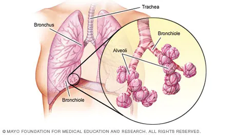
- कांचन:
- सोना; gold, often used in poetry and literature
- उसके आभूषणों में कांचन की चमक थी। (Her jewelry had the luster of gold.)
- मूल्यवान; precious or valuable
- कांचन का उपयोग अनेक सांस्कृतिक और धार्मिक परंपराओं में होता है। (Gold is used in various cultural and religious traditions.)
- ऊर्जावान; radiant or gleaming
- त्योहारों के दौरान कांचन की वस्तुएँ अक्सर सजावट के लिए उपयोग की जाती हैं। (During festivals, golden items are often used for decoration.)
- वाष्प:
- भाप; vapor or steam
- गर्म पानी से वाष्प निकलती है। (Steam rises from hot water.)
- गैस; gas or mist
- वाष्प संयंत्र में ऊर्जा उत्पादन के लिए उपयोगी होती है। (Vapor is useful for energy production in plants.)
- अव्यवस्थित; dispersed or spread out
- कांच पर बनी वाष्प ने उसकी दृष्टि को बाधित किया। (The vapor on the glass obstructed his vision.)
- प्रविष्ट:
- प्रवेश किया हुआ; entered or admitted
- वह कमरे में प्रविष्ट हुआ और सभी का ध्यान आकर्षित किया। (He entered the room and attracted everyone's attention.)
- समाविष्ट; included or incorporated
- इस दस्तावेज़ में कुछ महत्वपूर्ण प्रविष्टियाँ हैं। (There are some important entries in this document.)
- दाखिल होना; to register or log in
- वेबसाइट पर प्रविष्ट करने के लिए उपयोगकर्ताओं को अपना पासवर्ड डालना होगा। (Users need to enter their password to log in to the website.)
- नाड़ियां:
- नाडियाँ; nerves or channels in the body
- शरीर में नाड़ियां संवेदी जानकारी को मस्तिष्क तक पहुंचाने का कार्य करती हैं। (Nerves in the body carry sensory information to the brain.)
- वाहिकाएँ; vessels or conduits
- रक्त वाहिकाओं के समान, नाड़ियां भी महत्वूर्ण कार्य करती हैं। (Similar to blood vessels, nerves also perform important functions.)
- प्रणाली; system or network
- नाड़ी तंत्र हमारे शरीर की संवेधना प्रणाली का एक हिस्सा है। (The nerve system is a part of our body’s sensory system.)
- मरुस्थल:
- रेगिस्तान; desert or arid region
- मरुस्थल की गर्मी और सूखापन वहां के जीवन को चुनौतीपूर्ण बनाता है। (The heat and dryness of the desert make life challenging there.)
- बंजर भूमि; barren land
- मरुस्थल में पौधों की कमी होती है, लेकिन वहाँ काफी जीव-जंतु पाए जाते हैं। (The desert has a scarcity of plants, but many animals can be found there.)
- भूमि की विशेषता; characteristic of the land
- मरुस्थल की विशेषता उसकी रेत के टीलों और गर्म जलवायु में है। (The characteristic of the desert lies in its sand dunes and hot climate.)
- छितरे:
- बिखरे हुए; scattered or dispersed
- उसके कपड़े चारों ओर छितरे पड़े थे। (His clothes were scattered all around.)
- फैलाव; spread out or strewn
- बारिश के बाद के पेड़ के पत्ते छितरे हुए दिखाई दे रहे थे। (The leaves of the tree looked scattered after the rain.)
- अनियमितता; irregular or chaotic arrangement
- छितरे सामान को व्यवस्थित करना आवश्यक है। (It is necessary to organize the scattered items.)
- Experience:
- अनुभव; the knowledge or skill acquired through direct observation or participation
- Traveling to different countries can provide valuable experience. (विभिन्न देशों की यात्रा करने से मूल्यवान अनुभव मिलता है।)
- वास्तविकता; the practical contact with and observation of facts or events
- Her experience in the field helped her succeed in the project. (क्षेत्र में उसका अनुभव उसे परियोजना में सफल होने में मदद करता है।)
- अनुभूतियाँ; encounters or events that contribute to a person's development
- Each experience shapes our perspectives and makes us who we are. (प्रत्येक अनुभव हमारे दृष्टिकोण को आकार देता है और हमें वह बनाता है जो हम हैं।)
- त्रिकुटी:
- from Guru:
- ‘त्रिकुटी’ योगियों का बड़ा महत्वपूर्ण शब्द है। त्रिकुटी का अर्थ होता है: द्रष्टा, दृश्य और दर्शन--इन तीन धाराओं का मिल जाना।
- त्रिकुटी; a geographical term often referring to a three-headed figure or a confluence of three rivers or mountains
- त्रिकुटी पर्वत के चारों ओर सुंदर दृश्य हैं। (The scenery around the Trikuti mountain is beautiful.)
- धार्मिक संदर्भ में; a term associated with Hinduism, often referring to a sacred place or confluence
- त्रिकुटी तीर्थ यात्रा के लिए एक लोकप्रिय स्थान है। (Trikuti is a popular destination for pilgrimage.)
- सांस्कृतिक महत्व; also used in various cultural contexts
- त्रिकुटी की महिमा और महत्व को समझने के लिए स्थानीय लोगों से बातचीत करें। (Talk to the locals to understand the glory and significance of Trikuti.)
- कुल:
- कुल; total or aggregate
- इस साल कुल बिक्री में वृद्धि हुई है। (This year, there has been an increase in total sales.)
- जाति या परिवार; lineage or clan
- वह एक प्रतिष्ठित कुल से संबंध रखता है। (He belongs to a prestigious lineage.)
- कुल संख्या; overall number
- कुल लोगों की संख्या इस कार्यक्रम में भाग लेने के लिए बढ़ गई है। (The overall number of people participating in this event has increased.)
- निश्चल:
- स्थिर; stable or motionless
- उसका निश्चल चेहरा उसकी चिंता को छिपा गया था। (His motionless face concealed his worries.)
- अचल; immovable or unchanging
- निश्चल जल में कोई हलचल नहीं थी। (The still water had no ripples.)
- निश्चित; determined or resolute
- वह अपने लक्ष्य के प्रति निश्चल था और किसी भी स्थिति में नहीं हटा। (He was resolute about his goal and did not waver in any situation.)
- उथले:
- कम गहरा; shallow or not deep
- उथले पानी में तैरना आसान होता है। (Swimming in shallow water is easier.)
- सतही; superficial or lacking depth
- उथले विचार अक्सर मामलों की गंभीरता को नहीं समझ पाते। (Superficial thoughts often fail to grasp the seriousness of issues.)
- अस्थायी; transient or fleeting
- उथले संबंध लंबे समय तक नहीं टिकते। (Shallow relationships do not last long.)
- उलटबांसी:
- विपरीत स्थिति; contradiction or reversal
- उसकी उलटबांसी में कई बातें स्पष्ट हो जाती हैं। (Many things become clear in her contradiction.)
- उलटफेर; turmoil or upheaval
- जन विरोध के कारण राजनीतिक उलटबांसी हुई। (Due to public protests, there was a political upheaval.)
- बेतुकी बातें; nonsensical or absurd statements
- उसकी उलटबांसी से सब लोग चौंक गए। (Everyone was surprised by his absurd statements.)
- आक्रांत:
- प्रभावित; affected or troubled
- वह मानसिक तनाव के कारण आक्रांत महसूस कर रहा था। (He was feeling troubled due to mental stress.)
- घेर लिया गया; besieged or surrounded
- नगर आक्रांत हो गया जब शत्रु ने हमला किया। (The city was besieged when the enemy attacked.)
- विक्षिप्त; disturbed or agitated
- आक्रांत मनस्थिति में निर्णय लेना कठिन होता है। (It is difficult to make decisions in a disturbed state of mind.)
- सुस्पष्ट:
- स्पष्ट; clear or distinct
- उसके भाषण में सुस्पष्टता ने सभी को प्रभावित किया। (The clarity in her speech impressed everyone.)
- निर्विवाद; undeniable or unequivocal
- तथ्य सुस्पष्ट थे, इसलिए किसी प्रकार की गलतफहमी नहीं होनी चाहिए। (The facts were clear, so there should be no misunderstanding.)
- स्पष्ट रूप से व्यक्त; expressed in a clear manner
- उसने अपनी बात को सुस्पष्ट तरीके से रखा। (He stated his point in a clear manner.)
- कोलाहल:
- शोर-गुल; noise or commotion
- बाजार में कोलाहल हो रहा था, जिससे बात करना मुश्किल हो गया। (There was a lot of noise in the market, making it difficult to talk.)
- हलचल; uproar or turmoil
- घटना के बारे में सुनकर लोगों में कोलाहल मच गया। (Upon hearing about the incident, there was an uproar among the people.)
- अराजकता; chaos or disorder
- कोलाहल की स्थिति में निर्णय लेना कठिन होता है। (It is difficult to make decisions in a chaotic situation.)
- उपद्रव:
- समस्या; disturbance or trouble
- छात्र ने कक्षा में उपद्रव डाला, जिससे शिक्षक को उसे चेतावनी देनी पड़ी। (The student caused a disturbance in the class, prompting the teacher to warn him.)
- अशांति; unrest or turmoil
- उपद्रव के कारण क्षेत्र में सुरक्षा बढ़ा दी गई। (Security was heightened in the area due to unrest.)
- अव्यवस्था; disorder or disruption
- समारोह में उपद्रव ने माहौल को खराब कर दिया। (The disruption at the event spoiled the atmosphere.)
- च्युत:
- गिरना; fallen or dislodged
- वह च्युत हुआ और जमीन पर गिर गया। (He fell and landed on the ground.)
- निकालना; expelled or cast off
- च्युत कारक तत्वों को निकालने से स्वास्थ्य में सुधार होता है। (Expelling harmful elements leads to improvements in health.)
- हटा हुआ; removed or displaced
- च्युत वस्तुएँ कभी-कभी अप्रयुक्त स्थान बनाती हैं। (Dislodged items sometimes create unused space.)
- सर्वोदयी:
- सभी के लिए लाभकारी; beneficial to all or universal upliftment
- सर्वोदयी नीतियाँ समाज के प्रत्येक वर्ग के लिए सहायक होती हैं। (Universal policies are supportive for every class of society.)
- समृद्धि; prosperity for everyone
- सर्वोदयी विकास का लक्ष्य है कि सभी लोग आर्थिक और सामाजिक रूप से उन्नति करें। (The objective of universal development is for all people to progress economically and socially.)
- समानता; equality and inclusiveness
- सर्वोदयी दृष्टिकोण से समाज में समानता और न्याय को बढ़ावा मिलता है। (A universal approach promotes equality and justice in society.)
- लोकनायक:
- जनता का नेता; a leader of the people, often used to refer to someone who is revered and looked up to in a public or social context
- महात्मा गांधी को भारत में लोकनायक माना जाता है। (Mahatma Gandhi is regarded as a people's leader in India.)
- प्रेरक व्यक्ति; an inspiring figure who leads and motivates others
- लोकनायक अपने कार्यों और विचारों से समाज में बदलाव लाते हैं। (People's leaders bring change to society through their actions and ideas.)
- सामाजिक प्रतिष्ठा; a person holding significant respect and influence in the community
- लोकनायक की भूमिका समाज में नैतिकता और न्याय को बनाए रखने में महत्वपूर्ण होती है। (The role of a people's leader is crucial in maintaining ethics and justice in society.)
- लोकनेता:
- जनता का नेता; a leader of the people, typically in a political or social capacity
- लोकनेता ने अपने विचारों से जनसमर्थन प्राप्त किया। (The people's leader gained public support through his ideas.)
- लोकप्रिय नेता; a popular leader who is well-respected by the community
- लोकनेता सामाजिक बदलाव के लिए प्रेरणा का स्रोत होते हैं। (People's leaders are sources of inspiration for social change.)
- सामुदायिक प्रतिनिधि; a representative of the community who advocates for their needs
- लोकनेता नागरिक अधिकारों के लिए संघर्ष करते हैं। (People's leaders fight for civil rights.)
- शील:
- नैतिकता; moral character or virtue
- व्यक्ति का शील उसके चरित्र को परिभाषित करता है। (A person's character is defined by their moral virtue.)
- स्वभाव; demeanor or disposition
- उसके शील ने उसे समाज में सम्मानित बना दिया। (His demeanor has made him respected in society.)
- संयम; restraint or self-control
- शील के साथ जीवन जीने से व्यक्ति में आंतरिक संतुलन बना रहता है। (Living with virtue maintains internal balance in a person.)
- विशिष्टता:
- विशेषता; uniqueness or distinctiveness
- किसी उत्पाद की विशिष्टता उसे बाजार में प्रतिस्पर्धी बनाती है। (The uniqueness of a product makes it competitive in the market.)
- विशेषता; characteristic or feature
- उसकी विशिष्टता उसे अन्य व्यक्तियों से अलग बनाती है। (His distinctiveness sets him apart from others.)
- विशिष्ट गुण; specific quality or attribute
- इस आविष्कार की विशिष्टता इसकी नवीन तकनीक में है। (The distinctiveness of this invention lies in its innovative technology.)
- गौरी-शंकर:
- भगवान शिव और देवी पार्वती का एक रूप; often referring to the divine couple symbolizing harmony and love
- गौरीशंकर पर्वत हिंदू धर्म में बहुत पवित्र माना जाता है। (The Gaurishankar mountain is considered very sacred in Hinduism.)
- धार्मिक प्रतीक; a symbol of devotion and togetherness
- गौरीशंकर की पूजा से परिवार में प्रेम और एकता बनी रहती है। (Worshipping Gaurishankar maintains love and unity in the family.)
- कला और संस्कृति; sometimes used in literature and art, representing devotion
- शास्त्रीय संगीत में गौरीशंकर का स्थान महत्वपूर्ण है। (In classical music, Gaurishankar holds an important position.)
- प्रेम-पात्र:
- प्रिय व्यक्ति; a beloved person or object of affection
- वह उसके लिए हमेशा एक प्रेम-पात्र रहेगी। (She will always remain a beloved person to him.)
- प्रेम में समर्पित; someone worthy of love
- प्रेम-पात्र होना एक विशेष अनुभव है। (Being a beloved person is a special experience.)
- भावुक मूल्य; something or someone cherished emotionally
- उसने अपनी दादी को अपने जीवन का प्रेम-पात्र माना। (He considered his grandmother the beloved person of his life.)
- वैधव्य:
- विधवा; the state of being a widow
- उसके वैधव्य के कारण वह अकेलापन महसूस कर रही थी। (Her widowhood made her feel loneliness.)
- पत्नी की मृत्यु; the condition following the death of a spouse
- वैधव्य के बाद, उसने अपने जीवन को फिर से दिशा देने का निर्णय लिया। (After becoming a widow, she decided to redefine her life.)
- विधवा का जीवन; the life and challenges faced by a widow
- समाज में वैधव्य का जीवन कई बार अत्यंत कठिन होता है। (The life of a widow in society can sometimes be very challenging.)
- प्रविष्ट:
- प्रवेश किया हुआ; that which has entered or been admitted
- उसने कमरे में प्रविष्ट होते ही सबका ध्यान आकर्षित किया। (He captured everyone's attention as he entered the room.)
- लाई गई; introduced or brought in
- नए नियमों को सभी सदस्यों में प्रविष्ट किया गया है। (The new rules have been introduced to all members.)
- समाविष्ट; included or incorporated
- इस पुस्तक में अनेक प्रविष्ट तथ्य दिए गए हैं। (This book contains many included facts.)
- तटस्थता:
- निष्पक्षता; neutrality or impartiality
- तटस्थता का पालन करके, उसे दोनों पक्षों की स्थिति समझने में मदद मिली। (By maintaining neutrality, he was able to understand the position of both sides.)
- गैर-पक्षपाती स्थिति; a state of not supporting or helping either side in a conflict
- इस चर्चित मुद्दे पर तटस्थता से बात करना कठिन है। (It is difficult to discuss this controversial issue with neutrality.)
- असंलग्नता; the quality of being disengaged or uninvolved
- तटस्थता से कई बार बेहतर निर्णय लेने में मदद मिलती है। (Neutrality often helps in making better decisions.)
- उदघोष:
- उद्घोषणा; proclamation or announcement
- उसने समारोह में एक महत्वपूर्ण उदघोष दिया। (He made an important announcement at the ceremony.)
- घोषणा; a formal or official statement
- सरकार की ओर से उदघोष में नए नीतियों का उल्लेख किया गया। (The proclamation from the government mentioned new policies.)
- सूचना; communication of information
- उदघोष के माध्यम से लोगों को नई योजनाओं के बारे में बताया गया। (The announcement informed people about the new schemes.)
- चेष्टाएं:
- प्रयास; attempts or efforts
- उसकी चेष्टाएं लक्ष्य को प्राप्त करने में महत्वपूर्ण थीं। (His attempts were crucial in achieving the goal.)
- क्रियाएँ; actions or movements
- उनके छोटे-छोटे चेष्टाएं समझाने में मददगार थीं। (Her small actions were helpful in the explanation.)
- प्रयत्न; endeavors or undertakings
- उन्होंने अपनी चेष्टाओं के द्वारा समस्या को हल किया। (They solved the problem through their endeavors.)
- आश्वस्त:
- आश्वस्त होना; to be assured or confident
- उसने मुझे आश्वस्त किया कि सब कुछ सही होगा। (He assured me that everything would be fine.)
- सुरक्षित; feeling secure or safe
- उसके शब्दों ने मुझे बहुत आश्वस्त किया। (His words gave me a lot of reassurance.)
- विश्वास प्रदान करना; to provide comfort or reassurance
- डॉक्टर ने मरीज को स्वस्थ होने के लिए आश्वस्त किया। (The doctor reassured the patient about recovery.)
- समष्टि
- (from wikitonary): सब का समूह, कुल एक साथ
- SAHIL: srishti + thoughts
- समग्र; a collective or totality
- समाज की समष्टि में सभी वर्गों का योगदान महत्वपूर्ण है। (The collective contribution of all classes is important in society.)
- समूह; a group or assemblage
- इस परियोजना में सबकी समष्टि पर विचार किया जाएगा। (Consideration will be given to the assemblage of everyone in this project.)
- कुल; the entirety or whole
- समष्टि में विभिन्न पहलुओं का समावेश होता है। (The totality includes various aspects.)
- प्रीति:
- प्रेम; love or affection
- उनकी मित्रता में गहरी प्रीति है। (There is a deep love in their friendship.)
- लगाव; attachment or fondness
- बच्चों के प्रति उसकी प्रीति सभी को आकर्षित करती है। (Her affection for children attracts everyone.)
- भक्ति; devotion or deep emotional connection
- प्रीति से किए गए कार्य हमेशा विशेष होते हैं। (Tasks done with love are always special.)
- संस्मरण:
- स्मृति; a memory or recollection
- उसके संस्मरण ने बचपन की यादों को ताजा कर दिया। (Her recollections brought back memories of childhood.)
- दृष्टान्त; an account or narrative of past experiences
- पुस्तक में लेखक ने अपने जीवन के संस्मरण साझा किए हैं। (The book contains the author's accounts of his life experiences.)
- आत्मकथा; a memoir or autobiographical narrative
- उसकी संस्मरण में उसने अपनी यात्रा और संघर्षों के बारे में लिखा है। (In her memoir, she wrote about her journey and struggles.)
- सार्वभौम:
- वैश्विक; universal or worldwide
- नया पर्यावरण नियम सार्वभौम समस्याओं को हल करने की दिशा में एक कदम है। (The new environmental regulation is a step toward addressing universal issues.)
- सर्वत्र; present in all places
- यह प्रौद्योगिकी सार्वभौम उपयोग के लिए डिज़ाइन की गई है। (This technology is designed for universal use.)
- सभी के लिए; applicable to everyone
- सार्वभौम अधिकार सभी मानवों के लिए अनिवार्य हैं। (Universal rights are essential for all humans.)
- विकार:
- विकृति; a deviation from the normal or healthy state
- मानसिक स्वास्थ्य विकारों को समय पर पहचानना महत्वपूर्ण है। (Identifying mental health disorders in a timely manner is important.)
- दोष/अवगुण; an imperfection or flaw
- यह विकार उसकी कला में स्पष्ट था। (This flaw was evident in his artwork.)
- असामान्य स्थिति; an abnormal condition or state
- विकार कई तरह के हो सकते हैं, जैसे शारीरिक, मानसिक या भावनात्मक। (Disorders can be of many types, such as physical, mental, or emotional.)
- डुंडी:
- विजय ध्वजा; a flag or banner, often used to signify victory or achievement
- प्रतियोगिता जीतने के बाद, टीम ने अपनी डुंडी फहरा दी। (After winning the competition, the team waved their victory flag.)
- संकेत या प्रतीक; a sign or symbol of success
- उन्होंने अपने शहर में डुंडी लेकर परेड निकाली। (They held a parade in their city with the victory banner.)
- उत्सव का प्रतीक; a symbol of celebration
- हर साल, त्योहार के दौरान लोग डुंडी उठाते हैं। (Every year, during the festival, people raise victory flags.)
- अमलताश:
- टेरेबिंथ; a flowering tree known for its beautiful yellow flowers
- अमलताश के पेड़ अपनी बहार में अद्भुत होते हैं। (The amaltas tree is magnificent when it flowers.)
- आम फलों का पेड़; a tree that bears pods used in traditional medicine
- अमलताश की फलियाँ औषधीय गुणों से भरपूर होती हैं। (The pods of the amaltas are rich in medicinal properties.)
- छायादार पेड़; a shade tree often planted in parks and gardens
- अमलताश का पेड़ पार्क में लोगों को छाया प्रदान करता है। (The amaltas tree provides shade to people in the park.)

- परितोष:
- संतोष; contentment or satisfaction
- उसके चेहरे पर परितोष का भाव था जब उसने पुरस्कार जीता। (There was a look of contentment on his face when he won the award.)
- खुशी; joy or happiness
- जीवन में सरल चीज़ों से परितोष प्राप्त किया जा सकता है। (Contentment can be achieved from the simple things in life.)
- पूर्णता; a sense of completeness
- परितोष ने उसे अपने काम में उत्साह दिया। (Contentment gave her enthusiasm in her work.)
- लोच:
- लचीलापन; flexibility or elasticity
- इस सामग्री में लोच होने के कारण यह दबाव सहन कर सकती है। (The material can withstand pressure due to its elasticity.)
- समायोजन; ability to adjust or adapt
- इस प्रक्रिया में लोच से काम लेने की आवश्यकता होती है। (This process requires the ability to adapt flexibly.)
- कुशलता; agility or nimbleness
- खेलों में अच्छे प्रदर्शन के लिए खिलाड़ियों को लोच बरकरार रखने की आवश्यकता होती है। (Athletes need to maintain flexibility for good performance in sports.)
- प्रातः:
- सुबह; morning
- मैं हर दिन प्रातः जल्दी उठता हूँ। (I wake up early every morning.)
- भोर; dawn or daybreak
- प्रातः के समय का वातावरण बहुत शांति भरा होता है। (The atmosphere during the morning is very peaceful.)
- आरंभ; the beginning of the day
- प्रातः का सूर्योदय एक नई शुरुआत का प्रतीक है। (The sunrise in the morning symbolizes a new beginning.)
- अम्लता:
- acidity; the quality of being acidic
- अम्लता का स्तर औसत से अधिक होने पर स्वास्थ्य पर प्रभाव पड़ सकता है। (When the level of acidity is higher than average, it can affect health.)
- खट्टापन; sourness or sharpness in taste
- इस फल की अम्लता इसे और भी स्वादिष्ट बनाती है। (The acidity of this fruit makes it even more delicious.)
- रासायनिक गुण; a chemical property associated with acids
- अम्लता पानी में pH को कम करती है। (Acidity decreases the pH in water.)
- उषणता:
- गर्मी; the quality of being hot or heated
- ग्रीष्म ऋतु में उषणता से बचने के लिए ठंडे पेय पसंद किए जाते हैं। (Cold drinks are preferred to avoid heat during the summer season.)
- ताप; temperature or warmth
- उषणता के कारण लोग आमतौर पर व्यायाम करने से बचते हैं। (People usually avoid exercising due to the temperature.)
- तीव्रता; intensity of heat
- उषणता की तीव्रता में बदलाव से फसलों पर असर पड़ सकता है। (Changes in the intensity of heat can affect the crops.)
- वृत्ताकार:
- गोल; circular or round in shape
- तालाब की आकृति वृत्ताकार है। (The shape of the pond is circular.)
- रेखीय; relating to a circular path
- वृत्ताकार बाग में घुमावदार रास्ते होते हैं। (The circular garden has winding paths.)
- चापाकार; arching or curved in a circular manner
- वृत्ताकार संरचना ने भवन को एक अद्वितीय रूप दिया। (The circular structure provided the building with a unique appearance.)
- नितम्भ:
- नितंब; the hips or buttocks
- उसने सही मुद्रा बनाए रखने के लिए अपने नितम्बों पर ध्यान दिया। (She paid attention to her hips to maintain the correct posture.)
- शारीरिक भाग; a part of the body
- नितम्भों का आकार विभिन्न प्रकार के कपड़ों पर निर्भर करता है। (The shape of the hips depends on various types of clothing.)
- सौंदर्य; aesthetics related to body shape
- नितम्भों को एक सुंदर आकृति के रूप में देखा जाता है। (The hips are viewed as a symbol of beauty.)
- प्रकारान्तर:
- भिन्नता; a variation or difference in type
- इस वैज्ञानिक अध्ययन में विभिन्न प्रकारान्तरों का विशेष ध्यान रखा गया है। (This scientific study pays special attention to various variations.)
- रूपांतरण; transformation or change in form
- प्रकारान्तर अक्सर जीवन के विकास में महत्वपूर्ण होते हैं। (Variations are often significant in the evolution of life.)
- श्रेणी में विभाजन; classification into different categories
- इस संग्रह में सभी प्रकारान्तरों को समाहित किया गया है। (All types of variations have been included in this collection.)
- वंशिका:
- वंश; a lineage or family line
- प्रत्येक वंशिका में अपने पूर्वजों की कहानी होती है। (Each lineage has its own story of ancestors.)
- वंश का परिचायक; a representation of heritage
- उसने अपनी वंशिका को संजोने के लिए एक परिवार वृक्ष बनाया। (He created a family tree to preserve his lineage.)
- जीन संबंधी; related to genetics or heredity
- वंशिका अध्ययन में जीनों का स्थान महत्वपूर्ण होता है। (The study of lineage holds significant importance in genetics.)
- मेरुदण्ड:
- रीढ़; the backbone or spine
- मेरुदण्ड हमारे शरीर की संरचना के लिए महत्वपूर्ण है। (The backbone is crucial for the structure of our body.)
- सहारा; a support structure
- मेरुदण्ड शरीर को सही मुद्रा बनाए रखने में मदद करता है। (The spine helps the body maintain the correct posture.)
- शारीरिक संरचना; the structure of bones and cartilage
- मेरुदण्ड में किसी भी प्रकार की चोट गंभीर स्वास्थ्य समस्याएँ उत्पन्न कर सकती हैं। (Any injury to the spine can cause serious health problems.)
- आवृति:
- पुनरावृत्ति; repetition or recurrence
- इस गीत की आवृति ने उसे बचपन की यादों में पहुँचा दिया। (The repetition of this song transported him back to childhood memories.)
- घात; frequency or regularity of an event
- आँकड़ों में आवृति का विश्लेषण महत्वपूर्ण होता है। (Analyzing the frequency in data is important.)
- पुनःप्रस्तुति; reiteration or restatement
- शिक्षक ने कठिन विषय को समझाने के लिए आवृति का सहारा लिया। (The teacher used repetition to explain the difficult topic.)
- exercise context: single exercise or specific movement in a set
- क्रमश:
- क्रम में; in sequence or order
- पुस्तकों को क्रमश रखा गया है ताकि उन्हें आसानी से ढूंढा जा सके। (The books were arranged in order so they could be easily found.)
- लगातार; continuously or consecutively
- उन्होंने तीन सप्ताह तक क्रमश काम किया। (They worked continuously for three weeks.)
- एक के बाद एक; one after another
- उसने क्रमश समाधान प्रस्तुत किया जिसकी सभी ने सराहना की। (He presented solutions one after another, which everyone appreciated.)
- वर्तुल:
- गोल; circular or round
- सूर्य एक वर्तुल आकार में होता है। (The sun is in a circular shape.)
- वृत्त के समान; resembling or shaped like a circle
- यह तालाब वर्तुल है और इसके चारों ओर बाग हैं। (This pond is circular, and there are gardens all around it.)
- संपूर्ण; encompassing or complete in a circular manner
- वर्तुल गति के दौरान, वस्तुएँ एक केंद्र के चारों ओर घूमती हैं। (During circular motion, objects revolve around a center.)
- तटस्थ:
- निष्पक्ष; neutral or impartial
- उसने विवाद में तटस्थ रहने का निर्णय लिया। (He decided to remain neutral in the dispute.)
- अप्रभावित; not supporting or favoring either side
- तटस्थ देश युद्ध में किसी भी पक्ष का समर्थन नहीं करते। (Neutral countries do not support either side in a war.)
- असंबंधित; not involved in a particular issue
- तटस्थ दृष्टिकोण से स्थिति का मूल्यांकन करना महत्वपूर्ण है। (It is important to assess the situation from a neutral perspective.)
- प्रथक:
- अलग; separate or distinct
- उन्होंने प्रथक कमरे में काम करने का निर्णय लिया। (They decided to work in a separate room.)
- भिन्न; different or various
- यह प्रथक समस्या को हल करने के लिए एक नया दृष्टिकोण की आवश्यकता है। (This distinct problem requires a new approach to solve it.)
- विशेष; specific or unique
- इस प्रथक स्थिति में, विशेष उपायों की आवश्यकता है। (In this specific situation, special measures are needed.)
- तृष्णा:
- इच्छा; a strong desire or craving
- उसकी तृष्णा उसे अधिक से अधिक सफलता पाने के लिए प्रेरित करती है। (His craving drives him to achieve more and more success.)
- लालसा; an intense yearning or longing
- तृष्णा कभी-कभी हमारी खुशी को प्रभावित कर सकती है। (Desire can sometimes affect our happiness.)
- उपभोग की लालसा; an insatiable longing for possessions or experiences
- तृष्णा के पीछे छिपी असंतोष की भावना अक्सर हमें परेशान करती है। (The dissatisfaction behind craving often troubles us.)
- दमन:
- नियंत्रण; suppression or control
- सरकार ने विरोध प्रदर्शनों का दमन किया। (The government suppressed the protests.)
- दबाव; the act of stifling or restraining
- दमन के कारण लोगों ने अपनी आवाज उठानी बंद कर दी। (Due to suppression, people stopped raising their voices.)
- निरंकुशता; oppression or tyranny
- दमन के खिलाफ लोगों ने एकजुट होकर संघर्ष किया। (People united to fight against oppression.)
- दमन:
- नियंत्रण; suppression or control
- सरकार ने विरोध प्रदर्शनों का दमन किया। (The government suppressed the protests.)
- दबाव; the act of stifling or restraining
- दमन के कारण लोगों ने अपनी आवाज उठानी बंद कर दी। (Due to suppression, people stopped raising their voices.)
- निरंकुशता; oppression or tyranny
- दमन के खिलाफ लोगों ने एकजुट होकर संघर्ष किया। (People united to fight against oppression.)
- श्रम:
- मेहनत; hard work or labor
- किसानों का श्रम फसल उगाने में महत्वपूर्ण है। (The farmers' labor is essential for growing crops.)
- कार्य; the effort put into a task or job
- श्रम के बिना सफलता प्राप्त नहीं की जा सकती। (Success cannot be achieved without effort.)
- कठिनाई; the toil or exertion involved in doing work
- श्रम करना केवल शारीरिक नहीं, बल्कि मानसिक भी हो सकता है। (Labor can be both physical and mental.)
- कृतिम:
- कृत्रिम; artificial or man-made
- कृतिम उपग्रह पृथ्वी के चारों ओर घूमते हैं। (Artificial satellites orbit around the Earth.)
- मानव निर्मित; created by humans rather than occurring naturally
- कृतिम आवरण का उपयोग भवनों में ऊर्जा की बचत के लिए किया जाता है। (Artificial insulation is used in buildings for energy conservation.)
- बनावटी; not genuine or real
- बाजार में कई कृतिम उत्पाद उपलब्ध हैं। (Many artificial products are available in the market.)
- जलाशय:
- जल संग्रह; a reservoir or body of water
- जलाशय में वर्षा के पानी को संग्रहित किया जाता है। (Rainwater is collected in the reservoir.)
- पानी का भंडार; a storage area for water
- ग्रामीण क्षेत्रों में जलाशय स्थानीय जल की आपूर्ति का महत्वपूर्ण स्रोत हैं। (In rural areas, reservoirs are an important source of local water supply.)
- तालाब; a pond or lake
- वह जलाशय के किनारे बैठकर किताब पढ़ रही थी। (She was sitting by the reservoir reading a book.)
- अकारण:
- बिना कारण; without reason
- उसने अकारण ही अपनी बात का विरोध किया। (He opposed his point without reason.)
- अनायास; unexpectedly or without justification
- अकारण आलोचना करना उचित नहीं है। (It is not appropriate to criticize without justification.)
- निराधार; baseless or unfounded
- अकारण भय से लोगों को डरा नहीं जाना चाहिए। (People should not be frightened without any baseless fear.)
- अवधान:
- ध्यान; attention or focus
- परीक्षा के दौरान सभी छात्रों का अवधान आवश्यक है। (All students' attention is necessary during the exam.)
- सतर्कता; alertness
- अवधान रखने से कार्य में त्रुटियाँ कम होती हैं। (Being attentive reduces errors in work.)
- पूर्वाग्रह; mindfulness or consideration
- अवधान से कोई भी निर्णय बेहतर तरीके से लिया जा सकता है। (Any decision can be made better with mindfulness.)
- दीन:
- गरीब; poor or destitute
- दीन व्यक्ति को सहायता की आवश्यकता है। (The poor person is in need of assistance.)
- दीन-हीन; helpless or humble
- उसकी दीन स्थिति देखकर सभी लोग सहानुभूति व्यक्त करने लगे। (Seeing his humble condition, everyone began to express sympathy.)
- निस्सहाय; defenseless or vulnerable
- दीन लोग अक्सर समाज में उपेक्षित होते हैं। (The vulnerable are often neglected in society.)
- दरिद्र:
- गरीब; impoverished or lacking in resources
- दरिद्र परिवारों को कई प्रकार की सहायता की आवश्यकता होती है। (Impoverished families often need various types of assistance.)
- अभावग्रस्त; in a state of poverty or hardship
- समाज में दरिद्र लोगों की संख्या बढ़ रही है। (The number of impoverished individuals in society is increasing.)
- आर्थिक कठिनाई; financial struggle or deprivation
- दरिद्रता के कारण बच्चों की शिक्षा में बाधा आती है। (Poverty hampers children's education.)
- देशस्थ:
- स्थानीय; native or belonging to a particular country or region
- देशस्थ लोगों की संस्कृति की अपनी विशेषताएँ होती हैं। (The local people's culture has its own distinct characteristics.)
- राष्ट्रीय; relating to or characteristic of the nation
- देशस्थ भाषाएँ विभिन्न स्थानीय बोलियों में विभाजित होती हैं। (National languages are divided into various local dialects.)
- स्थानिक; pertaining to a specific place
- देशस्थ मुद्दे अक्सर उन समुदायों पर अधिक प्रभाव डालते हैं। (Regional issues often have a greater impact on those communities.)
- विचरना:
- सोचना; to think or ponder
- उसे अपने निर्णय पर विचारना पड़ रहा था। (He had to think about his decision.)
- भ्रमण करना; to roam or wander
- वे पार्क में शाम को विचारने के लिए घूमने निकले। (They went for a walk in the park to wander in the evening.)
- विचार करना; to contemplate or consider
- हमें मामले के सभी पहलुओं पर विचार करना चाहिए। (We should consider all aspects of the matter.)
- अहोभाग्य:
- भाग्यशाली; fortunate or blessed
- अहोभाग्य से उसे एक अच्छी नौकरी मिल गई। (Fortunately, he got a good job.)
- सौभाग्य; good fortune or luck
- उसे अहोभाग्य के कारण ऐसे महान मित्र मिले। (He made great friends due to his good fortune.)
- आभार; a term expressing gratitude or wonder at one's luck
- अहोभाग्य का अनुभव करते हुए, उसने अपने जीवन में सकारात्मकता की सराहना की। (Experiencing good fortune, he appreciated the positivity in his life.)
- सूरह:
- अध्याय; a chapter or section of the Quran
- हर सूरह में विभिन्न विषयों पर चर्चा की गई है। (Each surah discusses various topics.)
- श्लोक; a verse or stanza within a chapter
- सूरह अल-फातेहा इस्लाम में एक महत्वपूर्ण सूरह मानी जाती है। (Surah Al-Fatiha is considered an important surah in Islam.)
- धार्मिक पाठ; a portion of religious scripture
- वह सूरह को याद करने की कोशिश कर रहा था। (He was trying to memorize the surah.)
- बोधगम्य:
- समझने योग्य; understandable or comprehensible
- उसकी व्याख्या इतनी बोधगम्य थी कि सभी ने आसानी से समझ लिया। (His explanation was so understandable that everyone grasped it easily.)
- स्पष्ट; clear and easy to perceive
- इस विषय पर बोधगम्य ग्रंथों का अध्ययन करना मददगार है। (Studying comprehensible texts on this subject is helpful.)
- ज्ञानवर्धक; enlightening or informative
- बोधगम्य जानकारी हमेशा सीखने में सहायक होती है। (Comprehensible information is always helpful in learning.)
- नित्य:
- दैनिक; daily or habitual
- उसने नित्य व्यायाम करने की आदत बना ली है। (He has made a habit of exercising daily.)
- नियमित; regular and consistent
- नित्य पूजा से उन्हें मानसिक शांति मिलती है। (Regular worship gives them mental peace.)
- सतत; continuous or perpetual
- नित्य जीवन में परिवर्तन अनिवार्य है। (Change is inevitable in daily life.)
- पृथक:
- अलग; separate or distinct
- यह प्रश्न पृथक मुद्दों पर आधारित है। (This question is based on separate issues.)
- भिन्न; different or diverse
- दोनों पृथक विचारधाराएँ हैं, लेकिन एक समान लक्ष्य के लिए काम करती हैं। (Both are different ideologies but work for a common goal.)
- विशेष; unique or individual
- उसके पृथक दृष्टिकोण ने उसे दूसरों से अलग पहचान दिलाई। (Her unique perspective gave her a distinct identity from others.)
- परिशिष्ट: ADDENDUM
- उदाहरण : पुस्तक के अंत में लिखा गया परिशिष्ट बहुत प्रभावित करने वाला है।
- Usage : The addendum written at the end of the book is very impressing.
- पतित: corrupt
- अध्याय: chapter
- नखक्षत:
- वह दाग या चिह्न जो नाखून के गड़ने के कारण बना हो
- स्त्री के शरीर पर का विशेषतः स्तन आदि पर का, वह चिह्न जो पुरुष के मर्दन आदि के कारण उसके नाखुनों से बन जाता है
- ओष्ठ: होंठ या ओंठ
- सांप्रयोगिक:
- शारीरिक प्रेम संबंध" या "संभोग" से संबंधित
- सम्प्रयोग = सम्भोग (wikipedia)
- प्रयोग प्रारंभ; pertaining to application or usage
- इस विषय के समुपयोगिका पहलुओं को समझना महत्वपूर्ण है। (Understanding the applicative aspects of this subject is important.)
- व्यावहारिक; practical implementation or use
- समुपयोगिका दृष्टिकोण से, इस तकनीक के लाभ प्रकट हैं। (From a practical standpoint, the benefits of this technique are evident.)
- उपयोगात्मक; relating to practical usage
- शिक्षण में समुपयोगिका विधियों को शामिल करना बेहतर परिणाम देता है। (In teaching, incorporating applicative methods yields better results.)
- अधिकरण:
- अधिकार का क्षेत्र; jurisdiction
- The court has jurisdiction over this matter. (इस मामले में अदालत का अधिकार क्षेत्र है।)
- अधिकृत करने की प्रक्रिया; authorization
- The project requires authorization from the government. (इस परियोजना को सरकार से अधिकृत करने की आवश्यकता है।)
- प्रहणन:
- आक्रमण; attack
- The strategy involved a sudden prahanan on the enemy. (योजना में दुश्मन पर अचानक प्रहणन करना शामिल था।)
- प्रहार; strike
- The boxer delivered a powerful prahanan to his opponent. (बॉक्सिंग में मुक्केबाज ने अपने प्रतिद्वंद्वी पर एक जोरदार प्रहाणन किया।)
- नाश; annihilation
- The prahanan of the ancient civilization was a significant event in history. (प्राचीन सभ्यता का प्रहणन इतिहास में एक महत्वपूर्ण घटना थी।)
- सीत्कार:
- (source) वह आवाज़ जो पीड़ा या आनंद के समय मुँह से निकलती है; सी-सी की ध्वनि; सिसकारी।
- आलिंगन: embrace, clasp, hug
- संवेशन:
- बैठना
- लेटना, पड़ रहना, सोना
- घुसना, प्रवेश करना
- अनुरक्त:
- मोहित
- अनुरागयुक्त, प्रेमयुक्त, प्रेमी, जो प्रेम में आसक्त हो
- आसक्त, लीन
- प्रसन्न, ख़ुश, संतुष्ठ
- भार्या: पत्नी
- पतित:
- बदज़ात
- पतित आदमी
- हीन आदमी
- विकृत व्यक्ति
- परियोजना:
- प्रोजेक्ट (project); a planned undertaking or initiative
- इस परियोजना का उद्देश्य सामुदायिक विकास को बढ़ावा देना है। (The objective of this project is to promote community development.)
- योजना; an organized effort with specific goals
- उन्होंने नई दीवारों का निर्माण करने के लिए एक परियोजना तैयार की। (They prepared a project to construct new walls.)
- कार्यशीलता; an endeavor often involving various stages
- परियोजना के विभिन्न चरणों के लिए समय सीमा निर्धारित की गई है। (Timelines have been set for different stages of the endeavor.)
- आकस्मिक:
- अप्रत्याशित; unexpected or accidental
- उनकी आकस्मिक मुलाकात ने पुरानी यादें ताजा कर दीं। (Their unexpected meeting brought back old memories.)
- संयोगिक; occurring by chance
- आकस्मिक घटनाओं के कारण योजना में बदलाव करना पड़ा। (Changes had to be made to the plan due to chance occurrences.)
- आकस्मिकता; the quality of being unplanned or unforeseen
- आकस्मिकता अक्सर जीवन में नई दिशाएँ खोला करती है। (Unexpected events often open new avenues in life.)
- निदान:
- समस्या का समाधान; solution to a problem
- The diagnosis provided a clear solution to the issue. (निदान ने समस्या का स्पष्ट समाधान प्रदान किया।)
- चिकित्सा में स्थिति की पहचान; identification of a condition in medicine
- The doctor performed several tests for an accurate diagnosis. (डॉक्टर ने सटीक निदान के लिए कई परीक्षण किए।)
- ऊहापोह:
- दुविधा; uncertainty
- There was a sense of ऊहापोह among the students regarding the exam results. (परीक्षा परिणामों को लेकर छात्रों में ऊहापोह की स्थिति थी.)
- सोच-विचार; deliberation
- After much ऊहापोह, they finally made a decision to move forward. (बहुत सोच-विचार के बाद, उन्होंने अंततः आगे बढ़ने का निर्णय लिया.)
- अशेष:
- (from wikitonary): पुरा । समुचा । सब । तमाम
- अनंत; endless
- The universe is filled with अशेष possibilities waiting to be explored. (ब्रह्मांड अनंत संभावनाओं से भरा है जो खोजे जाने की प्रतीक्षा कर रही हैं.)
- शेष न रहने वाला; remainder
- After the event, there was अशेष food left that we decided to donate. (कार्यक्रम के बाद, हमारे पास शेष भोजन बचा जिसे हमने दान करने का निर्णय लिया.)
- पद्धति:
- विधि; method
- The researcher used a new methodology for the experiment. (अनुसंधानकर्ता ने प्रयोग के लिए एक नई पद्धति का उपयोग किया।)
- प्रणाली; system
- The organization adopted a new organizational structure and system. (संगठन ने एक नई संगठनात्मक संरचना और पद्धति को अपनाया।)
- तरीका; way
- She found an effective way to solve the problem. (उसे समस्या को सुलझाने का एक प्रभावी तरीका मिला।)
- चैतन्य:
- जागरूकता; consciousness
- Meditation helps in enhancing self-awareness and consciousness. (ध्यान आत्म-साक्षात्कार और चैतन्य को बढ़ाने में मदद करता है।)
- जीवन शक्ति; vitality
- A balanced diet contributes to overall vitality and well-being. (संतुलित आहार समग्र चैतन्य और कल्याण में योगदान देता है।)
- सक्रियता; activity
- Physical exercise boosts mental activity and overall energy. (शारीरिक व्यायाम मानसिक चैतन्य और समग्र ऊर्जा को बढ़ाता है।)
- अघट:
- अनहोनी; misfortune
- It was an unfortunate incident that caused distress to many. (यह एक अघट घटना थी जिसने बहुतों को दुखी किया।)
- असंभव; impossible
- Climbing that mountain without proper gear seems impossible. (बिना उचित उपकरण के उस पहाड़ पर चढ़ना असंभव लगता है।)
- अनुपस्थित; absent
- He was absent from the meeting due to personal reasons. (वह व्यक्तिगत कारणों से बैठक में अघट था।)
- स्त्रैण:
- महिला; feminine
- The dress she wore was very feminine and elegant. (जिस ड्रेस को उसने पहना था, वह बहुत स्त्रैण और सुरुचिपूर्ण थी।)
- नाजुक; delicate
- The flowers in the garden have a delicate beauty. (बगीचे में फूलों की सुंदरता स्त्रैण है।)
- स्त्रीलिंग; female
- In many languages, certain nouns are classified as female gender. (कई भाषाओं में, कुछ संज्ञाएँ स्त्रैण रूप में वर्गीकृत की जाती हैं।)
- कैवल्य:
- From osho: Jahan keval tum reh gye, dhyaan ki param avastha.
- मुक्ति; liberation
- Meditation is often considered a path to ultimate liberation. (ध्यान को अक्सर अंतिम कैवल्य का मार्ग माना जाता है।)
- स्वतंञता; independence
- The struggle for independence was a significant chapter in our history. (स्वतंञता की लिए संघर्ष हमारे इतिहास में एक महत्वपूर्ण अध्याय था।)
- निर्वाण; enlightenment
- He sought enlightenment through years of dedicated practice. (उसने वर्षों की समर्पित साधना के माध्यम से कैवल्य की खोज की।)
- सोहता:
- सुंदरता; beauty
- The garden looks beautiful in spring when all the flowers bloom. (बगीचा वसंत में बहुत सोहता लगता है जब सारे फूल खिलते हैं।)
- उपयुक्तता; suitability
- This dress is quite suitable for the occasion we are attending. (यह ड्रेस उस अवसर के लिए बहुत सोहता है जिसमें हम जा रहे हैं।)
- सामंजस्य; harmony
- Their voices blend together in perfect harmony during the performance. (उनकी आवाज़ें प्रदर्शन के दौरान पूर्ण सोहता में मिलती हैं।)
- अपात्र:
- योग्य नहीं; unqualified
- He was deemed unqualified for the position due to lack of experience. (उसे अनुभव की कमी के कारण पद के लिए अपात्र माना गया।)
- असमर्थ; incapable
- She felt incapable of managing the project alone. (उसे लगा कि वह अकेले परियोजना को संभालने के लिए अपात्र है।)
- अनधिकृत; unauthorized
- Unauthorized access to the system can lead to data breaches. (प्रणाली में अनधिकृत प्रवेश डेटा उल्लंघनों का कारण बन सकता है।)
- प्रतिबद्धता:
- समर्पण; dedication
- Her dedication to her work is truly inspiring. (अपने काम के प्रति उसकी प्रतिबद्धता वास्तव में प्रेरणादायक है।)
- वचनबद्धता; commitment
- He expressed his commitment to the project during the meeting. (उसने बैठक के दौरान परियोजना के प्रति अपनी प्रतिबद्धता व्यक्त की।)
- निष्ठा; loyalty
- The team showed great loyalty to their leader. (टीम ने अपने नेता के प्रति महान प्रतिबद्धता दिखायी।)
- वास्तविक
- real
- The painting was वास्तविक to the artist who created it. (चित्र कünstler ने बनाया था)
- actual
- The company's financial reports showed the वास्तविक state of their affairs. (कंपनी के वित्तीय रिपोर्ट्स ने उनके मामलों के वास्तविक स्थिति दिखायी)
- genuine
- The diamond was वास्तविक and not a fake, as the expert confirmed. (डायमंड एक नकली नहीं था जिसे विशेषज्ञ ने पुष्टि की थी)
- धैर्य: कठिन परिस्थितियों में साहस, सहनशीलता और मानसिक शक्ति को दर्शाता है। यह धीरज के साथ-साथ साहस का भी प्रतीक है।
- धीरज: सहनशीलता और शांतिपूर्ण तरीके से कठिनाइयों को सहने की क्षमता को दर्शाता है। यह विशेष रूप से धैर्य और सहनशीलता पर केंद्रित है।
- संक्षेप में, धैर्य साहस सहित धीरज का व्यापक रूप है, जबकि धीरज केवल सहनशीलता और संयम पर केंद्रित है।
- विस्मृत:
- "भूल जाना," "याद न रहना," या "भुलाया हुआ।" यह शब्द तब प्रयोग किया जाता है जब किसी चीज़ को याद नहीं किया जाता या वह भुला दी गई हो।
- शब्दार्थ में:
- वह अपने पुराने मित्र को पूरी तरह से विस्मृत कर चुका था।
(He had completely forgotten his old friend.)
- साहित्यिक प्रयोग में:
- जब कोई व्यक्ति अपने कर्तव्यों को विस्मृत कर देता है, तो समाज में अराजकता फैलती है।
(When a person forgets their duties, chaos spreads in society.)
- आध्यात्मिक संदर्भ में:
- मानव अपने आत्मस्वरूप को विस्मृत कर देता है और संसार के मोह में फँस जाता है।
(Humans forget their true self and get entangled in worldly attachments.)
- अपवाद (Apavād)
- "असामान्य घटना,"
- "नियम से अलग कोई चीज़,"
- "विशेष परिस्थिति।" / "exception"
- वय: age
- "साझेदारी: partnership"
- सफीना: नौका या जहाज
- मैत्री भाव का अर्थ होता है सभी प्राणियों के प्रति मित्रता, प्रेम, और सद्भावना का भाव। यह एक सकारात्मक भावना है, जिसमें हम बिना किसी भेदभाव के सभी के प्रति करुणा और दयालुता रखते हैं।
- अभिप्सा is a Sanskrit-origin name that means "strong desire," "aspiration," or "longing for something." It signifies deep intent or an intense wish to achieve something. The name is often associated with ambition, determination, and focus.
- निकास:
- the act of exiting or leaving a place
- "The emergency exit was clearly marked for safe evacuation."
(आपातकालीन निकास को सुरक्षित निकासी के लिए स्पष्ट रूप से चिह्नित किया गया था।)
- निर्वासन; the process of being removed or expelled from a place
- "His sudden निकास from the company raised many questions."
(कंपनी से उनका अचानक निकास कई सवाल उठाए।)
- विकिरण; the release or emission of something, such as gas or light
- "The machine's निकास vent was clogged with dust."
(मशीन का निकास वेंट धूल से अवरुद्ध हो गया था।)
- रेचन:
- शुद्धिकरण; the process of cleansing or purging, especially of the digestive system
- "The doctor prescribed an herbal remedy for रेचन."
(डॉक्टर ने रेचन के लिए एक हर्बल उपाय सुझाया।)
- मलोत्सर्जन; the expulsion of waste from the body
- "This medicine helps in smooth रेचन and digestion."
(यह दवाई सहज रेचन और पाचन में मदद करती है।)
- शारीरिक शुद्धि; the act of detoxifying or eliminating toxins from the body
- "Fasting is believed to aid in natural रेचन."
(उपवास को प्राकृतिक रेचन में सहायक माना जाता है।)
- नदारद:
- अनुपस्थित; missing or not present
- "His name was नदारद from the guest list."
(उनका नाम अतिथि सूची से नदारद था।)
- गायब; vanished or nowhere to be found
- "The old documents were suddenly नदारद from the office."
(पुराने दस्तावेज अचानक दफ्तर से नदारद हो गए।)
- अनुपलब्ध; unavailable or not in sight
- "At the crucial moment, he was completely नदारद."
(महत्वपूर्ण क्षण पर वह पूरी तरह नदारद था।)
- रहगुजर:
- मार्ग; a path or road for travel
- "This रहगुजर leads to the old fort."
(यह रहगुजर पुराने किले की ओर जाता है।)
- मुसाफिर; a traveler or passerby
- "Every रहगुजर has a different story to tell."
(हर रहगुजर की सुनाने के लिए एक अलग कहानी होती है।)
- सफर; the journey or passage itself
- "Life is a रहगुजर filled with challenges and experiences."
(ज़िंदगी एक रहगुजर है जो चुनौतियों और अनुभवों से भरी होती है।)
- संवेदना:
- सहानुभूति; deep sympathy or compassion for someone's suffering
- "He expressed his संवेदना to the grieving family."
(उन्होंने शोक संतप्त परिवार के प्रति अपनी संवेदना व्यक्त की।)
- अनुभूति; the ability to feel or perceive emotions
- "Art has the power to awaken संवेदना in people."
(कला में लोगों में संवेदना जागृत करने की शक्ति होती है।)
- संवेदनशीलता; sensitivity or responsiveness to external stimuli
- "His संवेदना towards social issues is commendable."
(सामाजिक मुद्दों के प्रति उनकी संवेदना सराहनीय है।)
- परिकल्पना:
- अनुमान; a hypothesis or assumption about something
- "The scientist tested his परिकल्पना through experiments."
(वैज्ञानिक ने अपने परिकल्पना को प्रयोगों के माध्यम से जांचा।)
- कल्पना; an imaginative or conceptual idea
- "The architect's design was based on an innovative परिकल्पना."
(वास्तुकार की डिज़ाइन एक नवीन परिकल्पना पर आधारित थी।)
- योजना; a proposed plan or theory for a future event
- "The new policy was formed on the परिकल्पना of economic growth."
(नई नीति आर्थिक वृद्धि की परिकल्पना पर आधारित थी।)
- तिरोहित:
- लुप्त; disappeared or vanished from sight
- "अचानक वह धुंध में तिरोहित हो गया।"
(Suddenly, he disappeared into the fog.)
- विलीन; merged or absorbed into something else
- "पुराने रीति-रिवाज आधुनिकता में तिरोहित होते जा रहे हैं।"
(Old traditions are gradually merging into modernity.)
- अदृश्य; no longer visible or perceivable
- "सूर्यास्त के बाद नदी का किनारा तिरोहित हो गया।"
(After sunset, the riverbank became invisible.)
- जीस्त:
- जीवन; the state of being alive or existence
- "उसने अपनी पूरी जीस्त संघर्ष में बिता दी।"
(He spent his entire life in struggle.)
- उम्र; the duration of a person’s life
- "इस छोटे से गांव में उसकी जीस्त बीत गई।"
(He spent his lifetime in this small village.)
- जीवनशैली; the way of living or experiencing life
- "खुशहाल जीस्त के लिए संतोष जरूरी है।"
(Contentment is essential for a happy life.)
- मेधावी:
- प्रतिभाशाली; someone who is highly intelligent or talented
- "विद्यालय ने मेधावी छात्रों को पुरस्कार दिए।"
(The school awarded the talented students.)
- बुद्धिमान; possessing great intellectual ability
- "उनका बेटा बहुत मेधावी और परिश्रमी है।"
(Their son is very intelligent and hardworking.)
- उत्कृष्ट; outstanding in performance or achievements
- "यह योजना मेधावी विचारकों द्वारा बनाई गई थी।"
(This plan was created by brilliant thinkers.)
- ऋजु:
- सरल; simple and straightforward in nature
- "उनकी वाणी इतनी ऋजु थी कि सभी प्रभावित हो गए।"
(His speech was so simple that everyone was impressed.)
- ईमानदार; honest and sincere in character
- "ऋजु व्यक्ति सच्चाई का साथ कभी नहीं छोड़ता।"
(An honest person never abandons the truth.)
- निष्कपट; free from deceit or cunningness
- "उनकी ऋजु प्रवृत्ति उन्हें सभी का प्रिय बनाती है।"
(His straightforward nature makes him beloved by all.)
- प्रागट्य:
- प्रकट होना; the act of becoming visible or revealing oneself
- "संत का प्रागट्य भक्तों के लिए एक दिव्य क्षण था।"
(The saint’s appearance was a divine moment for the devotees.)
- अभिव्यक्ति; the expression or manifestation of thoughts or emotions
- "कवि की रचनाओं में उनकी भावनाओं का प्रागट्य होता है।"
(The poet’s emotions manifest in his writings.)
- प्रकटन; the emergence or arrival of something significant
- "वसंत ऋतु में प्रकृति के सौंदर्य का प्रागट्य होता है।"
(Spring brings forth the manifestation of nature’s beauty.)
- मृग मरीचिका (mirage effect) के बारें में : इसे हम ऐसे समझ सकते है जब मृग प्यासा होता है तब राजस्थान में बालू ही बालू है जो धूप में चमकने के कारण पानी सा दिखता है, हिरन जब वहां पहुचता है तो वो बालू दिखने लगता है और फिर दूर का बालू पानी। इसे ही मृग मरीचिका या मृगतृष्णा भी कहा जाता है।
- अनुस्यूत:
- जुड़ा हुआ; किसी चीज़ में गहराई से सम्मिलित या समाहित।
- The traditions of the village are interwoven with its history.
(गांव की परंपराएं उसकी इतिहास से अनुस्यूत हैं।)
- सम्बद्ध; किसी विचार, भावना या संरचना में अच्छी तरह बुनकर या जुड़कर मौजूद।
- Spirituality is often interwoven with daily life in such communities.
(ऐसे समुदायों में आध्यात्मिकता प्रायः दैनिक जीवन से अनुस्यूत होती है।)
- संताप:
- पीड़ा; मानसिक या शारीरिक कष्ट की तीव्र अवस्था।
- He could not bear the agony of losing his friend.
(वह अपने मित्र की मृत्यु का संताप सह नहीं सका।)
- ताप; अधिक गर्मी या ज्वाला से उत्पन्न जलन या असहजता।
- The travelers suffered due to the heat in the desert.
(यात्रियों को रेगिस्तान की संताप से कष्ट हुआ।)
- शर्म:
- लज्जा; embarrassment या modesty
- She felt shame after realizing her mistake.
(गलती का एहसास होने पर उसे शर्म आई।)
- संकोच; hesitation due to social norms
- He didn't speak out of shame in front of the elders.
(बड़ों के सामने बोलने में उसे शर्म आई।)
- अंतरपट:
- झिल्ली; दो संरचनाओं को अलग करने वाली पतली परत; membrane separating two parts
- The nasal septum is the अंतरपट that divides the two nostrils. (नाक का अंतरपट दोनों नासाछिद्रों को अलग करता है।)
- परदा; किसी दो भागों के बीच का विभाजक; partition or curtain between sections
- The auditorium had a heavy अंतरपट between the stage and the audience. (सभागार में मंच और दर्शकों के बीच भारी अंतरपट था।)
- निषेद:
- मनाही; किसी कार्य को करने से रोकना; prohibition
- There was a strict prohibition on alcohol in the area. (उस क्षेत्र में शराब पर सख्त निषेद था।)
- प्रतिबंध; किसी चीज़ को अस्वीकार करना या मना करना; restriction or denial
- The law places a restriction on smoking in public places. (कानून सार्वजनिक स्थानों पर धूम्रपान पर निषेद लगाता है।)
- अबला:
- निर्बल स्त्री; शारीरिक या सामाजिक दृष्टि से कमजोर महिला; helpless woman
- Society must ensure the protection and empowerment of every helpless woman. (समाज को हर अबला की सुरक्षा और सशक्तिकरण सुनिश्चित करना चाहिए।)
- कमजोर या असहाय; जिसे सहायता की आवश्यकता हो; weak or powerless
- He felt a sense of duty to support the powerless in his community. (उसे अपने समुदाय की अबलाओं की सहायता करने का कर्तव्य महसूस हुआ।)
- द्वादशान्त:
- बारहवाँ अध्याय; एक विशेष धार्मिक या दार्शनिक ग्रंथ का बारहवाँ और अंतिम भाग
- "उन्होंने उपनिषद का द्वादशान्त पढ़ा।" (He read the twelfth and final chapter of the Upanishad.)
- शांति की अवस्था; बारह चरणों के बाद प्राप्त होने वाली गहन शांति की स्थिति
- "ध्यान की प्रक्रिया द्वादशान्त की ओर ले जाती है।" (The process of meditation leads to a state of deep peace known as Dvādaśānta.)
- हराम:
- निषिद्ध; धार्मिक या सामाजिक रूप से मना किया गया
- "इस्लाम में सूद लेना हराम माना जाता है।" (Taking interest is considered haram in Islam.)
- अनुचित; नैतिक रूप से गलत या निंदनीय
- "किसी का हक छीनना हराम है।" (Depriving someone of their rights is haram.)
- हरामी:
- दुष्ट; नीच या बुरे स्वभाव का व्यक्ति
- "वह हरामी आदमी दूसरों को परेशान करने में मजा लेता है।" (That wicked man enjoys troubling others.)
- उत्पाती; अनुशासनहीन और बेकाबू व्यक्ति
- "ये हरामी बच्चे किसी की नहीं सुनते।" (These unruly kids don’t listen to anyone.)
⚠️ "हरामी" एक अपमानजनक शब्द है, जो अशिष्टता या गाली के रूप में प्रयोग हो सकता है। यह शब्द आमतौर पर नकारात्मक भावनाओं के साथ जुड़ा होता है, इसलिए इसका प्रयोग सावधानी और सन्दर्भ के अनुसार करें।
- हरामखोर:
- निकम्मा; वह जो मेहनत न करे और दूसरों पर निर्भर रहे
- "वह हरामखोर पूरे दिन बिना कुछ किए बस आराम करता है।" (He is a parasite who lounges around all day without doing anything.)
- विश्वासघाती; कृतघ्न या धोखा देने वाला व्यक्ति
- "जिसे हमने पाला वही हरामखोर हमें धोखा दे गया।" (The very one we raised turned out to be a backstabber.)
ध्यान दें: "हरामखोर" एक अपमानजनक शब्द है और इसका उपयोग किसी की भावनाओं को ठेस पहुंचा सकता है। कृपया इसका प्रयोग सतर्कता से करें।
- परोक्ष (Parokṣ) का अर्थ होता है:
- प्रत्यक्ष न होकर अप्रत्यक्ष रूप से
- जो सीधे-सीधे न कहा गया हो, पर संकेत या माध्यम से ज्ञात हो।
- उदाहरण: उसने परोक्ष रूप से अपनी नाराज़गी जता दी। (He indirectly expressed his displeasure.)
- इंद्रियों से न जान सकने योग्य
- जो प्रत्यक्ष अनुभव में न आ सके, बल्कि अनुमान, ज्ञान या सूचना से जाना जाए।
- उदाहरण: ईश्वर का अस्तित्व परोक्ष होता है। (The existence of God is indirect or beyond sensory perception.)
- विपरीत शब्द: प्रत्यक्ष (Direct)
- अनभिज्ञ:
- अनभिज्ञ; not having knowledge or awareness of something
- "He was unaware of the changes in the schedule." (वह समय सारिणी में बदलाव से अनभिज्ञ था।)
- बेखबर; not conscious or mindful of surroundings or facts
- "She walked into the room unaware of the surprise party." (वह सरप्राइज पार्टी से बेखबर कमरे में चली गई।)
- परा = meta = non physical
- अपरा = भौतिक = physical (e.g., Physics = भौतिक विज्ञान)
- अपरा प्रकृति:
- From Gemini:
- अपरा प्रकृति (physical world) का अर्थ है बाह्य, जड़, और परिवर्तनशील भौतिक (Physical) जगत, जिसे पाँच महाभूतों (पृथ्वी, जल, अग्नि, वायु, आकाश) के अलावा मन, बुद्धि और अहंकार के साथ मिलाकर आठ तत्वों से बना माना जाता है। यह वह निम्नतर (inferior) प्रकृति है जिसे इंद्रियों द्वारा अनुभव किया जा सकता है, और यह चेतना के अभाव के कारण जड़ (मृत, मुरदा) और परिवर्तनशील होती है, जबकि —
- परा प्रकृति (meta/non-physical world) इसके विपरीत आत्मा या जीव रूप होती है, जो चेतना और परिवर्तन का स्रोत है और जिससे यह सारा जगत् धारण किया जाता है।
- From ChatGPT
- अपरा प्रकृति; the lower or material nature in Hindu philosophy, associated with physical elements and mind
- "In the Bhagavad Gita, Krishna describes apara prakriti as the eightfold material nature." (भगवद गीता में कृष्ण अपरा प्रकृति को आठ भौतिक तत्वों वाली प्रकृति के रूप में वर्णित करते हैं।)
- स्थूल प्रकृति; the non-spiritual aspect of existence, including body, senses, and ego
- "Apara prakriti binds the soul to the cycle of birth and death." (अपरा प्रकृति आत्मा को जन्म और मृत्यु के चक्र से बाँधती है।)
- प्रावस्था: meta/non-physical अवस्था या रूप
- प्राणवृत्ति
- प्राणवृत्ति; the movement or activity of life force (prana) within the body
- "Through deep meditation, one can observe the pranavritti in subtle forms." (गहरी ध्यान अवस्था में कोई प्राणवृत्ति को सूक्ष्म रूप में देख सकता है।)
- जीवन ऊर्जा की प्रवृत्ति; the tendencies or functions of the vital energy that sustains life
- "Yoga aims to regulate pranavritti for physical and spiritual balance." (योग का उद्देश्य शारीरिक और आध्यात्मिक संतुलन के लिए प्राणवृत्ति को नियंत्रित करना है।)
- सापेक्ष:
- सापेक्ष (relative); considered in relation or proportion to something else
- "Success is often relative to the effort you put in." (सफलता अक्सर आपके द्वारा किए गए प्रयास के सापेक्ष होती है।)
- संबंधी; connected or related to something
- "The concept of time is relative in physics." (भौतिकी में समय की अवधारणा सापेक्ष होती है।)
- कुटुंब:
- परिवार; a group of people related by blood or marriage
- "He lives with his entire kutumb in the ancestral house." (वह अपने पूरे परिवार के साथ पैतृक घर में रहता है।)
- कबीला; a clan or extended family sharing common ancestry
- "The festival was celebrated by the whole kutumb with great joy." (पूरा कबीला बड़े हर्षोल्लास के साथ त्योहार मना रहा था।)
- सामंजस्य:
- सामंजस्य; a state of harmony or agreement
- "There should be samānjasy between words and actions." (शब्दों और कर्मों में सामंजस्य होना चाहिए।)
- तालमेल; proper coordination or synchronization
- "Good teamwork requires samānjasy among all members." (अच्छे टीमवर्क के लिए सभी सदस्यों के बीच तालमेल आवश्यक है।)
- गडरिया:
- चरवाहा; a person who tends sheep or goats
- "The gadariya led his flock to the green pastures." (गडरिया अपने झुंड को हरे चरागाहों में ले गया।)
- पशुपालक; someone who makes a living by raising livestock
- "In the village, the gadariya is respected for his hard work." (गाँव में गडरिया अपने कठिन परिश्रम के लिए सम्मानित है।)
- प्रतिध्वनि:
- प्रतिध्वनि; the repetition of sound caused by reflection from a surface
- "The pratidhvani of their laughter filled the valley." (उनकी हँसी की प्रतिध्वनि घाटी में गूंज उठी।)
- गूंज; a lingering or reverberating sound or effect
- "His words left a pratidhvani in her heart." (उसके शब्दों ने उसके दिल में गूंज छोड़ दी।)
- आचरण:
- अमल में लाना
- आचरण; the way a person behaves or conducts themselves
- "Good aacharan earns respect from others." (अच्छा आचरण दूसरों से सम्मान दिलाता है।)
- व्यवहार; manner of acting in personal or social life
- "His polite aacharan made a good impression on everyone." (उसके विनम्र व्यवहार ने सभी पर अच्छा प्रभाव डाला।)
- बकाया:
- बचा हुआ; an amount of money that is due or unpaid
- "He cleared all his baqaya bills before moving to a new city." (नए शहर जाने से पहले उसने अपने सभी बकाया बिल चुका दिए।)
- शेष; something remaining or left over
- "The baqaya work will be completed tomorrow." (शेष काम कल पूरा कर दिया जाएगा।)
- त्रिवेग:
- तीन धाराओं का संगम; the meeting/confluence point of three rivers
- "Prayagraj is famous for the triveg of Ganga, Yamuna, and Saraswati." (प्रयागराज गंगा, यमुना और सरस्वती के त्रिवेग के लिए प्रसिद्ध है।)
- "The pilgrims gathered at the sacred triveg during the festival." (तीर्थयात्री पर्व के दौरान पवित्र त्रिवेग पर एकत्रित हुए।)
- साधनभूत:
- उपादान रूप; acting as a resource or tool to fulfill a purpose
- "Education is sadhanbhoot for personal and social progress." (शिक्षा व्यक्तिगत और सामाजिक प्रगति के लिए साधनभूत है।)
- "Discipline is sadhanbhoot in achieving success." (सफलता प्राप्त करने में अनुशासन उपादान रूप है।)
- संपादन: editing
- उच्छृंखल: दूसरों के साथ धृष्टतापूर्वक व्यवहार करता हो या धृष्टता से पेश आता हो
- प्रकरण : विषय
- विवेचना": किसी विषय या वस्तु का गहन और विस्तृत अध्ययन या विश्लेषण करना
- सानंद: आनंदमय, आनंद पूर्वक, खुशी से
- आप सानंद आमंत्रित है
- विरक्त: Disinterested
- आसक्तिरहित।
- भोग विलास आदि से दूर रहनेवाला
- वैशिक: सहित्य के अनुसार तीन प्रकार के नायको में से एक प्रकार का नाय़क । वह नायक जो वैश्याओं के साथ भोग विलास करता हो ।
- आनुषंगिक:
- अनिवार्य फलरुप
- संबंध या प्रसंगवश प्राप्त, संबद्ब
- दुर्व्यसन:
- बुरी लत, खराब आदतें या वह कार्य जिसका कोई लाभ न हो
- वाजीकरण: a branch of Ayurvedic medicine focused on enhancing sexual health and fertility, particularly in men.
- अभिवादन:
- मानव संचार की वह क्रिया होती है जिसमें व्यक्ति एक-दूसरे को अपनी उपस्थिति से अवगत कराते हैं और दूसरे की उपस्थिति को स्वीकारते हैं; the act of salutation or greeting
- "She folded her hands in abhivadan to the teacher." (उसने शिक्षक को अभिवादन करने के लिए हाथ जोड़े।)
- नमस्कार, respect or courtesy someone politely
- "The children stood up in class as a mark of abhivadan." (बच्चे कक्षा में सम्मान स्वरूप अभिवादन के लिए खड़े हो गए।)
- अभिनन्दन:
- अभिवादन; the act of greeting or welcoming someone respectfull
- "The chief guest received a warm abhinandan from the students." (मुख्य अतिथि को छात्रों की ओर से गर्मजोशी से अभिनन्दन मिला।)
- शुभकामना; an expression of congratulations or good wishes
- "The team sent their abhinandan to the winners of the tournament." (टीम ने टूर्नामेंट के विजेताओं को अपनी शुभकामनाएँ भेजीं।)
- प्रखर:
- प्रखर; very bright, intense, or radiant
- "The sun shone with a prakhar light in the afternoon sky." (दोपहर के आकाश में सूर्य प्रखर प्रकाश के साथ चमक रहा था।)
- तेजस्वी, तीक्ष्ण, तेज; sharp, keen, or brilliant in intellect or expression
- "She is known for her prakhar intelligence and clarity of thought." (वह अपनी तेजस्वी बुद्धिमत्ता और विचारों की स्पष्टता के लिए जानी जाती है।)
- परिग्रह:
- संग्रह; accumulation or possession of wealth, goods, or material things
- "Excessive parigraha leads to attachment and suffering." (अत्यधिक परिग्रह आसक्ति और दुख का कारण बनता है।)
- अधिकार; holding or keeping something under control or ownership
- "The king’s parigraha extended over vast lands." (राजा का अधिकार विशाल भूमियों पर फैला हुआ था।)
- गौण:
- द्वितीयक; secondary or of lesser importance
- "In this project, design is a gaun concern compared to safety." (इस परियोजना में सुरक्षा की तुलना में डिज़ाइन गौण चिंता है।)
- सहायक; subordinate or supplementary
- "His role in the play was gaun but still significant." (नाटक में उसकी भूमिका गौण थी, लेकिन फिर भी महत्वपूर्ण थी।)
- Saki:
- bartender; वह व्यक्ति जो मयखाने या मधुशाला में शराब या अन्य पेय पिलाता/पिलाती है.
- जापानी मदिरा; a traditional Japanese alcoholic drink made from fermented rice (commonly spelled sake)
- "We enjoyed a warm cup of saki with dinner." (हमने रात के खाने के साथ साकी का गरम प्याला पिया।)
- वानर प्रजाति; a type of small monkey found in South America, known for its bushy fur and long tail
- "The saki is often seen leaping between trees in the Amazon rainforest." (साकी बंदर को अक्सर अमेज़न वर्षावन में पेड़ों के बीच कूदते देखा जाता है।)
- कृतित्व:
- रचनात्मक कार्य; creative work or accomplishment of a person
- "The poet’s krititva reflects deep emotions and social concerns." (कवि का कृतित्व गहरी भावनाओं और सामाजिक चिंताओं को दर्शाता है।)
- उपलब्धि; achievement or body of work produced by someone
- "Her krititva in the field of science is widely respected." (विज्ञान के क्षेत्र में उनका कृतित्व व्यापक रूप से सम्मानित है।)
- Others:
- किसी की रचना, सृजन या उपलब्धि (From google gemini)
- कृति रचने की शैली,कार्य,गुण आदि (hindiwi)
- सौहार्द:
- मित्रता; friendship or bond of goodwill
- "The festival brought an atmosphere of sauhard among neighbors." (त्योहार ने पड़ोसियों के बीच सौहार्द का वातावरण बना दिया।)
- मेलजोल; harmony or mutual understanding
- "True progress is possible only in an environment of sauhard." (सच्ची प्रगति केवल सौहार्द के वातावरण में ही संभव है।)
- निष्ठां:
- ईमानदारी; sincerity or honesty in attitude and conduct
- "Success comes only with nishtha in one’s work." (सफलता केवल अपने कार्य में निष्ठां से ही मिलती है।)
- समर्पण; devotion or steadfast commitment
- "The soldier showed great nishtha towards his duty." (सैनिक ने अपने कर्तव्य के प्रति महान निष्ठां दिखाई।)
- सदाचार:
- अच्छा आचरण469; good conduct or righteous behavior
- "Children should be taught the value of sadachaar from an early age." (बच्चों को बचपन से ही सदाचार का महत्व सिखाया जाना चाहिए।)
- नैतिकता; moral integrity or virtuous way of living
- "A society flourishes when people follow the path of sadachaar." (जब लोग सदाचार के मार्ग का पालन करते हैं तो समाज उन्नति करता है।)
- नैतिकता (morality):
- सदाचार; morality or virtue in thoughts and action
- "Teachers play an important role in shaping students’ naitikta." (शिक्षक विद्यार्थियों की नैतिकता गढ़ने में महत्वपूर्ण भूमिका निभाते हैं।)
- आचार-संहिता; principles of right and wrong behavior
- "The leader’s decisions were guided by strong naitikta." (नेता के निर्णय दृढ़ नैतिकता से प्रेरित थे।)
- रति:
- प्रेम; love or affection towards someone or something
- "His rati for music was evident in every performance." (संगीत के प्रति उसकी रति हर प्रस्तुति में झलकती थी।)
- कामभाव; passion or sensual desire
- "In classical poetry, rati is often described as a powerful force." (शास्त्रीय काव्य में रति को प्रायः एक प्रबल शक्ति के रूप में वर्णित किया गया है।)
- कारगर:
- प्रभावी; effective or capable of producing the desired result
- "This medicine is very कारगर for headaches." (यह दवा सिरदर्द के लिए बहुत प्रभावी है।)
- उपयोगी; useful or efficient in functioning
- "His plan proved to be quite कारगर in solving the issue." (समस्या को हल करने में उसकी योजना काफी उपयोगी साबित हुई।)
- व्यभिचार:
- परस्त्रीगमन (विवाहित व्यक्ति का किसी ऐसे व्यक्ति के साथ यौन संबंध बनाना जिससे उसकी शादी नहीं हुई है); sexual relations outside one’s marriage (adultery)
- "He was accused of committing व्यभिचार with another woman." (उस पर दूसरी स्त्री के साथ व्यभिचार करने का आरोप लगा।)
- अनैतिकता; immoral or corrupt behavior
- "The saint condemned all forms of व्यभिचार in society." (संत ने समाज में व्यभिचार के सभी रूपों की निंदा की।)
❤️Bottom of Hindi words (bookmark) [Vocab in ChatGPT]
भ्रांति vs. भ्रान्ति?
"भ्रांति" और "भ्रान्ति" दोनों ही हिंदी में सही शब्द हैं और उनका अर्थ एक ही है। यह एक संस्कृत से आया हुआ शब्द है, जिसका अर्थ होता है भ्रम, गलतफहमी, या मिथ्या धारणा। दोनों शब्दों का प्रयोग एक ही संदर्भ में किया जा सकता है।
व्याकरण की दृष्टि से "भ्रांति" अधिक आधुनिक हिंदी में उपयोग होता है, जबकि "भ्रान्ति" संस्कृतनिष्ठ रूप है, जिसका प्रयोग साहित्यिक और आधिकारिक हिंदी में होता है।
कूटनीति (kootniti) means "diplomacy" in English. It refers to the art and practice of conducting negotiations between nations, organizations, or individuals to manage relationships, resolve conflicts, and achieve mutual goals.
औपचारिक in english
The word "औपचारिक" (aupcharik) translates to "formal" in English. It refers to something that adheres to established conventions or protocols, often used in contexts such as formal events, language, or procedures.
बेबुनियाद, निराधार, आधारहीन, मनगढ़ंत, तर्कहीन, असत्य,
Varta vs. Vartalap meaning difference in Hindi?
"वार्ता" और "वार्तालाप" दोनों शब्दों का मतलब "बातचीत" से है, लेकिन इनके उपयोग में थोड़ा अंतर है: - वार्ता: यह शब्द अक्सर औपचारिक या महत्वपूर्ण बातचीत के लिए प्रयोग होता है, जैसे कि राजनैतिक या कूटनीतिक संदर्भ में। उदाहरण के लिए, "दो देशों के बीच शांति वार्ता हुई।"
- वार्तालाप: यह सामान्य बातचीत या संवाद को संदर्भित करता है। इसका इस्तेमाल अनौपचारिक या रोजमर्रा की बातचीत के लिए किया जाता है। उदाहरण के लिए, "हमारे बीच काफी देर तक वार्तालाप हुआ।"
इस तरह, "वार्ता" अधिक औपचारिक संदर्भ में और "वार्तालाप" अनौपचारिक संदर्भ में अधिक इस्तेमाल होता है। |
Abhyas vs. Prayatna difference?
अभ्यास: किसी कार्य या कौशल को बार-बार करने की प्रक्रिया, जिससे उसमें निपुणता या दक्षता प्राप्त हो। यह लगातार की जाने वाली क्रिया होती है।
प्रयत्न: किसी उद्देश्य को प्राप्त करने के लिए किया गया प्रयास या कोशिश। यह किसी विशेष कार्य को पूरा करने के लिए की जाने वाली मेहनत होती है। संक्षेप में: - अभ्यास निरंतर दोहराने की प्रक्रिया है।
- प्रयत्न किसी लक्ष्य को पाने के लिए किया गया प्रयास है।
|
Ch-5 - Kahe Kabir Diwana (already noted to Dashboard)
Does Ved mean the past?
Yes, in certain contexts, the word "Ved" can be related to the past, particularly in languages like Hindi or Sanskrit. For example, in Hindi, "वेद" (Ved) refers to ancient scriptures or texts, which are indeed from the past.
मुहावरे
- "कोल्हू का बैल" मुहावरा एक व्यक्ति को संदर्भित करता है जो लगातार मेहनत करता रहता है, लेकिन उसे उसकी मेहनत का उचित फल या आनंद नहीं मिलता। जैसे कोल्हू का बैल दिन भर कोल्हू में घूमता रहता है, लेकिन उसकी मेहनत का कोई सीधा लाभ उसे नहीं मिलता, उसी प्रकार यह मुहावरा उन लोगों पर लागू होता है जो लगातार कड़ी मेहनत करते रहते हैं, लेकिन उनकी स्थिति में कोई सुधार नहीं आता।
- 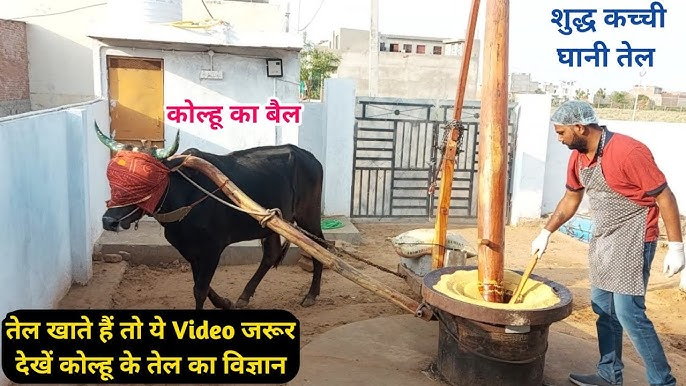
- Ek sach, sau jhooth par bhaari.” means One truth outweighs (or exposes) a hundred lies. It highlights the power of truth—once spoken, it can undo many deceptions.
- “Ek jhooth ko chhupane ke liye sau jhooth bolne padte hain.” - means to hide one lie, you end up telling a hundred more.
❤️ गिनती ० १ २ ३ ४ ५ ६ ७ ८ ९
To learn hindi counting you can write 1 to 100 on a page and keep practicing for a few days.
० - शून्य १ - एक २ - दो ३ - तीन ४ - चार
५ - पाँच ६ - छः ७ - सात ८ - आठ ९ - नौ
१० - दस
To learn hindi counting names you can write 1 to 100 on a page and keep practicing for a few days.
Note: It takes literally 1 minute to read counting from 1 to 100.
1 - एक (ek) 2 - दो (do) 3 - तीन (teen) 4 - चार (cāra) 5 - पांच (pāṃca) 6 - छः (chaḥ) 7 - सात (sāta) 8 - आठ (āṭha) 9 - नौ (nau) 10 - दस (dasa) | 11 - ग्यारह (gyāraha) 12 - बारह (bāraha) 13 - तेरह (tēraha) 14 - चौदह (caudaha) 15 - पंद्रह (paṃdraha) 16 - सोलह (solaha) 17 - सत्रह (satraha) 18 - अट्ठारह (aṭṭhāraha) 19 - उन्निस (unnisa) 20 - बीस (bīsa) | 21 - इक्कीस (ikkīsa) 22 - बाईस (bāīsa) 23 - तेईस (tēīsa) 24 - चौबीस (chaubīsa) 25 - पच्चीस (paccīsa) 26 - छब्बीस (chabbīsa) 27 - सत्ताईस (sattāīsa) 28 - अट्ठाईस (aṭṭhāīsa) 29 - उनतीस (unatīsa) 30 - तीस (tīsa) | 31 - इकतीस (ikatīsa) 32 - बत्तीस (battīsa) 33 - तैंतीस (taiṃtīsa) 34 - चौंतीस (cauṃtīsa) 35 - पैंतीस (paiṃtīsa) 36 - छ्त्तीस (chattīsa) 37 - सैंतीस (saiṃtīsa) 38 - अड़तीस (aṛatīsa) 39 - उनतालीस (unatālīsa) 40 - चालीस (cālīsa) | 41 - इकतालीस (ikatālīsa) 42 - बयालीस (bayālīsa) 43 - तैंतालीस (taiṃtālīsa) 44 - चवालीस (chavalis) 45 - पैंतालीस (paiṃtālīsa) 46 - छियालीस (chiyālīsa) 47 - सैंतालीस (saiṃtālīsa) 48 - अड़तालीस (aṛatālīsa) 49 - उनचास (unacāsa) 50 - पचास (pacāsa) |
51 - इक्यावन (ikyāvana) 52 - बावन (bāvana) 53 - तिरेपन (tirēpana) 54 - चौवन (chauvana) 55 - पचपन (pacapana) 56 - छप्पन (chappana) 57 - सत्तावन (sattāvana) 58 - अट्ठावन (aṭṭhāvana) 59 - उनसठ (unasaṭha) 60 - साठ (sāṭha) | 61 - इकसठ (ikasaṭha) 62 - बासठ (bāsaṭha) 63 - तिरसठ (tirasaṭha) 64 - चौंसठ (cauṃsaṭha) 65 - पैंसठ (paiṃsaṭha) 66 - छियासठ (chiyāsaṭha) 67 - सड़सठ (saṛasaṭha) 68 - अड़सठ (aṛasaṭha) 69 - उनहत्तर (unahattara) 70 - सत्तर (sattara) | 71 - इकहत्तर (ikahattara) 72 - बहत्तर (bahattara) 73 - तिहत्तर (tihattara) 74 - चौहत्तर (cauhattara) 75 - पचहत्तर (pacahattara) 76 - छिहत्तर (chihattara) 77 - सतहत्तर (satahattara) 78 - अठहत्तर (aṭhahattara) 79 - उनासी (unāsī) 80 - अस्सी (assī) | 81 - इक्यासी (ikyāsī) 82 - बयासी (bayāsī) 83 - तिरासी (tirāsī) 84 - चौरासी (caurāsī) 85 - पचासी (pacāsī) 86 - छियासी (chiyāsī) 87 - सतासी (satāsī) 88 - अठासी (aṭhāsī) 89 - नवासी (navāsī) 90 - नब्बे (nabbē) | 91 - इक्यानवे (ikyānavē) 92 - बानवे ( bānavē) 93 - तिरानवे (tirānavē) 94 - चौरानवे (caurānavē) 95 - पचानवे (pacānavē) 96 - छियानवे (chiyānavē) 97 - सत्तानवे (sattānavē) 98 - अट्ठानवे (aṭṭhānavē) 99 - निन्यानवे (ninyānavē) 100 - (एक) सौ ( (ēka) sau) |
Some Wikipedia Pages About Hindi Languages
Note: Below list is not exhaustive i.e., not complete.
https://en.wikipedia.org/wiki/Languages_of_India
https://en.wikipedia.org/wiki/History_of_Hindustani_language
https://en.wikipedia.org/wiki/Languages_with_legal_status_in_India
https://en.wikipedia.org/wiki/Indian_states_by_most_spoken_scheduled_languages
https://en.wikipedia.org/wiki/Hindi
❤️ Learn Hindi Typing 🙂
Learn Hindi Typing
Directly go to this site and start practicing: https://sarkariselection.com/Typing/HindiMangalTyping
🙂 Hindi Lakoktian
check this doc - 250+ Lokoktiyan in Hindi साथ ही जानिए मुहावरे और लोकोक्ति में अंतर
- Jiski lathi uski bhenss:The proverb signifies that power, authority, or force often dictates ownership or control, regardless of fairness or justice. It reflects the idea that in some situations, might makes right, and the one who holds power decides the rules.
- Usage: It is often used in a lighthearted or sarcastic manner to describe situations where the powerful dominate or take advantage, even if they aren't morally correct.
- Ant bhala toh sab bhala.
- Bhains ke aage been bajana.
- Chikna ghara.
- Naach na jaane aangan tedha.
- Khargosh ke seeng.
- Unt ko rail mei chadhana.
Miscellaneous
What is that material for crackers which we light up?
(Sahil: In hindi it is called पलीता, learned from “Kahe Kabir Diwana” book by Osho).
The material used in firecrackers that you light up is typically a mixture of chemicals that produce a desired effect when ignited. Commonly, this includes: - Black Powder: Also known as gunpowder, it consists of potassium nitrate (saltpeter), charcoal, and sulfur. This mixture is used in many types of fireworks for its explosive properties.
- Flash Powder: A combination of potassium perchlorate and aluminum powder. It's used in more powerful firecrackers and produces a bright flash and loud bang.
- Stars: These are small pellets or balls of pyrotechnic compositions that create colors and effects when ignited. They often contain various metal salts for different colors.
- Percussion Caps: These are small explosive devices used to ignite the main charge in some types of firecrackers.
Each of these materials is carefully combined and packed into the firecracker to produce the desired visual or auditory effect when ignited.
> i mean the wire? - Sahil The wire used in firecrackers is typically made from a thin metallic material, often steel or aluminum. This wire is used to connect the ignition system to the firecracker's main charge. - Steel Wire: Often used for its strength and durability, ensuring the firecracker remains intact until ignited.
- Aluminum Wire: Sometimes used for its lightweight properties, which can help in specific designs of firecrackers.
The wire might also be coated with a layer of insulating material to prevent premature ignition and ensure safe handling before lighting. |
🍎 English - Word origins
- English language - Wikipedia: Click here
- Foreign-language influences in English - Wikipedia: Click here
- A computerized survey of about 80,000 words in the third edition of the Shorter Oxford Dictionary, published by Finkenstaedt and Wolff in 1973 estimated the origin of English words to be as follows:
- French: 28.30%;
- Latin, including modern scientific and technical Latin: 28.24%;
- Germanic languages, as inherited from Old English, from Proto-Germanic, or a more recent borrowing from a Germanic language such as Old Norse, excluding Germanic words borrowed from a Romance language: 25%;[a]
- Greek: 5.32%;
- no etymology given: 4.04%;
- derived from proper names: 3.28%; and
- all other languages: less than 1%.
Object vs. Subject in English Grammar
From ChatGPT:
In English grammar, "subject" and "object" are key components of sentence structure, each playing distinct roles.
Subject
The subject of a sentence is the person, place, thing, or idea that performs the action of the verb or is described by it. The subject usually appears before the verb in a sentence and answers the questions "who?" or "what?" in relation to the verb.
Examples:
She runs every morning. (Who runs? She is the subject performing the action.)
The cat is sleeping. (What is sleeping? The cat is the subject.)
Object
The object of a sentence is the person, place, thing, or idea that receives the action of the verb. Objects usually follow the verb and can be direct or indirect.
Direct Object
- A direct object receives the action of the verb directly. It answers the questions "whom?" or "what?" in relation to the verb.
Examples:
- She reads a book. (Reads what? A book is the direct object.)
- They built a house. (Built what? A house is the direct object.)
Indirect Object
- An indirect object indirectly receives the action of the verb. It usually comes before the direct object and answers the questions "to whom?", "for whom?", "to what?", or "for what?".
Examples:
- She gave him a gift. (Gave a gift to whom? Him is the indirect object, and a gift is the direct object.)
They sent her a letter. (Sent a letter to whom? Her is the indirect object, and a letter is the direct object.)
Summary
Subject: The doer of the action or the topic described (e.g., "The cat" in "The cat is sleeping").
Direct Object: The receiver of the action (e.g., "a book" in "She reads a book").
Indirect Object: The entity indirectly affected by the action (e.g., "him" in "She gave him a gift").
Understanding the roles of subjects and objects helps in constructing clear and grammatically correct sentences.
Knowledge
- Language spoken in kerala: Malayalam
Learn common mistakes in English
- Gramarly.com: Click here
- blog.hubspot.com Click here
- oxfordinternationalenglish: Click here
- cnbc.com: Click here
- writer.com: Click here
Proper Noun vs. Common Noun
Should a name like chalni (sieve) start with a capital letter?
The decision to capitalize the word "chalni" (sieve) depends on the context in which it is used:
- At the Beginning of a Sentence: If "chalni" is the first word in a sentence, it should be capitalized.
- Example: "Chalni is a useful kitchen tool."
- Proper Noun: If "chalni" is being used as a proper noun (e.g., a brand name or a unique name of an entity), it should be capitalized.
- Example: "I bought a Chalni sieve from the store."
- General Usage: If "chalni" is used as a common noun (referring to any sieve), it should not be capitalized.
- Example: "I need a chalni to strain the pasta."
In summary, capitalize "chalni" only if it starts a sentence or is used as a proper noun.
🤖🤖🤖 Custom Instructions #prompt #chatGPT #Gemini #deepseek
Sample Prompt I want to be addressed as Sáhil, and always say my name first and also at the end of the response to make it sound more personal unless I'm asking for word meaning for a word. Please be concise as much as possible with easy words used but if you use complex words please define meanings of them at the end of the response. If you are writing in points and each point has a heading then please keep the heading and the text on the same line. |
Prompt - “Vocab 7 November, 2024”: Provide a response containing the word followed by colon and its Hindi and English meanings separated by semicolon for each contextual meaning and do not specify noun, verb, adjective, etc. Please make hindi meaning appear before english meaning. Please provide one example sentence in english and hindi indented next to each contextual meaning, and make english sentence appear first, and hindi sentence in round brackets and do not make use of keywords उदाहरण and example. Please only make the first word bold and the rest of the text without any styling. |
Prompt - 17 Feb 2025: for deepseek - https://groq.com/ ❤️ (Groq Rocks) Provide a response containing the word followed by colon and its Hindi and English meanings separated by semicolon for each contextual meaning and do not specify noun, verb, adjective, etc. Please make hindi meaning appear before english meaning. Please provide one example sentence in english and hindi indented next to each contextual meaning, and make english sentence appear first, and hindi sentence in round brackets and do not make use of keywords उदाहरण and example. Please only make the first word bold and the rest of the text without any styling.
in format: Interface: - इंटरफेस; a point where two systems or subjects meet and interact - "The user interface of the app is very intuitive." (ऐप का इंटरफेस बहुत सहज है।) - संपर्क; a means of communication or interaction - "The manager served as an interface between the team and the clients." (प्रबंधक टीम और ग्राहकों के बीच संपर्क के रूप में कार्य करता था।) |
What is the meaning of my name “Sahil”?
Sahil (साहिल):
- किनारा; the shore or coast (तट), typically of a sea, lake, or river.
- They walked along the साहिल, enjoying the view of the ocean. (वे साहिल के किनारे चले, समुद्र का नज़ारा देखते हुए।)
- सुरक्षित स्थान; a metaphorical or literal safe place or refuge.
- After a long journey, they finally reached the साहिल of their destination. (लंबी यात्रा के बाद, वे अंततः अपनी मंजिल के साहिल पर पहुंचे।)
Is my name Sahil phonetically correct?
No, to be phonetically accurate it should be Sáhil
What does a á à â ã ä å ă ą mean?
From Quora: That depends on the language. For example: - á and à indicate tone (rising and falling, respectively) in the Pinyin transcription of Chinese.
- In Italian, à indicates irregular stress; in French, it merely distinguishes homonyms in writing (e.g. à ‘to’ from a ‘has’) but has no influence on pronunciation.
- ă could be a short vowel when writing Latin; it’s an obscure, shwa-like vowel when writing Romanian.
- ą is a nasal vowel in Polish; a formerly nasalised (now usually simply long) vowel in Lithuanian.
- â is often a long vowel in French, typically where a historical -s- was dropped; in Romanian, it’s a centralised vowel.
And so on. Basically, these diacritics are a way to extend the alphabet for languages that have more sounds than the 26 in the alphabet we inherited from the Romans.
From ChatGPT: These are variations of the letter "a" with different diacritical marks, used in various languages and phonetic transcription systems to represent different sounds. In Hindi, they don't have specific meanings, but in English, they can represent different vowel sounds or modifications. - diacritical: Diacritical means विस्तारक / व्याकरणिक चिन्ह) in Hindi, indicating marks or symbols added to letters to give them a particular phonetic value or to distinguish them from other similar-looking letters.
- प्रत्यय: प्रत्यय का मतलब है "वर्णों का समूह जो किसी शब्द का अर्थ बदलते हैं, या जो किसी शब्द के अर्थ में जोड़ते हैं।" यह ध्वनि या अर्थ में परिवर्तन लाने के लिए प्रयुक्त होता है। (Meaning: A morpheme that alters or adds meaning to a word.)
- वर्ण: वर्ण का मतलब है "अक्षर"। यह भाषा की सबसे छोटी इकाई होती है, जो ध्वनि को प्रकट करने के लिए प्रयुक्त होती है। (Meaning: "Letter" or "character," the smallest unit of a language used to represent sounds.
Please define the most common meaning of all of those.Certainly! Here are the most common meanings: - á (Hindi: एक तरह का प्रत्यय) - Represents a long vowel sound, as in "father."
- à (Hindi: एक तरह का प्रत्यय) - Represents a short vowel sound, as in "cat."
- â (Hindi: एक तरह का प्रत्यय) - Represents a circumflex accent, often used to denote a longer vowel sound or a different pronunciation, as in "crêpe."
- ã (Hindi: एक तरह का प्रत्यय) - Represents a nasalized vowel sound, as in "banana" (in some accents).
- ä (Hindi: एक तरह का प्रत्यय) - Represents a sound similar to the "a" in "cat" or "father," depending on the language or context.
- å (Hindi: एक तरह का प्रत्यय) - Represents a distinct sound depending on the language, often a variation of the "a" sound.
- ă (Hindi: एक तरह का प्रत्यय) - Represents a short vowel sound, similar to the "a" in "cat" or "father."
|
Difference between á and ā? (ChatGPT)
The characters á and ā are both modified versions of the letter "a," but they represent different sounds and usages in various languages. Here's a brief overview of the differences: - á (Acute Accent):
- The acute accent (´) placed over the letter "a" creates "á."
- In many languages, including Spanish, Portuguese, and Icelandic, the acute accent indicates a stressed syllable or a change in pronunciation.
- In some languages, such as Czech and Slovak, "á" represents a long vowel sound.
- In tonal languages like Vietnamese, the acute accent denotes a high rising tone.
- ā (Macron):
- The macron (¯) placed over the letter "a" creates "ā."
- In languages like Latin, Maori, and Latvian, the macron indicates a long vowel sound, meaning the vowel is held longer than its short counterpart.
- In the International Phonetic Alphabet (IPA), a macron over a vowel can denote a long vowel sound.
- In Romanized Sanskrit, "ā" represents a long "a" sound, as opposed to the short "a" sound in "a."
In summary, the acute accent (á) often indicates stress or a specific tone, while the macron (ā) generally signifies a longer vowel sound. The exact pronunciation and usage can vary depending on the language. |
Write some latin language
ChatGPT: Sure! Here are a few phrases and sentences in Latin, along with their English translations: - Salve!
- Quid agis?
- Amor vincit omnia.
- English: Love conquers all.
- Carpe diem.
- Veni, vidi, vici.
- English: I came, I saw, I conquered.
- Et tu, Brute?
- English: And you, Brutus? (Famous quote from Shakespeare's "Julius Caesar")
- Tempus fugit.
- Alea iacta est.
- English: The die is cast.
- In vino veritas.
- English: In wine, there is truth.
- Per aspera ad astra.
- English: Through hardships to the stars.
- E pluribus unum.
- English: Out of many, one.
- Ad astra per aspera.
- English: To the stars through difficulties.
These are common Latin phrases that are still frequently used in various contexts today. |
American Education System
From ChatGPT: In the American education system, schools are typically categorized as follows:
- Elementary School: Also known as grade school or grammar school, it generally includes kindergarten through 5th or 6th grade, depending on the local school district.
- Middle School: Sometimes referred to as junior high school, it typically covers grades 6 through 8 or 7 through 8, depending on the local educational structure.
- Junior High School: Historically, this term was used more commonly before the adoption of middle schools. It typically included grades 7 through 9.
- High School: Covers grades 9 through 12, where students graduate and receive a high school diploma upon completion.
- Secondary School: An overarching term that encompasses both middle and high schools.
- Primary School: Occasionally used to refer collectively to elementary and middle schools.
These terms may vary slightly depending on the region or district within the United States, but they generally describe the stages of primary and secondary education.
Middle east countries
- Iran
- Saudi Arabia
- Iraq
- Yemen
- Israel
- Kuwait
- Jordan
- United Arab Emirates
- Lebanon
- Egypt
- Qatar
- Bahrain
- Oman
- Syria
- Türkiye
- Cyprus
- Palestine
How to read a book
From Sahil:
There are books which require a lot of domain specific vocabulary thus the first thing is that you need to get that vocab sorted somehow. To solve this there are two ways. One way is to keep looking for a word you don’t know about in the dictionary or via your personalized ChatGPT. This is a boring way. The other way is smart but a little bit repetitive in manner minimum of 80 pages (close with chapter closing) at once such that you only need to look for words in dictionary in minimum number of so that you don’t feel like you’re bored on finding the words in ChatGPT or any other dictionary all the time you want to progress on reading the book. To follow this you can do:
- Read a minimum of 80 pages (close with chapter closing) and mark each word with a pencil and a line from it to empty area so that you can write the word's meaning number when you’re gonna search for that word again.
- Now find all the word meanings and write it in this vocab doc.
- Now read the book again and now you have quick access to the word's meanings. Yikes!
Debt on govts
- USA Debt: 18k crores $
- India Debt: 2k crores $
- Pakistan Debt: 9k crores $
List of feelings
Todo crop the top and bottom in this photo.

Q. What is etymology? (#etymology of etymology)
ChatGPT
Etymology is the study of the origin and historical development of words. It investigates how words have evolved in form and meaning over time, tracing their roots back to earlier languages and examining changes in pronunciation, spelling, and usage. Etymologists analyze linguistic data, historical texts, and various other sources to uncover the lineage of words and understand how they reflect cultural and social changes.
❤️Etymology of etymologyThe word Etymology comes from the Greek word "ἐτυμολογία" (etymología), which is a combination of "ἔτυμον" (étymon), meaning "true sense" or "true meaning," and the suffix "-λογία" (-logía), meaning "study" or "discourse." - ἔτυμον (étymon) – "true sense" or "true meaning"
- English: "The etymology of the word reveals its true origin."
- Hindi: "शब्द की उत्पत्ति उसका सच्चा अर्थ उजागर करती है।"
- -λογία (-logía) – "study" or "discourse"
- English: "Etymology is the study of the origin of words."
- Hindi: "उत्पत्ति का अध्ययन शब्दों के मूल की खोज करता है।"
The term entered Middle English from Old French in the late 14th century, initially referring to the study of the origins and historical development of words. |
Q. What is linguistic?
ChatGPT
Linguistics is the scientific study of language and its structure. It involves analyzing language form, language meaning, and language in context. Key areas of linguistics include: - Phonetics: The study of the physical sounds of human speech.
- Phonology: The study of how sounds function within a particular language or languages.
- Morphology: The study of the structure and formation of words.
- Syntax: The study of sentence structure and the rules that govern the construction of sentences.
- Semantics: The study of meaning in language.
- Pragmatics: The study of how context influences the interpretation of meaning.
- Sociolinguistics: The study of how language varies and changes in social groups.
- Psycholinguistics: The study of how language is processed and produced by the mind.
- Historical Linguistics: The study of how languages change over time.
- Applied Linguistics: The application of linguistic theories to practical issues such as language education, translation, and language policy.
Linguistics aims to understand how languages are structured, how they function, how they are learned, and how they change over time. |
❤️🔥Sign Languages
- American Sign Language
- British Sign Language
- Indian Sign Language: